<meta charset="utf-8"><meta name="viewport" content="width=device-width,initial-scale=1">
<title>Toccata v4 통합</title>
<link rel="preconnect" href="https://fonts.googleapis.com"><link rel="preconnect" href="https://fonts.gstatic.com" crossorigin>
<link rel="stylesheet" href="https://fonts.googleapis.com/css2?family=IBM+Plex+Mono:wght@400;500;600&family=IBM+Plex+Sans+KR:wght@400;500;600;700&display=swap">
<style>:root{
  --paper:#F4F5F7; --card:#FFFFFF; --ink:#1A2030; --ink-2:#556074; --ink-3:#7E889A; --rule:#DCE1E8; --rule-2:#C9D0DA;
  --blue:#1F5FBF; --blue-ink:#184E9F; --felt:#B3342D; --felt-soft:#F7E4E2; --tint-blue:#E7EEF9; --tint-green:#E2F0E6;
  --tint-amber:#FBF0DC; --amber:#9A5B00; --good:#1E7A46; --warn:#A15C00; --shadow:0 1px 2px rgba(20,28,45,.06),0 4px 14px rgba(20,28,45,.05);
  --sheet:#FFFFFF; --sheet-rule:#C9D0DA;
  --s1:#2a78d6; --s2:#eb6834; --s3:#1baf7a; --s4:#eda100; --s5:#e87ba4; --s6:#008300;
  --mono:"IBM Plex Mono",ui-monospace,SFMono-Regular,Menlo,monospace;
  --sans:"IBM Plex Sans KR","Apple SD Gothic Neo","Noto Sans KR","Malgun Gothic",system-ui,sans-serif;
  /* drawing tokens: sheets stay paper-white in both themes */
  --d-ink:#1d2433; --d-dim:#1f5fbf; --d-ext:#8a96ab; --d-ph:#6b7690; --d-press:#c2410c;
  --d-wood:#ecdcc2; --d-wood-h:#b89868; --d-print:#dfe6ef; --d-print-h:#8fa1bb; --d-print2:#cfe3d6;
  --d-key:#fbfbf8; --d-keyfar:#eeeee8; --d-key-h:#9aa3b2; --d-black:#2a2d33;
  --d-steel:#b9c0cc; --d-steel-h:#5d6778; --d-felt:#c74a4a; --d-magN:#c0392b; --d-magS:#2f6fd6;
  --d-sensor:#222; --d-wire:#e0a526; --d-void:#ffffff; --d-bg:#ffffff; --d-spring:#4a5568;
}
@media (prefers-color-scheme: dark){
  :root:not([data-theme="light"]){
    color-scheme:dark;
    --paper:#11141A; --card:#1A1F28; --ink:#E7EAF0; --ink-2:#A6AEBD; --ink-3:#7D8698; --rule:#2B323E; --rule-2:#39414F;
    --blue:#86B4FF; --blue-ink:#A9C9FF; --felt:#F0837B; --felt-soft:#3A2224; --tint-blue:#1C2940; --tint-green:#172E22;
    --tint-amber:#33280F; --amber:#F2B45A; --good:#6FD69B; --warn:#F2B45A; --shadow:0 1px 2px rgba(0,0,0,.4);
    --sheet:#F7F7F5; --sheet-rule:#39414F;
    --s1:#3987e5; --s2:#d95926; --s3:#199e70; --s4:#c98500; --s5:#d55181; --s6:#008300;
  }
}
:root[data-theme="dark"]{
  color-scheme:dark;
  --paper:#11141A; --card:#1A1F28; --ink:#E7EAF0; --ink-2:#A6AEBD; --ink-3:#7D8698; --rule:#2B323E; --rule-2:#39414F;
  --blue:#86B4FF; --blue-ink:#A9C9FF; --felt:#F0837B; --felt-soft:#3A2224; --tint-blue:#1C2940; --tint-green:#172E22;
  --tint-amber:#33280F; --amber:#F2B45A; --good:#6FD69B; --warn:#F2B45A; --shadow:0 1px 2px rgba(0,0,0,.4);
  --sheet:#F7F7F5; --sheet-rule:#39414F;
  --s1:#3987e5; --s2:#d95926; --s3:#199e70; --s4:#c98500; --s5:#d55181; --s6:#008300;
}
*{box-sizing:border-box}
body{background:var(--paper);color:var(--ink);font-family:var(--sans);font-size:15px;line-height:1.62;margin:0;-webkit-font-smoothing:antialiased}
a{color:var(--blue);text-underline-offset:2px}
a:focus-visible,button:focus-visible,summary:focus-visible{outline:2px solid var(--blue);outline-offset:2px;border-radius:4px}
.wrap{max-width:1240px;margin:0 auto;padding-inline:20px}
@media (max-width:560px){.wrap{padding-inline:16px}}

/* title block */
.tb{border-bottom:1px solid var(--rule);background:var(--card)}
.tb .wrap{display:grid;grid-template-columns:1fr auto;gap:18px;align-items:end;padding-block:22px 16px}
.tb h1{font-size:clamp(24px,3.2vw,34px);line-height:1.15;margin:0;font-weight:700;letter-spacing:-.01em;text-wrap:balance}
.tb .kicker{font-family:var(--mono);font-size:11.5px;letter-spacing:.12em;text-transform:uppercase;color:var(--ink-3);margin-bottom:6px}
.tb .sub{color:var(--ink-2);margin:.35rem 0 0;max-width:68ch}
.tbgrid{display:grid;grid-template-columns:repeat(2,auto);border:1px solid var(--rule-2);font-family:var(--mono);font-size:11.5px}
.tbgrid div{padding:5px 10px;border-right:1px solid var(--rule);border-bottom:1px solid var(--rule)}
.tbgrid div:nth-child(2n){border-right:0}
.tbgrid b{display:block;font-size:10px;color:var(--ink-3);font-weight:500;letter-spacing:.06em}
@media (max-width:820px){.tb .wrap{grid-template-columns:1fr}.tbgrid{justify-self:start}}

/* nav */
nav.tabs{position:sticky;top:env(safe-area-inset-top,0px);z-index:20;background:color-mix(in srgb,var(--paper) 92%,transparent);backdrop-filter:blur(8px);border-bottom:1px solid var(--rule)}
nav.tabs .wrap{display:flex;gap:4px;overflow-x:auto;scrollbar-width:none;padding-block:8px}
nav.tabs .wrap::-webkit-scrollbar{display:none}
nav.tabs a{flex:none;text-decoration:none;color:var(--ink-2);font-size:13.5px;padding:7px 12px;border-radius:7px;white-space:nowrap;border:1px solid transparent}
nav.tabs a .tag{font-family:var(--mono);font-size:11px;color:var(--ink-3);margin-right:5px}
nav.tabs a:hover{background:var(--card);color:var(--ink)}
nav.tabs a[aria-current="page"]{background:var(--ink);color:var(--paper);}
nav.tabs a[aria-current="page"] .tag{color:inherit;opacity:.7}
nav.tabs .sep{flex:none;width:1px;background:var(--rule);margin:6px 4px}

main{padding-block:26px 80px}
.page > h2{font-size:clamp(22px,2.6vw,28px);margin:0 0 4px;letter-spacing:-.01em;text-wrap:balance}
.page .lede{color:var(--ink-2);max-width:72ch;margin:0 0 22px}
h3{font-size:18px;margin:34px 0 10px;text-wrap:balance}
h3 .no{font-family:var(--mono);font-size:12px;color:var(--ink-3);font-weight:500;margin-right:8px;letter-spacing:.06em}
h4{font-size:15px;margin:0}
p{max-width:75ch}
.eyebrow{font-family:var(--mono);font-size:11.5px;letter-spacing:.1em;text-transform:uppercase;color:var(--ink-3)}
.muted{color:var(--ink-2)}
.small{font-size:13px}
.mono,.num{font-family:var(--mono);font-variant-numeric:tabular-nums}

/* sheets (drawings) */
.sheet{background:var(--sheet);border:1px solid var(--sheet-rule);border-radius:10px;padding:10px 12px 8px;margin:10px 0 6px;color-scheme:light;--ink:#1A2030;--ink-2:#556074;--card:#FFFFFF;--tint-blue:#E7EEF9;--tint-green:#E2F0E6;color:#1A2030}
.sheet .cap{display:flex;justify-content:space-between;gap:12px;flex-wrap:wrap;font-size:12.5px;color:#556074;border-bottom:1px solid #E3E7ED;padding:0 2px 7px;margin-bottom:6px}
.sheet .cap b{color:#1A2030;font-weight:600}
.sheet .cap .mono{font-size:11.5px}
.dw{overflow-x:auto;-webkit-overflow-scrolling:touch}
.dw svg{display:block;width:100%;height:auto;min-width:760px;margin:0 auto}
.dw.narrow svg{min-width:480px}
.legend-mat{display:flex;flex-wrap:wrap;gap:6px 14px;font-size:12px;color:#556074;padding:6px 2px 2px}
.legend-mat span{display:inline-flex;align-items:center;gap:6px}
.legend-mat i{width:14px;height:10px;border:1px solid #1d2433;display:inline-block;border-radius:2px}

/* grids & cards */
.grid{display:grid;gap:14px}
.g2{grid-template-columns:repeat(2,minmax(0,1fr))}
.g3{grid-template-columns:repeat(3,minmax(0,1fr))}
.g4{grid-template-columns:repeat(4,minmax(0,1fr))}
@media (max-width:960px){.g4{grid-template-columns:repeat(2,minmax(0,1fr))}.g3{grid-template-columns:repeat(2,minmax(0,1fr))}}
@media (max-width:620px){.g2,.g3,.g4{grid-template-columns:minmax(0,1fr)}}
.grid>*,.cols>*{min-width:0}
.card{background:var(--card);border:1px solid var(--rule);border-radius:12px;padding:16px 18px}
.note{border-left:3px solid var(--blue);background:var(--tint-blue);padding:10px 14px;border-radius:0 8px 8px 0;font-size:14px;margin:12px 0;max-width:none}
.note.warn{border-color:var(--amber);background:var(--tint-amber)}
.note.felt{border-color:var(--felt);background:var(--felt-soft)}

/* method cards on overview */
.mcard{background:var(--card);border:1px solid var(--rule);border-radius:12px;padding:16px;display:flex;flex-direction:column;gap:10px;text-decoration:none;color:inherit}
.mcard:hover{border-color:var(--blue)}
.mcard .id{font-family:var(--mono);font-size:28px;font-weight:600;line-height:1;color:var(--ink)}
.mcard .nm{font-weight:600}
.mcard dl{display:grid;grid-template-columns:auto 1fr;gap:3px 10px;margin:0;font-size:13px}
.mcard dt{color:var(--ink-3)}
.mcard dd{margin:0;font-family:var(--mono);font-variant-numeric:tabular-nums;text-align:right}
.mcard .cost{font-family:var(--mono);font-size:20px;font-weight:600;border-top:1px dashed var(--rule-2);padding-top:8px;display:flex;justify-content:space-between;align-items:baseline}
.mcard .cost small{font-size:11px;color:var(--ink-3);font-family:var(--sans);font-weight:400}
.pill{display:inline-block;font-size:11.5px;padding:2px 8px;border-radius:99px;border:1px solid var(--rule-2);color:var(--ink-2);background:var(--paper)}
.pill.rec{border-color:var(--felt);color:var(--felt);background:var(--felt-soft);font-weight:600}
.meter{display:flex;gap:3px}
.meter i{width:12px;height:6px;border-radius:2px;background:var(--rule-2)}
.meter i.on{background:var(--ink-2)}

/* key figures strip */
.kfs{display:grid;grid-template-columns:repeat(auto-fit,minmax(140px,1fr));gap:1px;background:var(--rule);border:1px solid var(--rule);border-radius:12px;overflow:hidden;margin:6px 0 20px}
.kf{background:var(--card);padding:12px 14px}
.kf b{display:block;font-family:var(--mono);font-size:19px;font-weight:600;font-variant-numeric:tabular-nums}
.kf span{font-size:12px;color:var(--ink-3)}

/* tables */
.tbl{overflow-x:auto;border:1px solid var(--rule);border-radius:10px;background:var(--card);margin:10px 0}
table{border-collapse:collapse;width:100%;font-size:13.5px}
th,td{padding:7px 10px;border-bottom:1px solid var(--rule);text-align:left;vertical-align:top}
th{font-size:12px;color:var(--ink-3);font-weight:600;background:color-mix(in srgb,var(--paper) 60%,var(--card));white-space:nowrap}
tr:last-child td{border-bottom:0}
td.r,th.r{text-align:right}
td.num,td .num{font-family:var(--mono);font-variant-numeric:tabular-nums;white-space:nowrap}
tr.total td{font-weight:700;background:color-mix(in srgb,var(--paper) 50%,var(--card))}
tr.sub td{color:var(--ink-2);font-size:12.5px}
.bal{display:inline-grid;place-items:center;width:22px;height:22px;border:1px solid var(--ink);border-radius:50%;font-family:var(--mono);font-size:11px;font-weight:600}

/* part cards */
.parts{display:grid;grid-template-columns:repeat(auto-fill,minmax(270px,1fr));gap:14px;margin:12px 0}
.part{background:var(--card);border:1px solid var(--rule);border-radius:12px;overflow:hidden;display:flex;flex-direction:column}
.part .ph{aspect-ratio:4/3;background:#fff;display:grid;place-items:center;border-bottom:1px solid var(--rule);position:relative}
.part .ph img{width:100%;height:100%;object-fit:contain;padding:10px}
.part .ph .noimg{font-size:12px;color:#7E889A}
.part .ph .qty{position:absolute;left:10px;top:10px;font-family:var(--mono);font-size:11.5px;background:#1A2030;color:#fff;border-radius:6px;padding:2px 7px}
.part .ph .opt{position:absolute;right:10px;top:10px;font-size:11px;background:#FBF0DC;color:#7a4700;border-radius:6px;padding:2px 7px}
.part .ph .sim{position:absolute;left:10px;bottom:8px;font-size:11px;background:#EEF1F6;color:#3d4657;border-radius:6px;padding:2px 7px}
.part .pb{padding:12px 14px 14px;display:flex;flex-direction:column;gap:6px;flex:1}
.part .cat{font-family:var(--mono);font-size:10.5px;letter-spacing:.08em;color:var(--ink-3);text-transform:uppercase}
.part h4{font-size:15px;line-height:1.35}
.part .model{font-family:var(--mono);font-size:12px;color:var(--ink-2);word-break:break-word}
.part .role{font-size:13px;color:var(--ink-2);margin:0}
.part .price{margin-top:auto;display:flex;justify-content:space-between;align-items:baseline;gap:8px;border-top:1px dashed var(--rule-2);padding-top:8px;font-size:12.5px;color:var(--ink-2)}
.part .price b{font-family:var(--mono);font-size:16px;color:var(--ink);font-variant-numeric:tabular-nums}
.part .links{display:flex;flex-wrap:wrap;gap:6px}
.part .links a{font-size:12px;text-decoration:none;border:1px solid var(--rule-2);border-radius:6px;padding:3px 8px;color:var(--ink)}
.part .links a:hover{border-color:var(--blue);color:var(--blue)}
.part .links a .pr{font-family:var(--mono);color:var(--ink-3);margin-left:4px}
details.spec summary{cursor:pointer;font-size:12.5px;color:var(--blue);list-style:none;padding:2px 0}
details.spec summary::-webkit-details-marker{display:none}
details.spec summary::before{content:"＋ ";font-family:var(--mono)}
details.spec[open] summary::before{content:"－ "}
details.spec table{font-size:12.5px;margin-top:6px}
details.spec td,details.spec th{padding:4px 6px}
details.spec td:first-child{color:var(--ink-3);white-space:nowrap;width:1%}
details.spec .alt{font-size:12.5px;color:var(--ink-2);margin:.5em 0 0}

/* cost chart */
.costbars{display:grid;gap:10px;margin:8px 0 4px}
.cb-row{display:grid;grid-template-columns:120px 1fr 110px;gap:10px;align-items:center}
.cb-row .lab{font-size:13px}
.cb-row .bar{display:flex;height:22px;gap:2px}
.cb-row .bar span{height:100%;border-radius:0}
.cb-row .bar span:first-child{border-radius:4px 0 0 4px}
.cb-row .bar span:last-child{border-radius:0 4px 4px 0}
.cb-row .tot{font-family:var(--mono);font-weight:600;text-align:right;font-variant-numeric:tabular-nums}
.cb-leg{display:flex;flex-wrap:wrap;gap:6px 16px;font-size:12.5px;color:var(--ink-2);margin-top:6px}
.cb-leg i{display:inline-block;width:10px;height:10px;border-radius:2px;margin-right:6px;vertical-align:-1px}
.c1{background:var(--s1)}.c2{background:var(--s2)}.c3{background:var(--s3)}.c4{background:var(--s4)}.c5{background:var(--s5)}.c6{background:var(--s6)}
.tip{position:fixed;pointer-events:none;background:var(--ink);color:var(--paper);font-size:12px;padding:6px 9px;border-radius:6px;z-index:50;font-family:var(--mono);white-space:nowrap}
@media (max-width:560px){.cb-row{grid-template-columns:70px 1fr 88px}}

/* segmented control */
.seg{display:inline-flex;border:1px solid var(--rule-2);border-radius:8px;overflow:hidden;background:var(--card)}
.seg button{font:inherit;font-size:13px;border:0;background:transparent;color:var(--ink-2);padding:6px 12px;cursor:pointer}
.seg button[aria-pressed="true"]{background:var(--ink);color:var(--paper)}
.toolbar{display:flex;gap:12px;align-items:center;flex-wrap:wrap;margin:8px 0}

.chart{width:100%;height:auto;display:block}
.chart .grid{stroke:var(--rule)}.chart .ax{fill:var(--ink-2);font:11px var(--mono)}.chart .curve{fill:none;stroke:var(--ink);stroke-width:2}
.chart .lim{fill:var(--blue);fill-opacity:.07}.chart .win{stroke-width:6;stroke-linecap:round}
.chart .w0{stroke:var(--s1)}.chart .w1{stroke:var(--s2)}.chart .w2{stroke:var(--s3)}.chart .w3{stroke:var(--s4)}
.proslist{margin:0;padding-left:1.1em}
.proslist li{margin:3px 0}
.cols{display:grid;grid-template-columns:minmax(0,1fr) minmax(0,1fr);gap:14px}
@media (max-width:720px){.cols{grid-template-columns:minmax(0,1fr)}}
.src{font-size:12.5px;color:var(--ink-2)}
.src li{margin:2px 0;word-break:break-word}
footer{border-top:1px solid var(--rule);color:var(--ink-3);font-size:12.5px;padding-block:18px 40px}
@media (prefers-reduced-motion:reduce){*{scroll-behavior:auto!important;transition:none!important}}

.dwimg{overflow-x:auto;-webkit-overflow-scrolling:touch;background:#fff}
.dwimg img{display:block;width:100%;min-width:720px;height:auto}
.sheet figcaption{padding:6px 2px 2px;color:#556074;max-width:none}
.sheet{margin:14px 0 18px}
ol.flow,ul.flow{margin:0 0 10px;padding-left:1.3em;display:grid;gap:5px}
ol.flow li,ul.flow li{max-width:80ch}
ol.dtoc{columns:2;column-gap:28px;padding-left:1.3em;font-size:14px}
@media (max-width:620px){ol.dtoc{columns:1}}
.sub4{font-size:15px;margin:18px 0 6px}
code{font-family:var(--mono);font-size:.92em;background:var(--tint-blue);padding:0 4px;border-radius:4px}

/* ---- 01 회로도 (+ page-wide .zbar/.csheet) ---- */

/* ---- shared by every drawing tab: zoom bar on .csheet (circuit.js toggles .z2 / .z3 page-wide). Inside .sheet the tokens are
   the light sheet palette, so these stay paper-white in both themes. ---- */
.csheet .cap{align-items:center}
.zbar{display:inline-flex;gap:4px;align-items:center;flex-wrap:wrap}
.zbar button{font:inherit;font-size:12px;line-height:1.2;border:1px solid var(--rule-2);background:var(--card);color:var(--ink);border-radius:6px;padding:4px 9px;min-height:30px;cursor:pointer}
.zbar button[aria-pressed="true"]{background:var(--ink);color:var(--card);border-color:var(--ink)}
.zbar a{margin-left:6px;white-space:nowrap}
.csheet .dwimg img{min-width:720px}
.csheet.z2 .dwimg img{width:2000px;min-width:0;max-width:none}
.csheet.z3 .dwimg img{width:3000px;min-width:0;max-width:none}
@media (pointer:coarse){.zbar button{min-height:44px;min-width:44px}}
/* ---- 01 회로도 ---- */
#p-circuit .circ-chips{display:flex;flex-wrap:wrap;gap:8px;margin:6px 0 14px}
#p-circuit .circ-chips a{display:inline-flex;align-items:center;gap:6px;min-height:44px;padding:6px 14px;border:1px solid var(--rule-2);border-radius:999px;background:var(--card);color:var(--ink);text-decoration:none;font-size:14px}
#p-circuit .circ-chips a:hover{border-color:var(--blue);color:var(--blue)}
#p-circuit .circ-chips a .q{font-family:var(--mono);font-size:11.5px;color:var(--ink-3)}
#p-circuit .circ-part{border-top:1px solid var(--rule);margin-top:30px;padding-top:4px;scroll-margin-top:calc(var(--navh,50px) + 12px)}
#p-circuit .circ-part > h3{margin-top:18px}
#p-circuit .circ-what{display:grid;grid-template-columns:minmax(0,1fr) auto;gap:10px 14px;align-items:start}
#p-circuit .circ-what > *{min-width:0}
#p-circuit .circ-what p{margin:0 0 6px;color:var(--ink-2)}
#p-circuit .circ-qty{font-family:var(--mono);white-space:nowrap;justify-self:start}
#p-circuit .circ-top{margin:10px 0 0}
#p-circuit .sheet,#p-circuit [id^="circuit-"]{scroll-margin-top:calc(var(--navh,50px) + 12px)}
#p-circuit .dwimg.crop svg{display:block;width:100%;min-width:720px;height:auto}
#p-circuit .csheet.z2 .dwimg.crop svg{width:2000px;min-width:0;max-width:none}
#p-circuit .csheet.z3 .dwimg.crop svg{width:3000px;min-width:0;max-width:none}
#p-circuit details.cbom{margin:10px 0;border:1px solid var(--rule);border-radius:10px;background:var(--card);padding:6px 10px}
#p-circuit details.cbom summary{font-size:14px;color:var(--ink);font-weight:600;min-height:32px;display:flex;align-items:center}
#p-circuit details.cbom .tbl{margin:8px 0 4px}
#p-circuit details.cbom table{font-size:12px}
#p-circuit .tbl td{font-size:12.5px}
#p-circuit .tbl td.num{white-space:normal;overflow-wrap:anywhere}
#p-circuit .sub4{margin:18px 0 6px}
#p-circuit ul.flow{list-style:disc}
#p-circuit .circ-dl{display:flex;flex-wrap:wrap;gap:8px;margin:8px 0}
#p-circuit .circ-dlbtn{font:inherit;font-size:14px;min-height:44px;padding:8px 16px;border-radius:8px;border:1px solid var(--ink);background:var(--ink);color:var(--paper);cursor:pointer}
#p-circuit .circ-dlbtn.small{font-size:13px;min-height:44px;padding:6px 12px;background:var(--card);color:var(--ink);border-color:var(--rule-2)}
#p-circuit .circ-dlbtn:disabled{opacity:.55;cursor:progress}
#p-circuit .circ-dlbtn:focus-visible,#p-circuit .circ-chips a:focus-visible{outline:2px solid var(--blue);outline-offset:2px}
@media (max-width:620px){
  #p-circuit .circ-what{grid-template-columns:minmax(0,1fr)}
  #p-circuit .circ-chips a{font-size:13px;padding:6px 12px}
}
@media (prefers-reduced-motion:reduce){#p-circuit *{scroll-behavior:auto!important;transition:none!important}}
/* ---- 01 회로도 · 회로 3D 모델 (hardware/pcb/src/circuit3d.css; page tokens only) ---- */
#p-circuit .c3d{display:grid;grid-template-columns:minmax(0,1fr) 300px;gap:12px;align-items:start;margin:10px 0 6px}
@media (max-width:980px){#p-circuit .c3d{grid-template-columns:minmax(0,1fr)}}
#p-circuit .c3d-main{min-width:0;display:flex;flex-direction:column;gap:8px}
#p-circuit .c3d-row{display:flex;flex-wrap:wrap;gap:6px;align-items:center;min-width:0}
#p-circuit .c3d-lbl{font-size:12px;color:var(--ink-3);min-width:2.8em}
#p-circuit .c3d-scenes,#p-circuit .c3d-views,#p-circuit .c3d-togs{display:flex;flex-wrap:wrap;gap:6px;min-width:0}
#p-circuit .c3d-btn{font:inherit;font-size:13px;min-height:34px;border:1px solid var(--rule-2);background:var(--card);color:var(--ink);border-radius:8px;padding:4px 11px;cursor:pointer;white-space:nowrap}
#p-circuit .c3d-btn:hover{border-color:var(--blue)}
#p-circuit .c3d-btn[aria-pressed="true"]{background:var(--ink);color:var(--paper);border-color:var(--ink)}
#p-circuit .c3d-tog[aria-pressed="false"]{color:var(--ink-3);text-decoration:line-through;text-decoration-thickness:1px}
#p-circuit .c3d-net{font:inherit;font-size:13px;min-height:34px;border:1px solid var(--rule-2);background:var(--card);color:var(--ink);border-radius:8px;padding:4px 8px;max-width:100%}
#p-circuit .c3d-stage{position:relative;height:clamp(340px,62vh,680px);border:1px solid var(--rule);border-radius:12px;overflow:hidden;
  background:radial-gradient(120% 90% at 50% 0%,var(--card) 0%,var(--paper) 100%)}
#p-circuit .c3d-stage canvas{display:block;width:100%;height:100%;cursor:grab;touch-action:none;outline:none}
#p-circuit .c3d-stage canvas:active{cursor:grabbing}
#p-circuit .c3d-stage canvas:focus-visible{box-shadow:inset 0 0 0 2px var(--blue)}
#p-circuit .c3d-over{position:absolute;inset:0;width:100%;height:100%;pointer-events:none;overflow:visible}
#p-circuit .c3d-over text{font:600 12px var(--mono);fill:var(--ink);paint-order:stroke;stroke:var(--card);stroke-width:4px;stroke-linejoin:round}
#p-circuit .c3d-over text.lv0{font-size:13px;fill:var(--blue-ink)}
#p-circuit .c3d-over text.lv2{font-size:11px;font-weight:500}
#p-circuit .c3d-load{position:absolute;inset:0;display:flex;flex-direction:column;align-items:center;justify-content:center;gap:10px;color:var(--ink-2);font-size:14px;text-align:center;padding:20px;background:var(--card)}
#p-circuit .c3d-load[hidden],#p-circuit .c3d-go[hidden]{display:none}
#p-circuit .c3d-load p{margin:0;max-width:46ch}
#p-circuit .c3d-hint{position:absolute;left:10px;bottom:8px;font-size:12px;color:var(--ink-3);pointer-events:none;background:color-mix(in srgb,var(--card) 80%,transparent);padding:2px 8px;border-radius:6px}
#p-circuit .c3d-side{display:flex;flex-direction:column;gap:10px;min-width:0}
#p-circuit .c3d-info{border:1px solid var(--rule);border-radius:12px;padding:10px 12px;background:var(--card);font-size:13.5px;min-height:120px;overflow-wrap:anywhere}
#p-circuit .c3d-info p{margin:0 0 6px}
#p-circuit .c3d-info ul{margin:4px 0 0;padding-left:18px}
#p-circuit .c3d-info li{margin:2px 0;color:var(--ink-2)}
#p-circuit .c3d-it{font-size:14.5px}
#p-circuit .c3d-muted{color:var(--ink-3)}
#p-circuit .c3d-sub{font-size:13px;color:var(--ink-2);margin:0}
#p-circuit .c3d-notes{margin:0;padding-left:18px;font-size:12.5px;color:var(--ink-2)}
#p-circuit .c3d-notes li{margin:3px 0}
@media (max-width:620px){#p-circuit .c3d-stage{height:clamp(300px,58vh,520px)}}
@media (pointer:coarse){#p-circuit .c3d-btn,#p-circuit .c3d-net{min-height:44px}}

/* ---- 04 3D 모델 ---- */
/* ---- 04 3D 모델 (hardware/mechanical/cad/viewer/cad.css) — page tokens only ---- */
#p-cad .cadv{display:grid;grid-template-columns:minmax(0,1fr) 300px;gap:14px;align-items:start;margin:10px 0 8px}
@media (max-width:980px){#p-cad .cadv{grid-template-columns:minmax(0,1fr)}}
#p-cad .cadmain{min-width:0;display:flex;flex-direction:column;gap:8px}
#p-cad .cadbar{display:flex;flex-wrap:wrap;gap:6px 8px;align-items:center;min-width:0}
#p-cad .cadlbl{font-size:12px;color:var(--ink-3);min-width:2.6em}
#p-cad .cadseg{max-width:100%;overflow-x:auto;scrollbar-width:thin;flex:0 1 auto}
#p-cad .cadseg button{white-space:nowrap;min-height:34px}
#p-cad .cadseg button:disabled{opacity:.45;cursor:default}
#p-cad .cadtog{font:inherit;font-size:13px;min-height:34px;border:1px solid var(--rule-2);background:var(--card);color:var(--ink);border-radius:8px;padding:4px 11px;cursor:pointer;white-space:nowrap}
#p-cad .cadtog:hover:not(:disabled){border-color:var(--blue)}
#p-cad .cadtog[aria-pressed="true"]{background:var(--ink);color:var(--paper);border-color:var(--ink)}
#p-cad .cadtog:disabled{opacity:.45;cursor:default}
#p-cad .cadrange{display:inline-flex;align-items:center;gap:8px;font-size:13px;color:var(--ink-2);flex:1 1 220px;min-width:0}
#p-cad .cadrange input{flex:1 1 auto;min-width:90px;accent-color:var(--blue)}
#p-cad .cadrange output,#p-cad #cad-sec-out{font-family:var(--mono);font-size:12.5px;color:var(--ink);min-width:5ch;white-space:nowrap}
#p-cad .cadsecbar input[type=range]{flex:1 1 200px;min-width:120px;accent-color:var(--blue)}
#p-cad .cadchk{display:inline-flex;align-items:center;gap:5px;font-size:13px;color:var(--ink-2);cursor:pointer;min-height:34px}
#p-cad .cadchk input{accent-color:var(--blue);width:16px;height:16px}
#p-cad .cadstage{position:relative;height:clamp(340px,64vh,700px);border:1px solid var(--rule);border-radius:12px;overflow:hidden;background:var(--card)}
#p-cad .cadstage canvas{display:block;width:100%;height:100%;cursor:grab;touch-action:none;outline:none}
#p-cad .cadstage canvas:active{cursor:grabbing}
#p-cad .cadstage canvas:focus-visible{box-shadow:inset 0 0 0 2px var(--blue)}
#p-cad .cadover{position:absolute;inset:0;width:100%;height:100%;pointer-events:none;overflow:visible}
#p-cad .cadover .cdim line{stroke:var(--blue);stroke-width:1.3}
#p-cad .cadover .cdim line.ext{stroke-width:.8;stroke-dasharray:3 3;opacity:.7}
#p-cad .cadover text{font:600 12px var(--mono);fill:var(--blue-ink);paint-order:stroke;stroke:var(--card);stroke-width:4px;stroke-linejoin:round}
#p-cad .cadover .cbar line{stroke:var(--ink);stroke-width:1.5}
#p-cad .cadover .cbar text{fill:var(--ink);font-weight:500}
#p-cad .cadover .cax line{stroke-width:2;stroke-linecap:round}
#p-cad .cadover .cax .ax-x line{stroke:var(--s2)}#p-cad .cadover .cax .ax-x text{fill:var(--s2)}
#p-cad .cadover .cax .ax-y line{stroke:var(--s3)}#p-cad .cadover .cax .ax-y text{fill:var(--s3)}
#p-cad .cadover .cax .ax-z line{stroke:var(--s1)}#p-cad .cadover .cax .ax-z text{fill:var(--s1)}
#p-cad .cadload{position:absolute;inset:0;display:flex;flex-direction:column;align-items:center;justify-content:center;gap:10px;color:var(--ink-2);font-size:14px;text-align:center;padding:20px;background:var(--card)}
#p-cad .cadload[hidden]{display:none}
#p-cad .cadload p{margin:0;max-width:44ch}
#p-cad .cadprog{width:min(280px,70%);height:6px;border-radius:99px;background:var(--rule);overflow:hidden}
#p-cad .cadprog i{display:block;height:100%;width:0;background:var(--blue);border-radius:99px;transition:width .2s}
#p-cad .cadretry[hidden]{display:none}
#p-cad .cadfocus{position:absolute;top:10px;left:50%;transform:translateX(-50%);display:flex;align-items:center;gap:8px;max-width:calc(100% - 20px);background:var(--ink);color:var(--paper);border-radius:99px;padding:4px 4px 4px 14px;font-size:13px;box-shadow:var(--shadow)}
#p-cad .cadfocus[hidden]{display:none}
#p-cad .cadfocus-t{min-width:0;overflow:hidden;text-overflow:ellipsis;white-space:nowrap}
#p-cad .cadfocus-x{font:inherit;font-size:12.5px;border:0;border-radius:99px;background:var(--paper);color:var(--ink);padding:5px 12px;min-height:30px;cursor:pointer;white-space:nowrap}
#p-cad .cadviewlbl{position:absolute;left:10px;top:10px;font:12px var(--mono);color:var(--ink-2);background:color-mix(in srgb,var(--card) 85%,transparent);padding:2px 8px;border-radius:6px;pointer-events:none}
#p-cad .cadviewlbl:empty{display:none}
#p-cad .cadhint{position:absolute;left:10px;bottom:8px;max-width:calc(100% - 150px);font-size:11.5px;color:var(--ink-3);background:color-mix(in srgb,var(--card) 85%,transparent);padding:2px 8px;border-radius:6px;pointer-events:none;transition:opacity .4s}
#p-cad .cadhint.is-off{opacity:0}
#p-cad .cadnote{margin:2px 0 0;max-width:none}
#p-cad .cadside{display:flex;flex-direction:column;gap:10px;min-width:0}
#p-cad .cadinfo{background:var(--card);border:1px solid var(--rule);border-radius:12px;padding:12px 14px;min-height:120px;min-width:0}
#p-cad .cadinfo h4{font-size:15px;line-height:1.35;margin:4px 0 6px;word-break:keep-all;overflow-wrap:anywhere}
#p-cad .cadempty{color:var(--ink-3);font-size:13px;margin:0}
#p-cad .cadkd{display:inline-block;font-size:11px;border-radius:99px;padding:1px 8px;border:1px solid var(--rule-2);color:var(--ink-2);margin:0 4px 2px 0}
#p-cad .cadkd-print{border-color:var(--blue);color:var(--blue-ink);background:var(--tint-blue)}
#p-cad .cadkd-electronics{border-color:var(--good);color:var(--good);background:var(--tint-green)}
#p-cad .cadkd-plywood,#p-cad .cadkd-consumable{border-color:var(--amber);color:var(--amber);background:var(--tint-amber)}
#p-cad .cadinfo dl{display:grid;grid-template-columns:auto minmax(0,1fr);gap:3px 10px;margin:8px 0 0;font-size:12.5px}
#p-cad .cadinfo dt{color:var(--ink-3);white-space:nowrap}
#p-cad .cadinfo dd{margin:0;min-width:0;overflow-wrap:anywhere}
#p-cad .cadinfo .mono{font-family:var(--mono);font-size:12px}
#p-cad .cadinfo details{grid-column:1/-1}
#p-cad .cadinfo details summary{cursor:pointer;color:var(--blue);font-size:12.5px}
#p-cad .cadinfo details p{margin:4px 0 0;font-size:12.5px;color:var(--ink-2)}
#p-cad .caddl{margin:8px 0 0;padding-left:1.1em;font-size:12.5px}
#p-cad .caddl b{font-family:var(--mono);font-weight:600}
#p-cad .cadacts{display:flex;flex-wrap:wrap;gap:6px;margin-top:10px}
#p-cad .cadacts button{font:inherit;font-size:12.5px;border:1px solid var(--rule-2);background:var(--paper);color:var(--ink);border-radius:7px;padding:4px 9px;min-height:32px;cursor:pointer}
#p-cad .cadacts button:hover{border-color:var(--blue)}
#p-cad .cadbox{background:var(--card);border:1px solid var(--rule);border-radius:12px;padding:6px 10px;min-width:0}
#p-cad .cadbox summary{cursor:pointer;font-size:13.5px;font-weight:600;padding:5px 0;list-style:none}
#p-cad .cadbox summary::-webkit-details-marker{display:none}
#p-cad .cadbox summary::before{content:"+ ";font-family:var(--mono);color:var(--ink-3)}
#p-cad .cadbox[open] summary::before{content:"− "}
#p-cad .cadsets{display:flex;flex-direction:column;gap:3px;padding:2px 0 6px}
#p-cad .cadset{display:flex;align-items:center;gap:8px;width:100%;text-align:left;font:inherit;font-size:12.5px;line-height:1.35;border:1px solid transparent;background:transparent;color:var(--ink);border-radius:7px;padding:6px 6px;min-height:34px;cursor:pointer}
#p-cad .cadset span{flex:1;min-width:0}
#p-cad .cadset em{font-style:normal;font-size:11px;color:var(--ink-3)}
#p-cad .cadset:hover{background:var(--paper);border-color:var(--rule)}
#p-cad .cadset[aria-pressed="true"]{background:var(--tint-blue);border-color:var(--blue)}
#p-cad .cadset-sec em{color:var(--felt)}
#p-cad .cadchips{display:flex;flex-wrap:wrap;gap:6px;padding:2px 0 8px}
#p-cad .cadchip{font:inherit;font-size:12.5px;border:1px solid var(--rule-2);background:var(--card);color:var(--ink);border-radius:99px;padding:4px 10px;min-height:32px;cursor:pointer;display:inline-flex;align-items:center;gap:6px}
#p-cad .cadchip span{font-size:11px;color:var(--ink-3)}
#p-cad .cadchip[aria-pressed="false"]{opacity:.5;text-decoration:line-through}
#p-cad .cadchip:hover{border-color:var(--blue)}
#p-cad .cadgtools{display:flex;flex-wrap:wrap;gap:6px;margin:2px 0 6px}
#p-cad .cadgtools button{font:inherit;font-size:12px;border:1px solid var(--rule-2);background:var(--card);color:var(--ink);border-radius:6px;padding:3px 9px;min-height:30px;cursor:pointer}
#p-cad .cadglist{max-height:380px;overflow:auto;display:flex;flex-direction:column;gap:1px;padding:0 0 6px}
#p-cad .cadgh{margin:8px 0 2px;font-size:11.5px;color:var(--ink-3);font-weight:600}
#p-cad .cadglist label{display:flex;gap:8px;align-items:center;font-size:12.5px;padding:3px 2px;border-radius:5px;cursor:pointer}
#p-cad .cadglist label:hover{background:var(--paper)}
#p-cad .cadglist label span{flex:1;min-width:0}
#p-cad .cadglist label em{font-style:normal;font-size:11px;color:var(--ink-3)}
#p-cad .cadglist input{accent-color:var(--blue)}
#p-cad .cadfiles code{word-break:break-all;font-size:12.5px}
#p-cad .cadsave{display:flex;flex-wrap:wrap;align-items:center;gap:8px 12px;margin:8px 0 14px}
#p-cad .cadest ul{padding-left:1.2em}
#p-cad .cadest li{margin:2px 0}
@media (max-width:560px){
  #p-cad .cadfocus{top:40px}
  #p-cad .cadhint{max-width:calc(100% - 110px)}
}
@media (pointer:coarse){
  #p-cad .cadtog,#p-cad .cadseg button,#p-cad .cadset,#p-cad .cadchip,#p-cad .cadacts button,#p-cad .cadgtools button,#p-cad .cadchk{min-height:44px}
  #p-cad .cadglist label{min-height:40px}
  #p-cad .cadfocus-x{min-height:40px}
}
@media (prefers-reduced-motion:reduce){
  #p-cad .cadprog i,#p-cad .cadhint{transition:none}
}

/* ---- dwg ---- */
/* 02 설계도 — every selector is scoped to #p-dwg; UI colours use the page tokens only (sheets stay paper-white via .sheet) */
#p-dwg .note{max-width:none}
#p-dwg .dwg-idx table{min-width:720px}
#p-dwg .dwg-idx td,#p-dwg .dwg-idx th{font-weight:400;background:var(--card)}
#p-dwg .dwg-idx td:first-child{white-space:nowrap}
#p-dwg .dwg-idx td:nth-child(3),#p-dwg .dwg-idx td:nth-child(4){white-space:nowrap;color:var(--ink-2)}
#p-dwg .dwg-idx tr.dwg-ih th{background:var(--tint-blue);color:var(--ink);font-size:12.5px;font-weight:600;padding-top:9px}
#p-dwg .dwg-idx a{display:inline-block;min-height:28px;line-height:28px}
#p-dwg .dwg-chk{margin:4px 0 18px}
#p-dwg .dwg-chk summary{min-height:44px;display:flex;align-items:center}
#p-dwg .dwg-chk table{min-width:640px}
#p-dwg .dwg-chk td,#p-dwg .dwg-chk th{font-weight:400;background:var(--card)}
#p-dwg .dwg-chk .ok{color:var(--good);font-weight:600}
#p-dwg .dwg-chk .bad{color:var(--warn);font-weight:600}

/* group chips (sticky under the tab bar) */
#p-dwg .dwg-chips{position:sticky;top:var(--navh,52px);z-index:5;display:flex;flex-wrap:wrap;gap:6px;padding:8px 0;margin:8px 0 4px;background:var(--paper);border-bottom:1px solid var(--rule)}
#p-dwg .dwg-chips button{font:inherit;font-size:13.5px;min-height:44px;padding:0 14px;border-radius:22px;border:1px solid var(--rule-2);background:var(--card);color:var(--ink-2);cursor:pointer;display:inline-flex;align-items:center;gap:6px}
#p-dwg .dwg-chips button .num{font-size:11.5px;color:var(--ink-3)}
#p-dwg .dwg-chips button:hover{color:var(--ink);border-color:var(--ink-3)}
#p-dwg .dwg-chips button[aria-pressed="true"]{background:var(--ink);border-color:var(--ink);color:var(--paper)}
#p-dwg .dwg-chips button[aria-pressed="true"] .num{color:inherit;opacity:.75}
#p-dwg .dwg-chips button:focus-visible{outline:2px solid var(--blue);outline-offset:2px}

#p-dwg .dwg-grp{scroll-margin-top:calc(var(--navh,52px) + 64px)}
#p-dwg .dwg-grp > h3{margin-top:22px}
#p-dwg .dwg-grp > p{margin-top:0}
#p-dwg .sheet{scroll-margin-top:calc(var(--navh,52px) + 64px)}
#p-dwg .sheet figcaption{padding:6px 2px 0;max-width:none}
#p-dwg .zbar{row-gap:6px}
#p-dwg .dwg-sv{display:inline-flex;align-items:center;flex-wrap:wrap;gap:4px}
#p-dwg .dwg-save{font:inherit;font-size:12px;border:1px solid var(--ink-2);background:var(--card);color:var(--ink);border-radius:6px;padding:2px 8px;cursor:pointer}
#p-dwg .dwg-save:focus-visible{outline:2px solid var(--blue);outline-offset:2px}
#p-dwg .dwg-save[disabled]{opacity:.6;cursor:default}
#p-dwg .dwg-msg{margin-left:6px;color:var(--ink-2)}
#p-dwg .dwg-rgrid{display:grid;grid-template-columns:repeat(auto-fit,minmax(min(100%,360px),1fr));gap:12px}
#p-dwg .dwg-rgrid > *{min-width:0}
#p-dwg .dwg-ren .dwimg img{min-width:0;width:100%}
@media (pointer:coarse){
  #p-dwg .zbar button,#p-dwg .dwg-save{min-height:44px;padding:0 12px}
}
@media (max-width:560px){
  #p-dwg .dwg-grp,#p-dwg .sheet,#p-dwg .dwg-ply{scroll-margin-top:calc(var(--navh,52px) + 112px)}
  #p-dwg .dwg-chips{gap:4px}
  #p-dwg .dwg-chips button{padding:0 11px;font-size:13px}
  #p-dwg .sheet .cap{flex-direction:column;align-items:flex-start}
}
@media (prefers-reduced-motion:reduce){
  #p-dwg *{scroll-behavior:auto}
}

/* D06 piece label -> 03 tab part sheet code */
#p-dwg .dwg-ply{margin:-8px 0 18px;scroll-margin-top:calc(var(--navh,52px) + 64px)}
#p-dwg .dwg-ply table{min-width:560px}
#p-dwg .dwg-ply caption{text-align:left;padding:8px 10px 2px;color:var(--ink-2);caption-side:top}
#p-dwg .dwg-ply td,#p-dwg .dwg-ply th{font-weight:400;background:var(--card);vertical-align:top}
#p-dwg .dwg-ply td:first-child{white-space:nowrap}
#p-dwg .dwg-ply a{display:inline-block;min-height:28px;line-height:28px}
@media (max-width:560px){
  #p-dwg .dwg-ply{scroll-margin-top:calc(var(--navh,52px) + 112px)}
}

/* ---- partdwg ---- */
/* 03 부품 도면·출력 파일 (p-partdwg) — every selector scoped to #p-partdwg; colours = page tokens only */
#p-partdwg .partdwg-all{display:flex;flex-wrap:wrap;gap:12px 20px;align-items:center;justify-content:space-between;margin:14px 0 6px}
#p-partdwg .partdwg-all > div{min-width:0}
#p-partdwg .partdwg-all p{margin:2px 0 0}
#p-partdwg .partdwg-allbtns{display:flex;flex-wrap:wrap;gap:8px}
#p-partdwg .partdwg-all .partdwg-msg{flex-basis:100%;margin:0}
#p-partdwg .partdwg-btn{font:inherit;font-size:13.5px;min-height:44px;padding:8px 14px;border:1px solid var(--rule-2);border-radius:8px;background:var(--card);color:var(--ink);cursor:pointer;display:inline-flex;align-items:center;gap:6px;line-height:1.2}
#p-partdwg .partdwg-btn:hover{border-color:var(--blue);color:var(--blue)}
#p-partdwg .partdwg-btn.pri{background:var(--ink);color:var(--paper);border-color:var(--ink)}
#p-partdwg .partdwg-btn.pri:hover{background:var(--blue-ink);border-color:var(--blue-ink);color:var(--paper)}
#p-partdwg .partdwg-btn[disabled]{opacity:.6;cursor:progress}
#p-partdwg .partdwg-btn .mono{font-size:11.5px;opacity:.8}
#p-partdwg button:focus-visible,#p-partdwg a:focus-visible,#p-partdwg input:focus-visible,#p-partdwg summary:focus-visible{outline:2px solid var(--blue);outline-offset:2px}

/* filters */
#p-partdwg .partdwg-tools{display:flex;flex-wrap:wrap;gap:10px 14px;align-items:center;margin:18px 0 6px}
#p-partdwg .partdwg-chips{display:flex;flex-wrap:wrap;gap:6px;min-width:0}
#p-partdwg .partdwg-chips button{font:inherit;font-size:13px;min-height:40px;padding:6px 11px;border:1px solid var(--rule-2);border-radius:99px;background:var(--card);color:var(--ink-2);cursor:pointer;white-space:nowrap}
#p-partdwg .partdwg-chips button .n{font-family:var(--mono);font-size:11px;color:var(--ink-3);margin-left:2px}
#p-partdwg .partdwg-chips button[aria-pressed="true"]{background:var(--ink);color:var(--paper);border-color:var(--ink)}
#p-partdwg .partdwg-chips button[aria-pressed="true"] .n{color:inherit;opacity:.75}
#p-partdwg .partdwg-search{flex:1 1 240px;min-width:0;display:block}
#p-partdwg .partdwg-search input{width:100%;font:inherit;font-size:14px;min-height:44px;padding:8px 12px;border:1px solid var(--rule-2);border-radius:8px;background:var(--card);color:var(--ink)}
#p-partdwg .partdwg-search input::placeholder{color:var(--ink-3)}
#p-partdwg .partdwg-sr{position:absolute;width:1px;height:1px;overflow:hidden;clip:rect(0 0 0 0);white-space:nowrap}

/* groups + cards */
#p-partdwg .partdwg-gh{margin:28px 0 8px;display:flex;flex-wrap:wrap;gap:4px 10px;align-items:baseline}
#p-partdwg .partdwg-gh .small{font-weight:400}
#p-partdwg .partdwg-grid{display:grid;grid-template-columns:repeat(auto-fill,minmax(260px,1fr));gap:14px}
#p-partdwg .partdwg-grid[hidden],#p-partdwg .partdwg-card[hidden],#p-partdwg .partdwg-gh[hidden]{display:none}
#p-partdwg .partdwg-card{background:var(--card);border:1px solid var(--rule);border-radius:12px;overflow:hidden;display:flex;flex-direction:column;min-width:0;scroll-margin-top:calc(var(--navh,52px) + 12px)}
#p-partdwg .partdwg-card:target{border-color:var(--blue);box-shadow:0 0 0 2px var(--tint-blue)}
#p-partdwg .partdwg-thumb{display:block;width:100%;padding:0;border:0;border-bottom:1px solid var(--rule);background:var(--sheet);cursor:zoom-in;aspect-ratio:1.414/1}
#p-partdwg .partdwg-thumb img{display:block;width:100%;height:100%;object-fit:contain}
#p-partdwg .partdwg-body{padding:11px 14px 13px;display:flex;flex-direction:column;gap:6px;flex:1;min-width:0}
#p-partdwg .partdwg-code{font-size:11px;letter-spacing:.04em;color:var(--ink-3)}
#p-partdwg .partdwg-card h4{font-size:15px;line-height:1.35;margin:0;word-break:keep-all;overflow-wrap:anywhere}
#p-partdwg .partdwg-dl{display:grid;grid-template-columns:auto minmax(0,1fr);gap:2px 10px;margin:0;font-size:13px}
#p-partdwg .partdwg-dl dt{color:var(--ink-3)}
#p-partdwg .partdwg-dl dd{margin:0;min-width:0;overflow-wrap:anywhere}
#p-partdwg .partdwg-file{font-size:11.5px;color:var(--ink-2);overflow-wrap:anywhere}
#p-partdwg .partdwg-card details.spec p{margin:4px 0 0;color:var(--ink-2)}
#p-partdwg .partdwg-act{margin-top:auto;display:flex;flex-wrap:wrap;gap:6px;padding-top:6px;border-top:1px dashed var(--rule-2)}
#p-partdwg .partdwg-act .partdwg-btn{flex:1 1 auto;justify-content:center}
#p-partdwg .partdwg-msg{margin:0;color:var(--ink-2);min-height:0}
#p-partdwg .partdwg-msg:empty{display:none}
#p-partdwg .partdwg-msg.ok{color:var(--good)}
#p-partdwg .partdwg-msg.warn{color:var(--warn)}
#p-partdwg .partdwg-empty{margin:18px 0}

/* in-page viewer */
#p-partdwg .partdwg-viewer{position:fixed;inset:0;z-index:70;background:var(--paper);display:flex;flex-direction:column}
#p-partdwg .partdwg-viewer[hidden]{display:none}
#p-partdwg .partdwg-vbar{display:flex;flex-wrap:wrap;gap:8px 12px;align-items:center;padding:8px 16px;padding-top:max(8px,env(safe-area-inset-top));border-bottom:1px solid var(--rule);background:var(--card)}
#p-partdwg .partdwg-vbar b{flex:1 1 200px;min-width:0;font-size:14px;overflow-wrap:anywhere}
#p-partdwg .partdwg-vbar button{font:inherit;font-size:13px;min-height:44px;min-width:44px;padding:6px 12px;border:1px solid var(--rule-2);border-radius:8px;background:var(--card);color:var(--ink);cursor:pointer}
#p-partdwg .partdwg-vbar button[aria-pressed="true"]{background:var(--ink);color:var(--paper);border-color:var(--ink)}
#p-partdwg .partdwg-zoom,#p-partdwg .partdwg-vnav{display:inline-flex;gap:4px}
#p-partdwg .partdwg-vopen{font-size:13px}
#p-partdwg .partdwg-vbody{flex:1;overflow:auto;-webkit-overflow-scrolling:touch;background:var(--sheet);padding:10px}
#p-partdwg .partdwg-vbody img{display:block;width:100%;height:auto;max-width:none;margin:0 auto}
#p-partdwg .partdwg-vbody.z2 img{width:200%}
#p-partdwg .partdwg-vbody.z4 img{width:400%}
@media (max-width:560px){
  #p-partdwg .partdwg-grid{grid-template-columns:minmax(0,1fr)}
  #p-partdwg .partdwg-vbar{padding-inline:10px}
  #p-partdwg .partdwg-vopen{flex-basis:100%}
}
/* touch screens: every main control at least 44 px tall (group chips, download / view buttons, viewer bar) */
@media (pointer:coarse){
  #p-partdwg .partdwg-chips button,
  #p-partdwg .partdwg-all button,
  #p-partdwg .partdwg-allbtns .partdwg-btn,
  #p-partdwg .partdwg-act .partdwg-btn,
  #p-partdwg .partdwg-vbar button,
  #p-partdwg .partdwg-search input{min-height:44px}
  #p-partdwg .partdwg-vopen{display:inline-flex;align-items:center;min-height:44px}
  #p-partdwg .partdwg-card details.spec summary{min-height:44px;display:flex;align-items:center}
}
@media (prefers-reduced-motion:reduce){
  #p-partdwg *{transition:none!important;scroll-behavior:auto!important}
}

/* ---- sim ---- */
/* 05 동작 시뮬레이션 (tab sim). UI colours: tokens only. Drawings (.sheet .sim-draw, keyboard) use the --d-* drawing tokens. */
#p-sim .sim-p{max-width:78ch;margin:.4rem 0 .8rem}
#p-sim .sim-about p{margin:.25rem 0}
#p-sim .sim-toc{display:flex;flex-wrap:wrap;gap:6px;margin:4px 0 14px}
#p-sim .sim-toc a{display:inline-flex;align-items:center;gap:6px;min-height:40px;padding:6px 12px;border:1px solid var(--rule-2);border-radius:8px;background:var(--card);color:var(--ink);text-decoration:none;font-size:13.5px}
#p-sim .sim-toc a:hover{border-color:var(--blue);color:var(--blue)}
#p-sim .sim-toc a .mono{color:var(--ink-3);font-size:12px}
#p-sim .sim-status{font-size:13px;color:var(--ink-2);margin:0 0 6px}
#p-sim .sim-status.err{color:var(--warn)}
#p-sim .sim-status:empty{display:none}
#p-sim h3{scroll-margin-top:calc(var(--navh, 52px) + 12px)}
#p-sim .sim-h4{font-size:15px;margin:18px 0 4px}

/* controls */
#p-sim .sim-ctl{display:flex;flex-direction:column;gap:8px;margin:10px 0 12px;min-width:0}
#p-sim .sim-row{display:flex;flex-wrap:wrap;align-items:center;gap:8px 10px;min-width:0}
#p-sim .sim-lab{font-size:13px;color:var(--ink-2);min-width:88px}
#p-sim .seg{max-width:100%;flex-wrap:wrap}
#p-sim .seg button{min-height:44px;font-size:13.5px}
#p-sim .seg button:focus-visible{outline:2px solid var(--blue);outline-offset:-2px}
#p-sim .seg button small{display:block;font-size:11px;font-family:var(--mono);opacity:.8;line-height:1.2}
#p-sim .sim-btn{font:inherit;font-size:14px;min-height:44px;padding:8px 14px;border:1px solid var(--rule-2);border-radius:8px;background:var(--card);color:var(--ink);cursor:pointer;touch-action:manipulation}
#p-sim .sim-btn:hover{border-color:var(--blue)}
#p-sim .sim-btn[aria-pressed="true"]{background:var(--ink);color:var(--paper);border-color:var(--ink)}
#p-sim .sim-btn:disabled{opacity:.5;cursor:default}
#p-sim .sim-range{flex:1 1 220px;min-width:150px;height:44px;margin:0;accent-color:var(--blue);background:transparent}
#p-sim .sim-range:focus-visible{outline:2px solid var(--blue);outline-offset:2px;border-radius:4px}
#p-sim output{font-size:13px;color:var(--ink);min-width:64px}
#p-sim .sim-tnow{min-width:92px}

/* key action stage */
#p-sim .sim-stage{display:grid;grid-template-columns:minmax(0,1.85fr) minmax(0,1fr);gap:14px;align-items:start}
#p-sim .sim-stage>*{min-width:0}
@media (max-width:980px){#p-sim .sim-stage{grid-template-columns:minmax(0,1fr)}}
#p-sim .sim-side,#p-sim .sim-insetfig,#p-sim .sim-touchfig{margin:0}
#p-sim .sim-svgbox{overflow-x:auto;-webkit-overflow-scrolling:touch}
#p-sim .sim-svgbox svg{display:block;width:100%;height:auto;min-width:560px}
#p-sim .sim-svgbox-t svg{min-width:0;max-width:560px;margin:0 auto}
#p-sim #sim-inset{display:block;width:100%;height:auto;max-height:320px}
#p-sim .sim-panel{display:flex;flex-direction:column;gap:12px;min-width:0}
#p-sim .sim-read{margin:0;grid-template-columns:repeat(auto-fit,minmax(132px,1fr))}
#p-sim .sim-read .kf b{font-size:17px}
#p-sim .sim-read .kf{min-width:0}
#p-sim .sim-read .kf span{display:block}
#p-sim .sim-kf-wide{grid-column:1/-1}
#p-sim .sim-read .kf.on b{color:var(--good)}
#p-sim .sim-read .kf.alert b{color:var(--felt)}
#p-sim .sim-legend i{vertical-align:middle}

/* drawing (sheet: light in both themes) */
#p-sim .sim-draw{font-family:var(--sans)}
#p-sim .sim-draw path,#p-sim .sim-draw line,#p-sim .sim-draw circle,#p-sim .sim-draw polyline{vector-effect:non-scaling-stroke}
#p-sim .sim-draw .m-frame{fill:var(--d-print);stroke:var(--d-print-h);stroke-width:.8;fill-rule:evenodd}
#p-sim .sim-draw .m-key{fill:var(--d-key);stroke:var(--d-ink);stroke-width:1;fill-rule:evenodd}
#p-sim .sim-draw .m-keyb{fill:var(--d-black);stroke:var(--d-ink);stroke-width:1;fill-rule:evenodd}
#p-sim .sim-draw .m-nb{fill:var(--d-keyfar);stroke:var(--d-key-h);stroke-width:.7;fill-rule:evenodd}
#p-sim .sim-draw .m-beyond{fill:none;stroke:var(--d-key-h);stroke-width:.6}
#p-sim .sim-draw .m-lever{fill:var(--d-print2);stroke:var(--d-ink);stroke-width:1;fill-rule:evenodd}
#p-sim .sim-draw .m-steel{fill:var(--d-steel);stroke:var(--d-steel-h);stroke-width:.8}
#p-sim .sim-draw .m-felt{fill:var(--d-felt);stroke:var(--d-ink);stroke-width:.5}
#p-sim .sim-draw .m-pad{fill:var(--d-wood);stroke:var(--d-wood-h);stroke-width:.8}
#p-sim .sim-draw .m-bar{fill:var(--d-print);stroke:var(--d-print-h);stroke-width:.8}
#p-sim .sim-draw .m-sbar{fill:var(--d-print2);stroke:var(--d-print-h);stroke-width:.8}
#p-sim .sim-draw .m-pcb{fill:#2f7d4a;stroke:#1d5532;stroke-width:.6}
#p-sim .sim-draw .m-cover{fill:var(--d-keyfar);stroke:var(--d-key-h);stroke-width:.6}
#p-sim .sim-draw .m-magS{fill:var(--d-magS)}
#p-sim .sim-draw .m-magN{fill:var(--d-magN)}
#p-sim .sim-draw .m-spring{fill:none;stroke:var(--d-spring);stroke-width:1.4}
#p-sim .sim-draw .m-sensor{fill:var(--d-sensor);stroke:none}
#p-sim .sim-draw .m-axis{fill:none;stroke:var(--d-ph);stroke-width:.6;stroke-dasharray:4 3}
#p-sim .sim-draw .hot{stroke:var(--d-press);stroke-width:2.6}
#p-sim .sim-draw .m-finger{stroke:var(--d-press);stroke-width:2;fill:none}
#p-sim .sim-draw .m-fhead{fill:var(--d-press)}
#p-sim .sim-draw .t-lab{fill:var(--d-ink);font-size:3.2px;font-family:var(--mono)}
#p-sim .sim-draw .t-lab2{fill:var(--d-ph);font-size:2.6px;font-family:var(--sans)}
#p-sim .sim-draw .t-press{fill:var(--d-press);font-size:3px;font-family:var(--mono);font-weight:600}
#p-sim .sim-draw .d-line{stroke:var(--d-dim);stroke-width:1.2;fill:none}
#p-sim .sim-draw .d-ext{stroke:var(--d-ext);stroke-width:.7;stroke-dasharray:2 2;fill:none}
#p-sim .sim-draw .d-txt{fill:var(--d-dim);font-family:var(--mono);font-weight:600}
#p-sim .sim-draw .d-txt2{fill:var(--d-ph);font-family:var(--sans)}
#p-sim #sim-inset .d-txt,#p-sim #sim-inset .d-txt2{paint-order:stroke;stroke:var(--d-bg);stroke-width:.4;stroke-linejoin:round}
#p-sim .sim-lg-print{background:var(--d-print)}
#p-sim .sim-lg-lever{background:var(--d-print2)}
#p-sim .sim-lg-steel{background:var(--d-steel)}
#p-sim .sim-lg-felt{background:var(--d-felt)}
#p-sim .sim-lg-pad{background:var(--d-wood)}
#p-sim .sim-lg-mag{background:linear-gradient(to top,var(--d-magS) 50%,var(--d-magN) 50%)}
#p-sim .sim-lg-hot{background:transparent;border:2px solid var(--d-press)!important}

/* direct press */
#p-sim .sim-pressrow{display:flex;flex-wrap:wrap;align-items:flex-start;gap:12px 16px;margin:14px 0 6px}
#p-sim .sim-pressbtn{min-height:64px;min-width:180px;font-size:15px;font-weight:600;border-width:2px;user-select:none;-webkit-user-select:none;touch-action:none}
#p-sim .sim-pressbtn.down{background:var(--ink);color:var(--paper);border-color:var(--ink)}
#p-sim .sim-pressrow .sim-p{flex:1 1 320px;margin:0}

/* plots (UI colours) */
#p-sim .sim-plots{margin:14px 0 6px}
#p-sim .sim-plot{margin:0;padding:10px 12px 8px}
#p-sim .sim-plot figcaption{font-size:13px;color:var(--ink-2);margin-bottom:4px;display:flex;gap:8px;align-items:baseline}
#p-sim .sim-plot figcaption b{color:var(--ink);font-weight:600}
#p-sim .sim-plot svg{display:block;width:100%;height:auto;overflow:visible}
#p-sim .sim-plot .ax{stroke:var(--rule-2);stroke-width:1;fill:none}
#p-sim .sim-plot .gr{stroke:var(--rule);stroke-width:1;fill:none}
#p-sim .sim-plot .tk{fill:var(--ink-3);font:10px var(--mono)}
#p-sim .sim-plot .tl{fill:var(--ink-2);font:10.5px var(--sans)}
#p-sim .sim-plot .brk{fill:var(--card);stroke:var(--rule-2)}
#p-sim .sim-plot .ln{fill:none;stroke-width:1.6;stroke-linejoin:round}
#p-sim .sim-plot .c1{stroke:var(--s1)}
#p-sim .sim-plot .c2{stroke:var(--s2)}
#p-sim .sim-plot .c3{stroke:var(--s3)}
#p-sim .sim-plot .c4{stroke:var(--s4)}
#p-sim .sim-plot .c5{stroke:var(--s5)}
#p-sim .sim-plot .thr{stroke:var(--ink-3);stroke-width:1;stroke-dasharray:4 3;fill:none}
#p-sim .sim-plot .ev{stroke:var(--ink-3);stroke-width:1;stroke-dasharray:1 3;fill:none}
#p-sim .sim-plot .cur{stroke:var(--felt);stroke-width:1.5}
#p-sim .sim-plot .curdot{fill:var(--felt)}
#p-sim .sim-plg{display:flex;flex-wrap:wrap;gap:4px 12px;font-size:12px;color:var(--ink-2);margin-top:4px}
#p-sim .sim-plg i{display:inline-block;width:14px;height:3px;border-radius:2px;vertical-align:middle;margin-right:5px}
#p-sim .sim-plg .c1{background:var(--s1)}
#p-sim .sim-plg .c2{background:var(--s2)}
#p-sim .sim-plg .c3{background:var(--s3)}
#p-sim .sim-plg .c4{background:var(--s4)}
#p-sim .sim-plg .c5{background:var(--s5)}

/* tables */
#p-sim .sim-evt th,#p-sim .sim-evt td{font-size:13px}
#p-sim .sim-evt tr.sel td{background:var(--tint-blue)}
#p-sim .sim-evt td button{font:inherit;font-size:13px;min-height:36px;padding:4px 10px;border:1px solid var(--rule-2);border-radius:6px;background:var(--card);color:var(--ink);cursor:pointer;white-space:nowrap}
#p-sim .sim-evt tr.sel td button{border-color:var(--blue);color:var(--blue)}
#p-sim .sim-spec{margin:10px 0 18px}
#p-sim .sim-spec>summary{min-height:36px;display:flex;align-items:center;font-size:13.5px}
#p-sim #sim-mtbl td:first-child{white-space:normal;width:auto}
#p-sim .sim-chk{list-style:none;padding:0;margin:6px 0;font-size:12.5px;columns:2 360px;column-gap:24px}
#p-sim .sim-chk li{break-inside:avoid;padding:3px 0;border-bottom:1px solid var(--rule);display:flex;gap:8px}
#p-sim .sim-chk li b{font-family:var(--mono);font-size:11.5px;color:var(--good);flex:none}
#p-sim .sim-chk li.bad b{color:var(--warn)}
#p-sim .sim-chk li span{min-width:0;word-break:break-word}

/* keyboard (drawn like a sheet: light keys in both themes) */
#p-sim .sim-kbdbox{overflow-x:auto;-webkit-overflow-scrolling:touch;background:var(--sheet);border:1px solid var(--sheet-rule);border-radius:10px;padding:8px 8px 10px;margin:8px 0 12px}
#p-sim .sim-kbd{position:relative;height:168px;user-select:none;-webkit-user-select:none;touch-action:pan-x}
#p-sim .sim-kbd:focus-visible{outline:2px solid var(--d-dim);outline-offset:3px}
#p-sim .sim-band{position:absolute;top:0;height:30px;border:1px solid var(--d-key-h);border-radius:5px;background:var(--d-bg);color:var(--d-ph);font:11px var(--mono);display:flex;align-items:center;justify-content:center;overflow:hidden;white-space:nowrap;box-sizing:border-box}
#p-sim .sim-band.on{border-color:var(--d-dim);color:var(--d-dim);font-weight:600;box-shadow:inset 0 0 0 1px var(--d-dim)}
#p-sim .sim-wk,#p-sim .sim-bk{position:absolute;box-sizing:border-box;cursor:pointer}
#p-sim .sim-wk{top:36px;height:128px;background:var(--d-key);border:1px solid var(--d-key-h);border-radius:0 0 4px 4px}
#p-sim .sim-bk{top:36px;height:80px;background:var(--d-black);border:1px solid var(--d-ink);border-radius:0 0 3px 3px;z-index:2}
#p-sim .sim-wk span{position:absolute;bottom:4px;left:0;right:0;text-align:center;font:9.5px var(--mono);color:var(--d-ph)}
#p-sim .sim-wk.on{background:var(--d-print);border-color:var(--d-dim);box-shadow:inset 0 -6px 0 var(--d-dim)}
#p-sim .sim-bk.on{background:var(--d-dim);border-color:var(--d-dim)}
#p-sim .sim-wk.mod,#p-sim .sim-bk.mod{border-top:3px solid var(--d-dim)}

/* signal chain + info */
#p-sim .sim-chaingrid{display:grid;grid-template-columns:minmax(0,1.6fr) minmax(0,1fr);gap:14px;align-items:start}
#p-sim .sim-chaingrid>*{min-width:0}
@media (max-width:1100px){#p-sim .sim-chaingrid{grid-template-columns:minmax(0,1fr)}}
#p-sim .sim-chainbox{overflow-x:auto;-webkit-overflow-scrolling:touch;border:1px solid var(--rule);border-radius:12px;background:var(--card);padding:6px}
#p-sim .sim-chain{display:block;width:100%;height:auto;min-width:720px}
#p-sim .sim-chain .sim-cht{fill:var(--ink-3);font:12px var(--sans)}
#p-sim .sim-chain .sim-wires path{fill:none;stroke:var(--ink-3);stroke-width:1.6}
#p-sim .sim-chain .sim-arrhead{fill:var(--ink-3)}
#p-sim .sim-chain .sim-node rect{fill:var(--card);stroke:var(--rule-2);stroke-width:1.2}
#p-sim .sim-chain .sim-nt{fill:var(--ink);font:600 13.5px var(--sans)}
#p-sim .sim-chain .sim-ns{fill:var(--ink-2);font:11.5px var(--sans)}
#p-sim .sim-chain .sim-nd{fill:var(--blue-ink);font:600 12.5px var(--mono)}
#p-sim .sim-chain .sim-node.on rect{fill:var(--tint-blue);stroke:var(--blue);stroke-width:2}
#p-sim .sim-chain .sim-node.flash rect{animation:simFlash .5s ease-out}
@keyframes simFlash{from{stroke-width:5}to{stroke-width:2}}
#p-sim .sim-info{padding:14px 16px}
#p-sim .sim-info h4{margin:0 0 8px;font-size:16px}
#p-sim .sim-info dl{display:grid;grid-template-columns:auto minmax(0,1fr);gap:5px 12px;margin:0;font-size:13px}
#p-sim .sim-info dt{color:var(--ink-3);white-space:nowrap}
#p-sim .sim-info dd{margin:0;min-width:0;word-break:break-word}
#p-sim .sim-info dd .mono{font-size:12.5px}
#p-sim .sim-info ol{margin:0;padding-left:18px}
#p-sim .sim-info p{margin:.4em 0;font-size:13px}

/* power */
#p-sim .sim-pwgrid{display:grid;grid-template-columns:minmax(0,1.6fr) minmax(0,1fr);gap:14px;align-items:start}
#p-sim .sim-pwgrid>*{min-width:0}
@media (max-width:1100px){#p-sim .sim-pwgrid{grid-template-columns:minmax(0,1fr)}}
#p-sim .sim-pwk{margin:0}
#p-sim .sim-pw .pw-box{fill:var(--card);stroke:var(--rule-2);stroke-width:1.2}
#p-sim .sim-pw .pw-box.off{stroke-dasharray:4 3;opacity:.55}
#p-sim .sim-pw .pw-t{fill:var(--ink);font:600 13px var(--sans)}
#p-sim .sim-pw .pw-s{fill:var(--ink-2);font:11.5px var(--sans)}
#p-sim .sim-pw .pw-v{fill:var(--blue-ink);font:600 12px var(--mono)}
#p-sim .sim-pw .pw-w12{stroke:var(--amber);fill:none;stroke-linecap:round}
#p-sim .sim-pw .pw-w5{stroke:var(--blue);fill:none;stroke-linecap:round}
#p-sim .sim-pw .pw-wsp{stroke:var(--s3);fill:none;stroke-linecap:round}
#p-sim .sim-pw .pw-gnd{stroke:var(--ink-3);fill:none;stroke-dasharray:3 3}
#p-sim .sim-meter{position:relative;height:12px;border-radius:6px;background:var(--rule);margin:12px 0 4px;max-width:720px}
#p-sim .sim-meter-bar{height:100%;width:0;border-radius:6px;background:var(--good)}
#p-sim .sim-meter-bar.warn{background:var(--warn)}
#p-sim .sim-meter-mk{position:absolute;top:-4px;bottom:-4px;left:100%;width:2px;background:var(--ink)}

@media (prefers-reduced-motion:reduce){
  #p-sim .sim-chain .sim-node.flash rect{animation:none}
}
@media (max-width:620px){
  #p-sim .sim-lab{min-width:0;width:100%}
  #p-sim .sim-read .kf b{font-size:16px}
}
#p-sim .sim-restnote{margin:0}
#p-sim .sim-restnote:empty{display:none}

/* ---- parts ---- */
/* ---- 06 부품·사용처 (#p-parts) ---- */
#p-parts .sr-only{position:absolute;width:1px;height:1px;padding:0;margin:-1px;overflow:hidden;clip:rect(0,0,0,0);white-space:nowrap;border:0}
#p-parts details.parts-how,#p-parts details.parts-more{margin:10px 0;border:1px solid var(--rule);border-radius:10px;background:var(--card);padding:6px 12px}
#p-parts details.parts-how>summary,#p-parts details.parts-more>summary{cursor:pointer;font-size:14px;font-weight:600;color:var(--ink);padding:6px 0;list-style:none;min-height:32px}
#p-parts details.parts-how>summary::-webkit-details-marker,#p-parts details.parts-more>summary::-webkit-details-marker{display:none}
#p-parts details.parts-how>summary::before,#p-parts details.parts-more>summary::before{content:"＋ ";font-family:var(--mono);color:var(--ink-3)}
#p-parts details.parts-how[open]>summary::before,#p-parts details.parts-more[open]>summary::before{content:"－ "}
#p-parts .parts-h4{font-size:14.5px;margin:16px 0 4px}
#p-parts .parts-ordkf{margin:8px 0 6px}

/* filter bar */
#p-parts .parts-bar{display:flex;flex-wrap:wrap;gap:8px 12px;align-items:center;margin:16px 0 4px;padding:10px 12px;background:var(--card);border:1px solid var(--rule);border-radius:12px}
#p-parts .parts-bar>*{min-width:0}
#p-parts .parts-mode button{min-height:36px;font-size:13.5px}
#p-parts .parts-mode button .num{font-size:11.5px;opacity:.75;margin-left:2px}
#p-parts .parts-srcs{display:flex;flex-wrap:wrap;gap:6px}
#p-parts .parts-srcs[hidden],#p-parts .parts-sel[hidden]{display:none}
#p-parts .parts-srcs button{font:inherit;font-size:12.5px;border:1px solid var(--rule-2);background:var(--card);color:var(--ink-2);border-radius:99px;padding:5px 11px;min-height:34px;cursor:pointer}
#p-parts .parts-srcs button .num{font-size:11px;color:var(--ink-3);margin-left:2px}
#p-parts .parts-srcs button[aria-pressed="true"]{background:var(--ink);color:var(--paper);border-color:var(--ink)}
#p-parts .parts-srcs button[aria-pressed="true"] .num{color:inherit;opacity:.75}
#p-parts .parts-sel{display:inline-flex;align-items:center;gap:6px}
#p-parts .parts-sel select,#p-parts .parts-q input{font:inherit;font-size:13.5px;color:var(--ink);background:var(--card);border:1px solid var(--rule-2);border-radius:8px;padding:6px 10px;min-height:36px;max-width:100%}
#p-parts .parts-q{flex:1 1 200px;min-width:0;display:flex}
#p-parts .parts-q input{width:100%}
#p-parts select:focus-visible,#p-parts input:focus-visible,#p-parts .pc:focus-visible{outline:2px solid var(--blue);outline-offset:2px}
#p-parts #parts-count{margin-left:auto;white-space:nowrap}
#p-parts .parts-status:empty{display:none}
#p-parts .parts-status{margin:6px 0 0}
#p-parts .parts-status.warn{color:var(--warn)}

/* card list */
#p-parts .parts-list{display:grid;grid-template-columns:repeat(auto-fill,minmax(min(100%,460px),1fr));gap:14px;margin:12px 0 18px}
#p-parts .pc{background:var(--card);border:1px solid var(--rule);border-radius:12px;padding:14px;min-width:0;display:flex;flex-direction:column;gap:9px;scroll-margin-top:calc(var(--navh,50px) + 12px);content-visibility:auto;contain-intrinsic-size:auto 560px}
#p-parts .pc[hidden]{display:none}
#p-parts .pc.pc-wait{min-height:120px;contain-intrinsic-size:auto 120px}
#p-parts .pc.pc-target{border-color:var(--felt);box-shadow:0 0 0 2px var(--felt-soft)}
#p-parts .pc p{margin:0;max-width:none}
#p-parts .pc-top{display:grid;grid-template-columns:96px minmax(0,1fr);gap:12px;align-items:start}
#p-parts .pc-ph{width:96px;height:96px;border:1px solid var(--rule);border-radius:8px;background:var(--sheet);display:grid;place-items:center;overflow:hidden}
#p-parts .pc-ph img{width:100%;height:100%;object-fit:contain;padding:6px;display:block}
#p-parts .pc-noimg{font-size:11.5px;color:var(--ink-3);text-align:center;padding:4px}
#p-parts .pc-hd{min-width:0}
#p-parts .pc-meta{display:flex;flex-wrap:wrap;gap:4px 8px;align-items:center;font-size:12px;color:var(--ink-3)}
#p-parts .pc-code{font-size:11.5px;color:var(--ink-2);word-break:break-all}
#p-parts .pc-chip{font-size:11.5px;padding:1px 8px;border-radius:99px;border:1px solid var(--rule-2);background:var(--paper);color:var(--ink-2);white-space:nowrap}
#p-parts .pc-chip.src-school{border-color:var(--blue);color:var(--blue-ink);background:var(--tint-blue)}
#p-parts .pc-chip.src-personal{border-color:var(--good);color:var(--good);background:var(--tint-green)}
#p-parts .pc-chip.src-gap{border-color:var(--felt);color:var(--felt);background:var(--felt-soft);font-weight:600}
#p-parts .pc-chip.src-print,#p-parts .pc-chip.src-ply{border-color:var(--ink-3);color:var(--ink)}
#p-parts .pc-name{font-size:15.5px;line-height:1.35;margin:3px 0 0;word-break:keep-all;overflow-wrap:anywhere}
#p-parts .pc-full{font-size:12.5px;color:var(--ink-2);margin-top:2px;overflow-wrap:anywhere}
#p-parts .pc-qty{font-size:13px;color:var(--ink-2);margin-top:6px}
#p-parts .pc-qty b{font-family:var(--mono);font-size:20px;color:var(--ink);font-weight:600;margin-right:2px}
#p-parts .pc-ord{color:var(--ink-3);margin-top:2px}
#p-parts .pc-prep{margin-top:4px;color:var(--ink-2)}
#p-parts .pc-prep.ok{color:var(--good);font-weight:600}
#p-parts .pc-prep .num{font-family:var(--mono)}
#p-parts .pc-where{font-size:13.5px;line-height:1.55}
#p-parts .pc-where b,#p-parts .pc-wn b{font-size:12px;color:var(--ink-3);margin-right:6px;font-weight:600}
#p-parts .pc-wn{color:var(--ink-2)}
#p-parts .pc-issue{border-left:3px solid var(--amber);background:var(--tint-amber);padding:6px 10px;border-radius:0 6px 6px 0}
#p-parts .pc-issue.hi{border-color:var(--felt);background:var(--felt-soft)}
#p-parts .pc-nofig{padding:8px 10px;border:1px dashed var(--rule-2);border-radius:8px}
#p-parts .pc-cnt{color:var(--ink-2)}

/* location figure: the drawing area stays paper-white in both themes (like .sheet) */
#p-parts .pc-loc{margin:0;display:flex;flex-direction:column;gap:5px}
#p-parts .pc-locbar{display:flex;justify-content:space-between;align-items:center;gap:8px;flex-wrap:wrap}
#p-parts .pc-seg button{min-height:32px;padding:4px 14px}
#p-parts .pc-zoom{font:inherit;font-size:12.5px;border:1px solid var(--rule-2);border-radius:7px;background:var(--card);color:var(--ink-2);padding:4px 10px;min-height:32px;cursor:pointer}
#p-parts .pc-zoom[aria-pressed="true"]{background:var(--ink);color:var(--paper);border-color:var(--ink)}
#p-parts .pc-sheet{--felt:#B3342D;--amber:#9A5B00;background:var(--sheet);border:1px solid var(--sheet-rule);border-radius:10px;padding:6px;color-scheme:light}
#p-parts .pc-stagewrap{overflow-x:auto;-webkit-overflow-scrolling:touch;border-radius:6px}
#p-parts .pc-stage{position:relative;width:100%;aspect-ratio:var(--ar,1264/354);background:#fff}
#p-parts .pc-loc.pc-zoomed .pc-stage{width:220%}
#p-parts .pc-stage>img,#p-parts .pc-stage>svg{position:absolute;inset:0;width:100%;height:100%;display:block}
#p-parts .pc-stage .pc-empty{position:absolute;inset:0;display:grid;place-items:center;font-size:12px;color:#556074;text-align:center;padding:8px}
#p-parts .pc-ov .ov-hit{fill:var(--felt);fill-opacity:.82;stroke:var(--felt);stroke-width:1px;vector-effect:non-scaling-stroke;stroke-linejoin:round}
#p-parts .pc-ov .ov-host{fill:var(--amber);fill-opacity:.32;stroke:var(--amber);stroke-width:1px;stroke-opacity:.75;vector-effect:non-scaling-stroke}
#p-parts .pc-ov .ov-ring{fill:none;stroke:var(--felt);stroke-width:1.6px;vector-effect:non-scaling-stroke}
#p-parts .pc-ov .ov-box{fill:none;stroke:var(--felt);stroke-width:1px;stroke-dasharray:4 3;vector-effect:non-scaling-stroke}
#p-parts .pc-sheet figcaption{font-size:12px;color:#556074;padding:5px 2px 0;max-width:none}
#p-parts .pc-sheet figcaption b{color:#1A2030;font-weight:600}
#p-parts .pc-legend{display:inline-flex;gap:10px;flex-wrap:wrap;margin-left:6px}
#p-parts .pc-legend i{display:inline-block;width:10px;height:10px;border-radius:2px;vertical-align:-1px;margin-right:4px}
#p-parts .pc-legend .lg-hit{background:#B3342D}
#p-parts .pc-legend .lg-host{background:#9A5B00;opacity:.45}

/* detail figure */
#p-parts details.pc-det{border:1px solid var(--rule);border-radius:10px;padding:4px 10px}
#p-parts details.pc-det>summary{cursor:pointer;font-size:13px;color:var(--blue);list-style:none;padding:6px 0;min-height:32px}
#p-parts details.pc-det>summary::-webkit-details-marker{display:none}
#p-parts details.pc-det>summary::before{content:"＋ ";font-family:var(--mono)}
#p-parts details.pc-det[open]>summary::before{content:"－ "}
#p-parts .pc-detimg{background:var(--sheet);border:1px solid var(--sheet-rule);border-radius:8px;overflow:auto;-webkit-overflow-scrolling:touch;margin:4px 0 6px;color-scheme:light}
#p-parts .pc-detimg img{display:block;width:100%;max-width:620px;height:auto;margin:0 auto}
#p-parts .pc-det p{margin:0 0 6px}
#p-parts .pc-detimg.pc-z2 img{width:200%;max-width:none}
#p-parts .pc-detcap .pc-detz{margin-right:6px}

/* actions */
#p-parts .pc-act{display:flex;flex-wrap:wrap;gap:6px;align-items:center}
#p-parts .pc-btn,#p-parts .pc-link{font:inherit;font-size:12.5px;border:1px solid var(--rule-2);border-radius:7px;padding:5px 10px;min-height:34px;background:var(--card);color:var(--ink);text-decoration:none;display:inline-flex;align-items:center;gap:4px;cursor:pointer}
#p-parts .pc-btn{border-color:var(--ink);font-weight:600}
#p-parts .pc-btn:hover,#p-parts .pc-link:hover{border-color:var(--blue);color:var(--blue)}
#p-parts .pc-btn[disabled]{opacity:.5;cursor:not-allowed}
#p-parts .pc-msg{color:var(--ink-2);flex-basis:100%}
#p-parts .pc-msg:empty{display:none}
#p-parts .pc-msg.warn{color:var(--warn)}
#p-parts details.spec .tbl{margin:6px 0 2px}
#p-parts details.spec td{overflow-wrap:anywhere}
#p-parts .parts-empty{padding:18px;text-align:center;border:1px dashed var(--rule-2);border-radius:12px}
#p-parts .parts-src{margin-top:18px}
#p-parts .tbl td a{overflow-wrap:anywhere}

@media (max-width:620px){
  #p-parts .pc{padding:12px}
  #p-parts .pc-top{grid-template-columns:72px minmax(0,1fr);gap:10px}
  #p-parts .pc-ph{width:72px;height:72px}
  #p-parts #parts-count{margin-left:0}
  #p-parts .parts-sel{flex:1 1 100%}
  #p-parts .parts-sel select{flex:1 1 auto}
}
@media (pointer:coarse){
  #p-parts .parts-mode button,#p-parts .parts-srcs button,#p-parts .pc-seg button,#p-parts .pc-zoom,#p-parts .pc-btn,#p-parts .pc-link,
  #p-parts .parts-sel select,#p-parts .parts-q input,#p-parts details.pc-det>summary,#p-parts details.parts-more>summary,#p-parts details.parts-how>summary{min-height:44px}
}
@media (prefers-reduced-motion:reduce){
  #p-parts *{scroll-behavior:auto!important;transition:none!important}
}

/* ---- prep ---- */
/* 07 준비 체크 (#p-prep) - every rule is scoped to the section; colours come from the page tokens only */
#p-prep [hidden]{display:none !important}
#p-prep{--prep-sh:84px}

/* banner */
#p-prep .prep-banner{margin:0 0 14px;padding:10px 14px;border-left:3px solid var(--warn);background:var(--tint-amber);border-radius:0 8px 8px 0;font-size:14px;color:var(--ink);max-width:none}
#p-prep .prep-banner[data-tone="info"]{border-color:var(--blue);background:var(--tint-blue)}

/* sticky overall bar */
#p-prep .prep-sticky{position:sticky;top:calc(env(safe-area-inset-top,0px) + var(--navh,50px));z-index:12;display:grid;grid-template-columns:auto minmax(0,1fr) auto;grid-template-areas:"main bar save" "main mini save";align-items:center;gap:6px 16px;padding:10px 14px;margin:0 0 12px;background:color-mix(in srgb,var(--paper) 94%,transparent);-webkit-backdrop-filter:blur(8px);backdrop-filter:blur(8px);border:1px solid var(--rule);border-radius:12px;box-shadow:var(--shadow)}
#p-prep .prep-st-main{grid-area:main;display:flex;align-items:center;gap:10px;min-width:0}
#p-prep .prep-st-pct{font-size:28px;font-weight:600;line-height:1;letter-spacing:-.02em;color:var(--ink)}
#p-prep .prep-sticky.is-done .prep-st-pct{color:var(--good)}
#p-prep .prep-st-txt{display:grid;font-size:12.5px;color:var(--ink-2);line-height:1.35}
#p-prep .prep-st-txt b{font-size:13px;color:var(--ink);font-weight:600}
#p-prep .prep-st-bar{grid-area:bar;height:10px;border-radius:5px;background:var(--rule);overflow:hidden;min-width:0}
#p-prep .prep-st-bar i{display:block;height:100%;width:0;background:var(--blue);border-radius:5px;transition:width .25s ease}
#p-prep .prep-sticky.is-done .prep-st-bar i{background:var(--good)}
#p-prep .prep-st-mini{grid-area:mini;display:grid;grid-template-columns:repeat(4,minmax(0,1fr));gap:4px 12px;min-width:0}
#p-prep .prep-mini-i{display:grid;gap:2px;font-size:11.5px;color:var(--ink-2);min-width:0}
#p-prep .prep-mini-i>span{white-space:nowrap;overflow:hidden;text-overflow:ellipsis}
#p-prep .prep-mini-i b{color:var(--ink);font-weight:600}
#p-prep .prep-mini-i.is-off{opacity:.6}
#p-prep .prep-st-save{grid-area:save;color:var(--good);text-align:right;max-width:16ch;line-height:1.3}
#p-prep .prep-st-save.is-warn{color:var(--warn)}

/* small progress bar used in cards and subgroup headers */
#p-prep .prep-mbar{display:block;height:5px;border-radius:3px;background:var(--rule);overflow:hidden;min-width:0}
#p-prep .prep-mbar b{display:block;height:100%;width:0;background:var(--blue);border-radius:3px;transition:width .25s ease}
#p-prep .prep-sg.is-done>summary .prep-mbar b,#p-prep .prep-gcard.is-done .prep-mbar b{background:var(--good)}

/* group cards */
#p-prep .prep-gcards{display:grid;grid-template-columns:repeat(auto-fit,minmax(190px,1fr));gap:10px;margin:0 0 8px}
#p-prep .prep-gcard{font:inherit;text-align:left;display:grid;gap:6px;min-width:0;min-height:44px;padding:12px 14px;background:var(--card);color:var(--ink);border:1px solid var(--rule);border-radius:12px;cursor:pointer}
#p-prep .prep-gcard:hover{border-color:var(--rule-2)}
#p-prep .prep-gcard[aria-pressed="true"]{border-color:var(--ink);box-shadow:inset 0 0 0 1px var(--ink)}
#p-prep .prep-gc-h{display:flex;align-items:baseline;gap:8px;font-weight:600;font-size:14.5px;min-width:0}
#p-prep .prep-gc-tag{font-family:var(--mono);font-size:11.5px;color:var(--ink-3);font-weight:500}
#p-prep .prep-gc-pct{margin-left:auto;font-size:18px}
#p-prep .prep-gcard.is-done .prep-gc-pct{color:var(--good)}
#p-prep .prep-tooltoggle{display:inline-flex;align-items:center;gap:8px;min-height:44px;color:var(--ink-2);cursor:pointer}
#p-prep .prep-tooltoggle input{width:18px;height:18px;accent-color:var(--blue);margin:0}

/* filters */
#p-prep .prep-filters{display:flex;flex-wrap:wrap;align-items:center;gap:8px 10px;margin:6px 0 4px}
#p-prep .prep-seg button{min-height:36px;padding:6px 14px}
#p-prep .prep-gsel{display:inline-flex;align-items:center;gap:6px;color:var(--ink-2)}
#p-prep .prep-gsel select,#p-prep .prep-q{font:inherit;font-size:14px;height:38px;border:1px solid var(--rule-2);border-radius:8px;background:var(--card);color:var(--ink);padding:0 10px;min-width:0}
#p-prep .prep-q{flex:1 1 220px}
#p-prep .prep-csv{font:inherit;font-size:13.5px;height:38px;padding:0 14px;border:1px solid var(--rule-2);border-radius:8px;background:var(--card);color:var(--ink);cursor:pointer}
#p-prep .prep-csv:hover{border-color:var(--blue)}
#p-prep .prep-csvnote{margin:6px 0 0}
#p-prep .prep-shown{margin:6px 0 0}

/* groups and subgroups */
#p-prep .prep-g{scroll-margin-top:calc(var(--navh,50px) + var(--prep-sh) + 16px)}
#p-prep .prep-g h3{display:flex;flex-wrap:wrap;align-items:baseline;gap:4px 8px}
#p-prep .prep-gstat{font-size:13px;font-weight:500;color:var(--ink-2);font-variant-numeric:tabular-nums}
#p-prep .prep-gnote{margin:0 0 8px;max-width:80ch}
#p-prep .prep-sg{border:1px solid var(--rule);border-radius:12px;background:var(--card);margin:10px 0;overflow:hidden}
#p-prep .prep-sg>summary{display:grid;grid-template-columns:minmax(0,1fr) auto 90px;align-items:center;gap:10px;min-height:44px;padding:8px 14px;cursor:pointer;list-style:none;font-weight:600;font-size:14.5px}
#p-prep .prep-sg>summary::-webkit-details-marker{display:none}
#p-prep .prep-sgn{display:flex;align-items:center;gap:8px;min-width:0}
#p-prep .prep-sgn::before{content:"";flex:none;width:7px;height:7px;border-right:2px solid var(--ink-3);border-bottom:2px solid var(--ink-3);transform:rotate(-45deg);transition:transform .15s ease;margin-right:2px}
#p-prep .prep-sg[open]>summary .prep-sgn::before{transform:rotate(45deg)}
#p-prep .prep-sgs{font-size:12.5px;font-weight:500;color:var(--ink-2);white-space:nowrap;font-family:var(--sans);font-variant-numeric:tabular-nums}
#p-prep .prep-sg.is-done>summary .prep-sgs{color:var(--good)}
#p-prep .prep-rows{list-style:none;margin:0;padding:0}

/* one line */
#p-prep .prep-row{position:relative;display:grid;grid-template-columns:22px minmax(0,1fr) auto auto;grid-template-areas:"chk main need ctl";align-items:center;gap:6px 14px;padding:10px 14px 12px;border-top:1px solid var(--rule);scroll-margin-top:calc(var(--navh,50px) + var(--prep-sh) + 16px)}
#p-prep .prep-row:target{background:var(--tint-blue)}
#p-prep .prep-chk{grid-area:chk;align-self:start;margin-top:2px;display:block;width:20px;height:20px}
#p-prep .prep-chk svg{width:20px;height:20px;display:block}
#p-prep .prep-chk circle{fill:none;stroke:var(--rule-2);stroke-width:1.6}
#p-prep .prep-chk path{fill:none;stroke:transparent;stroke-width:2.2;stroke-linecap:round;stroke-linejoin:round}
#p-prep .prep-row.is-part .prep-chk circle{stroke:var(--blue);stroke-dasharray:3 2.4}
#p-prep .prep-row.is-done .prep-chk circle{fill:var(--good);stroke:var(--good)}
#p-prep .prep-row.is-done .prep-chk path{stroke:var(--card)}
#p-prep .prep-main{grid-area:main;min-width:0}
#p-prep .prep-nm{display:flex;align-items:flex-start;gap:10px;min-width:0}
#p-prep .prep-nmt{min-width:0;flex:1 1 auto}
#p-prep .prep-thumb{flex:none;width:40px;height:40px;object-fit:cover;border-radius:6px;border:1px solid var(--rule);background:var(--paper)}
#p-prep .prep-name{font-weight:600;font-size:14.5px;line-height:1.4;overflow-wrap:anywhere}
#p-prep .prep-state{display:inline-block;vertical-align:1px;font-size:11.5px;line-height:1.5;padding:0 8px;border-radius:99px;border:1px solid var(--rule-2);color:var(--ink-2);white-space:nowrap}
#p-prep .prep-row.is-part .prep-state{background:var(--tint-blue);color:var(--blue-ink);border-color:transparent}
#p-prep .prep-row.is-done .prep-state{background:var(--tint-green);color:var(--good);border-color:transparent;font-weight:600}
#p-prep .prep-meta{font-size:12.5px;color:var(--ink-2);line-height:1.5;margin-top:2px;overflow-wrap:anywhere}
#p-prep .prep-chip{display:inline-block;font-size:11.5px;line-height:1.5;padding:0 7px;border-radius:99px;margin-right:6px;border:1px solid transparent;white-space:nowrap}
#p-prep .src-school{background:var(--tint-blue);color:var(--blue-ink)}
#p-prep .src-personal{background:var(--tint-green);color:var(--good)}
#p-prep .src-owned,#p-prep .src-tool{background:var(--paper);color:var(--ink-2);border-color:var(--rule-2)}
#p-prep .src-gap{background:var(--felt-soft);color:var(--felt);font-weight:600}
#p-prep .prep-fold{font-family:var(--mono);background:var(--paper);color:var(--ink-2);border-color:var(--rule-2)}
#p-prep .prep-code{font-family:var(--mono);font-size:11.5px;color:var(--ink-3);margin-right:6px;overflow-wrap:anywhere}
#p-prep .prep-warn{margin:3px 0 0;font-size:12.5px;line-height:1.45;color:var(--warn);max-width:80ch}
#p-prep .prep-warn b{font-weight:600;margin-right:2px}
#p-prep .prep-opt{display:inline-flex;align-items:center;gap:6px;min-height:32px;margin-top:2px;font-size:12.5px;color:var(--ink-2);cursor:pointer}
#p-prep .prep-opt input{width:17px;height:17px;margin:0;accent-color:var(--blue)}
#p-prep .prep-row.is-excl .prep-name,#p-prep .prep-row.is-excl .prep-meta,#p-prep .prep-row.is-excl .prep-need{opacity:.62}
#p-prep .prep-more{margin-top:2px}
#p-prep .prep-more>summary{display:inline-block;font-size:12.5px;color:var(--blue);cursor:pointer;list-style:none;padding:2px 0}
#p-prep .prep-more>summary::-webkit-details-marker{display:none}
#p-prep .prep-more>summary::before{content:"+ ";font-family:var(--mono)}
#p-prep .prep-more[open]>summary::before{content:"− "}
#p-prep .prep-more-b{font-size:13px;color:var(--ink-2);max-width:80ch;padding:2px 0 4px}
#p-prep .prep-more-b p{margin:4px 0}
#p-prep .prep-more-b b{color:var(--ink);font-weight:600;margin-right:4px}
#p-prep .prep-need{grid-area:need;font-size:13px;color:var(--ink-2);white-space:nowrap;text-align:right}
#p-prep .prep-need b{font-size:15px;color:var(--ink);font-weight:600}
#p-prep .prep-ctl{grid-area:ctl;display:flex;align-items:center;gap:4px}
#p-prep .prep-btn{font:inherit;min-width:36px;height:36px;padding:0;border:1px solid var(--rule-2);background:var(--card);color:var(--ink);border-radius:8px;cursor:pointer;font-size:17px;line-height:1}
#p-prep .prep-btn:hover:not(:disabled){border-color:var(--blue)}
#p-prep .prep-full{font-size:13px;padding:0 10px;min-width:56px}
#p-prep .prep-row.is-done .prep-full{background:var(--tint-green);color:var(--good);border-color:transparent;font-weight:600}
#p-prep .prep-in{font:inherit;width:64px;height:36px;border:1px solid var(--rule-2);border-radius:8px;background:var(--card);color:var(--ink);text-align:center;font-size:15px;padding:0 4px;-moz-appearance:textfield;appearance:textfield}
#p-prep .prep-in::-webkit-inner-spin-button,#p-prep .prep-in::-webkit-outer-spin-button{-webkit-appearance:none;margin:0}
#p-prep .prep-btn:disabled,#p-prep .prep-in:disabled,#p-prep .prep-opt input:disabled{opacity:.45;cursor:not-allowed}
#p-prep .prep-row.is-done .prep-full:disabled{opacity:1;cursor:default}
#p-prep .prep-rbar{position:absolute;left:0;right:0;bottom:0;height:3px;pointer-events:none}
#p-prep .prep-rbar b{display:block;height:100%;width:0;background:var(--blue);transition:width .25s ease}
#p-prep .prep-row.is-done .prep-rbar b{background:var(--good)}
#p-prep .prep-empty{padding:18px 0}
#p-prep .prep-how{margin-top:28px}
#p-prep .prep-how p{margin:6px 0}

/* focus */
#p-prep button:focus-visible,#p-prep input:focus-visible,#p-prep select:focus-visible,#p-prep summary:focus-visible,#p-prep a:focus-visible{outline:2px solid var(--blue);outline-offset:2px}

/* touch and narrow screens: 44 px targets, two-line rows */
@media (pointer:coarse),(max-width:640px){
  #p-prep .prep-btn,#p-prep .prep-in{height:44px}
  #p-prep .prep-btn{min-width:44px}
  #p-prep .prep-seg button,#p-prep .prep-gsel select,#p-prep .prep-q,#p-prep .prep-csv{min-height:44px;height:44px}
  #p-prep .prep-more>summary{padding:8px 0}
}
@media (max-width:640px){
  #p-prep .prep-sticky{grid-template-columns:auto minmax(0,1fr);grid-template-areas:"main save" "bar bar";padding:8px 12px;gap:6px 10px}
  #p-prep .prep-st-mini{display:none}
  #p-prep .prep-st-pct{font-size:24px}
  #p-prep .prep-st-save{max-width:none}
  #p-prep .prep-gcards{grid-template-columns:repeat(2,minmax(0,1fr));gap:8px}
  #p-prep .prep-gcard{padding:10px 12px}
  #p-prep .prep-gc-h{font-size:13.5px}
  #p-prep .prep-gc-pct{font-size:16px}
  #p-prep .prep-sg>summary{grid-template-columns:minmax(0,1fr) auto;grid-template-rows:auto auto;padding:8px 12px;gap:4px 10px}
  #p-prep .prep-sg>summary .prep-mbar{grid-column:1/-1}
  #p-prep .prep-row{grid-template-columns:20px minmax(0,1fr) auto;grid-template-areas:"chk main main" "chk need ctl";gap:8px 10px;padding:10px 12px 12px}
  #p-prep .prep-need{text-align:left;white-space:normal}
  #p-prep .prep-in{width:54px}
  #p-prep .prep-full{min-width:52px;padding:0 8px}
  #p-prep .prep-thumb{width:36px;height:36px}
  #p-prep .prep-q{flex-basis:100%}
}
@media (prefers-reduced-motion:reduce){
  #p-prep .prep-st-bar i,#p-prep .prep-mbar b,#p-prep .prep-rbar b,#p-prep .prep-sgn::before{transition:none}
}

/* ---- asm ---- */
/* 11 한 옥타브 조립 (#p-asm) - scoped to the section; colours from the page tokens only (renders and sheets stay white) */
#p-asm [hidden]{display:none !important}
#p-asm .a-src{font-size:13px;color:var(--ink-3);margin:0 0 10px}
#p-asm .a-lead{color:var(--ink-2);max-width:72ch}
#p-asm h3{margin:0;font-size:15px}
#p-asm .a-facts{display:flex;flex-wrap:wrap;gap:6px 22px;color:var(--ink-2);font-size:13.5px;margin:12px 0}
#p-asm .a-facts b{color:var(--ink);font-weight:600}
#p-asm .a-progress{display:flex;align-items:center;gap:12px;font-size:13px;color:var(--ink-2);margin:0 0 22px}
#p-asm .a-bar{flex:1;max-width:320px;height:6px;background:var(--rule);border-radius:3px;overflow:hidden}
#p-asm .a-bar i{display:block;height:100%;width:0;background:var(--good);transition:width .3s}
#p-asm .a-m{font-family:var(--mono);font-size:.92em}
#p-asm .a-num{font-variant-numeric:tabular-nums}

/* rail + column */
#p-asm .a-cols{display:grid;grid-template-columns:220px minmax(0,1fr);gap:32px;align-items:start}
#p-asm nav.a-rail{position:sticky;top:calc(var(--navh,50px) + 12px);max-height:calc(100vh - var(--navh,50px) - 24px);overflow:auto;font-size:13.5px}
#p-asm nav.a-rail ol{list-style:none;margin:0;padding:0;display:grid;gap:1px}
#p-asm nav.a-rail a{display:grid;grid-template-columns:28px 1fr;gap:4px;padding:5px 8px;border-radius:6px;color:var(--ink);text-decoration:none;line-height:1.35}
#p-asm nav.a-rail a:hover{background:var(--tint-blue)}
#p-asm nav.a-rail .a-n{font:600 12px/1.6 var(--mono);color:var(--ink-3)}
#p-asm nav.a-rail a.a-done .a-n{color:var(--good)}
#p-asm nav.a-rail a.a-done span:last-child{color:var(--ink-3);text-decoration:line-through;text-decoration-color:var(--rule)}
#p-asm nav.a-rail .a-grp{font:600 11px/1 var(--mono);letter-spacing:.08em;color:var(--ink-3);padding:14px 8px 6px}
#p-asm .a-main{display:grid;gap:24px;min-width:0}

/* step cards */
#p-asm article{background:var(--card);border:1px solid var(--rule);border-radius:10px;padding:22px 24px;display:grid;gap:14px;min-width:0;scroll-margin-top:calc(var(--navh,50px) + 12px)}
#p-asm article p{margin:0}
#p-asm article h2{font-size:20px;margin:0;text-wrap:balance}
#p-asm .a-sh{display:grid;grid-template-columns:auto 1fr auto;gap:14px;align-items:center}
#p-asm .a-badge{font:600 15px/1 var(--mono);color:var(--card);background:var(--ink);border-radius:6px;padding:7px 9px;min-width:38px;text-align:center}
#p-asm .a-chk{display:flex;align-items:center;gap:6px;font-size:13px;color:var(--ink-2);cursor:pointer;user-select:none;white-space:nowrap}
#p-asm .a-chk input{width:18px;height:18px;accent-color:var(--good)}
#p-asm button.a-chk{border:0;background:none;padding:0;text-decoration:underline;font:inherit;color:var(--ink-2)}
#p-asm article.a-done{border-color:color-mix(in srgb,var(--good) 45%,var(--rule))}
#p-asm article.a-done .a-badge{background:var(--good)}
#p-asm .a-need{display:flex;flex-wrap:wrap;gap:6px}
#p-asm .a-need span{font-size:12.5px;padding:2px 9px;border-radius:999px;background:var(--tint-blue);color:var(--ink)}
#p-asm .a-need span b{font-family:var(--mono);font-weight:600;color:var(--blue-ink)}
#p-asm ol.a-do{margin:0;padding-left:22px;display:grid;gap:7px;max-width:72ch}
#p-asm ol.a-do li::marker{font:600 13px var(--mono);color:var(--blue)}
#p-asm ul.a-plain{margin:0;padding-left:20px;display:grid;gap:5px;max-width:72ch}
#p-asm .a-note,#p-asm .a-warn,#p-asm .a-okbox{border-radius:8px;padding:10px 14px;font-size:14px;max-width:76ch}
#p-asm .a-note{background:var(--tint-blue)}
#p-asm .a-warn{background:var(--tint-amber)}
#p-asm .a-warn b:first-child{color:var(--warn)}
#p-asm .a-okbox{background:var(--tint-green)}
#p-asm .a-okbox b:first-child{color:var(--good)}
#p-asm .a-split{display:grid;grid-template-columns:minmax(0,1fr) minmax(0,1fr);gap:20px;align-items:start}
#p-asm figure{margin:0;display:grid;gap:6px;min-width:0}
#p-asm figure > img{width:100%;height:auto;border-radius:8px;background:var(--d-bg);border:1px solid var(--rule);cursor:zoom-in}
#p-asm figcaption{font-size:12.5px;color:var(--ink-2);line-height:1.5}
#p-asm .a-figs{display:grid;grid-template-columns:repeat(auto-fit,minmax(240px,1fr));gap:16px}
#p-asm .a-dwgs{display:flex;flex-wrap:wrap;gap:8px}
#p-asm .a-dwgs button{font:500 13px var(--sans);border:1px solid var(--rule);background:var(--card);color:var(--blue-ink);border-radius:6px;padding:5px 10px;cursor:pointer}
#p-asm .a-dwgs button:hover{background:var(--tint-blue)}
#p-asm .a-dwgs button::before{content:"도면 ";color:var(--ink-3)}
#p-asm .a-tbl{overflow-x:auto;border:1px solid var(--rule);border-radius:8px}
#p-asm td.a-q{font-family:var(--mono);text-align:right;white-space:nowrap}
#p-asm .a-parts{display:grid;grid-template-columns:repeat(auto-fill,minmax(150px,1fr));gap:12px}
#p-asm .a-part{display:grid;gap:4px;align-content:start;font-size:12.5px;line-height:1.4}
#p-asm .a-part img{width:100%;aspect-ratio:1;object-fit:contain;background:var(--d-bg);border-radius:8px;border:1px solid var(--rule)}
#p-asm .a-part .a-nm{font-weight:600;font-size:13px}
#p-asm .a-part .a-qty{font-family:var(--mono);color:var(--blue-ink);font-weight:600}
#p-asm .a-part .a-id{font-family:var(--mono);color:var(--ink-3)}
#p-asm .a-flow{display:grid;grid-template-columns:repeat(auto-fit,minmax(150px,1fr));gap:8px}
#p-asm .a-flow div{border:1px solid var(--rule);border-radius:8px;padding:9px 11px;font-size:13px;line-height:1.45;display:grid;gap:3px}
#p-asm .a-flow div b{font-size:13.5px}
#p-asm .a-flow div.a-hot{border-color:var(--warn);background:var(--tint-amber)}
#p-asm pre{margin:0;background:var(--paper);border:1px solid var(--rule);border-radius:6px;padding:9px 12px;overflow-x:auto;font:13px/1.5 var(--mono)}

/* live 3D figures (viewer3d.js draws on one fixed canvas under these transparent boxes) */
#p-asm .a-v3d{position:relative;z-index:6;aspect-ratio:4/3;max-width:100%;border:1px solid var(--rule);background:var(--d-bg);touch-action:pan-y;cursor:grab;user-select:none;-webkit-user-select:none}
#p-asm .a-v3d > img{width:100%;height:100%;object-fit:contain;display:block;pointer-events:none}
#p-asm .a-v3d.v3d-live{background:transparent}
#p-asm .a-v3d.v3d-live > img{visibility:hidden}
#p-asm .a-v3d.v3d-off{cursor:default}
#p-asm .a-v3d.v3d-off .v3d-btns{display:none}
#p-asm .v3d-ui{position:absolute;inset:0;pointer-events:none}
#p-asm .v3d-hint{position:absolute;left:8px;top:8px;width:fit-content;max-width:calc(100% - 16px);font-size:12px;line-height:1.35;color:var(--d-ink);background:color-mix(in srgb,var(--d-bg) 88%,transparent);border-radius:6px;padding:3px 8px;pointer-events:none}
#p-asm .v3d-btns{position:absolute;right:8px;bottom:8px;display:flex;gap:6px;pointer-events:auto}
#p-asm .v3d-btns button{white-space:nowrap;font:600 12.5px var(--sans);color:var(--d-ink);background:var(--d-bg);border:1px solid var(--d-key-h);border-radius:6px;padding:5px 10px;cursor:pointer}
#p-asm .v3d-btns button:hover{background:var(--d-print)}
#p-asm .a-v3d.v3d-full{position:fixed;inset:0;z-index:61;aspect-ratio:auto;border:0;touch-action:none}
#p-asm .a-v3d.v3d-full .v3d-hint{top:calc(env(safe-area-inset-top,0px) + 12px);left:max(12px,env(safe-area-inset-left,0px))}
#p-asm .a-v3d.v3d-full .v3d-btns{bottom:calc(env(safe-area-inset-bottom,0px) + 12px);right:max(12px,env(safe-area-inset-right,0px))}
@media (pointer:coarse){#p-asm .v3d-btns button{min-height:40px;padding:6px 12px}}

/* lightbox */
#p-asm .a-lb{position:fixed;inset:0;z-index:60;background:var(--paper);display:grid;grid-template-rows:auto 1fr;padding:calc(env(safe-area-inset-top,0px) + 10px) max(10px,env(safe-area-inset-right,0px)) calc(env(safe-area-inset-bottom,0px) + 10px) max(10px,env(safe-area-inset-left,0px))}
#p-asm .a-lb[hidden]{display:none}
#p-asm .a-lb header{display:flex;gap:10px;align-items:center;justify-content:space-between;padding-bottom:8px;font-size:13.5px}
#p-asm .a-lb header div{display:flex;gap:6px}
#p-asm .a-lb button{font:600 13px var(--sans);border:1px solid var(--rule);background:var(--card);color:var(--ink);border-radius:6px;padding:6px 12px;cursor:pointer}
#p-asm .a-lb .a-view{overflow:auto;border:1px solid var(--rule);border-radius:8px;background:var(--d-bg)}
#p-asm .a-lb .a-view img{display:block;max-width:none;cursor:default}

@media (max-width:900px){
  #p-asm .a-cols{grid-template-columns:1fr}
  #p-asm nav.a-rail{position:static;max-height:none;border:1px solid var(--rule);border-radius:10px;background:var(--card);padding:6px}
  #p-asm nav.a-rail ol{grid-template-columns:repeat(auto-fill,minmax(190px,1fr))}
  #p-asm .a-split{grid-template-columns:1fr}
  #p-asm article{padding:18px 16px}
}
@media (prefers-reduced-motion:reduce){#p-asm .a-bar i{transition:none}}

/* ---- 한눈에 보기 ---- */

#p-summary{--sum-a:var(--s1);--sum-b:var(--s2)}
#p-summary .sum-status{display:flex;flex-wrap:wrap;gap:6px 10px;margin:-8px 0 18px}
#p-summary .sum-status .pill{font-family:var(--mono);font-size:11.5px}
#p-summary .sum-status .pill.ok{border-color:var(--good);color:var(--good);background:var(--tint-green)}
#p-summary h3.sum-h{font-size:17px;margin:30px 0 10px;padding-bottom:6px;border-bottom:2px solid var(--ink)}
#p-summary .sum-hero{display:grid;grid-template-columns:minmax(0,1.5fr) minmax(0,1fr);gap:16px;align-items:start}
@media (max-width:900px){#p-summary .sum-hero{grid-template-columns:minmax(0,1fr)}}
#p-summary .sum-hero>*{min-width:0}
#p-summary .sum-fig{margin:0;background:var(--card);border:1px solid var(--rule);border-radius:12px;overflow:hidden}
#p-summary .sum-fig img{display:block;width:100%;height:auto;aspect-ratio:1800/1100;object-fit:cover}
#p-summary .sum-fig figcaption{font-size:12.5px;color:var(--ink-2);padding:8px 12px 10px;max-width:none}
#p-summary .sum-thumbs{display:grid;grid-template-columns:repeat(2,minmax(0,1fr));gap:1px;background:var(--rule);border-top:1px solid var(--rule)}
#p-summary .sum-thumbs figure{margin:0;background:var(--card);min-width:0}
#p-summary .sum-thumbs img{display:block;width:100%;height:auto;aspect-ratio:1800/1100;object-fit:cover}
#p-summary .sum-thumbs figcaption{font-size:12px;color:var(--ink-3);padding:4px 10px 8px}
#p-summary .sum-side{display:flex;flex-direction:column;gap:12px}
#p-summary .sum-card{background:var(--card);border:1px solid var(--rule);border-radius:12px;padding:14px 16px;min-width:0}
#p-summary .sum-cardhead{display:flex;justify-content:space-between;align-items:baseline;gap:8px;flex-wrap:wrap}
#p-summary .sum-lab{font-size:12.5px;color:var(--ink-3)}
#p-summary .sum-big{font-family:var(--mono);font-size:32px;line-height:1.15;font-weight:600;color:var(--ink);font-variant-numeric:tabular-nums;margin:2px 0 10px}
#p-summary .sum-big small{font-size:15px;margin-left:2px;color:var(--ink-2);font-weight:500}
#p-summary .sum-split{display:flex;gap:2px;height:14px;margin:0 0 10px}
#p-summary .sum-seg{display:block;min-width:4px}
#p-summary .sum-seg:first-child{border-radius:4px 0 0 4px}
#p-summary .sum-seg:last-child{border-radius:0 4px 4px 0}
#p-summary .sum-seg.a,#p-summary .sum-sw.a{background:var(--sum-a)}
#p-summary .sum-seg.b,#p-summary .sum-sw.b{background:var(--sum-b)}
#p-summary .sum-split:hover .sum-seg{opacity:.55}
#p-summary .sum-split .sum-seg:hover{opacity:1}
#p-summary .sum-cols{display:grid;grid-template-columns:repeat(2,minmax(0,1fr));gap:12px}
@media (max-width:420px){#p-summary .sum-cols{grid-template-columns:minmax(0,1fr)}}
#p-summary .sum-col{min-width:0}
#p-summary .sum-colh{display:flex;align-items:center;gap:6px;font-size:13px;color:var(--ink-2)}
#p-summary .sum-sw{width:10px;height:10px;border-radius:2px;flex:none}
#p-summary .sum-colv{display:block;font-family:var(--mono);font-size:18px;font-weight:600;color:var(--ink);font-variant-numeric:tabular-nums;margin:1px 0 4px}
#p-summary .sum-col dl{display:grid;grid-template-columns:auto minmax(0,1fr);gap:2px 8px;margin:0;font-size:12.5px}
#p-summary .sum-col dt{color:var(--ink-3)}
#p-summary .sum-col dd{margin:0;color:var(--ink-2);font-family:var(--mono);font-variant-numeric:tabular-nums;text-align:right}
#p-summary .sum-col dd small{font-family:var(--sans);color:var(--ink-3)}
#p-summary .sum-fine{font-size:12.5px;color:var(--ink-3);margin:10px 0 0;max-width:none}
#p-summary .sum-gapline{display:flex;gap:8px;align-items:flex-start;font-size:13px;color:var(--ink);background:var(--tint-amber);border-left:3px solid var(--amber);border-radius:0 8px 8px 0;padding:8px 10px;margin:10px 0 0}
#p-summary .sum-gapline a{color:var(--ink);font-weight:600}
#p-summary #sum-prep{min-width:0}
#p-summary #sum-prep:empty{display:none}
#p-summary #sum-prep:not(:empty)+.sum-prepempty{display:none}
#p-summary .sum-prepempty p{font-size:13.5px;color:var(--ink-2);margin:6px 0 10px}
#p-summary .sum-preptrack{height:10px;border-radius:5px;background:var(--rule);margin:8px 0 4px}
#p-summary .sum-prepnum{font-family:var(--mono);font-size:12.5px;color:var(--ink-3)}
#p-summary .sum-btn{display:inline-flex;align-items:center;gap:6px;min-height:44px;padding:0 14px;border:1px solid var(--rule-2);border-radius:8px;text-decoration:none;color:var(--blue-ink);font-size:13.5px;background:var(--card)}
#p-summary .sum-btn:hover{border-color:var(--blue)}
#p-summary .sum-specs{display:grid;grid-template-columns:repeat(3,minmax(0,1fr));gap:1px;background:var(--rule);border:1px solid var(--rule);border-radius:12px;overflow:hidden}
@media (max-width:900px){#p-summary .sum-specs{grid-template-columns:repeat(2,minmax(0,1fr))}}
@media (max-width:520px){#p-summary .sum-specs{grid-template-columns:minmax(0,1fr)}}
#p-summary .sum-kv{background:var(--card);padding:11px 14px;display:flex;flex-direction:column;gap:2px;min-width:0}
#p-summary .sum-k{font-size:12px;color:var(--ink-3)}
#p-summary .sum-v{font-family:var(--mono);font-size:17px;font-weight:600;color:var(--ink);font-variant-numeric:tabular-nums;overflow-wrap:anywhere}
#p-summary .sum-d{font-size:12.5px;color:var(--ink-2);line-height:1.5}
#p-summary .sum-maps{display:grid;grid-template-columns:repeat(auto-fill,minmax(min(250px,100%),1fr));gap:10px}
#p-summary .sum-map{display:grid;grid-template-columns:auto minmax(0,1fr) auto;gap:10px;align-items:start;min-height:44px;background:var(--card);border:1px solid var(--rule);border-radius:12px;padding:12px 14px;text-decoration:none;color:var(--ink)}
#p-summary .sum-map:hover{border-color:var(--blue)}
#p-summary .sum-mapno{font-family:var(--mono);font-size:12px;color:var(--ink-3);padding-top:2px}
#p-summary .sum-mapbody{display:flex;flex-direction:column;gap:2px;min-width:0}
#p-summary .sum-mapbody b{font-size:15px}
#p-summary .sum-mapbody span{font-size:12.5px;color:var(--ink-2);line-height:1.5}
#p-summary .sum-maparr{color:var(--blue-ink);font-family:var(--mono);padding-top:1px}
#p-summary .sum-src .kfs{grid-template-columns:repeat(auto-fit,minmax(min(150px,100%),1fr));margin:6px 0 10px}
#p-summary .sum-kf b{font-size:22px}
#p-summary .sum-kf b small{font-family:var(--sans);font-size:12px;font-weight:500;color:var(--ink-3);margin-left:2px}
#p-summary .sum-kf .sum-kfl{display:block;font-size:13px;color:var(--ink);margin-top:2px}
#p-summary .sum-kf .sum-kfd{display:block;font-size:12px;color:var(--ink-3)}
#p-summary .sum-kf-gap{background:var(--tint-amber)}
#p-summary .sum-kf-gap b{color:var(--amber)}
#p-summary .sum-next{list-style:none;margin:0;padding:0;background:var(--card);border:1px solid var(--rule);border-radius:12px;overflow:hidden}
#p-summary .sum-next li{display:grid;grid-template-columns:128px 168px minmax(0,1fr);gap:12px;padding:10px 14px;border-top:1px solid var(--rule);font-size:13.5px}
#p-summary .sum-next li:first-child{border-top:0}
@media (max-width:720px){#p-summary .sum-next li{grid-template-columns:minmax(0,1fr);gap:2px}}
#p-summary .sum-when{font-family:var(--mono);font-size:12.5px;color:var(--blue-ink);padding-top:1px}
#p-summary .sum-how{color:var(--ink-2)}
#p-summary .sum-checks{margin:0;padding-left:18px;display:flex;flex-direction:column;gap:5px;font-size:13.5px;color:var(--ink-2);max-width:88ch}
#p-summary .sum-checks b{color:var(--ink);font-weight:600;margin-right:2px}
#p-summary .sum-foot{font-size:12.5px;color:var(--ink-3);margin-top:22px;max-width:none;overflow-wrap:anywhere}
#p-summary .sum-foot code{font-family:var(--mono);font-size:12px}

/* ---- integration (merge.py) ---- */
nav.tabs{z-index:30}
.tbgrid div{min-width:0;overflow-wrap:anywhere}
.tbgrid .wide{grid-column:1/-1;border-right:0}
.tbgrid a{color:var(--blue-ink)}
@media (max-width:820px){.tbgrid{justify-self:stretch;grid-template-columns:repeat(2,minmax(0,1fr))}}
nav.tabs a{min-height:36px;display:inline-flex;align-items:center}
@media (pointer:coarse){nav.tabs a{min-height:44px}}
main > section.page{scroll-margin-top:calc(var(--navh,50px) + 8px)}
/* long URLs in list items (08 건반 액션 원리 sources) must not widen the grid track on phones */
ol.flow,ul.flow{grid-template-columns:minmax(0,1fr)}
ol.flow li,ul.flow li{overflow-wrap:anywhere}
ol.flow li ul{margin:6px 0 0;padding-left:18px}
ol.flow li ul li{margin:3px 0}
#p-build h3[id],#p-build h4{scroll-margin-top:calc(var(--navh,50px) + 12px)}
/* secondary text: AA contrast (>= 4.5:1 on --card and the tint chips) in both themes */
:root{--ink-3:#5F6979}
@media (prefers-color-scheme: dark){:root:not([data-theme="light"]){--ink-3:#8A93A5}}
:root[data-theme="dark"]{--ink-3:#8A93A5}
.sheet{--ink-3:#5F6979}
#p-parts .pc-ph{--ink-3:#555E70}
</style>
<header class="tb"><div class="wrap"><div><div class="kicker">Toccata · 최종 도안</div><h1>Toccata 최종 도안</h1><p class="sub">구매를 마친 최종 설계의 회로도, 방향별·내부 설계도, 부품 도면과 출력 파일, 3D 모델, 동작 시뮬레이션, 부품 사용처와 준비 체크를 한곳에 모았습니다.</p></div><div class="tbgrid"><div><b>갱신</b>2026-10-08</div><div><b>건반 액션</b>W1+ r4.5</div><div><b>본체</b>L2</div><div><b>앞판</b>40°</div><div><b>전원</b>LiFePO4 12.8 V</div><div><b>회로</b>개정 E (10/8)</div><div class="wide"><b>구매</b>주문 587,183원 (학교 215,852 + 배송 28,700 · 사비 342,631)</div></div></div></header>
<nav class="tabs" aria-label="페이지"><div class="wrap"><a href="#summary" data-to="summary"><span class="tag">요약</span>한눈에 보기</a><a href="#circuit" data-to="circuit"><span class="tag">01</span>회로도</a><a href="#dwg" data-to="dwg"><span class="tag">02</span>설계도</a><a href="#partdwg" data-to="partdwg"><span class="tag">03</span>부품 도면·출력 파일</a><a href="#cad" data-to="cad"><span class="tag">04</span>3D 모델</a><a href="#sim" data-to="sim"><span class="tag">05</span>동작 시뮬레이션</a><a href="#parts" data-to="parts"><span class="tag">06</span>부품·사용처</a><a href="#prep" data-to="prep"><span class="tag">07</span>준비 체크</a><a href="#design" data-to="design"><span class="tag">08</span>건반 액션 원리</a><a href="#build" data-to="build"><span class="tag">09</span>출력·조립</a><a href="#check" data-to="check"><span class="tag">10</span>검증·남은 위험</a><a href="#asm" data-to="asm"><span class="tag">11</span>한 옥타브 조립</a></div></nav>
<main class="wrap">
<section class="page" id="p-summary" hidden>
<h2>Toccata 한눈에 보기</h2>
<p class="lede">3D 프린터로 만드는 88건반 디지털 피아노의 최종 설계입니다. 건반 밑 홀센서가 누르는 속도를 재고 Raspberry Pi 5가 소리를 내며, 본체에 스피커 2개, 7인치 터치스크린, 배터리가 들어 있습니다. 재료는 10/8에 주문했고. 이 탭은 핵심 숫자와 구매·준비 상황을 모으고, 아래 카드에서 회로도·설계도·3D 모델·시뮬레이션·부품 사용처로 이어집니다.</p>
<div class="sum-status"><span class="pill ok">재료 주문 10/8</span><span class="pill">CAD 빌드 2026-10-07</span><span class="pill">건반 액션 W1+ r4.5</span><span class="pill">회로 개정 E (10/8)</span><span class="pill">시연 12/14 주</span></div>

<div class="sum-hero">
  <figure class="sum-fig">
    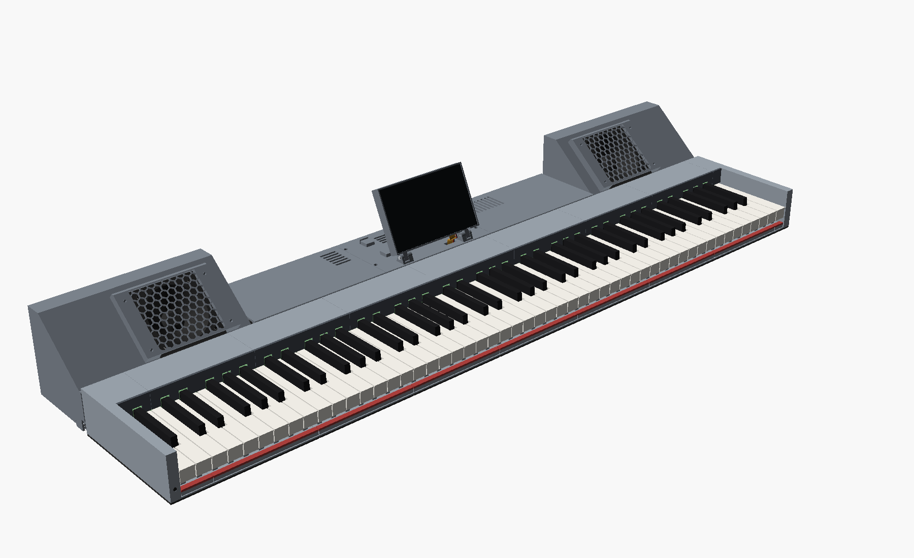
    <figcaption>쓰는 상태(앞 3/4). 건반 모듈 7개 + 끝 부속 2개, 양 끝 스피커(앞판 40°), 가운데 화면 25°. 2026-10-07 CAD 빌드의 렌더입니다.</figcaption>
    <div class="sum-thumbs">
      <figure>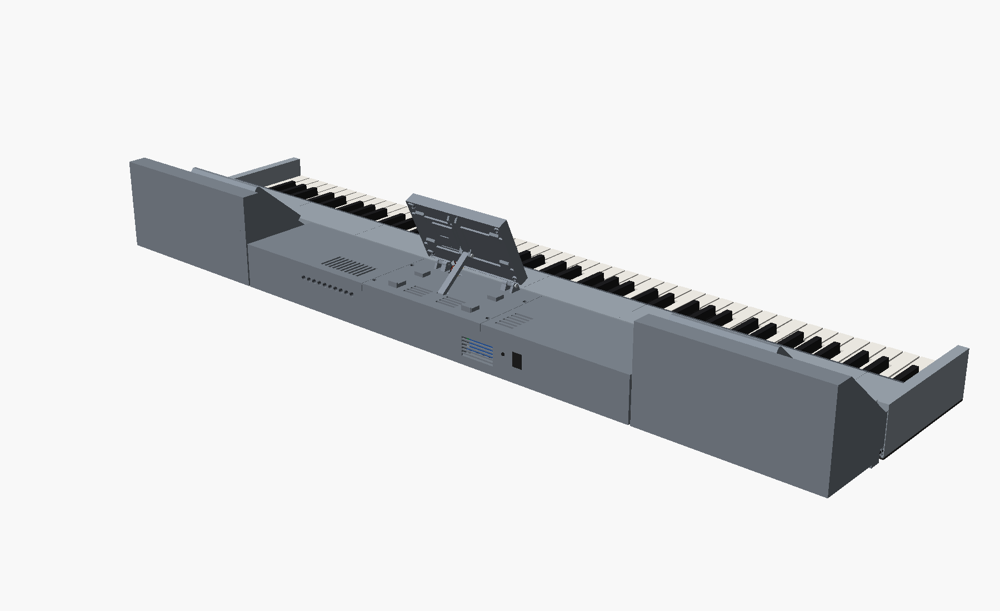<figcaption>뒤 왼쪽 3/4</figcaption></figure>
      <figure>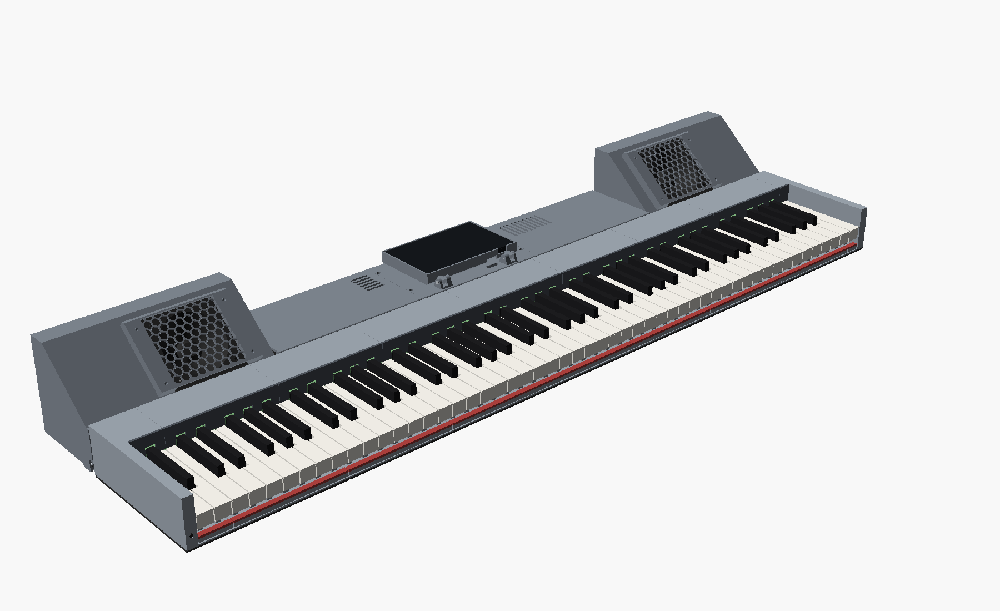<figcaption>화면을 접은 상태 (윗면 z95.35)</figcaption></figure>
    </div>
  </figure>
  <div class="sum-side">
    <div class="sum-card sum-buy">
      <div class="sum-cardhead"><span class="eyebrow">구매</span><span class="sum-lab">주문서 2026-10-08</span></div>
      <div class="sum-lab">재료에 든 돈 (학교 + 사비, 배송비 포함)</div>
      <div class="sum-big">587,183<small>원</small></div>
      <div class="sum-split" role="img" aria-label="학교 244,552원(물건 215,852 + 배송 28,700), 사비 342,631원(물건 315,031 + 배송 27,600)">
        <span class="sum-seg a" style="flex:244552 1 0" title="학교 지원 244,552원 = 물건 215,852 + 배송 28,700"></span>
        <span class="sum-seg b" style="flex:342631 1 0" title="사비 342,631원 = 물건 315,031 + 배송 27,600"></span>
      </div>
      <div class="sum-cols">
        <div class="sum-col"><span class="sum-colh"><i class="sum-sw a"></i>학교 지원</span><span class="sum-colv">244,552원</span>
          <dl><dt>물건값</dt><dd>215,852 <small>(29줄)</small></dd>
          <dt>한도</dt><dd>200,000 <small>(15,852원 초과)</small></dd>
          <dt>배송비</dt><dd>28,700 <small>(학교 부담, 한도 밖)</small></dd></dl></div>
        <div class="sum-col"><span class="sum-colh"><i class="sum-sw b"></i>사비</span><span class="sum-colv">342,631원</span>
          <dl><dt>물건값</dt><dd>315,031 <small>(19줄)</small></dd>
          <dt>배송비</dt><dd>27,600</dd></dl></div>
      </div>
      
      <p class="sum-fine">주문서: 최종본/01_구매목록/Toccata_학교_사비_구매목록_2026-10-08.xlsx. 물건마다 사진·규격·쓰는 자리는 06 부품·사용처 탭에 있습니다.</p>
    </div>
    <div class="sum-card sum-prepcard">
      <div class="sum-cardhead"><span class="eyebrow">준비 현황</span><a class="sum-btn" href="#prep">07 준비 체크 열기 →</a></div>
      <div id="sum-prep"></div><div class="sum-prepempty">
        <p>준비 체크 탭에 물건마다 준비한 개수를 적으면 여기에 전체 준비율과 남은 줄이 나옵니다.</p>
        <div class="sum-preptrack" aria-hidden="true"></div>
        <span class="sum-prepnum">준비율은 부품 99 + 출력물 96 + 가공·조립 59 = 254줄로 셉니다. 공구 21줄과 선택·보험 23줄은 켜야 들어갑니다.</span>
      </div>
    </div>
  </div>
</div>

<h3 class="sum-h">핵심 숫자</h3>
<div class="sum-specs"><div class="sum-kv"><span class="sum-k">건반</span><b class="sum-v">88건반</b><span class="sum-d">A0~C8 · 옥타브 모듈 7개(12건반씩) + 끝 부속 2개(A0·A#0·B0 / C8)</span></div><div class="sum-kv"><span class="sum-k">본체 크기</span><b class="sum-v">1254 × 342.5 mm</b><span class="sum-d">폭 × 깊이 · 건반 뒤 뒷바 130.5 mm</span></div><div class="sum-kv"><span class="sum-k">높이</span><b class="sum-v">z72.85 · z144.65</b><span class="sum-d">가운데 뚜껑 윗면(건반 모듈 뒷벽과 같은 높이) · 스피커 윗면</span></div><div class="sum-kv"><span class="sum-k">누르는 힘</span><b class="sum-v">51.9 / 51.0 g</b><span class="sum-d">백건 / 흑건 · 올라오는 힘 42.8 / 40.8 g · 연타 16.3 / 18.8 Hz</span></div><div class="sum-kv"><span class="sum-k">화면</span><b class="sum-v">7인치 1024×600</b><span class="sum-d">Waveshare 7-DSI-TOUCH-C · 25° 세움(꼭대기 z189.23) · 접으면 z95.35</span></div><div class="sum-kv"><span class="sum-k">전원</span><b class="sum-v">LiFePO4 12.8 V 6 Ah</b><span class="sum-d">76.8 Wh · 평균 15.7~19.7 W, 순간 최대 33.7 W · 약 3.5~4.4시간</span></div><div class="sum-kv"><span class="sum-k">스피커</span><b class="sum-v">4인치 × 2 · 앞판 40°</b><span class="sum-d">CW-100B25 8 Ω · 밀폐 2.16 L · TPA3110 12.8 V에서 약 8 W/채널</span></div><div class="sum-kv"><span class="sum-k">회로</span><b class="sum-v">개정 E (10/8)</b><span class="sum-d">회로도 7장 + 기판·배선도 8장 · 자동 검사 15장 모두 오류 0 · 홀센서 89 · RP2040-Zero 8</span></div><div class="sum-kv"><span class="sum-k">출력 (합판 없음)</span><b class="sum-v">90종 308개</b><span class="sum-d">악기 출력 STL(PETG) · 공구 4 · 지그 2 · 10/16부터 뒷바 판도 모두 출력 (가운데 아랫판·뒤판은 반턱 3토막)</span></div></div>

<h3 class="sum-h">최종 도안</h3>
<div class="sum-maps"><a class="sum-map" href="#circuit"><span class="sum-mapno">01</span><span class="sum-mapbody"><b>회로도</b><span>파트별 상세 회로도 7장(시스템·센서 기판·제어 기판·끝 부속·페달·전원·오디오)과 기판 배치·배선도 8장. 핀 번호까지 확대해 봅니다.</span></span><span class="sum-maparr" aria-hidden="true">→</span></a><a class="sum-map" href="#dwg"><span class="sum-mapno">02</span><span class="sum-mapbody"><b>설계도</b><span>앞·뒤·위·아래·왼쪽·오른쪽 6방향 외형도와 내부 단면도. 치수는 CAD 입체에서 잰 mm 값입니다.</span></span><span class="sum-maparr" aria-hidden="true">→</span></a><a class="sum-map" href="#partdwg"><span class="sum-mapno">03</span><span class="sum-mapbody"><b>부품 도면·출력 파일</b><span>출력 부품마다 치수 도면과 STL. 악기 90종 308개 + 공구 4 + 지그 2.</span></span><span class="sum-maparr" aria-hidden="true">→</span></a><a class="sum-map" href="#cad"><span class="sum-mapno">04</span><span class="sum-mapbody"><b>3D 모델</b><span>설계도와 같은 CAD 모델(부품 1,467개)을 돌려 보며 파트별로 봅니다.</span></span><span class="sum-maparr" aria-hidden="true">→</span></a><a class="sum-map" href="#sim"><span class="sum-mapno">05</span><span class="sum-mapbody"><b>동작 시뮬레이션</b><span>건반을 누를 때 레버·스프링·자석이 움직이는 모습과 센서 값의 변화.</span></span><span class="sum-maparr" aria-hidden="true">→</span></a><a class="sum-map" href="#parts"><span class="sum-mapno">06</span><span class="sum-mapbody"><b>부품·사용처</b><span>최종 물건 122줄의 사진·규격·개수와, 모델 위에 표시한 들어가는 자리.</span></span><span class="sum-maparr" aria-hidden="true">→</span></a><a class="sum-map" href="#prep"><span class="sum-mapno">07</span><span class="sum-mapbody"><b>준비 체크</b><span>물건·출력물·가공 줄마다 필요한 개수 중 준비한 개수를 적고 전체 준비율을 봅니다(부품 99 + 출력물 96 + 가공·조립 59 = 254줄).</span></span><span class="sum-maparr" aria-hidden="true">→</span></a><a class="sum-map" href="#design"><span class="sum-mapno">08</span><span class="sum-mapbody"><b>건반 액션 원리</b><span>시소 건반 + 강철 무게 레버 + 비틀림 스프링(W1+ r4.5)의 구조와 누르는 힘.</span></span><span class="sum-maparr" aria-hidden="true">→</span></a><a class="sum-map" href="#build"><span class="sum-mapno">09</span><span class="sum-mapbody"><b>출력·조립</b><span>출력 순서와 설정, 모듈부터 본체까지 조립 순서.</span></span><span class="sum-maparr" aria-hidden="true">→</span></a><a class="sum-map" href="#check"><span class="sum-mapno">10</span><span class="sum-mapbody"><b>검증·남은 위험</b><span>자동 검사 결과, 단계 0 시험 21가지, 아직 남은 위험.</span></span><span class="sum-maparr" aria-hidden="true">→</span></a></div>


<h3 class="sum-h">다음 할 일</h3>
<ol class="sum-next"><li><span class="sum-when">10/12 주 ~ 11/8</span><b class="sum-what">단계 0 재료 시험</b><span class="sum-how">시편 34종 36개(key-action-v4/printables/stage0)와 출력 공구 4개를 먼저 뽑고 시험 21가지와 확인 3가지(밸런스 핀 압입·캡스턴 너트·펠트 두께)를 합니다. 9가지는 첫 모듈로 합니다.</span></li><li><span class="sum-when">11/1 무렵</span><b class="sum-what">첫 옥타브 모듈 O4</b><span class="sum-how">모듈 1개(출력 약 47시간)를 뽑아 조립·납땜하고 PC로 첫 소리를 냅니다. 시험 21(첫 모듈 정하중)을 통과하면 나머지를 뽑습니다.</span></li><li><span class="sum-when">10/26 ~ 12/6</span><b class="sum-what">나머지 출력 약 380시간</b><span class="sum-how">프린터 1대로 하루 약 11~13시간. 본체·스피커·화면 받침을 먼저, 모듈은 11월부터 뽑고 나오는 대로 조립합니다. 시간은 발표 일정표 어림이며 슬라이서 합계로 다시 봅니다.</span></li><li><span class="sum-when">12/13까지</span><b class="sum-what">88건반 통합</b><span class="sum-how">출력 판 상자·배터리·스피커·터치스크린을 붙이고 88건반 소리 시험을 합니다.</span></li><li><span class="sum-when">12/14 주</span><b class="sum-what">발표·시연</b><span class="sum-how">88건반 연주와 리듬게임 MVP(서장 + 1장)를 보여 줍니다.</span></li></ol>

<h3 class="sum-h">물건을 받으면 먼저 확인할 것</h3>
<ul class="sum-checks"><li><b>배터리</b> 무부하 13.0~13.4 V인지, 선이 나오는 면·높이(가정: +x 끝면 y275 / y299, z34)와 DC 충전 커넥터 높이 8.85 mm 이하인지 봅니다. 다르면 배터리 틀(05)을 뽑기 전에 고칩니다.</li><li><b>충전기</b> 출력 표기가 14.4~14.6 V인 LiFePO4용인지 봅니다. 납축·리튬이온용은 쓰지 않습니다.</li><li><b>퓨즈 홀더</b> 40.1 × 11.1 × 33.8 mm, 꼭지 Ø8가 받침(Ø8.3)에 눌러 끼워지는지 봅니다. 퓨즈는 5 A ATO 칼날형입니다.</li><li><b>화면</b> 뒷면 DSI 커넥터 방향과 외곽 166.10 × 101.00 mm를 봅니다. 화면 받침(07)은 실물을 본 뒤 뽑습니다.</li><li><b>허브 DC 플러그</b> 곧은 플러그가 잭 면에서 32 mm 이하인지 봅니다. 길면 ㄱ자 DC 플러그 선이 따로 필요합니다.</li><li><b>PORON</b> 두께 5 mm면 stl/print/04의 패드 바를 그대로 뽑습니다(5T용으로 만듦). 6T가 오면 stl/print_extra의 6T용 패드 바를 뽑습니다.</li><li><b>M4 열 인서트</b> 앞판용 바깥 Ø6 × 길이 4가 8개, 이음용 Ø6 × 6이 4개인지 봅니다. 출력 구멍 Ø5.6 × 6.5에 인두로 면까지만 넣습니다(드릴 구멍 없음).</li></ul>

<p class="sum-foot">원본: 재료 <code>docs/report/toccata-v4/data/final_items.json</code> (주문서 xlsx와 합계 같음) · 건반 액션 <code>hardware/mechanical/key-action-v4/model/metrics.json</code> (r4.5) · 본체·스피커 <code>hardware/mechanical/cad/spec/body_L2.json</code> · 화면 <code>hardware/mechanical/touchscreen/rev3/design/numbers.json</code> · 회로 <code>hardware/pcb</code> 개정 E (10/8), 도면별 검사 <code>netlist/sheets.json</code> · 준비 줄 <code>fin/prep/lines.json</code> · 출력 <code>hardware/mechanical/cad/stl/print</code> · 크기·높이는 CAD 입체(부품 1,467개)에서 다시 쟀습니다. 좌표는 mm, x 가로(0 = A0 왼쪽 끝), y 흰건반 앞 끝에서 뒤로, z 책상에서 위로.</p>
</section>
<section class="page" id="p-circuit" hidden>
<h2>회로도 — 파트별 상세</h2>
<p class="lede">악기 전자부를 파트별로 나눴습니다. 파트마다 하는 일, 회로도, 기판·배선 도면, 부품표(KiCad 심볼·풋프린트와 최종 구매 상태), 선 만드는 길이, 핀 표, 만드는 순서와 확인을 한곳에 모았습니다. 부품 번호·핀 번호·넷 이름·값·구멍 좌표가 모두 있어 KiCad나 만능기판으로 그대로 옮길 수 있고, 가운데 유닛 배선과 선 길이는 CAD 모델에서 잰 값입니다.</p>
<div class="kfs"><div class="kf"><b>15장</b><span>회로도 7 + 기판·배선 8 (A3, 개정 E)</span></div><div class="kf"><b>133줄</b><span>부품표 — 파트별 표에 모두 나옴</span></div><div class="kf"><b>56개</b><span>이름 있는 넷 (그린 도면에서 다시 계산)</span></div><div class="kf"><b>41가닥</b><span>선 (표 35줄, 젠더 X701 포함) · 자르는 길이 = CAD 경로 + 20</span></div><div class="kf"><b>0 · 0 · 0</b><span>연결 오류 · 글자 겹침 · 기판 배선 검사 (15장 자동 검사)</span></div></div>
<nav class="circ-chips" id="circuit-parts" aria-label="회로 파트"><a href="#circuit-3d">3D 모델 <span class="q">5장면</span></a><a href="#circuit-sys">시스템 <span class="q">SCH-01</span></a><a href="#circuit-sb">센서 기판 SB <span class="q">×7</span></a><a href="#circuit-mb">제어 기판 MB <span class="q">×7</span></a><a href="#circuit-end">끝 부속 EL·ER <span class="q">×2</span></a><a href="#circuit-ped">페달 PB·PS <span class="q">×1</span></a><a href="#circuit-pwr">전원 <span class="q">CU</span></a><a href="#circuit-aud">오디오 <span class="q">CU</span></a><a href="#circuit-ts">터치스크린 <span class="q">CU</span></a><a href="#circuit-arrive">받으면 확인 <span class="q">15</span></a><a href="#circuit-kicad">KiCad로 <span class="q">8단계</span></a><a href="#circuit-files">파일 받기 <span class="q">CSV · ZIP</span></a></nav>
<p class="small muted">도면 색: 초록 선 = 배선, 갈색 테두리 = 부품, 파란 상자 = 산 모듈, 점선 갈색 = 케이블, 노란 △ = 처음 글 사양 대비 바꾼 곳(번호는 맨 아래 표). "&gt;&gt;" = 맞물린 커넥터(KiCad에서는 연결이 아니라 양쪽에 같은 넷 이름). 도면은 "2배·3배"로 페이지 안에서 확대해 옆으로 넘겨 봅니다. USB 선 길이: W201·W202 1 m · W203·W204·W205·W206·W207 0.5 m · W208 0.5 m.</p>
<section class="circ-part" id="circuit-3d" aria-labelledby="circuit-3d-h"><h3 id="circuit-3d-h"><span class="no">3D</span>회로 3D 모델</h3><p>도면의 기판·부품·배선을 실제 높이로 세운 모델입니다. 구멍·패드·부품 자리는 BRD 도면과 같은 좌표, 아랫면 선은 배선표(wiring_*.csv)의 경로, 부품 높이와 센서·리본·USB 플러그는 CAD 사양(electronics_modules.json), 가운데 유닛의 모듈·선은 CAD 모델의 외곽과 선 중심선에서 읽었습니다. 부품·패드·선을 누르면 값·넷·구매 상태가 나오고 같은 넷이 함께 밝아집니다. "아랫면" 보기로 만능기판 밑 배선을 봅니다.</p><div class="c3d" id="circuit-3d-view" data-src="fin/circuit/circuit3d.json"><div class="c3d-main"><div class="c3d-row"><span class="c3d-lbl">장면</span><div class="c3d-scenes" role="group" aria-label="장면"><button type="button" class="c3d-btn" disabled>악기 전체 배선</button><button type="button" class="c3d-btn" disabled>옥타브 모듈 SB·MB</button><button type="button" class="c3d-btn" disabled>끝 부속 EL·ER</button><button type="button" class="c3d-btn" disabled>페달 PB·J501·PS</button><button type="button" class="c3d-btn" disabled>앰프 입력 J702</button></div></div><p class="c3d-sub"></p><div class="c3d-stage"><canvas tabindex="0" aria-label="회로 3D 모델. 드래그로 돌리고 휠로 확대합니다."></canvas><svg class="c3d-over" aria-hidden="true"></svg><div class="c3d-load"><p class="c3d-load-t">이 자리에 오면 3D 모델(329 KB)과 three.js를 불러옵니다.</p><button type="button" class="c3d-btn c3d-go" hidden>3D 모델 불러오기</button></div><div class="c3d-hint">드래그 돌리기 · 오른쪽(Shift) 드래그 옮기기 · 휠·두 손가락 확대 · 두 번 눌러 다가가기</div></div><div class="c3d-row"><span class="c3d-lbl">보기</span><div class="c3d-views"></div><button type="button" class="c3d-btn c3d-reset">처음으로</button></div><div class="c3d-row"><span class="c3d-lbl">표시</span><div class="c3d-togs"></div><select class="c3d-net" aria-label="넷 강조"><option value="">넷 강조: 없음</option></select></div></div><div class="c3d-side"><div class="c3d-info" aria-live="polite"><p class="c3d-muted">부품·패드·선을 누르면 이름, 값, 넷, 구매 상태가 여기에 나옵니다.</p></div><ul class="c3d-notes"></ul></div></div><p class="small muted">장면 5개 · 넷 45개 · 부품 정보 341개. 만들기: <span class="mono">hardware/pcb/src/model3d.py</span> (page.py가 부름). 모양을 모르는 곳(제로 윗면 부품, 잭 다리, W502 경로, RP2040 칩 자리)은 상자·점선 칸으로 두고 정보에 "추정"이라 적었습니다.</p><p class="small circ-top"><a href="#circuit-parts">파트 목록으로 ↑</a></p></section>
<section class="circ-part" id="circuit-sys" aria-labelledby="circuit-sys-h"><h3 id="circuit-sys-h"><span class="no">A</span>시스템 연결</h3><div class="circ-what"><p>건반 모듈 7개의 제어 기판과 페달 보드가 USB-MIDI 장치가 되어 허브에 모이고, 허브는 Pi 5로 갑니다. Pi 5가 소리를 만들어 USB 동글 → 헤드폰 잭 → 앰프 → 스피커로 보냅니다. 전원은 가운데 유닛의 LiFePO4 전지 하나입니다.</p><span class="pill circ-qty">보드 6종 · 선 41가닥</span></div><figure class="sheet csheet" id="circuit-sch-01"><div class="cap"><span><b>SCH-01 · 시스템 연결도</b> <span class="mono">개정 E</span></span><span class="zbar" role="group" aria-label="확대"><button type="button" data-z="1" aria-pressed="true">맞춤</button><button type="button" data-z="2" aria-pressed="false">2배</button><button type="button" data-z="3" aria-pressed="false">3배</button><a class="mono" href="sch/SCH-01_system.svg" target="_blank" rel="noopener">크게 보기 (SVG) ↗</a></span></div><div class="dwimg">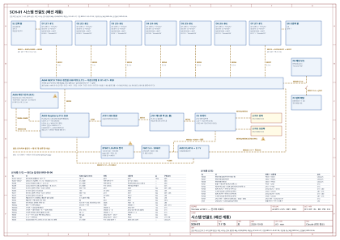</div><figcaption class="small muted">모든 파트·보드와 선(W 번호), 선 목록. 파트 사이는 모두 꽂았다 빼는 커넥터(R26). USB 선 옆 숫자 = 선 길이.</figcaption></figure><h4 class="sub4">USB 장치와 허브 포트</h4><div class="tbl"><table><thead><tr><th>보드</th><th>JP301 GP6</th><th>JP302 GP7</th><th>JP303 GP8</th><th>GP14 점퍼</th><th>USB 이름</th><th>C 건반 MIDI</th><th>허브 포트</th></tr></thead><tbody><tr><td class="num">O1</td><td>닫음</td><td>—</td><td>—</td><td>열림</td><td>Toccata O1</td><td>24 (C1)</td><td class="num">4</td></tr><tr><td class="num">O2</td><td>—</td><td>닫음</td><td>—</td><td>열림</td><td>Toccata O2</td><td>36 (C2)</td><td class="num">5</td></tr><tr><td class="num">O3</td><td>닫음</td><td>닫음</td><td>—</td><td>열림</td><td>Toccata O3</td><td>48 (C3)</td><td class="num">3</td></tr><tr><td class="num">O4</td><td>—</td><td>—</td><td>닫음</td><td>열림</td><td>Toccata O4</td><td>60 (C4)</td><td class="num">6</td></tr><tr><td class="num">O5</td><td>닫음</td><td>—</td><td>닫음</td><td>열림</td><td>Toccata O5</td><td>72 (C5)</td><td class="num">7</td></tr><tr><td class="num">O6</td><td>—</td><td>닫음</td><td>닫음</td><td>열림</td><td>Toccata O6</td><td>84 (C6)</td><td class="num">8</td></tr><tr><td class="num">O7</td><td>닫음</td><td>닫음</td><td>닫음</td><td>열림</td><td>Toccata O7</td><td>96 (C7)</td><td class="num">9</td></tr><tr><td class="num">PED</td><td>—</td><td>—</td><td>—</td><td>닫음 (JP504)</td><td>Toccata PED</td><td>CC64</td><td class="num">2</td></tr></tbody></table></div><p class="small muted">허브 포트 번호는 −x 끝(Pi 쪽)부터 0~9, 0·1은 비움 (CAD cable_duct.hub.port_map). 동글은 허브를 거치지 않고 Pi에 바로(X701).</p><h4 class="sub4">허브 포트 옮김 (충전 전용 포트가 2~9번일 때)</h4><p class="small">710U3는 10포트 중 1개가 충전 전용이라 그 포트에 꽂은 보드는 장치로 보이지 않습니다. 충전 전용 포트가 2~9번이면 그 보드를 1번(또는 0번)으로 옮깁니다. 옮긴 뒤 길이는 CAD 경로에서 가로 길이만 바꾼 추정이고, 선 길이 − 40 mm보다 길면 더 긴 선으로 바꿉니다. 쓰는 8개 포트의 스위치는 켭니다.</p><div class="tbl"><table><thead><tr><th>W</th><th>보드</th><th>지금 포트</th><th>선</th><th>CAD 길이 (mm)</th><th>한계 (선 − 40)</th><th>1번 포트로 옮기면</th><th>0번 포트로 옮기면</th></tr></thead><tbody><tr><td class="num">W208</td><td>PED</td><td class="num">2</td><td>0.5 m</td><td class="num">364</td><td class="num">460</td><td class="num">342 (그대로)</td><td class="num">320 (그대로)</td></tr><tr><td class="num">W203</td><td>O3</td><td class="num">3</td><td>0.5 m</td><td class="num">386</td><td class="num">460</td><td class="num">342 (그대로)</td><td class="num">320 (그대로)</td></tr><tr><td class="num">W201</td><td>O1</td><td class="num">4</td><td>1 m</td><td class="num">740</td><td class="num">960</td><td class="num">674 (그대로)</td><td class="num">652 (그대로)</td></tr><tr><td class="num">W202</td><td>O2</td><td class="num">5</td><td>1 m</td><td class="num">602</td><td class="num">960</td><td class="num">514 (그대로)</td><td class="num">492 (그대로)</td></tr><tr><td class="num">W204</td><td>O4</td><td class="num">6</td><td>0.5 m</td><td class="num">301</td><td class="num">460</td><td class="num">191 (그대로)</td><td class="num">169 (그대로)</td></tr><tr><td class="num">W205</td><td>O5</td><td class="num">7</td><td>0.5 m</td><td class="num">147</td><td class="num">460</td><td class="num">156 (그대로)</td><td class="num">178 (그대로)</td></tr><tr><td class="num">W206</td><td>O6</td><td class="num">8</td><td>0.5 m</td><td class="num">166</td><td class="num">460</td><td class="num">320 (그대로)</td><td class="num">342 (그대로)</td></tr><tr><td class="num">W207</td><td>O7</td><td class="num">9</td><td>0.5 m</td><td class="num">315</td><td class="num">460</td><td class="num">491 → 1 m 선</td><td class="num">513 → 1 m 선</td></tr></tbody></table></div><h4 class="sub4">산 그대로 꽂는 선</h4><div class="tbl"><table><thead><tr><th>W</th><th>선</th><th>끝 → 끝</th><th>CAD 경로 · 길이 (mm)</th><th>자르는 길이</th><th>수축 튜브</th><th>심 · 넷</th></tr></thead><tbody><tr><td class="num">W201</td><td>Coms NA993 USB-A → C 1 m</td><td>허브 포트 4 → O1 RP2040-Zero USB-C</td><td class="num">740.1</td><td>산 그대로 (자르지 않음)</td><td>—</td><td>CAD 길이(플러그 포함) 740 ≤ 1 m − 40 (CAD 경로 기준 1 m). C 쪽 몰드 ≤ 12.5 × 7.6 × 25. 남는 선은 통로에서 끈·벨크로로 묶음 (집게에 끼우지 않음)</td></tr><tr><td class="num">W202</td><td>Coms NA993 USB-A → C 1 m</td><td>허브 포트 5 → O2 RP2040-Zero USB-C</td><td class="num">602.1</td><td>산 그대로 (자르지 않음)</td><td>—</td><td>CAD 길이(플러그 포함) 602 ≤ 1 m − 40 (CAD 경로 기준 1 m). C 쪽 몰드 ≤ 12.5 × 7.6 × 25. 남는 선은 통로에서 끈·벨크로로 묶음 (집게에 끼우지 않음)</td></tr><tr><td class="num">W203</td><td>Coms HB466 USB-A → C 0.5 m</td><td>허브 포트 3 → O3 RP2040-Zero USB-C</td><td class="num">386.4</td><td>산 그대로 (자르지 않음)</td><td>—</td><td>CAD 길이(플러그 포함) 386 ≤ 0.5 m − 40 (CAD 경로 기준 0.5 m). C 쪽 몰드 ≤ 12.5 × 7.6 × 25. 남는 선은 통로에서 끈·벨크로로 묶음 (집게에 끼우지 않음)</td></tr><tr><td class="num">W204</td><td>Coms HB466 USB-A → C 0.5 m</td><td>허브 포트 6 → O4 RP2040-Zero USB-C</td><td class="num">300.7</td><td>산 그대로 (자르지 않음)</td><td>—</td><td>CAD 길이(플러그 포함) 301 ≤ 0.5 m − 40 (CAD 경로 기준 0.5 m). C 쪽 몰드 ≤ 12.5 × 7.6 × 25. 남는 선은 통로에서 끈·벨크로로 묶음 (집게에 끼우지 않음)</td></tr><tr><td class="num">W205</td><td>Coms HB466 USB-A → C 0.5 m</td><td>허브 포트 7 → O5 RP2040-Zero USB-C</td><td class="num">146.8</td><td>산 그대로 (자르지 않음)</td><td>—</td><td>CAD 길이(플러그 포함) 147 ≤ 0.5 m − 40 (CAD 경로 기준 0.3 m). C 쪽 몰드 ≤ 12.5 × 7.6 × 25. 남는 선은 통로에서 끈·벨크로로 묶음 (집게에 끼우지 않음)</td></tr><tr><td class="num">W206</td><td>Coms HB466 USB-A → C 0.5 m</td><td>허브 포트 8 → O6 RP2040-Zero USB-C</td><td class="num">166.3</td><td>산 그대로 (자르지 않음)</td><td>—</td><td>CAD 길이(플러그 포함) 166 ≤ 0.5 m − 40 (CAD 경로 기준 0.3 m). C 쪽 몰드 ≤ 12.5 × 7.6 × 25. 남는 선은 통로에서 끈·벨크로로 묶음 (집게에 끼우지 않음)</td></tr><tr><td class="num">W207</td><td>Coms HB466 USB-A → C 0.5 m</td><td>허브 포트 9 → O7 RP2040-Zero USB-C</td><td class="num">314.6</td><td>산 그대로 (자르지 않음)</td><td>—</td><td>CAD 길이(플러그 포함) 315 ≤ 0.5 m − 40 (CAD 경로 기준 0.5 m). C 쪽 몰드 ≤ 12.5 × 7.6 × 25. 남는 선은 통로에서 끈·벨크로로 묶음 (집게에 끼우지 않음)</td></tr><tr><td class="num">W208</td><td>Coms HB466 USB-A → C 0.5 m</td><td>허브 포트 2 → PB RP2040-Zero USB-C</td><td class="num">363.5</td><td>산 그대로 (자르지 않음)</td><td>—</td><td>CAD 길이 364 ≤ 0.5 m − 40. 앞 공간 줄 y227 z37을 따라감</td></tr><tr><td class="num">W209</td><td>Coms NA977 USB-A(상향 꺾임) → B 25 cm (C25)</td><td>Pi 5 USB-A (GPIO 쪽 2단의 아래) → 허브 업스트림 B (−x 끝면)</td><td class="num">250 (커넥터 포함 제품 길이)</td><td>산 그대로 (자르지 않음)</td><td>—</td><td>위 포트는 머리에 가려 비움</td></tr><tr><td class="num">W605</td><td>GUOCONN FFC 22핀 0.5 mm 300 mm B형 (A형은 보험)</td><td>Pi 5 CAM/DISP 1 → A605 DSI 22핀</td><td class="num">235.8 (+ 뚜껑 밑 말아 접기 9.4 = 245.2)</td><td>산 그대로 (자르지 않음)</td><td>—</td><td>22심 1 ↔ 1 · 설계 길이 247.3 (접기·꽂힘 포함, 화면 rev3 numbers.json) → 300 mm 선에서 여유 52.7</td></tr><tr><td class="num">X701</td><td>USB-C(F) → USB-A(M) 일자 젠더 (포트 밖 26.5 mm 이하)</td><td>동글 A701 → Pi 5 USB-A (RJ45 옆 2단의 아래)</td><td class="num">—</td><td>산 그대로 (자르지 않음)</td><td>—</td><td>허브를 거치지 않음 (D7). 동글은 젠더에 곧게(+x, 허브 쪽) 꽂고, 동글 선은 머리 바로 뒤에서 바닥으로 내려 젠더 밑을 지남</td></tr></tbody></table></div><details class="spec cbom" id="circuit-sys-bom"><summary>부품표 — 시스템 (USB 선) (1줄)</summary><div class="tbl"><table><thead><tr><th>부품</th><th>값</th><th>설명</th><th>전체 수량</th><th>KiCad 심볼</th><th>KiCad 풋프린트</th><th>구매 코드</th><th>구매 상태 (최종 목록)</th></tr></thead><tbody><tr><td class="num">W201~W208</td><td>USB-A → C 1 m ×2 · 0.5 m ×6</td><td>USB-A → C 데이터선 — Coms NA993 1 m ×2 (W201·W202), Coms HB466 50 cm ×6 (W203~W208; W205·W206은 CAD 0.3 m 자리라 남는 선을 묶음) (C 쪽 몰드 ≤ 12.5 × 7.6 × 25)</td><td class="num">8</td><td>—</td><td>보드 밖 (Exclude from board) — 선</td><td class="num">C04</td><td>사비 구매 · 엘레파츠</td></tr></tbody></table></div></details><p class="small circ-top"><a href="#circuit-parts">파트 목록으로 ↑</a></p></section>
<section class="circ-part" id="circuit-sb" aria-labelledby="circuit-sb-h"><h3 id="circuit-sb-h"><span class="no">B</span>센서 기판 SB</h3><div class="circ-what"><p>건반 12개 밑 자석의 거리를 홀센서 DRV5055 12개가 전압으로 바꿉니다. 출력 12선과 3V3·GND 두 가닥씩을 16심 리본으로 제어 기판에 보냅니다.</p><span class="pill circ-qty">×7 (모듈마다 1장)</span></div><figure class="sheet csheet" id="circuit-sch-02"><div class="cap"><span><b>SCH-02 · 옥타브 센서 기판 (SB ×7)</b> <span class="mono">개정 B</span></span><span class="zbar" role="group" aria-label="확대"><button type="button" data-z="1" aria-pressed="true">맞춤</button><button type="button" data-z="2" aria-pressed="false">2배</button><button type="button" data-z="3" aria-pressed="false">3배</button><a class="mono" href="sch/SCH-02_sensor_board.svg" target="_blank" rel="noopener">크게 보기 (SVG) ↗</a></span></div><div class="dwimg">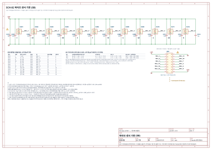</div><figcaption class="small muted">DRV5055A2 ×12 (U201~U212, 핀 1 VCC · 2 GND · 3 OUT), 센서마다 100 nF, 버스 양 끝 10 µF, 리본 16심 2×8 블록 J201.</figcaption></figure><figure class="sheet csheet" id="circuit-brd-02-sb"><div class="cap"><span><b>BRD-02 · 센서 기판 배치 (SB)</b> <span class="mono">부분</span></span><span class="zbar" role="group" aria-label="확대"><button type="button" data-z="1" aria-pressed="true">맞춤</button><button type="button" data-z="2" aria-pressed="false">2배</button><button type="button" data-z="3" aria-pressed="false">3배</button><a class="mono" href="sch/BRD-02_sensor_board_placement.svg" target="_blank" rel="noopener">전체 도면 (SVG) ↗</a></span></div><div class="dwimg crop"><svg viewBox="9.0 20.0 402.0 146.5" role="img" aria-label="BRD-02 센서 기판 배치 (SB)" style="aspect-ratio:402.0/146.5"><rect x="9.0" y="20.0" width="402.0" height="146.5" fill="#fff"/><image data-href="sch/BRD-02_sensor_board_placement.svg" x="0" y="0" width="420" height="297" preserveAspectRatio="none"/></svg></div><figcaption class="small muted">161.6 × 15.24 띠: 센서 리드 구멍 열, 3V3·GND·OUT 행, 100 nF·10 µF 자리(아랫면), 리본 블록, OUT → J201 배선(파란 점선)과 J201 전원 4가닥(빨강 = 3V3, 검정 = GND), 고정 U홈. 모듈 좌표 mm.</figcaption></figure><details class="spec cbom" id="circuit-sb-bom"><summary>부품표 — SB 한 장 (×7) (28줄)</summary><div class="tbl"><table><thead><tr><th>부품</th><th>값</th><th>설명</th><th>전체 수량</th><th>KiCad 심볼</th><th>KiCad 풋프린트</th><th>구매 코드</th><th>구매 상태 (최종 목록)</th></tr></thead><tbody><tr><td class="num">U201</td><td>DRV5055A2QLPG</td><td>TI DRV5055A2QLPG, TO-92-3 (LPG)</td><td class="num">7</td><td>Sensor_Magnetic:DRV5055A2xLPGxQ1 (Value = DRV5055A2QLPG)</td><td>Package_TO_SOT_THT:TO-92_Inline_W4.0mm_Horizontal_FlatSideUp → 2.54 간격으로 복사 수정</td><td class="num">L20</td><td>학교 지원 구매 · 아이씨뱅큐</td></tr><tr><td class="num">C201</td><td>100n</td><td>Samsung CL31B104KCFNNNE 1206 100 nF 100 V X7R</td><td class="num">7</td><td>Device:C</td><td>Capacitor_SMD:C_1206_3216Metric_Pad1.33x1.80mm_HandSolder</td><td class="num">SE4</td><td>학교 지원 구매 · 디바이스마트</td></tr><tr><td class="num">U202</td><td>DRV5055A2QLPG</td><td>TI DRV5055A2QLPG, TO-92-3 (LPG)</td><td class="num">7</td><td>Sensor_Magnetic:DRV5055A2xLPGxQ1 (Value = DRV5055A2QLPG)</td><td>Package_TO_SOT_THT:TO-92_Inline_W4.0mm_Horizontal_FlatSideUp → 2.54 간격으로 복사 수정</td><td class="num">L20</td><td>학교 지원 구매 · 아이씨뱅큐</td></tr><tr><td class="num">C202</td><td>100n</td><td>Samsung CL31B104KCFNNNE 1206 100 nF 100 V X7R</td><td class="num">7</td><td>Device:C</td><td>Capacitor_SMD:C_1206_3216Metric_Pad1.33x1.80mm_HandSolder</td><td class="num">SE4</td><td>학교 지원 구매 · 디바이스마트</td></tr><tr><td class="num">U203</td><td>DRV5055A2QLPG</td><td>TI DRV5055A2QLPG, TO-92-3 (LPG)</td><td class="num">7</td><td>Sensor_Magnetic:DRV5055A2xLPGxQ1 (Value = DRV5055A2QLPG)</td><td>Package_TO_SOT_THT:TO-92_Inline_W4.0mm_Horizontal_FlatSideUp → 2.54 간격으로 복사 수정</td><td class="num">L20</td><td>학교 지원 구매 · 아이씨뱅큐</td></tr><tr><td class="num">C203</td><td>100n</td><td>Samsung CL31B104KCFNNNE 1206 100 nF 100 V X7R</td><td class="num">7</td><td>Device:C</td><td>Capacitor_SMD:C_1206_3216Metric_Pad1.33x1.80mm_HandSolder</td><td class="num">SE4</td><td>학교 지원 구매 · 디바이스마트</td></tr><tr><td class="num">U204</td><td>DRV5055A2QLPG</td><td>TI DRV5055A2QLPG, TO-92-3 (LPG)</td><td class="num">7</td><td>Sensor_Magnetic:DRV5055A2xLPGxQ1 (Value = DRV5055A2QLPG)</td><td>Package_TO_SOT_THT:TO-92_Inline_W4.0mm_Horizontal_FlatSideUp → 2.54 간격으로 복사 수정</td><td class="num">L20</td><td>학교 지원 구매 · 아이씨뱅큐</td></tr><tr><td class="num">C204</td><td>100n</td><td>Samsung CL31B104KCFNNNE 1206 100 nF 100 V X7R</td><td class="num">7</td><td>Device:C</td><td>Capacitor_SMD:C_1206_3216Metric_Pad1.33x1.80mm_HandSolder</td><td class="num">SE4</td><td>학교 지원 구매 · 디바이스마트</td></tr><tr><td class="num">U205</td><td>DRV5055A2QLPG</td><td>TI DRV5055A2QLPG, TO-92-3 (LPG)</td><td class="num">7</td><td>Sensor_Magnetic:DRV5055A2xLPGxQ1 (Value = DRV5055A2QLPG)</td><td>Package_TO_SOT_THT:TO-92_Inline_W4.0mm_Horizontal_FlatSideUp → 2.54 간격으로 복사 수정</td><td class="num">L20</td><td>학교 지원 구매 · 아이씨뱅큐</td></tr><tr><td class="num">C205</td><td>100n</td><td>Samsung CL31B104KCFNNNE 1206 100 nF 100 V X7R</td><td class="num">7</td><td>Device:C</td><td>Capacitor_SMD:C_1206_3216Metric_Pad1.33x1.80mm_HandSolder</td><td class="num">SE4</td><td>학교 지원 구매 · 디바이스마트</td></tr><tr><td class="num">U206</td><td>DRV5055A2QLPG</td><td>TI DRV5055A2QLPG, TO-92-3 (LPG)</td><td class="num">7</td><td>Sensor_Magnetic:DRV5055A2xLPGxQ1 (Value = DRV5055A2QLPG)</td><td>Package_TO_SOT_THT:TO-92_Inline_W4.0mm_Horizontal_FlatSideUp → 2.54 간격으로 복사 수정</td><td class="num">L20</td><td>학교 지원 구매 · 아이씨뱅큐</td></tr><tr><td class="num">C206</td><td>100n</td><td>Samsung CL31B104KCFNNNE 1206 100 nF 100 V X7R</td><td class="num">7</td><td>Device:C</td><td>Capacitor_SMD:C_1206_3216Metric_Pad1.33x1.80mm_HandSolder</td><td class="num">SE4</td><td>학교 지원 구매 · 디바이스마트</td></tr><tr><td class="num">U207</td><td>DRV5055A2QLPG</td><td>TI DRV5055A2QLPG, TO-92-3 (LPG)</td><td class="num">7</td><td>Sensor_Magnetic:DRV5055A2xLPGxQ1 (Value = DRV5055A2QLPG)</td><td>Package_TO_SOT_THT:TO-92_Inline_W4.0mm_Horizontal_FlatSideUp → 2.54 간격으로 복사 수정</td><td class="num">L20</td><td>학교 지원 구매 · 아이씨뱅큐</td></tr><tr><td class="num">C207</td><td>100n</td><td>Samsung CL31B104KCFNNNE 1206 100 nF 100 V X7R</td><td class="num">7</td><td>Device:C</td><td>Capacitor_SMD:C_1206_3216Metric_Pad1.33x1.80mm_HandSolder</td><td class="num">SE4</td><td>학교 지원 구매 · 디바이스마트</td></tr><tr><td class="num">U208</td><td>DRV5055A2QLPG</td><td>TI DRV5055A2QLPG, TO-92-3 (LPG)</td><td class="num">7</td><td>Sensor_Magnetic:DRV5055A2xLPGxQ1 (Value = DRV5055A2QLPG)</td><td>Package_TO_SOT_THT:TO-92_Inline_W4.0mm_Horizontal_FlatSideUp → 2.54 간격으로 복사 수정</td><td class="num">L20</td><td>학교 지원 구매 · 아이씨뱅큐</td></tr><tr><td class="num">C208</td><td>100n</td><td>Samsung CL31B104KCFNNNE 1206 100 nF 100 V X7R</td><td class="num">7</td><td>Device:C</td><td>Capacitor_SMD:C_1206_3216Metric_Pad1.33x1.80mm_HandSolder</td><td class="num">SE4</td><td>학교 지원 구매 · 디바이스마트</td></tr><tr><td class="num">U209</td><td>DRV5055A2QLPG</td><td>TI DRV5055A2QLPG, TO-92-3 (LPG)</td><td class="num">7</td><td>Sensor_Magnetic:DRV5055A2xLPGxQ1 (Value = DRV5055A2QLPG)</td><td>Package_TO_SOT_THT:TO-92_Inline_W4.0mm_Horizontal_FlatSideUp → 2.54 간격으로 복사 수정</td><td class="num">L20</td><td>학교 지원 구매 · 아이씨뱅큐</td></tr><tr><td class="num">C209</td><td>100n</td><td>Samsung CL31B104KCFNNNE 1206 100 nF 100 V X7R</td><td class="num">7</td><td>Device:C</td><td>Capacitor_SMD:C_1206_3216Metric_Pad1.33x1.80mm_HandSolder</td><td class="num">SE4</td><td>학교 지원 구매 · 디바이스마트</td></tr><tr><td class="num">U210</td><td>DRV5055A2QLPG</td><td>TI DRV5055A2QLPG, TO-92-3 (LPG)</td><td class="num">7</td><td>Sensor_Magnetic:DRV5055A2xLPGxQ1 (Value = DRV5055A2QLPG)</td><td>Package_TO_SOT_THT:TO-92_Inline_W4.0mm_Horizontal_FlatSideUp → 2.54 간격으로 복사 수정</td><td class="num">L20</td><td>학교 지원 구매 · 아이씨뱅큐</td></tr><tr><td class="num">C210</td><td>100n</td><td>Samsung CL31B104KCFNNNE 1206 100 nF 100 V X7R</td><td class="num">7</td><td>Device:C</td><td>Capacitor_SMD:C_1206_3216Metric_Pad1.33x1.80mm_HandSolder</td><td class="num">SE4</td><td>학교 지원 구매 · 디바이스마트</td></tr><tr><td class="num">U211</td><td>DRV5055A2QLPG</td><td>TI DRV5055A2QLPG, TO-92-3 (LPG)</td><td class="num">7</td><td>Sensor_Magnetic:DRV5055A2xLPGxQ1 (Value = DRV5055A2QLPG)</td><td>Package_TO_SOT_THT:TO-92_Inline_W4.0mm_Horizontal_FlatSideUp → 2.54 간격으로 복사 수정</td><td class="num">L20</td><td>학교 지원 구매 · 아이씨뱅큐</td></tr><tr><td class="num">C211</td><td>100n</td><td>Samsung CL31B104KCFNNNE 1206 100 nF 100 V X7R</td><td class="num">7</td><td>Device:C</td><td>Capacitor_SMD:C_1206_3216Metric_Pad1.33x1.80mm_HandSolder</td><td class="num">SE4</td><td>학교 지원 구매 · 디바이스마트</td></tr><tr><td class="num">U212</td><td>DRV5055A2QLPG</td><td>TI DRV5055A2QLPG, TO-92-3 (LPG)</td><td class="num">7</td><td>Sensor_Magnetic:DRV5055A2xLPGxQ1 (Value = DRV5055A2QLPG)</td><td>Package_TO_SOT_THT:TO-92_Inline_W4.0mm_Horizontal_FlatSideUp → 2.54 간격으로 복사 수정</td><td class="num">L20</td><td>학교 지원 구매 · 아이씨뱅큐</td></tr><tr><td class="num">C212</td><td>100n</td><td>Samsung CL31B104KCFNNNE 1206 100 nF 100 V X7R</td><td class="num">7</td><td>Device:C</td><td>Capacitor_SMD:C_1206_3216Metric_Pad1.33x1.80mm_HandSolder</td><td class="num">SE4</td><td>학교 지원 구매 · 디바이스마트</td></tr><tr><td class="num">C213</td><td>10µ</td><td>Samsung CL31A106KOHNNNE 1206 10 µF 16 V X5R (낱개)</td><td class="num">7</td><td>Device:C</td><td>Capacitor_SMD:C_1206_3216Metric_Pad1.33x1.80mm_HandSolder</td><td class="num">L67</td><td>학교 지원 구매 · 엘레파츠</td></tr><tr><td class="num">C214</td><td>10µ</td><td>Samsung CL31A106KOHNNNE 1206 10 µF 16 V X5R (낱개)</td><td class="num">7</td><td>Device:C</td><td>Capacitor_SMD:C_1206_3216Metric_Pad1.33x1.80mm_HandSolder</td><td class="num">L67</td><td>학교 지원 구매 · 엘레파츠</td></tr><tr><td class="num">J201</td><td>리본 16심 → 2×8 구멍 (2.54)</td><td>EUNSUNG 2651-16P 플랫 케이블 28 AWG (16심 전부 사용)</td><td class="num">7</td><td>Connector_Generic:Conn_02x08_Odd_Even</td><td>Connector_PinHeader_2.54mm:PinHeader_2x08_P2.54mm_Vertical (패드만, 리본 직접 납땜)</td><td class="num">C05</td><td>학교 지원 구매 · 엘레파츠</td></tr><tr><td class="num">PCB-SB</td><td>161.6 × 15.24 6행</td><td>양면 만능기판 12 × 18 cm에서 자른 6행 띠 (SB 161.6 × 15.24, EL 45.5, ER 22.0) · 자투리</td><td class="num">7</td><td>—</td><td>Edge.Cuts x1.0~162.6 × y60.65~75.89 (BRD-02)</td><td class="num">L22</td><td>가진 것</td></tr></tbody></table></div></details><h4 class="sub4">센서 자리와 채널</h4><div class="tbl"><table><thead><tr><th>센서</th><th>건반</th><th>소자 x</th><th>리드 구멍 x</th><th>100 nF</th><th>넷</th><th>먹스 채널</th><th>리본 심</th></tr></thead><tbody><tr><td class="num">U201</td><td>C</td><td class="num">7.431</td><td class="num">10.79</td><td class="num">C201</td><td class="num">HALL_C</td><td class="num">C0</td><td class="num">3</td></tr><tr><td class="num">U202</td><td>C#</td><td class="num">21.215</td><td class="num">26.03</td><td class="num">C202</td><td class="num">HALL_CS</td><td class="num">C1</td><td class="num">4</td></tr><tr><td class="num">U203</td><td>D</td><td class="num">35.250</td><td class="num">38.73</td><td class="num">C203</td><td class="num">HALL_D</td><td class="num">C2</td><td class="num">5</td></tr><tr><td class="num">U204</td><td>D#</td><td class="num">49.285</td><td class="num">53.97</td><td class="num">C204</td><td class="num">HALL_DS</td><td class="num">C3</td><td class="num">6</td></tr><tr><td class="num">U205</td><td>E</td><td class="num">63.070</td><td class="num">66.67</td><td class="num">C205</td><td class="num">HALL_E</td><td class="num">C4</td><td class="num">7</td></tr><tr><td class="num">U206</td><td>F</td><td class="num">77.359</td><td class="num">81.91</td><td class="num">C206</td><td class="num">HALL_F</td><td class="num">C5</td><td class="num">8</td></tr><tr><td class="num">U207</td><td>F#</td><td class="num">90.573</td><td class="num">94.61</td><td class="num">C207</td><td class="num">HALL_FS</td><td class="num">C6</td><td class="num">9</td></tr><tr><td class="num">U208</td><td>G</td><td class="num">104.037</td><td class="num">107.31</td><td class="num">C208</td><td class="num">HALL_G</td><td class="num">C7</td><td class="num">10</td></tr><tr><td class="num">U209</td><td>G#</td><td class="num">117.500</td><td class="num">122.55</td><td class="num">C209</td><td class="num">HALL_GS</td><td class="num">C8</td><td class="num">11</td></tr><tr><td class="num">U210</td><td>A</td><td class="num">130.964</td><td class="num">135.25</td><td class="num">C210</td><td class="num">HALL_A</td><td class="num">C9</td><td class="num">12</td></tr><tr><td class="num">U211</td><td>A#</td><td class="num">144.427</td><td class="num">147.95</td><td class="num">C211</td><td class="num">HALL_AS</td><td class="num">C10</td><td class="num">13</td></tr><tr><td class="num">U212</td><td>B</td><td class="num">157.641</td><td class="num">160.65</td><td class="num">C212</td><td class="num">HALL_B</td><td class="num">C11</td><td class="num">14</td></tr></tbody></table></div><h4 class="sub4">J201 배선 (아랫면 피복 단선 16가닥 = OUT 12 + 전원 4, wiring_SB.csv)</h4><p class="small muted">J201: 1번 = 앞줄 왼쪽, 홀수 = 앞줄 y72.08 · 짝수 = 뒷줄 y74.62, 핀 x = 61.59 + 2.54·⌊(n−1)/2⌋. OUT 선은 모두 반 칸 줄 y70.81을 나란히 눕혀 오고, 짝수로 가는 선은 핀 바로 옆 반 칸 기둥에서 앞줄을 구멍 사이로 건너 반 칸 줄 y73.35로 1.27만 갑니다. 기판은 받침 리브(앞 y61.0~62.8, 뒤 y73.2~75.5 — 뒤는 x59~82만 열림) 위에 바로 놓이므로 리브 띠 위에는 아랫면 선이 없어야 합니다(BRD-02 점선 띠, 자동 검사). <b>전원 4가닥</b>: J201.1·16(3V3) → 3V3 버스, J201.2·15(GND) → GND 버스. 리본의 3V3·GND는 이 4가닥으로만 센서 버스에 이어집니다. 3V3 가닥은 GND 버스를 구멍 사이(반 칸)로 건너고, 끝은 버스가 지나는 빈 구멍에서 버스와 함께 납땜합니다.</p><div class="tbl"><table><thead><tr><th>선 (센서 / 버스)</th><th>건반</th><th>넷</th><th>시작 구멍 (x, y)</th><th>J201 핀 (x, y)</th><th>줄</th><th>경로 (꺾인 점)</th><th>길이</th></tr></thead><tbody><tr><td class="num">U201</td><td>C</td><td class="num">HALL_C</td><td class="num">(10.79, 69.54)</td><td class="num">J201.3 (64.13, 72.08)</td><td>앞줄 (홀수)</td><td class="num">(10.79,69.54) → (10.79,70.81) → (64.13,70.81) → (64.13,72.08)</td><td class="num">55.9</td></tr><tr><td class="num">U202</td><td>C#</td><td class="num">HALL_CS</td><td class="num">(26.03, 69.54)</td><td class="num">J201.4 (64.13, 74.62)</td><td>뒷줄 (짝수)</td><td class="num">(26.03,69.54) → (26.03,70.81) → (62.86,70.81) → (62.86,73.35) → (64.13,73.35) → (64.13,74.62)</td><td class="num">43.2</td></tr><tr><td class="num">U203</td><td>D</td><td class="num">HALL_D</td><td class="num">(38.73, 69.54)</td><td class="num">J201.5 (66.67, 72.08)</td><td>앞줄 (홀수)</td><td class="num">(38.73,69.54) → (38.73,70.81) → (66.67,70.81) → (66.67,72.08)</td><td class="num">30.5</td></tr><tr><td class="num">U204</td><td>D#</td><td class="num">HALL_DS</td><td class="num">(53.97, 69.54)</td><td class="num">J201.6 (66.67, 74.62)</td><td>뒷줄 (짝수)</td><td class="num">(53.97,69.54) → (53.97,70.81) → (65.40,70.81) → (65.40,73.35) → (66.67,73.35) → (66.67,74.62)</td><td class="num">17.8</td></tr><tr><td class="num">U205</td><td>E</td><td class="num">HALL_E</td><td class="num">(66.67, 69.54)</td><td class="num">J201.7 (69.21, 72.08)</td><td>앞줄 (홀수)</td><td class="num">(66.67,69.54) → (66.67,70.81) → (69.21,70.81) → (69.21,72.08)</td><td class="num">5.1</td></tr><tr><td class="num">U206</td><td>F</td><td class="num">HALL_F</td><td class="num">(81.91, 69.54)</td><td class="num">J201.8 (69.21, 74.62)</td><td>뒷줄 (짝수)</td><td class="num">(81.91,69.54) → (81.91,70.81) → (70.48,70.81) → (70.48,73.35) → (69.21,73.35) → (69.21,74.62)</td><td class="num">17.8</td></tr><tr><td class="num">U207</td><td>F#</td><td class="num">HALL_FS</td><td class="num">(94.61, 69.54)</td><td class="num">J201.9 (71.75, 72.08)</td><td>앞줄 (홀수)</td><td class="num">(94.61,69.54) → (94.61,70.81) → (71.75,70.81) → (71.75,72.08)</td><td class="num">25.4</td></tr><tr><td class="num">U208</td><td>G</td><td class="num">HALL_G</td><td class="num">(107.31, 69.54)</td><td class="num">J201.10 (71.75, 74.62)</td><td>뒷줄 (짝수)</td><td class="num">(107.31,69.54) → (107.31,70.81) → (73.02,70.81) → (73.02,73.35) → (71.75,73.35) → (71.75,74.62)</td><td class="num">40.6</td></tr><tr><td class="num">U209</td><td>G#</td><td class="num">HALL_GS</td><td class="num">(122.55, 69.54)</td><td class="num">J201.11 (74.29, 72.08)</td><td>앞줄 (홀수)</td><td class="num">(122.55,69.54) → (122.55,70.81) → (74.29,70.81) → (74.29,72.08)</td><td class="num">50.8</td></tr><tr><td class="num">U210</td><td>A</td><td class="num">HALL_A</td><td class="num">(135.25, 69.54)</td><td class="num">J201.12 (74.29, 74.62)</td><td>뒷줄 (짝수)</td><td class="num">(135.25,69.54) → (135.25,70.81) → (75.56,70.81) → (75.56,73.35) → (74.29,73.35) → (74.29,74.62)</td><td class="num">66.0</td></tr><tr><td class="num">U211</td><td>A#</td><td class="num">HALL_AS</td><td class="num">(147.95, 69.54)</td><td class="num">J201.13 (76.83, 72.08)</td><td>앞줄 (홀수)</td><td class="num">(147.95,69.54) → (147.95,70.81) → (76.83,70.81) → (76.83,72.08)</td><td class="num">73.7</td></tr><tr><td class="num">U212</td><td>B</td><td class="num">HALL_B</td><td class="num">(160.65, 69.54)</td><td class="num">J201.14 (76.83, 74.62)</td><td>뒷줄 (짝수)</td><td class="num">(160.65,69.54) → (160.65,70.81) → (78.10,70.81) → (78.10,73.35) → (76.83,73.35) → (76.83,74.62)</td><td class="num">88.9</td></tr><tr><td class="num">3V3 버스</td><td>—</td><td class="num">+3V3</td><td class="num">(56.51, 64.46)</td><td class="num">J201.1 (61.59, 72.08)</td><td>앞줄 (홀수)</td><td class="num">(56.51,64.46) → (56.51,65.73) → (57.78,65.73) → (57.78,72.08) → (61.59,72.08)</td><td class="num">12.7</td></tr><tr><td class="num">GND 버스</td><td>—</td><td class="num">GND</td><td class="num">(59.05, 67.00)</td><td class="num">J201.2 (61.59, 74.62)</td><td>뒷줄 (짝수)</td><td class="num">(59.05,67.00) → (59.05,68.27) → (60.32,68.27) → (60.32,74.62) → (61.59,74.62)</td><td class="num">10.2</td></tr><tr><td class="num">GND 버스</td><td>—</td><td class="num">GND</td><td class="num">(84.45, 67.00)</td><td class="num">J201.15 (79.37, 72.08)</td><td>앞줄 (홀수)</td><td class="num">(84.45,67.00) → (84.45,72.08) → (79.37,72.08)</td><td class="num">10.2</td></tr><tr><td class="num">3V3 버스</td><td>—</td><td class="num">+3V3</td><td class="num">(79.37, 64.46)</td><td class="num">J201.16 (79.37, 74.62)</td><td>뒷줄 (짝수)</td><td class="num">(79.37,64.46) → (79.37,65.73) → (80.64,65.73) → (80.64,74.62) → (79.37,74.62)</td><td class="num">12.7</td></tr></tbody></table></div><h4 class="sub4">리본 W101~W107 심 배정 (J201 ↔ J301, 같은 번호)</h4><div class="tbl"><table><thead><tr><th>심</th><th>표시</th><th>넷</th><th>SB</th><th>MB</th></tr></thead><tbody><tr><td class="num">1</td><td>빨간 줄</td><td class="num">+3V3</td><td class="num">J201.1</td><td class="num">J301.1</td></tr><tr><td class="num">2</td><td></td><td class="num">GND</td><td class="num">J201.2</td><td class="num">J301.2</td></tr><tr><td class="num">3</td><td></td><td class="num">HALL_C</td><td class="num">J201.3</td><td class="num">J301.3</td></tr><tr><td class="num">4</td><td></td><td class="num">HALL_CS</td><td class="num">J201.4</td><td class="num">J301.4</td></tr><tr><td class="num">5</td><td></td><td class="num">HALL_D</td><td class="num">J201.5</td><td class="num">J301.5</td></tr><tr><td class="num">6</td><td></td><td class="num">HALL_DS</td><td class="num">J201.6</td><td class="num">J301.6</td></tr><tr><td class="num">7</td><td></td><td class="num">HALL_E</td><td class="num">J201.7</td><td class="num">J301.7</td></tr><tr><td class="num">8</td><td></td><td class="num">HALL_F</td><td class="num">J201.8</td><td class="num">J301.8</td></tr><tr><td class="num">9</td><td></td><td class="num">HALL_FS</td><td class="num">J201.9</td><td class="num">J301.9</td></tr><tr><td class="num">10</td><td></td><td class="num">HALL_G</td><td class="num">J201.10</td><td class="num">J301.10</td></tr><tr><td class="num">11</td><td></td><td class="num">HALL_GS</td><td class="num">J201.11</td><td class="num">J301.11</td></tr><tr><td class="num">12</td><td></td><td class="num">HALL_A</td><td class="num">J201.12</td><td class="num">J301.12</td></tr><tr><td class="num">13</td><td></td><td class="num">HALL_AS</td><td class="num">J201.13</td><td class="num">J301.13</td></tr><tr><td class="num">14</td><td></td><td class="num">HALL_B</td><td class="num">J201.14</td><td class="num">J301.14</td></tr><tr><td class="num">15</td><td></td><td class="num">GND</td><td class="num">J201.15</td><td class="num">J301.15</td></tr><tr><td class="num">16</td><td></td><td class="num">+3V3</td><td class="num">J201.16</td><td class="num">J301.16</td></tr></tbody></table></div><h4 class="sub4">선</h4><div class="tbl"><table><thead><tr><th>W</th><th>선</th><th>끝 → 끝</th><th>CAD 경로 · 길이 (mm)</th><th>자르는 길이</th><th>수축 튜브</th><th>심 · 넷</th></tr></thead><tbody><tr><td class="num">W101~W107</td><td>EUNSUNG 2651-16P 16심 28 AWG, 1.27 피치</td><td>J201 → J301</td><td class="num">85.0</td><td>180 × 7 (남는 95는 차선 안에서 접어 둠)</td><td>—</td><td>16심 (BRD-06 표)</td></tr></tbody></table></div><ul class="flow small"><li><b class="mono">W101~W107</b> 1번 심(빨간 줄) = J201·J301 1번 구멍. 홀수 = 앞줄.</li><li><b class="mono">W101~W107</b> J301 쪽 끝 6 mm만 가닥을 갈라 0.31 비껴 꽂는다(BRD-01 주 7).</li><li><b class="mono">W101~W107</b> 가닥 끝 1.5 mm 벗겨 납 먹임 → 아랫면에서 납땜, 끝을 1 mm 아래로 자름(기판 밑 틈 2.0).</li></ul><h4 class="sub4">만드는 순서와 확인</h4><ol class="flow"><li>12 × 18 양면 만능기판에서 6행 띠 161.6 × 15.24를 자른다(x1.0~162.6 — 오른쪽 턱 기둥과 0.4).</li><li>아랫면 먼저: 센서마다 100 nF 1206(3V3–GND 패드 사이), 버스 양 끝 10 µF(C213 x8.25, C214 x158.11). 아랫면 부품·납땜 ≤ 1.8 mm.</li><li>3V3(y64.46)·GND(y67.00) 버스를 아랫면 주석선으로 x8.25~160.65. OUT(y69.54) → J201은 위 표의 경로대로 피복 단선 12가닥, 이어서 J201 전원 4가닥(J201.1·16 → 3V3 버스, J201.2·15 → GND 버스).</li><li>센서: 표시면을 위로 눕혀 리드를 +x로, 1.40~3.44 mm에서 2.54 간격으로 벌려 꺾어 구멍(소자 x + 3.0 이상 첫 격자)에 꽂는다. 납땜 뒤 다리 1 mm 아래로.</li><li>리본 16심을 J201에 아랫면 납땜(1번 = 빨간 줄 = 앞줄 왼쪽).</li><li>확인: 3V3–GND 단락 없음, J201.1·J201.16 ↔ U201 핀 1 = 0 Ω, J201.2·J201.15 ↔ U201 핀 2 = 0 Ω, J201 핀 n과 센서 OUT 사이 0 Ω(표) → 3.3 V 넣고 자석 없이 OUT 1.59~1.71 V, S극을 가까이 하면 오름.</li></ol><p class="small circ-top"><a href="#circuit-parts">파트 목록으로 ↑</a></p></section>
<section class="circ-part" id="circuit-mb" aria-labelledby="circuit-mb-h"><h3 id="circuit-mb-h"><span class="no">C</span>제어 기판 MB</h3><div class="circ-what"><p>RP2040-Zero가 4067 먹스로 센서 12개와 끝 부속 입력 4개(EXT)를 ADC 하나로 차례로 읽어 USB-MIDI로 보냅니다. 7장 모두 같은 기판이고 ID 점퍼로 몇 번째 옥타브인지 정합니다.</p><span class="pill circ-qty">×7 (ID 점퍼만 다름)</span></div><figure class="sheet csheet" id="circuit-sch-03"><div class="cap"><span><b>SCH-03 · 옥타브 제어 기판 (MB ×7)</b> <span class="mono">개정 E</span></span><span class="zbar" role="group" aria-label="확대"><button type="button" data-z="1" aria-pressed="true">맞춤</button><button type="button" data-z="2" aria-pressed="false">2배</button><button type="button" data-z="3" aria-pressed="false">3배</button><a class="mono" href="sch/SCH-03_control_board.svg" target="_blank" rel="noopener">크게 보기 (SVG) ↗</a></span></div><div class="dwimg">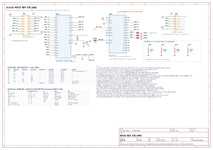</div><figcaption class="small muted">RP2040-Zero(A301)가 4067 모듈(A302)의 SIG를 GP26(ADC0)로 읽고 GP2~GP5로 채널을 고른다. GP6~GP8 ID 점퍼, GP14 PED 점퍼, EXT 풀다운, 테스트 포인트.</figcaption></figure><figure class="sheet csheet" id="circuit-brd-01"><div class="cap"><span><b>BRD-01 · 제어 기판 배치 (MB, 위에서 봄)</b> <span class="mono">개정 E</span></span><span class="zbar" role="group" aria-label="확대"><button type="button" data-z="1" aria-pressed="true">맞춤</button><button type="button" data-z="2" aria-pressed="false">2배</button><button type="button" data-z="3" aria-pressed="false">3배</button><a class="mono" href="sch/BRD-01_control_board_placement.svg" target="_blank" rel="noopener">크게 보기 (SVG) ↗</a></span></div><div class="dwimg">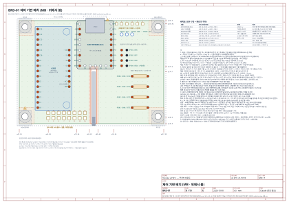</div><figcaption class="small muted">BE163에서 자른 70 × 50: 모든 구멍 = 제로 핀 격자(x = 76.52 + 2.54i, y = 173.59 + 2.54j). W1 홈·금지 구역·매단 보스·바닥 구멍.</figcaption></figure><figure class="sheet csheet" id="circuit-brd-08"><div class="cap"><span><b>BRD-08 · 제어 기판 아랫면 배선 (아래에서 봄, 거울상)</b> <span class="mono">개정 E</span></span><span class="zbar" role="group" aria-label="확대"><button type="button" data-z="1" aria-pressed="true">맞춤</button><button type="button" data-z="2" aria-pressed="false">2배</button><button type="button" data-z="3" aria-pressed="false">3배</button><a class="mono" href="sch/BRD-08_control_board_underside.svg" target="_blank" rel="noopener">크게 보기 (SVG) ↗</a></span></div><div class="dwimg">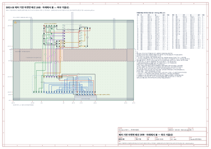</div><figcaption class="small muted">피복 단선 49가닥을 1.27 격자 위 경로로: 납땜 패드·금지 구역·나사 머리 위를 지나지 않고 두 선이 한 칸을 같이 쓰지 않음(자동 검사). 선 번호 = 아래 표.</figcaption></figure><details class="spec cbom" id="circuit-mb-bom"><summary>부품표 — MB 한 장 (×7, 실장 조건 열 참고) (19줄)</summary><div class="tbl"><table><thead><tr><th>부품</th><th>값</th><th>설명</th><th>전체 수량</th><th>KiCad 심볼</th><th>KiCad 풋프린트</th><th>구매 코드</th><th>구매 상태 (최종 목록)</th></tr></thead><tbody><tr><td class="num">J301</td><td>리본 16심 입력 2×8</td><td>EUNSUNG 2651-16P 플랫 케이블 28 AWG (16심 전부 사용)</td><td class="num">7</td><td>Connector_Generic:Conn_02x08_Odd_Even</td><td>Connector_PinHeader_2.54mm:PinHeader_2x08_P2.54mm_Vertical (패드만, 리본 직접 납땜)</td><td class="num">C05</td><td>학교 지원 구매 · 엘레파츠</td></tr><tr><td class="num">A302</td><td>CD74HC4067 16채널 먹스 모듈</td><td>CD74HC4067 16채널 먹스 모듈 (파츠파츠 PP-A324, SparkFun BOB-09056 배치)</td><td class="num">7</td><td>Toccata:CD74HC4067_Breakout (직접 만듦, 핀 1~16 C0~C15, 17~24 J2)</td><td>Toccata:CD74HC4067_Breakout_40.6x17.8 (행 간격 15.24) 또는 PinHeader_1x16 + PinHeader_1x08</td><td class="num">SEV2</td><td>사비 구매 · 파츠파츠</td></tr><tr><td class="num">A302-HDR</td><td>1×16 + 1×8</td><td>핀헤더 1×40 2.54 mm 11.5 mm 1단 몰드 (잘라 씀) — 먹스 모듈 1×16 + 1×8</td><td class="num">168</td><td>—</td><td>Connector_PinHeader_2.54mm (풋프린트는 A 줄 참조)</td><td class="num">SE7</td><td>가진 것</td></tr><tr><td class="num">C301</td><td>100n</td><td>Samsung CL31B104KCFNNNE 1206 100 nF 100 V X7R</td><td class="num">7</td><td>Device:C</td><td>Capacitor_SMD:C_1206_3216Metric_Pad1.33x1.80mm_HandSolder</td><td class="num">SE4</td><td>학교 지원 구매 · 디바이스마트</td></tr><tr><td class="num">A301</td><td>RP2040-Zero</td><td>RP2040-Zero 호환 (파츠파츠 PP-A799-2, Waveshare 배치)</td><td class="num">7</td><td>dj505/RP2040-Zero-KiCAD : RP2040-Zero (3V3 핀을 power_out으로)</td><td>dj505/RP2040-Zero-KiCAD 풋프린트를 복사해 드릴만 1.0 mm로 (핀 헤더용, 패드 번호는 dj505 심볼과 같음 — 다른 라이브러리 풋프린트는 번호가 다를 수 있어 쓰지 않음)</td><td class="num">SEV2</td><td>사비 구매 · 파츠파츠</td></tr><tr><td class="num">A301-HDR</td><td>1×9 ×2</td><td>핀헤더 1×40 2.54 mm — RP2040-Zero용 1×9 ×2, 몰드 뺌 (먹스 168 + 제로 144 = 312핀 → 1×40 9줄)</td><td class="num">126</td><td>—</td><td>Connector_PinHeader_2.54mm (풋프린트는 A 줄 참조)</td><td class="num">SE7</td><td>가진 것</td></tr><tr><td class="num">JP304</td><td>열림</td><td>SolderJumper_2_Open</td><td class="num">7</td><td>Jumper:SolderJumper_2_Open</td><td>Jumper:SolderJumper-2_P1.3mm_Open_Pad1.0x1.5mm (만능기판: 두 구멍 브리지)</td><td class="num"></td><td>납땜 브리지 (부품 없음)</td></tr><tr><td class="num">JP301</td><td></td><td>SolderJumper_2_Open</td><td class="num">7</td><td>Jumper:SolderJumper_2_Open</td><td>Jumper:SolderJumper-2_P1.3mm_Open_Pad1.0x1.5mm (만능기판: 두 구멍 브리지)</td><td class="num"></td><td>납땜 브리지 (부품 없음)</td></tr><tr><td class="num">JP302</td><td></td><td>SolderJumper_2_Open</td><td class="num">7</td><td>Jumper:SolderJumper_2_Open</td><td>Jumper:SolderJumper-2_P1.3mm_Open_Pad1.0x1.5mm (만능기판: 두 구멍 브리지)</td><td class="num"></td><td>납땜 브리지 (부품 없음)</td></tr><tr><td class="num">JP303</td><td></td><td>SolderJumper_2_Open</td><td class="num">7</td><td>Jumper:SolderJumper_2_Open</td><td>Jumper:SolderJumper-2_P1.3mm_Open_Pad1.0x1.5mm (만능기판: 두 구멍 브리지)</td><td class="num"></td><td>납땜 브리지 (부품 없음)</td></tr><tr><td class="num">J302</td><td>EXT 패드 1×6 (2.54)</td><td>패드만 — Adafruit 4876 플러그 선(모듈 쪽)을 아랫면에서 직접 납땜 (헤더 없음)</td><td class="num">7</td><td>Connector_Generic:Conn_01x06</td><td>Connector_PinHeader_2.54mm:PinHeader_1x06_P2.54mm_Vertical (패드만)</td><td class="num"></td><td>패드만 (부품 없음)</td></tr><tr><td class="num">R301</td><td>100k</td><td>탄소피막 1/4 W 5 % 100 kΩ (리드형, 갈·검·노·금)</td><td class="num">2</td><td>Device:R</td><td>Resistor_THT:R_Axial_DIN0207_L6.3mm_D2.5mm_P7.62mm_Horizontal</td><td class="num">L29</td><td>가진 것</td></tr><tr><td class="num">R302</td><td>100k</td><td>탄소피막 1/4 W 5 % 100 kΩ (리드형, 갈·검·노·금)</td><td class="num">1</td><td>Device:R</td><td>Resistor_THT:R_Axial_DIN0207_L6.3mm_D2.5mm_P7.62mm_Horizontal</td><td class="num">L29</td><td>가진 것</td></tr><tr><td class="num">R303</td><td>100k</td><td>탄소피막 1/4 W 5 % 100 kΩ (리드형, 갈·검·노·금)</td><td class="num">1</td><td>Device:R</td><td>Resistor_THT:R_Axial_DIN0207_L6.3mm_D2.5mm_P7.62mm_Horizontal</td><td class="num">L29</td><td>가진 것</td></tr><tr><td class="num">R304</td><td>100k</td><td>탄소피막 1/4 W 5 % 100 kΩ (리드형, 갈·검·노·금)</td><td class="num">0</td><td>Device:R</td><td>Resistor_THT:R_Axial_DIN0207_L6.3mm_D2.5mm_P7.62mm_Horizontal</td><td class="num">L29</td><td>가진 것</td></tr><tr><td class="num">TP301</td><td></td><td>TestPoint</td><td class="num">7</td><td>Connector:TestPoint</td><td>TestPoint:TestPoint_THTPad_D1.5mm_Drill0.7mm</td><td class="num"></td><td>구멍 패드 (부품 없음)</td></tr><tr><td class="num">TP302</td><td></td><td>TestPoint</td><td class="num">7</td><td>Connector:TestPoint</td><td>TestPoint:TestPoint_THTPad_D1.5mm_Drill0.7mm</td><td class="num"></td><td>구멍 패드 (부품 없음)</td></tr><tr><td class="num">TP303</td><td></td><td>TestPoint</td><td class="num">7</td><td>Connector:TestPoint</td><td>TestPoint:TestPoint_THTPad_D1.5mm_Drill0.7mm</td><td class="num"></td><td>구멍 패드 (부품 없음)</td></tr><tr><td class="num">PCB-MB</td><td>70 × 50</td><td>Coms BE163 양면 만능기판 80 × 120 (30 × 42 구멍)에서 자른 70 × 50 조각 (지그 09_기판지그)</td><td class="num">7</td><td>—</td><td>Edge.Cuts x47.25~117.25 × y145.5~195.5, 홈 x81.92~84.72 × y≤172 (BRD-01)</td><td class="num">u06</td><td>가진 것</td></tr></tbody></table></div></details><h4 class="sub4">RP2040-Zero 패드 → 넷 (MB 7장 공통)</h4><div class="tbl"><table><thead><tr><th>패드 dj505</th><th>WS P1</th><th>이름</th><th>가장자리</th><th>MB 넷</th><th>헤더</th><th>구멍 x</th><th>구멍 y</th></tr></thead><tbody><tr><td class="num">1</td><td class="num">23</td><td class="num">5V</td><td>왼쪽</td><td>연결 금지 (USB VBUS)</td><td>헤더</td><td class="num">1.38</td><td class="num">1.59</td></tr><tr><td class="num">2</td><td class="num">22</td><td class="num">GND</td><td>왼쪽</td><td>GND</td><td>헤더</td><td class="num">1.38</td><td class="num">4.13</td></tr><tr><td class="num">3</td><td class="num">21</td><td class="num">3V3</td><td>왼쪽</td><td>+3V3 (센서·먹스·EXT 급전)</td><td>헤더</td><td class="num">1.38</td><td class="num">6.67</td></tr><tr><td class="num">4</td><td class="num">20</td><td class="num">GP29</td><td>왼쪽</td><td>NC</td><td>헤더</td><td class="num">1.38</td><td class="num">9.21</td></tr><tr><td class="num">5</td><td class="num">19</td><td class="num">GP28</td><td>왼쪽</td><td>NC</td><td>헤더</td><td class="num">1.38</td><td class="num">11.75</td></tr><tr><td class="num">6</td><td class="num">18</td><td class="num">GP27</td><td>왼쪽</td><td>NC</td><td>헤더</td><td class="num">1.38</td><td class="num">14.29</td></tr><tr><td class="num">7</td><td class="num">17</td><td class="num">GP26</td><td>왼쪽</td><td>MUX_SIG (ADC0)</td><td>헤더</td><td class="num">1.38</td><td class="num">16.83</td></tr><tr><td class="num">8</td><td class="num">16</td><td class="num">GP15</td><td>왼쪽</td><td>NC</td><td>헤더</td><td class="num">1.38</td><td class="num">19.37</td></tr><tr><td class="num">9</td><td class="num">15</td><td class="num">GP14</td><td>왼쪽</td><td>PED_SEL (JP304 열림)</td><td>헤더</td><td class="num">1.38</td><td class="num">21.91</td></tr><tr><td class="num">10</td><td class="num">1</td><td class="num">GP0</td><td>오른쪽</td><td>NC</td><td>헤더</td><td class="num">16.62</td><td class="num">1.59</td></tr><tr><td class="num">11</td><td class="num">2</td><td class="num">GP1</td><td>오른쪽</td><td>NC</td><td>헤더</td><td class="num">16.62</td><td class="num">4.13</td></tr><tr><td class="num">12</td><td class="num">3</td><td class="num">GP2</td><td>오른쪽</td><td>MUX_S0</td><td>헤더</td><td class="num">16.62</td><td class="num">6.67</td></tr><tr><td class="num">13</td><td class="num">4</td><td class="num">GP3</td><td>오른쪽</td><td>MUX_S1</td><td>헤더</td><td class="num">16.62</td><td class="num">9.21</td></tr><tr><td class="num">14</td><td class="num">5</td><td class="num">GP4</td><td>오른쪽</td><td>MUX_S2</td><td>헤더</td><td class="num">16.62</td><td class="num">11.75</td></tr><tr><td class="num">15</td><td class="num">6</td><td class="num">GP5</td><td>오른쪽</td><td>MUX_S3</td><td>헤더</td><td class="num">16.62</td><td class="num">14.29</td></tr><tr><td class="num">16</td><td class="num">7</td><td class="num">GP6</td><td>오른쪽</td><td>ID0 (JP301)</td><td>헤더</td><td class="num">16.62</td><td class="num">16.83</td></tr><tr><td class="num">17</td><td class="num">8</td><td class="num">GP7</td><td>오른쪽</td><td>ID1 (JP302)</td><td>헤더</td><td class="num">16.62</td><td class="num">19.37</td></tr><tr><td class="num">18</td><td class="num">9</td><td class="num">GP8</td><td>오른쪽</td><td>ID2 (JP303)</td><td>헤더</td><td class="num">16.62</td><td class="num">21.91</td></tr><tr><td class="num">19</td><td class="num">14</td><td class="num">GP13</td><td>아래</td><td>NC</td><td>헤더 없음 (아래 줄)</td><td class="num">3.92</td><td class="num">21.91</td></tr><tr><td class="num">20</td><td class="num">13</td><td class="num">GP12</td><td>아래</td><td>NC</td><td>헤더 없음 (아래 줄)</td><td class="num">6.46</td><td class="num">21.91</td></tr><tr><td class="num">21</td><td class="num">12</td><td class="num">GP11</td><td>아래</td><td>NC</td><td>헤더 없음 (아래 줄)</td><td class="num">9.00</td><td class="num">21.91</td></tr><tr><td class="num">22</td><td class="num">11</td><td class="num">GP10</td><td>아래</td><td>NC</td><td>헤더 없음 (아래 줄)</td><td class="num">11.54</td><td class="num">21.91</td></tr><tr><td class="num">23</td><td class="num">10</td><td class="num">GP9</td><td>아래</td><td>NC</td><td>헤더 없음 (아래 줄)</td><td class="num">14.08</td><td class="num">21.91</td></tr></tbody></table></div><h4 class="sub4">먹스 채널 → 건반 (펌웨어 표, MIDI 번호)</h4><div class="tbl"><table><thead><tr><th>먹스 채널</th><th>O1</th><th>O2</th><th>O3</th><th>O4</th><th>O5</th><th>O6</th><th>O7</th></tr></thead><tbody><tr><td class="num">C0</td><td class="num">C1 = 24</td><td class="num">C2 = 36</td><td class="num">C3 = 48</td><td class="num">C4 = 60</td><td class="num">C5 = 72</td><td class="num">C6 = 84</td><td class="num">C7 = 96</td></tr><tr><td class="num">C1</td><td class="num">C#1 = 25</td><td class="num">C#2 = 37</td><td class="num">C#3 = 49</td><td class="num">C#4 = 61</td><td class="num">C#5 = 73</td><td class="num">C#6 = 85</td><td class="num">C#7 = 97</td></tr><tr><td class="num">C2</td><td class="num">D1 = 26</td><td class="num">D2 = 38</td><td class="num">D3 = 50</td><td class="num">D4 = 62</td><td class="num">D5 = 74</td><td class="num">D6 = 86</td><td class="num">D7 = 98</td></tr><tr><td class="num">C3</td><td class="num">D#1 = 27</td><td class="num">D#2 = 39</td><td class="num">D#3 = 51</td><td class="num">D#4 = 63</td><td class="num">D#5 = 75</td><td class="num">D#6 = 87</td><td class="num">D#7 = 99</td></tr><tr><td class="num">C4</td><td class="num">E1 = 28</td><td class="num">E2 = 40</td><td class="num">E3 = 52</td><td class="num">E4 = 64</td><td class="num">E5 = 76</td><td class="num">E6 = 88</td><td class="num">E7 = 100</td></tr><tr><td class="num">C5</td><td class="num">F1 = 29</td><td class="num">F2 = 41</td><td class="num">F3 = 53</td><td class="num">F4 = 65</td><td class="num">F5 = 77</td><td class="num">F6 = 89</td><td class="num">F7 = 101</td></tr><tr><td class="num">C6</td><td class="num">F#1 = 30</td><td class="num">F#2 = 42</td><td class="num">F#3 = 54</td><td class="num">F#4 = 66</td><td class="num">F#5 = 78</td><td class="num">F#6 = 90</td><td class="num">F#7 = 102</td></tr><tr><td class="num">C7</td><td class="num">G1 = 31</td><td class="num">G2 = 43</td><td class="num">G3 = 55</td><td class="num">G4 = 67</td><td class="num">G5 = 79</td><td class="num">G6 = 91</td><td class="num">G7 = 103</td></tr><tr><td class="num">C8</td><td class="num">G#1 = 32</td><td class="num">G#2 = 44</td><td class="num">G#3 = 56</td><td class="num">G#4 = 68</td><td class="num">G#5 = 80</td><td class="num">G#6 = 92</td><td class="num">G#7 = 104</td></tr><tr><td class="num">C9</td><td class="num">A1 = 33</td><td class="num">A2 = 45</td><td class="num">A3 = 57</td><td class="num">A4 = 69</td><td class="num">A5 = 81</td><td class="num">A6 = 93</td><td class="num">A7 = 105</td></tr><tr><td class="num">C10</td><td class="num">A#1 = 34</td><td class="num">A#2 = 46</td><td class="num">A#3 = 58</td><td class="num">A#4 = 70</td><td class="num">A#5 = 82</td><td class="num">A#6 = 94</td><td class="num">A#7 = 106</td></tr><tr><td class="num">C11</td><td class="num">B1 = 35</td><td class="num">B2 = 47</td><td class="num">B3 = 59</td><td class="num">B4 = 71</td><td class="num">B5 = 83</td><td class="num">B6 = 95</td><td class="num">B7 = 107</td></tr><tr><td class="num">C12</td><td class="num">EXT1 A0 = 21</td><td class="num">—</td><td class="num">—</td><td class="num">—</td><td class="num">—</td><td class="num">—</td><td class="num">EXT1 C8 = 108</td></tr><tr><td class="num">C13</td><td class="num">EXT2 A#0 = 22</td><td class="num">—</td><td class="num">—</td><td class="num">—</td><td class="num">—</td><td class="num">—</td><td class="num">—</td></tr><tr><td class="num">C14</td><td class="num">EXT3 B0 = 23</td><td class="num">—</td><td class="num">—</td><td class="num">—</td><td class="num">—</td><td class="num">—</td><td class="num">—</td></tr><tr><td class="num">C15</td><td class="num">—</td><td class="num">—</td><td class="num">—</td><td class="num">—</td><td class="num">—</td><td class="num">—</td><td class="num">—</td></tr></tbody></table></div><h4 class="sub4">ID 점퍼 (닫음 = GND 납땜 브리지 = 1)</h4><div class="tbl"><table><thead><tr><th>보드</th><th>JP301 GP6</th><th>JP302 GP7</th><th>JP303 GP8</th><th>JP304/JP504 GP14</th><th>USB 이름</th><th>C 건반 MIDI</th><th>허브 포트</th></tr></thead><tbody><tr><td class="num">O1</td><td>닫음</td><td>—</td><td>—</td><td>열림</td><td>Toccata O1</td><td>24 (C1)</td><td class="num">4</td></tr><tr><td class="num">O2</td><td>—</td><td>닫음</td><td>—</td><td>열림</td><td>Toccata O2</td><td>36 (C2)</td><td class="num">5</td></tr><tr><td class="num">O3</td><td>닫음</td><td>닫음</td><td>—</td><td>열림</td><td>Toccata O3</td><td>48 (C3)</td><td class="num">3</td></tr><tr><td class="num">O4</td><td>—</td><td>—</td><td>닫음</td><td>열림</td><td>Toccata O4</td><td>60 (C4)</td><td class="num">6</td></tr><tr><td class="num">O5</td><td>닫음</td><td>—</td><td>닫음</td><td>열림</td><td>Toccata O5</td><td>72 (C5)</td><td class="num">7</td></tr><tr><td class="num">O6</td><td>—</td><td>닫음</td><td>닫음</td><td>열림</td><td>Toccata O6</td><td>84 (C6)</td><td class="num">8</td></tr><tr><td class="num">O7</td><td>닫음</td><td>닫음</td><td>닫음</td><td>열림</td><td>Toccata O7</td><td>96 (C7)</td><td class="num">9</td></tr><tr><td class="num">PED</td><td>—</td><td>—</td><td>—</td><td>닫음 (JP504)</td><td>Toccata PED</td><td>CC64</td><td class="num">2</td></tr></tbody></table></div><details class="spec cbom" id="circuit-mb-wire"><summary>아랫면 배선 경로 (wiring_MB.csv, 49가닥 — BRD-08 번호)</summary><div class="tbl"><table><thead><tr><th>번호</th><th>넷</th><th>시작</th><th>x</th><th>y</th><th>끝</th><th>x</th><th>y</th><th>경로 (꺾인 점, 모듈 좌표)</th><th>길이 (mm)</th><th>꺾임 수</th></tr></thead><tbody><tr><td class="num">1</td><td class="num">+3V3</td><td class="num">A301.3</td><td class="num">76.52</td><td class="num">188.83</td><td class="num">TP301.1</td><td class="num">96.84</td><td class="num">188.83</td><td class="num">(76.52,188.83) → (77.79,188.83) → (77.79,179.94) → (94.30,179.94) → (94.30,188.83) → (96.84,188.83)</td><td class="num">38.1</td><td class="num">4</td></tr><tr><td class="num">2</td><td class="num">+3V3</td><td class="num">A302.18</td><td class="num">71.44</td><td class="num">165.97</td><td class="num">A301.3</td><td class="num">76.52</td><td class="num">188.83</td><td class="num">(71.44,165.97) → (71.44,167.24) → (75.25,167.24) → (75.25,188.83) → (76.52,188.83)</td><td class="num">27.9</td><td class="num">3</td></tr><tr><td class="num">3</td><td class="num">+3V3</td><td class="num">J301.1</td><td class="num">61.28</td><td class="num">148.19</td><td class="num">J301.16</td><td class="num">79.06</td><td class="num">150.73</td><td class="num">(61.28,148.19) → (61.28,149.46) → (79.06,149.46) → (79.06,150.73)</td><td class="num">20.3</td><td class="num">2</td></tr><tr><td class="num">4</td><td class="num">+3V3</td><td class="num">J301.16</td><td class="num">79.06</td><td class="num">150.73</td><td class="num">A302.18</td><td class="num">71.44</td><td class="num">165.97</td><td class="num">(79.06,150.73) → (79.06,165.97) → (71.44,165.97)</td><td class="num">22.9</td><td class="num">1</td></tr><tr><td class="num">5</td><td class="num">+3V3</td><td class="num">TP301.1</td><td class="num">96.84</td><td class="num">188.83</td><td class="num">J302.6</td><td class="num">107.00</td><td class="num">193.91</td><td class="num">(96.84,188.83) → (96.84,186.29) → (107.00,186.29) → (107.00,193.91)</td><td class="num">20.3</td><td class="num">2</td></tr><tr><td class="num">6</td><td class="num">EXT1</td><td class="num">A302.13</td><td class="num">56.20</td><td class="num">183.75</td><td class="num">J302.2</td><td class="num">96.84</td><td class="num">193.91</td><td class="num">(56.20,183.75) → (56.20,185.02) → (95.57,185.02) → (95.57,193.91) → (96.84,193.91)</td><td class="num">50.8</td><td class="num">3</td></tr><tr><td class="num">7</td><td class="num">EXT1</td><td class="num">J302.2</td><td class="num">96.84</td><td class="num">193.91</td><td class="num">R301.1</td><td class="num">101.92</td><td class="num">153.27</td><td class="num">(96.84,193.91) → (96.84,190.10) → (104.46,190.10) → (104.46,153.27) → (101.92,153.27)</td><td class="num">50.8</td><td class="num">3</td></tr><tr><td class="num">8</td><td class="num">EXT2</td><td class="num">A302.14</td><td class="num">56.20</td><td class="num">186.29</td><td class="num">J302.3</td><td class="num">99.38</td><td class="num">193.91</td><td class="num">(56.20,186.29) → (56.20,187.56) → (98.11,187.56) → (98.11,193.91) → (99.38,193.91)</td><td class="num">50.8</td><td class="num">3</td></tr><tr><td class="num">9</td><td class="num">EXT2</td><td class="num">J302.3</td><td class="num">99.38</td><td class="num">193.91</td><td class="num">R302.1</td><td class="num">101.92</td><td class="num">158.35</td><td class="num">(99.38,193.91) → (100.65,193.91) → (100.65,158.35) → (101.92,158.35)</td><td class="num">38.1</td><td class="num">2</td></tr><tr><td class="num">10</td><td class="num">EXT3</td><td class="num">A302.15</td><td class="num">56.20</td><td class="num">188.83</td><td class="num">J302.4</td><td class="num">101.92</td><td class="num">193.91</td><td class="num">(56.20,188.83) → (57.47,188.83) → (57.47,192.64) → (101.92,192.64) → (101.92,193.91)</td><td class="num">50.8</td><td class="num">3</td></tr><tr><td class="num">11</td><td class="num">EXT3</td><td class="num">J302.4</td><td class="num">101.92</td><td class="num">193.91</td><td class="num">R303.1</td><td class="num">101.92</td><td class="num">163.43</td><td class="num">(101.92,193.91) → (103.19,193.91) → (103.19,163.43) → (101.92,163.43)</td><td class="num">33.0</td><td class="num">2</td></tr><tr><td class="num">12</td><td class="num">EXT4</td><td class="num">A302.16</td><td class="num">56.20</td><td class="num">191.37</td><td class="num">J302.5</td><td class="num">104.46</td><td class="num">193.91</td><td class="num">(56.20,191.37) → (56.20,190.10) → (79.06,190.10) → (79.06,176.13) → (90.49,176.13) → (90.49,171.05) → (108.27,171.05) → (108.27,192.64) → (104.46,192.64) → (104.46,193.91)</td><td class="num">99.1</td><td class="num">8</td></tr><tr><td class="num">13</td><td class="num">EXT4</td><td class="num">J302.5</td><td class="num">104.46</td><td class="num">193.91</td><td class="num">R304.1</td><td class="num">101.92</td><td class="num">168.51</td><td class="num">(104.46,193.91) → (105.73,193.91) → (105.73,168.51) → (101.92,168.51)</td><td class="num">30.5</td><td class="num">2</td></tr><tr><td class="num">14</td><td class="num">GND</td><td class="num">A301.2</td><td class="num">76.52</td><td class="num">191.37</td><td class="num">J302.1</td><td class="num">94.30</td><td class="num">193.91</td><td class="num">(76.52,191.37) → (90.49,191.37) → (90.49,190.10) → (94.30,190.10) → (94.30,193.91)</td><td class="num">22.9</td><td class="num">3</td></tr><tr><td class="num">15</td><td class="num">GND</td><td class="num">A302.17</td><td class="num">71.44</td><td class="num">163.43</td><td class="num">A302.19</td><td class="num">71.44</td><td class="num">168.51</td><td class="num">(71.44,163.43) → (72.71,163.43) → (72.71,168.51) → (71.44,168.51)</td><td class="num">7.6</td><td class="num">2</td></tr><tr><td class="num">16</td><td class="num">GND</td><td class="num">A302.19</td><td class="num">71.44</td><td class="num">168.51</td><td class="num">A301.2</td><td class="num">76.52</td><td class="num">191.37</td><td class="num">(71.44,168.51) → (71.44,169.78) → (73.98,169.78) → (73.98,191.37) → (76.52,191.37)</td><td class="num">27.9</td><td class="num">3</td></tr><tr><td class="num">17</td><td class="num">GND</td><td class="num">J301.2</td><td class="num">61.28</td><td class="num">150.73</td><td class="num">J301.15</td><td class="num">79.06</td><td class="num">148.19</td><td class="num">(61.28,150.73) → (60.01,150.73) → (60.01,146.92) → (79.06,146.92) → (79.06,148.19)</td><td class="num">25.4</td><td class="num">3</td></tr><tr><td class="num">18</td><td class="num">GND</td><td class="num">J301.2</td><td class="num">61.28</td><td class="num">150.73</td><td class="num">A302.17</td><td class="num">71.44</td><td class="num">163.43</td><td class="num">(61.28,150.73) → (61.28,163.43) → (71.44,163.43)</td><td class="num">22.9</td><td class="num">1</td></tr><tr><td class="num">19</td><td class="num">GND</td><td class="num">J302.1</td><td class="num">94.30</td><td class="num">193.91</td><td class="num">TP302.1</td><td class="num">99.38</td><td class="num">188.83</td><td class="num">(94.30,193.91) → (93.03,193.91) → (93.03,191.37) → (99.38,191.37) → (99.38,188.83)</td><td class="num">12.7</td><td class="num">3</td></tr><tr><td class="num">20</td><td class="num">GND</td><td class="num">JP301.2</td><td class="num">99.38</td><td class="num">181.21</td><td class="num">JP302.2</td><td class="num">99.38</td><td class="num">178.67</td><td class="num">(99.38,181.21) → (99.38,178.67)</td><td class="num">2.5</td><td class="num">0</td></tr><tr><td class="num">21</td><td class="num">GND</td><td class="num">JP302.2</td><td class="num">99.38</td><td class="num">178.67</td><td class="num">JP303.2</td><td class="num">99.38</td><td class="num">176.13</td><td class="num">(99.38,178.67) → (99.38,176.13)</td><td class="num">2.5</td><td class="num">0</td></tr><tr><td class="num">22</td><td class="num">GND</td><td class="num">JP303.2</td><td class="num">99.38</td><td class="num">176.13</td><td class="num">JP304.1</td><td class="num">99.38</td><td class="num">173.59</td><td class="num">(99.38,176.13) → (99.38,173.59)</td><td class="num">2.5</td><td class="num">0</td></tr><tr><td class="num">23</td><td class="num">GND</td><td class="num">JP304.1</td><td class="num">99.38</td><td class="num">173.59</td><td class="num">R304.2</td><td class="num">109.54</td><td class="num">168.51</td><td class="num">(99.38,173.59) → (109.54,173.59) → (109.54,168.51)</td><td class="num">15.2</td><td class="num">1</td></tr><tr><td class="num">24</td><td class="num">GND</td><td class="num">R302.2</td><td class="num">109.54</td><td class="num">158.35</td><td class="num">R301.2</td><td class="num">109.54</td><td class="num">153.27</td><td class="num">(109.54,158.35) → (109.54,153.27)</td><td class="num">5.1</td><td class="num">0</td></tr><tr><td class="num">25</td><td class="num">GND</td><td class="num">R303.2</td><td class="num">109.54</td><td class="num">163.43</td><td class="num">R302.2</td><td class="num">109.54</td><td class="num">158.35</td><td class="num">(109.54,163.43) → (109.54,158.35)</td><td class="num">5.1</td><td class="num">0</td></tr><tr><td class="num">26</td><td class="num">GND</td><td class="num">R304.2</td><td class="num">109.54</td><td class="num">168.51</td><td class="num">R303.2</td><td class="num">109.54</td><td class="num">163.43</td><td class="num">(109.54,168.51) → (109.54,163.43)</td><td class="num">5.1</td><td class="num">0</td></tr><tr><td class="num">27</td><td class="num">GND</td><td class="num">TP302.1</td><td class="num">99.38</td><td class="num">188.83</td><td class="num">JP301.2</td><td class="num">99.38</td><td class="num">181.21</td><td class="num">(99.38,188.83) → (99.38,181.21)</td><td class="num">7.6</td><td class="num">0</td></tr><tr><td class="num">28</td><td class="num">HALL_A</td><td class="num">A302.10</td><td class="num">56.20</td><td class="num">176.13</td><td class="num">J301.12</td><td class="num">73.98</td><td class="num">150.73</td><td class="num">(56.20,176.13) → (60.01,176.13) → (60.01,157.08) → (73.98,157.08) → (73.98,150.73)</td><td class="num">43.2</td><td class="num">3</td></tr><tr><td class="num">29</td><td class="num">HALL_AS</td><td class="num">A302.11</td><td class="num">56.20</td><td class="num">178.67</td><td class="num">J301.13</td><td class="num">76.52</td><td class="num">148.19</td><td class="num">(56.20,178.67) → (66.36,178.67) → (66.36,158.35) → (75.25,158.35) → (75.25,148.19) → (76.52,148.19)</td><td class="num">50.8</td><td class="num">4</td></tr><tr><td class="num">30</td><td class="num">HALL_B</td><td class="num">A302.12</td><td class="num">56.20</td><td class="num">181.21</td><td class="num">J301.14</td><td class="num">76.52</td><td class="num">150.73</td><td class="num">(56.20,181.21) → (57.47,181.21) → (57.47,172.32) → (76.52,172.32) → (76.52,150.73)</td><td class="num">50.8</td><td class="num">3</td></tr><tr><td class="num">31</td><td class="num">HALL_C</td><td class="num">A302.1</td><td class="num">56.20</td><td class="num">153.27</td><td class="num">J301.3</td><td class="num">63.82</td><td class="num">148.19</td><td class="num">(56.20,153.27) → (62.55,153.27) → (62.55,148.19) → (63.82,148.19)</td><td class="num">12.7</td><td class="num">2</td></tr><tr><td class="num">32</td><td class="num">HALL_CS</td><td class="num">A302.2</td><td class="num">56.20</td><td class="num">155.81</td><td class="num">J301.4</td><td class="num">63.82</td><td class="num">150.73</td><td class="num">(56.20,155.81) → (63.82,155.81) → (63.82,150.73)</td><td class="num">12.7</td><td class="num">1</td></tr><tr><td class="num">33</td><td class="num">HALL_D</td><td class="num">A302.3</td><td class="num">56.20</td><td class="num">158.35</td><td class="num">J301.5</td><td class="num">66.36</td><td class="num">148.19</td><td class="num">(56.20,158.35) → (65.09,158.35) → (65.09,148.19) → (66.36,148.19)</td><td class="num">20.3</td><td class="num">2</td></tr><tr><td class="num">34</td><td class="num">HALL_DS</td><td class="num">A302.4</td><td class="num">56.20</td><td class="num">160.89</td><td class="num">J301.6</td><td class="num">66.36</td><td class="num">150.73</td><td class="num">(56.20,160.89) → (58.74,160.89) → (58.74,152.00) → (66.36,152.00) → (66.36,150.73)</td><td class="num">20.3</td><td class="num">3</td></tr><tr><td class="num">35</td><td class="num">HALL_E</td><td class="num">A302.5</td><td class="num">56.20</td><td class="num">163.43</td><td class="num">J301.7</td><td class="num">68.90</td><td class="num">148.19</td><td class="num">(56.20,163.43) → (56.20,162.16) → (67.63,162.16) → (67.63,148.19) → (68.90,148.19)</td><td class="num">27.9</td><td class="num">3</td></tr><tr><td class="num">36</td><td class="num">HALL_F</td><td class="num">A302.6</td><td class="num">56.20</td><td class="num">165.97</td><td class="num">J301.8</td><td class="num">68.90</td><td class="num">150.73</td><td class="num">(56.20,165.97) → (68.90,165.97) → (68.90,150.73)</td><td class="num">27.9</td><td class="num">1</td></tr><tr><td class="num">37</td><td class="num">HALL_FS</td><td class="num">A302.7</td><td class="num">56.20</td><td class="num">168.51</td><td class="num">J301.9</td><td class="num">71.44</td><td class="num">148.19</td><td class="num">(56.20,168.51) → (70.17,168.51) → (70.17,148.19) → (71.44,148.19)</td><td class="num">35.6</td><td class="num">2</td></tr><tr><td class="num">38</td><td class="num">HALL_G</td><td class="num">A302.8</td><td class="num">56.20</td><td class="num">171.05</td><td class="num">J301.10</td><td class="num">71.44</td><td class="num">150.73</td><td class="num">(56.20,171.05) → (57.47,171.05) → (57.47,154.54) → (71.44,154.54) → (71.44,150.73)</td><td class="num">35.6</td><td class="num">3</td></tr><tr><td class="num">39</td><td class="num">HALL_GS</td><td class="num">A302.9</td><td class="num">56.20</td><td class="num">173.59</td><td class="num">J301.11</td><td class="num">73.98</td><td class="num">148.19</td><td class="num">(56.20,173.59) → (62.55,173.59) → (62.55,159.62) → (72.71,159.62) → (72.71,148.19) → (73.98,148.19)</td><td class="num">43.2</td><td class="num">4</td></tr><tr><td class="num">40</td><td class="num">ID0</td><td class="num">A301.16</td><td class="num">91.76</td><td class="num">178.67</td><td class="num">JP301.1</td><td class="num">96.84</td><td class="num">181.21</td><td class="num">(91.76,178.67) → (95.57,178.67) → (95.57,181.21) → (96.84,181.21)</td><td class="num">7.6</td><td class="num">2</td></tr><tr><td class="num">41</td><td class="num">ID1</td><td class="num">A301.17</td><td class="num">91.76</td><td class="num">176.13</td><td class="num">JP302.1</td><td class="num">96.84</td><td class="num">178.67</td><td class="num">(91.76,176.13) → (91.76,177.40) → (96.84,177.40) → (96.84,178.67)</td><td class="num">7.6</td><td class="num">2</td></tr><tr><td class="num">42</td><td class="num">ID2</td><td class="num">A301.18</td><td class="num">91.76</td><td class="num">173.59</td><td class="num">JP303.1</td><td class="num">96.84</td><td class="num">176.13</td><td class="num">(91.76,173.59) → (91.76,174.86) → (96.84,174.86) → (96.84,176.13)</td><td class="num">7.6</td><td class="num">2</td></tr><tr><td class="num">43</td><td class="num">MUX_S0</td><td class="num">A302.20</td><td class="num">71.44</td><td class="num">171.05</td><td class="num">A301.12</td><td class="num">91.76</td><td class="num">188.83</td><td class="num">(71.44,171.05) → (80.33,171.05) → (80.33,188.83) → (91.76,188.83)</td><td class="num">38.1</td><td class="num">2</td></tr><tr><td class="num">44</td><td class="num">MUX_S1</td><td class="num">A302.21</td><td class="num">71.44</td><td class="num">173.59</td><td class="num">A301.13</td><td class="num">91.76</td><td class="num">186.29</td><td class="num">(71.44,173.59) → (71.44,174.86) → (87.95,174.86) → (87.95,186.29) → (91.76,186.29)</td><td class="num">33.0</td><td class="num">3</td></tr><tr><td class="num">45</td><td class="num">MUX_S2</td><td class="num">A302.22</td><td class="num">71.44</td><td class="num">176.13</td><td class="num">A301.14</td><td class="num">91.76</td><td class="num">183.75</td><td class="num">(71.44,176.13) → (71.44,177.40) → (90.49,177.40) → (90.49,183.75) → (91.76,183.75)</td><td class="num">27.9</td><td class="num">3</td></tr><tr><td class="num">46</td><td class="num">MUX_S3</td><td class="num">A302.23</td><td class="num">71.44</td><td class="num">178.67</td><td class="num">A301.15</td><td class="num">91.76</td><td class="num">181.21</td><td class="num">(71.44,178.67) → (72.71,178.67) → (72.71,182.48) → (86.68,182.48) → (86.68,181.21) → (91.76,181.21)</td><td class="num">25.4</td><td class="num">4</td></tr><tr><td class="num">47</td><td class="num">MUX_SIG</td><td class="num">A301.7</td><td class="num">76.52</td><td class="num">178.67</td><td class="num">TP303.1</td><td class="num">101.92</td><td class="num">188.83</td><td class="num">(76.52,178.67) → (89.22,178.67) → (89.22,182.48) → (101.92,182.48) → (101.92,188.83)</td><td class="num">35.6</td><td class="num">3</td></tr><tr><td class="num">48</td><td class="num">MUX_SIG</td><td class="num">A302.24</td><td class="num">71.44</td><td class="num">181.21</td><td class="num">A301.7</td><td class="num">76.52</td><td class="num">178.67</td><td class="num">(71.44,181.21) → (71.44,179.94) → (76.52,179.94) → (76.52,178.67)</td><td class="num">7.6</td><td class="num">2</td></tr><tr><td class="num">49</td><td class="num">PED_SEL</td><td class="num">A301.9</td><td class="num">76.52</td><td class="num">173.59</td><td class="num">JP304.2</td><td class="num">96.84</td><td class="num">173.59</td><td class="num">(76.52,173.59) → (87.95,173.59) → (87.95,172.32) → (96.84,172.32) → (96.84,173.59)</td><td class="num">22.9</td><td class="num">3</td></tr></tbody></table></div></details><details class="spec cbom" id="circuit-mb-mux"><summary>4067 모듈 핀 (심볼 핀 ↔ 모듈 헤더)</summary><div class="tbl"><table><thead><tr><th>심볼 핀</th><th>이름</th><th>모듈 헤더</th><th>헤더 핀</th></tr></thead><tbody><tr><td class="num">1</td><td>C0</td><td>J1</td><td class="num">1</td></tr><tr><td class="num">2</td><td>C1</td><td>J1</td><td class="num">2</td></tr><tr><td class="num">3</td><td>C2</td><td>J1</td><td class="num">3</td></tr><tr><td class="num">4</td><td>C3</td><td>J1</td><td class="num">4</td></tr><tr><td class="num">5</td><td>C4</td><td>J1</td><td class="num">5</td></tr><tr><td class="num">6</td><td>C5</td><td>J1</td><td class="num">6</td></tr><tr><td class="num">7</td><td>C6</td><td>J1</td><td class="num">7</td></tr><tr><td class="num">8</td><td>C7</td><td>J1</td><td class="num">8</td></tr><tr><td class="num">9</td><td>C8</td><td>J1</td><td class="num">9</td></tr><tr><td class="num">10</td><td>C9</td><td>J1</td><td class="num">10</td></tr><tr><td class="num">11</td><td>C10</td><td>J1</td><td class="num">11</td></tr><tr><td class="num">12</td><td>C11</td><td>J1</td><td class="num">12</td></tr><tr><td class="num">13</td><td>C12</td><td>J1</td><td class="num">13</td></tr><tr><td class="num">14</td><td>C13</td><td>J1</td><td class="num">14</td></tr><tr><td class="num">15</td><td>C14</td><td>J1</td><td class="num">15</td></tr><tr><td class="num">16</td><td>C15</td><td>J1</td><td class="num">16</td></tr><tr><td class="num">17</td><td>GND</td><td>J2</td><td class="num">1</td></tr><tr><td class="num">18</td><td>VCC</td><td>J2</td><td class="num">2</td></tr><tr><td class="num">19</td><td>EN</td><td>J2</td><td class="num">3</td></tr><tr><td class="num">20</td><td>S0</td><td>J2</td><td class="num">4</td></tr><tr><td class="num">21</td><td>S1</td><td>J2</td><td class="num">5</td></tr><tr><td class="num">22</td><td>S2</td><td>J2</td><td class="num">6</td></tr><tr><td class="num">23</td><td>S3</td><td>J2</td><td class="num">7</td></tr><tr><td class="num">24</td><td>SIG</td><td>J2</td><td class="num">8</td></tr></tbody></table></div></details><h4 class="sub4">선</h4><div class="tbl"><table><thead><tr><th>W</th><th>선</th><th>끝 → 끝</th><th>CAD 경로 · 길이 (mm)</th><th>자르는 길이</th><th>수축 튜브</th><th>심 · 넷</th></tr></thead><tbody><tr><td class="num">W101~W107</td><td>EUNSUNG 2651-16P 16심 28 AWG, 1.27 피치</td><td>J201 → J301</td><td class="num">85.0</td><td>180 × 7 (남는 95는 차선 안에서 접어 둠)</td><td>—</td><td>16심 (BRD-06 표)</td></tr><tr><td class="num">W403</td><td>Adafruit 4876 플러그 선 6심 26 AWG → 150 mm로 자름</td><td>O1 J302 → X402</td><td class="num">—</td><td>150 (약 20 cm 선에서)</td><td>—</td><td>1 GND · 2 EL_A0 (EXT1) · 3 EL_AS0 (EXT2) · 4 EL_B0 (EXT3) · 5 EXT4 (비움) · 6 +3V3</td></tr><tr><td class="num">W413</td><td>Adafruit 4876 플러그 선 6심 → 150 mm</td><td>O7 J302 → X412</td><td class="num">—</td><td>150</td><td>—</td><td>1 GND · 2 ER_C8 (EXT1) · 3 EXT2 (비움) · 4 EXT3 (비움) · 5 EXT4 (비움) · 6 +3V3</td></tr><tr><td class="num">W201</td><td>Coms NA993 USB-A → C 1 m</td><td>허브 포트 4 → O1 RP2040-Zero USB-C</td><td class="num">740.1</td><td>산 그대로 (자르지 않음)</td><td>—</td><td>CAD 길이(플러그 포함) 740 ≤ 1 m − 40 (CAD 경로 기준 1 m). C 쪽 몰드 ≤ 12.5 × 7.6 × 25. 남는 선은 통로에서 끈·벨크로로 묶음 (집게에 끼우지 않음)</td></tr><tr><td class="num">W202</td><td>Coms NA993 USB-A → C 1 m</td><td>허브 포트 5 → O2 RP2040-Zero USB-C</td><td class="num">602.1</td><td>산 그대로 (자르지 않음)</td><td>—</td><td>CAD 길이(플러그 포함) 602 ≤ 1 m − 40 (CAD 경로 기준 1 m). C 쪽 몰드 ≤ 12.5 × 7.6 × 25. 남는 선은 통로에서 끈·벨크로로 묶음 (집게에 끼우지 않음)</td></tr><tr><td class="num">W203</td><td>Coms HB466 USB-A → C 0.5 m</td><td>허브 포트 3 → O3 RP2040-Zero USB-C</td><td class="num">386.4</td><td>산 그대로 (자르지 않음)</td><td>—</td><td>CAD 길이(플러그 포함) 386 ≤ 0.5 m − 40 (CAD 경로 기준 0.5 m). C 쪽 몰드 ≤ 12.5 × 7.6 × 25. 남는 선은 통로에서 끈·벨크로로 묶음 (집게에 끼우지 않음)</td></tr><tr><td class="num">W204</td><td>Coms HB466 USB-A → C 0.5 m</td><td>허브 포트 6 → O4 RP2040-Zero USB-C</td><td class="num">300.7</td><td>산 그대로 (자르지 않음)</td><td>—</td><td>CAD 길이(플러그 포함) 301 ≤ 0.5 m − 40 (CAD 경로 기준 0.5 m). C 쪽 몰드 ≤ 12.5 × 7.6 × 25. 남는 선은 통로에서 끈·벨크로로 묶음 (집게에 끼우지 않음)</td></tr><tr><td class="num">W205</td><td>Coms HB466 USB-A → C 0.5 m</td><td>허브 포트 7 → O5 RP2040-Zero USB-C</td><td class="num">146.8</td><td>산 그대로 (자르지 않음)</td><td>—</td><td>CAD 길이(플러그 포함) 147 ≤ 0.5 m − 40 (CAD 경로 기준 0.3 m). C 쪽 몰드 ≤ 12.5 × 7.6 × 25. 남는 선은 통로에서 끈·벨크로로 묶음 (집게에 끼우지 않음)</td></tr><tr><td class="num">W206</td><td>Coms HB466 USB-A → C 0.5 m</td><td>허브 포트 8 → O6 RP2040-Zero USB-C</td><td class="num">166.3</td><td>산 그대로 (자르지 않음)</td><td>—</td><td>CAD 길이(플러그 포함) 166 ≤ 0.5 m − 40 (CAD 경로 기준 0.3 m). C 쪽 몰드 ≤ 12.5 × 7.6 × 25. 남는 선은 통로에서 끈·벨크로로 묶음 (집게에 끼우지 않음)</td></tr><tr><td class="num">W207</td><td>Coms HB466 USB-A → C 0.5 m</td><td>허브 포트 9 → O7 RP2040-Zero USB-C</td><td class="num">314.6</td><td>산 그대로 (자르지 않음)</td><td>—</td><td>CAD 길이(플러그 포함) 315 ≤ 0.5 m − 40 (CAD 경로 기준 0.5 m). C 쪽 몰드 ≤ 12.5 × 7.6 × 25. 남는 선은 통로에서 끈·벨크로로 묶음 (집게에 끼우지 않음)</td></tr></tbody></table></div><h4 class="sub4">만드는 순서와 확인</h4><ol class="flow"><li>BE163을 지그 P-MB로 70 × 50 + 홈 2.8 × 26.5를 긋고 꺾는다. 나사 Ø3.2 (50.0, 149.0)·(114.5, 192.5), 위치 핀 Ø3.0 (114.5, 149.0)·(50.0, 192.5)을 안내 구멍으로 먼저.</li><li>C301(먹스 VCC–GND, 아랫면 1206) → 아랫면 배선(BRD-08 번호 순서는 주 4). 금지 구역 x81.22~85.42 × y≤173.2는 제로 밑 y≥174.86에서만 건넌다.</li><li>먹스 헤더 1×16 + 1×8, 제로 헤더 1×9 ×2(몰드 뺌, 아래 줄 없음) → 제로 밑면에 캡톤 → 모듈 납땜. R301(O1·O7)~R303(O1)은 붙여 눕힘.</li><li>ID 점퍼: O 번호에 맞춰 JP301~JP303 납땜 브리지(표). JP304는 열어 둔다.</li><li>J301 리본·J302(O1·O7만) 플러그 선을 <b>모듈에 넣기 전에</b> 아랫면에서 납땜 → 모듈을 뒤집어 바닥 구멍으로 넣고 M3×6 ×2(밑에서).</li><li>확인: 3V3–GND 단락 없음, ID 핀–GND 0 Ω/열림이 표와 같음 → USB를 꽂으면 'Toccata O1'~'O7'로 보임.</li></ol><p class="small circ-top"><a href="#circuit-parts">파트 목록으로 ↑</a></p></section>
<section class="circ-part" id="circuit-end" aria-labelledby="circuit-end-h"><h3 id="circuit-end-h"><span class="no">D</span>끝 부속 EL · ER</h3><div class="circ-what"><p>88건반 중 옥타브 모듈 밖의 네 건반(왼쪽 A0·A#0·B0, 오른쪽 C8)의 센서입니다. 끝 부속을 떼어 보관할 수 있게 JST-XH 6핀으로 O1·O7 제어 기판의 EXT 입력에 잇습니다.</p><span class="pill circ-qty">EL ×1 · ER ×1</span></div><figure class="sheet csheet" id="circuit-sch-04"><div class="cap"><span><b>SCH-04 · 끝 부속 센서 기판 (EL · ER) + EXT</b> <span class="mono">개정 E</span></span><span class="zbar" role="group" aria-label="확대"><button type="button" data-z="1" aria-pressed="true">맞춤</button><button type="button" data-z="2" aria-pressed="false">2배</button><button type="button" data-z="3" aria-pressed="false">3배</button><a class="mono" href="sch/SCH-04_end_parts.svg" target="_blank" rel="noopener">크게 보기 (SVG) ↗</a></span></div><div class="dwimg">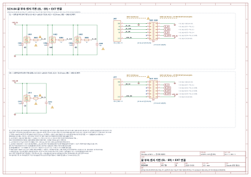</div><figcaption class="small muted">A0·A#0·B0는 O1, C8은 O7의 EXT(먹스 C12~)로. 1 kΩ은 아랫면 1206(△13). XH 위치 1 = GND … 6 = 3V3.</figcaption></figure><figure class="sheet csheet" id="circuit-brd-02-end"><div class="cap"><span><b>BRD-02 · 끝 부속 EL·ER 기판 배치</b> <span class="mono">부분</span></span><span class="zbar" role="group" aria-label="확대"><button type="button" data-z="1" aria-pressed="true">맞춤</button><button type="button" data-z="2" aria-pressed="false">2배</button><button type="button" data-z="3" aria-pressed="false">3배</button><a class="mono" href="sch/BRD-02_sensor_board_placement.svg" target="_blank" rel="noopener">전체 도면 (SVG) ↗</a></span></div><div class="dwimg crop"><svg viewBox="9.0 166.5 402.0 86.5" role="img" aria-label="BRD-02 끝 부속 EL·ER 기판 배치" style="aspect-ratio:402.0/86.5"><rect x="9.0" y="166.5" width="402.0" height="86.5" fill="#fff"/><image data-href="sch/BRD-02_sensor_board_placement.svg" x="0" y="0" width="420" height="297" preserveAspectRatio="none"/></svg></div><figcaption class="small muted">EL 45.5 × 15.24, ER 22.0 × 15.24 — 센서·아랫면 1206 부품·리드 패드·필요한 리브 틈.</figcaption></figure><figure class="sheet csheet" id="circuit-brd-06-ext"><div class="cap"><span><b>BRD-06 · 리본·EXT 선 만들기</b> <span class="mono">부분</span></span><span class="zbar" role="group" aria-label="확대"><button type="button" data-z="1" aria-pressed="true">맞춤</button><button type="button" data-z="2" aria-pressed="false">2배</button><button type="button" data-z="3" aria-pressed="false">3배</button><a class="mono" href="sch/BRD-06_signal_harness.svg" target="_blank" rel="noopener">전체 도면 (SVG) ↗</a></span></div><div class="dwimg crop"><svg viewBox="9.0 20.0 201.0 146.0" role="img" aria-label="BRD-06 리본·EXT 선 만들기" style="aspect-ratio:201.0/146.0"><rect x="9.0" y="20.0" width="201.0" height="146.0" fill="#fff"/><image data-href="sch/BRD-06_signal_harness.svg" x="0" y="0" width="420" height="297" preserveAspectRatio="none"/></svg></div><figcaption class="small muted">W101~W107 리본, W401·W411 리드 + 소켓 선, W403·W413 플러그 선(Adafruit 4876).</figcaption></figure><details class="spec cbom" id="circuit-end-bom"><summary>부품표 — EL · ER (22줄)</summary><div class="tbl"><table><thead><tr><th>부품</th><th>값</th><th>설명</th><th>전체 수량</th><th>KiCad 심볼</th><th>KiCad 풋프린트</th><th>구매 코드</th><th>구매 상태 (최종 목록)</th></tr></thead><tbody><tr><td class="num">U401</td><td>DRV5055A2QLPG</td><td>TI DRV5055A2QLPG, TO-92-3 (LPG)</td><td class="num">1</td><td>Sensor_Magnetic:DRV5055A2xLPGxQ1 (Value = DRV5055A2QLPG)</td><td>Package_TO_SOT_THT:TO-92_Inline_W4.0mm_Horizontal_FlatSideUp → 2.54 간격으로 복사 수정</td><td class="num">L20</td><td>학교 지원 구매 · 아이씨뱅큐</td></tr><tr><td class="num">R401</td><td>1k</td><td>Yageo RC1206JR-071KL 1206 1 kΩ 5 % 1/4 W (10개 단위)</td><td class="num">1</td><td>Device:R</td><td>Resistor_SMD:R_1206_3216Metric_Pad1.30x1.75mm_HandSolder (아랫면)</td><td class="num">L68</td><td>학교 지원 구매 · 아이씨뱅큐</td></tr><tr><td class="num">C401</td><td>100n</td><td>Samsung CL31B104KCFNNNE 1206 100 nF 100 V X7R</td><td class="num">1</td><td>Device:C</td><td>Capacitor_SMD:C_1206_3216Metric_Pad1.33x1.80mm_HandSolder</td><td class="num">SE4</td><td>학교 지원 구매 · 디바이스마트</td></tr><tr><td class="num">U402</td><td>DRV5055A2QLPG</td><td>TI DRV5055A2QLPG, TO-92-3 (LPG)</td><td class="num">1</td><td>Sensor_Magnetic:DRV5055A2xLPGxQ1 (Value = DRV5055A2QLPG)</td><td>Package_TO_SOT_THT:TO-92_Inline_W4.0mm_Horizontal_FlatSideUp → 2.54 간격으로 복사 수정</td><td class="num">L20</td><td>학교 지원 구매 · 아이씨뱅큐</td></tr><tr><td class="num">R402</td><td>1k</td><td>Yageo RC1206JR-071KL 1206 1 kΩ 5 % 1/4 W (10개 단위)</td><td class="num">1</td><td>Device:R</td><td>Resistor_SMD:R_1206_3216Metric_Pad1.30x1.75mm_HandSolder (아랫면)</td><td class="num">L68</td><td>학교 지원 구매 · 아이씨뱅큐</td></tr><tr><td class="num">C402</td><td>100n</td><td>Samsung CL31B104KCFNNNE 1206 100 nF 100 V X7R</td><td class="num">1</td><td>Device:C</td><td>Capacitor_SMD:C_1206_3216Metric_Pad1.33x1.80mm_HandSolder</td><td class="num">SE4</td><td>학교 지원 구매 · 디바이스마트</td></tr><tr><td class="num">U403</td><td>DRV5055A2QLPG</td><td>TI DRV5055A2QLPG, TO-92-3 (LPG)</td><td class="num">1</td><td>Sensor_Magnetic:DRV5055A2xLPGxQ1 (Value = DRV5055A2QLPG)</td><td>Package_TO_SOT_THT:TO-92_Inline_W4.0mm_Horizontal_FlatSideUp → 2.54 간격으로 복사 수정</td><td class="num">L20</td><td>학교 지원 구매 · 아이씨뱅큐</td></tr><tr><td class="num">R403</td><td>1k</td><td>Yageo RC1206JR-071KL 1206 1 kΩ 5 % 1/4 W (10개 단위)</td><td class="num">1</td><td>Device:R</td><td>Resistor_SMD:R_1206_3216Metric_Pad1.30x1.75mm_HandSolder (아랫면)</td><td class="num">L68</td><td>학교 지원 구매 · 아이씨뱅큐</td></tr><tr><td class="num">C403</td><td>100n</td><td>Samsung CL31B104KCFNNNE 1206 100 nF 100 V X7R</td><td class="num">1</td><td>Device:C</td><td>Capacitor_SMD:C_1206_3216Metric_Pad1.33x1.80mm_HandSolder</td><td class="num">SE4</td><td>학교 지원 구매 · 디바이스마트</td></tr><tr><td class="num">C404</td><td>10µ</td><td>Samsung CL31A106KOHNNNE 1206 10 µF 16 V X5R (낱개)</td><td class="num">1</td><td>Device:C</td><td>Capacitor_SMD:C_1206_3216Metric_Pad1.33x1.80mm_HandSolder</td><td class="num">L67</td><td>학교 지원 구매 · 엘레파츠</td></tr><tr><td class="num">J401</td><td>리드선 패드 ×5</td><td>Conn_pads</td><td class="num">1</td><td>Connector_Generic:Conn_01x0N (J401 = 01x05, J411 = 01x03)</td><td>Connector_PinHeader_2.54mm:PinHeader_1x05 / 1x03_P2.54mm_Vertical (패드만)</td><td class="num"></td><td>패드만 (부품 없음)</td></tr><tr><td class="num">X401</td><td>JST-XH 6P (끝 부속 쪽)</td><td>Adafruit 4876 JST-XH 호환 6핀 짝 (플러그 선 + 소켓 선, 각 약 20 cm, 26 AWG) — 모듈 쪽 150 · 끝 부속 쪽 50으로 자름</td><td class="num">1</td><td>Connector_Generic:Conn_01x06</td><td>보드 밖 (Exclude from board) — 선 대 선 커넥터</td><td class="num">L66</td><td>학교 지원 구매 · 엘레파츠</td></tr><tr><td class="num">X402</td><td>JST-XH 6P (모듈 쪽)</td><td>Adafruit 4876 JST-XH 호환 6핀 짝 (플러그 선 + 소켓 선, 각 약 20 cm, 26 AWG) — 모듈 쪽 150 · 끝 부속 쪽 50으로 자름</td><td class="num">1</td><td>Connector_Generic:Conn_01x06</td><td>보드 밖 (Exclude from board) — 선 대 선 커넥터</td><td class="num">L66</td><td>학교 지원 구매 · 엘레파츠</td></tr><tr><td class="num">U411</td><td>DRV5055A2QLPG</td><td>TI DRV5055A2QLPG, TO-92-3 (LPG)</td><td class="num">1</td><td>Sensor_Magnetic:DRV5055A2xLPGxQ1 (Value = DRV5055A2QLPG)</td><td>Package_TO_SOT_THT:TO-92_Inline_W4.0mm_Horizontal_FlatSideUp → 2.54 간격으로 복사 수정</td><td class="num">L20</td><td>학교 지원 구매 · 아이씨뱅큐</td></tr><tr><td class="num">R411</td><td>1k</td><td>Yageo RC1206JR-071KL 1206 1 kΩ 5 % 1/4 W (10개 단위)</td><td class="num">1</td><td>Device:R</td><td>Resistor_SMD:R_1206_3216Metric_Pad1.30x1.75mm_HandSolder (아랫면)</td><td class="num">L68</td><td>학교 지원 구매 · 아이씨뱅큐</td></tr><tr><td class="num">C411</td><td>100n</td><td>Samsung CL31B104KCFNNNE 1206 100 nF 100 V X7R</td><td class="num">1</td><td>Device:C</td><td>Capacitor_SMD:C_1206_3216Metric_Pad1.33x1.80mm_HandSolder</td><td class="num">SE4</td><td>학교 지원 구매 · 디바이스마트</td></tr><tr><td class="num">C412</td><td>10µ</td><td>Samsung CL31A106KOHNNNE 1206 10 µF 16 V X5R (낱개)</td><td class="num">1</td><td>Device:C</td><td>Capacitor_SMD:C_1206_3216Metric_Pad1.33x1.80mm_HandSolder</td><td class="num">L67</td><td>학교 지원 구매 · 엘레파츠</td></tr><tr><td class="num">J411</td><td>리드선 패드 ×3</td><td>Conn_pads</td><td class="num">1</td><td>Connector_Generic:Conn_01x0N (J401 = 01x05, J411 = 01x03)</td><td>Connector_PinHeader_2.54mm:PinHeader_1x05 / 1x03_P2.54mm_Vertical (패드만)</td><td class="num"></td><td>패드만 (부품 없음)</td></tr><tr><td class="num">X411</td><td>JST-XH 6P (끝 부속 쪽)</td><td>Adafruit 4876 JST-XH 호환 6핀 짝 (플러그 선 + 소켓 선, 각 약 20 cm, 26 AWG) — 모듈 쪽 150 · 끝 부속 쪽 50으로 자름</td><td class="num">1</td><td>Connector_Generic:Conn_01x06</td><td>보드 밖 (Exclude from board) — 선 대 선 커넥터</td><td class="num">L66</td><td>학교 지원 구매 · 엘레파츠</td></tr><tr><td class="num">X412</td><td>JST-XH 6P (모듈 쪽)</td><td>Adafruit 4876 JST-XH 호환 6핀 짝 (플러그 선 + 소켓 선, 각 약 20 cm, 26 AWG) — 모듈 쪽 150 · 끝 부속 쪽 50으로 자름</td><td class="num">1</td><td>Connector_Generic:Conn_01x06</td><td>보드 밖 (Exclude from board) — 선 대 선 커넥터</td><td class="num">L66</td><td>학교 지원 구매 · 엘레파츠</td></tr><tr><td class="num">PCB-EL</td><td>45.5 × 15.24 6행</td><td>양면 만능기판 12 × 18 cm에서 자른 6행 띠 (SB 161.6 × 15.24, EL 45.5, ER 22.0) · 자투리</td><td class="num">1</td><td>—</td><td>Edge.Cuts x1.0~46.5 (BRD-02)</td><td class="num">L22</td><td>가진 것</td></tr><tr><td class="num">PCB-ER</td><td>22.0 × 15.24 6행</td><td>양면 만능기판 12 × 18 cm에서 자른 6행 띠 (SB 161.6 × 15.24, EL 45.5, ER 22.0) · 자투리</td><td class="num">1</td><td>—</td><td>Edge.Cuts x1.0~23.0 (BRD-02)</td><td class="num">L22</td><td>가진 것</td></tr></tbody></table></div></details><h4 class="sub4">EXT 커넥터 위치</h4><div class="tbl"><table><thead><tr><th>끝</th><th>XH</th><th>넷</th><th>끝 부속 패드</th><th>제어 기판 패드</th><th>먹스</th><th>건반 = MIDI</th></tr></thead><tbody><tr><td>EL</td><td class="num">1</td><td class="num">GND</td><td class="num">J401.1</td><td class="num">O1 J302-1</td><td class="num">—</td><td>—</td></tr><tr><td>EL</td><td class="num">2</td><td class="num">EL_A0</td><td class="num">J401.2</td><td class="num">O1 J302-2</td><td class="num">C12</td><td>A0 = 21</td></tr><tr><td>EL</td><td class="num">3</td><td class="num">EL_AS0</td><td class="num">J401.3</td><td class="num">O1 J302-3</td><td class="num">C13</td><td>A#0 = 22</td></tr><tr><td>EL</td><td class="num">4</td><td class="num">EL_B0</td><td class="num">J401.4</td><td class="num">O1 J302-4</td><td class="num">C14</td><td>B0 = 23</td></tr><tr><td>EL</td><td class="num">5</td><td class="num">(비움)</td><td class="num">—</td><td class="num">O1 J302-5</td><td class="num">C15</td><td>—</td></tr><tr><td>EL</td><td class="num">6</td><td class="num">+3V3_EL</td><td class="num">J401.5</td><td class="num">O1 J302-6</td><td class="num">—</td><td>—</td></tr><tr><td>ER</td><td class="num">1</td><td class="num">GND</td><td class="num">J411.1</td><td class="num">O7 J302-1</td><td class="num">—</td><td>—</td></tr><tr><td>ER</td><td class="num">2</td><td class="num">ER_C8</td><td class="num">J411.2</td><td class="num">O7 J302-2</td><td class="num">C12</td><td>C8 = 108</td></tr><tr><td>ER</td><td class="num">3</td><td class="num">(비움)</td><td class="num">—</td><td class="num">O7 J302-3</td><td class="num">C13</td><td>—</td></tr><tr><td>ER</td><td class="num">4</td><td class="num">(비움)</td><td class="num">—</td><td class="num">O7 J302-4</td><td class="num">C14</td><td>—</td></tr><tr><td>ER</td><td class="num">5</td><td class="num">(비움)</td><td class="num">—</td><td class="num">O7 J302-5</td><td class="num">C15</td><td>—</td></tr><tr><td>ER</td><td class="num">6</td><td class="num">+3V3_ER</td><td class="num">J411.3</td><td class="num">O7 J302-6</td><td class="num">—</td><td>—</td></tr></tbody></table></div><h4 class="sub4">선</h4><div class="tbl"><table><thead><tr><th>W</th><th>선</th><th>끝 → 끝</th><th>CAD 경로 · 길이 (mm)</th><th>자르는 길이</th><th>수축 튜브</th><th>심 · 넷</th></tr></thead><tbody><tr><td class="num">W401</td><td>2651-16P에서 5가닥 + Adafruit 4876 소켓 선(26 AWG) 50 mm</td><td>J401 → X401</td><td class="num">—</td><td>리본 350 + 소켓 선 50</td><td>—</td><td>1 GND · 2 EL_A0 · 3 EL_AS0 · 4 EL_B0 · 5 +3V3_EL</td></tr><tr><td class="num">W403</td><td>Adafruit 4876 플러그 선 6심 26 AWG → 150 mm로 자름</td><td>O1 J302 → X402</td><td class="num">—</td><td>150 (약 20 cm 선에서)</td><td>—</td><td>1 GND · 2 EL_A0 (EXT1) · 3 EL_AS0 (EXT2) · 4 EL_B0 (EXT3) · 5 EXT4 (비움) · 6 +3V3</td></tr><tr><td class="num">W411</td><td>2651-16P에서 3가닥 + Adafruit 4876 소켓 선 50 mm</td><td>J411 → X411</td><td class="num">—</td><td>리본 300 + 소켓 선 50</td><td>—</td><td>1 GND · 2 ER_C8 · 3 +3V3_ER</td></tr><tr><td class="num">W413</td><td>Adafruit 4876 플러그 선 6심 → 150 mm</td><td>O7 J302 → X412</td><td class="num">—</td><td>150</td><td>—</td><td>1 GND · 2 ER_C8 (EXT1) · 3 EXT2 (비움) · 4 EXT3 (비움) · 5 EXT4 (비움) · 6 +3V3</td></tr></tbody></table></div><ul class="flow small"><li><b class="mono">W401</b> XH 하우징(폭 약 17)은 차선·홈을 못 지나므로 리본을 먼저 꿰고 뒤 통로에서 소켓 선과 잇는다(SCH-04 주 6).</li><li><b class="mono">W401</b> 소켓 선 5번(빈 칸)은 잘라 낸다. 선 색은 받은 선으로 확인 — 위치 번호로만 잇는다.</li><li><b class="mono">W403</b> J302는 기판을 모듈에 넣기 전에 아랫면에서 납땜(BRD-01 주 8).</li><li><b class="mono">W403</b> 1 = GND … 6 = 3V3. 선 색이 아니라 하우징 번호로 확인.</li><li><b class="mono">W411</b> 소켓 선 3·4·5번은 잘라 낸다.</li></ul><h4 class="sub4">만드는 순서와 확인</h4><ol class="flow"><li>12 × 18 기판에서 EL 45.5 × 15.24, ER 22.0 × 15.24 띠(6행)를 자른다. 부품은 모두 아랫면: 100 nF, 1 kΩ(OUT → y72.08), 10 µF.</li><li>리본 가닥(EL 5, ER 3)을 J401/J411에 납땜 → 기판·센서 바 고정 → 자유 끝을 리브 틈·레일 밑 차선·뒷벽 홈으로 꿴다(XH 하우징은 못 지나감).</li><li>뒤 통로에서 Adafruit 4876 소켓 선(50 mm)과 가닥마다 이어 수축 튜브. 하우징 번호 = J302 패드 번호.</li><li>확인: 끝 부속을 꽂으면 O1 C12~C14 / O7 C12에서 센서 값, 빼면 0.15 V 아래(100 kΩ 풀다운).</li></ol><p class="small circ-top"><a href="#circuit-parts">파트 목록으로 ↑</a></p></section>
<section class="circ-part" id="circuit-ped" aria-labelledby="circuit-ped-h"><h3 id="circuit-ped-h"><span class="no">E</span>페달 PB · PS</h3><div class="circ-what"><p>댐퍼 페달 안 홀센서가 발판 자석의 거리를 재고, 가운데 유닛의 페달 보드 RP2040-Zero가 CC64 0~127(하프페달)로 보냅니다. 페달은 3 m 스테레오 선으로 뒤판 잭에 꽂습니다.</p><span class="pill circ-qty">PB ×1 · PS ×1 · J501 조각</span></div><figure class="sheet csheet" id="circuit-sch-05"><div class="cap"><span><b>SCH-05 · 페달 보드 (PB) + 댐퍼 페달 센서 (PS)</b> <span class="mono">개정 E</span></span><span class="zbar" role="group" aria-label="확대"><button type="button" data-z="1" aria-pressed="true">맞춤</button><button type="button" data-z="2" aria-pressed="false">2배</button><button type="button" data-z="3" aria-pressed="false">3배</button><a class="mono" href="sch/SCH-05_pedal.svg" target="_blank" rel="noopener">크게 보기 (SVG) ↗</a></span></div><div class="dwimg">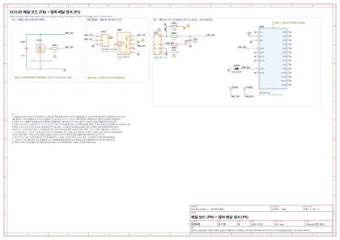</div><figcaption class="small muted">페달 안 DRV5055 → R551 1 kΩ → 3 m TRS → J501(TN = GND) → W502 → J502 → 1 kΩ + 100 nF → GP26. 링 급전 20 Ω, 팁 100 kΩ, GP14 = GND.</figcaption></figure><figure class="sheet csheet" id="circuit-brd-03"><div class="cap"><span><b>BRD-03 · 페달 보드 배치 (PB)</b> <span class="mono">개정 E</span></span><span class="zbar" role="group" aria-label="확대"><button type="button" data-z="1" aria-pressed="true">맞춤</button><button type="button" data-z="2" aria-pressed="false">2배</button><button type="button" data-z="3" aria-pressed="false">3배</button><a class="mono" href="sch/BRD-03_pedal_board_placement.svg" target="_blank" rel="noopener">크게 보기 (SVG) ↗</a></span></div><div class="dwimg">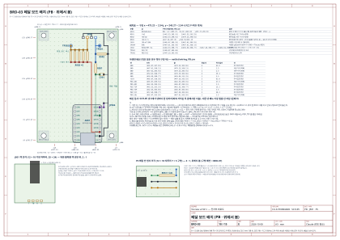</div><figcaption class="small muted">BE163 70 × 50 (지그 P-PED), 모든 구멍 좌표와 아랫면 배선(굵은 실선 = 주석 맨선, 지나는 패드마다 납땜 · 점선 = 리본 가닥, 두 끝만). 배선 검사: SCH-05와 일치.</figcaption></figure><figure class="sheet csheet" id="circuit-brd-07-j501"><div class="cap"><span><b>BRD-07 · J501 페달 잭 조각</b> <span class="mono">부분</span></span><span class="zbar" role="group" aria-label="확대"><button type="button" data-z="1" aria-pressed="true">맞춤</button><button type="button" data-z="2" aria-pressed="false">2배</button><button type="button" data-z="3" aria-pressed="false">3배</button><a class="mono" href="sch/BRD-07_small_boards.svg" target="_blank" rel="noopener">전체 도면 (SVG) ↗</a></span></div><div class="dwimg crop"><svg viewBox="14.0 130.0 110.0 93.0" role="img" aria-label="BRD-07 J501 페달 잭 조각" style="aspect-ratio:110.0/93.0"><rect x="14.0" y="130.0" width="110.0" height="93.0" fill="#fff"/><image data-href="sch/BRD-07_small_boards.svg" x="0" y="0" width="420" height="297" preserveAspectRatio="none"/></svg></div><figcaption class="small muted">25 × 24 자투리(9 × 9 구멍): 잭 자리(점선)와 W502 앞 패드 T·TN·R·S 좌표.</figcaption></figure><figure class="sheet csheet" id="circuit-brd-07-ps"><div class="cap"><span><b>BRD-07 · PS 페달 안 센서 조각</b> <span class="mono">부분</span></span><span class="zbar" role="group" aria-label="확대"><button type="button" data-z="1" aria-pressed="true">맞춤</button><button type="button" data-z="2" aria-pressed="false">2배</button><button type="button" data-z="3" aria-pressed="false">3배</button><a class="mono" href="sch/BRD-07_small_boards.svg" target="_blank" rel="noopener">전체 도면 (SVG) ↗</a></span></div><div class="dwimg crop"><svg viewBox="128.0 171.2 109.1 65.9" role="img" aria-label="BRD-07 PS 페달 안 센서 조각" style="aspect-ratio:109.1/65.9"><rect x="128.0" y="171.2" width="109.1" height="65.9" fill="#fff"/><image data-href="sch/BRD-07_small_boards.svg" x="0" y="0" width="420" height="297" preserveAspectRatio="none"/></svg></div><figcaption class="small muted">7 × 5 구멍(로컬 좌표): U551·C551·R551과 W501 패드, 아랫면 맨선. 배선 검사: SCH-05와 일치.</figcaption></figure><figure class="sheet csheet" id="circuit-brd-06-ped"><div class="cap"><span><b>BRD-06 · 페달 선 만들기</b> <span class="mono">부분</span></span><span class="zbar" role="group" aria-label="확대"><button type="button" data-z="1" aria-pressed="true">맞춤</button><button type="button" data-z="2" aria-pressed="false">2배</button><button type="button" data-z="3" aria-pressed="false">3배</button><a class="mono" href="sch/BRD-06_signal_harness.svg" target="_blank" rel="noopener">전체 도면 (SVG) ↗</a></span></div><div class="dwimg crop"><svg viewBox="209.0 20.0 202.0 49.7" role="img" aria-label="BRD-06 페달 선 만들기" style="aspect-ratio:202.0/49.7"><rect x="209.0" y="20.0" width="202.0" height="49.7" fill="#fff"/><image data-href="sch/BRD-06_signal_harness.svg" x="0" y="0" width="420" height="297" preserveAspectRatio="none"/></svg></div><figcaption class="small muted">W501 3 m 스테레오(페달 쪽 잘라 납땜), W502 리본 가닥 4개.</figcaption></figure><details class="spec cbom" id="circuit-ped-bom"><summary>부품표 — PB · PS · J501 조각 (18줄)</summary><div class="tbl"><table><thead><tr><th>부품</th><th>값</th><th>설명</th><th>전체 수량</th><th>KiCad 심볼</th><th>KiCad 풋프린트</th><th>구매 코드</th><th>구매 상태 (최종 목록)</th></tr></thead><tbody><tr><td class="num">U551</td><td>DRV5055A2QLPG</td><td>TI DRV5055A2QLPG, TO-92-3 (LPG)</td><td class="num">1</td><td>Sensor_Magnetic:DRV5055A2xLPGxQ1 (Value = DRV5055A2QLPG)</td><td>Package_TO_SOT_THT:TO-92_Inline_W4.0mm_Horizontal_FlatSideUp → 2.54 간격으로 복사 수정</td><td class="num">L20</td><td>학교 지원 구매 · 아이씨뱅큐</td></tr><tr><td class="num">C551</td><td>100n</td><td>Samsung CL31B104KCFNNNE 1206 100 nF 100 V X7R</td><td class="num">1</td><td>Device:C</td><td>Capacitor_SMD:C_1206_3216Metric_Pad1.33x1.80mm_HandSolder</td><td class="num">SE4</td><td>학교 지원 구매 · 디바이스마트</td></tr><tr><td class="num">R551</td><td>1k</td><td>탄소피막 1/4 W 5 % 1 kΩ (리드형, 갈·검·빨·금)</td><td class="num">1</td><td>Device:R</td><td>Resistor_THT:R_Axial_DIN0207_L6.3mm_D2.5mm_P7.62mm_Horizontal</td><td class="num">L29</td><td>가진 것</td></tr><tr><td class="num">P501</td><td>TRS 플러그 (PS 쪽)</td><td>Plug_TRS</td><td class="num">1</td><td>Connector_Audio:AudioPlug3</td><td>보드 밖 (Exclude from board)</td><td class="num"></td><td>케이블 끝 플러그 (선과 함께)</td></tr><tr><td class="num">J501</td><td>PJ-313 페달 잭</td><td>GEC PJ-313 3.5 mm 스테레오 잭 (5핀 T·TN·R·RN·S, 노멀 접점, PCB형)</td><td class="num">1</td><td>Connector_Audio:AudioJack3_SwitchTR (핀 번호 = T, TN, R, RN, S)</td><td>직접 만듦 Toccata:Jack_3.5mm_PJ-313 — 패드 이름을 T/TN/R/RN/S로 (통전 검사로 확인)</td><td class="num">L15</td><td>학교 지원 구매 · 디바이스마트</td></tr><tr><td class="num">J502</td><td>W502 패드 1×4</td><td>Conn_01x04</td><td class="num">1</td><td>Connector_Generic:Conn_01x04 (1 T, 2 TN, 3 R, 4 S)</td><td>Connector_PinHeader_2.54mm:PinHeader_1x04_P2.54mm_Vertical (패드만, 선 직접 납땜)</td><td class="num"></td><td>패드만 (부품 없음)</td></tr><tr><td class="num">R501</td><td>1k</td><td>탄소피막 1/4 W 5 % 1 kΩ (리드형, 갈·검·빨·금)</td><td class="num">1</td><td>Device:R</td><td>Resistor_THT:R_Axial_DIN0207_L6.3mm_D2.5mm_P7.62mm_Horizontal</td><td class="num">L29</td><td>가진 것</td></tr><tr><td class="num">R502</td><td>100k</td><td>탄소피막 1/4 W 5 % 100 kΩ (리드형, 갈·검·노·금)</td><td class="num">1</td><td>Device:R</td><td>Resistor_THT:R_Axial_DIN0207_L6.3mm_D2.5mm_P7.62mm_Horizontal</td><td class="num">L29</td><td>가진 것</td></tr><tr><td class="num">R503</td><td>20Ω</td><td>탄소피막 1/4 W 5 % 100 Ω (리드형, 갈·검·갈·금)</td><td class="num">5</td><td>Device:R (Value 20R = 100 Ω ×5 병렬)</td><td>Resistor_THT:R_Axial_DIN0207_L6.3mm_D2.5mm_P7.62mm_Horizontal ×5</td><td class="num">L29</td><td>가진 것</td></tr><tr><td class="num">C501</td><td>100n</td><td>Samsung CL31B104KCFNNNE 1206 100 nF 100 V X7R</td><td class="num">1</td><td>Device:C</td><td>Capacitor_SMD:C_1206_3216Metric_Pad1.33x1.80mm_HandSolder</td><td class="num">SE4</td><td>학교 지원 구매 · 디바이스마트</td></tr><tr><td class="num">A501</td><td>RP2040-Zero</td><td>RP2040-Zero 호환 (파츠파츠 PP-A799-2, Waveshare 배치)</td><td class="num">1</td><td>dj505/RP2040-Zero-KiCAD : RP2040-Zero (3V3 핀을 power_out으로)</td><td>dj505/RP2040-Zero-KiCAD 풋프린트를 복사해 드릴만 1.0 mm로 (핀 헤더용, 패드 번호는 dj505 심볼과 같음 — 다른 라이브러리 풋프린트는 번호가 다를 수 있어 쓰지 않음)</td><td class="num">SEV2</td><td>사비 구매 · 파츠파츠</td></tr><tr><td class="num">A501-HDR</td><td>1×9 ×2</td><td>핀헤더 1×40 2.54 mm — RP2040-Zero용 1×9 ×2, 몰드 뺌 (먹스 168 + 제로 144 = 312핀 → 1×40 9줄)</td><td class="num">18</td><td>—</td><td>Connector_PinHeader_2.54mm (풋프린트는 A 줄 참조)</td><td class="num">SE7</td><td>가진 것</td></tr><tr><td class="num">JP504</td><td>닫음 (브리지)</td><td>SolderJumper_2_Bridged</td><td class="num">1</td><td>Jumper:SolderJumper_2_Bridged</td><td>Jumper:SolderJumper-2_P1.3mm_Bridged_Pad1.0x1.5mm (만능기판: 두 구멍 납땜)</td><td class="num"></td><td>납땜 브리지 (부품 없음)</td></tr><tr><td class="num">TP501</td><td></td><td>TestPoint</td><td class="num">1</td><td>Connector:TestPoint</td><td>TestPoint:TestPoint_THTPad_D1.5mm_Drill0.7mm</td><td class="num"></td><td>구멍 패드 (부품 없음)</td></tr><tr><td class="num">TP502</td><td></td><td>TestPoint</td><td class="num">1</td><td>Connector:TestPoint</td><td>TestPoint:TestPoint_THTPad_D1.5mm_Drill0.7mm</td><td class="num"></td><td>구멍 패드 (부품 없음)</td></tr><tr><td class="num">PCB-PB</td><td>70 × 50</td><td>Coms BE163 양면 만능기판 80 × 120 (30 × 42 구멍)에서 자른 70 × 50 조각 (지그 09_기판지그)</td><td class="num">1</td><td>—</td><td>Edge.Cuts x426.5~476.5 × y244~314, 90° 돌림 (BRD-03)</td><td class="num">u06</td><td>가진 것</td></tr><tr><td class="num">PCB-J501</td><td>25 × 24 (9 × 9 구멍)</td><td>양면 만능기판 12 × 18 cm에서 자른 6행 띠 (SB 161.6 × 15.24, EL 45.5, ER 22.0) · 자투리</td><td class="num">1</td><td>—</td><td>x450~475 × y316.5~340.5, 구멍·패드 BRD-07</td><td class="num">L22</td><td>가진 것</td></tr><tr><td class="num">PCB-PS</td><td>7 × 5 구멍 (17.78 × 12.7)</td><td>양면 만능기판 12 × 18 cm에서 자른 6행 띠 (SB 161.6 × 15.24, EL 45.5, ER 22.0) · 자투리</td><td class="num">1</td><td>—</td><td>로컬 구멍·배선 BRD-07</td><td class="num">L22</td><td>가진 것</td></tr></tbody></table></div></details><h4 class="sub4">PB 구멍 표 (모델 좌표 · 지그 u, v · 격자 i, j)</h4><div class="tbl"><table><thead><tr><th>부품</th><th>핀</th><th>넷</th><th>x</th><th>y</th><th>격자 i (u 방향)</th><th>격자 j (v 방향)</th><th>지그 u = y − 244</th><th>지그 v = 476.5 − x</th></tr></thead><tbody><tr><td class="num">J502</td><td class="num">1</td><td class="num">PED_TIP</td><td class="num">462.53</td><td class="num">308.77</td><td class="num">25</td><td class="num">5</td><td class="num">64.77</td><td class="num">13.97</td></tr><tr><td class="num">J502</td><td class="num">2</td><td class="num">GND</td><td class="num">459.99</td><td class="num">308.77</td><td class="num">25</td><td class="num">6</td><td class="num">64.77</td><td class="num">16.51</td></tr><tr><td class="num">J502</td><td class="num">3</td><td class="num">PED_VCC</td><td class="num">457.45</td><td class="num">308.77</td><td class="num">25</td><td class="num">7</td><td class="num">64.77</td><td class="num">19.05</td></tr><tr><td class="num">J502</td><td class="num">4</td><td class="num">GND</td><td class="num">454.91</td><td class="num">308.77</td><td class="num">25</td><td class="num">8</td><td class="num">64.77</td><td class="num">21.59</td></tr><tr><td class="num">R501</td><td class="num">1</td><td class="num">PED_ADC</td><td class="num">462.53</td><td class="num">285.91</td><td class="num">16</td><td class="num">5</td><td class="num">41.91</td><td class="num">13.97</td></tr><tr><td class="num">R501</td><td class="num">2</td><td class="num">PED_TIP</td><td class="num">462.53</td><td class="num">293.53</td><td class="num">19</td><td class="num">5</td><td class="num">49.53</td><td class="num">13.97</td></tr><tr><td class="num">R502</td><td class="num">2</td><td class="num">PED_TIP</td><td class="num">462.53</td><td class="num">298.61</td><td class="num">21</td><td class="num">5</td><td class="num">54.61</td><td class="num">13.97</td></tr><tr><td class="num">R502</td><td class="num">1</td><td class="num">GND</td><td class="num">470.15</td><td class="num">298.61</td><td class="num">21</td><td class="num">2</td><td class="num">54.61</td><td class="num">6.35</td></tr><tr><td class="num">C501</td><td class="num">1</td><td class="num">PED_ADC</td><td class="num">465.07</td><td class="num">285.91</td><td class="num">16</td><td class="num">4</td><td class="num">41.91</td><td class="num">11.43</td></tr><tr><td class="num">C501</td><td class="num">2</td><td class="num">GND</td><td class="num">467.61</td><td class="num">285.91</td><td class="num">16</td><td class="num">3</td><td class="num">41.91</td><td class="num">8.89</td></tr><tr><td class="num">JP504</td><td class="num">2</td><td class="num">PED_SEL</td><td class="num">467.61</td><td class="num">265.59</td><td class="num">8</td><td class="num">3</td><td class="num">21.59</td><td class="num">8.89</td></tr><tr><td class="num">JP504</td><td class="num">1</td><td class="num">GND</td><td class="num">467.61</td><td class="num">268.13</td><td class="num">9</td><td class="num">3</td><td class="num">24.13</td><td class="num">8.89</td></tr><tr><td class="num">TP501</td><td class="num">1</td><td class="num">PED_TIP</td><td class="num">465.07</td><td class="num">303.69</td><td class="num">23</td><td class="num">4</td><td class="num">59.69</td><td class="num">11.43</td></tr><tr><td class="num">TP502</td><td class="num">1</td><td class="num">PED_VCC</td><td class="num">447.29</td><td class="num">303.69</td><td class="num">23</td><td class="num">11</td><td class="num">59.69</td><td class="num">29.21</td></tr><tr><td class="num">R503a</td><td class="num">1</td><td class="num">+3V3</td><td class="num">457.45</td><td class="num">293.53</td><td class="num">19</td><td class="num">7</td><td class="num">49.53</td><td class="num">19.05</td></tr><tr><td class="num">R503a</td><td class="num">2</td><td class="num">PED_VCC</td><td class="num">457.45</td><td class="num">301.15</td><td class="num">22</td><td class="num">7</td><td class="num">57.15</td><td class="num">19.05</td></tr><tr><td class="num">R503b</td><td class="num">1</td><td class="num">+3V3</td><td class="num">454.91</td><td class="num">293.53</td><td class="num">19</td><td class="num">8</td><td class="num">49.53</td><td class="num">21.59</td></tr><tr><td class="num">R503b</td><td class="num">2</td><td class="num">PED_VCC</td><td class="num">454.91</td><td class="num">301.15</td><td class="num">22</td><td class="num">8</td><td class="num">57.15</td><td class="num">21.59</td></tr><tr><td class="num">R503c</td><td class="num">1</td><td class="num">+3V3</td><td class="num">452.37</td><td class="num">293.53</td><td class="num">19</td><td class="num">9</td><td class="num">49.53</td><td class="num">24.13</td></tr><tr><td class="num">R503c</td><td class="num">2</td><td class="num">PED_VCC</td><td class="num">452.37</td><td class="num">301.15</td><td class="num">22</td><td class="num">9</td><td class="num">57.15</td><td class="num">24.13</td></tr><tr><td class="num">R503d</td><td class="num">1</td><td class="num">+3V3</td><td class="num">449.83</td><td class="num">293.53</td><td class="num">19</td><td class="num">10</td><td class="num">49.53</td><td class="num">26.67</td></tr><tr><td class="num">R503d</td><td class="num">2</td><td class="num">PED_VCC</td><td class="num">449.83</td><td class="num">301.15</td><td class="num">22</td><td class="num">10</td><td class="num">57.15</td><td class="num">26.67</td></tr><tr><td class="num">R503e</td><td class="num">1</td><td class="num">+3V3</td><td class="num">447.29</td><td class="num">293.53</td><td class="num">19</td><td class="num">11</td><td class="num">49.53</td><td class="num">29.21</td></tr><tr><td class="num">R503e</td><td class="num">2</td><td class="num">PED_VCC</td><td class="num">447.29</td><td class="num">301.15</td><td class="num">22</td><td class="num">11</td><td class="num">57.15</td><td class="num">29.21</td></tr><tr><td class="num">A501</td><td class="num">1</td><td class="num">연결 금지 (USB VBUS)</td><td class="num">465.07</td><td class="num">245.27</td><td class="num">0</td><td class="num">4</td><td class="num">1.27</td><td class="num">11.43</td></tr><tr><td class="num">A501</td><td class="num">2</td><td class="num">GND</td><td class="num">465.07</td><td class="num">247.81</td><td class="num">1</td><td class="num">4</td><td class="num">3.81</td><td class="num">11.43</td></tr><tr><td class="num">A501</td><td class="num">3</td><td class="num">+3V3</td><td class="num">465.07</td><td class="num">250.35</td><td class="num">2</td><td class="num">4</td><td class="num">6.35</td><td class="num">11.43</td></tr><tr><td class="num">A501</td><td class="num">4</td><td class="num">NC</td><td class="num">465.07</td><td class="num">252.89</td><td class="num">3</td><td class="num">4</td><td class="num">8.89</td><td class="num">11.43</td></tr><tr><td class="num">A501</td><td class="num">5</td><td class="num">NC</td><td class="num">465.07</td><td class="num">255.43</td><td class="num">4</td><td class="num">4</td><td class="num">11.43</td><td class="num">11.43</td></tr><tr><td class="num">A501</td><td class="num">6</td><td class="num">NC</td><td class="num">465.07</td><td class="num">257.97</td><td class="num">5</td><td class="num">4</td><td class="num">13.97</td><td class="num">11.43</td></tr><tr><td class="num">A501</td><td class="num">7</td><td class="num">PED_ADC</td><td class="num">465.07</td><td class="num">260.51</td><td class="num">6</td><td class="num">4</td><td class="num">16.51</td><td class="num">11.43</td></tr><tr><td class="num">A501</td><td class="num">8</td><td class="num">NC</td><td class="num">465.07</td><td class="num">263.05</td><td class="num">7</td><td class="num">4</td><td class="num">19.05</td><td class="num">11.43</td></tr><tr><td class="num">A501</td><td class="num">9</td><td class="num">PED_SEL</td><td class="num">465.07</td><td class="num">265.59</td><td class="num">8</td><td class="num">4</td><td class="num">21.59</td><td class="num">11.43</td></tr><tr><td class="num">A501</td><td class="num">10</td><td class="num">NC</td><td class="num">449.83</td><td class="num">245.27</td><td class="num">0</td><td class="num">10</td><td class="num">1.27</td><td class="num">26.67</td></tr><tr><td class="num">A501</td><td class="num">11</td><td class="num">NC</td><td class="num">449.83</td><td class="num">247.81</td><td class="num">1</td><td class="num">10</td><td class="num">3.81</td><td class="num">26.67</td></tr><tr><td class="num">A501</td><td class="num">12</td><td class="num">NC</td><td class="num">449.83</td><td class="num">250.35</td><td class="num">2</td><td class="num">10</td><td class="num">6.35</td><td class="num">26.67</td></tr><tr><td class="num">A501</td><td class="num">13</td><td class="num">NC</td><td class="num">449.83</td><td class="num">252.89</td><td class="num">3</td><td class="num">10</td><td class="num">8.89</td><td class="num">26.67</td></tr><tr><td class="num">A501</td><td class="num">14</td><td class="num">NC</td><td class="num">449.83</td><td class="num">255.43</td><td class="num">4</td><td class="num">10</td><td class="num">11.43</td><td class="num">26.67</td></tr><tr><td class="num">A501</td><td class="num">15</td><td class="num">NC</td><td class="num">449.83</td><td class="num">257.97</td><td class="num">5</td><td class="num">10</td><td class="num">13.97</td><td class="num">26.67</td></tr><tr><td class="num">A501</td><td class="num">16</td><td class="num">NC</td><td class="num">449.83</td><td class="num">260.51</td><td class="num">6</td><td class="num">10</td><td class="num">16.51</td><td class="num">26.67</td></tr><tr><td class="num">A501</td><td class="num">17</td><td class="num">NC</td><td class="num">449.83</td><td class="num">263.05</td><td class="num">7</td><td class="num">10</td><td class="num">19.05</td><td class="num">26.67</td></tr><tr><td class="num">A501</td><td class="num">18</td><td class="num">NC</td><td class="num">449.83</td><td class="num">265.59</td><td class="num">8</td><td class="num">10</td><td class="num">21.59</td><td class="num">26.67</td></tr></tbody></table></div><h4 class="sub4">PB 아랫면 배선</h4><div class="tbl"><table><thead><tr><th>넷</th><th>선 번호</th><th>경로 (모델 좌표 x, y)</th><th>직각 길이 (mm)</th><th>선</th></tr></thead><tbody><tr><td class="num">GND</td><td class="num">1</td><td class="num">(465.07,247.81) → (467.61,247.81) → (467.61,252.89) → (470.15,252.89) → (470.15,303.69)</td><td class="num">61.0</td><td>주석 맨선</td></tr><tr><td class="num">GND</td><td class="num">2</td><td class="num">(467.61,268.13) → (470.15,268.13)</td><td class="num">2.5</td><td>리본 가닥</td></tr><tr><td class="num">GND</td><td class="num">3</td><td class="num">(467.61,285.91) → (470.15,285.91)</td><td class="num">2.5</td><td>리본 가닥</td></tr><tr><td class="num">GND</td><td class="num">4</td><td class="num">(454.91,308.77) → (454.91,311.31) → (467.61,311.31) → (467.61,303.69) → (470.15,303.69)</td><td class="num">25.4</td><td>주석 맨선</td></tr><tr><td class="num">GND</td><td class="num">5</td><td class="num">(459.99,308.77) → (459.99,311.31)</td><td class="num">2.5</td><td>주석 맨선</td></tr><tr><td class="num">+3V3</td><td class="num">1</td><td class="num">(465.07,250.35) → (459.99,250.35) → (459.99,293.53) → (447.29,293.53)</td><td class="num">61.0</td><td>주석 맨선</td></tr><tr><td class="num">PED_ADC</td><td class="num">1</td><td class="num">(465.07,260.51) → (462.53,260.51) → (462.53,285.91)</td><td class="num">27.9</td><td>리본 가닥</td></tr><tr><td class="num">PED_ADC</td><td class="num">2</td><td class="num">(462.53,285.91) → (465.07,285.91)</td><td class="num">2.5</td><td>주석 맨선</td></tr><tr><td class="num">PED_TIP</td><td class="num">1</td><td class="num">(462.53,293.53) → (462.53,308.77)</td><td class="num">15.2</td><td>주석 맨선</td></tr><tr><td class="num">PED_TIP</td><td class="num">2</td><td class="num">(462.53,303.69) → (465.07,303.69)</td><td class="num">2.5</td><td>주석 맨선</td></tr><tr><td class="num">PED_VCC</td><td class="num">1</td><td class="num">(457.45,308.77) → (457.45,301.15) → (447.29,301.15) → (447.29,303.69)</td><td class="num">20.3</td><td>주석 맨선</td></tr><tr><td class="num">PED_SEL</td><td class="num">1</td><td class="num">(465.07,265.59) → (467.61,265.59)</td><td class="num">2.5</td><td>리본 가닥</td></tr></tbody></table></div><h4 class="sub4">J501 조각 · PS 조각 구멍 (BRD-07)</h4><div class="tbl"><table><thead><tr><th>기판</th><th>부품</th><th>핀</th><th>넷</th><th>i (c)</th><th>j (r)</th><th>x</th><th>y</th><th>좌표</th></tr></thead><tbody><tr><td>J501 조각</td><td class="num">W502</td><td class="num">1 T</td><td class="num">PED_TIP</td><td class="num">3</td><td class="num">0</td><td class="num">458.89</td><td class="num">317.77</td><td>모델 좌표</td></tr><tr><td>J501 조각</td><td class="num">W502</td><td class="num">2 TN</td><td class="num">GND</td><td class="num">4</td><td class="num">0</td><td class="num">461.43</td><td class="num">317.77</td><td>모델 좌표</td></tr><tr><td>J501 조각</td><td class="num">W502</td><td class="num">3 R</td><td class="num">PED_VCC</td><td class="num">5</td><td class="num">0</td><td class="num">463.97</td><td class="num">317.77</td><td>모델 좌표</td></tr><tr><td>J501 조각</td><td class="num">W502</td><td class="num">4 S</td><td class="num">GND</td><td class="num">6</td><td class="num">0</td><td class="num">466.51</td><td class="num">317.77</td><td>모델 좌표</td></tr><tr><td>PS 조각</td><td class="num">U551</td><td class="num">1</td><td class="num">PED_VCC</td><td class="num">2</td><td class="num">1</td><td class="num">5.08</td><td class="num">2.54</td><td>로컬 (왼쪽 아래 구멍 = 0, 0)</td></tr><tr><td>PS 조각</td><td class="num">U551</td><td class="num">2</td><td class="num">GND</td><td class="num">2</td><td class="num">2</td><td class="num">5.08</td><td class="num">5.08</td><td>로컬 (왼쪽 아래 구멍 = 0, 0)</td></tr><tr><td>PS 조각</td><td class="num">U551</td><td class="num">3</td><td class="num">U551 OUT–R551</td><td class="num">2</td><td class="num">3</td><td class="num">5.08</td><td class="num">7.62</td><td>로컬 (왼쪽 아래 구멍 = 0, 0)</td></tr><tr><td>PS 조각</td><td class="num">C551</td><td class="num">1</td><td class="num">PED_VCC</td><td class="num">3</td><td class="num">1</td><td class="num">7.62</td><td class="num">2.54</td><td>로컬 (왼쪽 아래 구멍 = 0, 0)</td></tr><tr><td>PS 조각</td><td class="num">C551</td><td class="num">2</td><td class="num">GND</td><td class="num">3</td><td class="num">2</td><td class="num">7.62</td><td class="num">5.08</td><td>로컬 (왼쪽 아래 구멍 = 0, 0)</td></tr><tr><td>PS 조각</td><td class="num">R551</td><td class="num">2</td><td class="num">U551 OUT–R551</td><td class="num">3</td><td class="num">3</td><td class="num">7.62</td><td class="num">7.62</td><td>로컬 (왼쪽 아래 구멍 = 0, 0)</td></tr><tr><td>PS 조각</td><td class="num">R551</td><td class="num">1</td><td class="num">PED_TIP</td><td class="num">6</td><td class="num">3</td><td class="num">15.24</td><td class="num">7.62</td><td>로컬 (왼쪽 아래 구멍 = 0, 0)</td></tr><tr><td>PS 조각</td><td class="num">W501</td><td class="num">T</td><td class="num">PED_TIP</td><td class="num">6</td><td class="num">4</td><td class="num">15.24</td><td class="num">10.16</td><td>로컬 (왼쪽 아래 구멍 = 0, 0)</td></tr><tr><td>PS 조각</td><td class="num">W501</td><td class="num">R</td><td class="num">PED_VCC</td><td class="num">6</td><td class="num">1</td><td class="num">15.24</td><td class="num">2.54</td><td>로컬 (왼쪽 아래 구멍 = 0, 0)</td></tr><tr><td>PS 조각</td><td class="num">W501</td><td class="num">S</td><td class="num">GND</td><td class="num">6</td><td class="num">2</td><td class="num">15.24</td><td class="num">5.08</td><td>로컬 (왼쪽 아래 구멍 = 0, 0)</td></tr></tbody></table></div><h4 class="sub4">A501 쓰는 핀</h4><div class="tbl"><table><thead><tr><th>패드</th><th>이름</th><th>PB 넷</th></tr></thead><tbody><tr><td class="num">1</td><td class="num">5V</td><td>연결 금지 (USB VBUS)</td></tr><tr><td class="num">2</td><td class="num">GND</td><td>GND</td></tr><tr><td class="num">3</td><td class="num">3V3</td><td>+3V3 (R503 → 페달 링)</td></tr><tr><td class="num">7</td><td class="num">GP26</td><td>PED_ADC (ADC0)</td></tr><tr><td class="num">9</td><td class="num">GP14</td><td>PED_SEL (JP504 닫음 = GND)</td></tr></tbody></table></div><h4 class="sub4">선</h4><div class="tbl"><table><thead><tr><th>W</th><th>선</th><th>끝 → 끝</th><th>CAD 경로 · 길이 (mm)</th><th>자르는 길이</th><th>수축 튜브</th><th>심 · 넷</th></tr></thead><tbody><tr><td class="num">W501</td><td>Coms BC256 3.5 mm TRS 3 m</td><td>PS → P501</td><td class="num">—</td><td>플러그 쪽 3 m 그대로, 페달 쪽 끝만 자름</td><td>—</td><td>1 PED_TIP (팁) · 2 PED_VCC (링) · 3 GND (슬리브)</td></tr><tr><td class="num">W502</td><td>2651-16P 가닥 4개 (SE12)</td><td>J501 → J502</td><td class="num">—</td><td>80</td><td>—</td><td>1 PED_TIP · 2 GND · 3 PED_VCC · 4 GND</td></tr><tr><td class="num">W208</td><td>Coms HB466 USB-A → C 0.5 m</td><td>허브 포트 2 → PB RP2040-Zero USB-C</td><td class="num">363.5</td><td>산 그대로 (자르지 않음)</td><td>—</td><td>CAD 길이 364 ≤ 0.5 m − 40. 앞 공간 줄 y227 z37을 따라감</td></tr></tbody></table></div><ul class="flow small"><li><b class="mono">W501</b> 속선 색은 판매처 미공개 — 자른 뒤 플러그 팁·링·슬리브와 통전으로 맞춘다.</li><li><b class="mono">W501</b> 페달 안에서 케이블 타이로 당김 방지.</li><li><b class="mono">W502</b> J501 조각은 뒤판 출력물 잭 선반에 MS 폴리머로 붙인다. 붙이기 전에 W502를 납땜.</li></ul><h4 class="sub4">만드는 순서와 확인</h4><ol class="flow"><li>BE163을 지그 P-PED로 70 × 50 긋고 꺾기, 나사 Ø3.2 (430.5, 248)·(472.5, 310), 위치 핀 Ø3.0 (472.5, 248)·(430.5, 310).</li><li>BRD-03 배치표대로 R501·R502·R503(100 Ω ×5)·C501·JP504 → 아랫면 배선 → 헤더(몰드 뺌) → 캡톤 → A501. 주석 맨선(GND 레일·버스·R501.2 → R502.2 → J502.1 줄·짧은 다리)은 지나는 패드마다 납땜하고, 리본 가닥은 두 끝만 벗겨 끝의 패드·맨선에 납땜한다(가닥 중간은 아무것도 잇지 않음).</li><li>J501 조각(BRD-07): PJ-313을 잭 자리에 꽂고 다리 T·TN·R·S → 앞 패드 → W502 4가닥으로 J502와 잇고 → 조각을 뒤판 잭 선반에 MS 폴리머로.</li><li>페달: 마이크로스위치 배선을 떼고 발판 밑에 자석(S극 아래), 바닥판에 PS 조각(BRD-07: U551·C551·R551) + W501 끝(팁 → c6 r4, 링 → c6 r1, 슬리브 → c6 r2).</li><li>확인: A501 전 GP26 패드 ↔ R501.1 = 0 Ω, J502.1 ↔ TP501 = 0 Ω, J502.2·J502.4 ↔ GND = 0 Ω, J502.3–3V3 = 20 Ω, J502.1–GND = 100 kΩ. USB 연결 → 'Toccata PED', 페달 꽂으면 링 3.05 V 이상, 빼면 GP26 ≈ 0 V.</li></ol><p class="small circ-top"><a href="#circuit-parts">파트 목록으로 ↑</a></p></section>
<section class="circ-part" id="circuit-pwr" aria-labelledby="circuit-pwr-h"><h3 id="circuit-pwr-h"><span class="no">F</span>전원</h3><div class="circ-what"><p>LiFePO4 12.8 V 6 Ah 전지 하나로 악기 전체를 켭니다. XT60 → 5 A 퓨즈 → 로커 스위치 → 12.8 V 버스에서 앰프로 바로 가고, XL4016이 5.1 V로 낮춰 Pi 5와 USB 허브에 줍니다. 충전은 팩의 DC 잭으로 따로 합니다.</p><span class="pill circ-qty">CU ×1 (보드 밖 배선)</span></div><figure class="sheet csheet" id="circuit-sch-06-pwr"><div class="cap"><span><b>SCH-06 · 전원 (CU)</b> <span class="mono">부분</span></span><span class="zbar" role="group" aria-label="확대"><button type="button" data-z="1" aria-pressed="true">맞춤</button><button type="button" data-z="2" aria-pressed="false">2배</button><button type="button" data-z="3" aria-pressed="false">3배</button><a class="mono" href="sch/SCH-06_power.svg" target="_blank" rel="noopener">전체 도면 (SVG) ↗</a></span></div><div class="dwimg crop"><svg viewBox="9.0 20.0 402.0 158.0" role="img" aria-label="SCH-06 전원 (CU)" style="aspect-ratio:402.0/158.0"><rect x="9.0" y="20.0" width="402.0" height="158.0" fill="#fff"/><image data-href="sch/SCH-06_power.svg" x="0" y="0" width="420" height="297" preserveAspectRatio="none"/></svg></div><figcaption class="small muted">전지 BT601 → XT60 → F601 5 A ATO → SW601(두 회로 나란히, △20) → +12V8 → A602 강압 5.1 V(Pi 5·허브) + 앰프. 별 접지 = 강압 IN−. 전원 예산 표.</figcaption></figure><figure class="sheet csheet" id="circuit-brd-04"><div class="cap"><span><b>BRD-04 · 가운데 유닛 배선도</b> <span class="mono">개정 E</span></span><span class="zbar" role="group" aria-label="확대"><button type="button" data-z="1" aria-pressed="true">맞춤</button><button type="button" data-z="2" aria-pressed="false">2배</button><button type="button" data-z="3" aria-pressed="false">3배</button><a class="mono" href="sch/BRD-04_centre_unit_wiring.svg" target="_blank" rel="noopener">크게 보기 (SVG) ↗</a></span></div><div class="dwimg">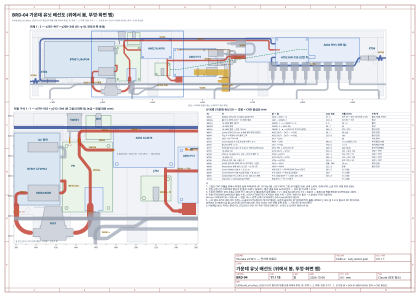</div><figcaption class="small muted">CAD 투영: 위 1 : 2 전체, 아래 1 : 1 전원 구석. 선마다 W 번호·CAD 경로·자르는 길이·수축 튜브 색.</figcaption></figure><figure class="sheet csheet" id="circuit-brd-05-pwr"><div class="cap"><span><b>BRD-05 · 전원 하네스 만들기</b> <span class="mono">부분</span></span><span class="zbar" role="group" aria-label="확대"><button type="button" data-z="1" aria-pressed="true">맞춤</button><button type="button" data-z="2" aria-pressed="false">2배</button><button type="button" data-z="3" aria-pressed="false">3배</button><a class="mono" href="sch/BRD-05_power_audio_harness.svg" target="_blank" rel="noopener">전체 도면 (SVG) ↗</a></span></div><div class="dwimg crop"><svg viewBox="9.0 20.0 201.0 123.2" role="img" aria-label="BRD-05 전원 하네스 만들기" style="aspect-ratio:201.0/123.2"><rect x="9.0" y="20.0" width="201.0" height="123.2" fill="#fff"/><image data-href="sch/BRD-05_power_audio_harness.svg" x="0" y="0" width="420" height="297" preserveAspectRatio="none"/></svg></div><figcaption class="small muted">W601~W604: 양 끝·핀·색·이음(S1~S3)·자르는 길이.</figcaption></figure><figure class="sheet csheet" id="circuit-brd-05-sw"><div class="cap"><span><b>BRD-05 · KCD1-104 단자</b> <span class="mono">부분</span></span><span class="zbar" role="group" aria-label="확대"><button type="button" data-z="1" aria-pressed="true">맞춤</button><button type="button" data-z="2" aria-pressed="false">2배</button><button type="button" data-z="3" aria-pressed="false">3배</button><a class="mono" href="sch/BRD-05_power_audio_harness.svg" target="_blank" rel="noopener">전체 도면 (SVG) ↗</a></span></div><div class="dwimg crop"><svg viewBox="232.0 158.2 108.0 53.2" role="img" aria-label="BRD-05 KCD1-104 단자" style="aspect-ratio:108.0/53.2"><rect x="232.0" y="158.2" width="108.0" height="53.2" fill="#fff"/><image data-href="sch/BRD-05_power_audio_harness.svg" x="0" y="0" width="420" height="297" preserveAspectRatio="none"/></svg></div><figcaption class="small muted">안에서 뒤판을 본 단자 배치와 W602j 연결.</figcaption></figure><details class="spec cbom" id="circuit-pwr-bom"><summary>부품표 — 전원 (열수축 튜브 포함) (15줄)</summary><div class="tbl"><table><thead><tr><th>부품</th><th>값</th><th>설명</th><th>전체 수량</th><th>KiCad 심볼</th><th>KiCad 풋프린트</th><th>구매 코드</th><th>구매 상태 (최종 목록)</th></tr></thead><tbody><tr><td class="num">BT601</td><td>LiFePO4 12.8 V 6 Ah</td><td>LiFePO4 12.8 V 4S1P 32700 &#x27;12.8V 10Ah DCXT60-3A&#x27; 세트 (표기 10 Ah, 계산 6 Ah · 76.8 Wh), BMS 4S 40 A, 출력 XT60 암 리드 + DC 5.5×2.1 충전 리드, 3 A LiFePO4 충전기 포함 (DC 5.5×2.1), 140 × 35 × 72 mm (눕혀 140 × 72 × 35), 약 0.9 kg</td><td class="num">1</td><td>Device:Battery (1 = +, 2 = −; Value = LiFePO4 12.8V 6Ah)</td><td>보드 밖 (Exclude from board) — 전지 팩 (BMS 내장)</td><td class="num">u01</td><td>가진 것</td></tr><tr><td class="num">X605</td><td>XT60 암</td><td>AMASS XT60 암 — BT601 팩 리드 끝에 달려 옴 (따로 사지 않음)</td><td class="num">1</td><td>Connector:Conn_01x02_Socket (1 = −, 2 = +)</td><td>Connector_AMASS:AMASS_XT60-F_1x02_P7.20mm_Vertical (패드 1 = −, 실물 표시로 확인) · 보드 밖 (Exclude from board) — 팩 리드</td><td class="num"></td><td>BT601 팩 리드에 달려 옴 (따로 사지 않음)</td></tr><tr><td class="num">X606</td><td>XT60 수</td><td>AMASS XT60-M 16 AWG 실리콘 선 10 cm — W601 전지 하네스 (리드 40 mm로 자름 + 홀더 꼬리 36 mm, 이은 전체 68 mm 이하, 빨강 수축)</td><td class="num">1</td><td>Connector:Conn_01x02_Pin (1 = −, 2 = +)</td><td>Connector_AMASS:AMASS_XT60-M_1x02_P7.20mm_Vertical (패드 1 = −, 실물 표시로 확인) · 보드 밖 (Exclude from board) — W601 하네스</td><td class="num">L80</td><td>가진 것</td></tr><tr><td class="num">F601</td><td>5 A ATO 블레이드</td><td>ATO 표준 블레이드 퓨즈 5 A (주황, 32 V DC) — 켤 때 끊기면 7.5 A (갈색)</td><td class="num">1</td><td>Device:Fuse (Value = 5A ATO)</td><td>보드 밖 (Exclude from board) — ATC/ATO 블레이드 인라인 홀더 (사용자 보유, 선 사이)</td><td class="num">u05</td><td>가진 것</td></tr><tr><td class="num">F601-HLD</td><td>ATC/ATO 인라인</td><td>ATC/ATO 블레이드 인라인 퓨즈 홀더 (덮개 끼움식, 12 AWG 꼬리, 40.1 × 11.1 × 33.8)</td><td class="num">1</td><td>—</td><td>보드 밖 (Exclude from board) — 선 사이</td><td class="num">u04</td><td>가진 것</td></tr><tr><td class="num">SW601</td><td>KCD1-104</td><td>KCD1-104 로커 스위치 (4핀 2회로 ON-OFF, 패널 구멍 19 × 13, 두 회로 나란히)</td><td class="num">1</td><td>Switch:SW_DPST (1–2 회로 A, 3–4 회로 B — 두 회로 나란히)</td><td>보드 밖 (Exclude from board) — 뒤판 출력물 패널 구멍 19 × 13</td><td class="num">u03</td><td>가진 것</td></tr><tr><td class="num">A602</td><td>XL4016 강압 → 5.1 V</td><td>XL4016 강압 모듈 XH-M401 (HAM6415) → 5.1 V</td><td class="num">1</td><td>Toccata:XL4016_Buck (1 IN+, 2 IN−, 3 OUT+, 4 OUT−)</td><td>보드 밖 (Exclude from board)</td><td class="num">L58</td><td>가진 것</td></tr><tr><td class="num">P601</td><td>USB-C 측면 꺾임 (C24 BT663)</td><td>Coms BT663 USB-A → C 측면 꺾임 20 cm (A 끝을 잘라 빨강·검정을 강압 출력에)</td><td class="num">1</td><td>Connector:USB_C_Plug_USB2.0 (A4 VBUS, A1 GND만 사용 — A5·B5·A6·A7·S1에 NC 표시)</td><td>보드 밖 (Exclude from board) — C24 BT663 플러그</td><td class="num">C24</td><td>가진 것</td></tr><tr><td class="num">P602</td><td>일자 DC 플러그 (허브 어댑터 선)</td><td>허브 5 V 어댑터 선의 플러그 쪽 — 딸린 일자 DC 플러그 그대로 (잭 면 → 부트 끝 37 mm 이하, CAD 30; 바로 뒤에서 선을 R5로 위로)</td><td class="num">1</td><td>Connector_Generic:Conn_01x02 (1 = 중심 +, 2 = 슬리브)</td><td>보드 밖 (Exclude from board) — 허브 어댑터 선</td><td class="num">L17 부속</td><td>허브에 딸린 5 V 어댑터 선의 플러그 쪽</td></tr><tr><td class="num">TP601</td><td></td><td>TestPoint</td><td class="num">1</td><td>Connector:TestPoint</td><td>TestPoint:TestPoint_THTPad_D1.5mm_Drill0.7mm</td><td class="num"></td><td>구멍 패드 (부품 없음)</td></tr><tr><td class="num">TP602</td><td></td><td>TestPoint</td><td class="num">1</td><td>Connector:TestPoint</td><td>TestPoint:TestPoint_THTPad_D1.5mm_Drill0.7mm</td><td class="num"></td><td>구멍 패드 (부품 없음)</td></tr><tr><td class="num">TP603</td><td></td><td>TestPoint</td><td class="num">1</td><td>Connector:TestPoint</td><td>TestPoint:TestPoint_THTPad_D1.5mm_Drill0.7mm</td><td class="num"></td><td>구멍 패드 (부품 없음)</td></tr><tr><td class="num">A604</td><td>NEXTU 710U3</td><td>NEXTU 710U3 유전원 USB 허브 (10포트, 5 V DC 입력)</td><td class="num">1</td><td>—</td><td>보드 밖 (Exclude from board) — 허브 (SCH-01 블록)</td><td class="num">L17</td><td>가진 것</td></tr><tr><td class="num">W209</td><td>USB-A → B 25 cm</td><td>Coms NA977 USB-A(상향 꺾임) → B 25 cm (허브 업스트림)</td><td class="num">1</td><td>—</td><td>보드 밖 (Exclude from board) — 선</td><td class="num">C25</td><td>가진 것</td></tr><tr><td class="num">열수축</td><td>빨강 · 파랑 포함</td><td>열수축 튜브 세트 (빨강·파랑 포함)</td><td class="num">1</td><td>—</td><td>—</td><td class="num">C10</td><td>가진 것</td></tr></tbody></table></div></details><h4 class="sub4">단자와 넷</h4><div class="tbl"><table><thead><tr><th>부품</th><th>단자</th><th>넷</th><th>메모</th></tr></thead><tbody><tr><td>X605 / X606 XT60</td><td class="num">1</td><td>−  (GND)</td><td>KiCad 패드 1 = −. 모양으로 극성이 정해짐, 실물 표시로 확인</td></tr><tr><td>X605 / X606 XT60</td><td class="num">2</td><td>+  (VBAT)</td><td>빨강 리드</td></tr><tr><td>F601 ATO 홀더</td><td class="num">−x 꼬리</td><td>VBAT</td><td>12 AWG, 홀더 끝에서 36 mm로 잘라(R15 굽힘 뒤에 이음) S1에서 W601 빨강 리드(40 mm)와 이음</td></tr><tr><td>F601 ATO 홀더</td><td class="num">+x 꼬리</td><td>VBAT_F</td><td>12 AWG, 홀더 끝에서 36 mm로 잘라 S3에서 W602a 16 AWG 빨강(105 mm)과 이음</td></tr><tr><td>SW601 KCD1-104</td><td class="num">1 / 3</td><td>VBAT_F (입력)</td><td>단자 열 x443.25 / 433.75, 아래 z33.9 (CAD 가정)</td></tr><tr><td>SW601 KCD1-104</td><td class="num">2 / 4</td><td>+12V8 (출력)</td><td>위 z43.1 · 한 회로 짝은 통전으로 확인</td></tr><tr><td>A602 XL4016</td><td class="num">IN+ / IN−</td><td>+12V8 / GND ★</td><td>IN− = 별 접지점 (전지 −, 앰프 GND)</td></tr><tr><td>A602 XL4016</td><td class="num">OUT+ / OUT−</td><td>+5V1 / GND</td><td>무부하 5.10~5.15 V로 맞춘 뒤 연결</td></tr><tr><td>P601 USB-C (C24)</td><td class="num">A4 / A1</td><td>+5V1 / GND</td><td>데이터선은 잘라 막음</td></tr><tr><td>P602 일자 DC 플러그</td><td class="num">중심 / 슬리브</td><td>+5V1 / GND</td><td>극성 멀티미터 확인</td></tr><tr><td>A702 HW-720</td><td class="num">DC 잭 가운데 / 슬리브 (밑면 다리)</td><td>+12V8 / GND</td><td>칩 PVCC 4.5~26 V(보드 표기 12~28 V), 버스 10.0~14.6 V. W602c를 잭 다리에 밑에서 납땜 — 가운데 = + 확인</td></tr></tbody></table></div><h4 class="sub4">전원 예산 (SCH-06 표)</h4><div class="tbl"><table><thead><tr><th>항목</th><th>값</th><th>메모</th></tr></thead><tbody><tr><td>평균 (피아노 음악)</td><td class="num">약 15.7~19.7 W</td><td class="num">약 1.2~1.5 A @ 12.8 V</td></tr><tr><td>순간 최대 (최저음 강타)</td><td class="num">약 33.7 W</td><td class="num">약 2.6 A (10 V에서 약 3.4 A)</td></tr><tr><td>연주 시간 (76.8 Wh × 0.9)</td><td class="num">약 3.5~4.4 시간</td><td class="num">퓨즈 5 A ATO</td></tr><tr><td>Pi 5 USB-C 입력 (화면 포함)</td><td class="num">약 2.0 A @ 5.1 V</td><td class="num">get_throttled = 0x0 확인</td></tr></tbody></table></div><h4 class="sub4">선</h4><div class="tbl"><table><thead><tr><th>W</th><th>선</th><th>끝 → 끝</th><th>CAD 경로 · 길이 (mm)</th><th>자르는 길이</th><th>수축 튜브</th><th>심 · 넷</th></tr></thead><tbody><tr><td class="num">W601</td><td>AMASS XT60-M 16 AWG 실리콘 리드 (L80)</td><td>X606 → F601 · ★</td><td class="num">57.6</td><td>리드 40 (빨강·검정) + 홀더 꼬리 36 → 이은 전체 약 66 (≤ 68)</td><td>빨강 (전원 XT60)</td><td>1 VBAT (+) · 2 GND (−)</td></tr><tr><td class="num">W602a</td><td>홀더 12 AWG 꼬리 + 16 AWG 빨강</td><td>F601 → SW601-1</td><td class="num">110.4</td><td>홀더 +x 꼬리 36 (R15 굽힘 23.5 + 이음 자리 12.0) + 16 AWG 빨강 105</td><td>—</td><td>1 VBAT_F</td></tr><tr><td class="num">W602j</td><td>16 AWG 빨강 2토막</td><td>SW601-1 · 2 → SW601-3 · 4</td><td class="num">9.5</td><td>30 × 2</td><td>—</td><td>1 VBAT_F · 2 +12V8</td></tr><tr><td class="num">W602b</td><td>16 AWG 빨강</td><td>SW601-2 → A602 IN+</td><td class="num">40.1</td><td>65</td><td>—</td><td>1 +12V8</td></tr><tr><td class="num">W602c</td><td>16 AWG 빨강 + 검정, 꼬아서</td><td>SW601-2 · ★ → A702 DC 잭 다리 (밑면)</td><td class="num">346.1</td><td>빨강 370 · 검정 355</td><td>—</td><td>1 +12V8 · 2 GND</td></tr><tr><td class="num">W603</td><td>Coms BT663 20 cm, A 끝을 잘라 빨강·검정만</td><td>A602 OUT+ · OUT− → P601</td><td class="num">54.1</td><td>플러그 머리에서 약 90 mm 남기고 A 쪽을 자름 (경로 + 30~40)</td><td>—</td><td>1 +5V1 (VBUS) · 2 GND</td></tr><tr><td class="num">W604</td><td>허브 5 V 어댑터 선의 플러그 쪽 (딸린 일자 DC 플러그)</td><td>A602 OUT+ · OUT− → P602</td><td class="num">159.0</td><td>180</td><td>—</td><td>1 +5V1 (중심 +) · 2 GND</td></tr><tr><td class="num">W209</td><td>Coms NA977 USB-A(상향 꺾임) → B 25 cm (C25)</td><td>Pi 5 USB-A (GPIO 쪽 2단의 아래) → 허브 업스트림 B (−x 끝면)</td><td class="num">250 (커넥터 포함 제품 길이)</td><td>산 그대로 (자르지 않음)</td><td>—</td><td>위 포트는 머리에 가려 비움</td></tr></tbody></table></div><ul class="flow small"><li><b class="mono">W601</b> 잘못 꽂기 방지: 홀더 −x 끝에서 XT60 수 뒤끝까지 이은 전체 길이가 68 mm 이하여야 왼쪽 스피커 XT60 암(직선 94.4 mm, CAD)에 닿지 않는다. 꼬리 36 + 리드 40 − 겹침 10 = 약 66 mm (CAD 경로 59.8보다 약 6 김 = 여유). 이은 뒤 자로 재서 68 mm를 넘으면 리드를 줄인다.</li><li><b class="mono">W601</b> 꼬리 36 = R15 굽힘 23.5 + 이음 자리 12.4(CAD): 10 mm 겹침이 굽힘 뒤에 온다. 꼬리를 짧게 자르면 이음이 굽힘 안에 들어가 12 AWG를 R15보다 좁게 꺾게 된다.</li><li><b class="mono">W601</b> 검정은 빨강을 따라 W602a·W602b와 나란히 ★(강압 IN− 단자)까지 (경로 합 약 208.1 mm).</li><li><b class="mono">W602a</b> 12 AWG는 R15보다 좁게 꺾지 않는다 — 이음(납땜 + 수축 튜브)은 굽힘이 끝난 뒤에 둔다.</li><li><b class="mono">W602a</b> 닿는 길이: 꼬리 36 + 16 AWG 105 − 겹침 10 = 131 (필요: 홀더 끝에서 KCD1 입력 탭 끝까지 CAD 114.1 + 탭 위 5 = 119.1).</li><li><b class="mono">W602a</b> KCD1 단자(4.8 × 0.8 탭)에 납땜하고 수축 튜브로 덮는다.</li><li><b class="mono">W602j</b> 먼저 켬 상태에서 0 Ω인 단자 짝(한 회로)을 멀티미터로 찾는다. 짝의 한쪽끼리(입력), 다른 쪽끼리(출력)를 잇는다.</li><li><b class="mono">W602j</b> 짝을 잘못 잡아 입력·출력을 묶으면 스위치가 끄지 못한다 — 끈 상태에서 1–2 사이가 열려 있는지 마지막에 확인.</li><li><b class="mono">W602b</b> 스위치 출력 단자 한 곳에서 W602b·W602c 두 선이 나간다.</li><li><b class="mono">W602c</b> 검정 선은 CAD에 따로 그려져 있지 않다(한 줄로 그림). ★에서 위로 올라가 x≈478부터 빨강을 따라간다.</li><li><b class="mono">W602c</b> DC 플러그는 사지 않는다: 두 선을 보드 밑 3 mm 틈으로 넣어 DC 잭 다리에 납땜한다(보드를 받침에 놓기 전에). 가운데 핀 = +를 멀티미터로 확인.</li><li><b class="mono">W602c</b> 앰프 단자 자리는 사진·같은 배치(XH-M312 V4) 상품 도면으로 잡은 CAD 추정 — 가진 HW-720으로 재 보고 다르면 다시 계산한다.</li><li><b class="mono">W603</b> 데이터선(흰·초록)은 짧게 잘라 따로 수축 튜브로 막는다.</li><li><b class="mono">W603</b> 빨강 = + 인지 멀티미터로 확인한 뒤 단자에 물린다.</li><li><b class="mono">W604</b> 딸린 일자 DC 플러그를 그대로 쓴다(ㄱ자 DC 플러그 선 필요 없음): 잭 면에서 부트 끝까지 37 mm 이하(CAD 30), 바로 뒤에서 선을 R5로 위로 굽힌다. 더 길면 Pi 쪽 젠더·C25 머리에 닿는다 — 받으면 잰다.</li><li><b class="mono">W604</b> 중심 = + 인지 멀티미터로 확인.</li></ul><h4 class="sub4">만드는 순서와 확인</h4><ol class="flow"><li>전지: 무부하 전압과 BMS를 먼저 확인(‘받으면 확인’ 표).</li><li>W601: 홀더 −x 꼬리를 홀더 끝에서 36 mm로 자르고, XT60 수 리드 빨강·검정을 40 mm로 자른다. 빨강 → S1(10 mm 꼬아 납땜, R15 굽힘 뒤) → 꼬리, 검정 → S2 → 16 AWG 검정 연장 195 mm → ★. 이은 뒤 홀더 끝에서 XT60 뒤끝까지 68 mm 이하인지 잰다(약 66 mm). 빨강 수축.</li><li>W602a: 홀더 +x 꼬리 36 mm → S3(겹침 = 홀더 끝에서 26~36 mm, R15 굽힘 뒤) → 16 AWG 빨강 105 mm → SW601-1. KCD1 짝 확인 뒤 W602j(1–3, 2–4).</li><li>XL4016을 벤치 12 V(SMPS + XT60 암 어댑터)로 무부하 5.10~5.15 V에 맞추고 가변저항 고정 → W602b·W602c 연결(W602c는 앰프 보드를 받침에 놓기 전에 밑면 DC 잭 다리에 납땜, 가운데 = +).</li><li>W603(C24 A 끝을 자른 빨강·검정) → OUT+/−, W604(허브 DC) → OUT+/−. 극성 확인 뒤 Pi·허브 연결.</li><li>확인: 스위치 끔에서 +12V8 = 0 V, 켬에서 전지 전압. TP602 = 5.1 V. Pi 헤더 핀 2–6 부하 때 5.0 V 이상.</li></ol><p class="small circ-top"><a href="#circuit-parts">파트 목록으로 ↑</a></p></section>
<section class="circ-part" id="circuit-aud" aria-labelledby="circuit-aud-h"><h3 id="circuit-aud-h"><span class="no">G</span>오디오</h3><div class="circ-what"><p>Pi 5의 소리가 Apple USB-C 동글(DAC)로 나와 왼쪽 볼의 헤드폰 잭을 거칩니다. 헤드폰이 없으면 노멀 접점으로 앰프 입력 잭에 가서 약 80~93 Hz 아래를 줄인 뒤 가진 HW-720(TPA3118D2) 앰프가 스피커 두 개를 울립니다.</p><span class="pill circ-qty">CU ×1 · 스피커 ×2</span></div><figure class="sheet csheet" id="circuit-sch-07"><div class="cap"><span><b>SCH-07 · 오디오 (CU)</b> <span class="mono">개정 E</span></span><span class="zbar" role="group" aria-label="확대"><button type="button" data-z="1" aria-pressed="true">맞춤</button><button type="button" data-z="2" aria-pressed="false">2배</button><button type="button" data-z="3" aria-pressed="false">3배</button><a class="mono" href="sch/SCH-07_audio.svg" target="_blank" rel="noopener">크게 보기 (SVG) ↗</a></span></div><div class="dwimg">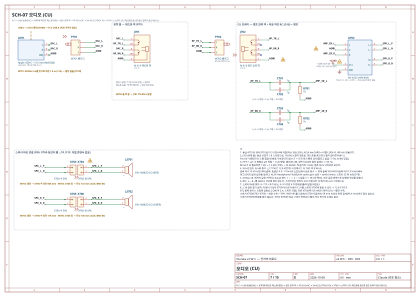</div><figcaption class="small muted">동글 → 볼 헤드폰 잭 J701(노멀) → J702 → 1 µF×2 + 1 kΩ(AGND) → HW-720(XH 3P 입력) → XT60 SPK → CW-100B25 ×2 (BTL). 앰프 전원 = +12V8을 DC 잭 다리에.</figcaption></figure><figure class="sheet csheet" id="circuit-brd-05-aud"><div class="cap"><span><b>BRD-05 · 오디오 선 만들기</b> <span class="mono">부분</span></span><span class="zbar" role="group" aria-label="확대"><button type="button" data-z="1" aria-pressed="true">맞춤</button><button type="button" data-z="2" aria-pressed="false">2배</button><button type="button" data-z="3" aria-pressed="false">3배</button><a class="mono" href="sch/BRD-05_power_audio_harness.svg" target="_blank" rel="noopener">전체 도면 (SVG) ↗</a></span></div><div class="dwimg crop"><svg viewBox="209.0 20.0 202.0 139.2" role="img" aria-label="BRD-05 오디오 선 만들기" style="aspect-ratio:202.0/139.2"><rect x="209.0" y="20.0" width="202.0" height="139.2" fill="#fff"/><image data-href="sch/BRD-05_power_audio_harness.svg" x="0" y="0" width="420" height="297" preserveAspectRatio="none"/></svg></div><figcaption class="small muted">W701·W702(BC256 반쪽), W707(J702 → 앰프 입력), W703·W705(앰프 → XT60 수 SPK), W704·W706(스피커 꼬리선).</figcaption></figure><figure class="sheet csheet" id="circuit-brd-07-j702"><div class="cap"><span><b>BRD-07 · J702 앰프 입력 기판</b> <span class="mono">부분</span></span><span class="zbar" role="group" aria-label="확대"><button type="button" data-z="1" aria-pressed="true">맞춤</button><button type="button" data-z="2" aria-pressed="false">2배</button><button type="button" data-z="3" aria-pressed="false">3배</button><a class="mono" href="sch/BRD-07_small_boards.svg" target="_blank" rel="noopener">전체 도면 (SVG) ↗</a></span></div><div class="dwimg crop"><svg viewBox="14.0 24.0 110.0 95.0" role="img" aria-label="BRD-07 J702 앰프 입력 기판" style="aspect-ratio:110.0/95.0"><rect x="14.0" y="24.0" width="110.0" height="95.0" fill="#fff"/><image data-href="sch/BRD-07_small_boards.svg" x="0" y="0" width="420" height="297" preserveAspectRatio="none"/></svg></div><figcaption class="small muted">30 × 25(12 × 10 구멍, 모델 좌표): 잭 T·R·S 다리 → 모음 패드 → 1 µF ×2 → 출력 패드 L·G·R, 1 kΩ → G. TN·RN 다리는 비움. 실선 = 주석 맨선, 점선 = 피복 가닥(두 끝만). 배선 검사: SCH-07과 일치.</figcaption></figure><figure class="sheet csheet" id="circuit-brd-07-j701"><div class="cap"><span><b>BRD-07 · J701 헤드폰 잭 (볼 포켓, 기판 없음)</b> <span class="mono">부분</span></span><span class="zbar" role="group" aria-label="확대"><button type="button" data-z="1" aria-pressed="true">맞춤</button><button type="button" data-z="2" aria-pressed="false">2배</button><button type="button" data-z="3" aria-pressed="false">3배</button><a class="mono" href="sch/BRD-07_small_boards.svg" target="_blank" rel="noopener">전체 도면 (SVG) ↗</a></span></div><div class="dwimg crop"><svg viewBox="256.0 92.0 96.0 57.2" role="img" aria-label="BRD-07 J701 헤드폰 잭 (볼 포켓, 기판 없음)" style="aspect-ratio:96.0/57.2"><rect x="256.0" y="92.0" width="96.0" height="57.2" fill="#fff"/><image data-href="sch/BRD-07_small_boards.svg" x="0" y="0" width="420" height="297" preserveAspectRatio="none"/></svg></div><figcaption class="small muted">CAD 포켓 단면: 잭을 밑에서 넣고 다리에 W701·W702를 바로 납땜.</figcaption></figure><details class="spec cbom" id="circuit-aud-bom"><summary>부품표 — 오디오 (21줄)</summary><div class="tbl"><table><thead><tr><th>부품</th><th>값</th><th>설명</th><th>전체 수량</th><th>KiCad 심볼</th><th>KiCad 풋프린트</th><th>구매 코드</th><th>구매 상태 (최종 목록)</th></tr></thead><tbody><tr><td class="num">A701</td><td>Apple USB-C → 3.5 mm (MW2Q3)</td><td>Apple USB-C → 3.5 mm 헤드폰 어댑터 MW2Q3KH/A</td><td class="num">1</td><td>Toccata:USB_Audio_Dongle (T, R, S)</td><td>보드 밖 (Exclude from board)</td><td class="num">L51</td><td>학교 지원 구매 · 쿠팡</td></tr><tr><td class="num">P701</td><td>W701 플러그</td><td>Plug_TRS</td><td class="num">1</td><td>Connector_Audio:AudioPlug3</td><td>보드 밖 (Exclude from board)</td><td class="num"></td><td>케이블 끝 플러그 (선과 함께)</td></tr><tr><td class="num">J701</td><td>PJ-313 헤드폰 잭</td><td>GEC PJ-313 3.5 mm 스테레오 잭 (5핀 T·TN·R·RN·S, 노멀 접점, PCB형)</td><td class="num">1</td><td>Connector_Audio:AudioJack3_SwitchTR (핀 번호 = T, TN, R, RN, S)</td><td>직접 만듦 Toccata:Jack_3.5mm_PJ-313 — 패드 이름을 T/TN/R/RN/S로 (통전 검사로 확인)</td><td class="num">L15</td><td>학교 지원 구매 · 디바이스마트</td></tr><tr><td class="num">P702</td><td>W702 플러그</td><td>Plug_TRS</td><td class="num">1</td><td>Connector_Audio:AudioPlug3</td><td>보드 밖 (Exclude from board)</td><td class="num"></td><td>케이블 끝 플러그 (선과 함께)</td></tr><tr><td class="num">J702</td><td>PJ-313 앰프 입력 잭</td><td>GEC PJ-313 3.5 mm 스테레오 잭 (5핀 T·TN·R·RN·S, 노멀 접점, PCB형)</td><td class="num">1</td><td>Connector_Audio:AudioJack3_SwitchTR (핀 번호 = T, TN, R, RN, S)</td><td>직접 만듦 Toccata:Jack_3.5mm_PJ-313 — 패드 이름을 T/TN/R/RN/S로 (통전 검사로 확인)</td><td class="num">L15</td><td>학교 지원 구매 · 디바이스마트</td></tr><tr><td class="num">C701</td><td>1µ</td><td>리드형 적층 세라믹 1 µF 50 V X7R (몸통 105)</td><td class="num">1</td><td>Device:C</td><td>Capacitor_THT:C_Disc_D5.0mm_W2.5mm_P5.00mm (리드 간격 실측)</td><td class="num">L56</td><td>학교 지원 구매 · 아이씨뱅큐</td></tr><tr><td class="num">C702</td><td>1µ</td><td>리드형 적층 세라믹 1 µF 50 V X7R (몸통 105)</td><td class="num">1</td><td>Device:C</td><td>Capacitor_THT:C_Disc_D5.0mm_W2.5mm_P5.00mm (리드 간격 실측)</td><td class="num">L56</td><td>학교 지원 구매 · 아이씨뱅큐</td></tr><tr><td class="num">R701</td><td>1k</td><td>탄소피막 1/4 W 5 % 1 kΩ (리드형, 갈·검·빨·금)</td><td class="num">1</td><td>Device:R</td><td>Resistor_THT:R_Axial_DIN0207_L6.3mm_D2.5mm_P7.62mm_Horizontal</td><td class="num">L29</td><td>가진 것</td></tr><tr><td class="num">C703</td><td>1µ</td><td>리드형 적층 세라믹 1 µF 50 V X7R (몸통 105)</td><td class="num">1</td><td>Device:C</td><td>Capacitor_THT:C_Disc_D5.0mm_W2.5mm_P5.00mm (리드 간격 실측)</td><td class="num">L56</td><td>학교 지원 구매 · 아이씨뱅큐</td></tr><tr><td class="num">C704</td><td>1µ</td><td>리드형 적층 세라믹 1 µF 50 V X7R (몸통 105)</td><td class="num">1</td><td>Device:C</td><td>Capacitor_THT:C_Disc_D5.0mm_W2.5mm_P5.00mm (리드 간격 실측)</td><td class="num">L56</td><td>학교 지원 구매 · 아이씨뱅큐</td></tr><tr><td class="num">R702</td><td>1k</td><td>탄소피막 1/4 W 5 % 1 kΩ (리드형, 갈·검·빨·금)</td><td class="num">1</td><td>Device:R</td><td>Resistor_THT:R_Axial_DIN0207_L6.3mm_D2.5mm_P7.62mm_Horizontal</td><td class="num">L29</td><td>가진 것</td></tr><tr><td class="num">A702</td><td>HW-720 (사용자 보유)</td><td>HW-720 앰프 보드 (XH-M312 V4 배치, TPA3118D2, 66 × 53) — 전원 DC 5.5×2.1 잭(밑에서 잭 다리에 납땜), 입력 XH 3P INR·GND·INL, 출력 5 mm 2P 나사 단자 OUTL·OUTR (BTL), 볼륨 노브(빼서 보관); 12.8 V·8 Ω에서 약 8 W/ch</td><td class="num">1</td><td>Toccata:HW-720 (XH 3P: 1 INR, 2 GND, 3 INL · DC 잭: 4 DC+ 가운데, 5 DC− 슬리브 · 단자: 6 OUTL+, 7 OUTL−, 8 OUTR+, 9 OUTR−)</td><td>보드 밖 (Exclude from board)</td><td class="num">L53</td><td>가진 것</td></tr><tr><td class="num">X703</td><td>XT60 수 SPK</td><td>AMASS XT60-M 16 AWG 10 cm (앰프 쪽 스피커 리드, 파랑 수축 + SPK)</td><td class="num">1</td><td>Connector:Conn_01x02_Pin (1 = −, 2 = +)</td><td>Connector_AMASS:AMASS_XT60-M_1x02_P7.20mm_Vertical (패드 1 = −, 실물 표시로 확인) · 보드 밖 (Exclude from board) — 앰프 쪽 스피커 리드</td><td class="num">L80</td><td>가진 것</td></tr><tr><td class="num">X704</td><td>XT60 암 SPK</td><td>AMASS XT60-F 16 AWG 10 cm (스피커 꼬리선, 파랑 수축 + SPK)</td><td class="num">1</td><td>Connector:Conn_01x02_Socket (1 = −, 2 = +)</td><td>Connector_AMASS:AMASS_XT60-F_1x02_P7.20mm_Vertical (패드 1 = −, 실물 표시로 확인) · 보드 밖 (Exclude from board) — 스피커 피그테일</td><td class="num">L81</td><td>가진 것</td></tr><tr><td class="num">LS701</td><td>CW-100B25 8 Ω (왼쪽)</td><td>삼미 CW-100B25 4인치 8 Ω 25 W</td><td class="num">1</td><td>Device:Speaker (핀 1 = +)</td><td>보드 밖 (Exclude from board)</td><td class="num">L07</td><td>학교 지원 구매 · 쿠팡</td></tr><tr><td class="num">X705</td><td>XT60 수 SPK</td><td>AMASS XT60-M 16 AWG 10 cm (앰프 쪽 스피커 리드, 파랑 수축 + SPK)</td><td class="num">1</td><td>Connector:Conn_01x02_Pin (1 = −, 2 = +)</td><td>Connector_AMASS:AMASS_XT60-M_1x02_P7.20mm_Vertical (패드 1 = −, 실물 표시로 확인) · 보드 밖 (Exclude from board) — 앰프 쪽 스피커 리드</td><td class="num">L80</td><td>가진 것</td></tr><tr><td class="num">X706</td><td>XT60 암 SPK</td><td>AMASS XT60-F 16 AWG 10 cm (스피커 꼬리선, 파랑 수축 + SPK)</td><td class="num">1</td><td>Connector:Conn_01x02_Socket (1 = −, 2 = +)</td><td>Connector_AMASS:AMASS_XT60-F_1x02_P7.20mm_Vertical (패드 1 = −, 실물 표시로 확인) · 보드 밖 (Exclude from board) — 스피커 피그테일</td><td class="num">L81</td><td>가진 것</td></tr><tr><td class="num">LS702</td><td>CW-100B25 8 Ω (오른쪽)</td><td>삼미 CW-100B25 4인치 8 Ω 25 W</td><td class="num">1</td><td>Device:Speaker (핀 1 = +)</td><td>보드 밖 (Exclude from board)</td><td class="num">L07</td><td>학교 지원 구매 · 쿠팡</td></tr><tr><td class="num">PCB-J702</td><td>30 × 25 (12 × 10 구멍)</td><td>양면 만능기판 12 × 18 cm에서 자른 6행 띠 (SB 161.6 × 15.24, EL 45.5, ER 22.0) · 자투리</td><td class="num">1</td><td>—</td><td>x505~535 × y255~280, 나사 Ø3.2 (508, 258)·(532, 277), 구멍·배선 BRD-07</td><td class="num">L22</td><td>가진 것</td></tr><tr><td class="num">X701</td><td>일자 젠더</td><td>USB-C(F) → USB-A(M) 일자 젠더 — 짧은형, 포트 밖 26.5 mm 이하 (CAD 14; 치수 미공개라 받으면 잼)</td><td class="num">1</td><td>—</td><td>보드 밖 (Exclude from board) — 동글 → Pi USB-A</td><td class="num">L52</td><td>가진 것</td></tr><tr><td class="num">W703~W706 선</td><td>16 AWG 2심</td><td>2심 전원·스피커선 16 AWG (18 AWG도 됨, 최대 약 3.4 A)</td><td class="num">1</td><td>—</td><td>보드 밖 (Exclude from board) — 선</td><td class="num">C13</td><td>가진 것</td></tr></tbody></table></div></details><h4 class="sub4">잭·단자와 넷</h4><div class="tbl"><table><thead><tr><th>부품</th><th>단자</th><th>넷</th><th>메모</th></tr></thead><tbody><tr><td>J701 (헤드폰, 왼쪽 볼)</td><td>T · TN · R · RN · S</td><td>DAC_L · HP_TN_L · DAC_R · HP_RN_R · AGND</td><td>플러그 없음: T–TN, R–RN 닫힘</td></tr><tr><td>J702 (앰프 입력)</td><td>T · R · S (TN·RN 안 씀)</td><td>HP_TN_L · HP_RN_R · AGND</td><td>T·R·S 다리 → 모음 패드(BRD-07). PJ-313 번호는 판매자마다 달라 글자로 찾음</td></tr><tr><td>J702 기판 출력</td><td>L · G · R</td><td>AMP_IN_L · AGND · AMP_IN_R</td><td>T → 1 µF ×2(나란히) → L, R → 1 µF ×2 → R, 1 kΩ 출력 → G (약 93 Hz)</td></tr><tr><td>A702 입력 (XH 3P)</td><td>1 INR · 2 GND · 3 INL</td><td>AMP_IN_R · AGND · AMP_IN_L</td><td>W707 — 오른쪽(+x) 끝. L·R 순서가 J702 패드와 반대</td></tr><tr><td>A702 출력 (나사 단자)</td><td>OUTL + · − / OUTR + · −</td><td>SPK_L_P · SPK_L_N / SPK_R_P · SPK_R_N</td><td>BTL — − 선을 GND에 묶지 않음. 둘 다 왼쪽(−x) 끝: OUTL 뒤, OUTR 앞</td></tr><tr><td>X703~X706 XT60 SPK</td><td>1 − · 2 +</td><td>SPK_x_N · SPK_x_P</td><td>파랑 수축 + SPK</td></tr></tbody></table></div><h4 class="sub4">J702 기판 구멍과 배선 (BRD-07)</h4><div class="tbl"><table><thead><tr><th>기판</th><th>부품</th><th>핀</th><th>넷</th><th>i (c)</th><th>j (r)</th><th>x</th><th>y</th><th>좌표</th></tr></thead><tbody><tr><td>J702 기판</td><td class="num">J702</td><td class="num">T</td><td class="num">HP_TN_L</td><td class="num">3</td><td class="num">3</td><td class="num">513.89</td><td class="num">263.89</td><td>모델 좌표</td></tr><tr><td>J702 기판</td><td class="num">J702</td><td class="num">R</td><td class="num">HP_RN_R</td><td class="num">8</td><td class="num">3</td><td class="num">526.59</td><td class="num">263.89</td><td>모델 좌표</td></tr><tr><td>J702 기판</td><td class="num">J702</td><td class="num">S</td><td class="num">AGND</td><td class="num">5</td><td class="num">6</td><td class="num">518.97</td><td class="num">271.51</td><td>모델 좌표</td></tr><tr><td>J702 기판</td><td class="num">C701</td><td class="num">2</td><td class="num">HP_TN_L</td><td class="num">3</td><td class="num">4</td><td class="num">513.89</td><td class="num">266.43</td><td>모델 좌표</td></tr><tr><td>J702 기판</td><td class="num">C701</td><td class="num">1</td><td class="num">AMP_IN_L</td><td class="num">3</td><td class="num">6</td><td class="num">513.89</td><td class="num">271.51</td><td>모델 좌표</td></tr><tr><td>J702 기판</td><td class="num">C702</td><td class="num">2</td><td class="num">HP_TN_L</td><td class="num">2</td><td class="num">4</td><td class="num">511.35</td><td class="num">266.43</td><td>모델 좌표</td></tr><tr><td>J702 기판</td><td class="num">C702</td><td class="num">1</td><td class="num">AMP_IN_L</td><td class="num">2</td><td class="num">6</td><td class="num">511.35</td><td class="num">271.51</td><td>모델 좌표</td></tr><tr><td>J702 기판</td><td class="num">C703</td><td class="num">2</td><td class="num">HP_RN_R</td><td class="num">8</td><td class="num">4</td><td class="num">526.59</td><td class="num">266.43</td><td>모델 좌표</td></tr><tr><td>J702 기판</td><td class="num">C703</td><td class="num">1</td><td class="num">AMP_IN_R</td><td class="num">8</td><td class="num">6</td><td class="num">526.59</td><td class="num">271.51</td><td>모델 좌표</td></tr><tr><td>J702 기판</td><td class="num">C704</td><td class="num">2</td><td class="num">HP_RN_R</td><td class="num">9</td><td class="num">4</td><td class="num">529.13</td><td class="num">266.43</td><td>모델 좌표</td></tr><tr><td>J702 기판</td><td class="num">C704</td><td class="num">1</td><td class="num">AMP_IN_R</td><td class="num">9</td><td class="num">6</td><td class="num">529.13</td><td class="num">271.51</td><td>모델 좌표</td></tr><tr><td>J702 기판</td><td class="num">R701</td><td class="num">1</td><td class="num">AMP_IN_L</td><td class="num">2</td><td class="num">8</td><td class="num">511.35</td><td class="num">276.59</td><td>모델 좌표</td></tr><tr><td>J702 기판</td><td class="num">R701</td><td class="num">2</td><td class="num">AGND</td><td class="num">5</td><td class="num">8</td><td class="num">518.97</td><td class="num">276.59</td><td>모델 좌표</td></tr><tr><td>J702 기판</td><td class="num">R702</td><td class="num">1</td><td class="num">AMP_IN_R</td><td class="num">8</td><td class="num">7</td><td class="num">526.59</td><td class="num">274.05</td><td>모델 좌표</td></tr><tr><td>J702 기판</td><td class="num">R702</td><td class="num">2</td><td class="num">AGND</td><td class="num">5</td><td class="num">7</td><td class="num">518.97</td><td class="num">274.05</td><td>모델 좌표</td></tr><tr><td>J702 기판</td><td class="num">W707</td><td class="num">L</td><td class="num">AMP_IN_L</td><td class="num">3</td><td class="num">9</td><td class="num">513.89</td><td class="num">279.13</td><td>모델 좌표</td></tr><tr><td>J702 기판</td><td class="num">W707</td><td class="num">G</td><td class="num">AGND</td><td class="num">5</td><td class="num">9</td><td class="num">518.97</td><td class="num">279.13</td><td>모델 좌표</td></tr><tr><td>J702 기판</td><td class="num">W707</td><td class="num">R</td><td class="num">AMP_IN_R</td><td class="num">8</td><td class="num">9</td><td class="num">526.59</td><td class="num">279.13</td><td>모델 좌표</td></tr></tbody></table></div><div class="tbl"><table><thead><tr><th>기판</th><th>넷</th><th>경로 (x, y)</th><th>길이 (mm)</th><th>선</th></tr></thead><tbody><tr><td>J702</td><td class="num">HP_TN_L</td><td class="num">(513.89,263.89) → (513.89,266.43) → (511.35,266.43)</td><td class="num">5.1</td><td>주석 맨선</td></tr><tr><td>J702</td><td class="num">HP_RN_R</td><td class="num">(526.59,263.89) → (526.59,266.43) → (529.13,266.43)</td><td class="num">5.1</td><td>주석 맨선</td></tr><tr><td>J702</td><td class="num">AMP_IN_L</td><td class="num">(511.35,271.51) → (513.89,271.51)</td><td class="num">2.5</td><td>주석 맨선</td></tr><tr><td>J702</td><td class="num">AMP_IN_L</td><td class="num">(511.35,271.51) → (511.35,276.59)</td><td class="num">5.1</td><td>피복 가닥</td></tr><tr><td>J702</td><td class="num">AMP_IN_L</td><td class="num">(513.89,271.51) → (513.89,279.13)</td><td class="num">7.6</td><td>피복 가닥</td></tr><tr><td>J702</td><td class="num">AMP_IN_R</td><td class="num">(526.59,271.51) → (529.13,271.51)</td><td class="num">2.5</td><td>주석 맨선</td></tr><tr><td>J702</td><td class="num">AMP_IN_R</td><td class="num">(526.59,271.51) → (526.59,274.05)</td><td class="num">2.5</td><td>주석 맨선</td></tr><tr><td>J702</td><td class="num">AMP_IN_R</td><td class="num">(526.59,274.05) → (526.59,279.13)</td><td class="num">5.1</td><td>피복 가닥</td></tr><tr><td>J702</td><td class="num">AGND</td><td class="num">(518.97,271.51) → (518.97,279.13)</td><td class="num">7.6</td><td>주석 맨선</td></tr></tbody></table></div><h4 class="sub4">선</h4><div class="tbl"><table><thead><tr><th>W</th><th>선</th><th>끝 → 끝</th><th>CAD 경로 · 길이 (mm)</th><th>자르는 길이</th><th>수축 튜브</th><th>심 · 넷</th></tr></thead><tbody><tr><td class="num">W701</td><td>Coms BC256 3 m를 반으로 자른 1.5 m (차폐 3심)</td><td>P701 → J701</td><td class="num">904.6</td><td>1.5 m 반쪽을 플러그 뒤끝(선이 몰드에서 나오는 곳)에서 1.0 m로 자름 (경로 905 + 벗김·여유 20 + 추정 여유 50) — 남는 약 0.46 m에서 W707</td><td>—</td><td>1 DAC_L (팁) · 2 DAC_R (링) · 3 AGND (슬리브)</td></tr><tr><td class="num">W702</td><td>BC256 반쪽 1.5 m</td><td>J701 → P702</td><td class="num">778.5</td><td>1.5 m 반쪽 그대로 (남는 약 0.7 m는 통로에서 묶음)</td><td>—</td><td>1 HP_TN_L (팁) · 2 HP_RN_R (링) · 3 AGND (슬리브)</td></tr><tr><td class="num">W707</td><td>W701을 자르고 남는 약 0.46 m 차폐 3심에서 420</td><td>J702 기판 → A702 XH 3P</td><td class="num">348.0</td><td>420 (W701 나머지 0.46 m에서, 경로 + 70)</td><td>—</td><td>1 AMP_IN_L · 2 AGND · 3 AMP_IN_R</td></tr><tr><td class="num">W703</td><td>16 AWG 2심 (18 AWG도 됨) + XT60-M 리드 100</td><td>A702 OUTL → X703</td><td class="num">610.4</td><td>앰프 선 535 + XT60 리드 100 그대로</td><td>파랑 + ‘SPK’</td><td>1 SPK_L_P · 2 SPK_L_N</td></tr><tr><td class="num">W705</td><td>16 AWG 2심 (18 AWG도 됨) + XT60-M 리드 100</td><td>A702 OUTR → X705</td><td class="num">206.4</td><td>앰프 선 130 + XT60 리드 100</td><td>파랑 + ‘SPK’</td><td>1 SPK_R_P · 2 SPK_R_N</td></tr><tr><td class="num">W704</td><td>XT60-F 16 AWG 리드 100 + 상자 안 짧은 선</td><td>X704 → LS701</td><td class="num">132.7</td><td>XT60 리드 100 그대로 + 짧은 선 55</td><td>파랑 + ‘SPK’</td><td>1 SPK_L_P · 2 SPK_L_N</td></tr><tr><td class="num">W706</td><td>XT60-F 리드 100 + 짧은 선</td><td>X706 → LS702</td><td class="num">129.5</td><td>XT60 리드 100 + 짧은 선 50</td><td>파랑 + ‘SPK’</td><td>1 SPK_R_P · 2 SPK_R_N</td></tr><tr><td class="num">X701</td><td>USB-C(F) → USB-A(M) 일자 젠더 (포트 밖 26.5 mm 이하)</td><td>동글 A701 → Pi 5 USB-A (RJ45 옆 2단의 아래)</td><td class="num">—</td><td>산 그대로 (자르지 않음)</td><td>—</td><td>허브를 거치지 않음 (D7). 동글은 젠더에 곧게(+x, 허브 쪽) 꽂고, 동글 선은 머리 바로 뒤에서 바닥으로 내려 젠더 밑을 지남</td></tr></tbody></table></div><ul class="flow small"><li><b class="mono">W701</b> 끝 부속 쪽 끝을 J701에 납땜, 가운데 쪽 플러그만 남긴다.</li><li><b class="mono">W701</b> 속선 색은 플러그 팁·링과 통전으로 맞춘다.</li><li><b class="mono">W701</b> 자르기 전에 실제 경로(볼 홈 → 통로 → 동글)에 대 보고, 모자라면 W707을 다른 선에서 만든다(W701이 먼저).</li><li><b class="mono">W701</b> 동글 쪽 플러그는 몰드(플러그 끝 → 선이 나오는 곳)가 30 mm 이하여야 한다(플러그 자리 y222 → 동글 소켓 앞끝, 2026-10-26 Pi 9 mm 앞으로).</li><li><b class="mono">W702</b> 헤드폰을 꽂으면 TN·RN이 떨어져 앰프 입력이 끊긴다(R15).</li><li><b class="mono">W707</b> SCH-07의 AMP_IN_L/R·AGND를 잇는 선(rev E에서 선 번호를 줌).</li><li><b class="mono">W707</b> 차폐(AGND)는 앰프 XH GND 한쪽에서만 GND와 만난다(△10).</li><li><b class="mono">W707</b> XH 핀 순서 INR · GND · INL은 보드 실크 — L·R이 J702 패드 순서와 반대이니 바꿔 꽂지 않게 표시한다.</li><li><b class="mono">W703</b> 쌍마다 꼬고 리본·EXT 선에서 30 mm 이상 떨어뜨린다(D14).</li><li><b class="mono">W703</b> 앰프 단자 자리는 사진·같은 배치(XH-M312 V4) 상품 도면으로 잡은 CAD 추정 — 가진 HW-720으로 재 보고 다르면 다시 계산한다.</li><li><b class="mono">W705</b> 좌우 같은 방향(+ = 빨강)으로 납땜해 위상을 맞춘다.</li><li><b class="mono">W705</b> 앰프 단자 자리는 사진·같은 배치(XH-M312 V4) 상품 도면으로 잡은 CAD 추정 — 가진 HW-720으로 재 보고 다르면 다시 계산한다.</li><li><b class="mono">W704</b> 리드가 옆판 구멍 Ø6을 지나야 하므로 XT60을 집게에 끼우기 전에 구멍에 꿴다. 구멍은 본드로 밀봉.</li></ul><h4 class="sub4">만드는 순서와 확인</h4><ol class="flow"><li>PJ-313 3개의 다리 글자(T·TN·R·RN·S)를 통전으로 찾는다. J701은 왼쪽 볼 포켓(기판 없음, 다리에 직접 납땜), J702는 J702 기판(BRD-07)에.</li><li>BC256 3 m를 가운데에서 잘라 두 반쪽: W701은 플러그 뒤끝(선이 몰드에서 나오는 곳)에서 1.0 m로 자르고(CAD 경로 약 905 mm → J701 T·R·S), 남는 약 0.46 m에서 W707(300)을 자른다. 자르기 전에 볼 홈 → 통로 → 동글 경로에 대 본다. W702(J701 TN·RN·S → 플러그, 경로 약 778 mm)는 1.5 m 반쪽 그대로.</li><li>J702 기판: 잭 T·R·S 다리 → 모음 패드, T 모음 → C701·C702(나란히) → 패드 L, R 모음 → C703·C704 → 패드 R, R701·R702 1 kΩ은 출력 → G(AGND 줄). TN·RN 다리는 어디에도 잇지 않는다. AGND는 앰프 XH GND에서만 GND와 만남.</li><li>W703·W705: 앰프 OUTL·OUTR 나사 단자(둘 다 왼쪽 끝, OUTL 뒤 · OUTR 앞) → XT60 수 SPK 리드와 이음, W704·W706: XT60 암 리드 → 상자 안 짧은 선 → 유닛. 모두 파랑 수축 + SPK, 좌우 같은 방향(+ = 빨강).</li><li>확인: T 모음–L 패드 열림, C703.1 ↔ R702.1 ↔ W707 R 패드 = 0 Ω, L–G = 1 kΩ, R–G = 1 kΩ, 스피커 Re 6~7 Ω, 헤드폰을 꽂으면 스피커가 꺼짐. 소프트웨어 음량 상한은 최대 출력 약 8 W/ch(입력 약 0.13 Vrms)에서 찌그러지지 않게.</li></ol><p class="small circ-top"><a href="#circuit-parts">파트 목록으로 ↑</a></p></section>
<section class="circ-part" id="circuit-ts" aria-labelledby="circuit-ts-h"><h3 id="circuit-ts-h"><span class="no">H</span>터치스크린</h3><div class="circ-what"><p>7인치 Waveshare 7-DSI-TOUCH-C가 Pi 5의 DSI 리본으로 화면과 터치를 받고, 전원 5 V(약 2.15 W)는 Pi 40핀 헤더 2·6번에서 점퍼 두 단으로 받습니다. 화면에는 다른 5 V를 넣지 않습니다.</p><span class="pill circ-qty">A605 ×1</span></div><figure class="sheet csheet" id="circuit-sch-06-ts"><div class="cap"><span><b>SCH-06 · 화면 A605 전원 · DSI</b> <span class="mono">부분</span></span><span class="zbar" role="group" aria-label="확대"><button type="button" data-z="1" aria-pressed="true">맞춤</button><button type="button" data-z="2" aria-pressed="false">2배</button><button type="button" data-z="3" aria-pressed="false">3배</button><a class="mono" href="sch/SCH-06_power.svg" target="_blank" rel="noopener">전체 도면 (SVG) ↗</a></span></div><div class="dwimg crop"><svg viewBox="9.0 178.6 402.0 74.4" role="img" aria-label="SCH-06 화면 A605 전원 · DSI" style="aspect-ratio:402.0/74.4"><rect x="9.0" y="178.6" width="402.0" height="74.4" fill="#fff"/><image data-href="sch/SCH-06_power.svg" x="0" y="0" width="420" height="297" preserveAspectRatio="none"/></svg></div><figcaption class="small muted">Pi 40핀 헤더 2·6번 → W606 F/F → W607 M/M → 동봉선 3핀 → MX1.25 → A605. DSI = W605 FFC 22핀 B형.</figcaption></figure><figure class="sheet csheet" id="circuit-brd-06-ts"><div class="cap"><span><b>BRD-06 · 화면 전원 점퍼</b> <span class="mono">부분</span></span><span class="zbar" role="group" aria-label="확대"><button type="button" data-z="1" aria-pressed="true">맞춤</button><button type="button" data-z="2" aria-pressed="false">2배</button><button type="button" data-z="3" aria-pressed="false">3배</button><a class="mono" href="sch/BRD-06_signal_harness.svg" target="_blank" rel="noopener">전체 도면 (SVG) ↗</a></span></div><div class="dwimg crop"><svg viewBox="209.0 68.7 202.0 54.9" role="img" aria-label="BRD-06 화면 전원 점퍼" style="aspect-ratio:202.0/54.9"><rect x="209.0" y="68.7" width="202.0" height="54.9" fill="#fff"/><image data-href="sch/BRD-06_signal_harness.svg" x="0" y="0" width="420" height="297" preserveAspectRatio="none"/></svg></div><figcaption class="small muted">W606·W607 점퍼(산 그대로, 제품 길이 200)와 W608 동봉선의 핀.</figcaption></figure><details class="spec cbom" id="circuit-ts-bom"><summary>부품표 — 터치스크린 (9줄)</summary><div class="tbl"><table><thead><tr><th>부품</th><th>값</th><th>설명</th><th>전체 수량</th><th>KiCad 심볼</th><th>KiCad 풋프린트</th><th>구매 코드</th><th>구매 상태 (최종 목록)</th></tr></thead><tbody><tr><td class="num">A603</td><td>Raspberry Pi 5 2GB — 40핀 헤더 유닛</td><td>Raspberry Pi 5 2GB</td><td class="num">1</td><td>Toccata:RaspberryPi5 유닛 B = 40핀 헤더 (2 = 5V, 6 = GND만 그림; 4 = 5V 안 씀)</td><td>보드 밖 (Exclude from board) — Pi 5 보드</td><td class="num">L01</td><td>가진 것</td></tr><tr><td class="num">P603</td><td>F/F 끝 → 핀 2·6</td><td>실리콘 점퍼 26 AWG 20 cm F/F 빨강 1 + 검정 1 (W606, Pi 헤더 쪽 끝)</td><td class="num">1</td><td>Connector_Generic:Conn_01x02 (1 = 빨강 5 V, 2 = 검정 GND)</td><td>보드 밖 (Exclude from board) — 점퍼 선 끝 (1핀 하우징 ×2)</td><td class="num">v4touch</td><td>가진 것</td></tr><tr><td class="num">X601</td><td>F/F 끝</td><td>W606 다른 끝 — P603과 같은 점퍼 (따로 사지 않음)</td><td class="num">1</td><td>Connector_Generic:Conn_01x02 (1 = 빨강 5 V, 2 = 검정 GND)</td><td>보드 밖 (Exclude from board) — 점퍼 선 끝 (1핀 하우징 ×2)</td><td class="num"></td><td>W606 다른 끝 (같은 점퍼)</td></tr><tr><td class="num">X602</td><td>M/M 끝</td><td>실리콘 점퍼 26 AWG 20 cm M/M 빨강 1 + 검정 1 (W607, X601에 꽂는 끝)</td><td class="num">1</td><td>Connector_Generic:Conn_01x02 (1 = 빨강 5 V, 2 = 검정 GND)</td><td>보드 밖 (Exclude from board) — 점퍼 선 끝 (1핀 ×2)</td><td class="num">v4touch</td><td>가진 것</td></tr><tr><td class="num">X603</td><td>M/M 끝</td><td>W607 다른 끝 — X602와 같은 점퍼 (따로 사지 않음)</td><td class="num">1</td><td>Connector_Generic:Conn_01x02 (1 = 빨강 5 V, 2 = 검정 GND)</td><td>보드 밖 (Exclude from board) — 점퍼 선 끝 (1핀 ×2)</td><td class="num"></td><td>W607 다른 끝 (같은 점퍼)</td></tr><tr><td class="num">X604</td><td>2.54 3핀 (동봉선)</td><td>화면 동봉 전원선 W608의 2.54 3핀 하우징 (A605에 들어 있음)</td><td class="num">1</td><td>Connector_Generic:Conn_01x03 (1 = 빨강 5 V, 2 = 빈 칸 NC, 3 = 검정 GND)</td><td>보드 밖 (Exclude from board) — 동봉 전원선 끝</td><td class="num">v4touch</td><td>A605 화면에 동봉된 전원선</td></tr><tr><td class="num">P604</td><td>MX1.25 2핀</td><td>W608 다른 끝 — MX1.25 2핀 플러그 (X604와 같은 선, 따로 사지 않음)</td><td class="num">1</td><td>Connector_Generic:Conn_01x02 (1 = 5 V, 2 = GND — 우리 번호, 빨강 = 1)</td><td>보드 밖 (Exclude from board) — 동봉 전원선 끝</td><td class="num"></td><td>W608 다른 끝 (동봉선)</td></tr><tr><td class="num">A605</td><td>Waveshare 7-DSI-TOUCH-C</td><td>Waveshare 7-DSI-TOUCH-C 7인치 DSI 정전식 터치 1024×600 IPS (약 2.15 W, 동봉: 전원선 MX1.25 2핀 → 2.54 3핀, 22핀 200 mm 리본 2)</td><td class="num">1</td><td>Toccata:Waveshare_7-DSI-TOUCH-C (1 = 5V, 2 = GND: MX1.25 2핀. DSI 22핀은 선 목록 W605)</td><td>보드 밖 (Exclude from board) — 화면 모듈</td><td class="num">v4touch</td><td>사비 구매 · AliExpress</td></tr><tr><td class="num">W605</td><td>FFC 22P 300 B형</td><td>GUOCONN 0.5*22P*300*B FFC 22핀 0.5 mm 300 mm 반대면(B형)</td><td class="num">1</td><td>—</td><td>보드 밖 (Exclude from board) — 선</td><td class="num">v4touch</td><td>가진 것</td></tr></tbody></table></div></details><h4 class="sub4">핀과 넷</h4><div class="tbl"><table><thead><tr><th>부품</th><th>핀</th><th>넷</th><th>메모</th></tr></thead><tbody><tr><td>A603 Pi 5 40핀 헤더</td><td class="num">2 (5 V) · 6 (GND)</td><td>+5V_PI · GND</td><td>4번 5 V는 안 씀</td></tr><tr><td>P603 · X601 (W606 F/F 끝)</td><td class="num">1 빨강 · 2 검정</td><td>+5V_PI · GND</td><td>헤더 핀 2·6에 꽂음</td></tr><tr><td>X602 · X603 (W607 M/M 끝)</td><td class="num">1 빨강 · 2 검정</td><td>+5V_PI · GND</td><td></td></tr><tr><td>X604 (동봉선 2.54 3핀)</td><td class="num">1 빨강 · 2 빈 칸 · 3 검정</td><td>+5V_PI · NC · GND</td><td>받으면 통전으로 확인</td></tr><tr><td>P604 → A605 (MX1.25 2핀)</td><td class="num">1 · 2</td><td>+5V_PI · GND</td><td>우리 번호 (빨강 = 1)</td></tr><tr><td>W605 DSI FFC</td><td class="num">1 ↔ 1 … 22 ↔ 22</td><td>DSI · I2C (터치)</td><td>Pi 5 CAM/DISP 1 ↔ A605, B형(반대면)</td></tr></tbody></table></div><h4 class="sub4">선</h4><div class="tbl"><table><thead><tr><th>W</th><th>선</th><th>끝 → 끝</th><th>CAD 경로 · 길이 (mm)</th><th>자르는 길이</th><th>수축 튜브</th><th>심 · 넷</th></tr></thead><tbody><tr><td class="num">W606</td><td>실리콘 점퍼 26 AWG 20 cm F/F 빨강 + 검정</td><td>P603 → X601</td><td class="num">제품 길이 200</td><td>자르지 않음</td><td>—</td><td>1 +5V_PI · 2 GND</td></tr><tr><td class="num">W607</td><td>실리콘 점퍼 26 AWG 20 cm M/M 빨강 + 검정</td><td>X602 → X603</td><td class="num">제품 길이 200</td><td>자르지 않음</td><td>—</td><td>1 +5V_PI · 2 GND</td></tr><tr><td class="num">W608</td><td>Waveshare 동봉 MX1.25 2핀 → 2.54 3핀</td><td>X604 → P604</td><td class="num">312.8</td><td>자르지 않음</td><td>—</td><td>1 +5V_PI · 2 GND</td></tr><tr><td class="num">W605</td><td>GUOCONN FFC 22핀 0.5 mm 300 mm B형 (A형은 보험)</td><td>Pi 5 CAM/DISP 1 → A605 DSI 22핀</td><td class="num">235.8 (+ 뚜껑 밑 말아 접기 9.4 = 245.2)</td><td>산 그대로 (자르지 않음)</td><td>—</td><td>22심 1 ↔ 1 · 설계 길이 247.3 (접기·꽂힘 포함, 화면 rev3 numbers.json) → 300 mm 선에서 여유 52.7</td></tr></tbody></table></div><h4 class="sub4">만드는 순서와 확인</h4><ol class="flow"><li>동봉 전원선의 2.54 3핀이 1 빨강 · 2 빈 칸 · 3 검정인지 통전으로 확인한 뒤 점퍼를 꽂는다. 꽂는 곳 3곳은 수축 튜브.</li><li>W605 FFC(B형)를 Pi 5 CAM/DISP 1과 화면 ZIF에 1 ↔ 1로. 설계 길이 247.3 mm(접기·꽂힘 포함, 300 mm 선에서 여유 52.7 mm).</li><li>config.txt에 <code>dtoverlay=vc4-kms-dsi-waveshare-panel-v2,7_0_inch_c</code> (CAM/DISP 0이면 <code>,dsi0</code>).</li><li>확인: 화면 쪽 5 V를 부하 때 잰다(점퍼 왕복 강하 약 0.05 V). 최대 부하에서 vcgencmd get_throttled = 0x0. 화면 켬·끔에서 센서 유휴 흔들림을 다시 잰다(D14).</li></ol><p class="small circ-top"><a href="#circuit-parts">파트 목록으로 ↑</a></p></section>
<section class="circ-part" id="circuit-arrive" aria-labelledby="circuit-arrive-h"><h3 id="circuit-arrive-h"><span class="no">I</span>부품이 오면 먼저 확인할 것</h3><div class="tbl"><table><thead><tr><th>항목</th><th>확인</th></tr></thead><tbody><tr><td>전지 BT601</td><td>무부하 전압 약 13.0~13.4 V (10 V 아래면 쓰지 않음). 라벨로 BMS(4S, 저전압 차단 약 10 V, 연속 5 A 이상)를 확인. 처음 다 쓸 때 꺼지기 직전 버스 전압을 적어 둔다.</td></tr><tr><td>XT60 극성·색</td><td>W601을 만든 뒤 빨강 = +인지 멀티미터로. 홀더 −x 끝에서 XT60 뒤끝까지 이은 길이가 68 mm 이하인지 자로 잰다(꼬리 36 + 리드 40 − 겹침 10 ≈ 66). 전원 XT60(팩 리드·W601·벤치 L81) = 빨강 수축, 스피커 XT60(X703~X706) = 파랑 수축 + ‘SPK’. 스피커 XT60에 전원을 꽂지 않는다.</td></tr><tr><td>ATO 퓨즈 홀더</td><td>5 A ATO(주황, 표준 칼날 — 미니 아님)가 들어가는지. 12 AWG 꼬리 두 개가 홀더 끝에서 36 mm보다 긴지(둘 다 36 mm로 잘라 R15 굽힘 뒤에서 16 AWG와 이음). 받침 2개에 꼭지가 눌러 끼워지는지(CAD 가정 꼭지 Ø8).</td></tr><tr><td>KCD1-104</td><td>켬 상태에서 0 Ω인 단자 짝 두 개(= 두 회로)를 찾는다. 짝의 한쪽끼리(입력), 다른 쪽끼리(출력)를 W602j로 묶고, 끈 상태에서 입력–출력이 열려 있는지 확인. 스위치를 10번 켜고 끄며 BMS가 끊기지 않는지(R12).</td></tr><tr><td>XL4016</td><td>무부하로 5.10~5.15 V에 맞추고 가변저항을 고정한 뒤 연결. C24 빨강 = +, 허브 플러그 중심 = + 확인.</td></tr><tr><td>PJ-313 ×3</td><td>플러그 없음: T–TN, R–RN 닫힘. 다섯 다리의 글자(T·TN·R·RN·S)를 통전으로 찾아 표시한다. 다리 간격이 2.54가 아니면 BRD-07 잭 자리(점선)에서 구부리거나 구멍을 Ø1.3으로 넓힌다.</td></tr><tr><td>RP2040-Zero ×8</td><td>LDO 표시(5핀 RT9013·ME6217)를 본다. O1 3V3 전류 60~130 mA. 부팅이 불안하면 XOSC 지연 64. USB-C가 오른쪽 모서리에서 4.67 mm인지 재 본다.</td></tr><tr><td>USB-A → C ×8</td><td>산 선을 자리별로 나눈다: NA993 1 m ×2 → W201·W202, HB466 50 cm ×6 → W203~W208. W205·W206은 CAD 0.3 m 자리라 남는 약 20 cm를 통로에서 묶는다. 데이터선인지(BOOTSEL로 RPI-RP2 드라이브가 뜨는지) 본다. C 쪽 몰드 ≤ 12.5 × 7.6 × 25 (W1 시험 19).</td></tr><tr><td>Adafruit 4876 ×2</td><td>플러그 선·소켓 선의 하우징 번호 1~6을 양쪽 끝에서 통전으로 맞춘다(선 색은 공개되지 않음). 1 = GND, 6 = 3V3로 쓴다.</td></tr><tr><td>센서</td><td>자석 없이 OUT 1.59~1.71 V, S극을 표시면에 가까이 하면 오른다. 건반을 얹은 쉼 백 ≈1.78 · 흑 ≈1.72 V, 바닥 백 ≈2.31 · 흑 ≈2.39 V (±10 %). EXT를 빼면 0.15 V 아래.</td></tr><tr><td>페달</td><td>꽂은 상태 링–슬리브 3.05 V 이상, 뺀 상태 GP26 약 0 V.</td></tr><tr><td>앰프 HW-720 (△32)</td><td>가진 보드로 구멍 간격(59 × 46 추정)·볼륨 몸통 높이를 재고, 밑면 핀이 3 mm 받침보다 길면 자른다. DC 잭 가운데 핀 = +인지 잰다(W602c를 잭 다리에 밑에서 납땜). OUTL·OUTR 단자의 + · − 실크를 확인. 보드 표기 12~28 V라 벤치 SMPS를 10~11 V로 낮춰도 소리가 나는지 본다. 이득은 미공개 → 소프트웨어 음량 상한을 최대 출력에서 찌그러지지 않게. 볼륨: 뚜껑을 열고 노브를 꽂아 낮게 시작해 맞춘 뒤 노브를 뺀다. 스피커 Re 6~7 Ω(4 Ω 판매분 주의).</td></tr><tr><td>허브 710U3</td><td>10포트 중 1개는 충전 전용, 포트마다 ON/OFF 스위치. ① 충전 전용 포트를 찾는다(표시, 또는 Zero 하나를 꽂아 장치로 안 보이는 포트). ② 그 포트가 0·1번이면 그대로, 2~9번이면 그 보드를 1번(또는 0번)으로 옮기고 아래 &#x27;허브 포트 옮김&#x27; 표로 선 길이를 본다. ③ 쓰는 8개 포트 스위치를 켠다. ④ Pi 선을 뺐을 때 Pi 5 V 핀 0 V(역급전 없음). 딸린 일자 DC 플러그를 그대로 쓴다(△31) — 잭 면에서 부트 끝까지 37 mm 이하인지 잰다(CAD 30).</td></tr><tr><td>젠더 · 동글 (△31)</td><td>X701 일자 젠더가 Pi 포트 밖으로 26.5 mm 이하인지 잰다(CAD 14). 동글을 젠더에 곧게 꽂아 머리가 허브 DC 플러그·C25 머리에 닿지 않는지 본다. W701 동글 쪽 플러그 몰드는 30 mm 이하(플러그 자리 y222 → 동글 소켓 앞끝).</td></tr><tr><td>화면</td><td>동봉선 2.54 3핀 = 1 빨강 · 2 빈 칸 · 3 검정인지 통전 뒤 점퍼 연결. 최대 부하에서 vcgencmd get_throttled = 0x0. config.txt: dtoverlay=vc4-kms-dsi-waveshare-panel-v2,7_0_inch_c.</td></tr></tbody></table></div><p class="small circ-top"><a href="#circuit-parts">파트 목록으로 ↑</a></p></section>
<section class="circ-part" id="circuit-kicad" aria-labelledby="circuit-kicad-h"><h3 id="circuit-kicad-h"><span class="no">J</span>KiCad로 옮기는 순서</h3><ol class="flow"><li><b>프로젝트를 보드별로</b>: octave-sensor(SB), octave-control(MB), end-parts(EL·ER), pedal-board(PB + J501 조각), pedal-sensor(PS), amp-input(J702 기판), 문서용 cu-wiring(전원·오디오·화면 — 모두 보드 밖). 한 PCB에 7장을 넣지 않는다.</li><li><b>라이브러리</b>: 부품표의 KiCad 심볼·풋프린트 열을 따른다. 직접 만들 것 = Toccata:CD74HC4067_Breakout, PJ-313 풋프린트(패드 이름 T/TN/R/RN/S, 다리 자리는 받은 잭으로), 모듈 심볼(XL4016, HW-720, 동글, RaspberryPi5 헤더 유닛, Waveshare 7-DSI-TOUCH-C), 전원 심볼 +12V8 · +5V1 · +5V_PI · +3V3_EL · +3V3_ER.</li><li><b>RP2040-Zero</b> = dj505/RP2040-Zero-KiCAD 심볼과 같은 라이브러리의 풋프린트를 복사해 드릴만 1.0 mm로(패드 번호 = 이 도면). 다른 라이브러리 풋프린트는 패드 번호가 다를 수 있어 쓰지 않는다. 3V3 핀은 power_out. DRV5055 = Sensor_Magnetic:DRV5055A2xLPGxQ1, Value DRV5055A2QLPG.</li><li><b>번호</b>: Annotate → First free after sheet number × 100, X 위치순 — 이 도면과 같은 번호가 나온다. R503은 KiCad에서 한 부품(Value 20R), 실물은 100 Ω 5개.</li><li><b>ERC</b>: 선으로 들어오는 전원(SB +3V3, +3V3_EL·_ER, PB의 +3V3 출력, PS의 PED_VCC, +12V8, +5V1, +5V_PI, 각 GND)에 PWR_FLAG. GND는 로컬 라벨이 아니라 전원 심볼.</li><li><b>SW601</b> = Switch:SW_DPST(1–2 회로 A, 3–4 회로 B)를 입력 1·3, 출력 2·4로 묶는다. 맞물린 커넥터(&gt;&gt;)는 KiCad에서 연결이 아니므로 양쪽 핀에 같은 넷 이름.</li><li><b>외곽·구멍</b>: 제어 기판 = BRD-01 (홈 x81.92~84.72 × y≤172.0, 금지 x81.22~85.42 × y≤173.2), 센서 기판·끝 부속 = BRD-02, 페달 보드 = BRD-03(구멍 표 pads_PB.csv), J702·J501·PS = BRD-07(pads_small.csv). 격자는 2.54, 모든 구멍 좌표가 표에 있다.</li><li><b>배선 확인</b>: KiCad 넷리스트를 netlist.csv(그린 도면에서 다시 계산한 값)와 비교한다. 만능기판 배선은 wiring_MB.csv(BRD-08) · wiring_SB.csv · wiring_PB.csv · wiring_small.csv의 경로(꺾인 점 좌표).</li></ol><p class="small circ-top"><a href="#circuit-parts">파트 목록으로 ↑</a></p></section>
<section class="circ-part" id="circuit-files" aria-labelledby="circuit-files-h"><h3 id="circuit-files-h"><span class="no">K</span>파일 받기</h3><p>KiCad로 옮길 때 쓰는 표입니다. 묶음 ZIP에는 도면 15장(SVG)과 아래 표 전부, 설명(README)이 들어 있습니다.</p><div class="circ-dl"><button type="button" class="circ-dlbtn" data-dl="fin/circuit/toccata-circuit-revE.zip.b64.txt" data-name="toccata-circuit-revE.zip" data-kind="zip" data-repo="hardware/pcb/ (schematic/ · board/ · netlist/ · README.md)">도면 + 표 묶음 ZIP 받기</button></div><div class="tbl"><table><thead><tr><th>파일</th><th>내용</th><th></th></tr></thead><tbody><tr><td class="num">bom.csv</td><td>부품표 (KiCad 심볼·풋프린트·구매 상태)</td><td><button type="button" class="circ-dlbtn small" data-dl="fin/circuit/bom.csv" data-name="toccata-bom.csv" data-kind="csv" data-repo="hardware/pcb/netlist/bom.csv">받기</button></td></tr><tr><td class="num">netlist.csv</td><td>넷리스트 (도면·보드·넷·부품·핀)</td><td><button type="button" class="circ-dlbtn small" data-dl="fin/circuit/netlist.csv" data-name="toccata-netlist.csv" data-kind="csv" data-repo="hardware/pcb/netlist/netlist.csv">받기</button></td></tr><tr><td class="num">harness.csv</td><td>선 심 하나하나 (양 끝 핀·색·자르는 길이)</td><td><button type="button" class="circ-dlbtn small" data-dl="fin/circuit/harness.csv" data-name="toccata-harness.csv" data-kind="csv" data-repo="hardware/pcb/netlist/harness.csv">받기</button></td></tr><tr><td class="num">cables.csv</td><td>선 목록 W (USB 선은 선마다 길이)</td><td><button type="button" class="circ-dlbtn small" data-dl="fin/circuit/cables.csv" data-name="toccata-cables.csv" data-kind="csv" data-repo="hardware/pcb/netlist/cables.csv">받기</button></td></tr><tr><td class="num">wiring_MB.csv</td><td>제어 기판 아랫면 배선 (꺾인 점, BRD-08)</td><td><button type="button" class="circ-dlbtn small" data-dl="fin/circuit/wiring_MB.csv" data-name="toccata-wiring_MB.csv" data-kind="csv" data-repo="hardware/pcb/netlist/wiring_MB.csv">받기</button></td></tr><tr><td class="num">wiring_SB.csv</td><td>센서 기판 OUT → J201 배선</td><td><button type="button" class="circ-dlbtn small" data-dl="fin/circuit/wiring_SB.csv" data-name="toccata-wiring_SB.csv" data-kind="csv" data-repo="hardware/pcb/netlist/wiring_SB.csv">받기</button></td></tr><tr><td class="num">wiring_PB.csv</td><td>페달 보드 아랫면 배선</td><td><button type="button" class="circ-dlbtn small" data-dl="fin/circuit/wiring_PB.csv" data-name="toccata-wiring_PB.csv" data-kind="csv" data-repo="hardware/pcb/netlist/wiring_PB.csv">받기</button></td></tr><tr><td class="num">pads_PB.csv</td><td>페달 보드 구멍 좌표</td><td><button type="button" class="circ-dlbtn small" data-dl="fin/circuit/pads_PB.csv" data-name="toccata-pads_PB.csv" data-kind="csv" data-repo="hardware/pcb/netlist/pads_PB.csv">받기</button></td></tr><tr><td class="num">wiring_small.csv</td><td>J702·PS 배선 (BRD-07)</td><td><button type="button" class="circ-dlbtn small" data-dl="fin/circuit/wiring_small.csv" data-name="toccata-wiring_small.csv" data-kind="csv" data-repo="hardware/pcb/netlist/wiring_small.csv">받기</button></td></tr><tr><td class="num">pads_small.csv</td><td>J702·J501·PS 구멍 좌표 (BRD-07)</td><td><button type="button" class="circ-dlbtn small" data-dl="fin/circuit/pads_small.csv" data-name="toccata-pads_small.csv" data-kind="csv" data-repo="hardware/pcb/netlist/pads_small.csv">받기</button></td></tr><tr><td class="num">pins_rp2040.csv</td><td>RP2040-Zero 패드 → 넷 (MB · PB)</td><td><button type="button" class="circ-dlbtn small" data-dl="fin/circuit/pins_rp2040.csv" data-name="toccata-pins_rp2040.csv" data-kind="csv" data-repo="hardware/pcb/netlist/pins_rp2040.csv">받기</button></td></tr><tr><td class="num">mux_map.csv</td><td>먹스 채널 → 건반·MIDI</td><td><button type="button" class="circ-dlbtn small" data-dl="fin/circuit/mux_map.csv" data-name="toccata-mux_map.csv" data-kind="csv" data-repo="hardware/pcb/netlist/mux_map.csv">받기</button></td></tr><tr><td class="num">id_jumpers.csv</td><td>ID 점퍼 · USB 이름 · 허브 포트</td><td><button type="button" class="circ-dlbtn small" data-dl="fin/circuit/id_jumpers.csv" data-name="toccata-id_jumpers.csv" data-kind="csv" data-repo="hardware/pcb/netlist/id_jumpers.csv">받기</button></td></tr><tr><td class="num">sb_sensors.csv</td><td>센서 자리</td><td><button type="button" class="circ-dlbtn small" data-dl="fin/circuit/sb_sensors.csv" data-name="toccata-sb_sensors.csv" data-kind="csv" data-repo="hardware/pcb/netlist/sb_sensors.csv">받기</button></td></tr><tr><td class="num">mux_module_pins.csv</td><td>4067 모듈 핀</td><td><button type="button" class="circ-dlbtn small" data-dl="fin/circuit/mux_module_pins.csv" data-name="toccata-mux_module_pins.csv" data-kind="csv" data-repo="hardware/pcb/netlist/mux_module_pins.csv">받기</button></td></tr><tr><td class="num">rp2040_zero_pads.csv</td><td>RP2040-Zero 구멍 좌표</td><td><button type="button" class="circ-dlbtn small" data-dl="fin/circuit/rp2040_zero_pads.csv" data-name="toccata-rp2040_zero_pads.csv" data-kind="csv" data-repo="hardware/pcb/netlist/rp2040_zero_pads.csv">받기</button></td></tr></tbody></table></div><p class="small muted" id="circuit-dl-status" role="status" aria-live="polite"></p><p class="small muted">저장소 위치: <span class="mono">hardware/pcb/</span> — schematic/(SCH-01~07), board/(BRD-01~08), netlist/(CSV, cad_centre.json, mb_routes.json), src/(생성기: build.py → 도면·CSV, page.py → 이 탭), README.md(규칙·변경·KiCad). 받은 파일 이름은 앞에 toccata-가 붙습니다(저장소 파일 이름은 그 뒤 부분).</p><p class="small circ-top"><a href="#circuit-parts">파트 목록으로 ↑</a></p></section>
<section class="circ-part" id="circuit-changes" aria-labelledby="circuit-changes-h"><h3 id="circuit-changes-h"><span class="no">L</span>개정과 바꾼 점</h3><div class="tbl"><table><thead><tr><th>개정</th><th>날짜</th><th>바뀐 것</th></tr></thead><tbody><tr><td class="num">A</td><td class="num">2026-09-28</td><td>첫 판: 센서·제어·끝 부속·페달·전원·오디오 회로 + 배치 2장 (△1~△12: 10 µF 추가, EXT 풀다운·직렬 1 kΩ, R503 20 Ω, 별 접지, AGND 분리 등)</td></tr><tr><td class="num">B</td><td class="num">2026-09-29</td><td>W1 r4.5 기구와 대조 (△13~△15): EL·ER 1 kΩ을 1206 칩으로, 제어 기판 고정 = 매단 보스 + 밑에서 M3×6, 제로 x75.14 (USB 가운데 = 선반 홈 가운데)</td></tr><tr><td class="num">C</td><td class="num">2026-10-01</td><td>터치스크린 Waveshare 7-DSI-TOUCH-C (△16): Pi 헤더 2·6번 → 점퍼 2단 → 동봉선, DSI FFC 22핀 B형</td></tr><tr><td class="num">D</td><td class="num">2026-10-07</td><td>전원 입력을 LiFePO4 12.8 V 전지로 (△17), 스피커 접속도 XT60 + 색 표시 (△18)</td></tr><tr><td class="num">E</td><td class="num">2026-10-08</td><td>최종 구매에 맞춤 + 기판·배선 도면 6장 추가 (△19~△26) + 2차 검토 고침 (△27~△30, 아래)</td></tr><tr><td class="num">E</td><td class="num">2026-10-26</td><td>Pi 5를 건반 쪽으로 9 mm, 동글 젠더·허브 DC 플러그를 일자로 (△31, 아래). 넷·핀은 그대로</td></tr><tr><td class="num">E</td><td class="num">2026-10-26</td><td>앰프 A702 = 가진 HW-720 (TPA3118D2) — XH-A232 대신 (△32, 아래). 넷은 그대로, A702 핀 이름만 바뀜</td></tr></tbody></table></div><h4 class="sub4">개정 E에서 바꾼 곳 (도면의 △19~△32)</h4><div class="tbl"><table><thead><tr><th>△</th><th>도면</th><th>바꾼 것</th><th>이유</th></tr></thead><tbody><tr><td class="num">19</td><td>SCH-05 · BRD-03</td><td>PB에 W502 패드 J502(1×4: T·TN·R·S). 페달 잭 J501은 뒤판 출력물 위 자기 조각에</td><td>KiCad PB 프로젝트에 선 받을 자리가 필요</td></tr><tr><td class="num">20</td><td>SCH-06 · BRD-05</td><td>SW601 = KCD1-104(DPST) 두 회로 나란히(1+3 입력, 2+4 출력, W602j). F601 = 5 A ATO, 사용자 ATC/ATO 홀더. P601 = C24 BT663</td><td>사용자 보유 부품으로 바뀜</td></tr><tr><td class="num">21</td><td>SCH-07 · BRD-05</td><td>W707(J702 기판 → 앰프 입력 L·G·R)에 번호. W701·W702 = BC256 3 m 한 가닥을 반으로, W701은 플러그 뒤끝에서 1.0 m로 자르고 남는 토막에서 W707</td><td>빠져 있던 선, 최종 구매</td></tr><tr><td class="num">22</td><td>BRD-03</td><td>페달 보드 배치를 지그 P-PED 격자에. A501은 CAD 상자보다 x −0.55 · y −1.62 (핀이 구멍에 들어가는 가장 가까운 자리)</td><td>BE163 격자</td></tr><tr><td class="num">23</td><td>BOM · BRD-01·06</td><td>MB·PB = BE163 조각, SB·EL·ER·자투리 = 12 × 18 기판, EXT = Adafruit 4876 짝, 10 µF = 삼성 CL31A106KOHNNNE, USB 선은 1 / 0.5 / 0.3 m (CAD)</td><td>최종 구매 목록 (plan C) · CAD</td></tr><tr><td class="num">24</td><td>BRD-07</td><td>작은 기판 J702·J501·PS의 구멍·배선을 2.54 격자에 그리고 SCH-05·07과 자동 대조. J702는 잭 T·R 다리 → 1 µF → 출력(TN·RN 비움). J701은 기판 없이 볼 포켓에서 다리에 직접 납땜</td><td>검토: J702 메모가 1 µF를 TN·RN에 잇게 적혀 있었음 (앰프 무음)</td></tr><tr><td class="num">25</td><td>SCH-06·07 · BRD-04·05</td><td>W601: 홀더 −x 끝 → XT60 뒤끝 전체 68 mm 이하 = 꼬리 36 + 리드 40 − 겹침 10 (잘못 꽂기 방지 여유 유지). W602c·W703·W705 +50 mm (앰프 단자는 한 가장자리)</td><td>검토: 리드만 68 mm로 자르면 왼쪽 스피커 XT60에 닿을 수 있음</td></tr><tr><td class="num">26</td><td>BRD-02 · BRD-08</td><td>SB OUT → J201 12가닥, MB 아랫면 49가닥을 격자 위 경로로(납땜 패드 위를 지나지 않음, 검사). BRD-08 = MB 아랫면 거울상</td><td>검토: 점 대 점 목록만으로는 다른 넷 패드 위를 지나는 선이 있었음</td></tr><tr><td class="num">27</td><td>BRD-02 · wiring_SB.csv</td><td>SB에 J201 전원 4가닥: J201.1·16 → 3V3 버스(y64.46), J201.2·15 → GND 버스(y67.00). 반 칸 기둥으로 OUT 줄과 GND 버스를 구멍 사이로 건넘. 확인 &#x27;J201.1/16 ↔ 센서 핀 1 = 0 Ω, J201.2/15 ↔ 핀 2 = 0 Ω&#x27;. OUT 짝수 핀 6가닥도 y70.81 줄로 와서 J201 옆에서만 뒤 리브 띠(y73.2~75.5, 틈 x59~82)에 들어가게 다시 그림</td><td>검토: 리본의 3V3·GND가 J201까지만 오고 센서 버스에 이어지지 않았음 (센서 84개 무전원). 짝수 핀 선이 받침 리브 위(y73.35)를 지나 기판이 뜰 뻔함</td></tr><tr><td class="num">28</td><td>BRD-03 · BRD-07</td><td>피복 가닥은 두 끝에서만 잇는다: PB GP26 → R501.1 → C501.1, R501.2 → R502.2 → J502.1 → TP501(맨선), J502.4(슬리브) → GND 맨선. J702 C703.1 → R702.1 → W707 R. 배선 검사가 피복 가닥을 끝에서만 잇고 넷마다 한 덩어리인지 봄</td><td>검토: 가닥 중간의 패드가 이어지지 않아 GP26에 페달 신호가 안 가고 잭 슬리브가 GND에 안 붙었음</td></tr><tr><td class="num">29</td><td>SCH-07 · BRD-04·05</td><td>W701 경로 = CAD 약 905 mm(볼 홈 → 통로 → 동글) → 플러그 뒤끝에서 1.0 m로 자름, 남는 토막에서 W707. W702 경로 약 778 mm(1.5 m 그대로)</td><td>검토: &#x27;약 0.7 m&#x27; 경로와 0.9 m 자르기는 플러그를 빼면 짧았음</td></tr><tr><td class="num">30</td><td>SCH-06 · BRD-04·05</td><td>12 AWG 홀더 꼬리 둘 다 36 mm(R15 굽힘 23.5 + 이음 자리 12) — 이음이 굽힘 뒤에. W602a 16 AWG 105 mm, W601 리드 40 mm(전체 약 66 ≤ 68), 검정 연장 195 mm</td><td>검토: 꼬리 24 + 95 − 겹침 10은 KCD1 탭에 3~6 mm 모자라고 이음이 R15 굽힘 안에 들어감</td></tr><tr><td class="num">31</td><td>SCH-06·07 · BRD-04·05 · 3D</td><td>Pi 5를 건반 쪽(−y)으로 9 mm(CAD y253~309). X701 = 일자 USB-C(F) → A(M) 젠더(포트 밖 26.5 mm 이하, IH190 ㄱ자 대신). W604 = 허브 어댑터 선의 일자 DC 플러그 그대로(잭 면 → 부트 끝 37 mm 이하, ㄱ자 DC 플러그 선 없음). CAD 경로를 다시 읽음: W603·W604·W605·W608 길이, 동글 3.5 mm 소켓 8 mm 앞으로(y252~277) → W701 동글 쪽 플러그 몰드 30 mm 이하, C25 고리 y297</td><td>사용자 2026-10-26: 일자 젠더와 일자 DC 플러그를 함께 쓰려고 Pi를 옮김 (CAD centre.pi_move_2026_10_26)</td></tr><tr><td class="num">32</td><td>SCH-01·06·07 · BRD-04·05 · 3D</td><td>A702 = 사용자 HW-720(XH-M312 V4 배치, TPA3118D2, 66 × 53, 허브 선반 x746~812 · 3 mm 받침) — XH-A232 대신. 전원 = DC 5.5×2.1 잭 다리에 W602c를 밑에서 납땜(플러그 안 삼), 입력 = 오른쪽 끝 XH 3P INR·GND·INL(W707 약 420 mm 추정), 출력 = 왼쪽 끝 나사 단자 OUTL(뒤)·OUTR(앞). W705는 x738에서 앞 줄 y274.5로(CAD 다시 읽음). 앰프 단자 50 mm 여유를 뺌(CAD가 단자 자리를 잡음). 이득 미공개 → 소프트웨어 음량 상한 유지, 볼륨 노브는 한 번 맞춘 뒤 빼 둠(꽂으면 뚜껑에 닿음)</td><td>사용자 2026-10-01·10-26: 가진 HW-720을 씀 (CAD centre.amp_2026_10_26)</td></tr></tbody></table></div><p class="small muted">△1~△18의 자세한 내용은 저장소 hardware/pcb/README.md에 있습니다. 근거: TI DRV5055 SBAS640C, TI CD74HC4067, RP2040 데이터시트(E11), Waveshare RP2040-Zero 위키·회로도, SparkFun BOB-09056, TI TPA3118D2, AMASS XT60, KiCad 9/10 라이브러리, hardware/pcb/research/.</p></section>
</section>
<section class="page" id="p-dwg" hidden>
<h2>설계도</h2>
<p class="lede">악기 전체를 여섯 방향에서 본 도면, 안을 보여 주는 내부 도면, 건반 액션 부품도, 뒷부분 도면을 한곳에 모았습니다. 모든 선과 숫자는 출력 STL을 만든 CAD 입체에서 바로 계산했습니다. 단위는 mm이고, 좌표의 기준은 x0 = A0 왼쪽 끝, y0 = 흰 건반 앞 끝, z0 = 책상입니다.</p>
<div class="note">SVG는 A2 (594 × 420) 또는 A1 (841 × 594) 크기라 100 %로 출력하면 적힌 척도가 맞습니다. CAD에 SVG를 가져올 때는 1 단위 = 1 mm로 가져온 뒤 그 도면의 척도를 곱합니다 (1:2.5면 2.5배). 부품을 그대로 뽑을 때는 도면이 아니라 03 탭의 STL 파일을 씁니다 — 도면의 숫자와 같은 입체입니다.</div>
<div class="kfs"><div class="kf"><b>12장</b><span>새 도면 E01~E07 · I01~I05</span></div><div class="kf"><b>1254 × 342.5</b><span>전체 폭 × 깊이 (mm)</span></div><div class="kf"><b>z189.23</b><span>가장 높은 곳 (화면 받침 위 끝)</span></div><div class="kf"><b>39 / 39</b><span>도면 숫자와 STL·manifest 대조 일치</span></div></div>
<h3 id="dwg-index"><span class="no">목록</span>도면 목록</h3>
<div class="tbl dwg-idx"><table><thead><tr><th>번호</th><th>이름</th><th>척도</th><th>종이</th><th>무엇을 보여 주나</th><th>바로 가기</th></tr></thead><tbody><tr class="dwg-ih"><th colspan="6">전체 6방향 · 접은 상태 (새 도면)</th></tr><tr><td class="mono">E01</td><td>정면도</td><td class="mono">1:2.5 · 확대 1:1, 1:1.5</td><td class="mono">A2</td><td>연주자 쪽에서 본 전체, 볼·헤드폰 잭, O4 건반 앞, 화면</td><td><a class="mono" href="#dwg-e01">보기</a></td></tr><tr><td class="mono">E02</td><td>배면도</td><td class="mono">1:2.5 · 확대 1:1</td><td class="mono">A2</td><td>뒤에서 본 전체, I/O 판 구멍 (KCD1 13.2 × 19.2)·환기 구멍 좌표</td><td><a class="mono" href="#dwg-e02">보기</a></td></tr><tr><td class="mono">E03</td><td>좌측면도</td><td class="mono">1:1 · 확대 2:1</td><td class="mono">A2</td><td>왼쪽 끝에서 본 옆모습, 깊이·높이·각도</td><td><a class="mono" href="#dwg-e03">보기</a></td></tr><tr><td class="mono">E04</td><td>우측면도</td><td class="mono">1:1 · 확대 2:1</td><td class="mono">A2</td><td>오른쪽 끝에서 본 옆모습</td><td><a class="mono" href="#dwg-e04">보기</a></td></tr><tr><td class="mono">E05</td><td>평면도</td><td class="mono">1:2.5 · 가운데 1:1.5</td><td class="mono">A2</td><td>위에서 본 전체, 뚜껑 배기 홈·나사 자리</td><td><a class="mono" href="#dwg-e05">보기</a></td></tr><tr><td class="mono">E06</td><td>저면도</td><td class="mono">1:2.5 · 가운데 1:1.5</td><td class="mono">A2</td><td>아래에서 본 전체, 고무발·흡기 구멍 좌표</td><td><a class="mono" href="#dwg-e06">보기</a></td></tr><tr><td class="mono">E07</td><td>화면 접은 상태</td><td class="mono">1:2.5 · 단면 1:1</td><td class="mono">A2</td><td>운반할 때 (정면·평면·x611 단면)</td><td><a class="mono" href="#dwg-e07">보기</a></td></tr><tr class="dwg-ih"><th colspan="6">내부 (새 도면)</th></tr><tr><td class="mono">I01</td><td>내부 평면도</td><td class="mono">1:1.5 · 스피커 L 1:1</td><td class="mono">A1</td><td>뚜껑·화면·스피커 윗판·앞판을 뗀 안 전체, 번호표</td><td><a class="mono" href="#dwg-i01">보기</a></td></tr><tr><td class="mono">I02</td><td>가운데 유닛 내부 상세</td><td class="mono">1:1</td><td class="mono">A1</td><td>칸 경계, 모든 모듈 좌표, 기둥 P1~P14, y290 단면</td><td><a class="mono" href="#dwg-i02">보기</a></td></tr><tr><td class="mono">I03</td><td>전체 길이 단면</td><td class="mono">1:2.5 · 확대 1:1</td><td class="mono">A1</td><td>y67 센서 줄과 y260 스피커 축으로 자른 긴 단면</td><td><a class="mono" href="#dwg-i03">보기</a></td></tr><tr><td class="mono">I04</td><td>측면 단면 (O4 D 건반)</td><td class="mono">1:1</td><td class="mono">A2</td><td>건반 액션 + 뒷바 + 가운데 유닛을 한 번에 자른 옆 단면</td><td><a class="mono" href="#dwg-i04">보기</a></td></tr><tr><td class="mono">I05</td><td>건반 모듈 내부 평면 (O4)</td><td class="mono">1:1</td><td class="mono">A2</td><td>건반·레버를 뺀 모듈 안, 모듈 부품 수량</td><td><a class="mono" href="#dwg-i05">보기</a></td></tr><tr class="dwg-ih"><th colspan="6">건반 액션 부품도 (도면 1~15, 11 없음)</th></tr><tr><td class="mono">도면 1</td><td>백건 측면 단면 (D)</td><td class="mono">도면에 적힘</td><td class="mono">-</td><td>백건 D 옆 단면 (모듈 안 x35.25), 쉬는 자세 · 누른 자세</td><td><a class="mono" href="#dwg1">보기</a></td></tr><tr><td class="mono">도면 2</td><td>흑건 측면 단면 (C#)</td><td class="mono">도면에 적힘</td><td class="mono">-</td><td>흑건 C# 옆 단면 (모듈 안 x21.22)</td><td><a class="mono" href="#dwg2">보기</a></td></tr><tr><td class="mono">도면 3</td><td>옥타브 모듈 평면도</td><td class="mono">도면에 적힘</td><td class="mono">-</td><td>C~B 모듈을 z54에서 자른 평면, 레버·핀·패드 바의 y 좌표</td><td><a class="mono" href="#dwg3">보기</a></td></tr><tr><td class="mono">도면 4</td><td>모듈 가로 단면 (레버 구역)</td><td class="mono">도면에 적힘</td><td class="mono">-</td><td>레버 구역 가로 단면 넷 (y203.25 · y176 · y157.25 등)</td><td><a class="mono" href="#dwg4">보기</a></td></tr><tr><td class="mono">도면 5</td><td>백건 부품도</td><td class="mono">도면에 적힘</td><td class="mono">-</td><td>백건 부품도 (길이 199, 가로 단면 6, 백건 7종 x 범위)</td><td><a class="mono" href="#dwg5">보기</a></td></tr><tr><td class="mono">도면 6</td><td>흑건 부품도</td><td class="mono">도면에 적힘</td><td class="mono">-</td><td>흑건 부품도 (길이 144.8, 흑건 5종 x 범위)</td><td><a class="mono" href="#dwg6">보기</a></td></tr><tr><td class="mono">도면 7</td><td>레버 캐리어 + 강철 블록 부품도</td><td class="mono">도면에 적힘</td><td class="mono">-</td><td>레버 캐리어 (백·흑 공통)와 강철 블록 9 × 19 × 40</td><td><a class="mono" href="#dwg7">보기</a></td></tr><tr><td class="mono">도면 8</td><td>프레임 부품도</td><td class="mono">도면에 적힘</td><td class="mono">-</td><td>모듈 프레임 (윗판 z72.85) 평면 · 측면 단면 5 · 가로 단면 6</td><td><a class="mono" href="#dwg8">보기</a></td></tr><tr><td class="mono">도면 9</td><td>패드 바 · 업스톱 패드 · 가림판 띠 · 비틀림 스프링</td><td class="mono">도면에 적힘</td><td class="mono">-</td><td>패드 바, 업스톱 패드, 가림판 띠, 비틀림 스프링 C-UA90R5-3-0.5</td><td><a class="mono" href="#dwg9">보기</a></td></tr><tr><td class="mono">도면 10</td><td>끝 부속 (왼쪽 A0·A#0·B0, 오른쪽 C8)</td><td class="mono">도면에 적힘</td><td class="mono">-</td><td>끝 부속 왼쪽 · 오른쪽 평면, 건반별 레버 x · 캡스턴 y 표</td><td><a class="mono" href="#dwg10">보기</a></td></tr><tr><td class="mono">도면 12</td><td>건반 하나 빼기 순서</td><td class="mono">도면에 적힘</td><td class="mono">-</td><td>백건 D 하나를 도구 없이 빼는 순서 ⓪~⑤</td><td><a class="mono" href="#dwg12">보기</a></td></tr><tr><td class="mono">도면 13</td><td>레버 봉 끝 마개</td><td class="mono">도면에 적힘</td><td class="mono">-</td><td>레버 봉 Ø4 × 161.4와 두 끝 (출력 마개 · 막힌 구멍)</td><td><a class="mono" href="#dwg13">보기</a></td></tr><tr><td class="mono">도면 14</td><td>출력 공구</td><td class="mono">도면에 적힘</td><td class="mono">-</td><td>출력 공구 넷 (벤치 지그, 높이 블록, 캡스턴 게이지, 핀 높이 게이지)</td><td><a class="mono" href="#dwg14">보기</a></td></tr><tr><td class="mono">도면 15</td><td>단계 0 시편·지그</td><td class="mono">도면에 적힘</td><td class="mono">-</td><td>단계 0 시험 키트 출력 부품 34개 (시험 18가지)</td><td><a class="mono" href="#dwg15">보기</a></td></tr><tr class="dwg-ih"><th colspan="6">뒷부분 (D01~D05)</th></tr><tr><td class="mono">D01</td><td>전체 평면 (뚜껑·화면 뗌)</td><td class="mono">1:2.5 · 1:1.5</td><td class="mono">A2</td><td>뚜껑과 화면을 뗀 평면 (1:2.5), 가운데 유닛 확대 (1:1.5), 안 물건 번호표</td><td><a class="mono" href="#rd1">보기</a></td></tr><tr><td class="mono">D02</td><td>스피커 단면</td><td class="mono">1:1 · 5:1</td><td class="mono">A2</td><td>왼쪽 스피커를 유닛 가운데 (x160.5)에서 자른 단면, 40° 앞판</td><td><a class="mono" href="#rd2">보기</a></td></tr><tr><td class="mono">D03</td><td>가운데 유닛 단면 2개</td><td class="mono">1:1</td><td class="mono">A2</td><td>가운데 유닛 옆 단면 둘 (Pi 5 · 화면 / 허브 · 앰프), 흡기·배기 넓이</td><td><a class="mono" href="#rd3">보기</a></td></tr><tr><td class="mono">D04</td><td>뒷면 입면 - I/O 판</td><td class="mono">1:2.5 · 2:1</td><td class="mono">A2</td><td>뒤에서 본 입면 (1:2.5)과 I/O 판 확대 (2:1)</td><td><a class="mono" href="#rd4">보기</a></td></tr><tr><td class="mono">D05</td><td>터치스크린 (사용 25° / 뒤꿈치 22° / 접은 상태)</td><td class="mono">1:1</td><td class="mono">A2</td><td>터치스크린 옆 단면 (사용 25° · 22° · 접은 상태), 경첩 축</td><td><a class="mono" href="#rd5">보기</a></td></tr><tr class="dwg-ih"><th colspan="6">렌더 (그림자 넣은 3D 그림)</th></tr><tr><td class="mono">R01</td><td>앞 3/4 (사용 상태)</td><td class="mono">-</td><td class="mono">-</td><td>전체 모습</td><td><a class="mono" href="#dwg-r01">보기</a></td></tr><tr><td class="mono">R02</td><td>뒤 왼쪽 3/4</td><td class="mono">-</td><td class="mono">-</td><td>전체 모습</td><td><a class="mono" href="#dwg-r02">보기</a></td></tr><tr><td class="mono">R03</td><td>앞 3/4 (화면 접음, 운반)</td><td class="mono">-</td><td class="mono">-</td><td>전체 모습</td><td><a class="mono" href="#dwg-r03">보기</a></td></tr></tbody></table></div>
<details class="spec dwg-chk" id="dwg-checks"><summary>도면 숫자 대조 39개 (39개 일치) 보기</summary><p class="small muted">도면에 적은 숫자를 지난 빌드가 쓴 stl/assembly·stl/print 파일과 manifest.json의 바깥 상자, 사양 값과 비교한 결과입니다 (허용 차 0.006 mm).</p><div class="tbl"><table><thead><tr><th>도면</th><th>숫자</th><th>도면 값</th><th>대조 값</th><th>대조 원본</th><th>결과</th></tr></thead><tbody class="dwg-chkbody"><tr><td colspan="6" class="muted">열면 불러옵니다.</td></tr></tbody></table></div></details>
<div class="dwg-chips" role="group" aria-label="도면 묶음"><button type="button" data-grp="ext" aria-pressed="true">전체 6방향 <span class="num">7</span></button><button type="button" data-grp="int" aria-pressed="false">내부 <span class="num">5</span></button><button type="button" data-grp="ka" aria-pressed="false">건반 액션 <span class="num">14</span></button><button type="button" data-grp="rear" aria-pressed="false">뒷부분 <span class="num">5</span></button><button type="button" data-grp="ren" aria-pressed="false">렌더 <span class="num">3</span></button></div>
<div class="dwg-grp" data-grp="ext" id="dwg-g-ext"><h3><span class="no">E</span>전체 6방향 (사용 상태) · 접은 상태</h3><p class="small muted">밖에서 보이는 것만 그렸습니다 (숨은 선 없음). 가려진 것은 내부 묶음에서 봅니다.</p><figure class="sheet csheet" id="dwg-e01"><div class="cap"><span><b>E01 · 정면도 (1:2.5 · 확대 1:1, 1:1.5, A2)</b></span><span class="zbar" role="group" aria-label="확대"><button type="button" data-z="1" aria-pressed="true">맞춤</button><button type="button" data-z="2">2배</button><button type="button" data-z="3">3배</button><a class="mono" href="fin/dwg/E01_front.svg" target="_blank" rel="noopener">크게 보기 (SVG) ↗</a></span><span class="dwg-sv"><button type="button" class="dwg-save" data-file="fin/dwg/E01_front.svg" data-size="341">SVG 저장</button><span class="dwg-msg small" role="status" aria-live="polite"></span></span></div><div class="dwimg">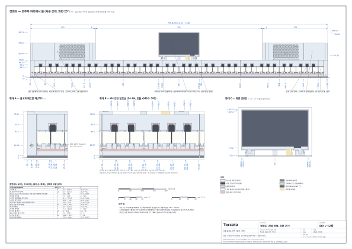</div><figcaption class="small muted">연주자 자리에서 본 사용 상태입니다 (1:2.5). 전체 폭 1254 (x−16~1238), 건반 바닥 윗면 z72.85, 스피커 윗면 z144.65, 화면 위 끝 z189.23입니다. 확대 A는 볼 L과 헤드폰 잭 J701 구멍 (5.19 × 6.28, 중심 x−8.34 z20.54), 확대 B는 O4 건반 앞모습 (흰 건반 폭 22.04, 피치 23.5, 검은 건반 머리 폭 10.4), 확대 C (1:1.5)는 화면입니다.</figcaption></figure><figure class="sheet csheet" id="dwg-e02"><div class="cap"><span><b>E02 · 배면도 (1:2.5 · 확대 1:1, A2)</b></span><span class="zbar" role="group" aria-label="확대"><button type="button" data-z="1" aria-pressed="true">맞춤</button><button type="button" data-z="2">2배</button><button type="button" data-z="3">3배</button><a class="mono" href="fin/dwg/E02_rear.svg" target="_blank" rel="noopener">크게 보기 (SVG) ↗</a></span><span class="dwg-sv"><button type="button" class="dwg-save" data-file="fin/dwg/E02_rear.svg" data-size="115">SVG 저장</button><span class="dwg-msg small" role="status" aria-live="polite"></span></span></div><div class="dwimg">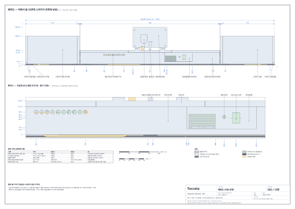</div><figcaption class="small muted">뒤에서 본 모습입니다 (1:2.5, 오른쪽 스피커가 왼쪽에 보임). 확대 C (1:1)와 표에 로커 스위치 끼움 구멍 13.2 × 19.2 (뒤판 출력물의 스위치 판 2 mm 관통, 중심 x438.5 z38.5)와 바깥 테두리 오목 자리 15.4 × 21.4 × 깊이 2, 페달 잭 Ø6.3 (x462.5 z40.5), 루버 54 × 3 × 6, 앰프 뒤 환기 구멍 Ø8 × 10 (x742~841, 간격 11)을 적었습니다.</figcaption></figure><figure class="sheet csheet" id="dwg-e03"><div class="cap"><span><b>E03 · 좌측면도 (1:1 · 확대 2:1, A2)</b></span><span class="zbar" role="group" aria-label="확대"><button type="button" data-z="1" aria-pressed="true">맞춤</button><button type="button" data-z="2">2배</button><button type="button" data-z="3">3배</button><a class="mono" href="fin/dwg/E03_left.svg" target="_blank" rel="noopener">크게 보기 (SVG) ↗</a></span><span class="dwg-sv"><button type="button" class="dwg-save" data-file="fin/dwg/E03_left.svg" data-size="48">SVG 저장</button><span class="dwg-msg small" role="status" aria-live="polite"></span></span></div><div class="dwimg">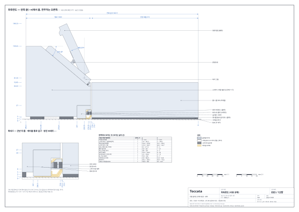</div><figcaption class="small muted">왼쪽 끝에서 본 옆모습입니다 (1:1). 전체 깊이 342.5 = 건반 모듈 212 + 공기 틈 2 + 뒷바 128.5, 스피커 앞판 40°, 화면 25° (경첩 축 y226.55 z81.35). 확대 E (2:1)는 건반 뒤 틈, 케이블 통로 입구, 방진 브래킷입니다.</figcaption></figure><figure class="sheet csheet" id="dwg-e04"><div class="cap"><span><b>E04 · 우측면도 (1:1 · 확대 2:1, A2)</b></span><span class="zbar" role="group" aria-label="확대"><button type="button" data-z="1" aria-pressed="true">맞춤</button><button type="button" data-z="2">2배</button><button type="button" data-z="3">3배</button><a class="mono" href="fin/dwg/E04_right.svg" target="_blank" rel="noopener">크게 보기 (SVG) ↗</a></span><span class="dwg-sv"><button type="button" class="dwg-save" data-file="fin/dwg/E04_right.svg" data-size="48">SVG 저장</button><span class="dwg-msg small" role="status" aria-live="polite"></span></span></div><div class="dwimg">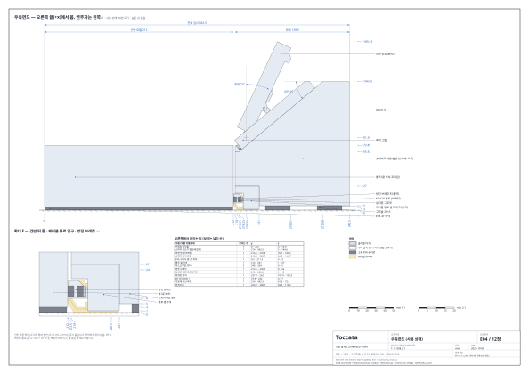</div><figcaption class="small muted">오른쪽 끝에서 본 옆모습입니다 (1:1, 연주자는 왼쪽). 숫자는 E03과 같은 기준이고, 오른쪽 볼·스피커 R 바깥 옆판·브래킷 R이 보입니다.</figcaption></figure><figure class="sheet csheet" id="dwg-e05"><div class="cap"><span><b>E05 · 평면도 (1:2.5 · 가운데 1:1.5, A2)</b></span><span class="zbar" role="group" aria-label="확대"><button type="button" data-z="1" aria-pressed="true">맞춤</button><button type="button" data-z="2">2배</button><button type="button" data-z="3">3배</button><a class="mono" href="fin/dwg/E05_top.svg" target="_blank" rel="noopener">크게 보기 (SVG) ↗</a></span><span class="dwg-sv"><button type="button" class="dwg-save" data-file="fin/dwg/E05_top.svg" data-size="252">SVG 저장</button><span class="dwg-msg small" role="status" aria-live="polite"></span></span></div><div class="dwimg">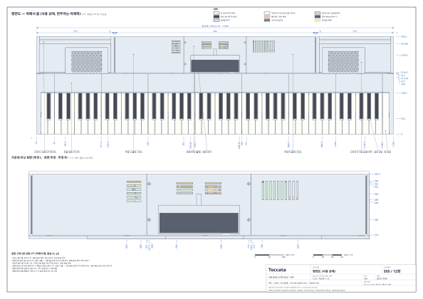</div><figcaption class="small muted">위에서 본 사용 상태입니다 (1:2.5). 아래 확대 (1:1.5)는 가운데 유닛 윗면입니다: 뚜껑 L (x260~501), 화면 뚜껑 (x501.5~720.5), 뚜껑 R (x721~962)의 배기 홈과 화면 뚜껑 나사 자리 Ø6.5 네 곳 (x506·716, y246·322).</figcaption></figure><figure class="sheet csheet" id="dwg-e06"><div class="cap"><span><b>E06 · 저면도 (1:2.5 · 가운데 1:1.5, A2)</b></span><span class="zbar" role="group" aria-label="확대"><button type="button" data-z="1" aria-pressed="true">맞춤</button><button type="button" data-z="2">2배</button><button type="button" data-z="3">3배</button><a class="mono" href="fin/dwg/E06_bottom.svg" target="_blank" rel="noopener">크게 보기 (SVG) ↗</a></span><span class="dwg-sv"><button type="button" class="dwg-save" data-file="fin/dwg/E06_bottom.svg" data-size="372">SVG 저장</button><span class="dwg-msg small" role="status" aria-live="polite"></span></span></div><div class="dwimg">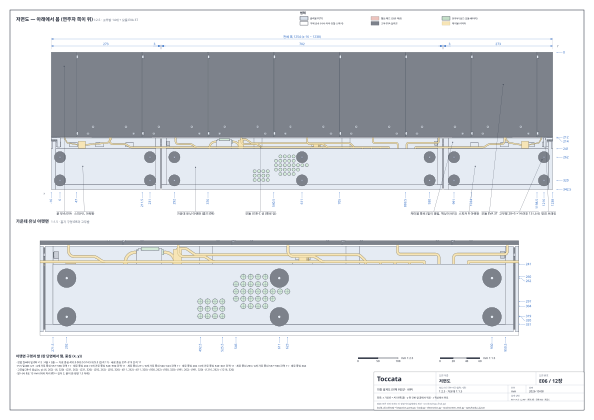</div><figcaption class="small muted">아래에서 본 모습입니다 (1:2.5, 연주자 쪽이 위). 고무발 28 × 5 14개의 중심과 가운데 유닛 아랫판 흡기 구멍 Ø8 40개 (강압 컨버터 밑 12 + Pi 5 밑 28)를 1:1.5 확대와 글에 적었습니다.</figcaption></figure><figure class="sheet csheet" id="dwg-e07"><div class="cap"><span><b>E07 · 화면 접은 상태 (1:2.5 · 단면 1:1, A2)</b></span><span class="zbar" role="group" aria-label="확대"><button type="button" data-z="1" aria-pressed="true">맞춤</button><button type="button" data-z="2">2배</button><button type="button" data-z="3">3배</button><a class="mono" href="fin/dwg/E07_folded.svg" target="_blank" rel="noopener">크게 보기 (SVG) ↗</a></span><span class="dwg-sv"><button type="button" class="dwg-save" data-file="fin/dwg/E07_folded.svg" data-size="371">SVG 저장</button><span class="dwg-msg small" role="status" aria-live="polite"></span></span></div><div class="dwimg">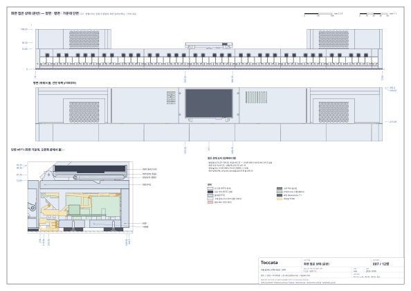</div><figcaption class="small muted">화면을 접은 운반 상태입니다 (정면·평면 1:2.5, 화면 가운데 x611 단면 1:1). 받침 위 끝은 z95.35로 스피커 윗면 z144.65보다 49.3 낮고, 받침다리는 받침 뒤 클립에 끼웁니다.</figcaption></figure></div>
<div class="dwg-grp" data-grp="int" id="dwg-g-int" hidden><h3><span class="no">I</span>내부</h3><p class="small muted">뚜껑을 뗀 평면과 단면입니다. 단면의 잘린 면은 빗금이고, 그 뒤는 보이는 그대로입니다.</p><figure class="sheet csheet" id="dwg-i01"><div class="cap"><span><b>I01 · 내부 평면도 (1:1.5 · 스피커 L 1:1, A1)</b></span><span class="zbar" role="group" aria-label="확대"><button type="button" data-z="1" aria-pressed="true">맞춤</button><button type="button" data-z="2">2배</button><button type="button" data-z="3">3배</button><a class="mono" href="fin/dwg/I01_inside_plan.svg" target="_blank" rel="noopener">크게 보기 (SVG) ↗</a></span><span class="dwg-sv"><button type="button" class="dwg-save" data-file="fin/dwg/I01_inside_plan.svg" data-size="226">SVG 저장</button><span class="dwg-msg small" role="status" aria-live="polite"></span></span></div><div class="dwimg">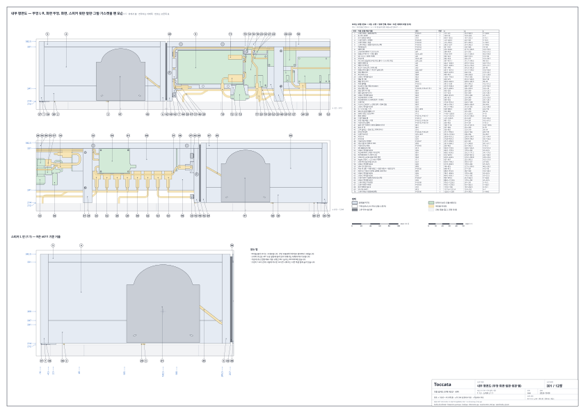</div><figcaption class="small muted">뚜껑 L·R, 화면 뚜껑, 화면, 스피커 윗판·앞판·그릴·가스켓을 뗀 평면입니다 (1:1.5, 스피커 L 안은 1:1). 번호마다 부품 이름, 코드 (06 탭 물건 번호 i····u··, 출력·합판은 03 탭 부품 도면 번호 P-), 수량, 좌표 범위를 오른쪽 표에 적었습니다.</figcaption></figure><figure class="sheet csheet" id="dwg-i02"><div class="cap"><span><b>I02 · 가운데 유닛 내부 상세 (1:1, A1)</b></span><span class="zbar" role="group" aria-label="확대"><button type="button" data-z="1" aria-pressed="true">맞춤</button><button type="button" data-z="2">2배</button><button type="button" data-z="3">3배</button><a class="mono" href="fin/dwg/I02_centre_detail.svg" target="_blank" rel="noopener">크게 보기 (SVG) ↗</a></span><span class="dwg-sv"><button type="button" class="dwg-save" data-file="fin/dwg/I02_centre_detail.svg" data-size="248">SVG 저장</button><span class="dwg-msg small" role="status" aria-live="polite"></span></span></div><div class="dwimg">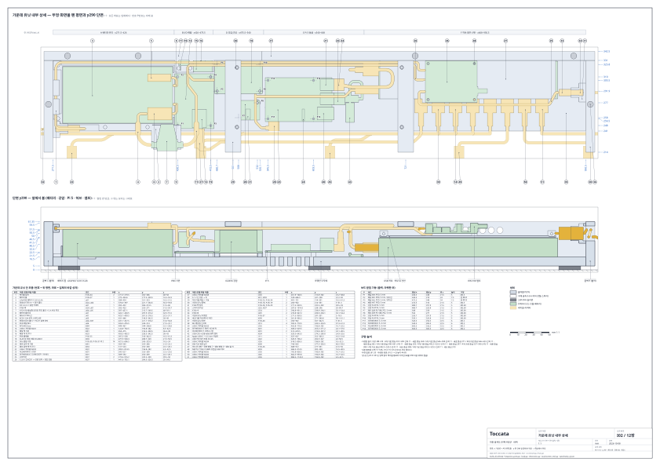</div><figcaption class="small muted">가운데 유닛 안을 1:1로 그렸습니다. 칸 A·B·D·E·F 경계, 모든 모듈의 좌표, 보드 받침 기둥 P1~P14의 중심·높이·구멍, 아랫판 흡기 구멍, y290 단면 (배터리·강압·Pi 5·허브·앰프의 높이)이 있습니다.</figcaption></figure><figure class="sheet csheet" id="dwg-i03"><div class="cap"><span><b>I03 · 전체 길이 단면 (1:2.5 · 확대 1:1, A1)</b></span><span class="zbar" role="group" aria-label="확대"><button type="button" data-z="1" aria-pressed="true">맞춤</button><button type="button" data-z="2">2배</button><button type="button" data-z="3">3배</button><a class="mono" href="fin/dwg/I03_long_sections.svg" target="_blank" rel="noopener">크게 보기 (SVG) ↗</a></span><span class="dwg-sv"><button type="button" class="dwg-save" data-file="fin/dwg/I03_long_sections.svg" data-size="553">SVG 저장</button><span class="dwg-msg small" role="status" aria-live="polite"></span></span></div><div class="dwimg">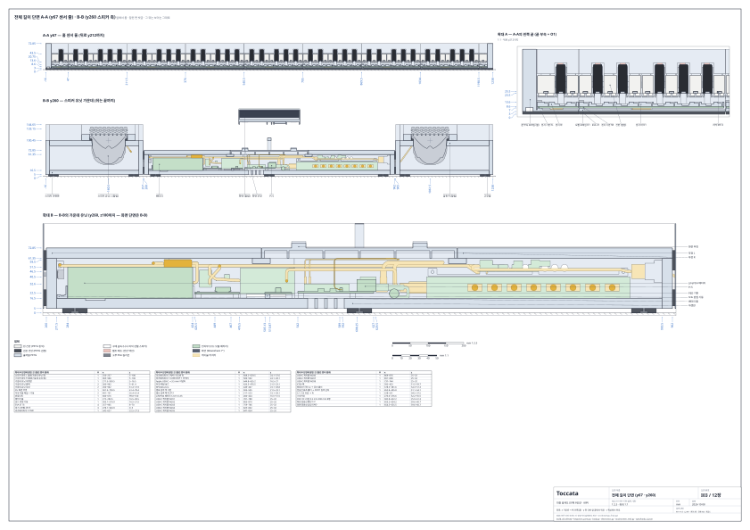</div><figcaption class="small muted">A-A (y67)는 홀 센서 줄을 따라 자른 건반 전체 단면이고 (1:2.5, 확대 A 1:1), B-B (y260)는 스피커 유닛 가운데를 지나는 단면입니다 (1:2.5, 확대 B 가운데 유닛 1:1). 잘린 면은 빗금, 그 뒤는 보이는 그대로입니다.</figcaption></figure><figure class="sheet csheet" id="dwg-i04"><div class="cap"><span><b>I04 · 측면 단면 (O4 D 건반) (1:1, A2)</b></span><span class="zbar" role="group" aria-label="확대"><button type="button" data-z="1" aria-pressed="true">맞춤</button><button type="button" data-z="2">2배</button><button type="button" data-z="3">3배</button><a class="mono" href="fin/dwg/I04_side_section.svg" target="_blank" rel="noopener">크게 보기 (SVG) ↗</a></span><span class="dwg-sv"><button type="button" class="dwg-save" data-file="fin/dwg/I04_side_section.svg" data-size="81">SVG 저장</button><span class="dwg-msg small" role="status" aria-live="polite"></span></span></div><div class="dwimg">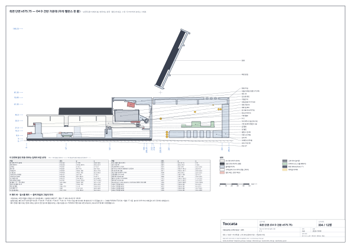</div><figcaption class="small muted">O4 D 건반 가운데 (x575.75)에서 자른 옆 단면입니다 (1:1). 건반·레버·스프링·센서·제어 기판과 화면 뚜껑·화면·Pi 5·아랫판·뒤판의 앞뒤 관계와 높이를 한 장에 보여 줍니다. 패드 바는 조립 모델(설계 6T) 크기로 그렸고, 뽑는 STL은 구매한 PORON 5T + 펠트 1T에 맞춰 쐐기가 1.0 두껍습니다 (패드 면 위치는 같음, 도면 안 ※ 주).</figcaption></figure><figure class="sheet csheet" id="dwg-i05"><div class="cap"><span><b>I05 · 건반 모듈 내부 평면 (O4) (1:1, A2)</b></span><span class="zbar" role="group" aria-label="확대"><button type="button" data-z="1" aria-pressed="true">맞춤</button><button type="button" data-z="2">2배</button><button type="button" data-z="3">3배</button><a class="mono" href="fin/dwg/I05_module_plan.svg" target="_blank" rel="noopener">크게 보기 (SVG) ↗</a></span><span class="dwg-sv"><button type="button" class="dwg-save" data-file="fin/dwg/I05_module_plan.svg" data-size="156">SVG 저장</button><span class="dwg-msg small" role="status" aria-live="polite"></span></span></div><div class="dwimg">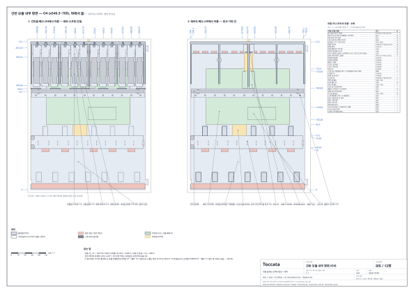</div><figcaption class="small muted">O4 모듈 (x540.5~709)을 위에서 본 내부입니다 (1:1). ①은 건반을 빼고 z54에서 자른 레버·스프링·강철, ②는 레버도 빼고 z30에서 자른 센서 바·센서 기판·제어 기판·RP2040-Zero·4067·리본·USB입니다. 오른쪽 표는 모듈 하나의 부품 수량입니다.</figcaption></figure></div>
<div class="dwg-grp" data-grp="ka" id="dwg-g-ka" hidden><h3><span class="no">KA</span>건반 액션 부품도 (W1+ r4.5)</h3><p class="small muted">좌표 모델 geometry.json에서 그린 도면입니다. 실선은 쉬는 자세, 주황 점선은 끝까지 누른 자세입니다.</p><figure class="sheet csheet" id="dwg1"><div class="cap"><span><b>도면 1 · 백건 측면 단면 (D)</b></span><span class="zbar" role="group" aria-label="확대"><button type="button" data-z="1" aria-pressed="true">맞춤</button><button type="button" data-z="2">2배</button><button type="button" data-z="3">3배</button><a class="mono" href="dwg/d01_white_D_side.svg" target="_blank" rel="noopener">크게 보기 (SVG) ↗</a></span><span class="dwg-sv"><button type="button" class="dwg-save" data-file="dwg/d01_white_D_side.svg" data-size="862">SVG 저장</button><span class="dwg-msg small" role="status" aria-live="polite"></span></span></div><div class="dwimg">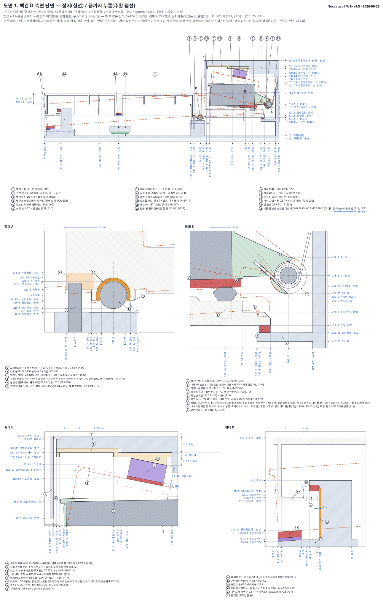</div><figcaption class="small muted">백건 D를 밸런스 핀·자석 중심 (모듈 안 x35.25)에서 자른 옆 단면입니다. 실선은 쉬는 자세, 주황 점선은 끝까지 누른 자세입니다. 확대 A~D에 봉·핀, 캡스턴·스프링, 업스톱, 앞 멈춤 치수가 있습니다.</figcaption></figure><figure class="sheet csheet" id="dwg2"><div class="cap"><span><b>도면 2 · 흑건 측면 단면 (C#)</b></span><span class="zbar" role="group" aria-label="확대"><button type="button" data-z="1" aria-pressed="true">맞춤</button><button type="button" data-z="2">2배</button><button type="button" data-z="3">3배</button><a class="mono" href="dwg/d02_black_Csharp_side.svg" target="_blank" rel="noopener">크게 보기 (SVG) ↗</a></span><span class="dwg-sv"><button type="button" class="dwg-save" data-file="dwg/d02_black_Csharp_side.svg" data-size="870">SVG 저장</button><span class="dwg-msg small" role="status" aria-live="polite"></span></span></div><div class="dwimg">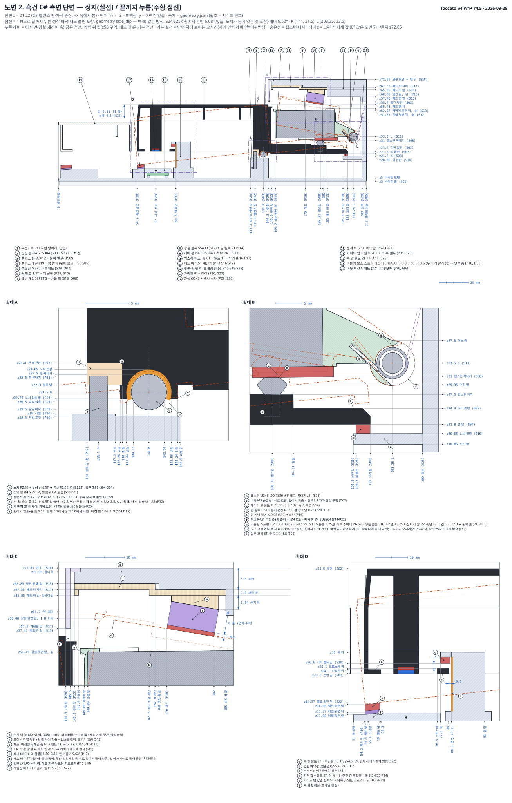</div><figcaption class="small muted">흑건 C#를 밸런스 핀·자석 중심 (모듈 안 x21.22)에서 자른 옆 단면입니다. 읽는 법은 도면 1과 같습니다.</figcaption></figure><figure class="sheet csheet" id="dwg3"><div class="cap"><span><b>도면 3 · 옥타브 모듈 평면도</b></span><span class="zbar" role="group" aria-label="확대"><button type="button" data-z="1" aria-pressed="true">맞춤</button><button type="button" data-z="2">2배</button><button type="button" data-z="3">3배</button><a class="mono" href="dwg/d03_octave_plan.svg" target="_blank" rel="noopener">크게 보기 (SVG) ↗</a></span><span class="dwg-sv"><button type="button" class="dwg-save" data-file="dwg/d03_octave_plan.svg" data-size="70">SVG 저장</button><span class="dwg-msg small" role="status" aria-live="polite"></span></span></div><div class="dwimg">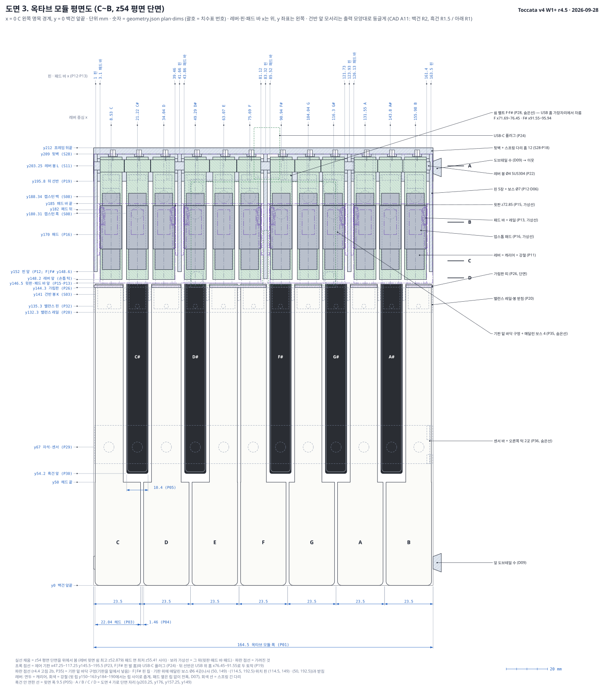</div><figcaption class="small muted">C~B 모듈을 z54에서 잘라 위에서 본 평면입니다. 레버 중심, 핀, 패드 바, 기판 자리, y 좌표가 있습니다.</figcaption></figure><figure class="sheet csheet" id="dwg4"><div class="cap"><span><b>도면 4 · 모듈 가로 단면 (레버 구역)</b></span><span class="zbar" role="group" aria-label="확대"><button type="button" data-z="1" aria-pressed="true">맞춤</button><button type="button" data-z="2">2배</button><button type="button" data-z="3">3배</button><a class="mono" href="dwg/d04_module_cross_sections.svg" target="_blank" rel="noopener">크게 보기 (SVG) ↗</a></span><span class="dwg-sv"><button type="button" class="dwg-save" data-file="dwg/d04_module_cross_sections.svg" data-size="250">SVG 저장</button><span class="dwg-msg small" role="status" aria-live="polite"></span></span></div><div class="dwimg">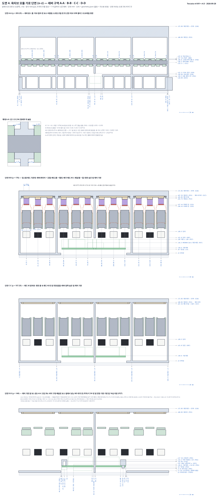</div><figcaption class="small muted">레버 구역을 가로로 자른 단면 넷입니다 (레버 봉 y203.25, 패드 가운데 y176, y157.25 등). 핀 둘레 놀음과 기판 위 부품 높이를 봅니다.</figcaption></figure><figure class="sheet csheet" id="dwg5"><div class="cap"><span><b>도면 5 · 백건 부품도</b></span><span class="zbar" role="group" aria-label="확대"><button type="button" data-z="1" aria-pressed="true">맞춤</button><button type="button" data-z="2">2배</button><button type="button" data-z="3">3배</button><a class="mono" href="dwg/d05_white_key_part.svg" target="_blank" rel="noopener">크게 보기 (SVG) ↗</a></span><span class="dwg-sv"><button type="button" class="dwg-save" data-file="dwg/d05_white_key_part.svg" data-size="138">SVG 저장</button><span class="dwg-msg small" role="status" aria-live="polite"></span></span></div><div class="dwimg">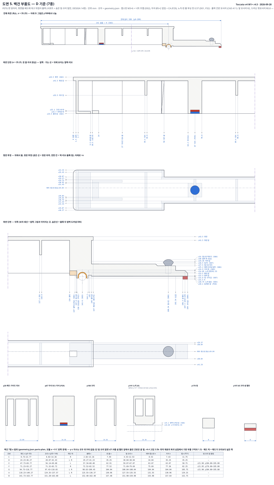</div><figcaption class="small muted">백건 (D 기준) 부품도입니다. 전체 길이 199, 측면 단면, 평면, 가로 단면 6개와 백건 7종의 x 범위 표가 있습니다.</figcaption></figure><figure class="sheet csheet" id="dwg6"><div class="cap"><span><b>도면 6 · 흑건 부품도</b></span><span class="zbar" role="group" aria-label="확대"><button type="button" data-z="1" aria-pressed="true">맞춤</button><button type="button" data-z="2">2배</button><button type="button" data-z="3">3배</button><a class="mono" href="dwg/d06_black_key_part.svg" target="_blank" rel="noopener">크게 보기 (SVG) ↗</a></span><span class="dwg-sv"><button type="button" class="dwg-save" data-file="dwg/d06_black_key_part.svg" data-size="136">SVG 저장</button><span class="dwg-msg small" role="status" aria-live="polite"></span></span></div><div class="dwimg">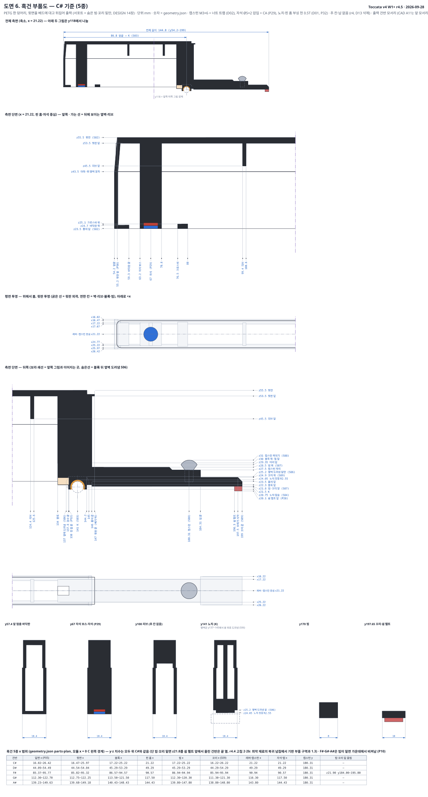</div><figcaption class="small muted">흑건 (C# 기준) 부품도입니다. 전체 길이 144.8, 가로 단면과 흑건 5종의 x 범위 표가 있습니다.</figcaption></figure><figure class="sheet csheet" id="dwg7"><div class="cap"><span><b>도면 7 · 레버 캐리어 + 강철 블록 부품도</b></span><span class="zbar" role="group" aria-label="확대"><button type="button" data-z="1" aria-pressed="true">맞춤</button><button type="button" data-z="2">2배</button><button type="button" data-z="3">3배</button><a class="mono" href="dwg/d07_lever_carrier_steel.svg" target="_blank" rel="noopener">크게 보기 (SVG) ↗</a></span><span class="dwg-sv"><button type="button" class="dwg-save" data-file="dwg/d07_lever_carrier_steel.svg" data-size="168">SVG 저장</button><span class="dwg-msg small" role="status" aria-live="polite"></span></span></div><div class="dwimg">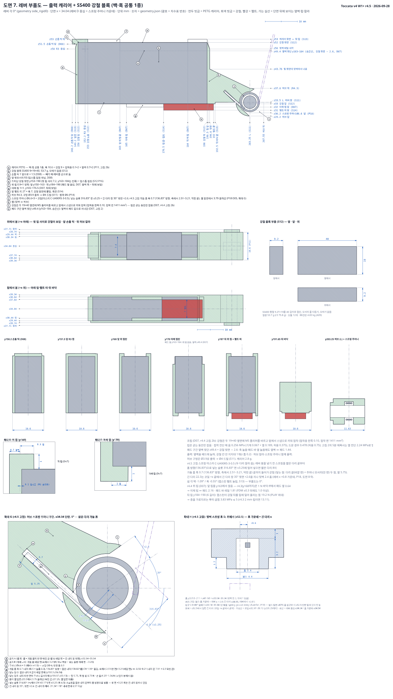</div><figcaption class="small muted">레버 (백·흑 공통 1종)와 강철 블록 9 × 19 × 40의 부품도입니다. 측면 단면, 평면, 가로 단면 7개와 확대 E·F가 있습니다.</figcaption></figure><figure class="sheet csheet" id="dwg8"><div class="cap"><span><b>도면 8 · 프레임 부품도</b></span><span class="zbar" role="group" aria-label="확대"><button type="button" data-z="1" aria-pressed="true">맞춤</button><button type="button" data-z="2">2배</button><button type="button" data-z="3">3배</button><a class="mono" href="dwg/d08_frame.svg" target="_blank" rel="noopener">크게 보기 (SVG) ↗</a></span><span class="dwg-sv"><button type="button" class="dwg-save" data-file="dwg/d08_frame.svg" data-size="332">SVG 저장</button><span class="dwg-msg small" role="status" aria-live="polite"></span></span></div><div class="dwimg">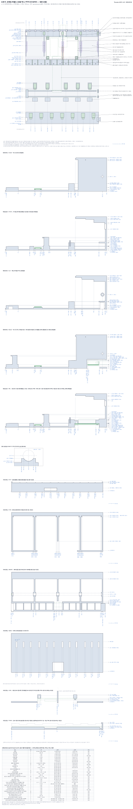</div><figcaption class="small muted">모듈 프레임 한 덩어리 (윗판 z72.85 포함)의 부품도입니다. 평면, 측면 단면 다섯, 가로 단면 여섯과 형상 표가 있습니다.</figcaption></figure><figure class="sheet csheet" id="dwg9"><div class="cap"><span><b>도면 9 · 패드 바 · 업스톱 패드 · 가림판 띠 · 비틀림 스프링</b></span><span class="zbar" role="group" aria-label="확대"><button type="button" data-z="1" aria-pressed="true">맞춤</button><button type="button" data-z="2">2배</button><button type="button" data-z="3">3배</button><a class="mono" href="dwg/d09_pad_bar_curtain_spring.svg" target="_blank" rel="noopener">크게 보기 (SVG) ↗</a></span><span class="dwg-sv"><button type="button" class="dwg-save" data-file="dwg/d09_pad_bar_curtain_spring.svg" data-size="188">SVG 저장</button><span class="dwg-msg small" role="status" aria-live="polite"></span></span></div><div class="dwimg">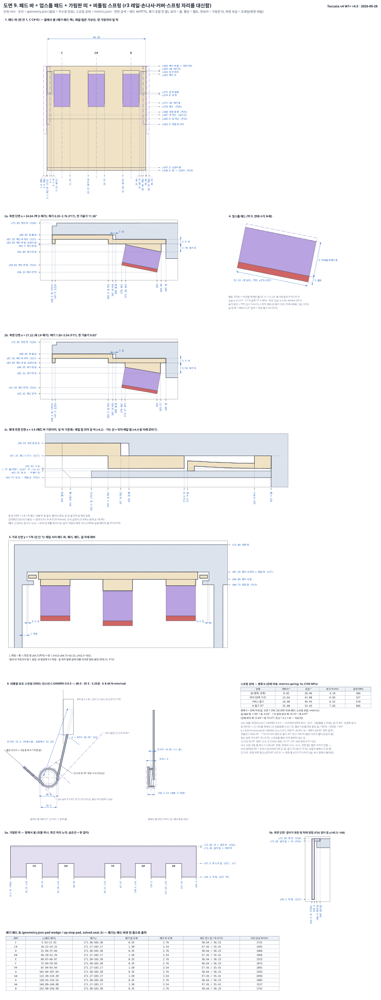</div><figcaption class="small muted">작은 부품입니다: 패드 바, 쐐기 자리, 업스톱 패드 (설계 펠트 1T + 폼 6T), 가림판 띠, 비틀림 스프링 (미스미 C-UA90R5-3-0.5, 다리를 22.3 / 8.0으로 자름). 구매한 업스톱 폼은 PORON 5T라서, 뽑는 패드 바 STL은 쐐기가 1.0 두껍습니다 (패드 면 위치는 같음, I04 주).</figcaption></figure><figure class="sheet csheet" id="dwg10"><div class="cap"><span><b>도면 10 · 끝 부속 (왼쪽 A0·A#0·B0, 오른쪽 C8)</b></span><span class="zbar" role="group" aria-label="확대"><button type="button" data-z="1" aria-pressed="true">맞춤</button><button type="button" data-z="2">2배</button><button type="button" data-z="3">3배</button><a class="mono" href="dwg/d10_end_parts.svg" target="_blank" rel="noopener">크게 보기 (SVG) ↗</a></span><span class="dwg-sv"><button type="button" class="dwg-save" data-file="dwg/d10_end_parts.svg" data-size="178">SVG 저장</button><span class="dwg-msg small" role="status" aria-live="polite"></span></span></div><div class="dwimg">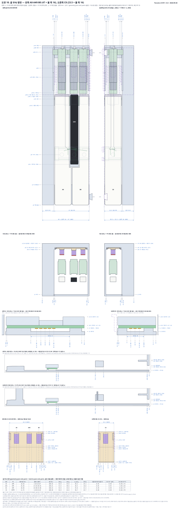</div><figcaption class="small muted">끝 부속 두 개의 평면, 패드 줄 가로 단면, 끝 패드 바, 건반별 레버 x·캡스턴 y 표입니다.</figcaption></figure><figure class="sheet csheet" id="dwg12"><div class="cap"><span><b>도면 12 · 건반 하나 빼기 순서</b></span><span class="zbar" role="group" aria-label="확대"><button type="button" data-z="1" aria-pressed="true">맞춤</button><button type="button" data-z="2">2배</button><button type="button" data-z="3">3배</button><a class="mono" href="dwg/d12_key_removal.svg" target="_blank" rel="noopener">크게 보기 (SVG) ↗</a></span><span class="dwg-sv"><button type="button" class="dwg-save" data-file="dwg/d12_key_removal.svg" data-size="1358">SVG 저장</button><span class="dwg-msg small" role="status" aria-live="polite"></span></span></div><div class="dwimg">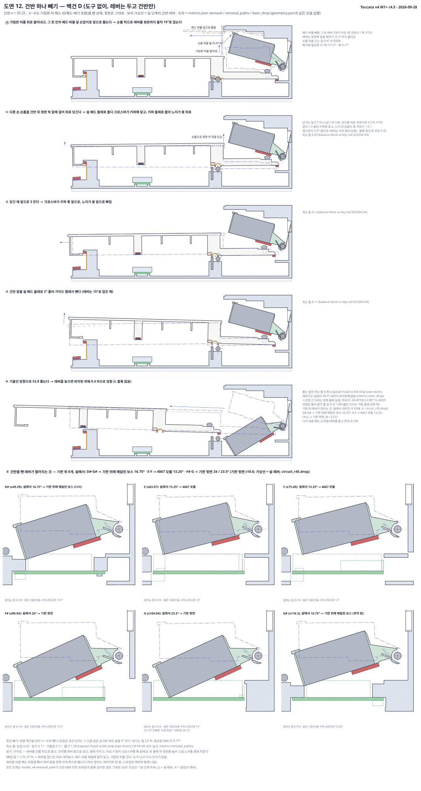</div><figcaption class="small muted">백건 D 하나를 도구 없이 빼는 단계 ⓪~⑤입니다 (가림판 띠 → 패드 바 → 레버 들기 → 건반 빼기).</figcaption></figure><figure class="sheet csheet" id="dwg13"><div class="cap"><span><b>도면 13 · 레버 봉 끝 마개</b></span><span class="zbar" role="group" aria-label="확대"><button type="button" data-z="1" aria-pressed="true">맞춤</button><button type="button" data-z="2">2배</button><button type="button" data-z="3">3배</button><a class="mono" href="dwg/d13_rod_plug_tools.svg" target="_blank" rel="noopener">크게 보기 (SVG) ↗</a></span><span class="dwg-sv"><button type="button" class="dwg-save" data-file="dwg/d13_rod_plug_tools.svg" data-size="80">SVG 저장</button><span class="dwg-msg small" role="status" aria-live="polite"></span></span></div><div class="dwimg">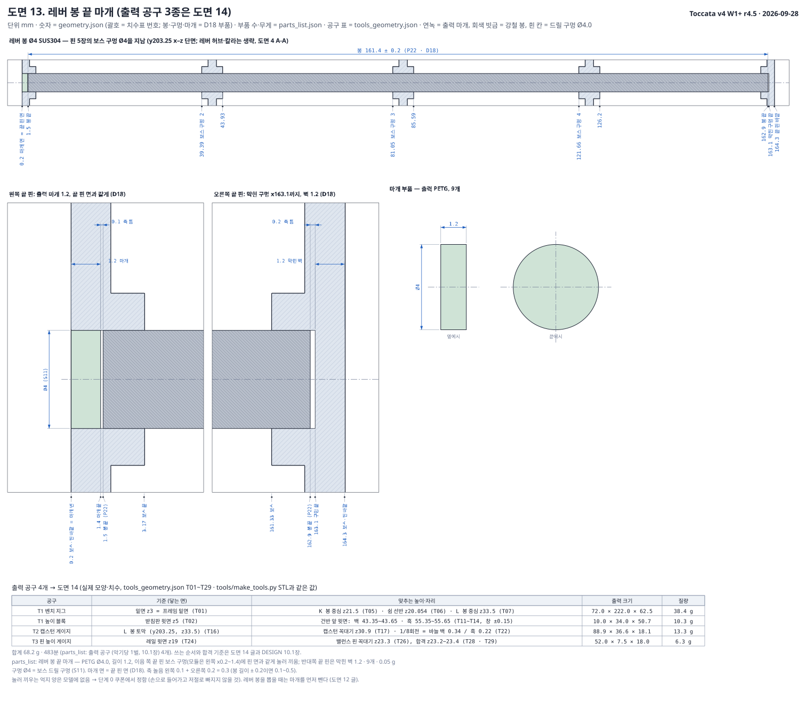</div><figcaption class="small muted">레버 봉 Ø4 (길이 161.4)가 핀 다섯 장을 지나는 단면과 두 끝 (왼쪽 출력 마개, 오른쪽 막힌 구멍)입니다.</figcaption></figure><figure class="sheet csheet" id="dwg14"><div class="cap"><span><b>도면 14 · 출력 공구</b></span><span class="zbar" role="group" aria-label="확대"><button type="button" data-z="1" aria-pressed="true">맞춤</button><button type="button" data-z="2">2배</button><button type="button" data-z="3">3배</button><a class="mono" href="dwg/d14_printed_tools.svg" target="_blank" rel="noopener">크게 보기 (SVG) ↗</a></span><span class="dwg-sv"><button type="button" class="dwg-save" data-file="dwg/d14_printed_tools.svg" data-size="260">SVG 저장</button><span class="dwg-msg small" role="status" aria-live="polite"></span></span></div><div class="dwimg">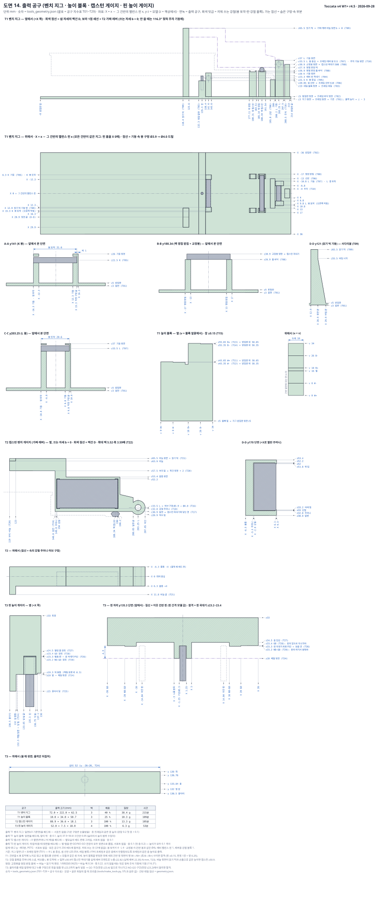</div><figcaption class="small muted">출력 공구 넷 (벤치 지그 + 높이 블록, 캡스턴 벤치 게이지, 밸런스 핀 높이 게이지)의 실제 치수입니다.</figcaption></figure><figure class="sheet csheet" id="dwg15"><div class="cap"><span><b>도면 15 · 단계 0 시편·지그</b></span><span class="zbar" role="group" aria-label="확대"><button type="button" data-z="1" aria-pressed="true">맞춤</button><button type="button" data-z="2">2배</button><button type="button" data-z="3">3배</button><a class="mono" href="dwg/d15_stage0_coupons.svg" target="_blank" rel="noopener">크게 보기 (SVG) ↗</a></span><span class="dwg-sv"><button type="button" class="dwg-save" data-file="dwg/d15_stage0_coupons.svg" data-size="3686">SVG 저장</button><span class="dwg-msg small" role="status" aria-live="polite"></span></span></div><div class="dwimg"></div><figcaption class="small muted">단계 0 시험 키트의 출력 부품 34개 (시험 18가지)를 다섯 묶음으로 나눈 부품도입니다.</figcaption></figure></div>
<div class="dwg-grp" data-grp="rear" id="dwg-g-rear" hidden><h3><span class="no">D</span>뒷부분 (L2 · 스피커 앞판 40° · 터치스크린 3판)</h3><p class="small muted">맞춤·2배는 PNG, 3배는 SVG를 보여 줍니다 (선명함).</p><figure class="sheet csheet dwg-pz" id="rd1"><div class="cap"><span><b>D01 · 전체 평면 (뚜껑·화면 뗌) (1:2.5 · 1:1.5)</b></span><span class="zbar" role="group" aria-label="확대"><button type="button" data-z="1" aria-pressed="true">맞춤</button><button type="button" data-z="2">2배</button><button type="button" data-z="3">3배</button><a class="mono" href="rear/D01_plan.svg" target="_blank" rel="noopener">크게 보기 (SVG) ↗</a> · <a class="mono" href="rear/D01_plan.png" target="_blank" rel="noopener">PNG ↗</a></span><span class="dwg-sv"><button type="button" class="dwg-save" data-file="rear/D01_plan.svg" data-size="402">SVG 저장</button><span class="dwg-msg small" role="status" aria-live="polite"></span></span></div><div class="dwimg">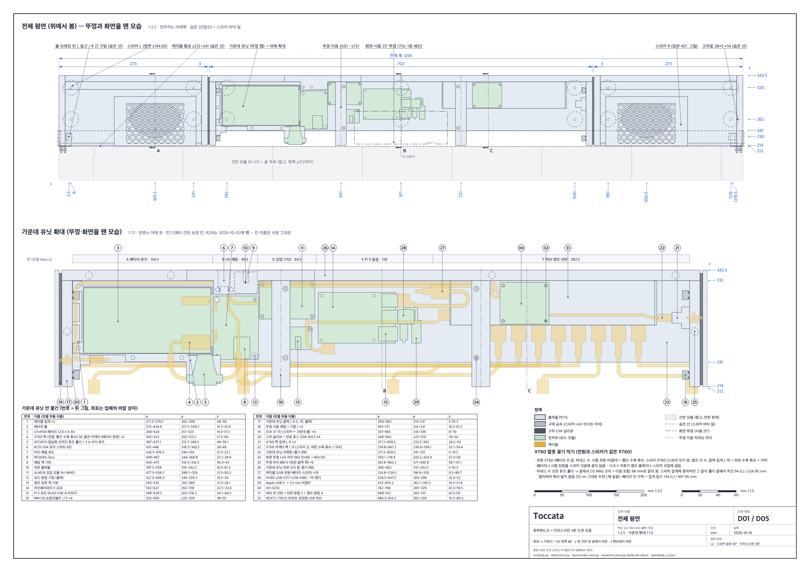</div><figcaption class="small muted">뚜껑과 화면을 뗀 평면 (1:2.5)과 가운데 유닛 확대 (1:1.5), 안 물건 번호표입니다. 점선은 스피커·바닥 밑에 숨은 케이블 통로, 고무발, 볼 핀입니다.</figcaption></figure><figure class="sheet csheet dwg-pz" id="rd2"><div class="cap"><span><b>D02 · 스피커 단면 (1:1 · 5:1)</b></span><span class="zbar" role="group" aria-label="확대"><button type="button" data-z="1" aria-pressed="true">맞춤</button><button type="button" data-z="2">2배</button><button type="button" data-z="3">3배</button><a class="mono" href="rear/D02_speaker_section.svg" target="_blank" rel="noopener">크게 보기 (SVG) ↗</a> · <a class="mono" href="rear/D02_speaker_section.png" target="_blank" rel="noopener">PNG ↗</a></span><span class="dwg-sv"><button type="button" class="dwg-save" data-file="rear/D02_speaker_section.svg" data-size="47">SVG 저장</button><span class="dwg-msg small" role="status" aria-live="polite"></span></span></div><div class="dwimg">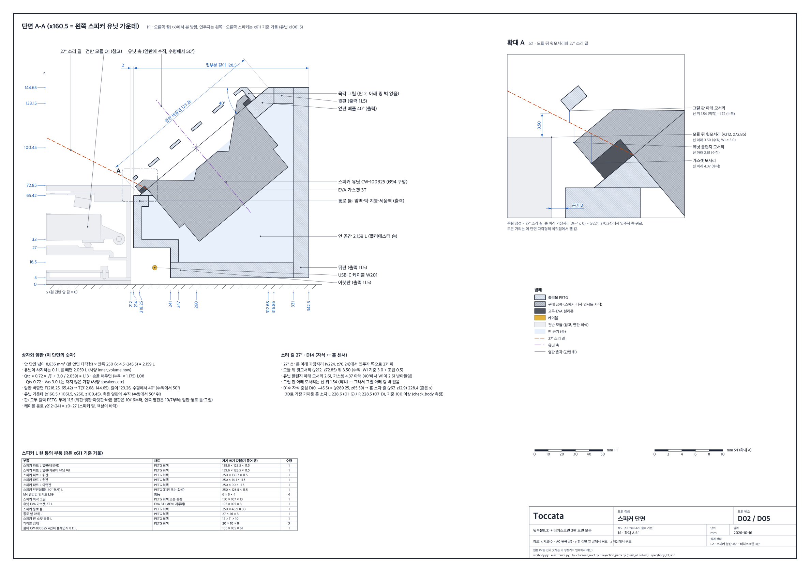</div><figcaption class="small muted">왼쪽 스피커를 유닛 가운데 (x160.5)에서 자른 단면입니다 (1:1). 40° 앞판, 판, 유닛, 그릴, 케이블 통로, 안 부피, 27° 소리 길 여유 (확대 A 5:1)가 있습니다.</figcaption></figure><figure class="sheet csheet dwg-pz" id="rd3"><div class="cap"><span><b>D03 · 가운데 유닛 단면 2개 (1:1)</b></span><span class="zbar" role="group" aria-label="확대"><button type="button" data-z="1" aria-pressed="true">맞춤</button><button type="button" data-z="2">2배</button><button type="button" data-z="3">3배</button><a class="mono" href="rear/D03_centre_sections.svg" target="_blank" rel="noopener">크게 보기 (SVG) ↗</a> · <a class="mono" href="rear/D03_centre_sections.png" target="_blank" rel="noopener">PNG ↗</a></span><span class="dwg-sv"><button type="button" class="dwg-save" data-file="rear/D03_centre_sections.svg" data-size="151">SVG 저장</button><span class="dwg-msg small" role="status" aria-live="polite"></span></span></div><div class="dwimg">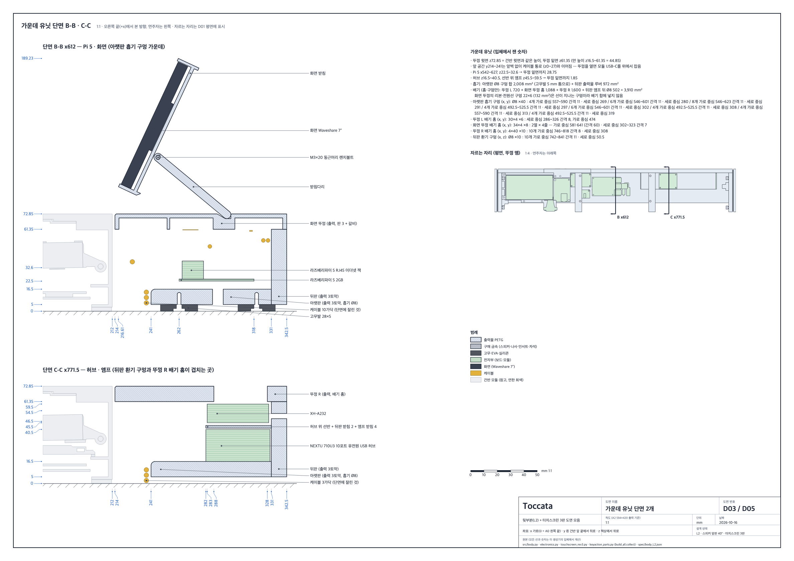</div><figcaption class="small muted">가운데 유닛을 두 곳에서 자른 옆 단면입니다 (1:1). B-B는 Pi 5와 화면, C-C는 허브와 앰프를 지나고, 흡기·배기 홈 넓이를 적었습니다.</figcaption></figure><figure class="sheet csheet dwg-pz" id="rd4"><div class="cap"><span><b>D04 · 뒷면 입면 - I/O 판 (1:2.5 · 2:1)</b></span><span class="zbar" role="group" aria-label="확대"><button type="button" data-z="1" aria-pressed="true">맞춤</button><button type="button" data-z="2">2배</button><button type="button" data-z="3">3배</button><a class="mono" href="rear/D04_rear_elevation.svg" target="_blank" rel="noopener">크게 보기 (SVG) ↗</a> · <a class="mono" href="rear/D04_rear_elevation.png" target="_blank" rel="noopener">PNG ↗</a></span><span class="dwg-sv"><button type="button" class="dwg-save" data-file="rear/D04_rear_elevation.svg" data-size="151">SVG 저장</button><span class="dwg-msg small" role="status" aria-live="polite"></span></span></div><div class="dwimg">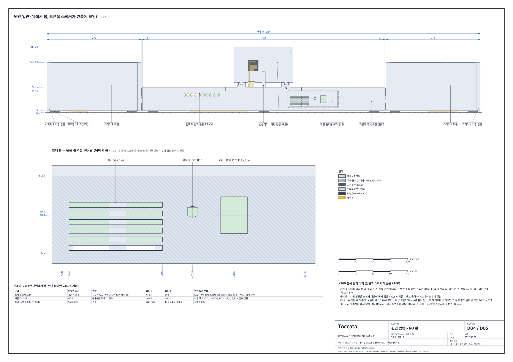</div><figcaption class="small muted">뒤에서 본 입면 (1:2.5)과 I/O 판 확대 (2:1)입니다. 로커 스위치, 페달 잭, 루버의 크기와 중심, XT60 잘못 꽂기 막기 메모가 있습니다.</figcaption></figure><figure class="sheet csheet dwg-pz" id="rd5"><div class="cap"><span><b>D05 · 터치스크린 (사용 25° / 뒤꿈치 22° / 접은 상태) (1:1)</b></span><span class="zbar" role="group" aria-label="확대"><button type="button" data-z="1" aria-pressed="true">맞춤</button><button type="button" data-z="2">2배</button><button type="button" data-z="3">3배</button><a class="mono" href="rear/D05_touchscreen.svg" target="_blank" rel="noopener">크게 보기 (SVG) ↗</a> · <a class="mono" href="rear/D05_touchscreen.png" target="_blank" rel="noopener">PNG ↗</a></span><span class="dwg-sv"><button type="button" class="dwg-save" data-file="rear/D05_touchscreen.svg" data-size="47">SVG 저장</button><span class="dwg-msg small" role="status" aria-live="polite"></span></span></div><div class="dwimg">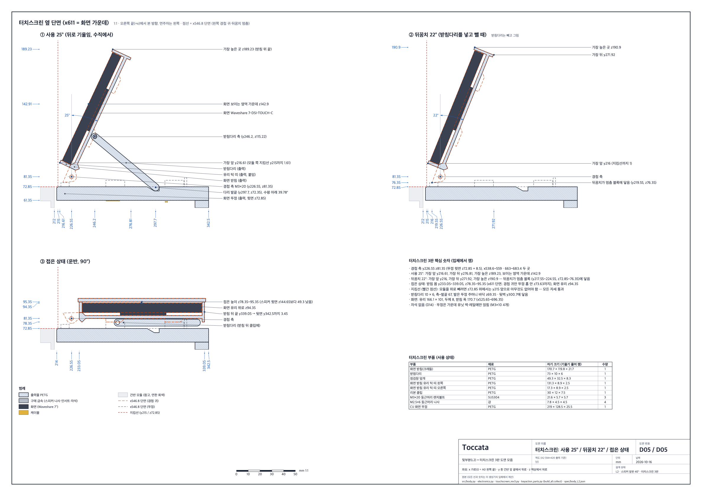</div><figcaption class="small muted">터치스크린 옆 단면입니다 (1:1). 경첩 축, 가장 앞·가장 높은 점, 접은 높이, 모듈 쪽 지킴선이 있습니다.</figcaption></figure></div>
<div class="dwg-grp" data-grp="ren" id="dwg-g-ren" hidden><h3><span class="no">R</span>렌더</h3><p class="small muted">같은 CAD 입체를 조립 색으로 칠한 그림입니다. 치수는 위 도면에서 읽습니다.</p><div class="dwg-rgrid"><figure class="sheet dwg-ren" id="dwg-r01"><div class="cap"><span><b>R01 · 앞 3/4 (사용 상태)</b></span><a class="mono" href="rear/R01_front.png" target="_blank" rel="noopener">크게 보기 ↗</a></div><div class="dwimg"></div></figure><figure class="sheet dwg-ren" id="dwg-r02"><div class="cap"><span><b>R02 · 뒤 왼쪽 3/4</b></span><a class="mono" href="rear/R02_rear_left.png" target="_blank" rel="noopener">크게 보기 ↗</a></div><div class="dwimg"></div></figure><figure class="sheet dwg-ren" id="dwg-r03"><div class="cap"><span><b>R03 · 앞 3/4 (화면 접음, 운반)</b></span><a class="mono" href="rear/R03_folded.png" target="_blank" rel="noopener">크게 보기 ↗</a></div><div class="dwimg"></div></figure></div></div>
</section>
<section class="page" id="p-partdwg" hidden>
<h2>부품 도면·출력 파일</h2>
<p class="lede">출력하는 파일마다, 그리고 합판 조각마다 치수 도면을 한 장씩 만들었습니다. 모든 선과 숫자는 출력 파일(STL)과 CAD 입체에서 직접 쟀습니다. 카드의 <b>파일 받기</b>를 누르면 STL·DXF·SVG·구멍표·좌표표가 든 zip 하나를 받습니다. DXF는 1:1(mm)이라 CAD에 바로 불러올 수 있습니다.</p>
<div class="kfs">
<div class="kf"><b>123장</b><span>도면 (출력 파일 123 + 합판 조각 0)</span></div>
<div class="kf"><b>96파일 · 493개</b><span>악기에 들어가는 출력물 (01~05, 07)</span></div>
<div class="kf"><b>12.29 kg</b><span>악기 출력물 PETG 합계 (속 100 % 계산값)</span></div>
<div class="kf"><b>6파일</b><span>공구·지그 (06 · 08 · 09), 지그 출력 약 48분 · 27 g 추정</span></div>
<div class="kf"><b>0조각</b><span>합판 (오꾸메 11.5T 400 × 1200 한 장)</span></div>
<div class="kf"><b>21파일</b><span>선택·대안·예비 (stl/print_extra)</span></div>
</div>
<div class="note"><b>읽는 법.</b> 3각법입니다: 평면도(위에서) 아래에 정면도(앞에서), 그 오른쪽에 우측면도(오른쪽에서)가 있습니다. 보이는 선은 실선, 숨은 선은 점선입니다. 파란 숫자는 <b>부품 기준 좌표</b>로, 원점은 도면 자세에서 가장 작은 모서리(0, 0, 0)입니다. 도면 자세는 악기 안에 놓인 자세입니다(기울어 붙는 부품은 기울기를 빼고 그리고 각도를 적음). 구멍표의 <b>월드 좌표</b>는 악기 전체 좌표 (x 가로, 0 = A0 왼쪽 끝 · y 흰 건반 앞 끝에서 뒤로 · z 책상에서 위로)입니다. 출력할 때 베드에 놓는 자세는 각 도면 오른쪽 위 그림에 있습니다. 같은 축 위에 겹친 구멍(계단 구멍, 원뿔+구멍)은 꼬리표 하나에 함께 적습니다(예: H1/H3). 시트에 자리가 모자라 뺀 모서리 좌표는 개수를 시트 메모에 적었고, zip의 <b>좌표 CSV</b>와 DXF 레이어 <b>DIM_MORE</b>에 전부 있습니다. DXF의 숨은 선은 HIDDEN 점선 레이어입니다.</div>
<div class="card partdwg-all"><div><b>한 번에 받기</b><p class="small muted">출력할 파일 전부(stl/print, 102개)와 도면 DXF 전부(123개)입니다.</p></div>
<div class="partdwg-allbtns">
<button type="button" class="partdwg-btn" data-act="dl" data-zip="fin/parts/all_stl.zip.b64.txt" data-zipname="Toccata_출력STL_전체.zip" data-zipbytes="2799877">전체 STL zip <span class="mono">2.7 MB</span></button>
<button type="button" class="partdwg-btn" data-act="dl" data-zip="fin/parts/all_dxf.zip.b64.txt" data-zipname="Toccata_부품도면_DXF_전체.zip" data-zipbytes="2661757">전체 DXF zip <span class="mono">2.5 MB</span></button>
</div><p class="small partdwg-msg" aria-live="polite"></p></div>
<div class="partdwg-tools">
<div class="partdwg-chips" role="group" aria-label="묶음으로 거르기">
<button type="button" data-g="all" aria-pressed="true">전체 <span class="n">123</span></button>
<button type="button" data-g="01" aria-pressed="false">01 건반 <span class="n">14</span></button>
<button type="button" data-g="02" aria-pressed="false">02 레버 캐리어 <span class="n">17</span></button>
<button type="button" data-g="03" aria-pressed="false">03 프레임 <span class="n">8</span></button>
<button type="button" data-g="04" aria-pressed="false">04 센서 바·패드 바·가림판·마개 <span class="n">13</span></button>
<button type="button" data-g="05" aria-pressed="false">05 본체 출력물 <span class="n">40</span></button>
<button type="button" data-g="06" aria-pressed="false">06 출력 공구 <span class="n">4</span></button>
<button type="button" data-g="07" aria-pressed="false">07 터치스크린 <span class="n">4</span></button>
<button type="button" data-g="09" aria-pressed="false">09 기판 지그 <span class="n">2</span></button>
<button type="button" data-g="EX" aria-pressed="false">선택·대안·예비 <span class="n">21</span></button>
</div>
<label class="partdwg-search"><span class="partdwg-sr">부품 찾기</span><input type="search" id="partdwg-q" autocomplete="off" placeholder="이름·번호·파일 찾기 (예: 백건, P-05, XT60)"></label>
</div>
<p class="small muted" id="partdwg-count" aria-live="polite">123장 보임</p>
<div id="partdwg-list">
<h3 class="partdwg-gh" data-g="01">01 건반 <span class="small muted">stl/print/01_건반 · 14장</span></h3>
<div class="partdwg-grid" data-g="01">
<article class="partdwg-card" id="partdwg-P-01-01" data-g="01" data-q="p-01-01 백건 c 백건c hardware/mechanical/cad/stl/print/01_건반/백건_c__7개.stl petg 흰색 o1-key-c o2-key-c o3-key-c o4-key-c o5-key-c o6-key-c o7-key-c" data-code="P-01-01" data-name="백건 C" data-file="hardware/mechanical/cad/stl/print/01_건반/백건_C__7개.stl" data-svg="fin/parts/P-01-01.svg" data-zip="fin/parts/P-01-01.zip.b64.txt" data-zipname="Toccata_P-01-01_백건_C.zip" data-zipbytes="65757">
<button type="button" class="partdwg-thumb" data-act="view" aria-label="P-01-01 백건 C 도면 크게 보기">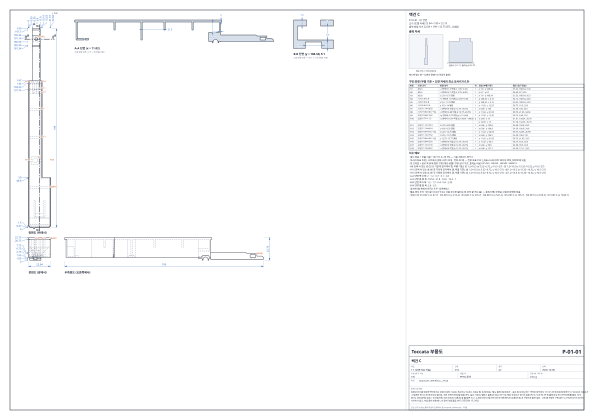</button>
<div class="partdwg-body">
<div class="partdwg-code mono">P-01-01 · A2 1:1</div>
<h4>백건 C</h4>
<dl class="partdwg-dl"><dt>수량</dt><dd>7개</dd><dt>크기</dt><dd class="mono">22.04 × 199 × 22.75</dd><dt>질량</dt><dd>23.9 g</dd><dt>재료</dt><dd>PETG 흰색</dd><dt>구멍·포켓</dt><dd>17</dd></dl>
<div class="partdwg-file mono">hardware/mechanical/cad/stl/print/01_건반/백건_C__7개.stl</div>
<details class="spec"><summary>출력 메모</summary><p class="small">윗면(z43.5)을 매끈한 PEI에 대고 뒤집어 출력. 슬라이서 서포트 끔: 숨은 빔·꼬리(y147~198) 밑의 떼는 빗(가운데 날 0.8 + 8 mm마다 가로 날)이 파일에 들어 있고 건반과 0.2 떨어져 붙지 않음 - 출력 뒤 손으로 들어냄 (A12). 노치 R2.55·핀 홈에 부싱 천 0.5T(i068)를 붙임. 자석 Ø5×2 N35(i098) 압입 + 순간접착제, 캡스턴 M3×6 버튼헤드(i014) + M3 너트(i011)를 +x 옆 홈으로 (DESIGN 15, D02)</p></details>
<div class="partdwg-act"><button type="button" class="partdwg-btn" data-act="view">도면 크게</button><button type="button" class="partdwg-btn pri" data-act="dl">파일 받기 <span class="mono">.zip 64 KB</span></button></div>
<p class="small partdwg-msg" aria-live="polite"></p>
</div></article>
<article class="partdwg-card" id="partdwg-P-01-02" data-g="01" data-q="p-01-02 백건 d 백건d hardware/mechanical/cad/stl/print/01_건반/백건_d__7개.stl petg 흰색 o1-key-d o2-key-d o3-key-d o4-key-d o5-key-d o6-key-d o7-key-d" data-code="P-01-02" data-name="백건 D" data-file="hardware/mechanical/cad/stl/print/01_건반/백건_D__7개.stl" data-svg="fin/parts/P-01-02.svg" data-zip="fin/parts/P-01-02.zip.b64.txt" data-zipname="Toccata_P-01-02_백건_D.zip" data-zipbytes="65876">
<button type="button" class="partdwg-thumb" data-act="view" aria-label="P-01-02 백건 D 도면 크게 보기"></button>
<div class="partdwg-body">
<div class="partdwg-code mono">P-01-02 · A2 1:1</div>
<h4>백건 D</h4>
<dl class="partdwg-dl"><dt>수량</dt><dd>7개</dd><dt>크기</dt><dd class="mono">22.04 × 199 × 22.75</dd><dt>질량</dt><dd>24.2 g</dd><dt>재료</dt><dd>PETG 흰색</dd><dt>구멍·포켓</dt><dd>17</dd></dl>
<div class="partdwg-file mono">hardware/mechanical/cad/stl/print/01_건반/백건_D__7개.stl</div>
<details class="spec"><summary>출력 메모</summary><p class="small">윗면(z43.5)을 매끈한 PEI에 대고 뒤집어 출력. 슬라이서 서포트 끔: 숨은 빔·꼬리(y147~198) 밑의 떼는 빗(가운데 날 0.8 + 8 mm마다 가로 날)이 파일에 들어 있고 건반과 0.2 떨어져 붙지 않음 - 출력 뒤 손으로 들어냄 (A12). 노치 R2.55·핀 홈에 부싱 천 0.5T(i068)를 붙임. 자석 Ø5×2 N35(i098) 압입 + 순간접착제, 캡스턴 M3×6 버튼헤드(i014) + M3 너트(i011)를 +x 옆 홈으로 (DESIGN 15, D02)</p></details>
<div class="partdwg-act"><button type="button" class="partdwg-btn" data-act="view">도면 크게</button><button type="button" class="partdwg-btn pri" data-act="dl">파일 받기 <span class="mono">.zip 64 KB</span></button></div>
<p class="small partdwg-msg" aria-live="polite"></p>
</div></article>
<article class="partdwg-card" id="partdwg-P-01-03" data-g="01" data-q="p-01-03 백건 e 백건e hardware/mechanical/cad/stl/print/01_건반/백건_e__7개.stl petg 흰색 o1-key-e o2-key-e o3-key-e o4-key-e o5-key-e o6-key-e o7-key-e" data-code="P-01-03" data-name="백건 E" data-file="hardware/mechanical/cad/stl/print/01_건반/백건_E__7개.stl" data-svg="fin/parts/P-01-03.svg" data-zip="fin/parts/P-01-03.zip.b64.txt" data-zipname="Toccata_P-01-03_백건_E.zip" data-zipbytes="65720">
<button type="button" class="partdwg-thumb" data-act="view" aria-label="P-01-03 백건 E 도면 크게 보기">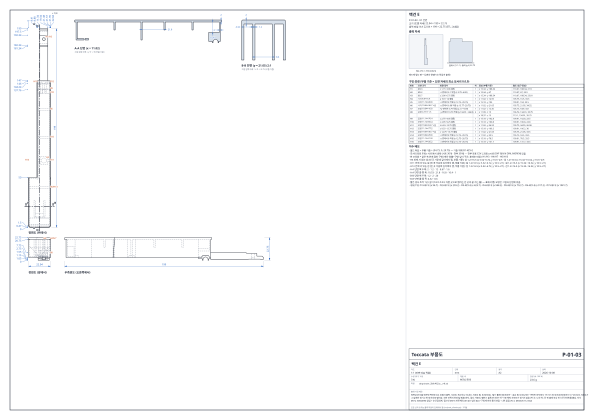</button>
<div class="partdwg-body">
<div class="partdwg-code mono">P-01-03 · A2 1:1</div>
<h4>백건 E</h4>
<dl class="partdwg-dl"><dt>수량</dt><dd>7개</dd><dt>크기</dt><dd class="mono">22.04 × 199 × 22.75</dd><dt>질량</dt><dd>23.9 g</dd><dt>재료</dt><dd>PETG 흰색</dd><dt>구멍·포켓</dt><dd>17</dd></dl>
<div class="partdwg-file mono">hardware/mechanical/cad/stl/print/01_건반/백건_E__7개.stl</div>
<details class="spec"><summary>출력 메모</summary><p class="small">윗면(z43.5)을 매끈한 PEI에 대고 뒤집어 출력. 슬라이서 서포트 끔: 숨은 빔·꼬리(y147~198) 밑의 떼는 빗(가운데 날 0.8 + 8 mm마다 가로 날)이 파일에 들어 있고 건반과 0.2 떨어져 붙지 않음 - 출력 뒤 손으로 들어냄 (A12). 노치 R2.55·핀 홈에 부싱 천 0.5T(i068)를 붙임. 자석 Ø5×2 N35(i098) 압입 + 순간접착제, 캡스턴 M3×6 버튼헤드(i014) + M3 너트(i011)를 +x 옆 홈으로 (DESIGN 15, D02)</p></details>
<div class="partdwg-act"><button type="button" class="partdwg-btn" data-act="view">도면 크게</button><button type="button" class="partdwg-btn pri" data-act="dl">파일 받기 <span class="mono">.zip 64 KB</span></button></div>
<p class="small partdwg-msg" aria-live="polite"></p>
</div></article>
<article class="partdwg-card" id="partdwg-P-01-04" data-g="01" data-q="p-01-04 백건 f 백건f hardware/mechanical/cad/stl/print/01_건반/백건_f__7개.stl petg 흰색 o1-key-f o2-key-f o3-key-f o4-key-f o5-key-f o6-key-f o7-key-f" data-code="P-01-04" data-name="백건 F" data-file="hardware/mechanical/cad/stl/print/01_건반/백건_F__7개.stl" data-svg="fin/parts/P-01-04.svg" data-zip="fin/parts/P-01-04.zip.b64.txt" data-zipname="Toccata_P-01-04_백건_F.zip" data-zipbytes="66456">
<button type="button" class="partdwg-thumb" data-act="view" aria-label="P-01-04 백건 F 도면 크게 보기">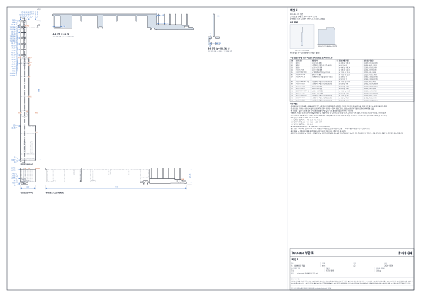</button>
<div class="partdwg-body">
<div class="partdwg-code mono">P-01-04 · A2 1:1</div>
<h4>백건 F</h4>
<dl class="partdwg-dl"><dt>수량</dt><dd>7개</dd><dt>크기</dt><dd class="mono">22.04 × 199 × 22.75</dd><dt>질량</dt><dd>23.4 g</dd><dt>재료</dt><dd>PETG 흰색</dd><dt>구멍·포켓</dt><dd>17</dd></dl>
<div class="partdwg-file mono">hardware/mechanical/cad/stl/print/01_건반/백건_F__7개.stl</div>
<details class="spec"><summary>출력 메모</summary><p class="small">윗면(z43.5)을 매끈한 PEI에 대고 뒤집어 출력. 슬라이서 서포트 끔: 숨은 빔·꼬리(y147~198) 밑의 떼는 빗(가운데 날 0.8 + 8 mm마다 가로 날)이 파일에 들어 있고 건반과 0.2 떨어져 붙지 않음 - 출력 뒤 손으로 들어냄 (A12). 노치 R2.55·핀 홈에 부싱 천 0.5T(i068)를 붙임. 자석 Ø5×2 N35(i098) 압입 + 순간접착제, 캡스턴 M3×6 버튼헤드(i014) + M3 너트(i011)를 +x 옆 홈으로 (DESIGN 15, D02)</p></details>
<div class="partdwg-act"><button type="button" class="partdwg-btn" data-act="view">도면 크게</button><button type="button" class="partdwg-btn pri" data-act="dl">파일 받기 <span class="mono">.zip 65 KB</span></button></div>
<p class="small partdwg-msg" aria-live="polite"></p>
</div></article>
<article class="partdwg-card" id="partdwg-P-01-05" data-g="01" data-q="p-01-05 백건 g 백건g hardware/mechanical/cad/stl/print/01_건반/백건_g__7개.stl petg 흰색 o1-key-g o2-key-g o3-key-g o4-key-g o5-key-g o6-key-g o7-key-g" data-code="P-01-05" data-name="백건 G" data-file="hardware/mechanical/cad/stl/print/01_건반/백건_G__7개.stl" data-svg="fin/parts/P-01-05.svg" data-zip="fin/parts/P-01-05.zip.b64.txt" data-zipname="Toccata_P-01-05_백건_G.zip" data-zipbytes="65917">
<button type="button" class="partdwg-thumb" data-act="view" aria-label="P-01-05 백건 G 도면 크게 보기">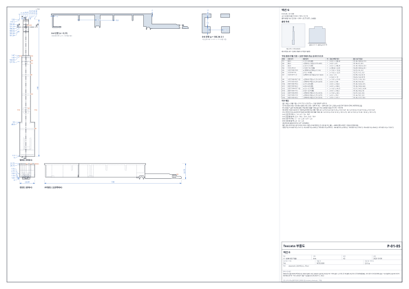</button>
<div class="partdwg-body">
<div class="partdwg-code mono">P-01-05 · A2 1:1</div>
<h4>백건 G</h4>
<dl class="partdwg-dl"><dt>수량</dt><dd>7개</dd><dt>크기</dt><dd class="mono">22.04 × 199 × 22.75</dd><dt>질량</dt><dd>23.8 g</dd><dt>재료</dt><dd>PETG 흰색</dd><dt>구멍·포켓</dt><dd>17</dd></dl>
<div class="partdwg-file mono">hardware/mechanical/cad/stl/print/01_건반/백건_G__7개.stl</div>
<details class="spec"><summary>출력 메모</summary><p class="small">윗면(z43.5)을 매끈한 PEI에 대고 뒤집어 출력. 슬라이서 서포트 끔: 숨은 빔·꼬리(y147~198) 밑의 떼는 빗(가운데 날 0.8 + 8 mm마다 가로 날)이 파일에 들어 있고 건반과 0.2 떨어져 붙지 않음 - 출력 뒤 손으로 들어냄 (A12). 노치 R2.55·핀 홈에 부싱 천 0.5T(i068)를 붙임. 자석 Ø5×2 N35(i098) 압입 + 순간접착제, 캡스턴 M3×6 버튼헤드(i014) + M3 너트(i011)를 +x 옆 홈으로 (DESIGN 15, D02)</p></details>
<div class="partdwg-act"><button type="button" class="partdwg-btn" data-act="view">도면 크게</button><button type="button" class="partdwg-btn pri" data-act="dl">파일 받기 <span class="mono">.zip 64 KB</span></button></div>
<p class="small partdwg-msg" aria-live="polite"></p>
</div></article>
<article class="partdwg-card" id="partdwg-P-01-06" data-g="01" data-q="p-01-06 백건 a 백건a hardware/mechanical/cad/stl/print/01_건반/백건_a__7개.stl petg 흰색 o1-key-a o2-key-a o3-key-a o4-key-a o5-key-a o6-key-a o7-key-a" data-code="P-01-06" data-name="백건 A" data-file="hardware/mechanical/cad/stl/print/01_건반/백건_A__7개.stl" data-svg="fin/parts/P-01-06.svg" data-zip="fin/parts/P-01-06.zip.b64.txt" data-zipname="Toccata_P-01-06_백건_A.zip" data-zipbytes="65729">
<button type="button" class="partdwg-thumb" data-act="view" aria-label="P-01-06 백건 A 도면 크게 보기">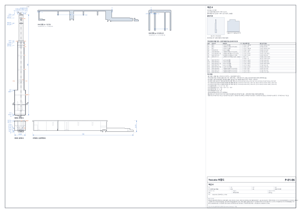</button>
<div class="partdwg-body">
<div class="partdwg-code mono">P-01-06 · A2 1:1</div>
<h4>백건 A</h4>
<dl class="partdwg-dl"><dt>수량</dt><dd>7개</dd><dt>크기</dt><dd class="mono">22.04 × 199 × 22.75</dd><dt>질량</dt><dd>23.8 g</dd><dt>재료</dt><dd>PETG 흰색</dd><dt>구멍·포켓</dt><dd>17</dd></dl>
<div class="partdwg-file mono">hardware/mechanical/cad/stl/print/01_건반/백건_A__7개.stl</div>
<details class="spec"><summary>출력 메모</summary><p class="small">윗면(z43.5)을 매끈한 PEI에 대고 뒤집어 출력. 슬라이서 서포트 끔: 숨은 빔·꼬리(y147~198) 밑의 떼는 빗(가운데 날 0.8 + 8 mm마다 가로 날)이 파일에 들어 있고 건반과 0.2 떨어져 붙지 않음 - 출력 뒤 손으로 들어냄 (A12). 노치 R2.55·핀 홈에 부싱 천 0.5T(i068)를 붙임. 자석 Ø5×2 N35(i098) 압입 + 순간접착제, 캡스턴 M3×6 버튼헤드(i014) + M3 너트(i011)를 +x 옆 홈으로 (DESIGN 15, D02)</p></details>
<div class="partdwg-act"><button type="button" class="partdwg-btn" data-act="view">도면 크게</button><button type="button" class="partdwg-btn pri" data-act="dl">파일 받기 <span class="mono">.zip 64 KB</span></button></div>
<p class="small partdwg-msg" aria-live="polite"></p>
</div></article>
<article class="partdwg-card" id="partdwg-P-01-07" data-g="01" data-q="p-01-07 백건 b 백건b hardware/mechanical/cad/stl/print/01_건반/백건_b__7개.stl petg 흰색 o1-key-b o2-key-b o3-key-b o4-key-b o5-key-b o6-key-b o7-key-b" data-code="P-01-07" data-name="백건 B" data-file="hardware/mechanical/cad/stl/print/01_건반/백건_B__7개.stl" data-svg="fin/parts/P-01-07.svg" data-zip="fin/parts/P-01-07.zip.b64.txt" data-zipname="Toccata_P-01-07_백건_B.zip" data-zipbytes="65641">
<button type="button" class="partdwg-thumb" data-act="view" aria-label="P-01-07 백건 B 도면 크게 보기">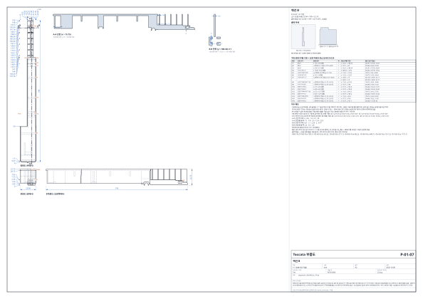</button>
<div class="partdwg-body">
<div class="partdwg-code mono">P-01-07 · A2 1:1</div>
<h4>백건 B</h4>
<dl class="partdwg-dl"><dt>수량</dt><dd>7개</dd><dt>크기</dt><dd class="mono">22.04 × 199 × 22.75</dd><dt>질량</dt><dd>23.4 g</dd><dt>재료</dt><dd>PETG 흰색</dd><dt>구멍·포켓</dt><dd>17</dd></dl>
<div class="partdwg-file mono">hardware/mechanical/cad/stl/print/01_건반/백건_B__7개.stl</div>
<details class="spec"><summary>출력 메모</summary><p class="small">윗면(z43.5)을 매끈한 PEI에 대고 뒤집어 출력. 슬라이서 서포트 끔: 숨은 빔·꼬리(y147~198) 밑의 떼는 빗(가운데 날 0.8 + 8 mm마다 가로 날)이 파일에 들어 있고 건반과 0.2 떨어져 붙지 않음 - 출력 뒤 손으로 들어냄 (A12). 노치 R2.55·핀 홈에 부싱 천 0.5T(i068)를 붙임. 자석 Ø5×2 N35(i098) 압입 + 순간접착제, 캡스턴 M3×6 버튼헤드(i014) + M3 너트(i011)를 +x 옆 홈으로 (DESIGN 15, D02)</p></details>
<div class="partdwg-act"><button type="button" class="partdwg-btn" data-act="view">도면 크게</button><button type="button" class="partdwg-btn pri" data-act="dl">파일 받기 <span class="mono">.zip 64 KB</span></button></div>
<p class="small partdwg-msg" aria-live="polite"></p>
</div></article>
<article class="partdwg-card" id="partdwg-P-01-08" data-g="01" data-q="p-01-08 백건 a0 백건a0 hardware/mechanical/cad/stl/print/01_건반/백건_a0__1개.stl petg 흰색 el-key-a0" data-code="P-01-08" data-name="백건 A0" data-file="hardware/mechanical/cad/stl/print/01_건반/백건_A0__1개.stl" data-svg="fin/parts/P-01-08.svg" data-zip="fin/parts/P-01-08.zip.b64.txt" data-zipname="Toccata_P-01-08_백건_A0.zip" data-zipbytes="65724">
<button type="button" class="partdwg-thumb" data-act="view" aria-label="P-01-08 백건 A0 도면 크게 보기">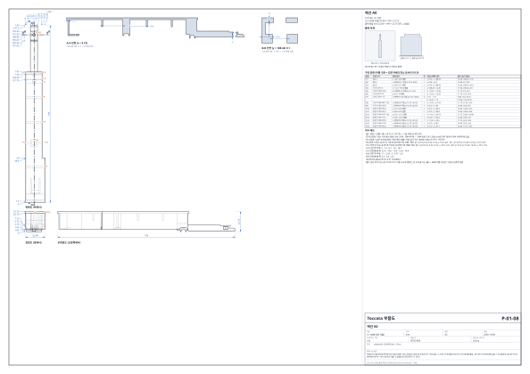</button>
<div class="partdwg-body">
<div class="partdwg-code mono">P-01-08 · A2 1:1</div>
<h4>백건 A0</h4>
<dl class="partdwg-dl"><dt>수량</dt><dd>1개</dd><dt>크기</dt><dd class="mono">22.04 × 199 × 22.75</dd><dt>질량</dt><dd>26.2 g</dd><dt>재료</dt><dd>PETG 흰색</dd><dt>구멍·포켓</dt><dd>17</dd></dl>
<div class="partdwg-file mono">hardware/mechanical/cad/stl/print/01_건반/백건_A0__1개.stl</div>
<details class="spec"><summary>출력 메모</summary><p class="small">윗면(z43.5)을 매끈한 PEI에 대고 뒤집어 출력. 슬라이서 서포트 끔: 숨은 빔·꼬리(y147~198) 밑의 떼는 빗(가운데 날 0.8 + 8 mm마다 가로 날)이 파일에 들어 있고 건반과 0.2 떨어져 붙지 않음 - 출력 뒤 손으로 들어냄 (A12). 노치 R2.55·핀 홈에 부싱 천 0.5T(i068)를 붙임. 자석 Ø5×2 N35(i098) 압입 + 순간접착제, 캡스턴 M3×6 버튼헤드(i014) + M3 너트(i011)를 +x 옆 홈으로 (DESIGN 15, D02)</p></details>
<div class="partdwg-act"><button type="button" class="partdwg-btn" data-act="view">도면 크게</button><button type="button" class="partdwg-btn pri" data-act="dl">파일 받기 <span class="mono">.zip 64 KB</span></button></div>
<p class="small partdwg-msg" aria-live="polite"></p>
</div></article>
<article class="partdwg-card" id="partdwg-P-01-09" data-g="01" data-q="p-01-09 백건 b0 백건b0 hardware/mechanical/cad/stl/print/01_건반/백건_b0__1개.stl petg 흰색 el-key-b0" data-code="P-01-09" data-name="백건 B0" data-file="hardware/mechanical/cad/stl/print/01_건반/백건_B0__1개.stl" data-svg="fin/parts/P-01-09.svg" data-zip="fin/parts/P-01-09.zip.b64.txt" data-zipname="Toccata_P-01-09_백건_B0.zip" data-zipbytes="65460">
<button type="button" class="partdwg-thumb" data-act="view" aria-label="P-01-09 백건 B0 도면 크게 보기"></button>
<div class="partdwg-body">
<div class="partdwg-code mono">P-01-09 · A2 1:1</div>
<h4>백건 B0</h4>
<dl class="partdwg-dl"><dt>수량</dt><dd>1개</dd><dt>크기</dt><dd class="mono">22.04 × 199 × 22.75</dd><dt>질량</dt><dd>23.4 g</dd><dt>재료</dt><dd>PETG 흰색</dd><dt>구멍·포켓</dt><dd>17</dd></dl>
<div class="partdwg-file mono">hardware/mechanical/cad/stl/print/01_건반/백건_B0__1개.stl</div>
<details class="spec"><summary>출력 메모</summary><p class="small">윗면(z43.5)을 매끈한 PEI에 대고 뒤집어 출력. 슬라이서 서포트 끔: 숨은 빔·꼬리(y147~198) 밑의 떼는 빗(가운데 날 0.8 + 8 mm마다 가로 날)이 파일에 들어 있고 건반과 0.2 떨어져 붙지 않음 - 출력 뒤 손으로 들어냄 (A12). 노치 R2.55·핀 홈에 부싱 천 0.5T(i068)를 붙임. 자석 Ø5×2 N35(i098) 압입 + 순간접착제, 캡스턴 M3×6 버튼헤드(i014) + M3 너트(i011)를 +x 옆 홈으로 (DESIGN 15, D02)</p></details>
<div class="partdwg-act"><button type="button" class="partdwg-btn" data-act="view">도면 크게</button><button type="button" class="partdwg-btn pri" data-act="dl">파일 받기 <span class="mono">.zip 64 KB</span></button></div>
<p class="small partdwg-msg" aria-live="polite"></p>
</div></article>
<article class="partdwg-card" id="partdwg-P-01-10" data-g="01" data-q="p-01-10 백건 c8 백건c8 hardware/mechanical/cad/stl/print/01_건반/백건_c8__1개.stl petg 흰색 er-key-c8" data-code="P-01-10" data-name="백건 C8" data-file="hardware/mechanical/cad/stl/print/01_건반/백건_C8__1개.stl" data-svg="fin/parts/P-01-10.svg" data-zip="fin/parts/P-01-10.zip.b64.txt" data-zipname="Toccata_P-01-10_백건_C8.zip" data-zipbytes="64427">
<button type="button" class="partdwg-thumb" data-act="view" aria-label="P-01-10 백건 C8 도면 크게 보기"></button>
<div class="partdwg-body">
<div class="partdwg-code mono">P-01-10 · A2 1:1</div>
<h4>백건 C8</h4>
<dl class="partdwg-dl"><dt>수량</dt><dd>1개</dd><dt>크기</dt><dd class="mono">22.04 × 199 × 22.75</dd><dt>질량</dt><dd>26.8 g</dd><dt>재료</dt><dd>PETG 흰색</dd><dt>구멍·포켓</dt><dd>14</dd></dl>
<div class="partdwg-file mono">hardware/mechanical/cad/stl/print/01_건반/백건_C8__1개.stl</div>
<details class="spec"><summary>출력 메모</summary><p class="small">윗면(z43.5)을 매끈한 PEI에 대고 뒤집어 출력. 슬라이서 서포트 끔: 숨은 빔·꼬리(y147~198) 밑의 떼는 빗(가운데 날 0.8 + 8 mm마다 가로 날)이 파일에 들어 있고 건반과 0.2 떨어져 붙지 않음 - 출력 뒤 손으로 들어냄 (A12). 노치 R2.55·핀 홈에 부싱 천 0.5T(i068)를 붙임. 자석 Ø5×2 N35(i098) 압입 + 순간접착제, 캡스턴 M3×6 버튼헤드(i014) + M3 너트(i011)를 +x 옆 홈으로 (DESIGN 15, D02)</p></details>
<div class="partdwg-act"><button type="button" class="partdwg-btn" data-act="view">도면 크게</button><button type="button" class="partdwg-btn pri" data-act="dl">파일 받기 <span class="mono">.zip 63 KB</span></button></div>
<p class="small partdwg-msg" aria-live="polite"></p>
</div></article>
<article class="partdwg-card" id="partdwg-P-01-11" data-g="01" data-q="p-01-11 흑건 c#·d# 흑건c#·d# hardware/mechanical/cad/stl/print/01_건반/흑건_c#·d#__14개.stl petg 검정 o1-key-cs o1-key-ds o2-key-cs o2-key-ds o3-key-cs o3-key-ds o4-key-cs o4-key-ds" data-code="P-01-11" data-name="흑건 C#·D#" data-file="hardware/mechanical/cad/stl/print/01_건반/흑건_C#·D#__14개.stl" data-svg="fin/parts/P-01-11.svg" data-zip="fin/parts/P-01-11.zip.b64.txt" data-zipname="Toccata_P-01-11_흑건_Cs-Ds.zip" data-zipbytes="65729">
<button type="button" class="partdwg-thumb" data-act="view" aria-label="P-01-11 흑건 C#·D# 도면 크게 보기"></button>
<div class="partdwg-body">
<div class="partdwg-code mono">P-01-11 · A3 1:1</div>
<h4>흑건 C#·D#</h4>
<dl class="partdwg-dl"><dt>수량</dt><dd>14개</dd><dt>크기</dt><dd class="mono">10.4 × 144.8 × 34.75</dd><dt>질량</dt><dd>20.4 g</dd><dt>재료</dt><dd>PETG 검정</dd><dt>구멍·포켓</dt><dd>22</dd></dl>
<div class="partdwg-file mono">hardware/mechanical/cad/stl/print/01_건반/흑건_C#·D#__14개.stl</div>
<details class="spec"><summary>출력 메모</summary><p class="small">윗면(z55.5)을 매끈한 PEI에 대고 뒤집어 출력. 슬라이서 서포트 끔: 숨은 빔·꼬리(y147~198) 밑의 떼는 빗(가운데 날 0.8 + 8 mm마다 가로 날)과 윗면 뒤끝 턱(y144.5~146.8) 밑 받침이 파일에 들어 있고 건반과 0.2 떨어져 붙지 않음 - 출력 뒤 손으로 들어냄 (A12). 노치 R2.55·핀 홈에 부싱 천 0.5T(i068)를 붙임. 자석 Ø5×2 N35(i098) 압입 + 순간접착제, 캡스턴 M3×6 버튼헤드(i014) + M3 너트(i011)를 +x 옆 홈으로 (DESIGN 15, D02)</p></details>
<div class="partdwg-act"><button type="button" class="partdwg-btn" data-act="view">도면 크게</button><button type="button" class="partdwg-btn pri" data-act="dl">파일 받기 <span class="mono">.zip 64 KB</span></button></div>
<p class="small partdwg-msg" aria-live="polite"></p>
</div></article>
<article class="partdwg-card" id="partdwg-P-01-12" data-g="01" data-q="p-01-12 흑건 f# 흑건f# hardware/mechanical/cad/stl/print/01_건반/흑건_f#__7개.stl petg 검정 o1-key-fs o2-key-fs o3-key-fs o4-key-fs o5-key-fs o6-key-fs o7-key-fs" data-code="P-01-12" data-name="흑건 F#" data-file="hardware/mechanical/cad/stl/print/01_건반/흑건_F#__7개.stl" data-svg="fin/parts/P-01-12.svg" data-zip="fin/parts/P-01-12.zip.b64.txt" data-zipname="Toccata_P-01-12_흑건_Fs.zip" data-zipbytes="66916">
<button type="button" class="partdwg-thumb" data-act="view" aria-label="P-01-12 흑건 F# 도면 크게 보기"></button>
<div class="partdwg-body">
<div class="partdwg-code mono">P-01-12 · A3 1:1</div>
<h4>흑건 F#</h4>
<dl class="partdwg-dl"><dt>수량</dt><dd>7개</dd><dt>크기</dt><dd class="mono">10.57 × 144.8 × 34.75</dd><dt>질량</dt><dd>20.3 g</dd><dt>재료</dt><dd>PETG 검정</dd><dt>구멍·포켓</dt><dd>22</dd></dl>
<div class="partdwg-file mono">hardware/mechanical/cad/stl/print/01_건반/흑건_F#__7개.stl</div>
<details class="spec"><summary>출력 메모</summary><p class="small">윗면(z55.5)을 매끈한 PEI에 대고 뒤집어 출력. 슬라이서 서포트 끔: 숨은 빔·꼬리(y147~198) 밑의 떼는 빗(가운데 날 0.8 + 8 mm마다 가로 날)과 윗면 뒤끝 턱(y144.5~146.8) 밑 받침이 파일에 들어 있고 건반과 0.2 떨어져 붙지 않음 - 출력 뒤 손으로 들어냄 (A12). 노치 R2.55·핀 홈에 부싱 천 0.5T(i068)를 붙임. 자석 Ø5×2 N35(i098) 압입 + 순간접착제, 캡스턴 M3×6 버튼헤드(i014) + M3 너트(i011)를 +x 옆 홈으로 (DESIGN 15, D02)</p></details>
<div class="partdwg-act"><button type="button" class="partdwg-btn" data-act="view">도면 크게</button><button type="button" class="partdwg-btn pri" data-act="dl">파일 받기 <span class="mono">.zip 65 KB</span></button></div>
<p class="small partdwg-msg" aria-live="polite"></p>
</div></article>
<article class="partdwg-card" id="partdwg-P-01-13" data-g="01" data-q="p-01-13 흑건 g# 흑건g# hardware/mechanical/cad/stl/print/01_건반/흑건_g#__7개.stl petg 검정 o1-key-gs o2-key-gs o3-key-gs o4-key-gs o5-key-gs o6-key-gs o7-key-gs" data-code="P-01-13" data-name="흑건 G#" data-file="hardware/mechanical/cad/stl/print/01_건반/흑건_G#__7개.stl" data-svg="fin/parts/P-01-13.svg" data-zip="fin/parts/P-01-13.zip.b64.txt" data-zipname="Toccata_P-01-13_흑건_Gs.zip" data-zipbytes="65837">
<button type="button" class="partdwg-thumb" data-act="view" aria-label="P-01-13 흑건 G# 도면 크게 보기"></button>
<div class="partdwg-body">
<div class="partdwg-code mono">P-01-13 · A3 1:1</div>
<h4>흑건 G#</h4>
<dl class="partdwg-dl"><dt>수량</dt><dd>7개</dd><dt>크기</dt><dd class="mono">11.4 × 144.8 × 34.75</dd><dt>질량</dt><dd>20.4 g</dd><dt>재료</dt><dd>PETG 검정</dd><dt>구멍·포켓</dt><dd>22</dd></dl>
<div class="partdwg-file mono">hardware/mechanical/cad/stl/print/01_건반/흑건_G#__7개.stl</div>
<details class="spec"><summary>출력 메모</summary><p class="small">윗면(z55.5)을 매끈한 PEI에 대고 뒤집어 출력. 슬라이서 서포트 끔: 숨은 빔·꼬리(y147~198) 밑의 떼는 빗(가운데 날 0.8 + 8 mm마다 가로 날)과 윗면 뒤끝 턱(y144.5~146.8) 밑 받침이 파일에 들어 있고 건반과 0.2 떨어져 붙지 않음 - 출력 뒤 손으로 들어냄 (A12). 노치 R2.55·핀 홈에 부싱 천 0.5T(i068)를 붙임. 자석 Ø5×2 N35(i098) 압입 + 순간접착제, 캡스턴 M3×6 버튼헤드(i014) + M3 너트(i011)를 +x 옆 홈으로 (DESIGN 15, D02)</p></details>
<div class="partdwg-act"><button type="button" class="partdwg-btn" data-act="view">도면 크게</button><button type="button" class="partdwg-btn pri" data-act="dl">파일 받기 <span class="mono">.zip 64 KB</span></button></div>
<p class="small partdwg-msg" aria-live="polite"></p>
</div></article>
<article class="partdwg-card" id="partdwg-P-01-14" data-g="01" data-q="p-01-14 흑건 a#·a#0 흑건a#·a#0 hardware/mechanical/cad/stl/print/01_건반/흑건_a#·a#0__8개.stl petg 검정 o1-key-as o2-key-as o3-key-as o4-key-as o5-key-as o6-key-as o7-key-as el-key-as0" data-code="P-01-14" data-name="흑건 A#·A#0" data-file="hardware/mechanical/cad/stl/print/01_건반/흑건_A#·A#0__8개.stl" data-svg="fin/parts/P-01-14.svg" data-zip="fin/parts/P-01-14.zip.b64.txt" data-zipname="Toccata_P-01-14_흑건_As-As0.zip" data-zipbytes="66610">
<button type="button" class="partdwg-thumb" data-act="view" aria-label="P-01-14 흑건 A#·A#0 도면 크게 보기"></button>
<div class="partdwg-body">
<div class="partdwg-code mono">P-01-14 · A3 1:1</div>
<h4>흑건 A#·A#0</h4>
<dl class="partdwg-dl"><dt>수량</dt><dd>8개</dd><dt>크기</dt><dd class="mono">10.83 × 144.8 × 34.75</dd><dt>질량</dt><dd>20.4 g</dd><dt>재료</dt><dd>PETG 검정</dd><dt>구멍·포켓</dt><dd>22</dd></dl>
<div class="partdwg-file mono">hardware/mechanical/cad/stl/print/01_건반/흑건_A#·A#0__8개.stl</div>
<details class="spec"><summary>출력 메모</summary><p class="small">윗면(z55.5)을 매끈한 PEI에 대고 뒤집어 출력. 슬라이서 서포트 끔: 숨은 빔·꼬리(y147~198) 밑의 떼는 빗(가운데 날 0.8 + 8 mm마다 가로 날)과 윗면 뒤끝 턱(y144.5~146.8) 밑 받침이 파일에 들어 있고 건반과 0.2 떨어져 붙지 않음 - 출력 뒤 손으로 들어냄 (A12). 노치 R2.55·핀 홈에 부싱 천 0.5T(i068)를 붙임. 자석 Ø5×2 N35(i098) 압입 + 순간접착제, 캡스턴 M3×6 버튼헤드(i014) + M3 너트(i011)를 +x 옆 홈으로 (DESIGN 15, D02)</p></details>
<div class="partdwg-act"><button type="button" class="partdwg-btn" data-act="view">도면 크게</button><button type="button" class="partdwg-btn pri" data-act="dl">파일 받기 <span class="mono">.zip 65 KB</span></button></div>
<p class="small partdwg-msg" aria-live="polite"></p>
</div></article>
</div>
<h3 class="partdwg-gh" data-g="02">02 레버 캐리어 <span class="small muted">stl/print/02_레버캐리어 · 17장</span></h3>
<div class="partdwg-grid" data-g="02">
<article class="partdwg-card" id="partdwg-P-02-01" data-g="02" data-q="p-02-01 레버캐리어 c 레버캐리어c hardware/mechanical/cad/stl/print/02_레버캐리어/레버캐리어_c__7개.stl petg o1-lever-c o2-lever-c o3-lever-c o4-lever-c o5-lever-c o6-lever-c o7-lever-c" data-code="P-02-01" data-name="레버캐리어 C" data-file="hardware/mechanical/cad/stl/print/02_레버캐리어/레버캐리어_C__7개.stl" data-svg="fin/parts/P-02-01.svg" data-zip="fin/parts/P-02-01.zip.b64.txt" data-zipname="Toccata_P-02-01_레버캐리어_C.zip" data-zipbytes="50928">
<button type="button" class="partdwg-thumb" data-act="view" aria-label="P-02-01 레버캐리어 C 도면 크게 보기"></button>
<div class="partdwg-body">
<div class="partdwg-code mono">P-02-01 · A3 2:1</div>
<h4>레버캐리어 C</h4>
<dl class="partdwg-dl"><dt>수량</dt><dd>7개</dd><dt>크기</dt><dd class="mono">12.51 × 59.35 × 23.8</dd><dt>질량</dt><dd>2.7 g</dd><dt>재료</dt><dd>PETG</dd><dt>구멍·포켓</dt><dd>4</dd></dl>
<div class="partdwg-file mono">hardware/mechanical/cad/stl/print/02_레버캐리어/레버캐리어_C__7개.stl</div>
<details class="spec"><summary>출력 메모</summary><p class="small">−x 옆면을 베드에 눕혀 출력(칼라는 모두 +x 쪽, A5), 음 이름 새김(Arial Black, 0.4)이 위. 서포트 없음: 강철 칸의 +x 벽은 레버 덮개(따로 출력)라 칸 위가 열려 있음 (A12, 옛 떼는 지지대 없음). 허브 구멍 Ø3.9로 출력 → Ø4.0 드릴(i126). 강철 블록은 강철 띠 9T×19(i119)를 40 −0.1/−0.3으로 잘라(칸 길이 40.0, 두께 8.9~9.1만) 두 19×40 면에 MS 폴리머를 바르고 +x 쪽에서 칸에 넣은 뒤 레버 덮개를 덮어 고무줄로 눌러 24 h (DESIGN 15, D07)</p></details>
<div class="partdwg-act"><button type="button" class="partdwg-btn" data-act="view">도면 크게</button><button type="button" class="partdwg-btn pri" data-act="dl">파일 받기 <span class="mono">.zip 50 KB</span></button></div>
<p class="small partdwg-msg" aria-live="polite"></p>
</div></article>
<article class="partdwg-card" id="partdwg-P-02-02" data-g="02" data-q="p-02-02 레버캐리어 c# 레버캐리어c# hardware/mechanical/cad/stl/print/02_레버캐리어/레버캐리어_c#__7개.stl petg o1-lever-cs o2-lever-cs o3-lever-cs o4-lever-cs o5-lever-cs o6-lever-cs o7-lever-cs" data-code="P-02-02" data-name="레버캐리어 C#" data-file="hardware/mechanical/cad/stl/print/02_레버캐리어/레버캐리어_C#__7개.stl" data-svg="fin/parts/P-02-02.svg" data-zip="fin/parts/P-02-02.zip.b64.txt" data-zipname="Toccata_P-02-02_레버캐리어_Cs.zip" data-zipbytes="64593">
<button type="button" class="partdwg-thumb" data-act="view" aria-label="P-02-02 레버캐리어 C# 도면 크게 보기"></button>
<div class="partdwg-body">
<div class="partdwg-code mono">P-02-02 · A3 2:1</div>
<h4>레버캐리어 C#</h4>
<dl class="partdwg-dl"><dt>수량</dt><dd>7개</dd><dt>크기</dt><dd class="mono">12.65 × 59.35 × 23.8</dd><dt>질량</dt><dd>2.7 g</dd><dt>재료</dt><dd>PETG</dd><dt>구멍·포켓</dt><dd>4</dd></dl>
<div class="partdwg-file mono">hardware/mechanical/cad/stl/print/02_레버캐리어/레버캐리어_C#__7개.stl</div>
<details class="spec"><summary>출력 메모</summary><p class="small">−x 옆면을 베드에 눕혀 출력(칼라는 모두 +x 쪽, A5), 음 이름 새김(Arial Black, 0.4)이 위. 서포트 없음: 강철 칸의 +x 벽은 레버 덮개(따로 출력)라 칸 위가 열려 있음 (A12, 옛 떼는 지지대 없음). 허브 구멍 Ø3.9로 출력 → Ø4.0 드릴(i126). 강철 블록은 강철 띠 9T×19(i119)를 40 −0.1/−0.3으로 잘라(칸 길이 40.0, 두께 8.9~9.1만) 두 19×40 면에 MS 폴리머를 바르고 +x 쪽에서 칸에 넣은 뒤 레버 덮개를 덮어 고무줄로 눌러 24 h (DESIGN 15, D07)</p></details>
<div class="partdwg-act"><button type="button" class="partdwg-btn" data-act="view">도면 크게</button><button type="button" class="partdwg-btn pri" data-act="dl">파일 받기 <span class="mono">.zip 63 KB</span></button></div>
<p class="small partdwg-msg" aria-live="polite"></p>
</div></article>
<article class="partdwg-card" id="partdwg-P-02-03" data-g="02" data-q="p-02-03 레버캐리어 d 레버캐리어d hardware/mechanical/cad/stl/print/02_레버캐리어/레버캐리어_d__7개.stl petg o1-lever-d o2-lever-d o3-lever-d o4-lever-d o5-lever-d o6-lever-d o7-lever-d" data-code="P-02-03" data-name="레버캐리어 D" data-file="hardware/mechanical/cad/stl/print/02_레버캐리어/레버캐리어_D__7개.stl" data-svg="fin/parts/P-02-03.svg" data-zip="fin/parts/P-02-03.zip.b64.txt" data-zipname="Toccata_P-02-03_레버캐리어_D.zip" data-zipbytes="44307">
<button type="button" class="partdwg-thumb" data-act="view" aria-label="P-02-03 레버캐리어 D 도면 크게 보기"></button>
<div class="partdwg-body">
<div class="partdwg-code mono">P-02-03 · A3 2:1</div>
<h4>레버캐리어 D</h4>
<dl class="partdwg-dl"><dt>수량</dt><dd>7개</dd><dt>크기</dt><dd class="mono">10.6 × 59.35 × 23.8</dd><dt>질량</dt><dd>2.6 g</dd><dt>재료</dt><dd>PETG</dd><dt>구멍·포켓</dt><dd>4</dd></dl>
<div class="partdwg-file mono">hardware/mechanical/cad/stl/print/02_레버캐리어/레버캐리어_D__7개.stl</div>
<details class="spec"><summary>출력 메모</summary><p class="small">−x 옆면을 베드에 눕혀 출력(칼라는 모두 +x 쪽, A5), 음 이름 새김(Arial Black, 0.4)이 위. 서포트 없음: 강철 칸의 +x 벽은 레버 덮개(따로 출력)라 칸 위가 열려 있음 (A12, 옛 떼는 지지대 없음). 허브 구멍 Ø3.9로 출력 → Ø4.0 드릴(i126). 강철 블록은 강철 띠 9T×19(i119)를 40 −0.1/−0.3으로 잘라(칸 길이 40.0, 두께 8.9~9.1만) 두 19×40 면에 MS 폴리머를 바르고 +x 쪽에서 칸에 넣은 뒤 레버 덮개를 덮어 고무줄로 눌러 24 h (DESIGN 15, D07)</p></details>
<div class="partdwg-act"><button type="button" class="partdwg-btn" data-act="view">도면 크게</button><button type="button" class="partdwg-btn pri" data-act="dl">파일 받기 <span class="mono">.zip 43 KB</span></button></div>
<p class="small partdwg-msg" aria-live="polite"></p>
</div></article>
<article class="partdwg-card" id="partdwg-P-02-04" data-g="02" data-q="p-02-04 레버캐리어 d# 레버캐리어d# hardware/mechanical/cad/stl/print/02_레버캐리어/레버캐리어_d#__7개.stl petg o1-lever-ds o2-lever-ds o3-lever-ds o4-lever-ds o5-lever-ds o6-lever-ds o7-lever-ds" data-code="P-02-04" data-name="레버캐리어 D#" data-file="hardware/mechanical/cad/stl/print/02_레버캐리어/레버캐리어_D#__7개.stl" data-svg="fin/parts/P-02-04.svg" data-zip="fin/parts/P-02-04.zip.b64.txt" data-zipname="Toccata_P-02-04_레버캐리어_Ds.zip" data-zipbytes="62098">
<button type="button" class="partdwg-thumb" data-act="view" aria-label="P-02-04 레버캐리어 D# 도면 크게 보기"></button>
<div class="partdwg-body">
<div class="partdwg-code mono">P-02-04 · A3 2:1</div>
<h4>레버캐리어 D#</h4>
<dl class="partdwg-dl"><dt>수량</dt><dd>7개</dd><dt>크기</dt><dd class="mono">13.61 × 59.35 × 23.8</dd><dt>질량</dt><dd>2.7 g</dd><dt>재료</dt><dd>PETG</dd><dt>구멍·포켓</dt><dd>4</dd></dl>
<div class="partdwg-file mono">hardware/mechanical/cad/stl/print/02_레버캐리어/레버캐리어_D#__7개.stl</div>
<details class="spec"><summary>출력 메모</summary><p class="small">−x 옆면을 베드에 눕혀 출력(칼라는 모두 +x 쪽, A5), 음 이름 새김(Arial Black, 0.4)이 위. 서포트 없음: 강철 칸의 +x 벽은 레버 덮개(따로 출력)라 칸 위가 열려 있음 (A12, 옛 떼는 지지대 없음). 허브 구멍 Ø3.9로 출력 → Ø4.0 드릴(i126). 강철 블록은 강철 띠 9T×19(i119)를 40 −0.1/−0.3으로 잘라(칸 길이 40.0, 두께 8.9~9.1만) 두 19×40 면에 MS 폴리머를 바르고 +x 쪽에서 칸에 넣은 뒤 레버 덮개를 덮어 고무줄로 눌러 24 h (DESIGN 15, D07)</p></details>
<div class="partdwg-act"><button type="button" class="partdwg-btn" data-act="view">도면 크게</button><button type="button" class="partdwg-btn pri" data-act="dl">파일 받기 <span class="mono">.zip 61 KB</span></button></div>
<p class="small partdwg-msg" aria-live="polite"></p>
</div></article>
<article class="partdwg-card" id="partdwg-P-02-05" data-g="02" data-q="p-02-05 레버캐리어 e 레버캐리어e hardware/mechanical/cad/stl/print/02_레버캐리어/레버캐리어_e__7개.stl petg o1-lever-e o2-lever-e o3-lever-e o4-lever-e o5-lever-e o6-lever-e o7-lever-e" data-code="P-02-05" data-name="레버캐리어 E" data-file="hardware/mechanical/cad/stl/print/02_레버캐리어/레버캐리어_E__7개.stl" data-svg="fin/parts/P-02-05.svg" data-zip="fin/parts/P-02-05.zip.b64.txt" data-zipname="Toccata_P-02-05_레버캐리어_E.zip" data-zipbytes="50672">
<button type="button" class="partdwg-thumb" data-act="view" aria-label="P-02-05 레버캐리어 E 도면 크게 보기"></button>
<div class="partdwg-body">
<div class="partdwg-code mono">P-02-05 · A3 2:1</div>
<h4>레버캐리어 E</h4>
<dl class="partdwg-dl"><dt>수량</dt><dd>7개</dd><dt>크기</dt><dd class="mono">12.45 × 59.35 × 23.8</dd><dt>질량</dt><dd>2.7 g</dd><dt>재료</dt><dd>PETG</dd><dt>구멍·포켓</dt><dd>4</dd></dl>
<div class="partdwg-file mono">hardware/mechanical/cad/stl/print/02_레버캐리어/레버캐리어_E__7개.stl</div>
<details class="spec"><summary>출력 메모</summary><p class="small">−x 옆면을 베드에 눕혀 출력(칼라는 모두 +x 쪽, A5), 음 이름 새김(Arial Black, 0.4)이 위. 서포트 없음: 강철 칸의 +x 벽은 레버 덮개(따로 출력)라 칸 위가 열려 있음 (A12, 옛 떼는 지지대 없음). 허브 구멍 Ø3.9로 출력 → Ø4.0 드릴(i126). 강철 블록은 강철 띠 9T×19(i119)를 40 −0.1/−0.3으로 잘라(칸 길이 40.0, 두께 8.9~9.1만) 두 19×40 면에 MS 폴리머를 바르고 +x 쪽에서 칸에 넣은 뒤 레버 덮개를 덮어 고무줄로 눌러 24 h (DESIGN 15, D07)</p></details>
<div class="partdwg-act"><button type="button" class="partdwg-btn" data-act="view">도면 크게</button><button type="button" class="partdwg-btn pri" data-act="dl">파일 받기 <span class="mono">.zip 49 KB</span></button></div>
<p class="small partdwg-msg" aria-live="polite"></p>
</div></article>
<article class="partdwg-card" id="partdwg-P-02-06" data-g="02" data-q="p-02-06 레버캐리어 f 레버캐리어f hardware/mechanical/cad/stl/print/02_레버캐리어/레버캐리어_f__7개.stl petg o1-lever-f o2-lever-f o3-lever-f o4-lever-f o5-lever-f o6-lever-f o7-lever-f" data-code="P-02-06" data-name="레버캐리어 F" data-file="hardware/mechanical/cad/stl/print/02_레버캐리어/레버캐리어_F__7개.stl" data-svg="fin/parts/P-02-06.svg" data-zip="fin/parts/P-02-06.zip.b64.txt" data-zipname="Toccata_P-02-06_레버캐리어_F.zip" data-zipbytes="45736">
<button type="button" class="partdwg-thumb" data-act="view" aria-label="P-02-06 레버캐리어 F 도면 크게 보기"></button>
<div class="partdwg-body">
<div class="partdwg-code mono">P-02-06 · A3 2:1</div>
<h4>레버캐리어 F</h4>
<dl class="partdwg-dl"><dt>수량</dt><dd>7개</dd><dt>크기</dt><dd class="mono">10.6 × 59.35 × 23.8</dd><dt>질량</dt><dd>2.6 g</dd><dt>재료</dt><dd>PETG</dd><dt>구멍·포켓</dt><dd>4</dd></dl>
<div class="partdwg-file mono">hardware/mechanical/cad/stl/print/02_레버캐리어/레버캐리어_F__7개.stl</div>
<details class="spec"><summary>출력 메모</summary><p class="small">−x 옆면을 베드에 눕혀 출력(칼라는 모두 +x 쪽, A5), 음 이름 새김(Arial Black, 0.4)이 위. 서포트 없음: 강철 칸의 +x 벽은 레버 덮개(따로 출력)라 칸 위가 열려 있음 (A12, 옛 떼는 지지대 없음). 허브 구멍 Ø3.9로 출력 → Ø4.0 드릴(i126). 강철 블록은 강철 띠 9T×19(i119)를 40 −0.1/−0.3으로 잘라(칸 길이 40.0, 두께 8.9~9.1만) 두 19×40 면에 MS 폴리머를 바르고 +x 쪽에서 칸에 넣은 뒤 레버 덮개를 덮어 고무줄로 눌러 24 h (DESIGN 15, D07)</p></details>
<div class="partdwg-act"><button type="button" class="partdwg-btn" data-act="view">도면 크게</button><button type="button" class="partdwg-btn pri" data-act="dl">파일 받기 <span class="mono">.zip 45 KB</span></button></div>
<p class="small partdwg-msg" aria-live="polite"></p>
</div></article>
<article class="partdwg-card" id="partdwg-P-02-07" data-g="02" data-q="p-02-07 레버캐리어 f# 레버캐리어f# hardware/mechanical/cad/stl/print/02_레버캐리어/레버캐리어_f#__7개.stl petg o1-lever-fs o2-lever-fs o3-lever-fs o4-lever-fs o5-lever-fs o6-lever-fs o7-lever-fs" data-code="P-02-07" data-name="레버캐리어 F#" data-file="hardware/mechanical/cad/stl/print/02_레버캐리어/레버캐리어_F#__7개.stl" data-svg="fin/parts/P-02-07.svg" data-zip="fin/parts/P-02-07.zip.b64.txt" data-zipname="Toccata_P-02-07_레버캐리어_Fs.zip" data-zipbytes="63399">
<button type="button" class="partdwg-thumb" data-act="view" aria-label="P-02-07 레버캐리어 F# 도면 크게 보기"></button>
<div class="partdwg-body">
<div class="partdwg-code mono">P-02-07 · A3 2:1</div>
<h4>레버캐리어 F#</h4>
<dl class="partdwg-dl"><dt>수량</dt><dd>7개</dd><dt>크기</dt><dd class="mono">12.92 × 59.35 × 23.8</dd><dt>질량</dt><dd>2.7 g</dd><dt>재료</dt><dd>PETG</dd><dt>구멍·포켓</dt><dd>4</dd></dl>
<div class="partdwg-file mono">hardware/mechanical/cad/stl/print/02_레버캐리어/레버캐리어_F#__7개.stl</div>
<details class="spec"><summary>출력 메모</summary><p class="small">−x 옆면을 베드에 눕혀 출력(칼라는 모두 +x 쪽, A5), 음 이름 새김(Arial Black, 0.4)이 위. 서포트 없음: 강철 칸의 +x 벽은 레버 덮개(따로 출력)라 칸 위가 열려 있음 (A12, 옛 떼는 지지대 없음). 허브 구멍 Ø3.9로 출력 → Ø4.0 드릴(i126). 강철 블록은 강철 띠 9T×19(i119)를 40 −0.1/−0.3으로 잘라(칸 길이 40.0, 두께 8.9~9.1만) 두 19×40 면에 MS 폴리머를 바르고 +x 쪽에서 칸에 넣은 뒤 레버 덮개를 덮어 고무줄로 눌러 24 h (DESIGN 15, D07)</p></details>
<div class="partdwg-act"><button type="button" class="partdwg-btn" data-act="view">도면 크게</button><button type="button" class="partdwg-btn pri" data-act="dl">파일 받기 <span class="mono">.zip 62 KB</span></button></div>
<p class="small partdwg-msg" aria-live="polite"></p>
</div></article>
<article class="partdwg-card" id="partdwg-P-02-08" data-g="02" data-q="p-02-08 레버캐리어 g 레버캐리어g hardware/mechanical/cad/stl/print/02_레버캐리어/레버캐리어_g__7개.stl petg o1-lever-g o2-lever-g o3-lever-g o4-lever-g o5-lever-g o6-lever-g o7-lever-g" data-code="P-02-08" data-name="레버캐리어 G" data-file="hardware/mechanical/cad/stl/print/02_레버캐리어/레버캐리어_G__7개.stl" data-svg="fin/parts/P-02-08.svg" data-zip="fin/parts/P-02-08.zip.b64.txt" data-zipname="Toccata_P-02-08_레버캐리어_G.zip" data-zipbytes="51905">
<button type="button" class="partdwg-thumb" data-act="view" aria-label="P-02-08 레버캐리어 G 도면 크게 보기"></button>
<div class="partdwg-body">
<div class="partdwg-code mono">P-02-08 · A3 2:1</div>
<h4>레버캐리어 G</h4>
<dl class="partdwg-dl"><dt>수량</dt><dd>7개</dd><dt>크기</dt><dd class="mono">12.12 × 59.35 × 23.8</dd><dt>질량</dt><dd>2.7 g</dd><dt>재료</dt><dd>PETG</dd><dt>구멍·포켓</dt><dd>4</dd></dl>
<div class="partdwg-file mono">hardware/mechanical/cad/stl/print/02_레버캐리어/레버캐리어_G__7개.stl</div>
<details class="spec"><summary>출력 메모</summary><p class="small">−x 옆면을 베드에 눕혀 출력(칼라는 모두 +x 쪽, A5), 음 이름 새김(Arial Black, 0.4)이 위. 서포트 없음: 강철 칸의 +x 벽은 레버 덮개(따로 출력)라 칸 위가 열려 있음 (A12, 옛 떼는 지지대 없음). 허브 구멍 Ø3.9로 출력 → Ø4.0 드릴(i126). 강철 블록은 강철 띠 9T×19(i119)를 40 −0.1/−0.3으로 잘라(칸 길이 40.0, 두께 8.9~9.1만) 두 19×40 면에 MS 폴리머를 바르고 +x 쪽에서 칸에 넣은 뒤 레버 덮개를 덮어 고무줄로 눌러 24 h (DESIGN 15, D07)</p></details>
<div class="partdwg-act"><button type="button" class="partdwg-btn" data-act="view">도면 크게</button><button type="button" class="partdwg-btn pri" data-act="dl">파일 받기 <span class="mono">.zip 51 KB</span></button></div>
<p class="small partdwg-msg" aria-live="polite"></p>
</div></article>
<article class="partdwg-card" id="partdwg-P-02-09" data-g="02" data-q="p-02-09 레버캐리어 g# 레버캐리어g# hardware/mechanical/cad/stl/print/02_레버캐리어/레버캐리어_g#__7개.stl petg o1-lever-gs o2-lever-gs o3-lever-gs o4-lever-gs o5-lever-gs o6-lever-gs o7-lever-gs" data-code="P-02-09" data-name="레버캐리어 G#" data-file="hardware/mechanical/cad/stl/print/02_레버캐리어/레버캐리어_G#__7개.stl" data-svg="fin/parts/P-02-09.svg" data-zip="fin/parts/P-02-09.zip.b64.txt" data-zipname="Toccata_P-02-09_레버캐리어_Gs.zip" data-zipbytes="61927">
<button type="button" class="partdwg-thumb" data-act="view" aria-label="P-02-09 레버캐리어 G# 도면 크게 보기"></button>
<div class="partdwg-body">
<div class="partdwg-code mono">P-02-09 · A3 2:1</div>
<h4>레버캐리어 G#</h4>
<dl class="partdwg-dl"><dt>수량</dt><dd>7개</dd><dt>크기</dt><dd class="mono">10.6 × 59.35 × 23.8</dd><dt>질량</dt><dd>2.6 g</dd><dt>재료</dt><dd>PETG</dd><dt>구멍·포켓</dt><dd>4</dd></dl>
<div class="partdwg-file mono">hardware/mechanical/cad/stl/print/02_레버캐리어/레버캐리어_G#__7개.stl</div>
<details class="spec"><summary>출력 메모</summary><p class="small">−x 옆면을 베드에 눕혀 출력(칼라는 모두 +x 쪽, A5), 음 이름 새김(Arial Black, 0.4)이 위. 서포트 없음: 강철 칸의 +x 벽은 레버 덮개(따로 출력)라 칸 위가 열려 있음 (A12, 옛 떼는 지지대 없음). 허브 구멍 Ø3.9로 출력 → Ø4.0 드릴(i126). 강철 블록은 강철 띠 9T×19(i119)를 40 −0.1/−0.3으로 잘라(칸 길이 40.0, 두께 8.9~9.1만) 두 19×40 면에 MS 폴리머를 바르고 +x 쪽에서 칸에 넣은 뒤 레버 덮개를 덮어 고무줄로 눌러 24 h (DESIGN 15, D07)</p></details>
<div class="partdwg-act"><button type="button" class="partdwg-btn" data-act="view">도면 크게</button><button type="button" class="partdwg-btn pri" data-act="dl">파일 받기 <span class="mono">.zip 60 KB</span></button></div>
<p class="small partdwg-msg" aria-live="polite"></p>
</div></article>
<article class="partdwg-card" id="partdwg-P-02-10" data-g="02" data-q="p-02-10 레버캐리어 a 레버캐리어a hardware/mechanical/cad/stl/print/02_레버캐리어/레버캐리어_a__7개.stl petg o1-lever-a o2-lever-a o3-lever-a o4-lever-a o5-lever-a o6-lever-a o7-lever-a" data-code="P-02-10" data-name="레버캐리어 A" data-file="hardware/mechanical/cad/stl/print/02_레버캐리어/레버캐리어_A__7개.stl" data-svg="fin/parts/P-02-10.svg" data-zip="fin/parts/P-02-10.zip.b64.txt" data-zipname="Toccata_P-02-10_레버캐리어_A.zip" data-zipbytes="48310">
<button type="button" class="partdwg-thumb" data-act="view" aria-label="P-02-10 레버캐리어 A 도면 크게 보기"></button>
<div class="partdwg-body">
<div class="partdwg-code mono">P-02-10 · A3 2:1</div>
<h4>레버캐리어 A</h4>
<dl class="partdwg-dl"><dt>수량</dt><dd>7개</dd><dt>크기</dt><dd class="mono">12.12 × 59.35 × 23.8</dd><dt>질량</dt><dd>2.7 g</dd><dt>재료</dt><dd>PETG</dd><dt>구멍·포켓</dt><dd>4</dd></dl>
<div class="partdwg-file mono">hardware/mechanical/cad/stl/print/02_레버캐리어/레버캐리어_A__7개.stl</div>
<details class="spec"><summary>출력 메모</summary><p class="small">−x 옆면을 베드에 눕혀 출력(칼라는 모두 +x 쪽, A5), 음 이름 새김(Arial Black, 0.4)이 위. 서포트 없음: 강철 칸의 +x 벽은 레버 덮개(따로 출력)라 칸 위가 열려 있음 (A12, 옛 떼는 지지대 없음). 허브 구멍 Ø3.9로 출력 → Ø4.0 드릴(i126). 강철 블록은 강철 띠 9T×19(i119)를 40 −0.1/−0.3으로 잘라(칸 길이 40.0, 두께 8.9~9.1만) 두 19×40 면에 MS 폴리머를 바르고 +x 쪽에서 칸에 넣은 뒤 레버 덮개를 덮어 고무줄로 눌러 24 h (DESIGN 15, D07)</p></details>
<div class="partdwg-act"><button type="button" class="partdwg-btn" data-act="view">도면 크게</button><button type="button" class="partdwg-btn pri" data-act="dl">파일 받기 <span class="mono">.zip 47 KB</span></button></div>
<p class="small partdwg-msg" aria-live="polite"></p>
</div></article>
<article class="partdwg-card" id="partdwg-P-02-11" data-g="02" data-q="p-02-11 레버캐리어 a# 레버캐리어a# hardware/mechanical/cad/stl/print/02_레버캐리어/레버캐리어_a#__7개.stl petg o1-lever-as o2-lever-as o3-lever-as o4-lever-as o5-lever-as o6-lever-as o7-lever-as" data-code="P-02-11" data-name="레버캐리어 A#" data-file="hardware/mechanical/cad/stl/print/02_레버캐리어/레버캐리어_A#__7개.stl" data-svg="fin/parts/P-02-11.svg" data-zip="fin/parts/P-02-11.zip.b64.txt" data-zipname="Toccata_P-02-11_레버캐리어_As.zip" data-zipbytes="62374">
<button type="button" class="partdwg-thumb" data-act="view" aria-label="P-02-11 레버캐리어 A# 도면 크게 보기"></button>
<div class="partdwg-body">
<div class="partdwg-code mono">P-02-11 · A3 2:1</div>
<h4>레버캐리어 A#</h4>
<dl class="partdwg-dl"><dt>수량</dt><dd>7개</dd><dt>크기</dt><dd class="mono">12.12 × 59.35 × 23.8</dd><dt>질량</dt><dd>2.7 g</dd><dt>재료</dt><dd>PETG</dd><dt>구멍·포켓</dt><dd>4</dd></dl>
<div class="partdwg-file mono">hardware/mechanical/cad/stl/print/02_레버캐리어/레버캐리어_A#__7개.stl</div>
<details class="spec"><summary>출력 메모</summary><p class="small">−x 옆면을 베드에 눕혀 출력(칼라는 모두 +x 쪽, A5), 음 이름 새김(Arial Black, 0.4)이 위. 서포트 없음: 강철 칸의 +x 벽은 레버 덮개(따로 출력)라 칸 위가 열려 있음 (A12, 옛 떼는 지지대 없음). 허브 구멍 Ø3.9로 출력 → Ø4.0 드릴(i126). 강철 블록은 강철 띠 9T×19(i119)를 40 −0.1/−0.3으로 잘라(칸 길이 40.0, 두께 8.9~9.1만) 두 19×40 면에 MS 폴리머를 바르고 +x 쪽에서 칸에 넣은 뒤 레버 덮개를 덮어 고무줄로 눌러 24 h (DESIGN 15, D07)</p></details>
<div class="partdwg-act"><button type="button" class="partdwg-btn" data-act="view">도면 크게</button><button type="button" class="partdwg-btn pri" data-act="dl">파일 받기 <span class="mono">.zip 61 KB</span></button></div>
<p class="small partdwg-msg" aria-live="polite"></p>
</div></article>
<article class="partdwg-card" id="partdwg-P-02-12" data-g="02" data-q="p-02-12 레버캐리어 b 레버캐리어b hardware/mechanical/cad/stl/print/02_레버캐리어/레버캐리어_b__7개.stl petg o1-lever-b o2-lever-b o3-lever-b o4-lever-b o5-lever-b o6-lever-b o7-lever-b" data-code="P-02-12" data-name="레버캐리어 B" data-file="hardware/mechanical/cad/stl/print/02_레버캐리어/레버캐리어_B__7개.stl" data-svg="fin/parts/P-02-12.svg" data-zip="fin/parts/P-02-12.zip.b64.txt" data-zipname="Toccata_P-02-12_레버캐리어_B.zip" data-zipbytes="46223">
<button type="button" class="partdwg-thumb" data-act="view" aria-label="P-02-12 레버캐리어 B 도면 크게 보기"></button>
<div class="partdwg-body">
<div class="partdwg-code mono">P-02-12 · A3 2:1</div>
<h4>레버캐리어 B</h4>
<dl class="partdwg-dl"><dt>수량</dt><dd>7개</dd><dt>크기</dt><dd class="mono">10.6 × 59.35 × 23.8</dd><dt>질량</dt><dd>2.6 g</dd><dt>재료</dt><dd>PETG</dd><dt>구멍·포켓</dt><dd>4</dd></dl>
<div class="partdwg-file mono">hardware/mechanical/cad/stl/print/02_레버캐리어/레버캐리어_B__7개.stl</div>
<details class="spec"><summary>출력 메모</summary><p class="small">−x 옆면을 베드에 눕혀 출력(칼라는 모두 +x 쪽, A5), 음 이름 새김(Arial Black, 0.4)이 위. 서포트 없음: 강철 칸의 +x 벽은 레버 덮개(따로 출력)라 칸 위가 열려 있음 (A12, 옛 떼는 지지대 없음). 허브 구멍 Ø3.9로 출력 → Ø4.0 드릴(i126). 강철 블록은 강철 띠 9T×19(i119)를 40 −0.1/−0.3으로 잘라(칸 길이 40.0, 두께 8.9~9.1만) 두 19×40 면에 MS 폴리머를 바르고 +x 쪽에서 칸에 넣은 뒤 레버 덮개를 덮어 고무줄로 눌러 24 h (DESIGN 15, D07)</p></details>
<div class="partdwg-act"><button type="button" class="partdwg-btn" data-act="view">도면 크게</button><button type="button" class="partdwg-btn pri" data-act="dl">파일 받기 <span class="mono">.zip 45 KB</span></button></div>
<p class="small partdwg-msg" aria-live="polite"></p>
</div></article>
<article class="partdwg-card" id="partdwg-P-02-13" data-g="02" data-q="p-02-13 레버캐리어 a0 레버캐리어a0 hardware/mechanical/cad/stl/print/02_레버캐리어/레버캐리어_a0__1개.stl petg el-lever-a0" data-code="P-02-13" data-name="레버캐리어 A0" data-file="hardware/mechanical/cad/stl/print/02_레버캐리어/레버캐리어_A0__1개.stl" data-svg="fin/parts/P-02-13.svg" data-zip="fin/parts/P-02-13.zip.b64.txt" data-zipname="Toccata_P-02-13_레버캐리어_A0.zip" data-zipbytes="55387">
<button type="button" class="partdwg-thumb" data-act="view" aria-label="P-02-13 레버캐리어 A0 도면 크게 보기"></button>
<div class="partdwg-body">
<div class="partdwg-code mono">P-02-13 · A3 2:1</div>
<h4>레버캐리어 A0</h4>
<dl class="partdwg-dl"><dt>수량</dt><dd>1개</dd><dt>크기</dt><dd class="mono">15.84 × 59.35 × 23.81</dd><dt>질량</dt><dd>2.7 g</dd><dt>재료</dt><dd>PETG</dd><dt>구멍·포켓</dt><dd>3</dd></dl>
<div class="partdwg-file mono">hardware/mechanical/cad/stl/print/02_레버캐리어/레버캐리어_A0__1개.stl</div>
<details class="spec"><summary>출력 메모</summary><p class="small">−x 옆면을 베드에 눕혀 출력(칼라는 모두 +x 쪽, A5), 음 이름 새김(Arial Black, 0.4)이 위. 서포트 없음: 강철 칸의 +x 벽은 레버 덮개(따로 출력)라 칸 위가 열려 있음 (A12, 옛 떼는 지지대 없음). 허브 구멍 Ø3.9로 출력 → Ø4.0 드릴(i126). 강철 블록은 강철 띠 9T×19(i119)를 40 −0.1/−0.3으로 잘라(칸 길이 40.0, 두께 8.9~9.1만) 두 19×40 면에 MS 폴리머를 바르고 +x 쪽에서 칸에 넣은 뒤 레버 덮개를 덮어 고무줄로 눌러 24 h (DESIGN 15, D07)</p></details>
<div class="partdwg-act"><button type="button" class="partdwg-btn" data-act="view">도면 크게</button><button type="button" class="partdwg-btn pri" data-act="dl">파일 받기 <span class="mono">.zip 54 KB</span></button></div>
<p class="small partdwg-msg" aria-live="polite"></p>
</div></article>
<article class="partdwg-card" id="partdwg-P-02-14" data-g="02" data-q="p-02-14 레버캐리어 a#0 레버캐리어a#0 hardware/mechanical/cad/stl/print/02_레버캐리어/레버캐리어_a#0__1개.stl petg el-lever-as0" data-code="P-02-14" data-name="레버캐리어 A#0" data-file="hardware/mechanical/cad/stl/print/02_레버캐리어/레버캐리어_A#0__1개.stl" data-svg="fin/parts/P-02-14.svg" data-zip="fin/parts/P-02-14.zip.b64.txt" data-zipname="Toccata_P-02-14_레버캐리어_As0.zip" data-zipbytes="70665">
<button type="button" class="partdwg-thumb" data-act="view" aria-label="P-02-14 레버캐리어 A#0 도면 크게 보기"></button>
<div class="partdwg-body">
<div class="partdwg-code mono">P-02-14 · A3 2:1</div>
<h4>레버캐리어 A#0</h4>
<dl class="partdwg-dl"><dt>수량</dt><dd>1개</dd><dt>크기</dt><dd class="mono">12.12 × 59.36 × 23.8</dd><dt>질량</dt><dd>2.7 g</dd><dt>재료</dt><dd>PETG</dd><dt>구멍·포켓</dt><dd>4</dd></dl>
<div class="partdwg-file mono">hardware/mechanical/cad/stl/print/02_레버캐리어/레버캐리어_A#0__1개.stl</div>
<details class="spec"><summary>출력 메모</summary><p class="small">−x 옆면을 베드에 눕혀 출력(칼라는 모두 +x 쪽, A5), 음 이름 새김(Arial Black, 0.4)이 위. 서포트 없음: 강철 칸의 +x 벽은 레버 덮개(따로 출력)라 칸 위가 열려 있음 (A12, 옛 떼는 지지대 없음). 허브 구멍 Ø3.9로 출력 → Ø4.0 드릴(i126). 강철 블록은 강철 띠 9T×19(i119)를 40 −0.1/−0.3으로 잘라(칸 길이 40.0, 두께 8.9~9.1만) 두 19×40 면에 MS 폴리머를 바르고 +x 쪽에서 칸에 넣은 뒤 레버 덮개를 덮어 고무줄로 눌러 24 h (DESIGN 15, D07)</p></details>
<div class="partdwg-act"><button type="button" class="partdwg-btn" data-act="view">도면 크게</button><button type="button" class="partdwg-btn pri" data-act="dl">파일 받기 <span class="mono">.zip 69 KB</span></button></div>
<p class="small partdwg-msg" aria-live="polite"></p>
</div></article>
<article class="partdwg-card" id="partdwg-P-02-15" data-g="02" data-q="p-02-15 레버캐리어 b0 레버캐리어b0 hardware/mechanical/cad/stl/print/02_레버캐리어/레버캐리어_b0__1개.stl petg el-lever-b0" data-code="P-02-15" data-name="레버캐리어 B0" data-file="hardware/mechanical/cad/stl/print/02_레버캐리어/레버캐리어_B0__1개.stl" data-svg="fin/parts/P-02-15.svg" data-zip="fin/parts/P-02-15.zip.b64.txt" data-zipname="Toccata_P-02-15_레버캐리어_B0.zip" data-zipbytes="53391">
<button type="button" class="partdwg-thumb" data-act="view" aria-label="P-02-15 레버캐리어 B0 도면 크게 보기"></button>
<div class="partdwg-body">
<div class="partdwg-code mono">P-02-15 · A3 2:1</div>
<h4>레버캐리어 B0</h4>
<dl class="partdwg-dl"><dt>수량</dt><dd>1개</dd><dt>크기</dt><dd class="mono">10.6 × 59.35 × 23.81</dd><dt>질량</dt><dd>2.6 g</dd><dt>재료</dt><dd>PETG</dd><dt>구멍·포켓</dt><dd>4</dd></dl>
<div class="partdwg-file mono">hardware/mechanical/cad/stl/print/02_레버캐리어/레버캐리어_B0__1개.stl</div>
<details class="spec"><summary>출력 메모</summary><p class="small">−x 옆면을 베드에 눕혀 출력(칼라는 모두 +x 쪽, A5), 음 이름 새김(Arial Black, 0.4)이 위. 서포트 없음: 강철 칸의 +x 벽은 레버 덮개(따로 출력)라 칸 위가 열려 있음 (A12, 옛 떼는 지지대 없음). 허브 구멍 Ø3.9로 출력 → Ø4.0 드릴(i126). 강철 블록은 강철 띠 9T×19(i119)를 40 −0.1/−0.3으로 잘라(칸 길이 40.0, 두께 8.9~9.1만) 두 19×40 면에 MS 폴리머를 바르고 +x 쪽에서 칸에 넣은 뒤 레버 덮개를 덮어 고무줄로 눌러 24 h (DESIGN 15, D07)</p></details>
<div class="partdwg-act"><button type="button" class="partdwg-btn" data-act="view">도면 크게</button><button type="button" class="partdwg-btn pri" data-act="dl">파일 받기 <span class="mono">.zip 52 KB</span></button></div>
<p class="small partdwg-msg" aria-live="polite"></p>
</div></article>
<article class="partdwg-card" id="partdwg-P-02-16" data-g="02" data-q="p-02-16 레버캐리어 c8 레버캐리어c8 hardware/mechanical/cad/stl/print/02_레버캐리어/레버캐리어_c8__1개.stl petg er-lever-c8" data-code="P-02-16" data-name="레버캐리어 C8" data-file="hardware/mechanical/cad/stl/print/02_레버캐리어/레버캐리어_C8__1개.stl" data-svg="fin/parts/P-02-16.svg" data-zip="fin/parts/P-02-16.zip.b64.txt" data-zipname="Toccata_P-02-16_레버캐리어_C8.zip" data-zipbytes="57391">
<button type="button" class="partdwg-thumb" data-act="view" aria-label="P-02-16 레버캐리어 C8 도면 크게 보기"></button>
<div class="partdwg-body">
<div class="partdwg-code mono">P-02-16 · A3 2:1</div>
<h4>레버캐리어 C8</h4>
<dl class="partdwg-dl"><dt>수량</dt><dd>1개</dd><dt>크기</dt><dd class="mono">10.6 × 59.35 × 23.81</dd><dt>질량</dt><dd>2.6 g</dd><dt>재료</dt><dd>PETG</dd><dt>구멍·포켓</dt><dd>4</dd></dl>
<div class="partdwg-file mono">hardware/mechanical/cad/stl/print/02_레버캐리어/레버캐리어_C8__1개.stl</div>
<details class="spec"><summary>출력 메모</summary><p class="small">−x 옆면을 베드에 눕혀 출력(칼라는 모두 +x 쪽, A5), 음 이름 새김(Arial Black, 0.4)이 위. 서포트 없음: 강철 칸의 +x 벽은 레버 덮개(따로 출력)라 칸 위가 열려 있음 (A12, 옛 떼는 지지대 없음). 허브 구멍 Ø3.9로 출력 → Ø4.0 드릴(i126). 강철 블록은 강철 띠 9T×19(i119)를 40 −0.1/−0.3으로 잘라(칸 길이 40.0, 두께 8.9~9.1만) 두 19×40 면에 MS 폴리머를 바르고 +x 쪽에서 칸에 넣은 뒤 레버 덮개를 덮어 고무줄로 눌러 24 h (DESIGN 15, D07)</p></details>
<div class="partdwg-act"><button type="button" class="partdwg-btn" data-act="view">도면 크게</button><button type="button" class="partdwg-btn pri" data-act="dl">파일 받기 <span class="mono">.zip 56 KB</span></button></div>
<p class="small partdwg-msg" aria-live="polite"></p>
</div></article>
<article class="partdwg-card" id="partdwg-P-02-17" data-g="02" data-q="p-02-17 레버덮개 레버덮개 hardware/mechanical/cad/stl/print/02_레버캐리어/레버덮개__88개.stl petg o1-levercover-c o1-levercover-cs o1-levercover-d o1-levercover-ds o1-levercover-e o1-levercover-f o1-levercover-fs o1-levercover-g" data-code="P-02-17" data-name="레버덮개" data-file="hardware/mechanical/cad/stl/print/02_레버캐리어/레버덮개__88개.stl" data-svg="fin/parts/P-02-17.svg" data-zip="fin/parts/P-02-17.zip.b64.txt" data-zipname="Toccata_P-02-17_레버덮개.zip" data-zipbytes="19383">
<button type="button" class="partdwg-thumb" data-act="view" aria-label="P-02-17 레버덮개 도면 크게 보기"></button>
<div class="partdwg-body">
<div class="partdwg-code mono">P-02-17 · A3 2:1</div>
<h4>레버덮개</h4>
<dl class="partdwg-dl"><dt>수량</dt><dd>88개</dd><dt>크기</dt><dd class="mono">1.8 × 41.1 × 21</dd><dt>질량</dt><dd>0.7 g</dd><dt>재료</dt><dd>PETG</dd><dt>구멍·포켓</dt><dd>0</dd></dl>
<div class="partdwg-file mono">hardware/mechanical/cad/stl/print/02_레버캐리어/레버덮개__88개.stl</div>
<details class="spec"><summary>출력 메모</summary><p class="small">바깥면(+x)을 베드에, 립 3개(위 앞·위 뒤·아래)가 위. 서포트 없음, 층 0.1 mm 권장(판 0.7). 레버 캐리어의 +x 옆벽을 따로 뽑은 것 (A12): 강철을 넣은 칸 위에 덮어 강철 +x 면과 MS 폴리머로 붙임 - 위 앞 립 앞끝이 캐리어 앞 뚜껑(y153)에, 위 뒤 립 뒤끝이 칸 뒷벽(y190)에 닿아 자리가 잡힘. 앞끝 0.8과 뒤끝은 캐리어 앞벽·뒷벽 옆면에 같이 붙음. 모든 레버 덮개가 같은 모양</p></details>
<div class="partdwg-act"><button type="button" class="partdwg-btn" data-act="view">도면 크게</button><button type="button" class="partdwg-btn pri" data-act="dl">파일 받기 <span class="mono">.zip 19 KB</span></button></div>
<p class="small partdwg-msg" aria-live="polite"></p>
</div></article>
</div>
<h3 class="partdwg-gh" data-g="03">03 프레임 <span class="small muted">stl/print/03_프레임 · 8장</span></h3>
<div class="partdwg-grid" data-g="03">
<article class="partdwg-card" id="partdwg-P-03-01" data-g="03" data-q="p-03-01 프레임 바닥틀 모듈 프레임바닥틀모듈 hardware/mechanical/cad/stl/print/03_프레임/프레임_바닥틀_모듈__7개.stl petg 회색 o1-frame o2-frame o3-frame o4-frame o5-frame o6-frame o7-frame" data-code="P-03-01" data-name="프레임 바닥틀 모듈" data-file="hardware/mechanical/cad/stl/print/03_프레임/프레임_바닥틀_모듈__7개.stl" data-svg="fin/parts/P-03-01.svg" data-zip="fin/parts/P-03-01.zip.b64.txt" data-zipname="Toccata_P-03-01_프레임_바닥틀_모듈.zip" data-zipbytes="107076">
<button type="button" class="partdwg-thumb" data-act="view" aria-label="P-03-01 프레임 바닥틀 모듈 도면 크게 보기"></button>
<div class="partdwg-body">
<div class="partdwg-code mono">P-03-01 · A1 1:1</div>
<h4>프레임 바닥틀 모듈</h4>
<dl class="partdwg-dl"><dt>수량</dt><dd>7개</dd><dt>크기</dt><dd class="mono">168.5 × 212 × 18</dd><dt>질량</dt><dd>152.7 g</dd><dt>재료</dt><dd>PETG 회색</dd><dt>구멍·포켓</dt><dd>37</dd></dl>
<div class="partdwg-file mono">hardware/mechanical/cad/stl/print/03_프레임/프레임_바닥틀_모듈__7개.stl</div>
<details class="spec"><summary>출력 메모</summary><p class="small">바로 세워(바닥면을 베드에) 출력, 슬라이서 서포트 끔 (A12). 내민 면은 짧은 다리뿐: 밸런스 레일 밑 리본 길 지붕(23), 암 도브테일 홈 천장, 센서 바 턱 1.5. 기판 앞 보스 2개(레일 뒷면에 매달림) 밑의 떼는 기둥은 파일에 들어 있음(0.2 떨어져 붙지 않음) - 기판 구멍 쪽에서 손으로 뺌. 가이드 탭 자리(깊이 5.3, 둘레 틈 0.15)에 가이드 탭을 순간접착제로. 밸런스 핀 구멍 Ø1.95(막힌 z11.3)는 Ø1.9~2.0 드릴로 다듬고 핀 압입. 레버틀을 바닥틀에 얹을 때: 핀 발이 바닥틀의 홈 둑 사이에 들어가고, 바닥 밑에서 M3×10 자가 탭 나사 4개(앞 핀 2·3번 발, 뒤 선반 밑 2)로 조임 - 나사만으로 떼었다 붙였다 할 수 있고, 본드(MS 폴리머)를 같이 바르면 더 단단함</p></details>
<div class="partdwg-act"><button type="button" class="partdwg-btn" data-act="view">도면 크게</button><button type="button" class="partdwg-btn pri" data-act="dl">파일 받기 <span class="mono">.zip 105 KB</span></button></div>
<p class="small partdwg-msg" aria-live="polite"></p>
</div></article>
<article class="partdwg-card" id="partdwg-P-03-02" data-g="03" data-q="p-03-02 프레임 레버틀 모듈 프레임레버틀모듈 hardware/mechanical/cad/stl/print/03_프레임/프레임_레버틀_모듈__7개.stl petg 회색 o1-cage o2-cage o3-cage o4-cage o5-cage o6-cage o7-cage" data-code="P-03-02" data-name="프레임 레버틀 모듈" data-file="hardware/mechanical/cad/stl/print/03_프레임/프레임_레버틀_모듈__7개.stl" data-svg="fin/parts/P-03-02.svg" data-zip="fin/parts/P-03-02.zip.b64.txt" data-zipname="Toccata_P-03-02_프레임_레버틀_모듈.zip" data-zipbytes="116467">
<button type="button" class="partdwg-thumb" data-act="view" aria-label="P-03-02 프레임 레버틀 모듈 도면 크게 보기"></button>
<div class="partdwg-body">
<div class="partdwg-code mono">P-03-02 · A2 1:1</div>
<h4>프레임 레버틀 모듈</h4>
<dl class="partdwg-dl"><dt>수량</dt><dd>7개</dd><dt>크기</dt><dd class="mono">164.5 × 67.5 × 69.85</dd><dt>질량</dt><dd>184 g</dd><dt>재료</dt><dd>PETG 회색</dd><dt>구멍·포켓</dt><dd>30</dd></dl>
<div class="partdwg-file mono">hardware/mechanical/cad/stl/print/03_프레임/프레임_레버틀_모듈__7개.stl</div>
<details class="spec"><summary>출력 메모</summary><p class="small">뒷벽 바깥면(y212)을 베드에 눕혀 출력 - 핀·윗판·선반이 모두 세워진 벽이 되어 서포트 없음 (A12). 윗판↔핀 이음이 한 층 안에 있어 층간이 아님(옛 바로 세운 출력보다 강함). 핀 보스 구멍 Ø3.9 눈물방울(뾰족 끝이 위) → Ø4.0 드릴. 넓은 첫 층이라 문 닫고 베드 70~80 °C, 모서리가 뜨면 브림 3 mm. 높이 67.5</p></details>
<div class="partdwg-act"><button type="button" class="partdwg-btn" data-act="view">도면 크게</button><button type="button" class="partdwg-btn pri" data-act="dl">파일 받기 <span class="mono">.zip 114 KB</span></button></div>
<p class="small partdwg-msg" aria-live="polite"></p>
</div></article>
<article class="partdwg-card" id="partdwg-P-03-03" data-g="03" data-q="p-03-03 프레임 가이드탭 백건 프레임가이드탭백건 hardware/mechanical/cad/stl/print/03_프레임/프레임_가이드탭_백건__52개.stl petg 회색 o1-tab-c o1-tab-d o1-tab-e o1-tab-f o1-tab-g o1-tab-a o1-tab-b o2-tab-c" data-code="P-03-03" data-name="프레임 가이드탭 백건" data-file="hardware/mechanical/cad/stl/print/03_프레임/프레임_가이드탭_백건__52개.stl" data-svg="fin/parts/P-03-03.svg" data-zip="fin/parts/P-03-03.zip.b64.txt" data-zipname="Toccata_P-03-03_프레임_가이드탭_백건.zip" data-zipbytes="17488">
<button type="button" class="partdwg-thumb" data-act="view" aria-label="P-03-03 프레임 가이드탭 백건 도면 크게 보기"></button>
<div class="partdwg-body">
<div class="partdwg-code mono">P-03-03 · A3 5:1</div>
<h4>프레임 가이드탭 백건</h4>
<dl class="partdwg-dl"><dt>수량</dt><dd>52개</dd><dt>크기</dt><dd class="mono">7.5 × 13.5 × 23.83</dd><dt>질량</dt><dd>2.3 g</dd><dt>재료</dt><dd>PETG 회색</dd><dt>구멍·포켓</dt><dd>0</dd></dl>
<div class="partdwg-file mono">hardware/mechanical/cad/stl/print/03_프레임/프레임_가이드탭_백건__52개.stl</div>
<details class="spec"><summary>출력 메모</summary><p class="small">옆면을 베드에 눕혀 출력 (서포트 없음, 키퍼 훅이 판 안에 있음). 키퍼 훅은 탭 폭 전체(설계 5.2 → 탭 폭)로 넓힘 - 키퍼 펠트 2T(5.2 폭)는 훅 밑 가운데에 붙임. 촉(깊이 5)은 앞 1.0이 짧아 거꾸로 꽂히지 않음: 바닥틀 자리에 순간접착제를 한 방울 넣고 끝까지 꽂음 (A12; 옛 프레임의 탭 + 훅, 훅 밑 서포트가 없어짐). 부러지면 탭만 다시 뽑아 바꿈</p></details>
<div class="partdwg-act"><button type="button" class="partdwg-btn" data-act="view">도면 크게</button><button type="button" class="partdwg-btn pri" data-act="dl">파일 받기 <span class="mono">.zip 17 KB</span></button></div>
<p class="small partdwg-msg" aria-live="polite"></p>
</div></article>
<article class="partdwg-card" id="partdwg-P-03-04" data-g="03" data-q="p-03-04 프레임 가이드탭 흑건 프레임가이드탭흑건 hardware/mechanical/cad/stl/print/03_프레임/프레임_가이드탭_흑건__36개.stl petg 회색 o1-tab-cs o1-tab-ds o1-tab-fs o1-tab-gs o1-tab-as o2-tab-cs o2-tab-ds o2-tab-fs" data-code="P-03-04" data-name="프레임 가이드탭 흑건" data-file="hardware/mechanical/cad/stl/print/03_프레임/프레임_가이드탭_흑건__36개.stl" data-svg="fin/parts/P-03-04.svg" data-zip="fin/parts/P-03-04.zip.b64.txt" data-zipname="Toccata_P-03-04_프레임_가이드탭_흑건.zip" data-zipbytes="17353">
<button type="button" class="partdwg-thumb" data-act="view" aria-label="P-03-04 프레임 가이드탭 흑건 도면 크게 보기"></button>
<div class="partdwg-body">
<div class="partdwg-code mono">P-03-04 · A3 5:1</div>
<h4>프레임 가이드탭 흑건</h4>
<dl class="partdwg-dl"><dt>수량</dt><dd>36개</dd><dt>크기</dt><dd class="mono">6.9 × 13.5 × 23</dd><dt>질량</dt><dd>2.1 g</dd><dt>재료</dt><dd>PETG 회색</dd><dt>구멍·포켓</dt><dd>0</dd></dl>
<div class="partdwg-file mono">hardware/mechanical/cad/stl/print/03_프레임/프레임_가이드탭_흑건__36개.stl</div>
<details class="spec"><summary>출력 메모</summary><p class="small">옆면을 베드에 눕혀 출력 (서포트 없음, 키퍼 훅이 판 안에 있음). 키퍼 훅은 탭 폭 전체(설계 5.2 → 탭 폭)로 넓힘 - 키퍼 펠트 2T(5.2 폭)는 훅 밑 가운데에 붙임. 촉(깊이 5)은 앞 1.0이 짧아 거꾸로 꽂히지 않음: 바닥틀 자리에 순간접착제를 한 방울 넣고 끝까지 꽂음 (A12; 옛 프레임의 탭 + 훅, 훅 밑 서포트가 없어짐). 부러지면 탭만 다시 뽑아 바꿈</p></details>
<div class="partdwg-act"><button type="button" class="partdwg-btn" data-act="view">도면 크게</button><button type="button" class="partdwg-btn pri" data-act="dl">파일 받기 <span class="mono">.zip 17 KB</span></button></div>
<p class="small partdwg-msg" aria-live="polite"></p>
</div></article>
<article class="partdwg-card" id="partdwg-P-03-05" data-g="03" data-q="p-03-05 프레임 바닥틀 끝부속 왼쪽 프레임바닥틀끝부속왼쪽 hardware/mechanical/cad/stl/print/03_프레임/프레임_바닥틀_끝부속_왼쪽__1개.stl petg 회색 el-frame" data-code="P-03-05" data-name="프레임 바닥틀 끝부속 왼쪽" data-file="hardware/mechanical/cad/stl/print/03_프레임/프레임_바닥틀_끝부속_왼쪽__1개.stl" data-svg="fin/parts/P-03-05.svg" data-zip="fin/parts/P-03-05.zip.b64.txt" data-zipname="Toccata_P-03-05_프레임_바닥틀_끝부속_왼쪽.zip" data-zipbytes="63552">
<button type="button" class="partdwg-thumb" data-act="view" aria-label="P-03-05 프레임 바닥틀 끝부속 왼쪽 도면 크게 보기"></button>
<div class="partdwg-body">
<div class="partdwg-code mono">P-03-05 · A2 1:1</div>
<h4>프레임 바닥틀 끝부속 왼쪽</h4>
<dl class="partdwg-dl"><dt>수량</dt><dd>1개</dd><dt>크기</dt><dd class="mono">67 × 212 × 69.85</dd><dt>질량</dt><dd>314.9 g</dd><dt>재료</dt><dd>PETG 회색</dd><dt>구멍·포켓</dt><dd>19</dd></dl>
<div class="partdwg-file mono">hardware/mechanical/cad/stl/print/03_프레임/프레임_바닥틀_끝부속_왼쪽__1개.stl</div>
<details class="spec"><summary>출력 메모</summary><p class="small">바로 세워(바닥면을 베드에) 출력, 슬라이서 서포트 끔 (A12). 내민 면은 짧은 다리뿐: 밸런스 레일 밑 리본 길 지붕(23), 암 도브테일 홈 천장, 센서 바 턱 1.5. 가이드 탭 자리(깊이 5.3, 둘레 틈 0.15)에 가이드 탭을 순간접착제로. 밸런스 핀 구멍 Ø1.95(막힌 z11.3)는 Ø1.9~2.0 드릴로 다듬고 핀 압입. 레버틀을 바닥틀에 얹을 때: 끝 핀·윗판 끝·봉 보스·뒷벽 끝이 볼 안쪽 면의 홈(깊이 약 1.1)에 들어가고, 안쪽 핀 발은 바닥틀 홈 둑 사이에 들어감 - 볼 홈 면과 바닥에 MS 폴리머를 발라 붙임. 볼(cheek)은 속이 꽉 찬 덩어리: 벽 3줄 + 채움 15 % gyroid</p></details>
<div class="partdwg-act"><button type="button" class="partdwg-btn" data-act="view">도면 크게</button><button type="button" class="partdwg-btn pri" data-act="dl">파일 받기 <span class="mono">.zip 62 KB</span></button></div>
<p class="small partdwg-msg" aria-live="polite"></p>
</div></article>
<article class="partdwg-card" id="partdwg-P-03-06" data-g="03" data-q="p-03-06 프레임 레버틀 끝부속 왼쪽 프레임레버틀끝부속왼쪽 hardware/mechanical/cad/stl/print/03_프레임/프레임_레버틀_끝부속_왼쪽__1개.stl petg 회색 el-cage" data-code="P-03-06" data-name="프레임 레버틀 끝부속 왼쪽" data-file="hardware/mechanical/cad/stl/print/03_프레임/프레임_레버틀_끝부속_왼쪽__1개.stl" data-svg="fin/parts/P-03-06.svg" data-zip="fin/parts/P-03-06.zip.b64.txt" data-zipname="Toccata_P-03-06_프레임_레버틀_끝부속_왼쪽.zip" data-zipbytes="44263">
<button type="button" class="partdwg-thumb" data-act="view" aria-label="P-03-06 프레임 레버틀 끝부속 왼쪽 도면 크게 보기"></button>
<div class="partdwg-body">
<div class="partdwg-code mono">P-03-06 · A3 1:1</div>
<h4>프레임 레버틀 끝부속 왼쪽</h4>
<dl class="partdwg-dl"><dt>수량</dt><dd>1개</dd><dt>크기</dt><dd class="mono">48.6 × 65.5 × 67.85</dd><dt>질량</dt><dd>55 g</dd><dt>재료</dt><dd>PETG 회색</dd><dt>구멍·포켓</dt><dd>5</dd></dl>
<div class="partdwg-file mono">hardware/mechanical/cad/stl/print/03_프레임/프레임_레버틀_끝부속_왼쪽__1개.stl</div>
<details class="spec"><summary>출력 메모</summary><p class="small">뒷벽 바깥면(y212)을 베드에 눕혀 출력 - 핀·윗판·선반이 모두 세워진 벽이 되어 서포트 없음 (A12). 윗판↔핀 이음이 한 층 안에 있어 층간이 아님(옛 바로 세운 출력보다 강함). 핀 보스 구멍 Ø3.9 눈물방울(뾰족 끝이 위) → Ø4.0 드릴. 넓은 첫 층이라 문 닫고 베드 70~80 °C, 모서리가 뜨면 브림 3 mm. 높이 65.5</p></details>
<div class="partdwg-act"><button type="button" class="partdwg-btn" data-act="view">도면 크게</button><button type="button" class="partdwg-btn pri" data-act="dl">파일 받기 <span class="mono">.zip 43 KB</span></button></div>
<p class="small partdwg-msg" aria-live="polite"></p>
</div></article>
<article class="partdwg-card" id="partdwg-P-03-07" data-g="03" data-q="p-03-07 프레임 바닥틀 끝부속 오른쪽 프레임바닥틀끝부속오른쪽 hardware/mechanical/cad/stl/print/03_프레임/프레임_바닥틀_끝부속_오른쪽__1개.stl petg 회색 er-frame" data-code="P-03-07" data-name="프레임 바닥틀 끝부속 오른쪽" data-file="hardware/mechanical/cad/stl/print/03_프레임/프레임_바닥틀_끝부속_오른쪽__1개.stl" data-svg="fin/parts/P-03-07.svg" data-zip="fin/parts/P-03-07.zip.b64.txt" data-zipname="Toccata_P-03-07_프레임_바닥틀_끝부속_오른쪽.zip" data-zipbytes="47970">
<button type="button" class="partdwg-thumb" data-act="view" aria-label="P-03-07 프레임 바닥틀 끝부속 오른쪽 도면 크게 보기"></button>
<div class="partdwg-body">
<div class="partdwg-code mono">P-03-07 · A2 1:1</div>
<h4>프레임 바닥틀 끝부속 오른쪽</h4>
<dl class="partdwg-dl"><dt>수량</dt><dd>1개</dd><dt>크기</dt><dd class="mono">39.5 × 212 × 69.85</dd><dt>질량</dt><dd>303.7 g</dd><dt>재료</dt><dd>PETG 회색</dd><dt>구멍·포켓</dt><dd>13</dd></dl>
<div class="partdwg-file mono">hardware/mechanical/cad/stl/print/03_프레임/프레임_바닥틀_끝부속_오른쪽__1개.stl</div>
<details class="spec"><summary>출력 메모</summary><p class="small">바로 세워(바닥면을 베드에) 출력, 슬라이서 서포트 끔 (A12). 내민 면은 짧은 다리뿐: 밸런스 레일 밑 리본 길 지붕(23), 암 도브테일 홈 천장, 센서 바 턱 1.5. 가이드 탭 자리(깊이 5.3, 둘레 틈 0.15)에 가이드 탭을 순간접착제로. 밸런스 핀 구멍 Ø1.95(막힌 z11.3)는 Ø1.9~2.0 드릴로 다듬고 핀 압입. 레버틀을 바닥틀에 얹을 때: 끝 핀·윗판 끝·봉 보스·뒷벽 끝이 볼 안쪽 면의 홈(깊이 약 1.1)에 들어가고, 안쪽 핀 발은 바닥틀 홈 둑 사이에 들어감 - 볼 홈 면과 바닥에 MS 폴리머를 발라 붙임. 볼(cheek)은 속이 꽉 찬 덩어리: 벽 3줄 + 채움 15 % gyroid</p></details>
<div class="partdwg-act"><button type="button" class="partdwg-btn" data-act="view">도면 크게</button><button type="button" class="partdwg-btn pri" data-act="dl">파일 받기 <span class="mono">.zip 47 KB</span></button></div>
<p class="small partdwg-msg" aria-live="polite"></p>
</div></article>
<article class="partdwg-card" id="partdwg-P-03-08" data-g="03" data-q="p-03-08 프레임 레버틀 끝부속 오른쪽 프레임레버틀끝부속오른쪽 hardware/mechanical/cad/stl/print/03_프레임/프레임_레버틀_끝부속_오른쪽__1개.stl petg 회색 er-cage" data-code="P-03-08" data-name="프레임 레버틀 끝부속 오른쪽" data-file="hardware/mechanical/cad/stl/print/03_프레임/프레임_레버틀_끝부속_오른쪽__1개.stl" data-svg="fin/parts/P-03-08.svg" data-zip="fin/parts/P-03-08.zip.b64.txt" data-zipname="Toccata_P-03-08_프레임_레버틀_끝부속_오른쪽.zip" data-zipbytes="41471">
<button type="button" class="partdwg-thumb" data-act="view" aria-label="P-03-08 프레임 레버틀 끝부속 오른쪽 도면 크게 보기"></button>
<div class="partdwg-body">
<div class="partdwg-code mono">P-03-08 · A3 1:1</div>
<h4>프레임 레버틀 끝부속 오른쪽</h4>
<dl class="partdwg-dl"><dt>수량</dt><dd>1개</dd><dt>크기</dt><dd class="mono">24.9 × 65.5 × 67.85</dd><dt>질량</dt><dd>34.3 g</dd><dt>재료</dt><dd>PETG 회색</dd><dt>구멍·포켓</dt><dd>3</dd></dl>
<div class="partdwg-file mono">hardware/mechanical/cad/stl/print/03_프레임/프레임_레버틀_끝부속_오른쪽__1개.stl</div>
<details class="spec"><summary>출력 메모</summary><p class="small">뒷벽 바깥면(y212)을 베드에 눕혀 출력 - 핀·윗판·선반이 모두 세워진 벽이 되어 서포트 없음 (A12). 윗판↔핀 이음이 한 층 안에 있어 층간이 아님(옛 바로 세운 출력보다 강함). 핀 보스 구멍 Ø3.9 눈물방울(뾰족 끝이 위) → Ø4.0 드릴. 넓은 첫 층이라 문 닫고 베드 70~80 °C, 모서리가 뜨면 브림 3 mm. 높이 65.5</p></details>
<div class="partdwg-act"><button type="button" class="partdwg-btn" data-act="view">도면 크게</button><button type="button" class="partdwg-btn pri" data-act="dl">파일 받기 <span class="mono">.zip 40 KB</span></button></div>
<p class="small partdwg-msg" aria-live="polite"></p>
</div></article>
</div>
<h3 class="partdwg-gh" data-g="04">04 센서 바·패드 바·가림판·마개 <span class="small muted">stl/print/04_센서바·패드바·가림판·마개 · 13장</span></h3>
<div class="partdwg-grid" data-g="04">
<article class="partdwg-card" id="partdwg-P-04-01" data-g="04" data-q="p-04-01 센서바 센서바 hardware/mechanical/cad/stl/print/04_센서바·패드바·가림판·마개/센서바__7개.stl petg 회색 o1-sensorbar o2-sensorbar o3-sensorbar o4-sensorbar o5-sensorbar o6-sensorbar o7-sensorbar" data-code="P-04-01" data-name="센서바" data-file="hardware/mechanical/cad/stl/print/04_센서바·패드바·가림판·마개/센서바__7개.stl" data-svg="fin/parts/P-04-01.svg" data-zip="fin/parts/P-04-01.zip.b64.txt" data-zipname="Toccata_P-04-01_센서바.zip" data-zipbytes="72728">
<button type="button" class="partdwg-thumb" data-act="view" aria-label="P-04-01 센서바 도면 크게 보기"></button>
<div class="partdwg-body">
<div class="partdwg-code mono">P-04-01 · A3 1:1</div>
<h4>센서바</h4>
<dl class="partdwg-dl"><dt>수량</dt><dd>7개</dd><dt>크기</dt><dd class="mono">162.4 × 18.5 × 5</dd><dt>질량</dt><dd>14.6 g</dd><dt>재료</dt><dd>PETG 회색</dd><dt>구멍·포켓</dt><dd>50</dd></dl>
<div class="partdwg-file mono">hardware/mechanical/cad/stl/print/04_센서바·패드바·가림판·마개/센서바__7개.stl</div>
<details class="spec"><summary>출력 메모</summary><p class="small">v3 방향(포켓이 위). 홀센서 DRV5055 LPG를 포켓에 눕혀 넣고 왼쪽 끝을 M3×10(i058) 2개로 받침 기둥에 자가 탭</p></details>
<div class="partdwg-act"><button type="button" class="partdwg-btn" data-act="view">도면 크게</button><button type="button" class="partdwg-btn pri" data-act="dl">파일 받기 <span class="mono">.zip 71 KB</span></button></div>
<p class="small partdwg-msg" aria-live="polite"></p>
</div></article>
<article class="partdwg-card" id="partdwg-P-04-02" data-g="04" data-q="p-04-02 가림판띠 가림판띠 hardware/mechanical/cad/stl/print/04_센서바·패드바·가림판·마개/가림판띠__7개.stl petg 검정 o1-curtain o2-curtain o3-curtain o4-curtain o5-curtain o6-curtain o7-curtain" data-code="P-04-02" data-name="가림판띠" data-file="hardware/mechanical/cad/stl/print/04_센서바·패드바·가림판·마개/가림판띠__7개.stl" data-svg="fin/parts/P-04-02.svg" data-zip="fin/parts/P-04-02.zip.b64.txt" data-zipname="Toccata_P-04-02_가림판띠.zip" data-zipbytes="19033">
<button type="button" class="partdwg-thumb" data-act="view" aria-label="P-04-02 가림판띠 도면 크게 보기"></button>
<div class="partdwg-body">
<div class="partdwg-code mono">P-04-02 · A3 1:1</div>
<h4>가림판띠</h4>
<dl class="partdwg-dl"><dt>수량</dt><dd>7개</dd><dt>크기</dt><dd class="mono">164.1 × 3.7 × 27.35</dd><dt>질량</dt><dd>6.1 g</dd><dt>재료</dt><dd>PETG 검정</dd><dt>구멍·포켓</dt><dd>0</dd></dl>
<div class="partdwg-file mono">hardware/mechanical/cad/stl/print/04_센서바·패드바·가림판·마개/가림판띠__7개.stl</div>
<details class="spec"><summary>출력 메모</summary><p class="small">넓은 면을 베드에, 걸이 립은 위로 (DESIGN 15)</p></details>
<div class="partdwg-act"><button type="button" class="partdwg-btn" data-act="view">도면 크게</button><button type="button" class="partdwg-btn pri" data-act="dl">파일 받기 <span class="mono">.zip 19 KB</span></button></div>
<p class="small partdwg-msg" aria-live="polite"></p>
</div></article>
<article class="partdwg-card" id="partdwg-P-04-03" data-g="04" data-q="p-04-03 레버봉끝마개 레버봉끝마개 hardware/mechanical/cad/stl/print/04_센서바·패드바·가림판·마개/레버봉끝마개__9개.stl petg o1-plug o2-plug o3-plug o4-plug o5-plug o6-plug o7-plug el-plug" data-code="P-04-03" data-name="레버봉끝마개" data-file="hardware/mechanical/cad/stl/print/04_센서바·패드바·가림판·마개/레버봉끝마개__9개.stl" data-svg="fin/parts/P-04-03.svg" data-zip="fin/parts/P-04-03.zip.b64.txt" data-zipname="Toccata_P-04-03_레버봉끝마개.zip" data-zipbytes="18867">
<button type="button" class="partdwg-thumb" data-act="view" aria-label="P-04-03 레버봉끝마개 도면 크게 보기"></button>
<div class="partdwg-body">
<div class="partdwg-code mono">P-04-03 · A3 10:1</div>
<h4>레버봉끝마개</h4>
<dl class="partdwg-dl"><dt>수량</dt><dd>9개</dd><dt>크기</dt><dd class="mono">1.2 × 4 × 4</dd><dt>질량</dt><dd>0 g</dd><dt>재료</dt><dd>PETG</dd><dt>구멍·포켓</dt><dd>0</dd></dl>
<div class="partdwg-file mono">hardware/mechanical/cad/stl/print/04_센서바·패드바·가림판·마개/레버봉끝마개__9개.stl</div>
<details class="spec"><summary>출력 메모</summary><p class="small">끝면을 베드에 (원판 Ø4.0 × 1.2). 이음 쪽 핀 보스 구멍에 핀 면과 같게 눌러 끼움 (D18)</p></details>
<div class="partdwg-act"><button type="button" class="partdwg-btn" data-act="view">도면 크게</button><button type="button" class="partdwg-btn pri" data-act="dl">파일 받기 <span class="mono">.zip 18 KB</span></button></div>
<p class="small partdwg-msg" aria-live="polite"></p>
</div></article>
<article class="partdwg-card" id="partdwg-P-04-04" data-g="04" data-q="p-04-04 패드바 칸1 패드바칸1 hardware/mechanical/cad/stl/print/04_센서바·패드바·가림판·마개/패드바_칸1__7개.stl petg o1-padbar-칸1 o2-padbar-칸1 o3-padbar-칸1 o4-padbar-칸1 o5-padbar-칸1 o6-padbar-칸1 o7-padbar-칸1" data-code="P-04-04" data-name="패드바 칸1" data-file="hardware/mechanical/cad/stl/print/04_센서바·패드바·가림판·마개/패드바_칸1__7개.stl" data-svg="fin/parts/P-04-04.svg" data-zip="fin/parts/P-04-04.zip.b64.txt" data-zipname="Toccata_P-04-04_패드바_칸1.zip" data-zipbytes="71194">
<button type="button" class="partdwg-thumb" data-act="view" aria-label="P-04-04 패드바 칸1 도면 크게 보기"></button>
<div class="partdwg-body">
<div class="partdwg-code mono">P-04-04 · A3 2:1</div>
<h4>패드바 칸1</h4>
<dl class="partdwg-dl"><dt>수량</dt><dd>7개</dd><dt>크기</dt><dd class="mono">36.36 × 38.5 × 6.03</dd><dt>질량</dt><dd>3 g</dd><dt>재료</dt><dd>PETG</dd><dt>구멍·포켓</dt><dd>0</dd></dl>
<div class="partdwg-file mono">hardware/mechanical/cad/stl/print/04_센서바·패드바·가림판·마개/패드바_칸1__7개.stl</div>
<details class="spec"><summary>출력 메모</summary><p class="small">윗면(한 평면 z67.35 = 윗판 자리)을 베드에, 쐐기·잎 혀 돌기가 위. 서포트 없음 (A12: 윗면 계단을 없애고 앞부분을 1.0 두께로 내림, 잎 혀를 윗면과 같은 높이로 올림 - 윗판 밑 0.6 홈이 혀 길을 비움). 잎 혀는 자유 상태(설치 때 0.3 눌림)로 출력, 둘레 틈 0.6. 칸 이름은 윗면에 0.4 새김 (P13, DESIGN 15). 쐐기는 구매 목록의 PORON 5T(i124) + 펠트 1T 기준 (설계 6T보다 쐐기를 패드 면 법선으로 1.0 두껍게 - 패드 면은 같음; 조립 모델은 설계 6T로 그림)</p></details>
<div class="partdwg-act"><button type="button" class="partdwg-btn" data-act="view">도면 크게</button><button type="button" class="partdwg-btn pri" data-act="dl">파일 받기 <span class="mono">.zip 70 KB</span></button></div>
<p class="small partdwg-msg" aria-live="polite"></p>
</div></article>
<article class="partdwg-card" id="partdwg-P-04-05" data-g="04" data-q="p-04-05 패드바 칸2 패드바칸2 hardware/mechanical/cad/stl/print/04_센서바·패드바·가림판·마개/패드바_칸2__7개.stl petg o1-padbar-칸2 o2-padbar-칸2 o3-padbar-칸2 o4-padbar-칸2 o5-padbar-칸2 o6-padbar-칸2 o7-padbar-칸2" data-code="P-04-05" data-name="패드바 칸2" data-file="hardware/mechanical/cad/stl/print/04_센서바·패드바·가림판·마개/패드바_칸2__7개.stl" data-svg="fin/parts/P-04-05.svg" data-zip="fin/parts/P-04-05.zip.b64.txt" data-zipname="Toccata_P-04-05_패드바_칸2.zip" data-zipbytes="71896">
<button type="button" class="partdwg-thumb" data-act="view" aria-label="P-04-05 패드바 칸2 도면 크게 보기"></button>
<div class="partdwg-body">
<div class="partdwg-code mono">P-04-05 · A3 2:1</div>
<h4>패드바 칸2</h4>
<dl class="partdwg-dl"><dt>수량</dt><dd>7개</dd><dt>크기</dt><dd class="mono">37.26 × 38.5 × 6.03</dd><dt>질량</dt><dd>3.1 g</dd><dt>재료</dt><dd>PETG</dd><dt>구멍·포켓</dt><dd>0</dd></dl>
<div class="partdwg-file mono">hardware/mechanical/cad/stl/print/04_센서바·패드바·가림판·마개/패드바_칸2__7개.stl</div>
<details class="spec"><summary>출력 메모</summary><p class="small">윗면(한 평면 z67.35 = 윗판 자리)을 베드에, 쐐기·잎 혀 돌기가 위. 서포트 없음 (A12: 윗면 계단을 없애고 앞부분을 1.0 두께로 내림, 잎 혀를 윗면과 같은 높이로 올림 - 윗판 밑 0.6 홈이 혀 길을 비움). 잎 혀는 자유 상태(설치 때 0.3 눌림)로 출력, 둘레 틈 0.6. 칸 이름은 윗면에 0.4 새김 (P13, DESIGN 15). 쐐기는 구매 목록의 PORON 5T(i124) + 펠트 1T 기준 (설계 6T보다 쐐기를 패드 면 법선으로 1.0 두껍게 - 패드 면은 같음; 조립 모델은 설계 6T로 그림)</p></details>
<div class="partdwg-act"><button type="button" class="partdwg-btn" data-act="view">도면 크게</button><button type="button" class="partdwg-btn pri" data-act="dl">파일 받기 <span class="mono">.zip 70 KB</span></button></div>
<p class="small partdwg-msg" aria-live="polite"></p>
</div></article>
<article class="partdwg-card" id="partdwg-P-04-06" data-g="04" data-q="p-04-06 패드바 칸3 패드바칸3 hardware/mechanical/cad/stl/print/04_센서바·패드바·가림판·마개/패드바_칸3__7개.stl petg o1-padbar-칸3 o2-padbar-칸3 o3-padbar-칸3 o4-padbar-칸3 o5-padbar-칸3 o6-padbar-칸3 o7-padbar-칸3" data-code="P-04-06" data-name="패드바 칸3" data-file="hardware/mechanical/cad/stl/print/04_센서바·패드바·가림판·마개/패드바_칸3__7개.stl" data-svg="fin/parts/P-04-06.svg" data-zip="fin/parts/P-04-06.zip.b64.txt" data-zipname="Toccata_P-04-06_패드바_칸3.zip" data-zipbytes="93682">
<button type="button" class="partdwg-thumb" data-act="view" aria-label="P-04-06 패드바 칸3 도면 크게 보기"></button>
<div class="partdwg-body">
<div class="partdwg-code mono">P-04-06 · A3 2:1</div>
<h4>패드바 칸3</h4>
<dl class="partdwg-dl"><dt>수량</dt><dd>7개</dd><dt>크기</dt><dd class="mono">36.21 × 38.5 × 6.03</dd><dt>질량</dt><dd>3.1 g</dd><dt>재료</dt><dd>PETG</dd><dt>구멍·포켓</dt><dd>0</dd></dl>
<div class="partdwg-file mono">hardware/mechanical/cad/stl/print/04_센서바·패드바·가림판·마개/패드바_칸3__7개.stl</div>
<details class="spec"><summary>출력 메모</summary><p class="small">윗면(한 평면 z67.35 = 윗판 자리)을 베드에, 쐐기·잎 혀 돌기가 위. 서포트 없음 (A12: 윗면 계단을 없애고 앞부분을 1.0 두께로 내림, 잎 혀를 윗면과 같은 높이로 올림 - 윗판 밑 0.6 홈이 혀 길을 비움). 잎 혀는 자유 상태(설치 때 0.3 눌림)로 출력, 둘레 틈 0.6. 칸 이름은 윗면에 0.4 새김 (P13, DESIGN 15). 쐐기는 구매 목록의 PORON 5T(i124) + 펠트 1T 기준 (설계 6T보다 쐐기를 패드 면 법선으로 1.0 두껍게 - 패드 면은 같음; 조립 모델은 설계 6T로 그림)</p></details>
<div class="partdwg-act"><button type="button" class="partdwg-btn" data-act="view">도면 크게</button><button type="button" class="partdwg-btn pri" data-act="dl">파일 받기 <span class="mono">.zip 91 KB</span></button></div>
<p class="small partdwg-msg" aria-live="polite"></p>
</div></article>
<article class="partdwg-card" id="partdwg-P-04-07" data-g="04" data-q="p-04-07 패드바 칸4 패드바칸4 hardware/mechanical/cad/stl/print/04_센서바·패드바·가림판·마개/패드바_칸4__7개.stl petg o1-padbar-칸4 o2-padbar-칸4 o3-padbar-칸4 o4-padbar-칸4 o5-padbar-칸4 o6-padbar-칸4 o7-padbar-칸4" data-code="P-04-07" data-name="패드바 칸4" data-file="hardware/mechanical/cad/stl/print/04_센서바·패드바·가림판·마개/패드바_칸4__7개.stl" data-svg="fin/parts/P-04-07.svg" data-zip="fin/parts/P-04-07.zip.b64.txt" data-zipname="Toccata_P-04-07_패드바_칸4.zip" data-zipbytes="69477">
<button type="button" class="partdwg-thumb" data-act="view" aria-label="P-04-07 패드바 칸4 도면 크게 보기"></button>
<div class="partdwg-body">
<div class="partdwg-code mono">P-04-07 · A3 2:1</div>
<h4>패드바 칸4</h4>
<dl class="partdwg-dl"><dt>수량</dt><dd>7개</dd><dt>크기</dt><dd class="mono">35.28 × 38.5 × 6.03</dd><dt>질량</dt><dd>3 g</dd><dt>재료</dt><dd>PETG</dd><dt>구멍·포켓</dt><dd>0</dd></dl>
<div class="partdwg-file mono">hardware/mechanical/cad/stl/print/04_센서바·패드바·가림판·마개/패드바_칸4__7개.stl</div>
<details class="spec"><summary>출력 메모</summary><p class="small">윗면(한 평면 z67.35 = 윗판 자리)을 베드에, 쐐기·잎 혀 돌기가 위. 서포트 없음 (A12: 윗면 계단을 없애고 앞부분을 1.0 두께로 내림, 잎 혀를 윗면과 같은 높이로 올림 - 윗판 밑 0.6 홈이 혀 길을 비움). 잎 혀는 자유 상태(설치 때 0.3 눌림)로 출력, 둘레 틈 0.6. 칸 이름은 윗면에 0.4 새김 (P13, DESIGN 15). 쐐기는 구매 목록의 PORON 5T(i124) + 펠트 1T 기준 (설계 6T보다 쐐기를 패드 면 법선으로 1.0 두껍게 - 패드 면은 같음; 조립 모델은 설계 6T로 그림)</p></details>
<div class="partdwg-act"><button type="button" class="partdwg-btn" data-act="view">도면 크게</button><button type="button" class="partdwg-btn pri" data-act="dl">파일 받기 <span class="mono">.zip 68 KB</span></button></div>
<p class="small partdwg-msg" aria-live="polite"></p>
</div></article>
<article class="partdwg-card" id="partdwg-P-04-08" data-g="04" data-q="p-04-08 센서바 왼쪽 센서바왼쪽 hardware/mechanical/cad/stl/print/04_센서바·패드바·가림판·마개/센서바_왼쪽__1개.stl petg 회색 el-sensorbar" data-code="P-04-08" data-name="센서바 왼쪽" data-file="hardware/mechanical/cad/stl/print/04_센서바·패드바·가림판·마개/센서바_왼쪽__1개.stl" data-svg="fin/parts/P-04-08.svg" data-zip="fin/parts/P-04-08.zip.b64.txt" data-zipname="Toccata_P-04-08_센서바_왼쪽.zip" data-zipbytes="34314">
<button type="button" class="partdwg-thumb" data-act="view" aria-label="P-04-08 센서바 왼쪽 도면 크게 보기"></button>
<div class="partdwg-body">
<div class="partdwg-code mono">P-04-08 · A3 2:1</div>
<h4>센서바 왼쪽</h4>
<dl class="partdwg-dl"><dt>수량</dt><dd>1개</dd><dt>크기</dt><dd class="mono">46 × 18.5 × 5</dd><dt>질량</dt><dd>4.4 g</dd><dt>재료</dt><dd>PETG 회색</dd><dt>구멍·포켓</dt><dd>14</dd></dl>
<div class="partdwg-file mono">hardware/mechanical/cad/stl/print/04_센서바·패드바·가림판·마개/센서바_왼쪽__1개.stl</div>
<details class="spec"><summary>출력 메모</summary><p class="small">v3 방향(포켓이 위). 홀센서 DRV5055 LPG를 포켓에 눕혀 넣고 왼쪽 끝을 M3×10(i058) 2개로 받침 기둥에 자가 탭</p></details>
<div class="partdwg-act"><button type="button" class="partdwg-btn" data-act="view">도면 크게</button><button type="button" class="partdwg-btn pri" data-act="dl">파일 받기 <span class="mono">.zip 34 KB</span></button></div>
<p class="small partdwg-msg" aria-live="polite"></p>
</div></article>
<article class="partdwg-card" id="partdwg-P-04-09" data-g="04" data-q="p-04-09 가림판띠 왼쪽 가림판띠왼쪽 hardware/mechanical/cad/stl/print/04_센서바·패드바·가림판·마개/가림판띠_왼쪽__1개.stl petg 검정 el-curtain" data-code="P-04-09" data-name="가림판띠 왼쪽" data-file="hardware/mechanical/cad/stl/print/04_센서바·패드바·가림판·마개/가림판띠_왼쪽__1개.stl" data-svg="fin/parts/P-04-09.svg" data-zip="fin/parts/P-04-09.zip.b64.txt" data-zipname="Toccata_P-04-09_가림판띠_왼쪽.zip" data-zipbytes="16560">
<button type="button" class="partdwg-thumb" data-act="view" aria-label="P-04-09 가림판띠 왼쪽 도면 크게 보기"></button>
<div class="partdwg-body">
<div class="partdwg-code mono">P-04-09 · A3 2:1</div>
<h4>가림판띠 왼쪽</h4>
<dl class="partdwg-dl"><dt>수량</dt><dd>1개</dd><dt>크기</dt><dd class="mono">46.6 × 3.7 × 27.35</dd><dt>질량</dt><dd>1.8 g</dd><dt>재료</dt><dd>PETG 검정</dd><dt>구멍·포켓</dt><dd>0</dd></dl>
<div class="partdwg-file mono">hardware/mechanical/cad/stl/print/04_센서바·패드바·가림판·마개/가림판띠_왼쪽__1개.stl</div>
<details class="spec"><summary>출력 메모</summary><p class="small">넓은 면을 베드에, 걸이 립은 위로 (DESIGN 15)</p></details>
<div class="partdwg-act"><button type="button" class="partdwg-btn" data-act="view">도면 크게</button><button type="button" class="partdwg-btn pri" data-act="dl">파일 받기 <span class="mono">.zip 16 KB</span></button></div>
<p class="small partdwg-msg" aria-live="polite"></p>
</div></article>
<article class="partdwg-card" id="partdwg-P-04-10" data-g="04" data-q="p-04-10 패드바 끝부속 왼쪽 패드바끝부속왼쪽 hardware/mechanical/cad/stl/print/04_센서바·패드바·가림판·마개/패드바_끝부속_왼쪽__1개.stl petg el-padbar-왼쪽" data-code="P-04-10" data-name="패드바 끝부속 왼쪽" data-file="hardware/mechanical/cad/stl/print/04_센서바·패드바·가림판·마개/패드바_끝부속_왼쪽__1개.stl" data-svg="fin/parts/P-04-10.svg" data-zip="fin/parts/P-04-10.zip.b64.txt" data-zipname="Toccata_P-04-10_패드바_끝부속_왼쪽.zip" data-zipbytes="81956">
<button type="button" class="partdwg-thumb" data-act="view" aria-label="P-04-10 패드바 끝부속 왼쪽 도면 크게 보기"></button>
<div class="partdwg-body">
<div class="partdwg-code mono">P-04-10 · A3 2:1</div>
<h4>패드바 끝부속 왼쪽</h4>
<dl class="partdwg-dl"><dt>수량</dt><dd>1개</dd><dt>크기</dt><dd class="mono">42.8 × 38.5 × 6.03</dd><dt>질량</dt><dd>3.4 g</dd><dt>재료</dt><dd>PETG</dd><dt>구멍·포켓</dt><dd>0</dd></dl>
<div class="partdwg-file mono">hardware/mechanical/cad/stl/print/04_센서바·패드바·가림판·마개/패드바_끝부속_왼쪽__1개.stl</div>
<details class="spec"><summary>출력 메모</summary><p class="small">윗면(한 평면 z67.35 = 윗판 자리)을 베드에, 쐐기·잎 혀 돌기가 위. 서포트 없음 (A12: 윗면 계단을 없애고 앞부분을 1.0 두께로 내림, 잎 혀를 윗면과 같은 높이로 올림 - 윗판 밑 0.6 홈이 혀 길을 비움). 잎 혀는 자유 상태(설치 때 0.3 눌림)로 출력, 둘레 틈 0.6. 칸 이름은 윗면에 0.4 새김 (P13, DESIGN 15). 쐐기는 구매 목록의 PORON 5T(i124) + 펠트 1T 기준 (설계 6T보다 쐐기를 패드 면 법선으로 1.0 두껍게 - 패드 면은 같음; 조립 모델은 설계 6T로 그림)</p></details>
<div class="partdwg-act"><button type="button" class="partdwg-btn" data-act="view">도면 크게</button><button type="button" class="partdwg-btn pri" data-act="dl">파일 받기 <span class="mono">.zip 80 KB</span></button></div>
<p class="small partdwg-msg" aria-live="polite"></p>
</div></article>
<article class="partdwg-card" id="partdwg-P-04-11" data-g="04" data-q="p-04-11 센서바 오른쪽 센서바오른쪽 hardware/mechanical/cad/stl/print/04_센서바·패드바·가림판·마개/센서바_오른쪽__1개.stl petg 회색 er-sensorbar" data-code="P-04-11" data-name="센서바 오른쪽" data-file="hardware/mechanical/cad/stl/print/04_센서바·패드바·가림판·마개/센서바_오른쪽__1개.stl" data-svg="fin/parts/P-04-11.svg" data-zip="fin/parts/P-04-11.zip.b64.txt" data-zipname="Toccata_P-04-11_센서바_오른쪽.zip" data-zipbytes="25110">
<button type="button" class="partdwg-thumb" data-act="view" aria-label="P-04-11 센서바 오른쪽 도면 크게 보기"></button>
<div class="partdwg-body">
<div class="partdwg-code mono">P-04-11 · A3 2:1</div>
<h4>센서바 오른쪽</h4>
<dl class="partdwg-dl"><dt>수량</dt><dd>1개</dd><dt>크기</dt><dd class="mono">22.5 × 18.5 × 5</dd><dt>질량</dt><dd>2.5 g</dd><dt>재료</dt><dd>PETG 회색</dd><dt>구멍·포켓</dt><dd>6</dd></dl>
<div class="partdwg-file mono">hardware/mechanical/cad/stl/print/04_센서바·패드바·가림판·마개/센서바_오른쪽__1개.stl</div>
<details class="spec"><summary>출력 메모</summary><p class="small">v3 방향(포켓이 위). 홀센서 DRV5055 LPG를 포켓에 눕혀 넣고 왼쪽 끝을 M3×10(i058) 2개로 받침 기둥에 자가 탭</p></details>
<div class="partdwg-act"><button type="button" class="partdwg-btn" data-act="view">도면 크게</button><button type="button" class="partdwg-btn pri" data-act="dl">파일 받기 <span class="mono">.zip 25 KB</span></button></div>
<p class="small partdwg-msg" aria-live="polite"></p>
</div></article>
<article class="partdwg-card" id="partdwg-P-04-12" data-g="04" data-q="p-04-12 가림판띠 오른쪽 가림판띠오른쪽 hardware/mechanical/cad/stl/print/04_센서바·패드바·가림판·마개/가림판띠_오른쪽__1개.stl petg 검정 er-curtain" data-code="P-04-12" data-name="가림판띠 오른쪽" data-file="hardware/mechanical/cad/stl/print/04_센서바·패드바·가림판·마개/가림판띠_오른쪽__1개.stl" data-svg="fin/parts/P-04-12.svg" data-zip="fin/parts/P-04-12.zip.b64.txt" data-zipname="Toccata_P-04-12_가림판띠_오른쪽.zip" data-zipbytes="15672">
<button type="button" class="partdwg-thumb" data-act="view" aria-label="P-04-12 가림판띠 오른쪽 도면 크게 보기"></button>
<div class="partdwg-body">
<div class="partdwg-code mono">P-04-12 · A3 5:1</div>
<h4>가림판띠 오른쪽</h4>
<dl class="partdwg-dl"><dt>수량</dt><dd>1개</dd><dt>크기</dt><dd class="mono">23.1 × 3.7 × 27.35</dd><dt>질량</dt><dd>1 g</dd><dt>재료</dt><dd>PETG 검정</dd><dt>구멍·포켓</dt><dd>0</dd></dl>
<div class="partdwg-file mono">hardware/mechanical/cad/stl/print/04_센서바·패드바·가림판·마개/가림판띠_오른쪽__1개.stl</div>
<details class="spec"><summary>출력 메모</summary><p class="small">넓은 면을 베드에, 걸이 립은 위로 (DESIGN 15)</p></details>
<div class="partdwg-act"><button type="button" class="partdwg-btn" data-act="view">도면 크게</button><button type="button" class="partdwg-btn pri" data-act="dl">파일 받기 <span class="mono">.zip 15 KB</span></button></div>
<p class="small partdwg-msg" aria-live="polite"></p>
</div></article>
<article class="partdwg-card" id="partdwg-P-04-13" data-g="04" data-q="p-04-13 패드바 끝부속 오른쪽 패드바끝부속오른쪽 hardware/mechanical/cad/stl/print/04_센서바·패드바·가림판·마개/패드바_끝부속_오른쪽__1개.stl petg er-padbar-오른쪽" data-code="P-04-13" data-name="패드바 끝부속 오른쪽" data-file="hardware/mechanical/cad/stl/print/04_센서바·패드바·가림판·마개/패드바_끝부속_오른쪽__1개.stl" data-svg="fin/parts/P-04-13.svg" data-zip="fin/parts/P-04-13.zip.b64.txt" data-zipname="Toccata_P-04-13_패드바_끝부속_오른쪽.zip" data-zipbytes="48831">
<button type="button" class="partdwg-thumb" data-act="view" aria-label="P-04-13 패드바 끝부속 오른쪽 도면 크게 보기"></button>
<div class="partdwg-body">
<div class="partdwg-code mono">P-04-13 · A3 2:1</div>
<h4>패드바 끝부속 오른쪽</h4>
<dl class="partdwg-dl"><dt>수량</dt><dd>1개</dd><dt>크기</dt><dd class="mono">19.1 × 38.5 × 5.18</dd><dt>질량</dt><dd>1.4 g</dd><dt>재료</dt><dd>PETG</dd><dt>구멍·포켓</dt><dd>0</dd></dl>
<div class="partdwg-file mono">hardware/mechanical/cad/stl/print/04_센서바·패드바·가림판·마개/패드바_끝부속_오른쪽__1개.stl</div>
<details class="spec"><summary>출력 메모</summary><p class="small">윗면(한 평면 z67.35 = 윗판 자리)을 베드에, 쐐기·잎 혀 돌기가 위. 서포트 없음 (A12: 윗면 계단을 없애고 앞부분을 1.0 두께로 내림, 잎 혀를 윗면과 같은 높이로 올림 - 윗판 밑 0.6 홈이 혀 길을 비움). 잎 혀는 자유 상태(설치 때 0.3 눌림)로 출력, 둘레 틈 0.6. 칸 이름은 윗면에 0.4 새김 (P13, DESIGN 15). 쐐기는 구매 목록의 PORON 5T(i124) + 펠트 1T 기준 (설계 6T보다 쐐기를 패드 면 법선으로 1.0 두껍게 - 패드 면은 같음; 조립 모델은 설계 6T로 그림)</p></details>
<div class="partdwg-act"><button type="button" class="partdwg-btn" data-act="view">도면 크게</button><button type="button" class="partdwg-btn pri" data-act="dl">파일 받기 <span class="mono">.zip 48 KB</span></button></div>
<p class="small partdwg-msg" aria-live="polite"></p>
</div></article>
</div>
<h3 class="partdwg-gh" data-g="05">05 본체 출력물 <span class="small muted">stl/print/05_본체출력물 · 40장</span></h3>
<div class="partdwg-grid" data-g="05">
<article class="partdwg-card" id="partdwg-P-05-01" data-g="05" data-q="p-05-01 스피커바깥옆판 l 스피커바깥옆판l hardware/mechanical/cad/stl/print/05_본체출력물/스피커바깥옆판_l__1개.stl petg 회색 spkl-ply-sideout" data-code="P-05-01" data-name="스피커바깥옆판 L" data-file="hardware/mechanical/cad/stl/print/05_본체출력물/스피커바깥옆판_L__1개.stl" data-svg="fin/parts/P-05-01.svg" data-zip="fin/parts/P-05-01.zip.b64.txt" data-zipname="Toccata_P-05-01_스피커바깥옆판_L.zip" data-zipbytes="17724">
<button type="button" class="partdwg-thumb" data-act="view" aria-label="P-05-01 스피커바깥옆판 L 도면 크게 보기"></button>
<div class="partdwg-body">
<div class="partdwg-code mono">P-05-01 · A2 1:1</div>
<h4>스피커바깥옆판 L</h4>
<dl class="partdwg-dl"><dt>수량</dt><dd>1개</dd><dt>크기</dt><dd class="mono">11.5 × 128.5 × 139.65</dd><dt>질량</dt><dd>193.9 g</dd><dt>재료</dt><dd>PETG 회색</dd><dt>구멍·포켓</dt><dd>0</dd></dl>
<div class="partdwg-file mono">hardware/mechanical/cad/stl/print/05_본체출력물/스피커바깥옆판_L__1개.stl</div>
<details class="spec"><summary>출력 메모</summary><p class="small">바깥면(옆면)을 베드에 놓고 출력. 서포트 없음. **밀폐 상자 벽: 벽 5줄 이상 + 윗·아랫면 5층 + 채움 40 % 이상** (두드려 통통 울리면 채움 60~100 %로 다시), PETG 0.2 mm. 넓은 판이라 모서리가 뜨기 쉬움 - 문 닫고 베드 70~80 °C, 다 식은 뒤 떼어 냄, 뜨면 브림 3 mm. 상자 이음은 모두 MS 폴리머 (PETG에는 목공본드가 잘 붙지 않음). 약 117 g · 약 2시간 56분 (P2S 어림, 슬라이서 값이 기준)</p></details>
<div class="partdwg-act"><button type="button" class="partdwg-btn" data-act="view">도면 크게</button><button type="button" class="partdwg-btn pri" data-act="dl">파일 받기 <span class="mono">.zip 17 KB</span></button></div>
<p class="small partdwg-msg" aria-live="polite"></p>
</div></article>
<article class="partdwg-card" id="partdwg-P-05-02" data-g="05" data-q="p-05-02 스피커안쪽옆판 l 스피커안쪽옆판l hardware/mechanical/cad/stl/print/05_본체출력물/스피커안쪽옆판_l__1개.stl petg 회색 spkl-ply-sidein" data-code="P-05-02" data-name="스피커안쪽옆판 L" data-file="hardware/mechanical/cad/stl/print/05_본체출력물/스피커안쪽옆판_L__1개.stl" data-svg="fin/parts/P-05-02.svg" data-zip="fin/parts/P-05-02.zip.b64.txt" data-zipname="Toccata_P-05-02_스피커안쪽옆판_L.zip" data-zipbytes="29313">
<button type="button" class="partdwg-thumb" data-act="view" aria-label="P-05-02 스피커안쪽옆판 L 도면 크게 보기"></button>
<div class="partdwg-body">
<div class="partdwg-code mono">P-05-02 · A2 1:1</div>
<h4>스피커안쪽옆판 L</h4>
<dl class="partdwg-dl"><dt>수량</dt><dd>1개</dd><dt>크기</dt><dd class="mono">11.5 × 128.5 × 139.65</dd><dt>질량</dt><dd>193 g</dd><dt>재료</dt><dd>PETG 회색</dd><dt>구멍·포켓</dt><dd>3</dd></dl>
<div class="partdwg-file mono">hardware/mechanical/cad/stl/print/05_본체출력물/스피커안쪽옆판_L__1개.stl</div>
<details class="spec"><summary>출력 메모</summary><p class="small">상자 안쪽 면을 베드에, 이음면(인서트 구멍 면)이 위로 (128.5 × 139.65 × 11.5, 256 판에 들어감). 구멍은 모두 세로라 서포트 없음, 인서트 구멍 바닥은 막힌 면 (브리지 없음). **밀폐 상자 벽: 벽 5줄 이상 + 윗·아랫면 5층 + 채움 40 % 이상 (또는 100 %)**, PETG 0.2 mm. 인서트 2개는 출력 후 인두(약 240 °C)로 이음면까지 곧게 눌러 넣음 (상자를 붙이기 전). 상자 둘레 이음은 MS 폴리머 (PETG에는 목공본드가 잘 붙지 않음). 약 117 g · 약 2시간 56분 (P2S 어림, 슬라이서 값이 기준)</p></details>
<div class="partdwg-act"><button type="button" class="partdwg-btn" data-act="view">도면 크게</button><button type="button" class="partdwg-btn pri" data-act="dl">파일 받기 <span class="mono">.zip 29 KB</span></button></div>
<p class="small partdwg-msg" aria-live="polite"></p>
</div></article>
<article class="partdwg-card" id="partdwg-P-05-03" data-g="05" data-q="p-05-03 스피커뒤판 l·r 스피커뒤판l·r hardware/mechanical/cad/stl/print/05_본체출력물/스피커뒤판_l·r__2개.stl petg 회색 spkl-ply-back spkr-ply-back" data-code="P-05-03" data-name="스피커뒤판 L·R" data-file="hardware/mechanical/cad/stl/print/05_본체출력물/스피커뒤판_L·R__2개.stl" data-svg="fin/parts/P-05-03.svg" data-zip="fin/parts/P-05-03.zip.b64.txt" data-zipname="Toccata_P-05-03_스피커뒤판_L-R.zip" data-zipbytes="15813">
<button type="button" class="partdwg-thumb" data-act="view" aria-label="P-05-03 스피커뒤판 L·R 도면 크게 보기"></button>
<div class="partdwg-body">
<div class="partdwg-code mono">P-05-03 · A2 1:1</div>
<h4>스피커뒤판 L·R</h4>
<dl class="partdwg-dl"><dt>수량</dt><dd>2개</dd><dt>크기</dt><dd class="mono">250 × 11.5 × 139.65</dd><dt>질량</dt><dd>509.9 g</dd><dt>재료</dt><dd>PETG 회색</dd><dt>구멍·포켓</dt><dd>0</dd></dl>
<div class="partdwg-file mono">hardware/mechanical/cad/stl/print/05_본체출력물/스피커뒤판_L·R__2개.stl</div>
<details class="spec"><summary>출력 메모</summary><p class="small">바깥면(뒷면)을 베드에 놓고 출력. 서포트 없음. **밀폐 상자 벽: 벽 5줄 이상 + 윗·아랫면 5층 + 채움 40 % 이상** (두드려 통통 울리면 채움 60~100 %로 다시), PETG 0.2 mm. 넓은 판이라 모서리가 뜨기 쉬움 - 문 닫고 베드 70~80 °C, 다 식은 뒤 떼어 냄, 뜨면 브림 3 mm. 상자 이음은 모두 MS 폴리머 (PETG에는 목공본드가 잘 붙지 않음). 약 300 g · 약 7시간 23분 (P2S 어림, 슬라이서 값이 기준)</p></details>
<div class="partdwg-act"><button type="button" class="partdwg-btn" data-act="view">도면 크게</button><button type="button" class="partdwg-btn pri" data-act="dl">파일 받기 <span class="mono">.zip 15 KB</span></button></div>
<p class="small partdwg-msg" aria-live="polite"></p>
</div></article>
<article class="partdwg-card" id="partdwg-P-05-04" data-g="05" data-q="p-05-04 스피커윗판 l·r 스피커윗판l·r hardware/mechanical/cad/stl/print/05_본체출력물/스피커윗판_l·r__2개.stl petg 회색 spkl-ply-top spkr-ply-top" data-code="P-05-04" data-name="스피커윗판 L·R" data-file="hardware/mechanical/cad/stl/print/05_본체출력물/스피커윗판_L·R__2개.stl" data-svg="fin/parts/P-05-04.svg" data-zip="fin/parts/P-05-04.zip.b64.txt" data-zipname="Toccata_P-05-04_스피커윗판_L-R.zip" data-zipbytes="15817">
<button type="button" class="partdwg-thumb" data-act="view" aria-label="P-05-04 스피커윗판 L·R 도면 크게 보기"></button>
<div class="partdwg-body">
<div class="partdwg-code mono">P-05-04 · A2 1:1</div>
<h4>스피커윗판 L·R</h4>
<dl class="partdwg-dl"><dt>수량</dt><dd>2개</dd><dt>크기</dt><dd class="mono">250 × 14.14 × 11.5</dd><dt>질량</dt><dd>51.6 g</dd><dt>재료</dt><dd>PETG 회색</dd><dt>구멍·포켓</dt><dd>0</dd></dl>
<div class="partdwg-file mono">hardware/mechanical/cad/stl/print/05_본체출력물/스피커윗판_L·R__2개.stl</div>
<details class="spec"><summary>출력 메모</summary><p class="small">윗면을 베드에 엎어 놓고 출력. 서포트 없음. **밀폐 상자 벽: 벽 5줄 이상 + 윗·아랫면 5층 + 채움 40 % 이상** (두드려 통통 울리면 채움 60~100 %로 다시), PETG 0.2 mm. 넓은 판이라 모서리가 뜨기 쉬움 - 문 닫고 베드 70~80 °C, 다 식은 뒤 떼어 냄, 뜨면 브림 3 mm. 상자 이음은 모두 MS 폴리머 (PETG에는 목공본드가 잘 붙지 않음). 약 37 g · 약 0시간 59분 (P2S 어림, 슬라이서 값이 기준)</p></details>
<div class="partdwg-act"><button type="button" class="partdwg-btn" data-act="view">도면 크게</button><button type="button" class="partdwg-btn pri" data-act="dl">파일 받기 <span class="mono">.zip 15 KB</span></button></div>
<p class="small partdwg-msg" aria-live="polite"></p>
</div></article>
<article class="partdwg-card" id="partdwg-P-05-05" data-g="05" data-q="p-05-05 스피커아랫판 l 스피커아랫판l hardware/mechanical/cad/stl/print/05_본체출력물/스피커아랫판_l__1개.stl petg 회색 spkl-ply-bottom" data-code="P-05-05" data-name="스피커아랫판 L" data-file="hardware/mechanical/cad/stl/print/05_본체출력물/스피커아랫판_L__1개.stl" data-svg="fin/parts/P-05-05.svg" data-zip="fin/parts/P-05-05.zip.b64.txt" data-zipname="Toccata_P-05-05_스피커아랫판_L.zip" data-zipbytes="45043">
<button type="button" class="partdwg-thumb" data-act="view" aria-label="P-05-05 스피커아랫판 L 도면 크게 보기"></button>
<div class="partdwg-body">
<div class="partdwg-code mono">P-05-05 · A2 1:1</div>
<h4>스피커아랫판 L</h4>
<dl class="partdwg-dl"><dt>수량</dt><dd>1개</dd><dt>크기</dt><dd class="mono">250 × 90 × 11.5</dd><dt>질량</dt><dd>328.2 g</dd><dt>재료</dt><dd>PETG 회색</dd><dt>구멍·포켓</dt><dd>8</dd></dl>
<div class="partdwg-file mono">hardware/mechanical/cad/stl/print/05_본체출력물/스피커아랫판_L__1개.stl</div>
<details class="spec"><summary>출력 메모</summary><p class="small">밑면을 베드에 놓고 출력. 서포트 없음 (고무발 나사 자리 Ø3.4는 세로 막힌 구멍). **밀폐 상자 벽: 벽 5줄 이상 + 윗·아랫면 5층 + 채움 40 % 이상** (두드려 통통 울리면 채움 60~100 %로 다시), PETG 0.2 mm. 넓은 판이라 모서리가 뜨기 쉬움 - 문 닫고 베드 70~80 °C, 다 식은 뒤 떼어 냄, 뜨면 브림 3 mm. 상자 이음은 모두 MS 폴리머 (PETG에는 목공본드가 잘 붙지 않음). 약 196 g · 약 4시간 51분 (P2S 어림, 슬라이서 값이 기준)</p></details>
<div class="partdwg-act"><button type="button" class="partdwg-btn" data-act="view">도면 크게</button><button type="button" class="partdwg-btn pri" data-act="dl">파일 받기 <span class="mono">.zip 44 KB</span></button></div>
<p class="small partdwg-msg" aria-live="polite"></p>
</div></article>
<article class="partdwg-card" id="partdwg-P-05-06" data-g="05" data-q="p-05-06 스피커바깥옆판 r 스피커바깥옆판r hardware/mechanical/cad/stl/print/05_본체출력물/스피커바깥옆판_r__1개.stl petg 회색 spkr-ply-sideout" data-code="P-05-06" data-name="스피커바깥옆판 R" data-file="hardware/mechanical/cad/stl/print/05_본체출력물/스피커바깥옆판_R__1개.stl" data-svg="fin/parts/P-05-06.svg" data-zip="fin/parts/P-05-06.zip.b64.txt" data-zipname="Toccata_P-05-06_스피커바깥옆판_R.zip" data-zipbytes="17609">
<button type="button" class="partdwg-thumb" data-act="view" aria-label="P-05-06 스피커바깥옆판 R 도면 크게 보기"></button>
<div class="partdwg-body">
<div class="partdwg-code mono">P-05-06 · A2 1:1</div>
<h4>스피커바깥옆판 R</h4>
<dl class="partdwg-dl"><dt>수량</dt><dd>1개</dd><dt>크기</dt><dd class="mono">11.5 × 128.5 × 139.65</dd><dt>질량</dt><dd>193.9 g</dd><dt>재료</dt><dd>PETG 회색</dd><dt>구멍·포켓</dt><dd>0</dd></dl>
<div class="partdwg-file mono">hardware/mechanical/cad/stl/print/05_본체출력물/스피커바깥옆판_R__1개.stl</div>
<details class="spec"><summary>출력 메모</summary><p class="small">바깥면(옆면)을 베드에 놓고 출력. 서포트 없음. **밀폐 상자 벽: 벽 5줄 이상 + 윗·아랫면 5층 + 채움 40 % 이상** (두드려 통통 울리면 채움 60~100 %로 다시), PETG 0.2 mm. 넓은 판이라 모서리가 뜨기 쉬움 - 문 닫고 베드 70~80 °C, 다 식은 뒤 떼어 냄, 뜨면 브림 3 mm. 상자 이음은 모두 MS 폴리머 (PETG에는 목공본드가 잘 붙지 않음). 약 117 g · 약 2시간 56분 (P2S 어림, 슬라이서 값이 기준)</p></details>
<div class="partdwg-act"><button type="button" class="partdwg-btn" data-act="view">도면 크게</button><button type="button" class="partdwg-btn pri" data-act="dl">파일 받기 <span class="mono">.zip 17 KB</span></button></div>
<p class="small partdwg-msg" aria-live="polite"></p>
</div></article>
<article class="partdwg-card" id="partdwg-P-05-07" data-g="05" data-q="p-05-07 스피커안쪽옆판 r 스피커안쪽옆판r hardware/mechanical/cad/stl/print/05_본체출력물/스피커안쪽옆판_r__1개.stl petg 회색 spkr-ply-sidein" data-code="P-05-07" data-name="스피커안쪽옆판 R" data-file="hardware/mechanical/cad/stl/print/05_본체출력물/스피커안쪽옆판_R__1개.stl" data-svg="fin/parts/P-05-07.svg" data-zip="fin/parts/P-05-07.zip.b64.txt" data-zipname="Toccata_P-05-07_스피커안쪽옆판_R.zip" data-zipbytes="29265">
<button type="button" class="partdwg-thumb" data-act="view" aria-label="P-05-07 스피커안쪽옆판 R 도면 크게 보기"></button>
<div class="partdwg-body">
<div class="partdwg-code mono">P-05-07 · A2 1:1</div>
<h4>스피커안쪽옆판 R</h4>
<dl class="partdwg-dl"><dt>수량</dt><dd>1개</dd><dt>크기</dt><dd class="mono">11.5 × 128.5 × 139.65</dd><dt>질량</dt><dd>193 g</dd><dt>재료</dt><dd>PETG 회색</dd><dt>구멍·포켓</dt><dd>3</dd></dl>
<div class="partdwg-file mono">hardware/mechanical/cad/stl/print/05_본체출력물/스피커안쪽옆판_R__1개.stl</div>
<details class="spec"><summary>출력 메모</summary><p class="small">상자 안쪽 면을 베드에, 이음면(인서트 구멍 면)이 위로 (128.5 × 139.65 × 11.5, 256 판에 들어감). 구멍은 모두 세로라 서포트 없음, 인서트 구멍 바닥은 막힌 면 (브리지 없음). **밀폐 상자 벽: 벽 5줄 이상 + 윗·아랫면 5층 + 채움 40 % 이상 (또는 100 %)**, PETG 0.2 mm. 인서트 2개는 출력 후 인두(약 240 °C)로 이음면까지 곧게 눌러 넣음 (상자를 붙이기 전). 상자 둘레 이음은 MS 폴리머 (PETG에는 목공본드가 잘 붙지 않음). 약 117 g · 약 2시간 56분 (P2S 어림, 슬라이서 값이 기준)</p></details>
<div class="partdwg-act"><button type="button" class="partdwg-btn" data-act="view">도면 크게</button><button type="button" class="partdwg-btn pri" data-act="dl">파일 받기 <span class="mono">.zip 29 KB</span></button></div>
<p class="small partdwg-msg" aria-live="polite"></p>
</div></article>
<article class="partdwg-card" id="partdwg-P-05-08" data-g="05" data-q="p-05-08 스피커아랫판 r 스피커아랫판r hardware/mechanical/cad/stl/print/05_본체출력물/스피커아랫판_r__1개.stl petg 회색 spkr-ply-bottom" data-code="P-05-08" data-name="스피커아랫판 R" data-file="hardware/mechanical/cad/stl/print/05_본체출력물/스피커아랫판_R__1개.stl" data-svg="fin/parts/P-05-08.svg" data-zip="fin/parts/P-05-08.zip.b64.txt" data-zipname="Toccata_P-05-08_스피커아랫판_R.zip" data-zipbytes="45255">
<button type="button" class="partdwg-thumb" data-act="view" aria-label="P-05-08 스피커아랫판 R 도면 크게 보기"></button>
<div class="partdwg-body">
<div class="partdwg-code mono">P-05-08 · A2 1:1</div>
<h4>스피커아랫판 R</h4>
<dl class="partdwg-dl"><dt>수량</dt><dd>1개</dd><dt>크기</dt><dd class="mono">250 × 90 × 11.5</dd><dt>질량</dt><dd>328.2 g</dd><dt>재료</dt><dd>PETG 회색</dd><dt>구멍·포켓</dt><dd>8</dd></dl>
<div class="partdwg-file mono">hardware/mechanical/cad/stl/print/05_본체출력물/스피커아랫판_R__1개.stl</div>
<details class="spec"><summary>출력 메모</summary><p class="small">밑면을 베드에 놓고 출력. 서포트 없음 (고무발 나사 자리 Ø3.4는 세로 막힌 구멍). **밀폐 상자 벽: 벽 5줄 이상 + 윗·아랫면 5층 + 채움 40 % 이상** (두드려 통통 울리면 채움 60~100 %로 다시), PETG 0.2 mm. 넓은 판이라 모서리가 뜨기 쉬움 - 문 닫고 베드 70~80 °C, 다 식은 뒤 떼어 냄, 뜨면 브림 3 mm. 상자 이음은 모두 MS 폴리머 (PETG에는 목공본드가 잘 붙지 않음). 약 196 g · 약 4시간 51분 (P2S 어림, 슬라이서 값이 기준)</p></details>
<div class="partdwg-act"><button type="button" class="partdwg-btn" data-act="view">도면 크게</button><button type="button" class="partdwg-btn pri" data-act="dl">파일 받기 <span class="mono">.zip 44 KB</span></button></div>
<p class="small partdwg-msg" aria-live="polite"></p>
</div></article>
<article class="partdwg-card" id="partdwg-P-05-09" data-g="05" data-q="p-05-09 스피커앞판 경사배플 l 스피커앞판경사배플l hardware/mechanical/cad/stl/print/05_본체출력물/스피커앞판_경사배플_l__1개.stl petg (검정 또는 회색) spkl-baffle" data-code="P-05-09" data-name="스피커앞판 경사배플 L" data-file="hardware/mechanical/cad/stl/print/05_본체출력물/스피커앞판_경사배플_L__1개.stl" data-svg="fin/parts/P-05-09.svg" data-zip="fin/parts/P-05-09.zip.b64.txt" data-zipname="Toccata_P-05-09_스피커앞판_경사배플_L.zip" data-zipbytes="44158">
<button type="button" class="partdwg-thumb" data-act="view" aria-label="P-05-09 스피커앞판 경사배플 L 도면 크게 보기"></button>
<div class="partdwg-body">
<div class="partdwg-code mono">P-05-09 · A1 1:1</div>
<h4>스피커앞판 경사배플 L</h4>
<dl class="partdwg-dl"><dt>수량</dt><dd>1개</dd><dt>크기</dt><dd class="mono">250 × 126.47 × 11.5</dd><dt>질량</dt><dd>323.1 g</dd><dt>재료</dt><dd>PETG (검정 또는 회색)</dd><dt>구멍·포켓</dt><dd>9</dd></dl>
<div class="partdwg-file mono">hardware/mechanical/cad/stl/print/05_본체출력물/스피커앞판_경사배플_L__1개.stl</div>
<details class="spec"><summary>출력 메모</summary><p class="small">바깥면(유닛·그릴 면)을 베드에 눕혀 출력 (250 × 약 125 × 11.5, 브림 필수 - 256 판에 3 mm씩 여유). 윗마개의 윗면은 수평에서 40° 기운 짧은 내민 면(베드 쪽 3 mm), 서포트 없음. 인서트·파일럿은 베드 면에서 막힌 구멍. 벽 4줄 + 채움 30~40 %. 휘면 사양 risks대로 2조각(혀-홈 + MS 폴리머, 누설 시험). 옆판 사이에 끼워 둘레를 목공본드/MS 폴리머로 밀봉. 베드에 닿는 앞 아래 모서리 F(250 길이)는 40° 칼날 모서리라 첫 층이 거칠게 나옴 - 출력 뒤 줄로 다듬음; Ø94 구멍 아래쪽은 상자 안쪽 밑면(y229~236)으로 조금 뚫려 나오는데 밀폐와 상관없음(붙이는 면 y218.6~225은 그대로)</p></details>
<div class="partdwg-act"><button type="button" class="partdwg-btn" data-act="view">도면 크게</button><button type="button" class="partdwg-btn pri" data-act="dl">파일 받기 <span class="mono">.zip 43 KB</span></button></div>
<p class="small partdwg-msg" aria-live="polite"></p>
</div></article>
<article class="partdwg-card" id="partdwg-P-05-10" data-g="05" data-q="p-05-10 스피커앞판 경사배플 r 스피커앞판경사배플r hardware/mechanical/cad/stl/print/05_본체출력물/스피커앞판_경사배플_r__1개.stl petg (검정 또는 회색) spkr-baffle" data-code="P-05-10" data-name="스피커앞판 경사배플 R" data-file="hardware/mechanical/cad/stl/print/05_본체출력물/스피커앞판_경사배플_R__1개.stl" data-svg="fin/parts/P-05-10.svg" data-zip="fin/parts/P-05-10.zip.b64.txt" data-zipname="Toccata_P-05-10_스피커앞판_경사배플_R.zip" data-zipbytes="44434">
<button type="button" class="partdwg-thumb" data-act="view" aria-label="P-05-10 스피커앞판 경사배플 R 도면 크게 보기"></button>
<div class="partdwg-body">
<div class="partdwg-code mono">P-05-10 · A1 1:1</div>
<h4>스피커앞판 경사배플 R</h4>
<dl class="partdwg-dl"><dt>수량</dt><dd>1개</dd><dt>크기</dt><dd class="mono">250 × 126.47 × 11.5</dd><dt>질량</dt><dd>323.1 g</dd><dt>재료</dt><dd>PETG (검정 또는 회색)</dd><dt>구멍·포켓</dt><dd>9</dd></dl>
<div class="partdwg-file mono">hardware/mechanical/cad/stl/print/05_본체출력물/스피커앞판_경사배플_R__1개.stl</div>
<details class="spec"><summary>출력 메모</summary><p class="small">바깥면(유닛·그릴 면)을 베드에 눕혀 출력 (250 × 약 125 × 11.5, 브림 필수 - 256 판에 3 mm씩 여유). 윗마개의 윗면은 수평에서 40° 기운 짧은 내민 면(베드 쪽 3 mm), 서포트 없음. 인서트·파일럿은 베드 면에서 막힌 구멍. 벽 4줄 + 채움 30~40 %. 휘면 사양 risks대로 2조각(혀-홈 + MS 폴리머, 누설 시험). 옆판 사이에 끼워 둘레를 목공본드/MS 폴리머로 밀봉. 베드에 닿는 앞 아래 모서리 F(250 길이)는 40° 칼날 모서리라 첫 층이 거칠게 나옴 - 출력 뒤 줄로 다듬음; Ø94 구멍 아래쪽은 상자 안쪽 밑면(y229~236)으로 조금 뚫려 나오는데 밀폐와 상관없음(붙이는 면 y218.6~225은 그대로)</p></details>
<div class="partdwg-act"><button type="button" class="partdwg-btn" data-act="view">도면 크게</button><button type="button" class="partdwg-btn pri" data-act="dl">파일 받기 <span class="mono">.zip 43 KB</span></button></div>
<p class="small partdwg-msg" aria-live="polite"></p>
</div></article>
<article class="partdwg-card" id="partdwg-P-05-11" data-g="05" data-q="p-05-11 스피커그릴 경사 스피커그릴경사 hardware/mechanical/cad/stl/print/05_본체출력물/스피커그릴_경사__2개.stl petg 회색 또는 검정 spkl-grille spkr-grille" data-code="P-05-11" data-name="스피커그릴 경사" data-file="hardware/mechanical/cad/stl/print/05_본체출력물/스피커그릴_경사__2개.stl" data-svg="fin/parts/P-05-11.svg" data-zip="fin/parts/P-05-11.zip.b64.txt" data-zipname="Toccata_P-05-11_스피커그릴_경사.zip" data-zipbytes="79603">
<button type="button" class="partdwg-thumb" data-act="view" aria-label="P-05-11 스피커그릴 경사 도면 크게 보기"></button>
<div class="partdwg-body">
<div class="partdwg-code mono">P-05-11 · A2 1:1</div>
<h4>스피커그릴 경사</h4>
<dl class="partdwg-dl"><dt>수량</dt><dd>2개</dd><dt>크기</dt><dd class="mono">150 × 107 × 13</dd><dt>질량</dt><dd>91.5 g</dd><dt>재료</dt><dd>PETG 회색 또는 검정</dd><dt>구멍·포켓</dt><dd>99</dd></dl>
<div class="partdwg-file mono">hardware/mechanical/cad/stl/print/05_본체출력물/스피커그릴_경사__2개.stl</div>
<details class="spec"><summary>출력 메모</summary><p class="small">그릴 판을 베드에 두고 옆벽·위 링 벽(11)을 위로 세워 출력. 잘린 윗면은 수평에서 40° 기운 내민 면(높이 13, 짧음) - 서포트 없이 됨, 아래쪽 면이 조금 거칠 수 있음. 직결피스 8호 19 mm ×4로 앞판 파일럿에 (W1: 떨리지 않게 4개 모두)</p></details>
<div class="partdwg-act"><button type="button" class="partdwg-btn" data-act="view">도면 크게</button><button type="button" class="partdwg-btn pri" data-act="dl">파일 받기 <span class="mono">.zip 78 KB</span></button></div>
<p class="small partdwg-msg" aria-live="polite"></p>
</div></article>
<article class="partdwg-card" id="partdwg-P-05-12" data-g="05" data-q="p-05-12 스피커통로틀 스피커통로틀 hardware/mechanical/cad/stl/print/05_본체출력물/스피커통로틀__2개.stl petg 회색 spkl-ductformer spkr-ductformer" data-code="P-05-12" data-name="스피커통로틀" data-file="hardware/mechanical/cad/stl/print/05_본체출력물/스피커통로틀__2개.stl" data-svg="fin/parts/P-05-12.svg" data-zip="fin/parts/P-05-12.zip.b64.txt" data-zipname="Toccata_P-05-12_스피커통로틀.zip" data-zipbytes="17129">
<button type="button" class="partdwg-thumb" data-act="view" aria-label="P-05-12 스피커통로틀 도면 크게 보기"></button>
<div class="partdwg-body">
<div class="partdwg-code mono">P-05-12 · A2 1:1</div>
<h4>스피커통로틀</h4>
<dl class="partdwg-dl"><dt>수량</dt><dd>2개</dd><dt>크기</dt><dd class="mono">250 × 33 × 48.92</dd><dt>질량</dt><dd>157.3 g</dd><dt>재료</dt><dd>PETG 회색</dd><dt>구멍·포켓</dt><dd>0</dd></dl>
<div class="partdwg-file mono">hardware/mechanical/cad/stl/print/05_본체출력물/스피커통로틀__2개.stl</div>
<details class="spec"><summary>출력 메모</summary><p class="small">끝면(x 방향 면, 단면 33 × 48.92)을 베드에 세워 출력, 높이 250 - 브림 5 mm, 느린 속도(얇은 벽 6이 250 높이). 서포트 없음(단면 그대로 올라감). 옆판 사이에 끼워 앞벽 윗면·턱 위에 앞판을 MS 폴리머로, 세움벽 밑은 아랫판 앞 모서리에 본드</p></details>
<div class="partdwg-act"><button type="button" class="partdwg-btn" data-act="view">도면 크게</button><button type="button" class="partdwg-btn pri" data-act="dl">파일 받기 <span class="mono">.zip 17 KB</span></button></div>
<p class="small partdwg-msg" aria-live="polite"></p>
</div></article>
<article class="partdwg-card" id="partdwg-P-05-13" data-g="05" data-q="p-05-13 통로옆마개 통로옆마개 hardware/mechanical/cad/stl/print/05_본체출력물/통로옆마개__2개.stl petg 회색 duct-cap-l duct-cap-r" data-code="P-05-13" data-name="통로옆마개" data-file="hardware/mechanical/cad/stl/print/05_본체출력물/통로옆마개__2개.stl" data-svg="fin/parts/P-05-13.svg" data-zip="fin/parts/P-05-13.zip.b64.txt" data-zipname="Toccata_P-05-13_통로옆마개.zip" data-zipbytes="15396">
<button type="button" class="partdwg-thumb" data-act="view" aria-label="P-05-13 통로옆마개 도면 크게 보기"></button>
<div class="partdwg-body">
<div class="partdwg-code mono">P-05-13 · A3 2:1</div>
<h4>통로옆마개</h4>
<dl class="partdwg-dl"><dt>수량</dt><dd>2개</dd><dt>크기</dt><dd class="mono">3 × 27 × 26</dd><dt>질량</dt><dd>2 g</dd><dt>재료</dt><dd>PETG 회색</dd><dt>구멍·포켓</dt><dd>0</dd></dl>
<div class="partdwg-file mono">hardware/mechanical/cad/stl/print/05_본체출력물/통로옆마개__2개.stl</div>
<details class="spec"><summary>출력 메모</summary><p class="small">넓은 면을 베드에 눕혀 출력(두께 3). 서포트 없음</p></details>
<div class="partdwg-act"><button type="button" class="partdwg-btn" data-act="view">도면 크게</button><button type="button" class="partdwg-btn pri" data-act="dl">파일 받기 <span class="mono">.zip 15 KB</span></button></div>
<p class="small partdwg-msg" aria-live="polite"></p>
</div></article>
<article class="partdwg-card" id="partdwg-P-05-14" data-g="05" data-q="p-05-14 핀소켓 둥근 핀소켓둥근 hardware/mechanical/cad/stl/print/05_본체출력물/핀소켓_둥근__1개.stl petg 회색 pod-socket-l" data-code="P-05-14" data-name="핀소켓 둥근" data-file="hardware/mechanical/cad/stl/print/05_본체출력물/핀소켓_둥근__1개.stl" data-svg="fin/parts/P-05-14.svg" data-zip="fin/parts/P-05-14.zip.b64.txt" data-zipname="Toccata_P-05-14_핀소켓_둥근.zip" data-zipbytes="18274">
<button type="button" class="partdwg-thumb" data-act="view" aria-label="P-05-14 핀소켓 둥근 도면 크게 보기"></button>
<div class="partdwg-body">
<div class="partdwg-code mono">P-05-14 · A3 5:1</div>
<h4>핀소켓 둥근</h4>
<dl class="partdwg-dl"><dt>수량</dt><dd>1개</dd><dt>크기</dt><dd class="mono">11 × 12 × 10</dd><dt>질량</dt><dd>1.3 g</dd><dt>재료</dt><dd>PETG 회색</dd><dt>구멍·포켓</dt><dd>1</dd></dl>
<div class="partdwg-file mono">hardware/mechanical/cad/stl/print/05_본체출력물/핀소켓_둥근__1개.stl</div>
<details class="spec"><summary>출력 메모</summary><p class="small">붙이는 윗면(z27)을 베드에, 구멍이 위로 열림. 서포트 없음</p></details>
<div class="partdwg-act"><button type="button" class="partdwg-btn" data-act="view">도면 크게</button><button type="button" class="partdwg-btn pri" data-act="dl">파일 받기 <span class="mono">.zip 18 KB</span></button></div>
<p class="small partdwg-msg" aria-live="polite"></p>
</div></article>
<article class="partdwg-card" id="partdwg-P-05-15" data-g="05" data-q="p-05-15 핀소켓 긴구멍 핀소켓긴구멍 hardware/mechanical/cad/stl/print/05_본체출력물/핀소켓_긴구멍__1개.stl petg 회색 pod-socket-r" data-code="P-05-15" data-name="핀소켓 긴구멍" data-file="hardware/mechanical/cad/stl/print/05_본체출력물/핀소켓_긴구멍__1개.stl" data-svg="fin/parts/P-05-15.svg" data-zip="fin/parts/P-05-15.zip.b64.txt" data-zipname="Toccata_P-05-15_핀소켓_긴구멍.zip" data-zipbytes="20163">
<button type="button" class="partdwg-thumb" data-act="view" aria-label="P-05-15 핀소켓 긴구멍 도면 크게 보기"></button>
<div class="partdwg-body">
<div class="partdwg-code mono">P-05-15 · A3 5:1</div>
<h4>핀소켓 긴구멍</h4>
<dl class="partdwg-dl"><dt>수량</dt><dd>1개</dd><dt>크기</dt><dd class="mono">15 × 12 × 10</dd><dt>질량</dt><dd>1.6 g</dd><dt>재료</dt><dd>PETG 회색</dd><dt>구멍·포켓</dt><dd>1</dd></dl>
<div class="partdwg-file mono">hardware/mechanical/cad/stl/print/05_본체출력물/핀소켓_긴구멍__1개.stl</div>
<details class="spec"><summary>출력 메모</summary><p class="small">붙이는 윗면(z27)을 베드에, 구멍이 위로 열림. 서포트 없음</p></details>
<div class="partdwg-act"><button type="button" class="partdwg-btn" data-act="view">도면 크게</button><button type="button" class="partdwg-btn pri" data-act="dl">파일 받기 <span class="mono">.zip 20 KB</span></button></div>
<p class="small partdwg-msg" aria-live="polite"></p>
</div></article>
<article class="partdwg-card" id="partdwg-P-05-16" data-g="05" data-q="p-05-16 방진브래킷2 l 방진브래킷2l hardware/mechanical/cad/stl/print/05_본체출력물/방진브래킷2_l__1개.stl petg 회색 brk2-l" data-code="P-05-16" data-name="방진브래킷2 L" data-file="hardware/mechanical/cad/stl/print/05_본체출력물/방진브래킷2_L__1개.stl" data-svg="fin/parts/P-05-16.svg" data-zip="fin/parts/P-05-16.zip.b64.txt" data-zipname="Toccata_P-05-16_방진브래킷2_L.zip" data-zipbytes="30680">
<button type="button" class="partdwg-thumb" data-act="view" aria-label="P-05-16 방진브래킷2 L 도면 크게 보기"></button>
<div class="partdwg-body">
<div class="partdwg-code mono">P-05-16 · A3 2:1</div>
<h4>방진브래킷2 L</h4>
<dl class="partdwg-dl"><dt>수량</dt><dd>1개</dd><dt>크기</dt><dd class="mono">22 × 24 × 16</dd><dt>질량</dt><dd>2.5 g</dd><dt>재료</dt><dd>PETG 회색</dd><dt>구멍·포켓</dt><dd>2</dd></dl>
<div class="partdwg-file mono">hardware/mechanical/cad/stl/print/05_본체출력물/방진브래킷2_L__1개.stl</div>
<details class="spec"><summary>출력 메모</summary><p class="small">밑면(z8)을 베드에, 핀이 위로 서도록 출력(서포트 없음). 그로밋 자리·웹 구멍(y 방향)은 눈물방울(꼭짓점 위) - 자리 밑 바닥은 0.75 (베드 위 첫 3~4층, 그대로 둠), 자리 윗부분은 3 mm 내민 지붕. 벽 4줄 + 채움 40 % (핀은 꽉). 그로밋을 웹에 끼우고 M3×20 볼트 ×2를 볼의 너트에 조인 뒤(스피커를 올리기 전) 스피커 소켓을 핀에 내려 끼움</p></details>
<div class="partdwg-act"><button type="button" class="partdwg-btn" data-act="view">도면 크게</button><button type="button" class="partdwg-btn pri" data-act="dl">파일 받기 <span class="mono">.zip 30 KB</span></button></div>
<p class="small partdwg-msg" aria-live="polite"></p>
</div></article>
<article class="partdwg-card" id="partdwg-P-05-17" data-g="05" data-q="p-05-17 방진브래킷2 r 방진브래킷2r hardware/mechanical/cad/stl/print/05_본체출력물/방진브래킷2_r__1개.stl petg 회색 brk2-r" data-code="P-05-17" data-name="방진브래킷2 R" data-file="hardware/mechanical/cad/stl/print/05_본체출력물/방진브래킷2_R__1개.stl" data-svg="fin/parts/P-05-17.svg" data-zip="fin/parts/P-05-17.zip.b64.txt" data-zipname="Toccata_P-05-17_방진브래킷2_R.zip" data-zipbytes="31181">
<button type="button" class="partdwg-thumb" data-act="view" aria-label="P-05-17 방진브래킷2 R 도면 크게 보기"></button>
<div class="partdwg-body">
<div class="partdwg-code mono">P-05-17 · A3 2:1</div>
<h4>방진브래킷2 R</h4>
<dl class="partdwg-dl"><dt>수량</dt><dd>1개</dd><dt>크기</dt><dd class="mono">22 × 24 × 16</dd><dt>질량</dt><dd>2.5 g</dd><dt>재료</dt><dd>PETG 회색</dd><dt>구멍·포켓</dt><dd>2</dd></dl>
<div class="partdwg-file mono">hardware/mechanical/cad/stl/print/05_본체출력물/방진브래킷2_R__1개.stl</div>
<details class="spec"><summary>출력 메모</summary><p class="small">밑면(z8)을 베드에, 핀이 위로 서도록 출력(서포트 없음). 그로밋 자리·웹 구멍(y 방향)은 눈물방울(꼭짓점 위) - 자리 밑 바닥은 0.75 (베드 위 첫 3~4층, 그대로 둠), 자리 윗부분은 3 mm 내민 지붕. 벽 4줄 + 채움 40 % (핀은 꽉). 그로밋을 웹에 끼우고 M3×20 볼트 ×2를 볼의 너트에 조인 뒤(스피커를 올리기 전) 스피커 소켓을 핀에 내려 끼움</p></details>
<div class="partdwg-act"><button type="button" class="partdwg-btn" data-act="view">도면 크게</button><button type="button" class="partdwg-btn pri" data-act="dl">파일 받기 <span class="mono">.zip 30 KB</span></button></div>
<p class="small partdwg-msg" aria-live="polite"></p>
</div></article>
<article class="partdwg-card" id="partdwg-P-05-18" data-g="05" data-q="p-05-18 끝벽 l 끝벽l hardware/mechanical/cad/stl/print/05_본체출력물/끝벽_l__1개.stl petg 회색 cu-ply-end-l" data-code="P-05-18" data-name="끝벽 L" data-file="hardware/mechanical/cad/stl/print/05_본체출력물/끝벽_L__1개.stl" data-svg="fin/parts/P-05-18.svg" data-zip="fin/parts/P-05-18.zip.b64.txt" data-zipname="Toccata_P-05-18_끝벽_L.zip" data-zipbytes="35855">
<button type="button" class="partdwg-thumb" data-act="view" aria-label="P-05-18 끝벽 L 도면 크게 보기"></button>
<div class="partdwg-body">
<div class="partdwg-code mono">P-05-18 · A3 1:1</div>
<h4>끝벽 L</h4>
<dl class="partdwg-dl"><dt>수량</dt><dd>1개</dd><dt>크기</dt><dd class="mono">11.5 × 117 × 56.35</dd><dt>질량</dt><dd>81.8 g</dd><dt>재료</dt><dd>PETG 회색</dd><dt>구멍·포켓</dt><dd>4</dd></dl>
<div class="partdwg-file mono">hardware/mechanical/cad/stl/print/05_본체출력물/끝벽_L__1개.stl</div>
<details class="spec"><summary>출력 메모</summary><p class="small">이음면(스피커 쪽 x260)을 베드에 눕혀 출력 (117 × 56.35 × 11.5). XT60 Ø19·슬리브 Ø8 구멍은 세로, 통로 홈은 모서리 따냄 - 서포트 없음; 윗모서리 자석 자리 Ø8 × 3.2만 눕힌 구멍이라 위쪽이 45° 지붕(꼭지 평평, 위 살 1.0). 벽 4줄 + 채움 25 %, PETG 0.2 mm. 아랫판·뒤판에 MS 폴리머로 붙임 (출력 PETG에는 목공본드가 잘 붙지 않음). 약 41 g · 약 1시간 05분 (P2S 어림, 슬라이서 값이 기준)</p></details>
<div class="partdwg-act"><button type="button" class="partdwg-btn" data-act="view">도면 크게</button><button type="button" class="partdwg-btn pri" data-act="dl">파일 받기 <span class="mono">.zip 35 KB</span></button></div>
<p class="small partdwg-msg" aria-live="polite"></p>
</div></article>
<article class="partdwg-card" id="partdwg-P-05-19" data-g="05" data-q="p-05-19 끝벽 r 끝벽r hardware/mechanical/cad/stl/print/05_본체출력물/끝벽_r__1개.stl petg 회색 cu-ply-end-r" data-code="P-05-19" data-name="끝벽 R" data-file="hardware/mechanical/cad/stl/print/05_본체출력물/끝벽_R__1개.stl" data-svg="fin/parts/P-05-19.svg" data-zip="fin/parts/P-05-19.zip.b64.txt" data-zipname="Toccata_P-05-19_끝벽_R.zip" data-zipbytes="36964">
<button type="button" class="partdwg-thumb" data-act="view" aria-label="P-05-19 끝벽 R 도면 크게 보기"></button>
<div class="partdwg-body">
<div class="partdwg-code mono">P-05-19 · A3 1:1</div>
<h4>끝벽 R</h4>
<dl class="partdwg-dl"><dt>수량</dt><dd>1개</dd><dt>크기</dt><dd class="mono">11.5 × 117 × 56.35</dd><dt>질량</dt><dd>81.8 g</dd><dt>재료</dt><dd>PETG 회색</dd><dt>구멍·포켓</dt><dd>4</dd></dl>
<div class="partdwg-file mono">hardware/mechanical/cad/stl/print/05_본체출력물/끝벽_R__1개.stl</div>
<details class="spec"><summary>출력 메모</summary><p class="small">이음면(스피커 쪽 x962)을 베드에 눕혀 출력 (117 × 56.35 × 11.5). XT60 Ø19·슬리브 Ø8 구멍은 세로, 통로 홈은 모서리 따냄 - 서포트 없음; 윗모서리 자석 자리 Ø8 × 3.2만 눕힌 구멍이라 위쪽이 45° 지붕(꼭지 평평, 위 살 1.0). 벽 4줄 + 채움 25 %, PETG 0.2 mm. 아랫판·뒤판에 MS 폴리머로 붙임 (출력 PETG에는 목공본드가 잘 붙지 않음). 약 41 g · 약 1시간 05분 (P2S 어림, 슬라이서 값이 기준)</p></details>
<div class="partdwg-act"><button type="button" class="partdwg-btn" data-act="view">도면 크게</button><button type="button" class="partdwg-btn pri" data-act="dl">파일 받기 <span class="mono">.zip 36 KB</span></button></div>
<p class="small partdwg-msg" aria-live="polite"></p>
</div></article>
<article class="partdwg-card" id="partdwg-P-05-20" data-g="05" data-q="p-05-20 뚜껑 l 뚜껑l hardware/mechanical/cad/stl/print/05_본체출력물/뚜껑_l__1개.stl petg 회색 lid-l" data-code="P-05-20" data-name="뚜껑 L" data-file="hardware/mechanical/cad/stl/print/05_본체출력물/뚜껑_L__1개.stl" data-svg="fin/parts/P-05-20.svg" data-zip="fin/parts/P-05-20.zip.b64.txt" data-zipname="Toccata_P-05-20_뚜껑_L.zip" data-zipbytes="31383">
<button type="button" class="partdwg-thumb" data-act="view" aria-label="P-05-20 뚜껑 L 도면 크게 보기"></button>
<div class="partdwg-body">
<div class="partdwg-code mono">P-05-20 · A1 1:1</div>
<h4>뚜껑 L</h4>
<dl class="partdwg-dl"><dt>수량</dt><dd>1개</dd><dt>크기</dt><dd class="mono">241 × 128.5 × 11.5</dd><dt>질량</dt><dd>441 g</dd><dt>재료</dt><dd>PETG 회색</dd><dt>구멍·포켓</dt><dd>9</dd></dl>
<div class="partdwg-file mono">hardware/mechanical/cad/stl/print/05_본체출력물/뚜껑_L__1개.stl</div>
<details class="spec"><summary>출력 메모</summary><p class="small">윗면(z72.85, 보이는 면)을 베드에 엎어 출력 (241 × 128.5 × 11.5, 256 판에 7.5씩 여유) - 윗면이 베드처럼 매끈. 배기 홈은 세로, 밑면 자석 자리 Ø8 × 3.2는 위로 열림, 앞 윗모서리 1×45° 모따기는 베드 쪽 (첫 층이 1 mm 안쪽에서 시작) - 서포트 없음. 벽 3줄 + 윗·아랫면 5층 + 채움 15 % (자이로이드/그리드), PETG 0.2 mm, 브림 없이 (모서리가 뜨면 3 mm 브림). 휨을 줄이려면 베드 70~80 °C, 문 닫음, 다 식은 뒤 떼어 냄. 약 154 g · 약 3시간 50분 (P2S 어림, 슬라이서 값이 기준)</p></details>
<div class="partdwg-act"><button type="button" class="partdwg-btn" data-act="view">도면 크게</button><button type="button" class="partdwg-btn pri" data-act="dl">파일 받기 <span class="mono">.zip 31 KB</span></button></div>
<p class="small partdwg-msg" aria-live="polite"></p>
</div></article>
<article class="partdwg-card" id="partdwg-P-05-21" data-g="05" data-q="p-05-21 뚜껑 r 뚜껑r hardware/mechanical/cad/stl/print/05_본체출력물/뚜껑_r__1개.stl petg 회색 lid-r" data-code="P-05-21" data-name="뚜껑 R" data-file="hardware/mechanical/cad/stl/print/05_본체출력물/뚜껑_R__1개.stl" data-svg="fin/parts/P-05-21.svg" data-zip="fin/parts/P-05-21.zip.b64.txt" data-zipname="Toccata_P-05-21_뚜껑_R.zip" data-zipbytes="33074">
<button type="button" class="partdwg-thumb" data-act="view" aria-label="P-05-21 뚜껑 R 도면 크게 보기"></button>
<div class="partdwg-body">
<div class="partdwg-code mono">P-05-21 · A1 1:1</div>
<h4>뚜껑 R</h4>
<dl class="partdwg-dl"><dt>수량</dt><dd>1개</dd><dt>크기</dt><dd class="mono">241 × 128.5 × 11.5</dd><dt>질량</dt><dd>428.2 g</dd><dt>재료</dt><dd>PETG 회색</dd><dt>구멍·포켓</dt><dd>13</dd></dl>
<div class="partdwg-file mono">hardware/mechanical/cad/stl/print/05_본체출력물/뚜껑_R__1개.stl</div>
<details class="spec"><summary>출력 메모</summary><p class="small">윗면(z72.85, 보이는 면)을 베드에 엎어 출력 (241 × 128.5 × 11.5, 256 판에 7.5씩 여유) - 윗면이 베드처럼 매끈. 배기 홈은 세로, 밑면 자석 자리 Ø8 × 3.2는 위로 열림, 앞 윗모서리 1×45° 모따기는 베드 쪽 (첫 층이 1 mm 안쪽에서 시작) - 서포트 없음. 벽 3줄 + 윗·아랫면 5층 + 채움 15 % (자이로이드/그리드), PETG 0.2 mm, 브림 없이 (모서리가 뜨면 3 mm 브림). 휨을 줄이려면 베드 70~80 °C, 문 닫음, 다 식은 뒤 떼어 냄. 약 156 g · 약 3시간 53분 (P2S 어림, 슬라이서 값이 기준)</p></details>
<div class="partdwg-act"><button type="button" class="partdwg-btn" data-act="view">도면 크게</button><button type="button" class="partdwg-btn pri" data-act="dl">파일 받기 <span class="mono">.zip 32 KB</span></button></div>
<p class="small partdwg-msg" aria-live="polite"></p>
</div></article>
<article class="partdwg-card" id="partdwg-P-05-22" data-g="05" data-q="p-05-22 cu화면뚜껑 터치3판 cu화면뚜껑터치3판 hardware/mechanical/cad/stl/print/05_본체출력물/cu화면뚜껑_터치3판__1개.stl petg cu-screenlid" data-code="P-05-22" data-name="CU화면뚜껑 터치3판" data-file="hardware/mechanical/cad/stl/print/05_본체출력물/CU화면뚜껑_터치3판__1개.stl" data-svg="fin/parts/P-05-22.svg" data-zip="fin/parts/P-05-22.zip.b64.txt" data-zipname="Toccata_P-05-22_CU화면뚜껑_터치3판.zip" data-zipbytes="81290">
<button type="button" class="partdwg-thumb" data-act="view" aria-label="P-05-22 CU화면뚜껑 터치3판 도면 크게 보기"></button>
<div class="partdwg-body">
<div class="partdwg-code mono">P-05-22 · A2 1:1</div>
<h4>CU화면뚜껑 터치3판</h4>
<dl class="partdwg-dl"><dt>수량</dt><dd>1개</dd><dt>크기</dt><dd class="mono">219 × 128.5 × 25.5</dd><dt>질량</dt><dd>176.9 g</dd><dt>재료</dt><dd>PETG</dd><dt>구멍·포켓</dt><dd>44</dd></dl>
<div class="partdwg-file mono">hardware/mechanical/cad/stl/print/05_본체출력물/CU화면뚜껑_터치3판__1개.stl</div>
<details class="spec"><summary>출력 메모</summary><p class="small">갈비 면(z61.35)을 베드에, 윗면·경첩 볼·발이 위 (사양 A-9). 경첩 받침·구멍 벽·클립 덩어리·주머니 덩어리·나사 보스가 모두 베드까지 채워져 서포트 없음; 판은 갈비 위 브리지(갈비 간격 40 이하). 경첩 축 구멍(가까운 볼 Ø3.3, 먼 볼 Ø2.5)은 물방울(꼭짓점 위)로 뽑고 드릴 Ø3.3 / Ø2.5로 다듬음(먼 볼은 M3×20이 직접 탭). 클립 핀 구멍 Ø3.1 × 5는 베드 쪽에서 열림. 약 177 g</p></details>
<div class="partdwg-act"><button type="button" class="partdwg-btn" data-act="view">도면 크게</button><button type="button" class="partdwg-btn pri" data-act="dl">파일 받기 <span class="mono">.zip 79 KB</span></button></div>
<p class="small partdwg-msg" aria-live="polite"></p>
</div></article>
<article class="partdwg-card" id="partdwg-P-05-23" data-g="05" data-q="p-05-23 뚜껑이음레일기둥 1 뚜껑이음레일기둥1 hardware/mechanical/cad/stl/print/05_본체출력물/뚜껑이음레일기둥_1__1개.stl petg 회색 seam-postrail-1" data-code="P-05-23" data-name="뚜껑이음레일기둥 1" data-file="hardware/mechanical/cad/stl/print/05_본체출력물/뚜껑이음레일기둥_1__1개.stl" data-svg="fin/parts/P-05-23.svg" data-zip="fin/parts/P-05-23.zip.b64.txt" data-zipname="Toccata_P-05-23_뚜껑이음레일기둥_1.zip" data-zipbytes="20402">
<button type="button" class="partdwg-thumb" data-act="view" aria-label="P-05-23 뚜껑이음레일기둥 1 도면 크게 보기"></button>
<div class="partdwg-body">
<div class="partdwg-code mono">P-05-23 · A3 1:1</div>
<h4>뚜껑이음레일기둥 1</h4>
<dl class="partdwg-dl"><dt>수량</dt><dd>1개</dd><dt>크기</dt><dd class="mono">20 × 117 × 44.85</dd><dt>질량</dt><dd>22.6 g</dd><dt>재료</dt><dd>PETG 회색</dd><dt>구멍·포켓</dt><dd>2</dd></dl>
<div class="partdwg-file mono">hardware/mechanical/cad/stl/print/05_본체출력물/뚜껑이음레일기둥_1__1개.stl</div>
<details class="spec"><summary>출력 메모</summary><p class="small">레일 윗면(z61.35)을 베드에, 기둥이 위로 서도록 출력(서포트 없음). 인서트는 베드 쪽 면(= 윗면)에서 인두로 넣음</p></details>
<div class="partdwg-act"><button type="button" class="partdwg-btn" data-act="view">도면 크게</button><button type="button" class="partdwg-btn pri" data-act="dl">파일 받기 <span class="mono">.zip 20 KB</span></button></div>
<p class="small partdwg-msg" aria-live="polite"></p>
</div></article>
<article class="partdwg-card" id="partdwg-P-05-24" data-g="05" data-q="p-05-24 뚜껑이음레일기둥 2 뚜껑이음레일기둥2 hardware/mechanical/cad/stl/print/05_본체출력물/뚜껑이음레일기둥_2__1개.stl petg 회색 seam-postrail-2" data-code="P-05-24" data-name="뚜껑이음레일기둥 2" data-file="hardware/mechanical/cad/stl/print/05_본체출력물/뚜껑이음레일기둥_2__1개.stl" data-svg="fin/parts/P-05-24.svg" data-zip="fin/parts/P-05-24.zip.b64.txt" data-zipname="Toccata_P-05-24_뚜껑이음레일기둥_2.zip" data-zipbytes="20308">
<button type="button" class="partdwg-thumb" data-act="view" aria-label="P-05-24 뚜껑이음레일기둥 2 도면 크게 보기"></button>
<div class="partdwg-body">
<div class="partdwg-code mono">P-05-24 · A3 1:1</div>
<h4>뚜껑이음레일기둥 2</h4>
<dl class="partdwg-dl"><dt>수량</dt><dd>1개</dd><dt>크기</dt><dd class="mono">20 × 117 × 44.85</dd><dt>질량</dt><dd>22.6 g</dd><dt>재료</dt><dd>PETG 회색</dd><dt>구멍·포켓</dt><dd>2</dd></dl>
<div class="partdwg-file mono">hardware/mechanical/cad/stl/print/05_본체출력물/뚜껑이음레일기둥_2__1개.stl</div>
<details class="spec"><summary>출력 메모</summary><p class="small">레일 윗면(z61.35)을 베드에, 기둥이 위로 서도록 출력(서포트 없음). 인서트는 베드 쪽 면(= 윗면)에서 인두로 넣음</p></details>
<div class="partdwg-act"><button type="button" class="partdwg-btn" data-act="view">도면 크게</button><button type="button" class="partdwg-btn pri" data-act="dl">파일 받기 <span class="mono">.zip 20 KB</span></button></div>
<p class="small partdwg-msg" aria-live="polite"></p>
</div></article>
<article class="partdwg-card" id="partdwg-P-05-25" data-g="05" data-q="p-05-25 뒤판출력물 io 뒤판출력물io hardware/mechanical/cad/stl/print/05_본체출력물/뒤판출력물_io__1개.stl petg 회색 pr-backplate" data-code="P-05-25" data-name="뒤판출력물 IO" data-file="hardware/mechanical/cad/stl/print/05_본체출력물/뒤판출력물_IO__1개.stl" data-svg="fin/parts/P-05-25.svg" data-zip="fin/parts/P-05-25.zip.b64.txt" data-zipname="Toccata_P-05-25_뒤판출력물_IO.zip" data-zipbytes="56690">
<button type="button" class="partdwg-thumb" data-act="view" aria-label="P-05-25 뒤판출력물 IO 도면 크게 보기"></button>
<div class="partdwg-body">
<div class="partdwg-code mono">P-05-25 · A3 1:1</div>
<h4>뒤판출력물 IO</h4>
<dl class="partdwg-dl"><dt>수량</dt><dd>1개</dd><dt>크기</dt><dd class="mono">140.5 × 26.5 × 44.85</dd><dt>질량</dt><dd>32.1 g</dd><dt>재료</dt><dd>PETG 회색</dd><dt>구멍·포켓</dt><dd>14</dd></dl>
<div class="partdwg-file mono">hardware/mechanical/cad/stl/print/05_본체출력물/뒤판출력물_IO__1개.stl</div>
<details class="spec"><summary>출력 메모</summary><p class="small">바깥면(y342.5)을 베드에. 구멍·루버는 수직, 스위치 테두리 자리 2 mm는 베드 쪽 오목(작은 브리지). 잭 받침·탭은 위로 섬 - 서포트 없음. 벽 3줄 + 채움 25 %</p></details>
<div class="partdwg-act"><button type="button" class="partdwg-btn" data-act="view">도면 크게</button><button type="button" class="partdwg-btn pri" data-act="dl">파일 받기 <span class="mono">.zip 55 KB</span></button></div>
<p class="small partdwg-msg" aria-live="polite"></p>
</div></article>
<article class="partdwg-card" id="partdwg-P-05-26" data-g="05" data-q="p-05-26 허브선반 허브선반 hardware/mechanical/cad/stl/print/05_본체출력물/허브선반__1개.stl petg 회색 pr-hubshelf" data-code="P-05-26" data-name="허브선반" data-file="hardware/mechanical/cad/stl/print/05_본체출력물/허브선반__1개.stl" data-svg="fin/parts/P-05-26.svg" data-zip="fin/parts/P-05-26.zip.b64.txt" data-zipname="Toccata_P-05-26_허브선반.zip" data-zipbytes="57550">
<button type="button" class="partdwg-thumb" data-act="view" aria-label="P-05-26 허브선반 도면 크게 보기"></button>
<div class="partdwg-body">
<div class="partdwg-code mono">P-05-26 · A2 1:1</div>
<h4>허브선반</h4>
<dl class="partdwg-dl"><dt>수량</dt><dd>1개</dd><dt>크기</dt><dd class="mono">224 × 54 × 8.5</dd><dt>질량</dt><dd>29.7 g</dd><dt>재료</dt><dd>PETG 회색</dd><dt>구멍·포켓</dt><dd>8</dd></dl>
<div class="partdwg-file mono">hardware/mechanical/cad/stl/print/05_본체출력물/허브선반__1개.stl</div>
<details class="spec"><summary>출력 메모</summary><p class="small">선반 밑면(z41.5)을 베드에, 받침·앰프 받침이 위. 서포트 없음 (뒤판 나사 구멍은 눈물방울, 머리 길 홈은 윗면)</p></details>
<div class="partdwg-act"><button type="button" class="partdwg-btn" data-act="view">도면 크게</button><button type="button" class="partdwg-btn pri" data-act="dl">파일 받기 <span class="mono">.zip 56 KB</span></button></div>
<p class="small partdwg-msg" aria-live="polite"></p>
</div></article>
<article class="partdwg-card" id="partdwg-P-05-27" data-g="05" data-q="p-05-27 배터리틀 배터리틀 hardware/mechanical/cad/stl/print/05_본체출력물/배터리틀__1개.stl petg 회색 cu-batframe" data-code="P-05-27" data-name="배터리틀" data-file="hardware/mechanical/cad/stl/print/05_본체출력물/배터리틀__1개.stl" data-svg="fin/parts/P-05-27.svg" data-zip="fin/parts/P-05-27.zip.b64.txt" data-zipname="Toccata_P-05-27_배터리틀.zip" data-zipbytes="100969">
<button type="button" class="partdwg-thumb" data-act="view" aria-label="P-05-27 배터리틀 도면 크게 보기"></button>
<div class="partdwg-body">
<div class="partdwg-code mono">P-05-27 · A2 1:1</div>
<h4>배터리틀</h4>
<dl class="partdwg-dl"><dt>수량</dt><dd>1개</dd><dt>크기</dt><dd class="mono">162.6 × 112.95 × 39.43</dd><dt>질량</dt><dd>36.6 g</dd><dt>재료</dt><dd>PETG 회색</dd><dt>구멍·포켓</dt><dd>10</dd></dl>
<div class="partdwg-file mono">hardware/mechanical/cad/stl/print/05_본체출력물/배터리틀__1개.stl</div>
<details class="spec"><summary>출력 메모</summary><p class="small">바닥면(z16.5)을 베드에. 퓨즈 선반 밑면은 y·x 모두 45°, 끈 구멍은 브리지 22, 꼭지 받침 구멍은 위가 열린 Ø8.3 (입구 쪽 처마 약 35°) - 서포트 없음. 벽 3줄 + 채움 20 %</p></details>
<div class="partdwg-act"><button type="button" class="partdwg-btn" data-act="view">도면 크게</button><button type="button" class="partdwg-btn pri" data-act="dl">파일 받기 <span class="mono">.zip 99 KB</span></button></div>
<p class="small partdwg-msg" aria-live="polite"></p>
</div></article>
<article class="partdwg-card" id="partdwg-P-05-28" data-g="05" data-q="p-05-28 xt60집게 l xt60집게l hardware/mechanical/cad/stl/print/05_본체출력물/xt60집게_l__1개.stl petg 회색 xt60-clip-l" data-code="P-05-28" data-name="XT60집게 L" data-file="hardware/mechanical/cad/stl/print/05_본체출력물/XT60집게_L__1개.stl" data-svg="fin/parts/P-05-28.svg" data-zip="fin/parts/P-05-28.zip.b64.txt" data-zipname="Toccata_P-05-28_XT60집게_L.zip" data-zipbytes="31980">
<button type="button" class="partdwg-thumb" data-act="view" aria-label="P-05-28 XT60집게 L 도면 크게 보기"></button>
<div class="partdwg-body">
<div class="partdwg-code mono">P-05-28 · A3 2:1</div>
<h4>XT60집게 L</h4>
<dl class="partdwg-dl"><dt>수량</dt><dd>1개</dd><dt>크기</dt><dd class="mono">19.3 × 23.5 × 25</dd><dt>질량</dt><dd>4.4 g</dd><dt>재료</dt><dd>PETG 회색</dd><dt>구멍·포켓</dt><dd>1</dd></dl>
<div class="partdwg-file mono">hardware/mechanical/cad/stl/print/05_본체출력물/XT60집게_L__1개.stl</div>
<details class="spec"><summary>출력 메모</summary><p class="small">끝벽에 붙는 판을 베드에, 홈이 위로 서도록 출력 (판 앞 목 안쪽은 45° 원뿔 - 서포트 없음)</p></details>
<div class="partdwg-act"><button type="button" class="partdwg-btn" data-act="view">도면 크게</button><button type="button" class="partdwg-btn pri" data-act="dl">파일 받기 <span class="mono">.zip 31 KB</span></button></div>
<p class="small partdwg-msg" aria-live="polite"></p>
</div></article>
<article class="partdwg-card" id="partdwg-P-05-29" data-g="05" data-q="p-05-29 xt60집게 r xt60집게r hardware/mechanical/cad/stl/print/05_본체출력물/xt60집게_r__1개.stl petg 회색 xt60-clip-r" data-code="P-05-29" data-name="XT60집게 R" data-file="hardware/mechanical/cad/stl/print/05_본체출력물/XT60집게_R__1개.stl" data-svg="fin/parts/P-05-29.svg" data-zip="fin/parts/P-05-29.zip.b64.txt" data-zipname="Toccata_P-05-29_XT60집게_R.zip" data-zipbytes="32330">
<button type="button" class="partdwg-thumb" data-act="view" aria-label="P-05-29 XT60집게 R 도면 크게 보기"></button>
<div class="partdwg-body">
<div class="partdwg-code mono">P-05-29 · A3 2:1</div>
<h4>XT60집게 R</h4>
<dl class="partdwg-dl"><dt>수량</dt><dd>1개</dd><dt>크기</dt><dd class="mono">19.3 × 24 × 25</dd><dt>질량</dt><dd>5 g</dd><dt>재료</dt><dd>PETG 회색</dd><dt>구멍·포켓</dt><dd>1</dd></dl>
<div class="partdwg-file mono">hardware/mechanical/cad/stl/print/05_본체출력물/XT60집게_R__1개.stl</div>
<details class="spec"><summary>출력 메모</summary><p class="small">끝벽에 붙는 판을 베드에, 홈이 위로 서도록 출력 (판 앞 목 안쪽은 45° 원뿔 - 서포트 없음)</p></details>
<div class="partdwg-act"><button type="button" class="partdwg-btn" data-act="view">도면 크게</button><button type="button" class="partdwg-btn pri" data-act="dl">파일 받기 <span class="mono">.zip 32 KB</span></button></div>
<p class="small partdwg-msg" aria-live="polite"></p>
</div></article>
<article class="partdwg-card" id="partdwg-P-05-30" data-g="05" data-q="p-05-30 보드받침기둥 pi ø6 6mm 보드받침기둥piø66mm hardware/mechanical/cad/stl/print/05_본체출력물/보드받침기둥_pi_ø6_6mm__4개.stl petg 회색 cu-post-pi-1 cu-post-pi-2 cu-post-pi-3 cu-post-pi-4" data-code="P-05-30" data-name="보드받침기둥 Pi Ø6 6mm" data-file="hardware/mechanical/cad/stl/print/05_본체출력물/보드받침기둥_Pi_Ø6_6mm__4개.stl" data-svg="fin/parts/P-05-30.svg" data-zip="fin/parts/P-05-30.zip.b64.txt" data-zipname="Toccata_P-05-30_보드받침기둥_Pi_Ø6_6mm.zip" data-zipbytes="18946">
<button type="button" class="partdwg-thumb" data-act="view" aria-label="P-05-30 보드받침기둥 Pi Ø6 6mm 도면 크게 보기"></button>
<div class="partdwg-body">
<div class="partdwg-code mono">P-05-30 · A3 10:1</div>
<h4>보드받침기둥 Pi Ø6 6mm</h4>
<dl class="partdwg-dl"><dt>수량</dt><dd>4개</dd><dt>크기</dt><dd class="mono">6 × 5.99 × 6</dd><dt>질량</dt><dd>0.2 g</dd><dt>재료</dt><dd>PETG 회색</dd><dt>구멍·포켓</dt><dd>1</dd></dl>
<div class="partdwg-file mono">hardware/mechanical/cad/stl/print/05_본체출력물/보드받침기둥_Pi_Ø6_6mm__4개.stl</div>
<details class="spec"><summary>출력 메모</summary><p class="small">밑면을 베드에 세워 출력, 채움 100 %. 서포트 없음</p></details>
<div class="partdwg-act"><button type="button" class="partdwg-btn" data-act="view">도면 크게</button><button type="button" class="partdwg-btn pri" data-act="dl">파일 받기 <span class="mono">.zip 19 KB</span></button></div>
<p class="small partdwg-msg" aria-live="polite"></p>
</div></article>
<article class="partdwg-card" id="partdwg-P-05-31" data-g="05" data-q="p-05-31 보드받침기둥 나사 ø7 5mm 보드받침기둥나사ø75mm hardware/mechanical/cad/stl/print/05_본체출력물/보드받침기둥_나사_ø7_5mm__6개.stl petg 회색 cu-post-buck-1 cu-post-buck-2 cu-post-buck-3 cu-post-buck-4 cu-post-j702-1 cu-post-j702-2" data-code="P-05-31" data-name="보드받침기둥 나사 Ø7 5mm" data-file="hardware/mechanical/cad/stl/print/05_본체출력물/보드받침기둥_나사_Ø7_5mm__6개.stl" data-svg="fin/parts/P-05-31.svg" data-zip="fin/parts/P-05-31.zip.b64.txt" data-zipname="Toccata_P-05-31_보드받침기둥_나사_Ø7_5mm.zip" data-zipbytes="19839">
<button type="button" class="partdwg-thumb" data-act="view" aria-label="P-05-31 보드받침기둥 나사 Ø7 5mm 도면 크게 보기"></button>
<div class="partdwg-body">
<div class="partdwg-code mono">P-05-31 · A3 10:1</div>
<h4>보드받침기둥 나사 Ø7 5mm</h4>
<dl class="partdwg-dl"><dt>수량</dt><dd>6개</dd><dt>크기</dt><dd class="mono">7 × 7 × 5</dd><dt>질량</dt><dd>0.2 g</dd><dt>재료</dt><dd>PETG 회색</dd><dt>구멍·포켓</dt><dd>1</dd></dl>
<div class="partdwg-file mono">hardware/mechanical/cad/stl/print/05_본체출력물/보드받침기둥_나사_Ø7_5mm__6개.stl</div>
<details class="spec"><summary>출력 메모</summary><p class="small">밑면을 베드에 세워 출력, 채움 100 %. 서포트 없음</p></details>
<div class="partdwg-act"><button type="button" class="partdwg-btn" data-act="view">도면 크게</button><button type="button" class="partdwg-btn pri" data-act="dl">파일 받기 <span class="mono">.zip 19 KB</span></button></div>
<p class="small partdwg-msg" aria-live="polite"></p>
</div></article>
<article class="partdwg-card" id="partdwg-P-05-32" data-g="05" data-q="p-05-32 보드받침기둥 ped ø6 5mm 보드받침기둥pedø65mm hardware/mechanical/cad/stl/print/05_본체출력물/보드받침기둥_ped_ø6_5mm__2개.stl petg 회색 cu-post-ped-1 cu-post-ped-2" data-code="P-05-32" data-name="보드받침기둥 PED Ø6 5mm" data-file="hardware/mechanical/cad/stl/print/05_본체출력물/보드받침기둥_PED_Ø6_5mm__2개.stl" data-svg="fin/parts/P-05-32.svg" data-zip="fin/parts/P-05-32.zip.b64.txt" data-zipname="Toccata_P-05-32_보드받침기둥_PED_Ø6_5mm.zip" data-zipbytes="19071">
<button type="button" class="partdwg-thumb" data-act="view" aria-label="P-05-32 보드받침기둥 PED Ø6 5mm 도면 크게 보기"></button>
<div class="partdwg-body">
<div class="partdwg-code mono">P-05-32 · A3 10:1</div>
<h4>보드받침기둥 PED Ø6 5mm</h4>
<dl class="partdwg-dl"><dt>수량</dt><dd>2개</dd><dt>크기</dt><dd class="mono">6 × 5.99 × 5</dd><dt>질량</dt><dd>0.1 g</dd><dt>재료</dt><dd>PETG 회색</dd><dt>구멍·포켓</dt><dd>1</dd></dl>
<div class="partdwg-file mono">hardware/mechanical/cad/stl/print/05_본체출력물/보드받침기둥_PED_Ø6_5mm__2개.stl</div>
<details class="spec"><summary>출력 메모</summary><p class="small">밑면을 베드에 세워 출력, 채움 100 %. 서포트 없음</p></details>
<div class="partdwg-act"><button type="button" class="partdwg-btn" data-act="view">도면 크게</button><button type="button" class="partdwg-btn pri" data-act="dl">파일 받기 <span class="mono">.zip 19 KB</span></button></div>
<p class="small partdwg-msg" aria-live="polite"></p>
</div></article>
<article class="partdwg-card" id="partdwg-P-05-33" data-g="05" data-q="p-05-33 보드받침기둥 ped ø6 5mm 핀 보드받침기둥pedø65mm핀 hardware/mechanical/cad/stl/print/05_본체출력물/보드받침기둥_ped_ø6_5mm_핀__2개.stl petg 회색 cu-post-ped-3 cu-post-ped-4" data-code="P-05-33" data-name="보드받침기둥 PED Ø6 5mm 핀" data-file="hardware/mechanical/cad/stl/print/05_본체출력물/보드받침기둥_PED_Ø6_5mm_핀__2개.stl" data-svg="fin/parts/P-05-33.svg" data-zip="fin/parts/P-05-33.zip.b64.txt" data-zipname="Toccata_P-05-33_보드받침기둥_PED_Ø6_5mm_핀.zip" data-zipbytes="19714">
<button type="button" class="partdwg-thumb" data-act="view" aria-label="P-05-33 보드받침기둥 PED Ø6 5mm 핀 도면 크게 보기"></button>
<div class="partdwg-body">
<div class="partdwg-code mono">P-05-33 · A3 10:1</div>
<h4>보드받침기둥 PED Ø6 5mm 핀</h4>
<dl class="partdwg-dl"><dt>수량</dt><dd>2개</dd><dt>크기</dt><dd class="mono">6 × 5.99 × 7.5</dd><dt>질량</dt><dd>0.2 g</dd><dt>재료</dt><dd>PETG 회색</dd><dt>구멍·포켓</dt><dd>0</dd></dl>
<div class="partdwg-file mono">hardware/mechanical/cad/stl/print/05_본체출력물/보드받침기둥_PED_Ø6_5mm_핀__2개.stl</div>
<details class="spec"><summary>출력 메모</summary><p class="small">밑면을 베드에 세워 출력, 채움 100 %. 서포트 없음</p></details>
<div class="partdwg-act"><button type="button" class="partdwg-btn" data-act="view">도면 크게</button><button type="button" class="partdwg-btn pri" data-act="dl">파일 받기 <span class="mono">.zip 19 KB</span></button></div>
<p class="small partdwg-msg" aria-live="polite"></p>
</div></article>
<article class="partdwg-card" id="partdwg-P-05-34" data-g="05" data-q="p-05-34 케이블집게 케이블집게 hardware/mechanical/cad/stl/print/05_본체출력물/케이블집게__8개.stl petg 회색 cable-clip-l1 cable-clip-l2 cable-clip-l3 cable-clip-r1 cable-clip-r2 cable-clip-r3 cable-clip-e1 cable-clip-e2" data-code="P-05-34" data-name="케이블집게" data-file="hardware/mechanical/cad/stl/print/05_본체출력물/케이블집게__8개.stl" data-svg="fin/parts/P-05-34.svg" data-zip="fin/parts/P-05-34.zip.b64.txt" data-zipname="Toccata_P-05-34_케이블집게.zip" data-zipbytes="16515">
<button type="button" class="partdwg-thumb" data-act="view" aria-label="P-05-34 케이블집게 도면 크게 보기"></button>
<div class="partdwg-body">
<div class="partdwg-code mono">P-05-34 · A3 5:1</div>
<h4>케이블집게</h4>
<dl class="partdwg-dl"><dt>수량</dt><dd>8개</dd><dt>크기</dt><dd class="mono">20 × 10 × 8</dd><dt>질량</dt><dd>1.4 g</dd><dt>재료</dt><dd>PETG 회색</dd><dt>구멍·포켓</dt><dd>0</dd></dl>
<div class="partdwg-file mono">hardware/mechanical/cad/stl/print/05_본체출력물/케이블집게__8개.stl</div>
<details class="spec"><summary>출력 메모</summary><p class="small">붙이는 면(20 × 10)을 베드에, 홈이 위로. 걸림 턱 밑은 45° - 서포트 없음. 8개를 한 판에</p></details>
<div class="partdwg-act"><button type="button" class="partdwg-btn" data-act="view">도면 크게</button><button type="button" class="partdwg-btn pri" data-act="dl">파일 받기 <span class="mono">.zip 16 KB</span></button></div>
<p class="small partdwg-msg" aria-live="polite"></p>
</div></article>
<article class="partdwg-card" id="partdwg-P-05-35" data-g="05" data-q="p-05-35 가운데아랫판 1 왼쪽 가운데아랫판1왼쪽 hardware/mechanical/cad/stl/print/05_본체출력물/가운데아랫판_1_왼쪽__1개.stl petg 회색 cu-ply-bottom" data-code="P-05-35" data-name="가운데아랫판 1 왼쪽" data-file="hardware/mechanical/cad/stl/print/05_본체출력물/가운데아랫판_1_왼쪽__1개.stl" data-svg="fin/parts/P-05-35.svg" data-zip="fin/parts/P-05-35.zip.b64.txt" data-zipname="Toccata_P-05-35_가운데아랫판_1_왼쪽.zip" data-zipbytes="92765">
<button type="button" class="partdwg-thumb" data-act="view" aria-label="P-05-35 가운데아랫판 1 왼쪽 도면 크게 보기"></button>
<div class="partdwg-body">
<div class="partdwg-code mono">P-05-35 · A2 1:1</div>
<h4>가운데아랫판 1 왼쪽</h4>
<dl class="partdwg-dl"><dt>수량</dt><dd>1개</dd><dt>크기</dt><dd class="mono">230.5 × 90 × 11.5</dd><dt>질량</dt><dd>284.1 g</dd><dt>재료</dt><dd>PETG 회색</dd><dt>구멍·포켓</dt><dd>20</dd></dl>
<div class="partdwg-file mono">hardware/mechanical/cad/stl/print/05_본체출력물/가운데아랫판_1_왼쪽__1개.stl</div>
<details class="spec"><summary>출력 메모</summary><p class="small">3토막(230 / 242 / 238)으로 출력 - 양쪽 토막은 밑면을, 가운데 토막은 윗면을 베드에 (이음 혀가 베드 쪽이라 서포트 없음; 2026-10-26부터 - 왼쪽 토막의 끈 골이 위로 열려 서포트 없음). 흡기 Ø8·나사 자리 Ø3.4는 세로 구멍. 가운데 토막의 앞 윗모서리 R3은 베드 쪽 첫 층이라 살짝 처져도 됨. 벽 4줄 + 윗·아랫면 5층 + 채움 25 %, PETG 0.2 mm, 문 닫고 베드 70~80 °C. 붙이기: 반턱을 겹쳐 MS 폴리머, 앞·뒤 모서리를 곧은 자에 맞추고 굳을 때까지 눌러 둠 (이음 기둥은 그 위에). 약 424 g · 약 10시간 34분 (P2S 어림, 슬라이서 값이 기준)</p></details>
<div class="partdwg-act"><button type="button" class="partdwg-btn" data-act="view">도면 크게</button><button type="button" class="partdwg-btn pri" data-act="dl">파일 받기 <span class="mono">.zip 91 KB</span></button></div>
<p class="small partdwg-msg" aria-live="polite"></p>
</div></article>
<article class="partdwg-card" id="partdwg-P-05-36" data-g="05" data-q="p-05-36 가운데아랫판 2 가운데 가운데아랫판2가운데 hardware/mechanical/cad/stl/print/05_본체출력물/가운데아랫판_2_가운데__1개.stl petg 회색 cu-ply-bottom" data-code="P-05-36" data-name="가운데아랫판 2 가운데" data-file="hardware/mechanical/cad/stl/print/05_본체출력물/가운데아랫판_2_가운데__1개.stl" data-svg="fin/parts/P-05-36.svg" data-zip="fin/parts/P-05-36.zip.b64.txt" data-zipname="Toccata_P-05-36_가운데아랫판_2_가운데.zip" data-zipbytes="159915">
<button type="button" class="partdwg-thumb" data-act="view" aria-label="P-05-36 가운데아랫판 2 가운데 도면 크게 보기"></button>
<div class="partdwg-body">
<div class="partdwg-code mono">P-05-36 · A2 1:1</div>
<h4>가운데아랫판 2 가운데</h4>
<dl class="partdwg-dl"><dt>수량</dt><dd>1개</dd><dt>크기</dt><dd class="mono">242 × 90 × 11.5</dd><dt>질량</dt><dd>269.1 g</dd><dt>재료</dt><dd>PETG 회색</dd><dt>구멍·포켓</dt><dd>43</dd></dl>
<div class="partdwg-file mono">hardware/mechanical/cad/stl/print/05_본체출력물/가운데아랫판_2_가운데__1개.stl</div>
<details class="spec"><summary>출력 메모</summary><p class="small">3토막(230 / 242 / 238)으로 출력 - 양쪽 토막은 밑면을, 가운데 토막은 윗면을 베드에 (이음 혀가 베드 쪽이라 서포트 없음; 2026-10-26부터 - 왼쪽 토막의 끈 골이 위로 열려 서포트 없음). 흡기 Ø8·나사 자리 Ø3.4는 세로 구멍. 가운데 토막의 앞 윗모서리 R3은 베드 쪽 첫 층이라 살짝 처져도 됨. 벽 4줄 + 윗·아랫면 5층 + 채움 25 %, PETG 0.2 mm, 문 닫고 베드 70~80 °C. 붙이기: 반턱을 겹쳐 MS 폴리머, 앞·뒤 모서리를 곧은 자에 맞추고 굳을 때까지 눌러 둠 (이음 기둥은 그 위에). 약 424 g · 약 10시간 34분 (P2S 어림, 슬라이서 값이 기준)</p></details>
<div class="partdwg-act"><button type="button" class="partdwg-btn" data-act="view">도면 크게</button><button type="button" class="partdwg-btn pri" data-act="dl">파일 받기 <span class="mono">.zip 156 KB</span></button></div>
<p class="small partdwg-msg" aria-live="polite"></p>
</div></article>
<article class="partdwg-card" id="partdwg-P-05-37" data-g="05" data-q="p-05-37 가운데아랫판 3 오른쪽 가운데아랫판3오른쪽 hardware/mechanical/cad/stl/print/05_본체출력물/가운데아랫판_3_오른쪽__1개.stl petg 회색 cu-ply-bottom" data-code="P-05-37" data-name="가운데아랫판 3 오른쪽" data-file="hardware/mechanical/cad/stl/print/05_본체출력물/가운데아랫판_3_오른쪽__1개.stl" data-svg="fin/parts/P-05-37.svg" data-zip="fin/parts/P-05-37.zip.b64.txt" data-zipname="Toccata_P-05-37_가운데아랫판_3_오른쪽.zip" data-zipbytes="34575">
<button type="button" class="partdwg-thumb" data-act="view" aria-label="P-05-37 가운데아랫판 3 오른쪽 도면 크게 보기"></button>
<div class="partdwg-body">
<div class="partdwg-code mono">P-05-37 · A2 1:1</div>
<h4>가운데아랫판 3 오른쪽</h4>
<dl class="partdwg-dl"><dt>수량</dt><dd>1개</dd><dt>크기</dt><dd class="mono">238.5 × 90 × 11.5</dd><dt>질량</dt><dd>302.2 g</dd><dt>재료</dt><dd>PETG 회색</dd><dt>구멍·포켓</dt><dd>4</dd></dl>
<div class="partdwg-file mono">hardware/mechanical/cad/stl/print/05_본체출력물/가운데아랫판_3_오른쪽__1개.stl</div>
<details class="spec"><summary>출력 메모</summary><p class="small">3토막(230 / 242 / 238)으로 출력 - 양쪽 토막은 밑면을, 가운데 토막은 윗면을 베드에 (이음 혀가 베드 쪽이라 서포트 없음; 2026-10-26부터 - 왼쪽 토막의 끈 골이 위로 열려 서포트 없음). 흡기 Ø8·나사 자리 Ø3.4는 세로 구멍. 가운데 토막의 앞 윗모서리 R3은 베드 쪽 첫 층이라 살짝 처져도 됨. 벽 4줄 + 윗·아랫면 5층 + 채움 25 %, PETG 0.2 mm, 문 닫고 베드 70~80 °C. 붙이기: 반턱을 겹쳐 MS 폴리머, 앞·뒤 모서리를 곧은 자에 맞추고 굳을 때까지 눌러 둠 (이음 기둥은 그 위에). 약 424 g · 약 10시간 34분 (P2S 어림, 슬라이서 값이 기준)</p></details>
<div class="partdwg-act"><button type="button" class="partdwg-btn" data-act="view">도면 크게</button><button type="button" class="partdwg-btn pri" data-act="dl">파일 받기 <span class="mono">.zip 34 KB</span></button></div>
<p class="small partdwg-msg" aria-live="polite"></p>
</div></article>
<article class="partdwg-card" id="partdwg-P-05-38" data-g="05" data-q="p-05-38 가운데뒤판 1 왼쪽 가운데뒤판1왼쪽 hardware/mechanical/cad/stl/print/05_본체출력물/가운데뒤판_1_왼쪽__1개.stl petg 회색 cu-ply-back" data-code="P-05-38" data-name="가운데뒤판 1 왼쪽" data-file="hardware/mechanical/cad/stl/print/05_본체출력물/가운데뒤판_1_왼쪽__1개.stl" data-svg="fin/parts/P-05-38.svg" data-zip="fin/parts/P-05-38.zip.b64.txt" data-zipname="Toccata_P-05-38_가운데뒤판_1_왼쪽.zip" data-zipbytes="24232">
<button type="button" class="partdwg-thumb" data-act="view" aria-label="P-05-38 가운데뒤판 1 왼쪽 도면 크게 보기"></button>
<div class="partdwg-body">
<div class="partdwg-code mono">P-05-38 · A2 1:1</div>
<h4>가운데뒤판 1 왼쪽</h4>
<dl class="partdwg-dl"><dt>수량</dt><dd>1개</dd><dt>크기</dt><dd class="mono">242 × 56.35 × 11.5</dd><dt>질량</dt><dd>128.9 g</dd><dt>재료</dt><dd>PETG 회색</dd><dt>구멍·포켓</dt><dd>2</dd></dl>
<div class="partdwg-file mono">hardware/mechanical/cad/stl/print/05_본체출력물/가운데뒤판_1_왼쪽__1개.stl</div>
<details class="spec"><summary>출력 메모</summary><p class="small">3토막(242 / 242 / 250)으로 출력 - 가운데 토막은 바깥면(뒷면)을, 양쪽 토막은 안면을 베드에 (이음 혀가 베드 쪽이라 서포트 없음). 환기 Ø8·허브 선반 나사 자리 Ø2.5는 세로 구멍, 윗모서리 자석 자리 Ø8 × 3.2만 눕힌 구멍이라 위쪽 45° 지붕(꼭지 평평). 벽 4줄 + 윗·아랫면 5층 + 채움 25 %, PETG 0.2 mm, 문 닫고 베드 70~80 °C. 붙이기: 반턱을 겹쳐 MS 폴리머, 윗·아랫모서리를 곧은 자에 맞춤 (아랫판 뒤 끝면과 끝벽에도 MS 폴리머). 약 241 g · 약 6시간 07분 (P2S 어림, 슬라이서 값이 기준)</p></details>
<div class="partdwg-act"><button type="button" class="partdwg-btn" data-act="view">도면 크게</button><button type="button" class="partdwg-btn pri" data-act="dl">파일 받기 <span class="mono">.zip 24 KB</span></button></div>
<p class="small partdwg-msg" aria-live="polite"></p>
</div></article>
<article class="partdwg-card" id="partdwg-P-05-39" data-g="05" data-q="p-05-39 가운데뒤판 2 가운데 가운데뒤판2가운데 hardware/mechanical/cad/stl/print/05_본체출력물/가운데뒤판_2_가운데__1개.stl petg 회색 cu-ply-back" data-code="P-05-39" data-name="가운데뒤판 2 가운데" data-file="hardware/mechanical/cad/stl/print/05_본체출력물/가운데뒤판_2_가운데__1개.stl" data-svg="fin/parts/P-05-39.svg" data-zip="fin/parts/P-05-39.zip.b64.txt" data-zipname="Toccata_P-05-39_가운데뒤판_2_가운데.zip" data-zipbytes="21028">
<button type="button" class="partdwg-thumb" data-act="view" aria-label="P-05-39 가운데뒤판 2 가운데 도면 크게 보기"></button>
<div class="partdwg-body">
<div class="partdwg-code mono">P-05-39 · A2 1:1</div>
<h4>가운데뒤판 2 가운데</h4>
<dl class="partdwg-dl"><dt>수량</dt><dd>1개</dd><dt>크기</dt><dd class="mono">242 × 56.35 × 11.5</dd><dt>질량</dt><dd>157.1 g</dd><dt>재료</dt><dd>PETG 회색</dd><dt>구멍·포켓</dt><dd>2</dd></dl>
<div class="partdwg-file mono">hardware/mechanical/cad/stl/print/05_본체출력물/가운데뒤판_2_가운데__1개.stl</div>
<details class="spec"><summary>출력 메모</summary><p class="small">3토막(242 / 242 / 250)으로 출력 - 가운데 토막은 바깥면(뒷면)을, 양쪽 토막은 안면을 베드에 (이음 혀가 베드 쪽이라 서포트 없음). 환기 Ø8·허브 선반 나사 자리 Ø2.5는 세로 구멍, 윗모서리 자석 자리 Ø8 × 3.2만 눕힌 구멍이라 위쪽 45° 지붕(꼭지 평평). 벽 4줄 + 윗·아랫면 5층 + 채움 25 %, PETG 0.2 mm, 문 닫고 베드 70~80 °C. 붙이기: 반턱을 겹쳐 MS 폴리머, 윗·아랫모서리를 곧은 자에 맞춤 (아랫판 뒤 끝면과 끝벽에도 MS 폴리머). 약 241 g · 약 6시간 07분 (P2S 어림, 슬라이서 값이 기준)</p></details>
<div class="partdwg-act"><button type="button" class="partdwg-btn" data-act="view">도면 크게</button><button type="button" class="partdwg-btn pri" data-act="dl">파일 받기 <span class="mono">.zip 21 KB</span></button></div>
<p class="small partdwg-msg" aria-live="polite"></p>
</div></article>
<article class="partdwg-card" id="partdwg-P-05-40" data-g="05" data-q="p-05-40 가운데뒤판 3 오른쪽 가운데뒤판3오른쪽 hardware/mechanical/cad/stl/print/05_본체출력물/가운데뒤판_3_오른쪽__1개.stl petg 회색 cu-ply-back" data-code="P-05-40" data-name="가운데뒤판 3 오른쪽" data-file="hardware/mechanical/cad/stl/print/05_본체출력물/가운데뒤판_3_오른쪽__1개.stl" data-svg="fin/parts/P-05-40.svg" data-zip="fin/parts/P-05-40.zip.b64.txt" data-zipname="Toccata_P-05-40_가운데뒤판_3_오른쪽.zip" data-zipbytes="59803">
<button type="button" class="partdwg-thumb" data-act="view" aria-label="P-05-40 가운데뒤판 3 오른쪽 도면 크게 보기"></button>
<div class="partdwg-body">
<div class="partdwg-code mono">P-05-40 · A2 1:1</div>
<h4>가운데뒤판 3 오른쪽</h4>
<dl class="partdwg-dl"><dt>수량</dt><dd>1개</dd><dt>크기</dt><dd class="mono">250 × 56.35 × 11.5</dd><dt>질량</dt><dd>191.4 g</dd><dt>재료</dt><dd>PETG 회색</dd><dt>구멍·포켓</dt><dd>15</dd></dl>
<div class="partdwg-file mono">hardware/mechanical/cad/stl/print/05_본체출력물/가운데뒤판_3_오른쪽__1개.stl</div>
<details class="spec"><summary>출력 메모</summary><p class="small">3토막(242 / 242 / 250)으로 출력 - 가운데 토막은 바깥면(뒷면)을, 양쪽 토막은 안면을 베드에 (이음 혀가 베드 쪽이라 서포트 없음). 환기 Ø8·허브 선반 나사 자리 Ø2.5는 세로 구멍, 윗모서리 자석 자리 Ø8 × 3.2만 눕힌 구멍이라 위쪽 45° 지붕(꼭지 평평). 벽 4줄 + 윗·아랫면 5층 + 채움 25 %, PETG 0.2 mm, 문 닫고 베드 70~80 °C. 붙이기: 반턱을 겹쳐 MS 폴리머, 윗·아랫모서리를 곧은 자에 맞춤 (아랫판 뒤 끝면과 끝벽에도 MS 폴리머). 약 241 g · 약 6시간 07분 (P2S 어림, 슬라이서 값이 기준)</p></details>
<div class="partdwg-act"><button type="button" class="partdwg-btn" data-act="view">도면 크게</button><button type="button" class="partdwg-btn pri" data-act="dl">파일 받기 <span class="mono">.zip 58 KB</span></button></div>
<p class="small partdwg-msg" aria-live="polite"></p>
</div></article>
</div>
<h3 class="partdwg-gh" data-g="06">06 출력 공구 <span class="small muted">건반 액션 조립 공구 · 4장</span></h3>
<div class="partdwg-grid" data-g="06">
<article class="partdwg-card" id="partdwg-P-06-01" data-g="06" data-q="p-06-01 공구 벤치지그받침 t1a 공구벤치지그받침t1a hardware/mechanical/cad/stl/print/06_출력공구/공구_벤치지그받침_t1a__1개.stl petg " data-code="P-06-01" data-name="공구 벤치지그받침 T1a" data-file="hardware/mechanical/cad/stl/print/06_출력공구/공구_벤치지그받침_T1a__1개.stl" data-svg="fin/parts/P-06-01.svg" data-zip="fin/parts/P-06-01.zip.b64.txt" data-zipname="Toccata_P-06-01_공구_벤치지그받침_T1a.zip" data-zipbytes="624337">
<button type="button" class="partdwg-thumb" data-act="view" aria-label="P-06-01 공구 벤치지그받침 T1a 도면 크게 보기"></button>
<div class="partdwg-body">
<div class="partdwg-code mono">P-06-01 · A2 1:1</div>
<h4>공구 벤치지그받침 T1a</h4>
<dl class="partdwg-dl"><dt>수량</dt><dd>1개</dd><dt>크기</dt><dd class="mono">72 × 222 × 62.5</dd><dt>질량</dt><dd>38.4 g</dd><dt>재료</dt><dd>PETG</dd><dt>구멍·포켓</dt><dd>5</dd></dl>
<div class="partdwg-file mono">hardware/mechanical/cad/stl/print/06_출력공구/공구_벤치지그받침_T1a__1개.stl</div>
<details class="spec"><summary>출력 메모</summary><p class="small">건반 액션 설계의 출력 공구(DESIGN 10.1, key-action-v4/printables/tools/tools.md): 악기당 1벌, 서포트 없음; T2·T3는 채움 100 %·층 0.1</p></details>
<div class="partdwg-act"><button type="button" class="partdwg-btn" data-act="view">도면 크게</button><button type="button" class="partdwg-btn pri" data-act="dl">파일 받기 <span class="mono">.zip 610 KB</span></button></div>
<p class="small partdwg-msg" aria-live="polite"></p>
</div></article>
<article class="partdwg-card" id="partdwg-P-06-02" data-g="06" data-q="p-06-02 공구 높이블록 t1b 공구높이블록t1b hardware/mechanical/cad/stl/print/06_출력공구/공구_높이블록_t1b__1개.stl petg " data-code="P-06-02" data-name="공구 높이블록 T1b" data-file="hardware/mechanical/cad/stl/print/06_출력공구/공구_높이블록_T1b__1개.stl" data-svg="fin/parts/P-06-02.svg" data-zip="fin/parts/P-06-02.zip.b64.txt" data-zipname="Toccata_P-06-02_공구_높이블록_T1b.zip" data-zipbytes="161559">
<button type="button" class="partdwg-thumb" data-act="view" aria-label="P-06-02 공구 높이블록 T1b 도면 크게 보기"></button>
<div class="partdwg-body">
<div class="partdwg-code mono">P-06-02 · A3 2:1</div>
<h4>공구 높이블록 T1b</h4>
<dl class="partdwg-dl"><dt>수량</dt><dd>1개</dd><dt>크기</dt><dd class="mono">10 × 34 × 50.65</dd><dt>질량</dt><dd>10.3 g</dd><dt>재료</dt><dd>PETG</dd><dt>구멍·포켓</dt><dd>0</dd></dl>
<div class="partdwg-file mono">hardware/mechanical/cad/stl/print/06_출력공구/공구_높이블록_T1b__1개.stl</div>
<details class="spec"><summary>출력 메모</summary><p class="small">건반 액션 설계의 출력 공구(DESIGN 10.1, key-action-v4/printables/tools/tools.md): 악기당 1벌, 서포트 없음; T2·T3는 채움 100 %·층 0.1</p></details>
<div class="partdwg-act"><button type="button" class="partdwg-btn" data-act="view">도면 크게</button><button type="button" class="partdwg-btn pri" data-act="dl">파일 받기 <span class="mono">.zip 158 KB</span></button></div>
<p class="small partdwg-msg" aria-live="polite"></p>
</div></article>
<article class="partdwg-card" id="partdwg-P-06-03" data-g="06" data-q="p-06-03 공구 캡스턴벤치게이지 t2 공구캡스턴벤치게이지t2 hardware/mechanical/cad/stl/print/06_출력공구/공구_캡스턴벤치게이지_t2__1개.stl petg " data-code="P-06-03" data-name="공구 캡스턴벤치게이지 T2" data-file="hardware/mechanical/cad/stl/print/06_출력공구/공구_캡스턴벤치게이지_T2__1개.stl" data-svg="fin/parts/P-06-03.svg" data-zip="fin/parts/P-06-03.zip.b64.txt" data-zipname="Toccata_P-06-03_공구_캡스턴벤치게이지_T2.zip" data-zipbytes="248077">
<button type="button" class="partdwg-thumb" data-act="view" aria-label="P-06-03 공구 캡스턴벤치게이지 T2 도면 크게 보기"></button>
<div class="partdwg-body">
<div class="partdwg-code mono">P-06-03 · A3 1:1</div>
<h4>공구 캡스턴벤치게이지 T2</h4>
<dl class="partdwg-dl"><dt>수량</dt><dd>1개</dd><dt>크기</dt><dd class="mono">88.85 × 36.6 × 18.1</dd><dt>질량</dt><dd>13.3 g</dd><dt>재료</dt><dd>PETG</dd><dt>구멍·포켓</dt><dd>3</dd></dl>
<div class="partdwg-file mono">hardware/mechanical/cad/stl/print/06_출력공구/공구_캡스턴벤치게이지_T2__1개.stl</div>
<details class="spec"><summary>출력 메모</summary><p class="small">건반 액션 설계의 출력 공구(DESIGN 10.1, key-action-v4/printables/tools/tools.md): 악기당 1벌, 서포트 없음; T2·T3는 채움 100 %·층 0.1</p></details>
<div class="partdwg-act"><button type="button" class="partdwg-btn" data-act="view">도면 크게</button><button type="button" class="partdwg-btn pri" data-act="dl">파일 받기 <span class="mono">.zip 242 KB</span></button></div>
<p class="small partdwg-msg" aria-live="polite"></p>
</div></article>
<article class="partdwg-card" id="partdwg-P-06-04" data-g="06" data-q="p-06-04 공구 밸런스핀높이게이지 t3 공구밸런스핀높이게이지t3 hardware/mechanical/cad/stl/print/06_출력공구/공구_밸런스핀높이게이지_t3__1개.stl petg " data-code="P-06-04" data-name="공구 밸런스핀높이게이지 T3" data-file="hardware/mechanical/cad/stl/print/06_출력공구/공구_밸런스핀높이게이지_T3__1개.stl" data-svg="fin/parts/P-06-04.svg" data-zip="fin/parts/P-06-04.zip.b64.txt" data-zipname="Toccata_P-06-04_공구_밸런스핀높이게이지_T3.zip" data-zipbytes="172866">
<button type="button" class="partdwg-thumb" data-act="view" aria-label="P-06-04 공구 밸런스핀높이게이지 T3 도면 크게 보기"></button>
<div class="partdwg-body">
<div class="partdwg-code mono">P-06-04 · A3 2:1</div>
<h4>공구 밸런스핀높이게이지 T3</h4>
<dl class="partdwg-dl"><dt>수량</dt><dd>1개</dd><dt>크기</dt><dd class="mono">52 × 7.5 × 18</dd><dt>질량</dt><dd>6.3 g</dd><dt>재료</dt><dd>PETG</dd><dt>구멍·포켓</dt><dd>3</dd></dl>
<div class="partdwg-file mono">hardware/mechanical/cad/stl/print/06_출력공구/공구_밸런스핀높이게이지_T3__1개.stl</div>
<details class="spec"><summary>출력 메모</summary><p class="small">건반 액션 설계의 출력 공구(DESIGN 10.1, key-action-v4/printables/tools/tools.md): 악기당 1벌, 서포트 없음; T2·T3는 채움 100 %·층 0.1</p></details>
<div class="partdwg-act"><button type="button" class="partdwg-btn" data-act="view">도면 크게</button><button type="button" class="partdwg-btn pri" data-act="dl">파일 받기 <span class="mono">.zip 169 KB</span></button></div>
<p class="small partdwg-msg" aria-live="polite"></p>
</div></article>
</div>
<h3 class="partdwg-gh" data-g="07">07 터치스크린 <span class="small muted">stl/print/07_터치스크린 · 4장</span></h3>
<div class="partdwg-grid" data-g="07">
<article class="partdwg-card" id="partdwg-P-07-01" data-g="07" data-q="p-07-01 화면받침 크래들 화면받침크래들 hardware/mechanical/cad/stl/print/07_터치스크린/화면받침_크래들__1개.stl petg ts-cradle" data-code="P-07-01" data-name="화면받침 크래들" data-file="hardware/mechanical/cad/stl/print/07_터치스크린/화면받침_크래들__1개.stl" data-svg="fin/parts/P-07-01.svg" data-zip="fin/parts/P-07-01.zip.b64.txt" data-zipname="Toccata_P-07-01_화면받침_크래들.zip" data-zipbytes="76774">
<button type="button" class="partdwg-thumb" data-act="view" aria-label="P-07-01 화면받침 크래들 도면 크게 보기"></button>
<div class="partdwg-body">
<div class="partdwg-code mono">P-07-01 · A3 1:1</div>
<h4>화면받침 크래들</h4>
<dl class="partdwg-dl"><dt>수량</dt><dd>1개</dd><dt>크기</dt><dd class="mono">170.7 × 21.72 × 119.76</dd><dt>질량</dt><dd>86 g</dd><dt>재료</dt><dd>PETG</dd><dt>구멍·포켓</dt><dd>17</dd></dl>
<div class="partdwg-file mono">hardware/mechanical/cad/stl/print/07_터치스크린/화면받침_크래들__1개.stl</div>
<details class="spec"><summary>출력 메모</summary><p class="small">윗변(u103.5 면)을 베드에 세워 출력, 귀가 위 (높이 119.76, 사양 119.76). 귀 축·다리 걸이 구멍(x 방향)과 보스 구멍(w 방향)은 물방울(꼭짓점 위)로 뽑고 드릴로 다듬음(귀·가까운 볼 Ø3.3, 먼 볼 Ø2.5, 보스 Ø2.8; 보스 자리파기 Ø5.5는 물방울 위를 평평하게 자른 모양, 1.58 브리지). 다리 걸이 볼(밑면 45°, 뒷판에서 u38.87)·다리 클립·뒤 패드는 45° 면이라 서포트 없음; 가로 갈비·창 둘레 갈비·보스는 3 mm 이하 짧은 내민 면. 아래 벽(u−2.5~0)의 앞 턱 w−1~10.5(유리가 얹히는 면)는 출력 때 지붕이 되므로 그 밑(유리 주머니 안, 앞이 트여 떼기 쉬움)에만 트리 서포트. 약 86 g, 약 3.7시간(W1 추정)</p></details>
<div class="partdwg-act"><button type="button" class="partdwg-btn" data-act="view">도면 크게</button><button type="button" class="partdwg-btn pri" data-act="dl">파일 받기 <span class="mono">.zip 75 KB</span></button></div>
<p class="small partdwg-msg" aria-live="polite"></p>
</div></article>
<article class="partdwg-card" id="partdwg-P-07-02" data-g="07" data-q="p-07-02 받침다리 받침다리 hardware/mechanical/cad/stl/print/07_터치스크린/받침다리__1개.stl petg ts-leg" data-code="P-07-02" data-name="받침다리" data-file="hardware/mechanical/cad/stl/print/07_터치스크린/받침다리__1개.stl" data-svg="fin/parts/P-07-02.svg" data-zip="fin/parts/P-07-02.zip.b64.txt" data-zipname="Toccata_P-07-02_받침다리.zip" data-zipbytes="24139">
<button type="button" class="partdwg-thumb" data-act="view" aria-label="P-07-02 받침다리 도면 크게 보기"></button>
<div class="partdwg-body">
<div class="partdwg-code mono">P-07-02 · A3 2:1</div>
<h4>받침다리</h4>
<dl class="partdwg-dl"><dt>수량</dt><dd>1개</dd><dt>크기</dt><dd class="mono">10 × 73 × 5.99</dd><dt>질량</dt><dd>5.3 g</dd><dt>재료</dt><dd>PETG</dd><dt>구멍·포켓</dt><dd>1</dd></dl>
<div class="partdwg-file mono">hardware/mechanical/cad/stl/print/07_터치스크린/받침다리__1개.stl</div>
<details class="spec"><summary>출력 메모</summary><p class="small">넓은 면(73 × 10)을 베드에 눕혀 출력(높이 6). 축 구멍 Ø3.3은 물방울(꼭짓점 위)로 뽑고 드릴 Ø3.3로 다듬음. 벽 4줄 이상(속 거의 꽉). 약 5 g, 약 20분</p></details>
<div class="partdwg-act"><button type="button" class="partdwg-btn" data-act="view">도면 크게</button><button type="button" class="partdwg-btn pri" data-act="dl">파일 받기 <span class="mono">.zip 24 KB</span></button></div>
<p class="small partdwg-msg" aria-live="polite"></p>
</div></article>
<article class="partdwg-card" id="partdwg-P-07-03" data-g="07" data-q="p-07-03 점검창덮개 점검창덮개 hardware/mechanical/cad/stl/print/07_터치스크린/점검창덮개__1개.stl petg ts-wincover" data-code="P-07-03" data-name="점검창덮개" data-file="hardware/mechanical/cad/stl/print/07_터치스크린/점검창덮개__1개.stl" data-svg="fin/parts/P-07-03.svg" data-zip="fin/parts/P-07-03.zip.b64.txt" data-zipname="Toccata_P-07-03_점검창덮개.zip" data-zipbytes="23506">
<button type="button" class="partdwg-thumb" data-act="view" aria-label="P-07-03 점검창덮개 도면 크게 보기"></button>
<div class="partdwg-body">
<div class="partdwg-code mono">P-07-03 · A3 2:1</div>
<h4>점검창덮개</h4>
<dl class="partdwg-dl"><dt>수량</dt><dd>1개</dd><dt>크기</dt><dd class="mono">32.5 × 5.9 × 39</dd><dt>질량</dt><dd>5.8 g</dd><dt>재료</dt><dd>PETG</dd><dt>구멍·포켓</dt><dd>1</dd></dl>
<div class="partdwg-file mono">hardware/mechanical/cad/stl/print/07_터치스크린/점검창덮개__1개.stl</div>
<details class="spec"><summary>출력 메모</summary><p class="small">끼움부 면(w10.5, 볼록 자리 속이 열린 면)을 베드에, 턱·볼록 자리가 위. 턱은 끼움부보다 1.7 내밀어 짧은 내민 면, 볼록 자리 천장은 13.7 브리지, 걸쇠 보 위 턱은 2 × 7 브리지 - 서포트 없음. 걸쇠 보는 벽 2줄(0.42) 이상으로 꽉 채움. 약 6 g</p></details>
<div class="partdwg-act"><button type="button" class="partdwg-btn" data-act="view">도면 크게</button><button type="button" class="partdwg-btn pri" data-act="dl">파일 받기 <span class="mono">.zip 23 KB</span></button></div>
<p class="small partdwg-msg" aria-live="polite"></p>
</div></article>
<article class="partdwg-card" id="partdwg-P-07-04" data-g="07" data-q="p-07-04 리본클립 리본클립 hardware/mechanical/cad/stl/print/07_터치스크린/리본클립__1개.stl petg ts-rclip" data-code="P-07-04" data-name="리본클립" data-file="hardware/mechanical/cad/stl/print/07_터치스크린/리본클립__1개.stl" data-svg="fin/parts/P-07-04.svg" data-zip="fin/parts/P-07-04.zip.b64.txt" data-zipname="Toccata_P-07-04_리본클립.zip" data-zipbytes="20301">
<button type="button" class="partdwg-thumb" data-act="view" aria-label="P-07-04 리본클립 도면 크게 보기"></button>
<div class="partdwg-body">
<div class="partdwg-code mono">P-07-04 · A3 2:1</div>
<h4>리본클립</h4>
<dl class="partdwg-dl"><dt>수량</dt><dd>1개</dd><dt>크기</dt><dd class="mono">30 × 12 × 7.5</dd><dt>질량</dt><dd>1.4 g</dd><dt>재료</dt><dd>PETG</dd><dt>구멍·포켓</dt><dd>0</dd></dl>
<div class="partdwg-file mono">hardware/mechanical/cad/stl/print/07_터치스크린/리본클립__1개.stl</div>
<details class="spec"><summary>출력 메모</summary><p class="small">넓은 면(30 × 12)을 베드에, 핀·전원선 홈이 위. 서포트 없음. 약 1 g</p></details>
<div class="partdwg-act"><button type="button" class="partdwg-btn" data-act="view">도면 크게</button><button type="button" class="partdwg-btn pri" data-act="dl">파일 받기 <span class="mono">.zip 20 KB</span></button></div>
<p class="small partdwg-msg" aria-live="polite"></p>
</div></article>
</div>
<h3 class="partdwg-gh" data-g="09">09 기판 지그 <span class="small muted">BE163 만능기판 자르기·뚫기 지그 · 2장</span></h3>
<div class="partdwg-grid" data-g="09">
<article class="partdwg-card" id="partdwg-P-09-01" data-g="09" data-q="p-09-01 p-mb 제어기판지그 mb7장 p-mb제어기판지그mb7장 hardware/mechanical/cad/stl/print/09_기판지그/p-mb_제어기판지그_mb7장__1개.stl petg " data-code="P-09-01" data-name="P-MB 제어기판지그 MB7장" data-file="hardware/mechanical/cad/stl/print/09_기판지그/P-MB_제어기판지그_MB7장__1개.stl" data-svg="fin/parts/P-09-01.svg" data-zip="fin/parts/P-09-01.zip.b64.txt" data-zipname="Toccata_P-09-01_P-MB_제어기판지그_MB7장.zip" data-zipbytes="138134">
<button type="button" class="partdwg-thumb" data-act="view" aria-label="P-09-01 P-MB 제어기판지그 MB7장 도면 크게 보기"></button>
<div class="partdwg-body">
<div class="partdwg-code mono">P-09-01 · A3 1:1</div>
<h4>P-MB 제어기판지그 MB7장</h4>
<dl class="partdwg-dl"><dt>수량</dt><dd>1개</dd><dt>크기</dt><dd class="mono">70 × 50 × 6.2</dd><dt>질량</dt><dd>21.5 g (출력 약 14 g)</dd><dt>재료</dt><dd>PETG</dd><dt>구멍·포켓</dt><dd>8</dd></dl>
<div class="partdwg-file mono">hardware/mechanical/cad/stl/print/09_기판지그/P-MB_제어기판지그_MB7장__1개.stl</div>
<details class="spec"><summary>출력 메모</summary><p class="small">제어 기판 MB 7장을 BE163에서 자르고 뚫는 지그 (악기당 1개): 핀 6개를 시트 구멍에 꽂고 네 옆면을 따라 칼로 긋고 꺾음, 홈 창 2.8 × 26.5의 세 변도 긋기, 나사 Ø3.2 ×2·핀 구멍 Ø3.0 ×2를 안내 구멍으로 뚫음 (cad/jigs/README.md &#x27;기판 지그&#x27;). PETG 0.2 mm, 서포트 없음, STL 방향 그대로</p></details>
<div class="partdwg-act"><button type="button" class="partdwg-btn" data-act="view">도면 크게</button><button type="button" class="partdwg-btn pri" data-act="dl">파일 받기 <span class="mono">.zip 135 KB</span></button></div>
<p class="small partdwg-msg" aria-live="polite"></p>
</div></article>
<article class="partdwg-card" id="partdwg-P-09-02" data-g="09" data-q="p-09-02 p-ped 페달기판지그 ped1장 p-ped페달기판지그ped1장 hardware/mechanical/cad/stl/print/09_기판지그/p-ped_페달기판지그_ped1장__1개.stl petg " data-code="P-09-02" data-name="P-PED 페달기판지그 PED1장" data-file="hardware/mechanical/cad/stl/print/09_기판지그/P-PED_페달기판지그_PED1장__1개.stl" data-svg="fin/parts/P-09-02.svg" data-zip="fin/parts/P-09-02.zip.b64.txt" data-zipname="Toccata_P-09-02_P-PED_페달기판지그_PED1장.zip" data-zipbytes="120762">
<button type="button" class="partdwg-thumb" data-act="view" aria-label="P-09-02 P-PED 페달기판지그 PED1장 도면 크게 보기"></button>
<div class="partdwg-body">
<div class="partdwg-code mono">P-09-02 · A3 1:1</div>
<h4>P-PED 페달기판지그 PED1장</h4>
<dl class="partdwg-dl"><dt>수량</dt><dd>1개</dd><dt>크기</dt><dd class="mono">70 × 50 × 6.2</dd><dt>질량</dt><dd>21.9 g (출력 약 13 g)</dd><dt>재료</dt><dd>PETG</dd><dt>구멍·포켓</dt><dd>8</dd></dl>
<div class="partdwg-file mono">hardware/mechanical/cad/stl/print/09_기판지그/P-PED_페달기판지그_PED1장__1개.stl</div>
<details class="spec"><summary>출력 메모</summary><p class="small">PED 페달 보드 1장용 지그: MB 지그와 같은 방법 (홈 없음), 나사 Ø3.2 ×2·핀 구멍 Ø3.0 ×2 (cad/jigs/README.md &#x27;기판 지그&#x27;). PETG 0.2 mm, 서포트 없음, STL 방향 그대로</p></details>
<div class="partdwg-act"><button type="button" class="partdwg-btn" data-act="view">도면 크게</button><button type="button" class="partdwg-btn pri" data-act="dl">파일 받기 <span class="mono">.zip 118 KB</span></button></div>
<p class="small partdwg-msg" aria-live="polite"></p>
</div></article>
</div>
<h3 class="partdwg-gh" data-g="EX">선택·대안·예비 <span class="small muted">stl/print_extra — 구매 목록대로면 뽑지 않음 (예비 건반은 필요할 때) · 21장</span></h3>
<div class="partdwg-grid" data-g="EX">
<article class="partdwg-card" id="partdwg-P-EX-01" data-g="EX" data-q="p-ex-01 백건 c 백건c hardware/mechanical/cad/stl/print_extra/예비_건반/백건_c__1개.stl petg 흰색 " data-code="P-EX-01" data-name="백건 C" data-file="hardware/mechanical/cad/stl/print_extra/예비_건반/백건_C__1개.stl" data-svg="fin/parts/P-EX-01.svg" data-zip="fin/parts/P-EX-01.zip.b64.txt" data-zipname="Toccata_P-EX-01_백건_C.zip" data-zipbytes="65116">
<button type="button" class="partdwg-thumb" data-act="view" aria-label="P-EX-01 백건 C 도면 크게 보기"></button>
<div class="partdwg-body">
<div class="partdwg-code mono">P-EX-01 · A2 1:1 · 선택</div>
<h4>백건 C</h4>
<dl class="partdwg-dl"><dt>수량</dt><dd>선택 1개</dd><dt>크기</dt><dd class="mono">22.04 × 199 × 22.75</dd><dt>질량</dt><dd>23.9 g</dd><dt>재료</dt><dd>PETG 흰색</dd><dt>구멍·포켓</dt><dd>17</dd></dl>
<div class="partdwg-file mono">hardware/mechanical/cad/stl/print_extra/예비_건반/백건_C__1개.stl</div>
<details class="spec"><summary>출력 메모</summary><p class="small">선택: 예비 건반 (부품표 parts_list.json의 예비 수). 01_건반의 같은 파일과 모양이 같음 - 부러진 건반 하나만 바꿀 때 씀. 본체에 보관 칸이 없으니(R29) 따로 상자에 보관. 출력 방법은 01_건반과 같음</p></details>
<div class="partdwg-act"><button type="button" class="partdwg-btn" data-act="view">도면 크게</button><button type="button" class="partdwg-btn pri" data-act="dl">파일 받기 <span class="mono">.zip 64 KB</span></button></div>
<p class="small partdwg-msg" aria-live="polite"></p>
</div></article>
<article class="partdwg-card" id="partdwg-P-EX-02" data-g="EX" data-q="p-ex-02 백건 d 백건d hardware/mechanical/cad/stl/print_extra/예비_건반/백건_d__1개.stl petg 흰색 " data-code="P-EX-02" data-name="백건 D" data-file="hardware/mechanical/cad/stl/print_extra/예비_건반/백건_D__1개.stl" data-svg="fin/parts/P-EX-02.svg" data-zip="fin/parts/P-EX-02.zip.b64.txt" data-zipname="Toccata_P-EX-02_백건_D.zip" data-zipbytes="65239">
<button type="button" class="partdwg-thumb" data-act="view" aria-label="P-EX-02 백건 D 도면 크게 보기"></button>
<div class="partdwg-body">
<div class="partdwg-code mono">P-EX-02 · A2 1:1 · 선택</div>
<h4>백건 D</h4>
<dl class="partdwg-dl"><dt>수량</dt><dd>선택 1개</dd><dt>크기</dt><dd class="mono">22.04 × 199 × 22.75</dd><dt>질량</dt><dd>24.2 g</dd><dt>재료</dt><dd>PETG 흰색</dd><dt>구멍·포켓</dt><dd>17</dd></dl>
<div class="partdwg-file mono">hardware/mechanical/cad/stl/print_extra/예비_건반/백건_D__1개.stl</div>
<details class="spec"><summary>출력 메모</summary><p class="small">선택: 예비 건반 (부품표 parts_list.json의 예비 수). 01_건반의 같은 파일과 모양이 같음 - 부러진 건반 하나만 바꿀 때 씀. 본체에 보관 칸이 없으니(R29) 따로 상자에 보관. 출력 방법은 01_건반과 같음</p></details>
<div class="partdwg-act"><button type="button" class="partdwg-btn" data-act="view">도면 크게</button><button type="button" class="partdwg-btn pri" data-act="dl">파일 받기 <span class="mono">.zip 64 KB</span></button></div>
<p class="small partdwg-msg" aria-live="polite"></p>
</div></article>
<article class="partdwg-card" id="partdwg-P-EX-03" data-g="EX" data-q="p-ex-03 백건 e 백건e hardware/mechanical/cad/stl/print_extra/예비_건반/백건_e__1개.stl petg 흰색 " data-code="P-EX-03" data-name="백건 E" data-file="hardware/mechanical/cad/stl/print_extra/예비_건반/백건_E__1개.stl" data-svg="fin/parts/P-EX-03.svg" data-zip="fin/parts/P-EX-03.zip.b64.txt" data-zipname="Toccata_P-EX-03_백건_E.zip" data-zipbytes="65074">
<button type="button" class="partdwg-thumb" data-act="view" aria-label="P-EX-03 백건 E 도면 크게 보기"></button>
<div class="partdwg-body">
<div class="partdwg-code mono">P-EX-03 · A2 1:1 · 선택</div>
<h4>백건 E</h4>
<dl class="partdwg-dl"><dt>수량</dt><dd>선택 1개</dd><dt>크기</dt><dd class="mono">22.04 × 199 × 22.75</dd><dt>질량</dt><dd>23.9 g</dd><dt>재료</dt><dd>PETG 흰색</dd><dt>구멍·포켓</dt><dd>17</dd></dl>
<div class="partdwg-file mono">hardware/mechanical/cad/stl/print_extra/예비_건반/백건_E__1개.stl</div>
<details class="spec"><summary>출력 메모</summary><p class="small">선택: 예비 건반 (부품표 parts_list.json의 예비 수). 01_건반의 같은 파일과 모양이 같음 - 부러진 건반 하나만 바꿀 때 씀. 본체에 보관 칸이 없으니(R29) 따로 상자에 보관. 출력 방법은 01_건반과 같음</p></details>
<div class="partdwg-act"><button type="button" class="partdwg-btn" data-act="view">도면 크게</button><button type="button" class="partdwg-btn pri" data-act="dl">파일 받기 <span class="mono">.zip 64 KB</span></button></div>
<p class="small partdwg-msg" aria-live="polite"></p>
</div></article>
<article class="partdwg-card" id="partdwg-P-EX-04" data-g="EX" data-q="p-ex-04 백건 f 백건f hardware/mechanical/cad/stl/print_extra/예비_건반/백건_f__1개.stl petg 흰색 " data-code="P-EX-04" data-name="백건 F" data-file="hardware/mechanical/cad/stl/print_extra/예비_건반/백건_F__1개.stl" data-svg="fin/parts/P-EX-04.svg" data-zip="fin/parts/P-EX-04.zip.b64.txt" data-zipname="Toccata_P-EX-04_백건_F.zip" data-zipbytes="65830">
<button type="button" class="partdwg-thumb" data-act="view" aria-label="P-EX-04 백건 F 도면 크게 보기"></button>
<div class="partdwg-body">
<div class="partdwg-code mono">P-EX-04 · A2 1:1 · 선택</div>
<h4>백건 F</h4>
<dl class="partdwg-dl"><dt>수량</dt><dd>선택 1개</dd><dt>크기</dt><dd class="mono">22.04 × 199 × 22.75</dd><dt>질량</dt><dd>23.4 g</dd><dt>재료</dt><dd>PETG 흰색</dd><dt>구멍·포켓</dt><dd>17</dd></dl>
<div class="partdwg-file mono">hardware/mechanical/cad/stl/print_extra/예비_건반/백건_F__1개.stl</div>
<details class="spec"><summary>출력 메모</summary><p class="small">선택: 예비 건반 (부품표 parts_list.json의 예비 수). 01_건반의 같은 파일과 모양이 같음 - 부러진 건반 하나만 바꿀 때 씀. 본체에 보관 칸이 없으니(R29) 따로 상자에 보관. 출력 방법은 01_건반과 같음</p></details>
<div class="partdwg-act"><button type="button" class="partdwg-btn" data-act="view">도면 크게</button><button type="button" class="partdwg-btn pri" data-act="dl">파일 받기 <span class="mono">.zip 64 KB</span></button></div>
<p class="small partdwg-msg" aria-live="polite"></p>
</div></article>
<article class="partdwg-card" id="partdwg-P-EX-05" data-g="EX" data-q="p-ex-05 백건 g 백건g hardware/mechanical/cad/stl/print_extra/예비_건반/백건_g__1개.stl petg 흰색 " data-code="P-EX-05" data-name="백건 G" data-file="hardware/mechanical/cad/stl/print_extra/예비_건반/백건_G__1개.stl" data-svg="fin/parts/P-EX-05.svg" data-zip="fin/parts/P-EX-05.zip.b64.txt" data-zipname="Toccata_P-EX-05_백건_G.zip" data-zipbytes="65274">
<button type="button" class="partdwg-thumb" data-act="view" aria-label="P-EX-05 백건 G 도면 크게 보기"></button>
<div class="partdwg-body">
<div class="partdwg-code mono">P-EX-05 · A2 1:1 · 선택</div>
<h4>백건 G</h4>
<dl class="partdwg-dl"><dt>수량</dt><dd>선택 1개</dd><dt>크기</dt><dd class="mono">22.04 × 199 × 22.75</dd><dt>질량</dt><dd>23.8 g</dd><dt>재료</dt><dd>PETG 흰색</dd><dt>구멍·포켓</dt><dd>17</dd></dl>
<div class="partdwg-file mono">hardware/mechanical/cad/stl/print_extra/예비_건반/백건_G__1개.stl</div>
<details class="spec"><summary>출력 메모</summary><p class="small">선택: 예비 건반 (부품표 parts_list.json의 예비 수). 01_건반의 같은 파일과 모양이 같음 - 부러진 건반 하나만 바꿀 때 씀. 본체에 보관 칸이 없으니(R29) 따로 상자에 보관. 출력 방법은 01_건반과 같음</p></details>
<div class="partdwg-act"><button type="button" class="partdwg-btn" data-act="view">도면 크게</button><button type="button" class="partdwg-btn pri" data-act="dl">파일 받기 <span class="mono">.zip 64 KB</span></button></div>
<p class="small partdwg-msg" aria-live="polite"></p>
</div></article>
<article class="partdwg-card" id="partdwg-P-EX-06" data-g="EX" data-q="p-ex-06 백건 a 백건a hardware/mechanical/cad/stl/print_extra/예비_건반/백건_a__1개.stl petg 흰색 " data-code="P-EX-06" data-name="백건 A" data-file="hardware/mechanical/cad/stl/print_extra/예비_건반/백건_A__1개.stl" data-svg="fin/parts/P-EX-06.svg" data-zip="fin/parts/P-EX-06.zip.b64.txt" data-zipname="Toccata_P-EX-06_백건_A.zip" data-zipbytes="65083">
<button type="button" class="partdwg-thumb" data-act="view" aria-label="P-EX-06 백건 A 도면 크게 보기"></button>
<div class="partdwg-body">
<div class="partdwg-code mono">P-EX-06 · A2 1:1 · 선택</div>
<h4>백건 A</h4>
<dl class="partdwg-dl"><dt>수량</dt><dd>선택 1개</dd><dt>크기</dt><dd class="mono">22.04 × 199 × 22.75</dd><dt>질량</dt><dd>23.8 g</dd><dt>재료</dt><dd>PETG 흰색</dd><dt>구멍·포켓</dt><dd>17</dd></dl>
<div class="partdwg-file mono">hardware/mechanical/cad/stl/print_extra/예비_건반/백건_A__1개.stl</div>
<details class="spec"><summary>출력 메모</summary><p class="small">선택: 예비 건반 (부품표 parts_list.json의 예비 수). 01_건반의 같은 파일과 모양이 같음 - 부러진 건반 하나만 바꿀 때 씀. 본체에 보관 칸이 없으니(R29) 따로 상자에 보관. 출력 방법은 01_건반과 같음</p></details>
<div class="partdwg-act"><button type="button" class="partdwg-btn" data-act="view">도면 크게</button><button type="button" class="partdwg-btn pri" data-act="dl">파일 받기 <span class="mono">.zip 64 KB</span></button></div>
<p class="small partdwg-msg" aria-live="polite"></p>
</div></article>
<article class="partdwg-card" id="partdwg-P-EX-07" data-g="EX" data-q="p-ex-07 백건 b 백건b hardware/mechanical/cad/stl/print_extra/예비_건반/백건_b__1개.stl petg 흰색 " data-code="P-EX-07" data-name="백건 B" data-file="hardware/mechanical/cad/stl/print_extra/예비_건반/백건_B__1개.stl" data-svg="fin/parts/P-EX-07.svg" data-zip="fin/parts/P-EX-07.zip.b64.txt" data-zipname="Toccata_P-EX-07_백건_B.zip" data-zipbytes="64987">
<button type="button" class="partdwg-thumb" data-act="view" aria-label="P-EX-07 백건 B 도면 크게 보기"></button>
<div class="partdwg-body">
<div class="partdwg-code mono">P-EX-07 · A2 1:1 · 선택</div>
<h4>백건 B</h4>
<dl class="partdwg-dl"><dt>수량</dt><dd>선택 1개</dd><dt>크기</dt><dd class="mono">22.04 × 199 × 22.75</dd><dt>질량</dt><dd>23.4 g</dd><dt>재료</dt><dd>PETG 흰색</dd><dt>구멍·포켓</dt><dd>17</dd></dl>
<div class="partdwg-file mono">hardware/mechanical/cad/stl/print_extra/예비_건반/백건_B__1개.stl</div>
<details class="spec"><summary>출력 메모</summary><p class="small">선택: 예비 건반 (부품표 parts_list.json의 예비 수). 01_건반의 같은 파일과 모양이 같음 - 부러진 건반 하나만 바꿀 때 씀. 본체에 보관 칸이 없으니(R29) 따로 상자에 보관. 출력 방법은 01_건반과 같음</p></details>
<div class="partdwg-act"><button type="button" class="partdwg-btn" data-act="view">도면 크게</button><button type="button" class="partdwg-btn pri" data-act="dl">파일 받기 <span class="mono">.zip 63 KB</span></button></div>
<p class="small partdwg-msg" aria-live="polite"></p>
</div></article>
<article class="partdwg-card" id="partdwg-P-EX-08" data-g="EX" data-q="p-ex-08 백건 a0 백건a0 hardware/mechanical/cad/stl/print_extra/예비_건반/백건_a0__1개.stl petg 흰색 " data-code="P-EX-08" data-name="백건 A0" data-file="hardware/mechanical/cad/stl/print_extra/예비_건반/백건_A0__1개.stl" data-svg="fin/parts/P-EX-08.svg" data-zip="fin/parts/P-EX-08.zip.b64.txt" data-zipname="Toccata_P-EX-08_백건_A0.zip" data-zipbytes="65150">
<button type="button" class="partdwg-thumb" data-act="view" aria-label="P-EX-08 백건 A0 도면 크게 보기"></button>
<div class="partdwg-body">
<div class="partdwg-code mono">P-EX-08 · A2 1:1 · 선택</div>
<h4>백건 A0</h4>
<dl class="partdwg-dl"><dt>수량</dt><dd>선택 1개</dd><dt>크기</dt><dd class="mono">22.04 × 199 × 22.75</dd><dt>질량</dt><dd>26.2 g</dd><dt>재료</dt><dd>PETG 흰색</dd><dt>구멍·포켓</dt><dd>17</dd></dl>
<div class="partdwg-file mono">hardware/mechanical/cad/stl/print_extra/예비_건반/백건_A0__1개.stl</div>
<details class="spec"><summary>출력 메모</summary><p class="small">선택: 예비 건반 (부품표 parts_list.json의 예비 수). 01_건반의 같은 파일과 모양이 같음 - 부러진 건반 하나만 바꿀 때 씀. 본체에 보관 칸이 없으니(R29) 따로 상자에 보관. 출력 방법은 01_건반과 같음</p></details>
<div class="partdwg-act"><button type="button" class="partdwg-btn" data-act="view">도면 크게</button><button type="button" class="partdwg-btn pri" data-act="dl">파일 받기 <span class="mono">.zip 64 KB</span></button></div>
<p class="small partdwg-msg" aria-live="polite"></p>
</div></article>
<article class="partdwg-card" id="partdwg-P-EX-09" data-g="EX" data-q="p-ex-09 백건 b0 백건b0 hardware/mechanical/cad/stl/print_extra/예비_건반/백건_b0__1개.stl petg 흰색 " data-code="P-EX-09" data-name="백건 B0" data-file="hardware/mechanical/cad/stl/print_extra/예비_건반/백건_B0__1개.stl" data-svg="fin/parts/P-EX-09.svg" data-zip="fin/parts/P-EX-09.zip.b64.txt" data-zipname="Toccata_P-EX-09_백건_B0.zip" data-zipbytes="64876">
<button type="button" class="partdwg-thumb" data-act="view" aria-label="P-EX-09 백건 B0 도면 크게 보기"></button>
<div class="partdwg-body">
<div class="partdwg-code mono">P-EX-09 · A2 1:1 · 선택</div>
<h4>백건 B0</h4>
<dl class="partdwg-dl"><dt>수량</dt><dd>선택 1개</dd><dt>크기</dt><dd class="mono">22.04 × 199 × 22.75</dd><dt>질량</dt><dd>23.4 g</dd><dt>재료</dt><dd>PETG 흰색</dd><dt>구멍·포켓</dt><dd>17</dd></dl>
<div class="partdwg-file mono">hardware/mechanical/cad/stl/print_extra/예비_건반/백건_B0__1개.stl</div>
<details class="spec"><summary>출력 메모</summary><p class="small">선택: 예비 건반 (부품표 parts_list.json의 예비 수). 01_건반의 같은 파일과 모양이 같음 - 부러진 건반 하나만 바꿀 때 씀. 본체에 보관 칸이 없으니(R29) 따로 상자에 보관. 출력 방법은 01_건반과 같음</p></details>
<div class="partdwg-act"><button type="button" class="partdwg-btn" data-act="view">도면 크게</button><button type="button" class="partdwg-btn pri" data-act="dl">파일 받기 <span class="mono">.zip 63 KB</span></button></div>
<p class="small partdwg-msg" aria-live="polite"></p>
</div></article>
<article class="partdwg-card" id="partdwg-P-EX-10" data-g="EX" data-q="p-ex-10 백건 c8 백건c8 hardware/mechanical/cad/stl/print_extra/예비_건반/백건_c8__1개.stl petg 흰색 " data-code="P-EX-10" data-name="백건 C8" data-file="hardware/mechanical/cad/stl/print_extra/예비_건반/백건_C8__1개.stl" data-svg="fin/parts/P-EX-10.svg" data-zip="fin/parts/P-EX-10.zip.b64.txt" data-zipname="Toccata_P-EX-10_백건_C8.zip" data-zipbytes="63836">
<button type="button" class="partdwg-thumb" data-act="view" aria-label="P-EX-10 백건 C8 도면 크게 보기"></button>
<div class="partdwg-body">
<div class="partdwg-code mono">P-EX-10 · A2 1:1 · 선택</div>
<h4>백건 C8</h4>
<dl class="partdwg-dl"><dt>수량</dt><dd>선택 1개</dd><dt>크기</dt><dd class="mono">22.04 × 199 × 22.75</dd><dt>질량</dt><dd>26.8 g</dd><dt>재료</dt><dd>PETG 흰색</dd><dt>구멍·포켓</dt><dd>14</dd></dl>
<div class="partdwg-file mono">hardware/mechanical/cad/stl/print_extra/예비_건반/백건_C8__1개.stl</div>
<details class="spec"><summary>출력 메모</summary><p class="small">선택: 예비 건반 (부품표 parts_list.json의 예비 수). 01_건반의 같은 파일과 모양이 같음 - 부러진 건반 하나만 바꿀 때 씀. 본체에 보관 칸이 없으니(R29) 따로 상자에 보관. 출력 방법은 01_건반과 같음</p></details>
<div class="partdwg-act"><button type="button" class="partdwg-btn" data-act="view">도면 크게</button><button type="button" class="partdwg-btn pri" data-act="dl">파일 받기 <span class="mono">.zip 62 KB</span></button></div>
<p class="small partdwg-msg" aria-live="polite"></p>
</div></article>
<article class="partdwg-card" id="partdwg-P-EX-11" data-g="EX" data-q="p-ex-11 흑건 c#·d# 흑건c#·d# hardware/mechanical/cad/stl/print_extra/예비_건반/흑건_c#·d#__2개.stl petg 검정 " data-code="P-EX-11" data-name="흑건 C#·D#" data-file="hardware/mechanical/cad/stl/print_extra/예비_건반/흑건_C#·D#__2개.stl" data-svg="fin/parts/P-EX-11.svg" data-zip="fin/parts/P-EX-11.zip.b64.txt" data-zipname="Toccata_P-EX-11_흑건_Cs-Ds.zip" data-zipbytes="64929">
<button type="button" class="partdwg-thumb" data-act="view" aria-label="P-EX-11 흑건 C#·D# 도면 크게 보기"></button>
<div class="partdwg-body">
<div class="partdwg-code mono">P-EX-11 · A3 1:1 · 선택</div>
<h4>흑건 C#·D#</h4>
<dl class="partdwg-dl"><dt>수량</dt><dd>선택 2개</dd><dt>크기</dt><dd class="mono">10.4 × 144.8 × 34.75</dd><dt>질량</dt><dd>20.4 g</dd><dt>재료</dt><dd>PETG 검정</dd><dt>구멍·포켓</dt><dd>22</dd></dl>
<div class="partdwg-file mono">hardware/mechanical/cad/stl/print_extra/예비_건반/흑건_C#·D#__2개.stl</div>
<details class="spec"><summary>출력 메모</summary><p class="small">선택: 예비 건반 (부품표 parts_list.json의 예비 수). 01_건반의 같은 파일과 모양이 같음 - 부러진 건반 하나만 바꿀 때 씀. 본체에 보관 칸이 없으니(R29) 따로 상자에 보관. 출력 방법은 01_건반과 같음</p></details>
<div class="partdwg-act"><button type="button" class="partdwg-btn" data-act="view">도면 크게</button><button type="button" class="partdwg-btn pri" data-act="dl">파일 받기 <span class="mono">.zip 63 KB</span></button></div>
<p class="small partdwg-msg" aria-live="polite"></p>
</div></article>
<article class="partdwg-card" id="partdwg-P-EX-12" data-g="EX" data-q="p-ex-12 흑건 f# 흑건f# hardware/mechanical/cad/stl/print_extra/예비_건반/흑건_f#__1개.stl petg 검정 " data-code="P-EX-12" data-name="흑건 F#" data-file="hardware/mechanical/cad/stl/print_extra/예비_건반/흑건_F#__1개.stl" data-svg="fin/parts/P-EX-12.svg" data-zip="fin/parts/P-EX-12.zip.b64.txt" data-zipname="Toccata_P-EX-12_흑건_Fs.zip" data-zipbytes="66167">
<button type="button" class="partdwg-thumb" data-act="view" aria-label="P-EX-12 흑건 F# 도면 크게 보기"></button>
<div class="partdwg-body">
<div class="partdwg-code mono">P-EX-12 · A3 1:1 · 선택</div>
<h4>흑건 F#</h4>
<dl class="partdwg-dl"><dt>수량</dt><dd>선택 1개</dd><dt>크기</dt><dd class="mono">10.57 × 144.8 × 34.75</dd><dt>질량</dt><dd>20.3 g</dd><dt>재료</dt><dd>PETG 검정</dd><dt>구멍·포켓</dt><dd>22</dd></dl>
<div class="partdwg-file mono">hardware/mechanical/cad/stl/print_extra/예비_건반/흑건_F#__1개.stl</div>
<details class="spec"><summary>출력 메모</summary><p class="small">선택: 예비 건반 (부품표 parts_list.json의 예비 수). 01_건반의 같은 파일과 모양이 같음 - 부러진 건반 하나만 바꿀 때 씀. 본체에 보관 칸이 없으니(R29) 따로 상자에 보관. 출력 방법은 01_건반과 같음</p></details>
<div class="partdwg-act"><button type="button" class="partdwg-btn" data-act="view">도면 크게</button><button type="button" class="partdwg-btn pri" data-act="dl">파일 받기 <span class="mono">.zip 65 KB</span></button></div>
<p class="small partdwg-msg" aria-live="polite"></p>
</div></article>
<article class="partdwg-card" id="partdwg-P-EX-13" data-g="EX" data-q="p-ex-13 흑건 g# 흑건g# hardware/mechanical/cad/stl/print_extra/예비_건반/흑건_g#__1개.stl petg 검정 " data-code="P-EX-13" data-name="흑건 G#" data-file="hardware/mechanical/cad/stl/print_extra/예비_건반/흑건_G#__1개.stl" data-svg="fin/parts/P-EX-13.svg" data-zip="fin/parts/P-EX-13.zip.b64.txt" data-zipname="Toccata_P-EX-13_흑건_Gs.zip" data-zipbytes="65085">
<button type="button" class="partdwg-thumb" data-act="view" aria-label="P-EX-13 흑건 G# 도면 크게 보기"></button>
<div class="partdwg-body">
<div class="partdwg-code mono">P-EX-13 · A3 1:1 · 선택</div>
<h4>흑건 G#</h4>
<dl class="partdwg-dl"><dt>수량</dt><dd>선택 1개</dd><dt>크기</dt><dd class="mono">11.4 × 144.8 × 34.75</dd><dt>질량</dt><dd>20.4 g</dd><dt>재료</dt><dd>PETG 검정</dd><dt>구멍·포켓</dt><dd>22</dd></dl>
<div class="partdwg-file mono">hardware/mechanical/cad/stl/print_extra/예비_건반/흑건_G#__1개.stl</div>
<details class="spec"><summary>출력 메모</summary><p class="small">선택: 예비 건반 (부품표 parts_list.json의 예비 수). 01_건반의 같은 파일과 모양이 같음 - 부러진 건반 하나만 바꿀 때 씀. 본체에 보관 칸이 없으니(R29) 따로 상자에 보관. 출력 방법은 01_건반과 같음</p></details>
<div class="partdwg-act"><button type="button" class="partdwg-btn" data-act="view">도면 크게</button><button type="button" class="partdwg-btn pri" data-act="dl">파일 받기 <span class="mono">.zip 64 KB</span></button></div>
<p class="small partdwg-msg" aria-live="polite"></p>
</div></article>
<article class="partdwg-card" id="partdwg-P-EX-14" data-g="EX" data-q="p-ex-14 흑건 a#·a#0 흑건a#·a#0 hardware/mechanical/cad/stl/print_extra/예비_건반/흑건_a#·a#0__2개.stl petg 검정 " data-code="P-EX-14" data-name="흑건 A#·A#0" data-file="hardware/mechanical/cad/stl/print_extra/예비_건반/흑건_A#·A#0__2개.stl" data-svg="fin/parts/P-EX-14.svg" data-zip="fin/parts/P-EX-14.zip.b64.txt" data-zipname="Toccata_P-EX-14_흑건_As-As0.zip" data-zipbytes="65856">
<button type="button" class="partdwg-thumb" data-act="view" aria-label="P-EX-14 흑건 A#·A#0 도면 크게 보기"></button>
<div class="partdwg-body">
<div class="partdwg-code mono">P-EX-14 · A3 1:1 · 선택</div>
<h4>흑건 A#·A#0</h4>
<dl class="partdwg-dl"><dt>수량</dt><dd>선택 2개</dd><dt>크기</dt><dd class="mono">10.83 × 144.8 × 34.75</dd><dt>질량</dt><dd>20.4 g</dd><dt>재료</dt><dd>PETG 검정</dd><dt>구멍·포켓</dt><dd>22</dd></dl>
<div class="partdwg-file mono">hardware/mechanical/cad/stl/print_extra/예비_건반/흑건_A#·A#0__2개.stl</div>
<details class="spec"><summary>출력 메모</summary><p class="small">선택: 예비 건반 (부품표 parts_list.json의 예비 수). 01_건반의 같은 파일과 모양이 같음 - 부러진 건반 하나만 바꿀 때 씀. 본체에 보관 칸이 없으니(R29) 따로 상자에 보관. 출력 방법은 01_건반과 같음</p></details>
<div class="partdwg-act"><button type="button" class="partdwg-btn" data-act="view">도면 크게</button><button type="button" class="partdwg-btn pri" data-act="dl">파일 받기 <span class="mono">.zip 64 KB</span></button></div>
<p class="small partdwg-msg" aria-live="polite"></p>
</div></article>
<article class="partdwg-card" id="partdwg-P-EX-15" data-g="EX" data-q="p-ex-15 패드바 칸1 poron6t용 패드바칸1poron6t용 hardware/mechanical/cad/stl/print_extra/대안_패드바_poron6t용/패드바_칸1_poron6t용__7개.stl petg " data-code="P-EX-15" data-name="패드바 칸1 PORON6T용" data-file="hardware/mechanical/cad/stl/print_extra/대안_패드바_PORON6T용/패드바_칸1_PORON6T용__7개.stl" data-svg="fin/parts/P-EX-15.svg" data-zip="fin/parts/P-EX-15.zip.b64.txt" data-zipname="Toccata_P-EX-15_패드바_칸1_PORON6T용.zip" data-zipbytes="70286">
<button type="button" class="partdwg-thumb" data-act="view" aria-label="P-EX-15 패드바 칸1 PORON6T용 도면 크게 보기"></button>
<div class="partdwg-body">
<div class="partdwg-code mono">P-EX-15 · A3 2:1 · 선택</div>
<h4>패드바 칸1 PORON6T용</h4>
<dl class="partdwg-dl"><dt>수량</dt><dd>선택 7개</dd><dt>크기</dt><dd class="mono">36.36 × 38.5 × 5.04</dd><dt>질량</dt><dd>2.7 g</dd><dt>재료</dt><dd>PETG</dd><dt>구멍·포켓</dt><dd>0</dd></dl>
<div class="partdwg-file mono">hardware/mechanical/cad/stl/print_extra/대안_패드바_PORON6T용/패드바_칸1_PORON6T용__7개.stl</div>
<details class="spec"><summary>출력 메모</summary><p class="small">대안: PORON 6T(설계값)를 사면 stl/print/04의 패드 바 6종 대신 이것을 뽑음 (쐐기가 1.0 얇음, 패드 면은 같음). 구매 목록대로 5T를 쓰면 뽑지 않음. 출력 방법은 04 패드 바와 같음</p></details>
<div class="partdwg-act"><button type="button" class="partdwg-btn" data-act="view">도면 크게</button><button type="button" class="partdwg-btn pri" data-act="dl">파일 받기 <span class="mono">.zip 69 KB</span></button></div>
<p class="small partdwg-msg" aria-live="polite"></p>
</div></article>
<article class="partdwg-card" id="partdwg-P-EX-16" data-g="EX" data-q="p-ex-16 패드바 칸2 poron6t용 패드바칸2poron6t용 hardware/mechanical/cad/stl/print_extra/대안_패드바_poron6t용/패드바_칸2_poron6t용__7개.stl petg " data-code="P-EX-16" data-name="패드바 칸2 PORON6T용" data-file="hardware/mechanical/cad/stl/print_extra/대안_패드바_PORON6T용/패드바_칸2_PORON6T용__7개.stl" data-svg="fin/parts/P-EX-16.svg" data-zip="fin/parts/P-EX-16.zip.b64.txt" data-zipname="Toccata_P-EX-16_패드바_칸2_PORON6T용.zip" data-zipbytes="71047">
<button type="button" class="partdwg-thumb" data-act="view" aria-label="P-EX-16 패드바 칸2 PORON6T용 도면 크게 보기"></button>
<div class="partdwg-body">
<div class="partdwg-code mono">P-EX-16 · A3 2:1 · 선택</div>
<h4>패드바 칸2 PORON6T용</h4>
<dl class="partdwg-dl"><dt>수량</dt><dd>선택 7개</dd><dt>크기</dt><dd class="mono">37.26 × 38.5 × 5.04</dd><dt>질량</dt><dd>2.8 g</dd><dt>재료</dt><dd>PETG</dd><dt>구멍·포켓</dt><dd>0</dd></dl>
<div class="partdwg-file mono">hardware/mechanical/cad/stl/print_extra/대안_패드바_PORON6T용/패드바_칸2_PORON6T용__7개.stl</div>
<details class="spec"><summary>출력 메모</summary><p class="small">대안: PORON 6T(설계값)를 사면 stl/print/04의 패드 바 6종 대신 이것을 뽑음 (쐐기가 1.0 얇음, 패드 면은 같음). 구매 목록대로 5T를 쓰면 뽑지 않음. 출력 방법은 04 패드 바와 같음</p></details>
<div class="partdwg-act"><button type="button" class="partdwg-btn" data-act="view">도면 크게</button><button type="button" class="partdwg-btn pri" data-act="dl">파일 받기 <span class="mono">.zip 69 KB</span></button></div>
<p class="small partdwg-msg" aria-live="polite"></p>
</div></article>
<article class="partdwg-card" id="partdwg-P-EX-17" data-g="EX" data-q="p-ex-17 패드바 칸3 poron6t용 패드바칸3poron6t용 hardware/mechanical/cad/stl/print_extra/대안_패드바_poron6t용/패드바_칸3_poron6t용__7개.stl petg " data-code="P-EX-17" data-name="패드바 칸3 PORON6T용" data-file="hardware/mechanical/cad/stl/print_extra/대안_패드바_PORON6T용/패드바_칸3_PORON6T용__7개.stl" data-svg="fin/parts/P-EX-17.svg" data-zip="fin/parts/P-EX-17.zip.b64.txt" data-zipname="Toccata_P-EX-17_패드바_칸3_PORON6T용.zip" data-zipbytes="93083">
<button type="button" class="partdwg-thumb" data-act="view" aria-label="P-EX-17 패드바 칸3 PORON6T용 도면 크게 보기"></button>
<div class="partdwg-body">
<div class="partdwg-code mono">P-EX-17 · A3 2:1 · 선택</div>
<h4>패드바 칸3 PORON6T용</h4>
<dl class="partdwg-dl"><dt>수량</dt><dd>선택 7개</dd><dt>크기</dt><dd class="mono">36.21 × 38.5 × 5.04</dd><dt>질량</dt><dd>2.8 g</dd><dt>재료</dt><dd>PETG</dd><dt>구멍·포켓</dt><dd>0</dd></dl>
<div class="partdwg-file mono">hardware/mechanical/cad/stl/print_extra/대안_패드바_PORON6T용/패드바_칸3_PORON6T용__7개.stl</div>
<details class="spec"><summary>출력 메모</summary><p class="small">대안: PORON 6T(설계값)를 사면 stl/print/04의 패드 바 6종 대신 이것을 뽑음 (쐐기가 1.0 얇음, 패드 면은 같음). 구매 목록대로 5T를 쓰면 뽑지 않음. 출력 방법은 04 패드 바와 같음</p></details>
<div class="partdwg-act"><button type="button" class="partdwg-btn" data-act="view">도면 크게</button><button type="button" class="partdwg-btn pri" data-act="dl">파일 받기 <span class="mono">.zip 91 KB</span></button></div>
<p class="small partdwg-msg" aria-live="polite"></p>
</div></article>
<article class="partdwg-card" id="partdwg-P-EX-18" data-g="EX" data-q="p-ex-18 패드바 칸4 poron6t용 패드바칸4poron6t용 hardware/mechanical/cad/stl/print_extra/대안_패드바_poron6t용/패드바_칸4_poron6t용__7개.stl petg " data-code="P-EX-18" data-name="패드바 칸4 PORON6T용" data-file="hardware/mechanical/cad/stl/print_extra/대안_패드바_PORON6T용/패드바_칸4_PORON6T용__7개.stl" data-svg="fin/parts/P-EX-18.svg" data-zip="fin/parts/P-EX-18.zip.b64.txt" data-zipname="Toccata_P-EX-18_패드바_칸4_PORON6T용.zip" data-zipbytes="68600">
<button type="button" class="partdwg-thumb" data-act="view" aria-label="P-EX-18 패드바 칸4 PORON6T용 도면 크게 보기"></button>
<div class="partdwg-body">
<div class="partdwg-code mono">P-EX-18 · A3 2:1 · 선택</div>
<h4>패드바 칸4 PORON6T용</h4>
<dl class="partdwg-dl"><dt>수량</dt><dd>선택 7개</dd><dt>크기</dt><dd class="mono">35.28 × 38.5 × 5.04</dd><dt>질량</dt><dd>2.7 g</dd><dt>재료</dt><dd>PETG</dd><dt>구멍·포켓</dt><dd>0</dd></dl>
<div class="partdwg-file mono">hardware/mechanical/cad/stl/print_extra/대안_패드바_PORON6T용/패드바_칸4_PORON6T용__7개.stl</div>
<details class="spec"><summary>출력 메모</summary><p class="small">대안: PORON 6T(설계값)를 사면 stl/print/04의 패드 바 6종 대신 이것을 뽑음 (쐐기가 1.0 얇음, 패드 면은 같음). 구매 목록대로 5T를 쓰면 뽑지 않음. 출력 방법은 04 패드 바와 같음</p></details>
<div class="partdwg-act"><button type="button" class="partdwg-btn" data-act="view">도면 크게</button><button type="button" class="partdwg-btn pri" data-act="dl">파일 받기 <span class="mono">.zip 67 KB</span></button></div>
<p class="small partdwg-msg" aria-live="polite"></p>
</div></article>
<article class="partdwg-card" id="partdwg-P-EX-19" data-g="EX" data-q="p-ex-19 패드바 끝부속 왼쪽 poron6t용 패드바끝부속왼쪽poron6t용 hardware/mechanical/cad/stl/print_extra/대안_패드바_poron6t용/패드바_끝부속_왼쪽_poron6t용__1개.stl petg " data-code="P-EX-19" data-name="패드바 끝부속 왼쪽 PORON6T용" data-file="hardware/mechanical/cad/stl/print_extra/대안_패드바_PORON6T용/패드바_끝부속_왼쪽_PORON6T용__1개.stl" data-svg="fin/parts/P-EX-19.svg" data-zip="fin/parts/P-EX-19.zip.b64.txt" data-zipname="Toccata_P-EX-19_패드바_끝부속_왼쪽_PORON6T용.zip" data-zipbytes="80928">
<button type="button" class="partdwg-thumb" data-act="view" aria-label="P-EX-19 패드바 끝부속 왼쪽 PORON6T용 도면 크게 보기"></button>
<div class="partdwg-body">
<div class="partdwg-code mono">P-EX-19 · A3 2:1 · 선택</div>
<h4>패드바 끝부속 왼쪽 PORON6T용</h4>
<dl class="partdwg-dl"><dt>수량</dt><dd>선택 1개</dd><dt>크기</dt><dd class="mono">42.8 × 38.5 × 5.04</dd><dt>질량</dt><dd>3.1 g</dd><dt>재료</dt><dd>PETG</dd><dt>구멍·포켓</dt><dd>0</dd></dl>
<div class="partdwg-file mono">hardware/mechanical/cad/stl/print_extra/대안_패드바_PORON6T용/패드바_끝부속_왼쪽_PORON6T용__1개.stl</div>
<details class="spec"><summary>출력 메모</summary><p class="small">대안: PORON 6T(설계값)를 사면 stl/print/04의 패드 바 6종 대신 이것을 뽑음 (쐐기가 1.0 얇음, 패드 면은 같음). 구매 목록대로 5T를 쓰면 뽑지 않음. 출력 방법은 04 패드 바와 같음</p></details>
<div class="partdwg-act"><button type="button" class="partdwg-btn" data-act="view">도면 크게</button><button type="button" class="partdwg-btn pri" data-act="dl">파일 받기 <span class="mono">.zip 79 KB</span></button></div>
<p class="small partdwg-msg" aria-live="polite"></p>
</div></article>
<article class="partdwg-card" id="partdwg-P-EX-20" data-g="EX" data-q="p-ex-20 패드바 끝부속 오른쪽 poron6t용 패드바끝부속오른쪽poron6t용 hardware/mechanical/cad/stl/print_extra/대안_패드바_poron6t용/패드바_끝부속_오른쪽_poron6t용__1개.stl petg " data-code="P-EX-20" data-name="패드바 끝부속 오른쪽 PORON6T용" data-file="hardware/mechanical/cad/stl/print_extra/대안_패드바_PORON6T용/패드바_끝부속_오른쪽_PORON6T용__1개.stl" data-svg="fin/parts/P-EX-20.svg" data-zip="fin/parts/P-EX-20.zip.b64.txt" data-zipname="Toccata_P-EX-20_패드바_끝부속_오른쪽_PORON6T용.zip" data-zipbytes="48199">
<button type="button" class="partdwg-thumb" data-act="view" aria-label="P-EX-20 패드바 끝부속 오른쪽 PORON6T용 도면 크게 보기"></button>
<div class="partdwg-body">
<div class="partdwg-code mono">P-EX-20 · A3 2:1 · 선택</div>
<h4>패드바 끝부속 오른쪽 PORON6T용</h4>
<dl class="partdwg-dl"><dt>수량</dt><dd>선택 1개</dd><dt>크기</dt><dd class="mono">19.1 × 38.5 × 4.2</dd><dt>질량</dt><dd>1.3 g</dd><dt>재료</dt><dd>PETG</dd><dt>구멍·포켓</dt><dd>0</dd></dl>
<div class="partdwg-file mono">hardware/mechanical/cad/stl/print_extra/대안_패드바_PORON6T용/패드바_끝부속_오른쪽_PORON6T용__1개.stl</div>
<details class="spec"><summary>출력 메모</summary><p class="small">대안: PORON 6T(설계값)를 사면 stl/print/04의 패드 바 6종 대신 이것을 뽑음 (쐐기가 1.0 얇음, 패드 면은 같음). 구매 목록대로 5T를 쓰면 뽑지 않음. 출력 방법은 04 패드 바와 같음</p></details>
<div class="partdwg-act"><button type="button" class="partdwg-btn" data-act="view">도면 크게</button><button type="button" class="partdwg-btn pri" data-act="dl">파일 받기 <span class="mono">.zip 47 KB</span></button></div>
<p class="small partdwg-msg" aria-live="polite"></p>
</div></article>
<article class="partdwg-card" id="partdwg-P-EX-21" data-g="EX" data-q="p-ex-21 화면덮개 선택 화면덮개선택 hardware/mechanical/cad/stl/print_extra/선택_화면덮개/화면덮개_선택__1개.stl petg ts-screencover" data-code="P-EX-21" data-name="화면덮개 선택" data-file="hardware/mechanical/cad/stl/print_extra/선택_화면덮개/화면덮개_선택__1개.stl" data-svg="fin/parts/P-EX-21.svg" data-zip="fin/parts/P-EX-21.zip.b64.txt" data-zipname="Toccata_P-EX-21_화면덮개_선택.zip" data-zipbytes="14902">
<button type="button" class="partdwg-thumb" data-act="view" aria-label="P-EX-21 화면덮개 선택 도면 크게 보기"></button>
<div class="partdwg-body">
<div class="partdwg-code mono">P-EX-21 · A2 1:1 · 선택</div>
<h4>화면덮개 선택</h4>
<dl class="partdwg-dl"><dt>수량</dt><dd>선택 1개</dd><dt>크기</dt><dd class="mono">173 × 108 × 3</dd><dt>질량</dt><dd>71.2 g</dd><dt>재료</dt><dd>PETG</dd><dt>구멍·포켓</dt><dd>0</dd></dl>
<div class="partdwg-file mono">hardware/mechanical/cad/stl/print_extra/선택_화면덮개/화면덮개_선택__1개.stl</div>
<details class="spec"><summary>출력 메모</summary><p class="small">선택 부품(접은 화면을 덮을 때만). 평판을 베드에. 약 70 g. 사용 상태 조립에는 없음(접은 상태 보기에만 있음)</p></details>
<div class="partdwg-act"><button type="button" class="partdwg-btn" data-act="view">도면 크게</button><button type="button" class="partdwg-btn pri" data-act="dl">파일 받기 <span class="mono">.zip 15 KB</span></button></div>
<p class="small partdwg-msg" aria-live="polite"></p>
</div></article>
</div>
</div>
<p class="small muted partdwg-empty" hidden>찾는 부품이 없습니다. 거르기를 "전체"로 바꾸거나 다른 낱말로 찾아 보세요.</p>
<div class="partdwg-viewer" id="partdwg-viewer" hidden role="dialog" aria-modal="true" aria-labelledby="partdwg-vtitle">
<div class="partdwg-vbar"><b id="partdwg-vtitle"></b><span class="partdwg-zoom" role="group" aria-label="확대"><button type="button" data-z="1" aria-pressed="true">맞춤</button><button type="button" data-z="2" aria-pressed="false">2배</button><button type="button" data-z="4" aria-pressed="false">4배</button></span><span class="partdwg-vnav"><button type="button" data-v="prev" aria-label="이전 도면">이전</button><button type="button" data-v="next" aria-label="다음 도면">다음</button></span><a class="partdwg-vopen" id="partdwg-vopen" href="#" target="_blank" rel="noopener">새 탭에서 SVG ↗</a><button type="button" class="partdwg-vclose" data-v="close">닫기</button></div>
<div class="partdwg-vbody" id="partdwg-vbody"></div>
</div>
<p class="small muted">원본: hardware/mechanical/cad/src/part_sheets.py (출력 파일 + build_all.collect() 입체) → hardware/mechanical/cad/drawings/parts/ (svg · dxf · data). 2026-10-08 기준.</p>
</section>
<section class="page" id="p-cad" hidden>
<h2>3D 모델</h2>
<p class="lede">설계도와 같은 CAD 입체 1,652개를 조립한 자리 그대로 띄운 모델입니다. 출력 STL, 도면, 이 모델은 모두 같은 생성기(<code>hardware/mechanical/cad/src</code>)에서 나오므로 치수가 같습니다. 부품을 누르면 이름·크기·재료·출력 파일이 나오고, 건반을 누르면 설계 각도대로 내려갑니다. 단면, 분해, 내부 보기, 화면 접기로 안쪽을 볼 수 있습니다.</p>
<div class="kfs">
<div class="kf"><b>1,646</b><span>조립 부품 (페달·접은 화면 제외)</span></div>
<div class="kf"><b>88</b><span>건반 (백 52 · 흑 36)</span></div>
<div class="kf"><b>1254 × 342.5</b><span>전체 가로 × 깊이 mm</span></div>
<div class="kf"><b>z189.23</b><span>가장 높은 점 (화면 25°)</span></div>
<div class="kf"><b>z144.65 · 40°</b><span>스피커 윗면 · 앞판</span></div>
<div class="kf"><b>493개</b><span>출력 부품 (96개 파일)</span></div>
<div class="kf"><b>94</b><span>전자 부품·케이블</span></div>
</div>
<div class="cadv" id="cad-viewer">
<div class="cadmain">
<div class="cadbar"><span class="cadlbl" id="cad-l-view">방향</span><div class="seg cadseg" role="group" aria-labelledby="cad-l-view">
<button type="button" data-cad-view="front34" aria-pressed="true">앞 3/4</button>
<button type="button" data-cad-view="back34" aria-pressed="false">뒤 3/4</button>
<button type="button" data-cad-view="front" aria-pressed="false">정면</button>
<button type="button" data-cad-view="back" aria-pressed="false">배면</button>
<button type="button" data-cad-view="left" aria-pressed="false">좌측면</button>
<button type="button" data-cad-view="right" aria-pressed="false">우측면</button>
<button type="button" data-cad-view="top" aria-pressed="false">평면 (위)</button>
<button type="button" data-cad-view="bottom" aria-pressed="false">밑면 (아래)</button>
</div><div class="seg cadseg" role="group" aria-label="투영"><button type="button" data-cad-proj="persp" aria-pressed="true">원근</button><button type="button" data-cad-proj="ortho" aria-pressed="false">정투영</button></div></div>
<div class="cadbar"><button type="button" class="cadtog" id="cad-inside" aria-pressed="false">내부 보기</button><button type="button" class="cadtog" id="cad-fold" aria-pressed="false">화면 접기</button><button type="button" class="cadtog" id="cad-press" aria-pressed="true">건반 누르기</button><button type="button" class="cadtog" id="cad-scale">한 옥타브 차례로</button><button type="button" class="cadtog" id="cad-edges" aria-pressed="true">모서리 선</button><button type="button" class="cadtog" id="cad-dims" aria-pressed="false">치수</button><label class="cadrange" for="cad-explode"><span>분해</span><input type="range" id="cad-explode" min="0" max="100" step="1" value="0"><output id="cad-explode-out" for="cad-explode">0 %</output></label></div>
<div class="cadbar cadsecbar"><span class="cadlbl" id="cad-l-sec">단면</span><div class="seg cadseg" role="group" aria-labelledby="cad-l-sec"><button type="button" data-cad-sec="off" aria-pressed="true">끔</button><button type="button" data-cad-sec="x" aria-pressed="false">x 가로</button><button type="button" data-cad-sec="y" aria-pressed="false">y 깊이</button><button type="button" data-cad-sec="z" aria-pressed="false">z 높이</button></div><input type="range" id="cad-sec" min="-16" max="1238" step="0.25" value="575.75" aria-label="단면 위치 (mm)" disabled><output id="cad-sec-out" for="cad-sec">끔</output><label class="cadchk"><input type="checkbox" id="cad-sec-flip"> 반대쪽 남김</label><button type="button" class="cadtog" id="cad-sec-look" disabled>자른 면 보기</button></div>
<div class="cadstage" id="cad-stage"><canvas tabindex="0" aria-label="Toccata 전체 조립 3D. 끌어서 돌리고, 휠이나 두 손가락으로 확대합니다. 화살표 키 = 돌리기, Shift+화살표 = 옮기기, + − = 확대."></canvas><svg class="cadover" aria-hidden="true"></svg><div class="cadload" role="status" aria-live="polite"><p class="cadload-t">이 탭을 열면 3D 모델(약 3.9 MB)을 불러옵니다.</p><div class="cadprog" aria-hidden="true"><i></i></div><button type="button" class="cadtog cadretry" hidden>다시 시도</button></div><div class="cadfocus" hidden><span class="cadfocus-t"></span><button type="button" class="cadfocus-x">모두 보기</button></div><div class="cadviewlbl" aria-live="polite"></div><div class="cadhint">끌기 = 돌리기 · 오른쪽 끌기·두 손가락 = 옮기기 · 휠·모으기 = 확대 · 누르기 = 부품 정보</div></div>
<p class="small muted cadnote">좌표: x 가로 (0 = A0 왼쪽 끝), y 흰 건반 앞 끝에서 뒤로, z 책상에서 위로, 단위 mm. 정투영에서는 오른쪽 아래 막대가 실제 길이입니다. 단면에서 잘린 면은 붉게 칠해집니다. 건반은 1 N으로 끝까지 눌러 멈춘 자세(백건 4.05°, 흑건 6.08°, 건반 봉 축 y141 z21.5)까지 내려가고, 레버는 레버 봉 축(y203.25 z33.5)을 중심으로 11.84° / 9.52° 올라갑니다 (레버 각은 건반 각에 비례하게 그림). 화면 접기는 경첩 축(y226.55 z81.35)을 중심으로 65° 돌린 뒤 접은 상태 입체로 바꿉니다 (선택 부품인 화면 덮개와 화면 선은 접은 상태에서 그리지 않음).</p>
</div>
<div class="cadside">
<div class="cadinfo" aria-live="polite"><p class="cadempty">부품을 누르면 이름·크기·재료·출력 파일이 여기에 나옵니다.</p></div>
<details class="cadbox" open><summary>부분별로 보기</summary><div class="cadsets">
<button type="button" class="cadset" data-cad-set="0"><span>건반 하나 (C4: 건반·레버·부속 12개)</span><em class="mono">12</em></button>
<button type="button" class="cadset" data-cad-set="1"><span>옥타브 모듈 O4 (C4~B4)</span><em class="mono">194</em></button>
<button type="button" class="cadset" data-cad-set="2"><span>왼쪽 끝 부속 (A0~B0)</span><em class="mono">57</em></button>
<button type="button" class="cadset" data-cad-set="3"><span>오른쪽 끝 부속 (C8)</span><em class="mono">27</em></button>
<button type="button" class="cadset" data-cad-set="4"><span>센서 바·센서 기판·건반 자석</span><em class="mono">124</em></button>
<button type="button" class="cadset" data-cad-set="5"><span>제어 기판 MB × 7 (RP2040-Zero·먹스)</span><em class="mono">42</em></button>
<button type="button" class="cadset" data-cad-set="6"><span>레버·토션 스프링·강철 블록</span><em class="mono">361</em></button>
<button type="button" class="cadset" data-cad-set="7"><span>스피커 L 통</span><em class="mono">20</em></button>
<button type="button" class="cadset" data-cad-set="8"><span>스피커 R 통</span><em class="mono">20</em></button>
<button type="button" class="cadset" data-cad-set="9"><span>가운데 유닛 전체</span><em class="mono">69</em></button>
<button type="button" class="cadset" data-cad-set="10"><span>배터리·전원 12.8 V (퓨즈·스위치·강압)</span><em class="mono">17</em></button>
<button type="button" class="cadset" data-cad-set="11"><span>소리: 앰프·동글·스피커선·XT60</span><em class="mono">21</em></button>
<button type="button" class="cadset" data-cad-set="12"><span>Pi 5·USB 허브·페달 보드</span><em class="mono">28</em></button>
<button type="button" class="cadset" data-cad-set="13"><span>터치스크린 (25°)</span><em class="mono">20</em></button>
<button type="button" class="cadset" data-cad-set="14"><span>케이블 전체</span><em class="mono">41</em></button>
<button type="button" class="cadset" data-cad-set="15"><span>옛 합판 10장 (10/16부터 출력)</span><em class="mono">10</em></button>
<button type="button" class="cadset" data-cad-set="16"><span>고무발·이음 볼트·방진 브래킷</span><em class="mono">44</em></button>
<button type="button" class="cadset cadset-sec" data-cad-set="17"><span>건반 액션 옆 단면 (D4, x575.75)</span><em>단면</em></button>
<button type="button" class="cadset cadset-sec" data-cad-set="18"><span>스피커 L 단면 (유닛 가운데 x160.5)</span><em>단면</em></button>
<button type="button" class="cadset cadset-sec" data-cad-set="19"><span>화면 경첩·받침다리 단면 (x611)</span><em>단면</em></button>
<button type="button" class="cadset cadset-sec" data-cad-set="20"><span>가운데 유닛 평면 단면 (z45)</span><em>단면</em></button>
</div></details>
<details class="cadbox"><summary>종류·모듈 층</summary><div class="cadchips" role="group" aria-label="종류">
<button type="button" class="cadchip" data-cad-kind="print" aria-pressed="true">출력 <span class="mono">489</span></button>
<button type="button" class="cadchip" data-cad-kind="bought" aria-pressed="true">구매 <span class="mono">651</span></button>
<button type="button" class="cadchip" data-cad-kind="electronics" aria-pressed="true">전자 <span class="mono">94</span></button>
<button type="button" class="cadchip" data-cad-kind="consumable" aria-pressed="true">소모품 <span class="mono">412</span></button>
<button type="button" class="cadchip" data-cad-kind="plywood" aria-pressed="true">합판 <span class="mono">0</span></button>
</div><div class="cadchips" role="group" aria-label="건반 모듈 층 (O1~O7, 끝 부속)">
<button type="button" class="cadchip" data-cad-layer="백건" aria-pressed="true">백건 <span class="mono">52</span></button>
<button type="button" class="cadchip" data-cad-layer="흑건" aria-pressed="true">흑건 <span class="mono">36</span></button>
<button type="button" class="cadchip" data-cad-layer="레버" aria-pressed="true">레버 <span class="mono">176</span></button>
<button type="button" class="cadchip" data-cad-layer="프레임" aria-pressed="true">프레임 <span class="mono">163</span></button>
<button type="button" class="cadchip" data-cad-layer="구매품" aria-pressed="true">구매품 <span class="mono">984</span></button>
<button type="button" class="cadchip" data-cad-layer="전자부" aria-pressed="true">전자부 <span class="mono">49</span></button>
</div></details>
<details class="cadbox"><summary>그룹 (65)</summary><div class="cadgtools"><button type="button" data-cad-gall>모두 켬</button><button type="button" data-cad-gnone>모두 끔</button><button type="button" data-cad-gshow>숨긴 부품 다시</button></div><div class="cadglist">
<p class="cadgh">건반 모듈 O1~O7</p>
<label><input type="checkbox" data-cad-g="0" checked><span>O1 백건</span><em class="mono">7</em></label>
<label><input type="checkbox" data-cad-g="1" checked><span>O1 구매품</span><em class="mono">133</em></label>
<label><input type="checkbox" data-cad-g="2" checked><span>O1 레버</span><em class="mono">24</em></label>
<label><input type="checkbox" data-cad-g="3" checked><span>O1 흑건</span><em class="mono">5</em></label>
<label><input type="checkbox" data-cad-g="4" checked><span>O1 프레임</span><em class="mono">21</em></label>
<label><input type="checkbox" data-cad-g="5" checked><span>O2 백건</span><em class="mono">7</em></label>
<label><input type="checkbox" data-cad-g="6" checked><span>O2 구매품</span><em class="mono">133</em></label>
<label><input type="checkbox" data-cad-g="7" checked><span>O2 레버</span><em class="mono">24</em></label>
<label><input type="checkbox" data-cad-g="8" checked><span>O2 흑건</span><em class="mono">5</em></label>
<label><input type="checkbox" data-cad-g="9" checked><span>O2 프레임</span><em class="mono">21</em></label>
<label><input type="checkbox" data-cad-g="10" checked><span>O3 백건</span><em class="mono">7</em></label>
<label><input type="checkbox" data-cad-g="11" checked><span>O3 구매품</span><em class="mono">133</em></label>
<label><input type="checkbox" data-cad-g="12" checked><span>O3 레버</span><em class="mono">24</em></label>
<label><input type="checkbox" data-cad-g="13" checked><span>O3 흑건</span><em class="mono">5</em></label>
<label><input type="checkbox" data-cad-g="14" checked><span>O3 프레임</span><em class="mono">21</em></label>
<label><input type="checkbox" data-cad-g="15" checked><span>O4 백건</span><em class="mono">7</em></label>
<label><input type="checkbox" data-cad-g="16" checked><span>O4 구매품</span><em class="mono">133</em></label>
<label><input type="checkbox" data-cad-g="17" checked><span>O4 레버</span><em class="mono">24</em></label>
<label><input type="checkbox" data-cad-g="18" checked><span>O4 흑건</span><em class="mono">5</em></label>
<label><input type="checkbox" data-cad-g="19" checked><span>O4 프레임</span><em class="mono">21</em></label>
<label><input type="checkbox" data-cad-g="20" checked><span>O5 백건</span><em class="mono">7</em></label>
<label><input type="checkbox" data-cad-g="21" checked><span>O5 구매품</span><em class="mono">133</em></label>
<label><input type="checkbox" data-cad-g="22" checked><span>O5 레버</span><em class="mono">24</em></label>
<label><input type="checkbox" data-cad-g="23" checked><span>O5 흑건</span><em class="mono">5</em></label>
<label><input type="checkbox" data-cad-g="24" checked><span>O5 프레임</span><em class="mono">21</em></label>
<label><input type="checkbox" data-cad-g="25" checked><span>O6 백건</span><em class="mono">7</em></label>
<label><input type="checkbox" data-cad-g="26" checked><span>O6 구매품</span><em class="mono">133</em></label>
<label><input type="checkbox" data-cad-g="27" checked><span>O6 레버</span><em class="mono">24</em></label>
<label><input type="checkbox" data-cad-g="28" checked><span>O6 흑건</span><em class="mono">5</em></label>
<label><input type="checkbox" data-cad-g="29" checked><span>O6 프레임</span><em class="mono">21</em></label>
<label><input type="checkbox" data-cad-g="30" checked><span>O7 백건</span><em class="mono">7</em></label>
<label><input type="checkbox" data-cad-g="31" checked><span>O7 구매품</span><em class="mono">133</em></label>
<label><input type="checkbox" data-cad-g="32" checked><span>O7 레버</span><em class="mono">24</em></label>
<label><input type="checkbox" data-cad-g="33" checked><span>O7 흑건</span><em class="mono">5</em></label>
<label><input type="checkbox" data-cad-g="34" checked><span>O7 프레임</span><em class="mono">21</em></label>
<p class="cadgh">끝 부속 (A0~B0, C8)</p>
<label><input type="checkbox" data-cad-g="35" checked><span>끝 부속 왼쪽 백건</span><em class="mono">2</em></label>
<label><input type="checkbox" data-cad-g="36" checked><span>끝 부속 왼쪽 구매품</span><em class="mono">37</em></label>
<label><input type="checkbox" data-cad-g="37" checked><span>끝 부속 왼쪽 레버</span><em class="mono">6</em></label>
<label><input type="checkbox" data-cad-g="38" checked><span>끝 부속 왼쪽 흑건</span><em class="mono">1</em></label>
<label><input type="checkbox" data-cad-g="39" checked><span>끝 부속 왼쪽 프레임</span><em class="mono">9</em></label>
<label><input type="checkbox" data-cad-g="40" checked><span>끝 부속 오른쪽 백건</span><em class="mono">1</em></label>
<label><input type="checkbox" data-cad-g="41" checked><span>끝 부속 오른쪽 구매품</span><em class="mono">16</em></label>
<label><input type="checkbox" data-cad-g="42" checked><span>끝 부속 오른쪽 레버</span><em class="mono">2</em></label>
<label><input type="checkbox" data-cad-g="43" checked><span>끝 부속 오른쪽 프레임</span><em class="mono">7</em></label>
<p class="cadgh">뒷바 (스피커·가운데 유닛)</p>
<label><input type="checkbox" data-cad-g="44" checked><span>스피커 파트 L</span><em class="mono">18</em></label>
<label><input type="checkbox" data-cad-g="45" checked><span>스피커 파트 R</span><em class="mono">18</em></label>
<label><input type="checkbox" data-cad-g="46" checked><span>방진 브래킷</span><em class="mono">14</em></label>
<label><input type="checkbox" data-cad-g="47" checked><span>뒷바 이음·발</span><em class="mono">30</em></label>
<label><input type="checkbox" data-cad-g="48" checked><span>가운데 유닛</span><em class="mono">18</em></label>
<label><input type="checkbox" data-cad-g="49" checked><span>CU 칸 출력물</span><em class="mono">32</em></label>
<label><input type="checkbox" data-cad-g="63" checked><span>배터리 칸</span><em class="mono">1</em></label>
<label><input type="checkbox" data-cad-g="64" checked><span>스피커 유닛</span><em class="mono">2</em></label>
<p class="cadgh">전자 부품·케이블</p>
<label><input type="checkbox" data-cad-g="52" checked><span>O1 전자부</span><em class="mono">4</em></label>
<label><input type="checkbox" data-cad-g="53" checked><span>케이블</span><em class="mono">38</em></label>
<label><input type="checkbox" data-cad-g="54" checked><span>O2 전자부</span><em class="mono">4</em></label>
<label><input type="checkbox" data-cad-g="55" checked><span>O3 전자부</span><em class="mono">4</em></label>
<label><input type="checkbox" data-cad-g="56" checked><span>O4 전자부</span><em class="mono">4</em></label>
<label><input type="checkbox" data-cad-g="57" checked><span>O5 전자부</span><em class="mono">4</em></label>
<label><input type="checkbox" data-cad-g="58" checked><span>O6 전자부</span><em class="mono">4</em></label>
<label><input type="checkbox" data-cad-g="59" checked><span>O7 전자부</span><em class="mono">4</em></label>
<label><input type="checkbox" data-cad-g="60" checked><span>끝 부속 왼쪽 전자부</span><em class="mono">2</em></label>
<label><input type="checkbox" data-cad-g="61" checked><span>끝 부속 오른쪽 전자부</span><em class="mono">1</em></label>
<label><input type="checkbox" data-cad-g="62" checked><span>CU 칸 전자부</span><em class="mono">18</em></label>
<p class="cadgh">터치스크린</p>
<label><input type="checkbox" data-cad-g="50" checked><span>터치스크린</span><em class="mono">15</em></label>
<p class="cadgh">바닥 (기본 숨김)</p>
<label><input type="checkbox" data-cad-g="65"><span>댐퍼 페달 (바닥)</span><em class="mono">1</em></label>
</div></details>
</div>
</div>
<h3 id="cad-files">파일</h3>
<div class="tbl cadfiles"><table><thead><tr><th>파일 (저장소)</th><th>무엇</th></tr></thead><tbody>
<tr><td><code>hardware/mechanical/cad/viewer/toccata_viewer.glb</code></td><td>이 탭의 3D 모델 (부품마다 노드 1개, 이름 = 부품 id, 2.9 MB). 다른 GLB 뷰어에서도 실제 크기(m)로 열립니다.</td></tr>
<tr><td><code>hardware/mechanical/cad/Toccata_전체조립.3mf</code></td><td>색·이름이 붙은 전체 조립 (슬라이서·3D 뷰어용)</td></tr>
<tr><td><code>hardware/mechanical/cad/stl/assembly/</code></td><td>그룹별 조립 STL과 Toccata_전체조립.stl (조립 좌표, mm)</td></tr>
<tr><td><code>hardware/mechanical/cad/stl/print/</code></td><td>출력용 STL 96개 파일 · 부품 493개 (파일 이름 끝 = 출력 개수, 베드에 놓인 방향)</td></tr>
<tr><td><code>hardware/mechanical/cad/manifest.json</code></td><td>부품마다 id·이름·종류·그룹·외곽·출력 파일</td></tr>
<tr><td><code>hardware/mechanical/cad/viewer/parts.json</code></td><td>이 탭의 부품표 (외곽, 출력 파일·개수, 메모, 분해·단면·누르기 자료)</td></tr>
</tbody></table></div>
<div class="cadsave"><button type="button" class="cadtog" id="cad-save">3D 모델 저장 (GLB를 zip으로)</button><span class="small muted" id="cad-save-msg">Toccata_assembly.zip · 약 2.9 MB</span></div>
<details class="spec cadest"><summary>받은 부품을 재서 확인할 추정 치수 (77)</summary>
<p class="small muted">구매품·전자 부품 가운데 판매처에 치수가 없어 모델에서 정한 값입니다. 받은 부품을 재 보고 다르면 <code>hardware/mechanical/cad/spec/*.json</code>이나 생성기의 값을 고친 뒤 다시 만듭니다. 출력 부품의 치수는 정해진 값이라 이 목록에 없습니다.</p><ul class="small">
<li><b>M4 열압입 인서트 L69</b> — 바깥 Ø6 × 길이 4를 앞판의 구멍 Ø5.6 × 6.5에 인두로 면까지 넣음 (지름 0.4 물림 - 모델은 겹침으로 보여 줌, 더 밀어 넣지 않음), 나사산 안지름 Ø3.3로 모델; M4×12(L70, 모델에 없음)는 유닛 플랜지 4 + EVA 가스켓 3을 지나 5 들어가 인서트 4를 지나 1 더 나감 - 끝은 구멍 바닥 1.5 위라 구멍 안 (가스켓 3이 약 2로 눌리면 약 6 들어가 바닥까지 약 0.5 - M4×12 이하만 씀; M4×14면 7 들어가 구멍 깊이 6.5를 넘어 밀폐면 2.78을 뚫음) (같은 부품 8개)</li>
<li><b>유닛 EVA 가스켓 3T L</b> — 안쪽 Ø94·바깥 105×105, 나사 자리 4-Ø4.8 PCD115 - EVA 3T 자투리를 칼로 재단, 앞판 바깥면 위(법선 0~3) (같은 부품 2개)</li>
<li><b>실리콘 방진 그로밋 M3</b> — 플랜지 Ø6 × 3.5 + 허리 Ø4 × 1.6 + 플랜지 Ø6 × 3.5 = 길이 8.6, 구멍 Ø3.2; 앞 플랜지가 볼 뒷면 y212에 닿음 (L1 그대로) (같은 부품 4개)</li>
<li><b>M3×20 둥근머리 볼트</b> — 머리 Ø5.7 × 1.65로 모델 (세트는 십자 둥근머리 - 머리 뒤 공간이 열려 있어 드라이버로 뒤(+y)에서 조임) - 스피커를 올리기 전에 조임 (같은 부품 4개)</li>
<li><b>M3 육각 너트</b> — 볼 너트 홈 천장 z15.2 (볼트 축 z12 + 꼭짓점 3.175) - L1 그대로 (같은 부품 4개)</li>
<li><b>EVA 3T 띠</b> — 스피커 안쪽 옆판 바깥면에 붙임 (같은 부품 4개)</li>
<li><b>M4×20 손잡이볼트 L72</b> — 머리 자리 Ø10 × 6.5 (L72 머리 Ø8 × 6이 그 안, 사양 자리 Z-TS 10 × 10 × 10 안), 몸통 M4 × 20 (슬리브 끝 → 이음면 16, 열압입 인서트(길이 6)에 4.0 물림 (≥ 4); M4×22면 6.0 물림, 끝이 구멍 바닥 0.5 위; 22.5보다 길면 끝이 출력 구멍 바닥(깊이 6.5)을 누르고 뒤 5.0 mm 밀폐 벽을 밂 → 최대 M4×22), 머리는 고무 슬리브 끝에만 닿음 (D15: 나무·출력물에 쇠가 닿지 않음) (같은 부품 4개)</li>
<li><b>고무 슬리브 = 연료 호스 OD8 ID4.5</b> — 연료 호스 OD8 ID4.5를 13.0 길이로 잘라 출력 끝벽의 Ø8 구멍에 끼움 (바깥면과 같은 높이, 구멍 Ø8 그대로라 꽉 낌) - 가운데 쪽으로 1.5 나와 나사 머리를 받음; 틈 3은 건너지 않음 (나사를 빼면 EVA 띠가 슬리브에 걸리지 않고 스피커가 곧게 들림), 나사 몸통 Ø4는 EVA 띠 Ø10 구멍을 지남 (같은 부품 4개)</li>
<li><b>M4 황동 열압입 인서트</b> — 바깥 Ø6 × 길이 6를 출력 옆판 구멍 Ø5.6 × 6.5에 인두로 이음면까지 (지름 0.4 물림 - 모델은 겹침으로 보여 줌, 더 밀어 넣지 않음, 밑 0.5 mm는 나사 끝 자리), 나사산 안지름 Ø3.3로 모델 (손잡이볼트 Ø4와 겹침 = 나사산 물림); 구멍 바닥 뒤 PETG 5.0 (밀폐 규칙 ≥ 1.5); 상자를 붙이기 전에 넣음 - 인서트가 비뚤면 손잡이볼트가 끝벽 슬리브 축에서 벗어남 (같은 부품 4개)</li>
<li><b>피스고무발 28×5</b> — 머리 자리 Ø9 깊이 2로 표시, 8호 13 mm 이하로 아랫판(11.5)에 고정 - 끝이 z15.0, 판 윗면보다 1.5 아래. 스피커 아랫판은 밀폐 상자 바닥이므로 나사 구멍에 MS 폴리머를 한 방울 넣고 조임 (16 mm 이상이면 상자 안으로 뚫림) (같은 부품 8개)</li>
<li><b>피스고무발 28×5</b> — 머리 자리 Ø9 깊이 2로 표시, 8호 13 mm 이하로 아랫판(11.5)에 고정 - 끝이 z15.0, 판 윗면보다 1.5 아래. 위에서 오는 나사 중 가장 가까운 것: 배터리 틀 귀 접시 8호 13 (278, 257), 끝 z7.5 - 축 사이 14.9, 나사산 사이 나무 10.7 (check_body: 반대 면 나사 ≥ 4) (같은 부품 2개)</li>
<li><b>피스고무발 28×5</b> — 머리 자리 Ø9 깊이 2로 표시, 8호 13 mm 이하로 아랫판(11.5)에 고정 - 끝이 z15.0, 판 윗면보다 1.5 아래. 위에서 오는 나사 중 가장 가까운 것: 뒤판 탭 접시 8호 13 (446.5, 321), 끝 z7.5 - 축 사이 174.8, 나사산 사이 나무 170.6 (check_body: 반대 면 나사 ≥ 4) (같은 부품 4개)</li>
<li><b>네오디뮴 자석 Ø8×3 N35</b> — 출력 뒤판 (자리는 출력에 있음) 윗모서리 Ø8 × 3.2 자리 바닥에 순간접착제, 윗면이 윗모서리보다 0.2 아래 (같은 부품 4개)</li>
<li><b>네오디뮴 자석 Ø8×3 N35</b> — 출력 뚜껑 밑면 Ø8 × 3.2 자리(출력에 있음)에 순간접착제 (0.2 들어감) → 짝 자석과 틈 0.4, 극은 서로 당기게 (같은 부품 6개)</li>
<li><b>네오디뮴 자석 Ø8×3 N35</b> — 출력 끝벽 (자리는 출력에 있음) 윗모서리 Ø8 × 3.2 자리 바닥에 순간접착제, 윗면이 윗모서리보다 0.2 아래 (같은 부품 2개)</li>
<li><b>M3 열압입 인서트</b> — 바깥 Ø5.0 × 높이 4를 레일 구멍 Ø4.2 × 4.5에 인두로 면까지 (지름 0.8 물림 - 모델은 겹침으로 보여 줌; 레일을 붙이기 전에 넣음), 나사산 안지름 Ø2.6로 모델 (나사 Ø3과 겹침 = 나사산 물림); 4개 사용 (같은 부품 4개)</li>
<li><b>M3×10 둥근머리 렌치볼트</b> — 머리 Ø5.7 × 1.65 (ISO 7380), 자리파기 바닥 z67.35, 몸통 z57.35~67.35 → 인서트에 4.0 물림 (같은 부품 4개)</li>
<li><b>M2.5×6 둥근머리 나사</b> — 머리 Ø4.5 × 1.8; 몸통 w5~11 → 화면 구멍(w8부터)에 3 물림; 구멍 깊이는 받은 화면에서 잼 (사양 G-2: 물림 = min(깊이 − 0.5, 4), 얕으면 와셔); xr-77 u6.5 (같은 부품 4개)</li>
<li><b>센서 기판 SB</b> — U홈이 왼쪽 끝으로 열림 (spec assumed: U-slot opening direction (to the left edge) inferred from &quot;U홈&quot; with the centre 2.0 from the edge) (같은 부품 7개)</li>
<li><b>RP2040-Zero</b> — 윗면 부품 덩어리 x75.64~92.64 y172.5~189.5 z≤16.3과 밑면 칩 덩어리 z10.6~11.9 (spec assumed 분할); 핀 헤더 1×9 ×2는 작은 부품이라 뺌 (같은 부품 7개)</li>
<li><b>CD74HC4067 16채널 먹스 모듈</b> — 헤더 몰드 2.5 높이 (spec assumed: header mold 2.5 (standard 11.5 mm 1-mold header: tail 3.0 / mold 2.5 / top 6.0), PCB 1.6, chip placement centred; the 2 x D3.3 mounting holes are unused and their positions are not documented) (같은 부품 7개)</li>
<li><b>EXT 연장선 W403</b> — 묶음 단면 약 8×2와 띠 안의 x 위치 (spec assumed; spec 상자 y195.4~가 MB 끝 y195.5와 0.1 겹쳐 MB 자리를 뺌); 뒷벽 구멍(y212)부터 XH 짝까지는 지름 3 선으로 L2 통로(y212~241, 스피커 밑) 바닥(z0~3)에 눕힘 - 경로는 보기용</li>
<li><b>USB-C 케이블 W201</b> — 케이블 OD 3.5; 플러그 뒤 y221.8에서 R8로 꺾여 묶음 앞(y229.5)을 x로 달리며 z14.5 → z10.25로 옮긴 뒤 묶음 y237.5의 3층 z10.25로 들어가 허브 포트 x784.5에서 위로 서고 R9.5로 +y (묶음 맨 위라 다른 선을 넘지 않음); 길이 = 플러그 25 + 경로 680.1 + 허브 플러그 35 = 740.1 mm (사양 769, 표준 1.0 m, 여유 260 ≥ 40) - 선은 통로·앞 공간 안에서만 (배기 홈·건반 뒤 2 mm 틈으로 조금 보임), 경로는 보기용 (묶을 때는 끈·벨크로 - 지붕 밑 케이블 집게에는 끼우지 않음)</li>
<li><b>USB-C 케이블 W202</b> — 케이블 OD 3.5; 플러그 뒤 y221.8에서 R8로 꺾여 묶음 앞(y229.5)을 x로 달리며 z14.5 → z6.25로 옮긴 뒤 묶음 y237.5의 2층 z6.25로 들어가 허브 포트 x806.5에서 위로 서고 R9.5로 +y (묶음 맨 위라 다른 선을 넘지 않음); 길이 = 플러그 25 + 경로 542.1 + 허브 플러그 35 = 602.1 mm (사양 627, 표준 1.0 m, 여유 398 ≥ 40) - 선은 통로·앞 공간 안에서만 (배기 홈·건반 뒤 2 mm 틈으로 조금 보임), 경로는 보기용 (묶을 때는 끈·벨크로 - 지붕 밑 케이블 집게에는 끼우지 않음)</li>
<li><b>USB-C 케이블 W203</b> — 케이블 OD 3.5; 플러그 뒤 y221.8에서 R8로 꺾여 묶음 앞(y229.5)을 x로 달리며 z14.5 → z14.25로 옮긴 뒤 묶음 y237.5의 4층 z14.25로 들어가 허브 포트 x762.5에서 위로 서고 R9.5로 +y (묶음 맨 위라 다른 선을 넘지 않음); 길이 = 플러그 25 + 경로 326.4 + 허브 플러그 35 = 386.4 mm (사양 418, 표준 0.5 m, 여유 114 ≥ 40) - 선은 통로·앞 공간 안에서만 (배기 홈·건반 뒤 2 mm 틈으로 조금 보임), 경로는 보기용 (묶을 때는 끈·벨크로 - 지붕 밑 케이블 집게에는 끼우지 않음)</li>
<li><b>USB-C 케이블 W204</b> — 케이블 OD 3.5; 플러그 뒤 y221.8에서 R8로 꺾여 묶음 앞(y229.5)을 x로 달리며 z14.5 → z2.25로 옮긴 뒤 묶음 y237.5의 1층 z2.25로 들어가 허브 포트 x828.5에서 위로 서고 R9.5로 +y (묶음 맨 위라 다른 선을 넘지 않음); 길이 = 플러그 25 + 경로 240.7 + 허브 플러그 35 = 300.7 mm (사양 320, 표준 0.5 m, 여유 199 ≥ 40) - 선은 통로·앞 공간 안에서만 (배기 홈·건반 뒤 2 mm 틈으로 조금 보임), 경로는 보기용 (묶을 때는 끈·벨크로 - 지붕 밑 케이블 집게에는 끼우지 않음)</li>
<li><b>USB-C 케이블 W205</b> — 케이블 OD 3.5; 짧은 선이라 묶음 위 앞쪽 줄 y226 z24를 달려(묶음 윗면 z16 위 8) 포트 x850.5에서 묶음을 넘어 +y; 길이 = 플러그 25 + 경로 86.8 + 허브 플러그 35 = 146.8 mm (사양 177, 표준 0.3 m, 여유 153 ≥ 40) - 선은 통로·앞 공간 안에서만 (배기 홈·건반 뒤 2 mm 틈으로 조금 보임), 경로는 보기용 (묶을 때는 끈·벨크로 - 지붕 밑 케이블 집게에는 끼우지 않음)</li>
<li><b>USB-C 케이블 W206</b> — 케이블 OD 3.5; 짧은 선이라 묶음 위 앞쪽 줄 y226 z24를 달려(묶음 윗면 z16 위 8) 포트 x872.5에서 묶음을 넘어 +y; 길이 = 플러그 25 + 경로 106.3 + 허브 플러그 35 = 166.3 mm (사양 197, 표준 0.3 m, 여유 134 ≥ 40) - 선은 통로·앞 공간 안에서만 (배기 홈·건반 뒤 2 mm 틈으로 조금 보임), 경로는 보기용 (묶을 때는 끈·벨크로 - 지붕 밑 케이블 집게에는 끼우지 않음)</li>
<li><b>EXT 연장선 W413</b> — 묶음 단면 약 8×2와 띠 안의 x 위치 (spec assumed; spec 상자 y195.4~가 MB 끝 y195.5와 0.1 겹쳐 MB 자리를 뺌); 뒷벽 구멍(y212)부터 XH 짝까지는 지름 3 선으로 L2 통로(y212~241, 스피커 밑) 바닥(z0~3)에 눕힘 - 경로는 보기용</li>
<li><b>USB-C 케이블 W207</b> — 케이블 OD 3.5; 플러그 뒤 y221.8에서 R8로 꺾여 묶음 앞(y229.5)을 x로 달리며 z14.5 → z6.25로 옮긴 뒤 묶음 y237.5의 2층 z6.25로 들어가 허브 포트 x894.5에서 위로 서고 R9.5로 +y (묶음 맨 위라 다른 선을 넘지 않음); 길이 = 플러그 25 + 경로 254.6 + 허브 플러그 35 = 314.6 mm (사양 339, 표준 0.5 m, 여유 185 ≥ 40) - 선은 통로·앞 공간 안에서만 (배기 홈·건반 뒤 2 mm 틈으로 조금 보임), 경로는 보기용 (묶을 때는 끈·벨크로 - 지붕 밑 케이블 집게에는 끼우지 않음)</li>
<li><b>끝 부속 센서 기판 EL</b> — U홈 Ø3.4가 왼쪽 끝으로 열림 (spec assumed)</li>
<li><b>끝 부속 센서 기판 ER</b> — U홈 Ø3.4가 왼쪽 끝으로 열림 (spec assumed)</li>
<li><b>EL 리드 W401</b> — 뒷벽 노치(y212)에서 통로 바닥으로 내려 XH 짝 끝면까지 지름 2 선으로 표시 (실제는 폭 6.35 리본 띠) - 경로는 보기용</li>
<li><b>ER 리드 W411</b> — 뒷벽 노치(y212)에서 통로 바닥으로 내려 XH 짝 끝면까지 지름 2 선으로 표시 (실제는 폭 3.81 리본 띠) - 경로는 보기용</li>
<li><b>JST-XH 6P 짝 X401/X402</b> — 느슨한 커넥터 - 위치·높이·길이 (spec assumed: loose connector: position not fixed by any document - placed on the passage floor between the EL notch (x~18) and the O1)</li>
<li><b>JST-XH 6P 짝 X411/X412</b> — 느슨한 커넥터 - 위치·높이·길이 (spec assumed: loose connector, placed between the ER notch (world x1206..1212) and the O7 rear opening (world x = 1034 + 74..94 = 1108)</li>
<li><b>라즈베리파이 5 2GB</b> — GPIO 헤더 2×20 (가장자리 3.5, 비포트 쪽 끝에서 32.5 중심, 윗면 z32.6)과 SoC 방열판 15×15×8 위치; 구멍 Ø2.7 4개 58×49 (보드 모서리에서 3.5 - body.py 받침 기둥 CU-POST-PI 자리); micro-HDMI 2개 (-y 가장자리, 중심 x568.0 · 581.5, 폭 7.0, y253.0~260.5, 윗면 z27.3 - Pi 5 도면 26 · 39.5 mm, W1 3판 추정 상자 x562~585 안; 화면 리본이 안 쓰는 HDMI 위에 얹힘); USB-C 전원은 작아서 뺌</li>
<li><b>라즈베리파이 5 RJ45 이더넷 잭</b> — Pi 5 포트 가장자리 순서(전원·HDMI 가장자리 쪽부터 RJ45, USB-A 2단, USB-A 2단)와 중심(전원 가장자리에서 RJ45 10.25 · USB-A 29 · 47, Pi 3B+ 도면 값 - Pi 5 도면으로 확인), 크기 RJ45 16×21.25×13.5, USB-A 2단 14.5×17.5×16.4, 보드 끝에서 2.5 튀어나옴(x629.5); 이 포트 중심 y263.25</li>
<li><b>라즈베리파이 5 USB-A 2단</b> — Pi 5 포트 가장자리 순서(전원·HDMI 가장자리 쪽부터 RJ45, USB-A 2단, USB-A 2단)와 중심(전원 가장자리에서 RJ45 10.25 · USB-A 29 · 47, Pi 3B+ 도면 값 - Pi 5 도면으로 확인), 크기 RJ45 16×21.25×13.5, USB-A 2단 14.5×17.5×16.4, 보드 끝에서 2.5 튀어나옴(x629.5); 이 포트 중심 y282.00 (같은 부품 2개)</li>
<li><b>라즈베리파이 5 CAM/DISP 1 커넥터</b> — 둘 중 -x 쪽 커넥터를 CAM/DISP 1로 표시(보드 글씨로 확인), 높이 4.0; 화면 DSI 리본(TS-C-DSI)이 입구 x589(−x 쪽)로 2.7 꽂힘, 리본은 Z-DSI x582~600 y253~271 z28.1~61.35 안의 기둥 x583으로 내려옴</li>
<li><b>USB-C(F)→USB-A(M) 일자 젠더</b> — 흔한 짧은 일자 젠더(전체 25.6 × 15.6 × 7.8, A 플러그 12)로 포트 밖 14 × 15.6 × 7.8; RJ45 옆 USB-A 2단(중심 y282)의 아래 포트(축 z28.75)에 꽂음 (A 플러그 면 x629.5 = 포트 면) - 포트 밖 길이가 26를 넘으면 동글 선이 허브 DC 플러그에 가까워짐 (check_electronics.py가 최대 길이를 잼)</li>
<li><b>XL4016 강압 모듈 XH-M401</b> — 방열판 2·코일·캐패시터를 모서리 6.5×6.5를 뺀 한 덩어리(z23.1~50.5)로 표시, 구멍 Ø3.2 모서리에서 3.2 (body.py CU-POST-BUCK 자리); 입력 단자 -x 끝(x477.5 y306), 출력 단자 앞면(-y, x529.5) 가정; 입력은 12.8 V 버스 (10.0~14.6 V, XL4016 입력 8~40 V 안)</li>
<li><b>PED 페달 보드</b> — 나사 구멍 Ø3.2 (x430.5 y248 · x472.5 y310), 위치 핀 구멍 Ø3.0 (x472.5 y248 · x430.5 y310) - body.py CU-POST-PED 자리</li>
<li><b>RP2040-Zero</b> — MB의 Zero 배치(핀 헤더 1.3 틈)를 180° 돌려 PED 보드 위에 (USB-C 리셉터클 -y, 중심 x458.14 z27.0)</li>
<li><b>앰프 입력 잭 기판</b> — 구멍 Ø3.2 두 곳 (body.py CU-POST-J702 자리); RC 부품은 작아서 뺌</li>
<li><b>앰프 입력 잭 PJ-313</b> — 몸체 y257.5~269, 코 Ø5가 기판 앞끝 y255까지, 축 z25.6 - W702 플러그는 모델에 없음 (Z-J702-PLUG 비움)</li>
<li><b>ATC/ATO 칼날형 인라인 퓨즈 홀더 + 5 A ATO 퓨즈</b> — 꼭지 축이 칼날 쪽 끝에서 7.5, 꼭지 길이 7.05, 덮개 끝 폭 - 받은 홀더로 확인; 선은 양끝에서 x로: C-PWR-IN (-x 끝, XT60 수에서) / C-PWR-FUSE (+x 끝, KCD1로)</li>
<li><b>페달 잭 기판</b> — PR-BACKPLATE 잭 선반(윗면 z36.4)에 MS 폴리머 (구멍 없이)</li>
<li><b>페달 잭 PJ-313</b> — 기판 위(z38), 축 z40.5 = 판 구멍 중심, 코 끝이 바깥면 y342.5과 같은 면 - 받은 부품으로 확인</li>
<li><b>KCD1-104 로커 스위치 4핀</b> — 테두리 (y340.5~342.5, 오목 자리 안), 몸통 13.2×19.2×16.2 (y324.3~340.5), 4.8×0.8 단자 4개 6 길이 (y318.3~324.3, x433.75 / 443.25, z33.9 / 43.1) - 받은 스위치로 확인</li>
<li><b>USB-C 케이블 W208</b> — PED Zero USB-C(축 x458.14)의 곧은 플러그 y219.0~244.0가 -y로, y217.5에서 +x로 꺾여 올라 앞 공간 줄 y227 z37를 달려 x731에서 묶음 위로 내려와 허브 포트 2(x740.5)로; 길이 363.5 mm (사양 399, 표준 0.5 m, 여유 136) - 경로는 보기용</li>
<li><b>USB 허브 업스트림 선 C25</b> — A 머리 13 × 15 × 9 (포트 면 x629.5부터) + 뿌리 Ø8 × 8 + 주름 Ø6.5 × 8 (사진 비례, A 쉘 12 × 4.5 기준), B 몸 20 × 16 × 13, 선 OD 4; 길이: A 41.0 (쉘 12 포함) + 선 169.0 + B 40.0 (쉘 10 포함) = 250 (제품 250) - 남는 선은 선반 위 납작한 U자(z56.5, x706까지, 화면 뚜껑 이음 레일 x711 앞)로, 케이블 타이 없이 눕힘. &#x27;상향&#x27;은 혀가 위인 보통 가로 포트에서 위 - Pi 5 USB-A 2단은 두 포트가 같은 방향이라 위로 감 (받으면 먼저 Pi에 꽂아 위로 가는지 확인 - 아래로 꺾이는 선은 어느 포트에서도 머리가 바닥 z16.5에 닿아 못 씀)</li>
<li><b>NEXTU 710U3 10포트 유전원 USB 허브</b> — 아래 포트 10개를 앞면(y282, -y 쪽) x696.5+22i, z28.5에, B 포트 y319 z28.5 (뒤쪽), DC 잭 y293 z28.5 (앞쪽) - 끝면 안 자리는 받은 허브로 확인; 포트 0·1(화면 뚜껑 아래)은 비움</li>
<li><b>LiFePO4 배터리 12.8 V 6 Ah</b> — 상자 하나로; 무게 약 0.9 kg (상품 설명 약 900 g - 받은 배터리로 잼); 선 두 개는 +x 끝면에서 나온다고 가정 - XT60 선 y275 z34, DC 충전 선 y299 z34에서 나와 선 꺾는 자리 Z-BAT-LEADS로 위로 꺾여 윗면의 커넥터로; 버스 12.8 V (10.0~14.6 V), 앰프 약 8 W/채널, 사용 시간 약 3.5~4.4시간 - 받은 배터리로 선이 나오는 면·높이·길이 확인</li>
<li><b>XT60 짝</b> — 짝 맞춘 겉모양 31 × 16 × 8.2 한 상자로; 배터리 쪽 암(+x, 선은 C-BAT-LEAD)과 버스 쪽 수(-x, 선은 C-PWR-IN이 -x로 나와 배터리 앞 모서리를 넘어 앞 공간 위 퓨즈 홀더 -x 끝으로); 뚜껑 밑 1.65; 충전 때는 뽑지 않음 - 12 V 전원 장치로 시험할 때만 뚜껑 L을 들고 뽑아 전원 장치의 XT60 암을 꽂음</li>
<li><b>DC 5.5×2.1 충전 커넥터</b> — 겉모양 30 × 9.5 × 8.5 상자로 (높이 8.85 이하이면 윗면에 들어감 - 받은 배터리로 확인); 충전: 스위치를 끄고 뚜껑 L을 들어 여기에 LiFePO4 충전기를 꽂음 (XT60은 그대로); 뚜껑 밑 1.35</li>
<li><b>배터리 XT60 선</b> — 두 가닥을 Ø3 한 줄로; 팩 +x 끝면(y275 z34 가정)에서 나와 선 꺾는 자리 Z-BAT-LEADS (x424~434, z30 위)에서 x429로 위로 꺾여 배터리 윗면의 XT60 암 뒤(+x 끝 x423)로 들어감; 약 37 mm - 선이 나오는 면·높이·길이는 받은 배터리로 확인</li>
<li><b>배터리 충전 선</b> — Ø3 한 줄로; 팩 +x 끝면(y299 z34 가정)에서 나와 XT60 선 옆(y299)에서 위로 꺾여 윗면의 DC 커넥터 +x 끝(x422)으로; 약 36 mm</li>
<li><b>전원선 XT60 수 → 퓨즈 홀더</b> — 홀더 -x 끝 꼭지(x397)에서 12 AWG (Ø4.2)가 x로 나와 R15로 +y로 꺾임 (약 24 mm), x379.85 y238.2에서 이음 (12 AWG와 16 AWG를 납땜 + 수축 튜브, 12 × Ø6.5 추정), 16 AWG가 올라 배터리 앞 모서리 위를 넘어 y263에서 +x로 꺾여 XT60 수 뒤끝(x392)으로; 홀더 끝에서 약 58 mm (이음 끝까지 36 - 30 안쪽에서 이음 시작) - 하네스 수 선은 이 길이 + 10으로 잘라 둠 (스피커 집게에 닿지 않음, check_electronics.py); 빨강만 퓨즈로, 검정은 같이 따라가 KCD1로 (한 줄로 그림)</li>
<li><b>전원선 퓨즈 홀더 → KCD1 입력 단자</b> — 홀더 +x 끝 꼭지(x437.1)에서 12 AWG가 R15로 +y로 꺾여 (약 24 mm) x454.25에서 이음 (12 AWG와 16 AWG를 납땜 + 수축 튜브, 12 × Ø6.5 추정), 16 AWG가 PED 보드 위(z50 → 38, 선 꺾는 자리 x424~434 밖)로 뒤로 가 x443.2에서 KCD1 아래 단자(z33.9) 끝에 납땜; 약 110 mm</li>
<li><b>12.8 V 선 KCD1 → 강압 입력 + 앰프 전원</b> — KCD1 위 단자(z43.1)에서 두 갈래 - (1) 강압 -x 끝면 입력 단자(x477.5 y306 z36.5), (2) 위로 올라 뒤 줄 y325.0 z53 (뒤판을 따라, 강압 윗면 z50.5 위 1, 뚜껑 이음 레일 밑 0.85)을 x733까지 가서 앰프 -x 끝면 전원 단자(y313 z52); 12.8 V (10.0~14.6 V, 2026-10-07 전 20 V); 약 386 mm</li>
<li><b>5.1 V 선 강압 → Pi 5</b> — 강압 앞면 출력 단자(x529.5 z36)에서 두 갈래 - (1) J702 기판 위(z36)를 지나 Pi -y 가장자리의 C24 측면 꺾임 USB-C 머리 14×12×7 (x546~560 y241~253 z22.2~29.2, 사양 지킴 자리 Z-PI-PWR 14×13×9 안) + 꼬리 Ø4.5 (x542.5~546) - 선이 -x(강압 쪽)로 나오게 꽂음 (USB-C는 뒤집으면 +x), 강압 단자까지 경로 약 54 mm - 20 cm 선의 A 쪽을 자를 때 30~40 mm 여유만 남김; (2) y285 z48.5 (Pi USB-A 위 6.5)를 x651.5까지 가서 R4로 내려와 허브 -x 끝면의 일자 DC 플러그 (2026-10-26 사용자: 둘 다 일자 - Pi를 건반 쪽으로 9 옮겨 들어감; 몸 Ø10 × 30, x656.5~686.5, 잭 축 y293 z28.5) 뒤끝으로 들어감</li>
<li><b>5.1 V 선 강압 → Pi 5</b> — 딸린 어댑터 선의 흔한 곧은 플러그(잭 면에서 몰드·부트 끝까지 30) - 37.0 mm까지 들어감 (더 길면 Pi 쪽 일자 젠더·C25 머리에 닿음, check_electronics.py), 선은 플러그 바로 뒤에서 R5로 위로; 전체 약 213 mm</li>
<li><b>XT60 암</b> — 몸체를 15.8 × 8.2 × 16 상자로 (세워 둠: y 8.2, z 15.8); 집게 홈(x274.6~290.8 y239.7~248.3 z32.9~49.1) 가운데, 입구를 홈 입구 x290.8(가운데 쪽)에 맞춤; 꼬리 선은 C-SPKPIG-L; 스피커 쪽 XT60 2개는 파란 수축 튜브 + &#x27;SPK&#x27; 표시 (전원 XT60은 빨강)</li>
<li><b>XT60 수</b> — 암 밖에 보이는 15만 표시 (짝 길이 약 31); 앰프 선은 C-SPK-L - 수의 16 AWG 10 cm 선을 앰프 선(18 AWG)에 이음 (납땜 + 수축 튜브)</li>
<li><b>XT60 암</b> — 몸체를 15.8 × 8.2 × 16 상자로 (세워 둠: y 8.2, z 15.8); 집게 홈(x931.2~947.4 y285.7~294.3 z38.4~54.6) 가운데, 입구를 홈 입구 x931.2(가운데 쪽)에 맞춤; 꼬리 선은 C-SPKPIG-R; 스피커 쪽 XT60 2개는 파란 수축 튜브 + &#x27;SPK&#x27; 표시 (전원 XT60은 빨강)</li>
<li><b>XT60 수</b> — 암 밖에 보이는 15만 표시 (짝 길이 약 31); 앰프 선은 C-SPK-R - 수의 16 AWG 10 cm 선을 앰프 선(18 AWG)에 이음 (납땜 + 수축 튜브)</li>
<li><b>스피커선 L</b> — Ø3 한 줄로; 앰프 -x 끝면 L 단자(y318 z52)에서 뒤 줄 y328.5 z53 (12.8 V 선 y325.0 뒤)을 x275까지, 끝벽 L 안면을 따라 (케이블 집게 2개 y262~282·286~306의 홈 바닥, x275.1) 앞으로 와 집게 E1 앞에서 z56.5로 올라 XT60 집게 판(윗면 z53.5) 위로 y244까지, +x로 집게와 XT60 수 위를 지나 x311.8에서 내려와 XT60 수 L 뒤끝(+x)으로 들어감 (수의 16 AWG 10 cm 선과 이음) - 2026-10-07 배터리(y251~, 윗면 z51.5)가 옛 사선 길(보조배터리 앞)을 채워 끝벽을 따라 앞까지 옴; 배터리를 곧게 들어 빼도 닿지 않음; 약 610 mm</li>
<li><b>스피커선 R</b> — Ø3 한 줄로; 앰프 +x 끝면 R 단자(y293 z49.5)에서 선반 위 y293 z49.5를 x900까지, 내려와 XT60 수 R 뒤끝(-x, x916.2)으로 (수의 16 AWG 10 cm 선과 이음); 약 206 mm</li>
<li><b>스피커 꼬리선 L</b> — 2가닥(16 AWG)을 Ø3 한 줄로 (보기용); 암 뒤끝에서 집게 판 구멍 → 끝벽 구멍 Ø19 (y244 z41.0, 집게 홈과 같은 축) 안에 느슨하게 1.5바퀴 (지름 약 9) 감긴 여유 → 틈 → 스피커 옆판 구멍 Ø6 (y243 z40, 본드로 밀봉) → 상자 안에서 유닛 바스켓 +x쪽 단자(유닛 축에서 x 48, 바깥면 뒤 16)까지 약 133 mm - 암의 10 cm 선은 옆판 구멍을 지나 이음면에서 약 45 mm (상자 안)에서 끝나고, 거기서 유닛 단자까지 약 33 mm는 짧은 선(앰프 선과 같은 18 AWG)을 납땜 + 수축 튜브로 이음 (이음은 상자 안, 흡음솜 속); 스피커 밖 55 mm - 스피커를 약 10 mm 들고 18 mm 바깥으로 밀어도 암이 집게에 남음; 16 AWG 두 가닥(각 겉지름 약 2.6~3.0)이 Ø6 구멍에 나란히 들어가는지 받은 선으로 확인</li>
<li><b>스피커 꼬리선 R</b> — 2가닥(16 AWG)을 Ø3 한 줄로 (보기용); 암 뒤끝에서 집게 판 구멍 → 끝벽 구멍 Ø19 (y290 z46.5, 집게 홈과 같은 축) 안에 느슨하게 1.5바퀴 (지름 약 9) 감긴 여유 → 틈 → 스피커 옆판 구멍 Ø6 (y290 z40, 본드로 밀봉) → 상자 안에서 유닛 바스켓 -x쪽 단자(유닛 축에서 x 48, 바깥면 뒤 16)까지 약 129 mm - 암의 10 cm 선은 옆판 구멍을 지나 이음면에서 약 46 mm (상자 안)에서 끝나고, 거기서 유닛 단자까지 약 29 mm는 짧은 선(앰프 선과 같은 18 AWG)을 납땜 + 수축 튜브로 이음 (이음은 상자 안, 흡음솜 속); 스피커 밖 54 mm - 스피커를 약 10 mm 들고 18 mm 바깥으로 밀어도 암이 집게에 남음; 16 AWG 두 가닥(각 겉지름 약 2.6~3.0)이 Ø6 구멍에 나란히 들어가는지 받은 선으로 확인</li>
<li><b>삼미 CW-100B25 4인치 풀레인지 8 Ω L</b> — 플랜지를 경사 바깥면에서 가스켓 3 앞(법선 방향 3~7)에, 바스켓 테두리를 가스켓 구멍 안으로 이어 한 덩어리로; 자석이 바깥면 뒤 37~54 (자석 중심 y289.25 z65.59), 가장 낮은 곳 z31.77 (아랫판 윗면 z16.5 위 15.27); 자석 뒤 폴 벤트는 모델에 없음 (축 방향 10 mm 이상 비움 - W1); 콘 오목면(Ø90→Ø34, 깊이 24)과 더스트캡은 보기용 (같은 부품 2개)</li>
<li><b>헤드폰 잭 PJ-313</b> — 포켓 위치·축 높이 z20 (frame spec assumed); 다리(밑 3.2)와 케이블 ①·②(W701/W702)는 뺌</li>
<li><b>Waveshare 7-DSI-TOUCH-C 7인치 DSI 정전식 터치 화면</b> — 커넥터 방향 - 화면 앞에서 볼 때 커넥터 창이 오른쪽, 입구 +x (사양 G-1: 사진 3장으로 판단, 받으면 확인; 반대면 창·홈·구멍·클립을 x611 기준으로 뒤집음); 창 깊이 2.0, ZIF 높이 2.0, MX1.25 높이 2.0, 모서리 구멍 깊이 4.0 (안지름 Ø2.2로 모델 - 나사산 물림), 아래 끝 돌기 w2~6; 유리 아래 끝 u0이 받침 아래 벽에 얹힘, 뒷면 w8이 보스 4개에 닿음</li>
<li><b>DSI FFC 22핀 0.5 mm 300 mm B형</b> — 폭 11.7 × 두께 0.3; 받침 안 ZIF 입구 w7, 접힌 겹 사이 0.27(한 몸), 화면 창에서 w8.15로 올라 화면 뒷면에 붙음; 고리는 길이 23.04 3차 베지어; 뚜껑 밑 접기는 날카로운 접기로 그림(말아 접기 여유 9.42는 길이에 더함); 펼친 길이 모델 235.8 (+ 뚜껑 밑 말아 접기 9.4 = 245.2) / W1 계산 247.32 / 케이블 300; 화면 ZIF에 3.5, Pi 쪽 CAM/DISP 1에 2.7 꽂음</li>
<li><b>화면 전원선 빨강 5 V</b> — 선 Ø1.1, 두 가닥 간격 1.3 (화면 안·클립 홈 안에서 나란히), 화면 쪽 끝은 MX1.25 안 2 mm, Pi 쪽 F 점퍼 하우징 2.5 × 2.5 × 14가 핀 2에 (헤더 받침 위 z26.6~40.6 - 헤더 상자는 핀 끝까지 한 덩어리라 겹침); 길이 모델 312.7 (하우징 윗면 아래 1까지) + 하우징·핀 9 + 꽂는 여유 15 ≈ 337 / W1 계산 335.95 / 있는 길이 500~550 (점퍼 20 cm × 2 + Waveshare 3핀 선 약 100~150)</li>
<li><b>화면 전원선 검정 GND</b> — 선 Ø1.1, 두 가닥 간격 1.3 (화면 안·클립 홈 안에서 나란히), 화면 쪽 끝은 MX1.25 안 2 mm, Pi 쪽 F 점퍼 하우징 2.5 × 2.5 × 14가 핀 6에 (헤더 받침 위 z26.6~40.6 - 헤더 상자는 핀 끝까지 한 덩어리라 겹침); 길이 모델 312.8 (하우징 윗면 아래 1까지) + 하우징·핀 9 + 꽂는 여유 15 ≈ 337 / W1 계산 335.95 / 있는 길이 500~550 (점퍼 20 cm × 2 + Waveshare 3핀 선 약 100~150)</li>
</ul></details>
</section>
<section class="page" id="p-sim" hidden>
<h2>동작 시뮬레이션</h2>
<p class="lede">완성된 악기에서 건반 하나를 누르면 기구, 센서, 회로, 소리, 전원이 어떻게 움직이는지 보여 줍니다. 움직임은 꾸민 애니메이션이 아니라 검증된 계산 모델의 기록을 그대로 재생한 것이고, 신호와 전원 숫자는 회로도 개정 <span class="sim-rev">E</span>의 부품 번호와 값에서 가져왔습니다.</p>
<div class="note sim-about" id="sim-about">
<p><b>이 시뮬레이션은</b> 건반 액션 계산 모델 <span class="mono">model_v4.py</span>(W1+ r4.5)의 4자유도 동역학을 4 µs 간격으로 돌린 기록입니다. 대표 건반 백건 D와 흑건 C#를 계산했고, 출력용 STL과 같은 좌표(geometry.json)의 단면을 움직입니다. 계산값은 검증 결과 파일(metrics.json)과 6자리까지 같습니다.</p>
<p>가정: 업스톱 패드는 설계값(미세셀 우레탄 6T + 펠트 1T)으로 계산했습니다. 산 패드는 PORON 5T + 펠트 1T라서 패드 면 위치는 같지만 힘과 튕김은 단계 0 시험에서 다시 확인합니다. 자기장은 원판 자석 축 위 식(오차 약 ±10 %), 센서 출력은 DRV5055A2 3.3 V(1.65 V + 30 mV/mT), ADC는 12비트(3.3 V 기준)로 셈합니다. note-on 문턱(자석 90 % 내려감), 속도를 재는 구간(자석 50 → 90 %), MIDI 벨로시티 곡선, 재무장선에서 note-off를 보내는 규칙은 펌웨어를 만들기 전의 가정입니다. 건반마다 읽는 빠르기(kHz)도 추정입니다: 먹스 채널마다 4 µs 기다리고(SCH-03 주 7) 2 µs 변환한다고 잡았습니다(채널당 6 µs).</p>
</div>
<nav class="sim-toc" aria-label="이 탭의 내용">
<a href="#sim-key"><span class="mono">1</span> 건반 액션</a><a href="#sim-chain"><span class="mono">2</span> 신호 흐름</a><a href="#sim-power"><span class="mono">3</span> 전원</a><a href="#sim-touch"><span class="mono">4</span> 화면 접기</a><a href="#sim-checks"><span class="mono">✓</span> 자체 검사</a>
</nav>
<p class="sim-status" id="sim-status" role="status">계산 기록을 불러오는 중입니다.</p>

<h3 id="sim-key"><span class="no">1</span>건반 한 개: 누름 → 유지 → 놓음</h3>
<p class="muted sim-p">손가락이 정한 속도로 건반을 치고(앞끝이 바닥 펠트에 닿는 순간의 속도), 바닥에서 1 N으로 약 0.2초 누르고 있다가 손을 뗍니다. 가장 여린 경우는 0.8 N으로 천천히 누르는 경우입니다. 시간 0~5 ms는 쉬는 자세이고 5 ms에 손가락이 닿습니다. 시간 막대를 끌면 원하는 순간을 볼 수 있습니다. 바닥에서 누르고 있는 구간은 그래프와 재생에서 줄여 보여 줍니다. 주황 테두리는 지금 힘을 받고 있는 접촉면입니다.</p>

<div class="sim-ctl" id="sim-ctl">
<div class="sim-row"><span class="sim-lab">건반</span>
<div class="seg" role="group" aria-label="건반 선택" id="sim-col"><button type="button" data-col="white" aria-pressed="true">백건 D</button><button type="button" data-col="black" aria-pressed="false">흑건 C#</button></div></div>
<div class="sim-row"><span class="sim-lab">누르는 세기</span>
<div class="seg sim-segw" role="group" aria-label="누르는 세기" id="sim-run"></div></div>
<div class="sim-row sim-transport">
<button type="button" class="sim-btn" id="sim-play" aria-pressed="false">재생</button>
<div class="seg" role="group" aria-label="재생 빠르기" id="sim-rate"><button type="button" data-rate="0.01" aria-pressed="false">1/100</button><button type="button" data-rate="0.05" aria-pressed="true">1/20</button><button type="button" data-rate="0.2" aria-pressed="false">1/5</button><button type="button" data-rate="1" aria-pressed="false">실제 빠르기</button></div>
<input type="range" id="sim-tl" class="sim-range" min="0" max="1000" step="1" value="0" aria-label="시간 막대"/>
<output id="sim-tnow" class="mono sim-tnow" for="sim-tl">0.0 ms</output>
</div>
</div>

<div class="sim-stage">
<figure class="sheet sim-side">
<div class="cap"><span><b id="sim-side-title">측면 단면 · 백건 D</b> <span class="mono" id="sim-side-sub"></span></span><span class="mono">단위 mm · 실제 비율</span></div>
<div class="sim-svgbox"><svg id="sim-svg" class="sim-draw" viewBox="-6 -79 224 82" role="img" aria-labelledby="sim-side-title"><g id="sim-world"><g id="sim-static"></g><g id="sim-spring"></g><g id="sim-lever"></g><g id="sim-keyg"></g><g id="sim-marks"></g></g><g id="sim-over"></g></svg></div>
<div class="legend-mat sim-legend"><span><i class="sim-lg-print"></i>프레임 (출력)</span><span><i class="sim-lg-lever"></i>레버 캐리어 (출력)</span><span><i class="sim-lg-steel"></i>강철 · 봉 · 캡스턴</span><span><i class="sim-lg-felt"></i>펠트</span><span><i class="sim-lg-pad"></i>업스톱 패드</span><span><i class="sim-lg-mag"></i>자석 (아래 S극)</span><span><i class="sim-lg-hot"></i>지금 닿아 힘을 받는 곳</span></div>
</figure>
<div class="sim-panel">
<figure class="sheet sim-insetfig">
<div class="cap"><span><b>자석과 홀 센서</b> <span class="mono">확대</span></span><span class="mono" id="sim-ins-ref">U203 · y67</span></div>
<svg id="sim-inset" class="sim-draw" viewBox="52 -31 30 27" role="img" aria-label="자석과 홀 센서 확대"><g id="sim-ins-world" aria-hidden="true"></g><g id="sim-ins-dim"></g></svg>
</figure>
<div class="kfs sim-read" id="sim-read" aria-live="off">
<div class="kf"><b id="sim-r-phase">쉼</b><span id="sim-r-t">t = 0.0 ms</span></div>
<div class="kf"><b id="sim-r-travel">0.00 mm</b><span>건반 앞끝 내려감</span></div>
<div class="kf"><b id="sim-r-lever">0.00°</b><span>레버 각 (쉼에서)</span></div>
<div class="kf"><b id="sim-r-gap">0.00 mm</b><span>자석–센서 간격</span></div>
<div class="kf"><b id="sim-r-field">0.0 mT</b><span>센서 자기장</span></div>
<div class="kf"><b id="sim-r-adc">0</b><span id="sim-r-volt">ADC 코드 · 0.000 V</span></div>
<div class="kf"><b id="sim-r-cap">0.0 N</b><span>캡스턴이 레버를 미는 힘</span></div>
<div class="kf"><b id="sim-r-pad">0 N</b><span>업스톱 패드 힘</span></div>
<div class="kf"><b id="sim-r-finger">0.0 N</b><span>손가락 힘</span></div>
<div class="kf sim-kf-wide"><b id="sim-r-note">note-on 전</b><span id="sim-r-vel">속도 추정은 자석이 90 % 내려갈 때 나옵니다</span></div>
</div>
<p class="small muted sim-p sim-restnote" id="sim-rest-note"></p>
</div>
</div>

<div class="sim-pressrow">
<button type="button" class="sim-btn sim-pressbtn" id="sim-press" aria-describedby="sim-press-how">직접 눌러 보기</button>
<p class="small muted sim-p" id="sim-press-how">버튼을 누르고 있는 동안 건반이 내려가 바닥에 머물고, 손을 떼면 돌아옵니다(스페이스나 엔터 키도 됩니다). 새로 계산하는 것이 아니라 위에서 고른 세기의 기록을 이어 붙입니다: 누르면 기록의 0 ms부터 놓기 직전까지 재생하고 그 자리에 멈춥니다. 떼면 기록의 ‘놓음’ 순간으로 건너가 돌아오는 부분을 재생합니다. 바닥에 닿기 전에 떼면, 돌아오는 기록에서 자석 높이가 지금과 같은 첫 순간으로 건너뜁니다(근사). 재생 빠르기는 위 설정을 따릅니다.</p>
</div>

<div class="grid g3 sim-plots">
<figure class="card sim-plot"><figcaption><b>건반 앞끝 내려감</b> <span class="mono">mm</span></figcaption><svg id="sim-p1" viewBox="0 0 340 190" role="img" aria-label="건반 앞끝 내려감 그래프"></svg></figure>
<figure class="card sim-plot"><figcaption><b>센서 ADC 코드</b> <span class="mono">0~4095</span></figcaption><svg id="sim-p2" viewBox="0 0 340 190" role="img" aria-label="센서 ADC 코드 그래프"></svg></figure>
<figure class="card sim-plot"><figcaption><b>접촉 힘</b> <span class="mono">N</span></figcaption><svg id="sim-p3" viewBox="0 0 340 190" role="img" aria-label="접촉 힘 그래프"></svg><div class="sim-plg" id="sim-p3-lg"></div></figure>
</div>

<h4 class="sim-h4">세기별 결과 <span class="muted small" id="sim-evt-col">백건 D</span></h4>
<div class="tbl"><table id="sim-evt" class="sim-evt"></table></div>
<p class="small muted sim-p">‘추정 속도’는 펌웨어처럼 자석이 50 %에서 90 %까지 내려가는 시간으로 잰 앞끝 속도입니다(행정비 백 1.91, 흑 1.18, SCH-03 주 9). 행정 가운데의 속도라서 바닥 펠트에 닿는 순간 속도와 조금 다릅니다. 여리게 칠수록 레버가 패드에 먼저 닿아 건반이 마지막에 느려지므로 추정이 더 크게 나오고(특히 흑건과 0.8 N 누름), 세게 칠수록 행정 아래쪽에서 더 빨라지므로 추정이 조금 작게 나옵니다. 흑건을 0.8 N으로 누르면 앞끝이 바닥 펠트에 닿지 않고 멈춥니다(1 N에서도 펠트 위 0.27 mm, 설계 그대로). 그래서 그 칸에 ‘닿지 않음’이라고 적었습니다.</p>

<details class="spec sim-spec" id="sim-verified"><summary>검증된 값 (metrics.json에서 그대로 옮김)</summary>
<div class="tbl"><table id="sim-mtbl"></table></div>
<p class="small muted sim-p">ADC 값은 이 페이지의 식으로 다시 셈한 것입니다. 쉼, 재무장, 1 N 바닥은 회로 README 표와 같고, 강체 바닥은 표(2862 / 2962)보다 3 / 2 코드 큽니다(0.1 %, 자기장 식 오차 ±10 %보다 훨씬 작음).</p>
</details>

<h3 id="sim-chain"><span class="no">2</span>한 음의 신호: 건반에서 스피커까지</h3>
<p class="muted sim-p">건반을 누르면 그 음이 지나가는 실제 부품 번호와 핀이 아래 흐름도와 오른쪽 표에 나옵니다. 경로는 회로도 개정 <span class="sim-rev">E</span>의 넷리스트와 배선표(netlist.csv, wiring_MB.csv, mux_module_pins.csv, harness.csv, bom.csv)에서 읽었습니다. 소리는 이 페이지가 만든 단순한 합성음이라 실제 음원(Salamander 그랜드 피아노)과 다릅니다. 첫 소리는 건반을 누를 때 켜집니다.</p>
<div class="sim-ctl">
<div class="sim-row"><span class="sim-lab">세기</span><div class="seg sim-segw" role="group" aria-label="건반 세기" id="sim-kvel"></div></div>
<div class="sim-row">
<button type="button" class="sim-btn" id="sim-sus" aria-pressed="false">서스테인 페달 밟기</button>
<button type="button" class="sim-btn" id="sim-mute" aria-pressed="false">음소거</button>
<span class="small muted">컴퓨터 키: <span class="mono">A W S E D F T G Y H U J K</span> = C~C, <span class="mono">Z</span>/<span class="mono">X</span> 옥타브 내리기·올리기 (지금 <span class="mono" id="sim-oct">C4</span>부터)</span>
</div>
</div>
<div class="sim-kbdbox"><div class="sim-kbd" id="sim-kbd" tabindex="0" role="group" aria-label="88건반. 누르면 소리가 나고 그 음의 신호 경로가 표시됩니다."></div></div>
<div class="sim-chaingrid">
<div class="sim-chainbox"><svg id="sim-chainsvg" class="sim-chain" viewBox="0 0 920 340" role="img" aria-label="한 음의 신호 흐름도">
<defs><marker id="sim-arr" viewBox="0 0 10 10" refX="9" refY="5" markerWidth="7" markerHeight="7" orient="auto-start-reverse"><path d="M0,0 L10,5 L0,10 z" class="sim-arrhead"/></marker></defs>
<text x="10" y="18" class="sim-cht">입력 (건반 쪽, 회로 SCH-02·03·04)</text>
<text x="10" y="196" class="sim-cht">출력 (소리 쪽, 회로 SCH-07)</text>
<g class="sim-wires">
<path d="M118 75 H138" marker-end="url(#sim-arr)"/><path d="M248 75 H268" marker-end="url(#sim-arr)"/><path d="M378 75 H398" marker-end="url(#sim-arr)"/><path d="M508 75 H528" marker-end="url(#sim-arr)"/><path d="M638 75 H658" marker-end="url(#sim-arr)"/><path d="M768 75 H788" marker-end="url(#sim-arr)"/>
<path d="M850 120 V200" marker-end="url(#sim-arr)"/>
<path d="M788 255 H768" marker-end="url(#sim-arr)"/><path d="M658 255 H638" marker-end="url(#sim-arr)"/><path d="M528 255 H508" marker-end="url(#sim-arr)"/><path d="M398 255 H378" marker-end="url(#sim-arr)"/><path d="M268 255 H248" marker-end="url(#sim-arr)"/><path d="M138 255 H118" marker-end="url(#sim-arr)"/>
</g>
<g class="sim-node" id="sim-n1"><rect x="8" y="30" width="110" height="90" rx="8"/><text x="18" y="52" class="sim-nt">건반 · 자석</text><text x="18" y="70" class="sim-ns">Ø5×2 N35, S극 아래</text><text x="18" y="88" class="sim-nd" id="sim-c1">D4</text><text x="18" y="106" class="sim-ns" id="sim-c1b">y67</text></g>
<g class="sim-node" id="sim-n2"><rect x="138" y="30" width="110" height="90" rx="8"/><text x="148" y="52" class="sim-nt">홀 센서</text><text x="148" y="70" class="sim-ns">DRV5055A2</text><text x="148" y="88" class="sim-nd" id="sim-c2">U203</text><text x="148" y="106" class="sim-ns" id="sim-c2b">SB · OUT</text></g>
<g class="sim-node" id="sim-n3"><rect x="268" y="30" width="110" height="90" rx="8"/><text x="278" y="52" class="sim-nt">리본 · 리드</text><text x="278" y="70" class="sim-ns" id="sim-c3a">16심 2651-16P</text><text x="278" y="88" class="sim-nd" id="sim-c3">W104 5번</text><text x="278" y="106" class="sim-ns" id="sim-c3b">J201 → J301</text></g>
<g class="sim-node" id="sim-n4"><rect x="398" y="30" width="110" height="90" rx="8"/><text x="408" y="52" class="sim-nt">먹스 A302</text><text x="408" y="70" class="sim-ns">CD74HC4067</text><text x="408" y="88" class="sim-nd" id="sim-c4">C2</text><text x="408" y="106" class="sim-ns" id="sim-c4b">S3~S0 0010</text></g>
<g class="sim-node" id="sim-n5"><rect x="528" y="30" width="110" height="90" rx="8"/><text x="538" y="52" class="sim-nt">RP2040-Zero</text><text x="538" y="70" class="sim-ns">A301 · USB-MIDI</text><text x="538" y="88" class="sim-nd" id="sim-c5">GP26 ADC0</text><text x="538" y="106" class="sim-ns" id="sim-c5b">O4 · 약 13.9 kHz</text></g>
<g class="sim-node" id="sim-n6"><rect x="658" y="30" width="110" height="90" rx="8"/><text x="668" y="52" class="sim-nt">USB 허브</text><text x="668" y="70" class="sim-ns">A604 NEXTU 710U3</text><text x="668" y="88" class="sim-nd" id="sim-c6">W204 0.5 m</text><text x="668" y="106" class="sim-ns">→ W209 → Pi</text></g>
<g class="sim-node" id="sim-n7"><rect x="788" y="30" width="124" height="90" rx="8"/><text x="798" y="52" class="sim-nt">Raspberry Pi 5</text><text x="798" y="70" class="sim-ns">A603 · MIDI 입력</text><text x="798" y="88" class="sim-nd" id="sim-c7">note-on 62 · 104</text><text x="798" y="106" class="sim-ns" id="sim-c7b">'Toccata O4'</text></g>
<g class="sim-node" id="sim-n8"><rect x="788" y="210" width="124" height="90" rx="8"/><text x="798" y="232" class="sim-nt">FluidSynth</text><text x="798" y="250" class="sim-ns">Salamander SF2</text><text x="798" y="268" class="sim-nd" id="sim-c8">D4 293.66 Hz</text><text x="798" y="286" class="sim-ns">ALSA hw: 48 kHz</text></g>
<g class="sim-node" id="sim-n9"><rect x="658" y="210" width="110" height="90" rx="8"/><text x="668" y="232" class="sim-nt">USB 동글</text><text x="668" y="250" class="sim-ns">A701 (DAC)</text><text x="668" y="268" class="sim-nd">X701 → P701</text><text x="668" y="286" class="sim-ns">Pi USB-A 직결</text></g>
<g class="sim-node" id="sim-n10"><rect x="528" y="210" width="110" height="90" rx="8"/><text x="538" y="232" class="sim-nt">헤드폰 잭</text><text x="538" y="250" class="sim-ns">J701 노멀 접점</text><text x="538" y="268" class="sim-nd">W701 · W702</text><text x="538" y="286" class="sim-ns">꽂으면 앰프 끊김</text></g>
<g class="sim-node" id="sim-n11"><rect x="398" y="210" width="110" height="90" rx="8"/><text x="408" y="232" class="sim-nt">HPF (J702 기판)</text><text x="408" y="250" class="sim-ns">C701·C702 2 µF</text><text x="408" y="268" class="sim-nd">R701 1 kΩ</text><text x="408" y="286" class="sim-ns">약 93 Hz · W707</text></g>
<g class="sim-node" id="sim-n12"><rect x="268" y="210" width="110" height="90" rx="8"/><text x="278" y="232" class="sim-nt">앰프 A702</text><text x="278" y="250" class="sim-ns">TPA3110 · 36 dB</text><text x="278" y="268" class="sim-nd">PVCC +12V8</text><text x="278" y="286" class="sim-ns">약 8 W/ch</text></g>
<g class="sim-node" id="sim-n13"><rect x="138" y="210" width="110" height="90" rx="8"/><text x="148" y="232" class="sim-nt">XT60 (파랑 SPK)</text><text x="148" y="250" class="sim-ns">X703⇄X704 (L)</text><text x="148" y="268" class="sim-nd">X705⇄X706 (R)</text><text x="148" y="286" class="sim-ns">W703~W706</text></g>
<g class="sim-node" id="sim-n14"><rect x="8" y="210" width="110" height="90" rx="8"/><text x="18" y="232" class="sim-nt">스피커</text><text x="18" y="250" class="sim-ns">LS701 왼쪽</text><text x="18" y="268" class="sim-nd">LS702 오른쪽</text><text x="18" y="286" class="sim-ns">스피커 파트 L·R</text></g>
</svg></div>
<div class="card sim-info" id="sim-info" aria-live="polite"><p class="muted">건반을 누르면 그 음의 경로가 여기에 나옵니다.</p></div>
</div>

<h3 id="sim-power"><span class="no">3</span>전원: 전지에서 각 부하까지</h3>
<p class="muted sim-p">LiFePO4 12.8 V 6 Ah 전지(76.8 Wh) → XT60 → 5 A ATO 블레이드 퓨즈 → 스위치 → +12V8 버스에서 강압(5.1 V: Pi 5·허브·화면)과 앰프로 나뉩니다. 부하 값과 계산식은 SCH-06 전원 예산 그대로입니다(강압 효율 90 %, 앰프 평균은 피아노 음악 2~6 W, 가장 센 순간은 앰프 2 × 8 W ÷ 0.8 = 20 W). 강압과 앰프는 전압이 내려가도 같은 전력을 쓰므로 전지 전압이 낮을수록 전류가 커집니다.</p>
<div class="sim-ctl">
<div class="sim-row"><label class="sim-lab" for="sim-vol">음량 (앰프 평균)</label><input type="range" class="sim-range" id="sim-vol" min="2" max="6" step="0.5" value="4"/><output class="mono" id="sim-vol-o" for="sim-vol">4.0 W</output></div>
<div class="sim-row"><label class="sim-lab" for="sim-vb">전지 전압</label><input type="range" class="sim-range" id="sim-vb" min="10" max="14.6" step="0.1" value="12.8"/><output class="mono" id="sim-vb-o" for="sim-vb">12.8 V</output><span class="small muted">10.0 V = BMS 차단(보통 값), 14.6 V = 충전 끝</span></div>
<div class="sim-row"><button type="button" class="sim-btn" id="sim-scr" aria-pressed="true">화면 켬</button><button type="button" class="sim-btn" id="sim-peak" aria-pressed="false">가장 센 순간 (최저음 강타)</button></div>
</div>
<div class="sim-pwgrid">
<div class="sim-chainbox"><svg id="sim-pwsvg" class="sim-chain sim-pw" viewBox="0 0 920 300" role="img" aria-label="전원 흐름도"></svg></div>
<div class="kfs sim-pwk">
<div class="kf"><b id="sim-pw-p">0 W</b><span>전지에서 나가는 전력</span></div>
<div class="kf"><b id="sim-pw-i">0 A</b><span id="sim-pw-is">퓨즈 5 A 중</span></div>
<div class="kf"><b id="sim-pw-b">0 A</b><span>강압 출력 (5.1 V)</span></div>
<div class="kf"><b id="sim-pw-pi">0 A</b><span>Pi 5 입력 (화면·동글 포함)</span></div>
<div class="kf"><b id="sim-pw-h">0 h</b><span id="sim-pw-hs">연주 시간 (76.8 Wh × 0.9 ÷ 평균)</span></div>
<div class="kf"><b id="sim-pw-10">0 A</b><span>같은 부하, 전지 끝 10.0 V</span></div>
</div>
</div>
<div class="sim-meter" aria-hidden="true"><div class="sim-meter-bar" id="sim-pw-bar"></div><span class="sim-meter-mk"></span></div>
<p class="small muted sim-p" id="sim-pw-note"></p>

<h3 id="sim-touch"><span class="no">4</span>화면 접기</h3>
<p class="muted sim-p">터치스크린 받침이 경첩 축(y226.55, z81.35)을 중심으로 돕니다. 연주할 때 25°, 뒷굽이 뚜껑에 닿는 22°, 옮길 때 접은 90°입니다(도면 D05). 단면은 CAD 고체를 x651에서 자른 것이고, 접은 자세는 CAD의 접은 상태 보기와 높이가 같습니다(자체 검사). 받침다리는 사용 자세에서만 그렸습니다. 접을 때는 다리를 받침 뒤 클립에 끼웁니다.</p>
<div class="sim-ctl"><div class="sim-row">
<div class="seg" role="group" aria-label="화면 자세" id="sim-tpose"><button type="button" data-th="25" aria-pressed="true">사용 25°</button><button type="button" data-th="22" aria-pressed="false">뒷굽 닿음 22°</button><button type="button" data-th="90" aria-pressed="false">접음 90°</button></div>
<input type="range" class="sim-range" id="sim-tang" min="22" max="90" step="0.5" value="25" aria-label="화면 기울기"/><output class="mono" id="sim-tang-o" for="sim-tang">25.0°</output>
</div></div>
<figure class="sheet sim-touchfig">
<div class="cap"><span><b>화면 받침 측면 단면</b> <span class="mono">x651 (받침 몸통)</span></span><span class="mono">단위 mm</span></div>
<div class="sim-svgbox sim-svgbox-t"><svg id="sim-tsvg" class="sim-draw" viewBox="200 -205 150 150" role="img" aria-label="화면 접기 단면"></svg></div>
</figure>

<details class="spec sim-spec" id="sim-checks"><summary>자체 검사 (내보내기 스크립트 export_sim.py가 확인한 것)</summary>
<p class="small muted sim-p" id="sim-chk-sum"></p>
<ul class="sim-chk" id="sim-chklist"></ul>
</details>
</section>
<section class="page" id="p-parts" hidden aria-labelledby="parts-h">
<h2 id="parts-h">부품·사용처</h2>
<p class="lede">최종 설계에 들어가는 물건마다 몇 개가 필요하고 악기의 어디에 들어가는지 보여 줍니다. 위치 그림은 CAD 입체(1,467개 부품)를 위·옆·앞에서 그린 바탕에 그 물건의 모든 자리를 빨갛게 겹친 것이고, 확대 그림은 대표 한 곳을 위에서(그 부품 위는 걷어 냄) 본 그림과 단면으로 보여 줍니다. 좌표와 크기는 mm이고 모두 CAD 입체에서 계산했습니다.</p>
<div class="kfs" id="parts-kfs"><div class="kf"><b>29줄</b><span>학교 지원 구매 · 물건값 215,852원</span></div><div class="kf"><b>19줄</b><span>사비 구매 · 배송비 포함 342,631원</span></div><div class="kf"><b>53줄</b><span>가진 것 (부품·소모품)</span></div><div class="kf"><b>21줄</b><span>가진 공구</span></div><div class="kf"><b>96파일 · 493개</b><span>출력물 (01~05, 07)</span></div><div class="kf"><b>0조각</b><span>합판 (오꾸메 한 장)</span></div></div>
<details class="parts-how"><summary>그림 읽는 법</summary><ul class="flow small"><li><b>위치 그림</b>: 위(뚜껑 L·R·화면 뚜껑·터치스크린을 뗀 평면), 옆(흰 건반 E4 가운데 x 599.25 단면 + 악기 윤곽), 앞(y 300 단면 + 윤곽) 중 고릅니다. 빨강은 이 물건이 들어가는 모든 자리를 그 방향으로 투영한 모양이고, 작은 부품은 빨간 고리로 자리를 표시합니다. 주황은 그 물건이 붙는 부품입니다.</li><li><b>확대 그림</b>: ①은 대표 한 곳을 위에서 본 그림으로, 그 부품 윗면보다 높은 부품은 걷어 냈습니다. ②는 대표 자리 가운데를 지나는 단면입니다. 파란 숫자는 대표 자리의 중심 좌표와 바깥 크기입니다.</li><li><b>좌표</b>: x 가로 (0 = A0 건반 왼쪽 끝), y 흰 건반 앞 끝에서 뒤로, z 책상에서 위로. 모듈 Ok는 x = 47 + 164.5(k-1)에서 시작합니다.</li><li><b>자리 계산</b>: 모델에 없는 나사·와셔·홀센서·흡음솜 자리는 CAD를 만든 같은 수치(body.py의 나사 표, 앰프 구멍, 받침 기둥, 그릴·유닛 나사 자리, 센서 줄 y67)로 그렸습니다.</li><li><b>모양이 없는 재료</b>(접착제·납·펠트 원단·필라멘트 등)는 쓰는 부품을 주황으로 표시합니다.</li></ul></details>
<div class="parts-bar" role="search" aria-label="부품 거르기"><div class="seg parts-mode" role="group" aria-label="목록"><button type="button" data-m="item" aria-pressed="true">물건 <span class="num">122</span></button><button type="button" data-m="print" aria-pressed="false">출력물 <span class="num">96</span></button><button type="button" data-m="plywood" aria-pressed="false">합판 <span class="num">0</span></button></div><div class="parts-srcs" role="group" aria-label="준비처"><button type="button" data-src="" aria-pressed="true">전체 <span class="num">122</span></button><button type="button" data-src="school" aria-pressed="false">학교 <span class="num">29</span></button><button type="button" data-src="personal" aria-pressed="false">사비 <span class="num">19</span></button><button type="button" data-src="owned" aria-pressed="false">가진 것 <span class="num">53</span></button><button type="button" data-src="tool" aria-pressed="false">공구 <span class="num">21</span></button></div><label class="parts-sel"><span class="small muted">묶음</span><select id="parts-cat"><option value="">전체 묶음</option><option value="건반 액션">건반 액션</option><option value="센서·MCU·기판">센서·MCU·기판</option><option value="제어·전원">제어·전원</option><option value="오디오">오디오</option><option value="터치스크린">터치스크린</option><option value="본체·결합">본체·결합</option><option value="3D 출력 재료">3D 출력 재료</option><option value="소모품">소모품</option><option value="페달">페달</option><option value="공구">공구</option></select></label><label class="parts-sel" hidden><span class="small muted">폴더</span><select id="parts-fold"><option value="">전체 폴더</option><option value="01_건반">01 건반</option><option value="02_레버캐리어">02 레버 캐리어</option><option value="03_프레임">03 프레임</option><option value="04_센서바·패드바·가림판·마개">04 센서 바·패드 바·가림판·마개</option><option value="05_본체출력물">05 본체 출력물</option><option value="07_터치스크린">07 터치스크린</option></select></label><label class="parts-q"><span class="sr-only">찾기</span><input type="search" id="parts-q" placeholder="이름·코드·쓰는 곳 찾기" autocomplete="off"></label><output id="parts-count" class="small muted" aria-live="polite"></output></div>
<p class="parts-status small muted" id="parts-status" role="status" aria-live="polite"></p>
<div class="parts-list" id="parts-list">
<div class="pc pc-wait" id="parts-i014" data-g="item" data-k="i014" data-src="school" data-cat="건반 액션"><p class="small muted">캡스턴 나사 M3×6 버튼헤드</p></div>
<div class="pc pc-wait" id="parts-i066" data-g="item" data-k="i066" data-src="school" data-cat="건반 액션"><p class="small muted">SUS304 환봉 Ø4 × 1 m (건반 봉)</p></div>
<div class="pc pc-wait" id="parts-i067" data-g="item" data-k="i067" data-src="school" data-cat="건반 액션"><p class="small muted">SUS304 환봉 Ø4 × 1 m (레버 봉)</p></div>
<div class="pc pc-wait" id="parts-i107" data-g="item" data-k="i107" data-src="school" data-cat="건반 액션"><p class="small muted">메리노 울 펠트 1T 20 × 30 cm (검정)</p></div>
<div class="pc pc-wait" id="parts-i062" data-g="item" data-k="i062" data-src="personal" data-cat="건반 액션"><p class="small muted">대원 0.5T 접착 펠트지 30 × 45 (검정)</p></div>
<div class="pc pc-wait" id="parts-i063" data-g="item" data-k="i063" data-src="personal" data-cat="건반 액션"><p class="small muted">텅스텐 퍼티 22 g</p></div>
<div class="pc pc-wait" id="parts-i069" data-g="item" data-k="i069" data-src="personal" data-cat="건반 액션"><p class="small muted">OHP 필름 A4 0.1 mm 20매</p></div>
<div class="pc pc-wait" id="parts-i106" data-g="item" data-k="i106" data-src="personal" data-cat="건반 액션"><p class="small muted">메리노 울 펠트 2T 20 × 30 cm (검정)</p></div>
<div class="pc pc-wait" id="parts-i119" data-g="item" data-k="i119" data-src="personal" data-cat="건반 액션"><p class="small muted">강철 띠 9T × 19 × 1 m</p></div>
<div class="pc pc-wait" id="parts-i121" data-g="item" data-k="i121" data-src="personal" data-cat="건반 액션"><p class="small muted">밸런스 핀 Ø2 × 12 SUS304</p></div>
<div class="pc pc-wait" id="parts-i123" data-g="item" data-k="i123" data-src="personal" data-cat="건반 액션"><p class="small muted">미스미 토션스프링 C-UA90R5-3-0.5</p></div>
<div class="pc pc-wait" id="parts-i124" data-g="item" data-k="i124" data-src="personal" data-cat="건반 액션"><p class="small muted">WAKI PORON 5T 점착 100 × 100</p></div>
<div class="pc pc-wait" id="parts-i125" data-g="item" data-k="i125" data-src="personal" data-cat="건반 액션"><p class="small muted">WAKI 하네나이트 1T 170 × 245</p></div>
<div class="pc pc-wait" id="parts-i011" data-g="item" data-k="i011" data-src="owned" data-cat="건반 액션"><p class="small muted">M3 육각너트 (강철)</p></div>
<div class="pc pc-wait" id="parts-i004" data-g="item" data-k="i004" data-src="school" data-cat="센서·MCU·기판"><p class="small muted">홀센서 TI DRV5055A2QLPG</p></div>
<div class="pc pc-wait" id="parts-i006" data-g="item" data-k="i006" data-src="school" data-cat="센서·MCU·기판"><p class="small muted">100 nF 1206 칩 콘덴서</p></div>
<div class="pc pc-wait" id="parts-i007" data-g="item" data-k="i007" data-src="school" data-cat="센서·MCU·기판"><p class="small muted">10 µF 1206 칩 콘덴서 16 V</p></div>
<div class="pc pc-wait" id="parts-i008" data-g="item" data-k="i008" data-src="school" data-cat="센서·MCU·기판"><p class="small muted">1 kΩ 1206 칩 저항</p></div>
<div class="pc pc-wait" id="parts-i023" data-g="item" data-k="i023" data-src="school" data-cat="센서·MCU·기판"><p class="small muted">16심 리본 케이블 2651-16P</p></div>
<div class="pc pc-wait" id="parts-i024" data-g="item" data-k="i024" data-src="school" data-cat="센서·MCU·기판"><p class="small muted">16심 리본 케이블 추가 1 m (배선용)</p></div>
<div class="pc pc-wait" id="parts-i101" data-g="item" data-k="i101" data-src="school" data-cat="센서·MCU·기판"><p class="small muted">JST-XH 6핀 케이블 한 쌍 (Adafruit 4876)</p></div>
<div class="pc pc-wait" id="parts-i022" data-g="item" data-k="i022" data-src="personal" data-cat="센서·MCU·기판"><p class="small muted">USB-A → C 데이터 케이블 1 m (Coms NA993)</p></div>
<div class="pc pc-wait" id="parts-i084" data-g="item" data-k="i084" data-src="personal" data-cat="센서·MCU·기판"><p class="small muted">RP2040-Zero (PP-A799-2)</p></div>
<div class="pc pc-wait" id="parts-i085" data-g="item" data-k="i085" data-src="personal" data-cat="센서·MCU·기판"><p class="small muted">16채널 먹스 모듈 CD74HC4067</p></div>
<div class="pc pc-wait" id="parts-i098" data-g="item" data-k="i098" data-src="personal" data-cat="센서·MCU·기판"><p class="small muted">네오디뮴 자석 Ø5 × 2 N35</p></div>
<div class="pc pc-wait" id="parts-i226" data-g="item" data-k="i226" data-src="personal" data-cat="센서·MCU·기판"><p class="small muted">USB-A → C 데이터 케이블 50 cm (Coms HB466)</p></div>
<div class="pc pc-wait" id="parts-i005" data-g="item" data-k="i005" data-src="owned" data-cat="센서·MCU·기판"><p class="small muted">핀헤더 1 × 40 (2.54 mm)</p></div>
<div class="pc pc-wait" id="parts-i029" data-g="item" data-k="i029" data-src="owned" data-cat="센서·MCU·기판"><p class="small muted">탄소피막 저항 1 kΩ 1/4 W</p></div>
<div class="pc pc-wait" id="parts-i031" data-g="item" data-k="i031" data-src="owned" data-cat="센서·MCU·기판"><p class="small muted">탄소피막 저항 100 kΩ 1/4 W</p></div>
<div class="pc pc-wait" id="parts-i032" data-g="item" data-k="i032" data-src="owned" data-cat="센서·MCU·기판"><p class="small muted">탄소피막 저항 100 Ω 1/4 W</p></div>
<div class="pc pc-wait" id="parts-i081" data-g="item" data-k="i081" data-src="owned" data-cat="센서·MCU·기판"><p class="small muted">양면 만능기판 12 × 18 cm (센서 기판 띠용)</p></div>
<div class="pc pc-wait" id="parts-u06" data-g="item" data-k="u06" data-src="owned" data-cat="센서·MCU·기판"><p class="small muted">Coms BE163 양면 만능기판 80 × 120</p></div>
<div class="pc pc-wait" id="parts-i001" data-g="item" data-k="i001" data-src="owned" data-cat="제어·전원"><p class="small muted">라즈베리파이 5 (2GB)</p></div>
<div class="pc pc-wait" id="parts-i003" data-g="item" data-k="i003" data-src="owned" data-cat="제어·전원"><p class="small muted">XL4016 강압 모듈 XH-M401</p></div>
<div class="pc pc-wait" id="parts-i021" data-g="item" data-k="i021" data-src="owned" data-cat="제어·전원"><p class="small muted">USB-A → C 측면 꺾임 20 cm (Coms BT663)</p></div>
<div class="pc pc-wait" id="parts-i080" data-g="item" data-k="i080" data-src="owned" data-cat="제어·전원"><p class="small muted">Pi 5 방열판 (알루미늄 4조각)</p></div>
<div class="pc pc-wait" id="parts-i092" data-g="item" data-k="i092" data-src="owned" data-cat="제어·전원"><p class="small muted">microSD 32GB</p></div>
<div class="pc pc-wait" id="parts-i093" data-g="item" data-k="i093" data-src="owned" data-cat="제어·전원"><p class="small muted">NEXTU 710U3 10포트 전원형 USB 허브</p></div>
<div class="pc pc-wait" id="parts-i222" data-g="item" data-k="i222" data-src="owned" data-cat="제어·전원"><p class="small muted">USB-A(위 꺾임) → B 25 cm (Coms NA977)</p></div>
<div class="pc pc-wait" id="parts-i224" data-g="item" data-k="i224" data-src="owned" data-cat="제어·전원"><p class="small muted">XT60 수 커넥터 + 16 AWG 선 10 cm</p></div>
<div class="pc pc-wait" id="parts-i225" data-g="item" data-k="i225" data-src="owned" data-cat="제어·전원"><p class="small muted">XT60 암 커넥터 + 16 AWG 선 10 cm</p></div>
<div class="pc pc-wait" id="parts-u01" data-g="item" data-k="u01" data-src="owned" data-cat="제어·전원"><p class="small muted">LiFePO4 배터리 12.8 V 6 Ah</p></div>
<div class="pc pc-wait" id="parts-u02" data-g="item" data-k="u02" data-src="owned" data-cat="제어·전원"><p class="small muted">LiFePO4 충전기 3 A (배터리 세트)</p></div>
<div class="pc pc-wait" id="parts-u03" data-g="item" data-k="u03" data-src="owned" data-cat="제어·전원"><p class="small muted">KCD1-104 로커 스위치 (4핀)</p></div>
<div class="pc pc-wait" id="parts-u04" data-g="item" data-k="u04" data-src="owned" data-cat="제어·전원"><p class="small muted">ATC/ATO 인라인 퓨즈 홀더 (12 AWG)</p></div>
<div class="pc pc-wait" id="parts-u05" data-g="item" data-k="u05" data-src="owned" data-cat="제어·전원"><p class="small muted">ATO 칼날 퓨즈 5 A (주황)</p></div>
<div class="pc pc-wait" id="parts-u07" data-g="item" data-k="u07" data-src="owned" data-cat="제어·전원"><p class="small muted">12 V 10 A SMPS (배선 시험용)</p></div>
<div class="pc pc-wait" id="parts-i010" data-g="item" data-k="i010" data-src="school" data-cat="오디오"><p class="small muted">1 µF 적층 세라믹 콘덴서 50 V</p></div>
<div class="pc pc-wait" id="parts-i033" data-g="item" data-k="i033" data-src="school" data-cat="오디오"><p class="small muted">PJ-313 3.5 mm 스테레오 잭</p></div>
<div class="pc pc-wait" id="parts-i038" data-g="item" data-k="i038" data-src="school" data-cat="오디오"><p class="small muted">3.5 mm 스테레오 AUX 선 3 m (반으로 잘라 2가닥)</p></div>
<div class="pc pc-wait" id="parts-i051" data-g="item" data-k="i051" data-src="school" data-cat="오디오"><p class="small muted">삼미 CW-100B25 4인치 스피커 8 Ω</p></div>
<div class="pc pc-wait" id="parts-i111" data-g="item" data-k="i111" data-src="school" data-cat="오디오"><p class="small muted">Apple USB-C → 3.5 mm 헤드폰 어댑터</p></div>
<div class="pc pc-wait" id="parts-i052" data-g="item" data-k="i052" data-src="personal" data-cat="오디오"><p class="small muted">폴리에스터 방울솜 1 kg (흡음솜)</p></div>
<div class="pc pc-wait" id="parts-i009" data-g="item" data-k="i009" data-src="owned" data-cat="오디오"><p class="small muted">HW-720 앰프 보드 (가진 것, XH-A232 대신)</p></div>
<div class="pc pc-wait" id="parts-i034" data-g="item" data-k="i034" data-src="owned" data-cat="오디오"><p class="small muted">USB-C(암) → USB-A(수) 일자 젠더</p></div>
<div class="pc pc-wait" id="parts-i037" data-g="item" data-k="i037" data-src="owned" data-cat="오디오"><p class="small muted">스피커선 16 AWG 2심 (7 m 롤)</p></div>
<div class="pc pc-wait" id="parts-i202" data-g="item" data-k="i202" data-src="personal" data-cat="터치스크린"><p class="small muted">Waveshare 7-DSI-TOUCH-C 7인치 터치스크린</p></div>
<div class="pc pc-wait" id="parts-i203" data-g="item" data-k="i203" data-src="owned" data-cat="터치스크린"><p class="small muted">22핀 FFC 리본 300 mm B형 (GUOCONN)</p></div>
<div class="pc pc-wait" id="parts-i204" data-g="item" data-k="i204" data-src="owned" data-cat="터치스크린"><p class="small muted">22핀 FFC 리본 300 mm A형 (보험)</p></div>
<div class="pc pc-wait" id="parts-i205" data-g="item" data-k="i205" data-src="owned" data-cat="터치스크린"><p class="small muted">실리콘 점퍼선 20 cm F/F 빨강</p></div>
<div class="pc pc-wait" id="parts-i206" data-g="item" data-k="i206" data-src="owned" data-cat="터치스크린"><p class="small muted">실리콘 점퍼선 20 cm F/F 검정</p></div>
<div class="pc pc-wait" id="parts-i207" data-g="item" data-k="i207" data-src="owned" data-cat="터치스크린"><p class="small muted">실리콘 점퍼선 20 cm M/M 빨강</p></div>
<div class="pc pc-wait" id="parts-i208" data-g="item" data-k="i208" data-src="owned" data-cat="터치스크린"><p class="small muted">실리콘 점퍼선 20 cm M/M 검정</p></div>
<div class="pc pc-wait" id="parts-i209" data-g="item" data-k="i209" data-src="owned" data-cat="터치스크린"><p class="small muted">M3 × 20 볼트</p></div>
<div class="pc pc-wait" id="parts-i039" data-g="item" data-k="i039" data-src="school" data-cat="본체·결합"><p class="small muted">피스고무발 28 × 5 (화성고무 RUB-E2)</p></div>
<div class="pc pc-wait" id="parts-i050" data-g="item" data-k="i050" data-src="school" data-cat="본체·결합"><p class="small muted">스텐 렌치볼트 M2.5 × 6 (50개 봉)</p></div>
<div class="pc pc-wait" id="parts-i053" data-g="item" data-k="i053" data-src="school" data-cat="본체·결합"><p class="small muted">스텐 직결피스 8호 13 mm (둥근머리)</p></div>
<div class="pc pc-wait" id="parts-i055" data-g="item" data-k="i055" data-src="school" data-cat="본체·결합"><p class="small muted">스텐 직결피스 8호 19 mm (둥근머리)</p></div>
<div class="pc pc-wait" id="parts-i099" data-g="item" data-k="i099" data-src="school" data-cat="본체·결합"><p class="small muted">네오디뮴 자석 Ø8 × 3 (12개)</p></div>
<div class="pc pc-wait" id="parts-i112" data-g="item" data-k="i112" data-src="school" data-cat="본체·결합"><p class="small muted">M3 방진 댐퍼(그로밋) 20개</p></div>
<div class="pc pc-wait" id="parts-i212" data-g="item" data-k="i212" data-src="school" data-cat="본체·결합"><p class="small muted">스텐 렌치볼트 M4 × 12</p></div>
<div class="pc pc-wait" id="parts-i219" data-g="item" data-k="i219" data-src="school" data-cat="본체·결합"><p class="small muted">접시머리 직결피스 8호 13 mm (철 백색 아연)</p></div>
<div class="pc pc-wait" id="parts-i220" data-g="item" data-k="i220" data-src="school" data-cat="본체·결합"><p class="small muted">스텐 트러스 태핑 피스 M3 × 12</p></div>
<div class="pc pc-wait" id="parts-i221" data-g="item" data-k="i221" data-src="school" data-cat="본체·결합"><p class="small muted">벨크로 링벨트 20 mm × 30 cm</p></div>
<div class="pc pc-wait" id="parts-i061" data-g="item" data-k="i061" data-src="personal" data-cat="본체·결합"><p class="small muted">EVA 고밀도 폼 3T 330 × 490 (검정)</p></div>
<div class="pc pc-wait" id="parts-i214" data-g="item" data-k="i214" data-src="personal" data-cat="본체·결합"><p class="small muted">평로렛 손잡이볼트 M4 × 20 (5개 봉)</p></div>
<div class="pc pc-wait" id="parts-i058" data-g="item" data-k="i058" data-src="owned" data-cat="본체·결합"><p class="small muted">M3 × 10 볼트</p></div>
<div class="pc pc-wait" id="parts-i059" data-g="item" data-k="i059" data-src="owned" data-cat="본체·결합"><p class="small muted">M3 × 6 볼트</p></div>
<div class="pc pc-wait" id="parts-i060" data-g="item" data-k="i060" data-src="owned" data-cat="본체·결합"><p class="small muted">M4 평와셔 (외경 9 × 0.5T)</p></div>
<div class="pc pc-wait" id="parts-i211" data-g="item" data-k="i211" data-src="owned" data-cat="본체·결합"><p class="small muted">M4 황동 열압입 인서트</p></div>
<div class="pc pc-wait" id="parts-i213" data-g="item" data-k="i213" data-src="owned" data-cat="본체·결합"><p class="small muted">M3 황동 열압입 인서트 (바깥 Ø5 × 4)</p></div>
<div class="pc pc-wait" id="parts-i216" data-g="item" data-k="i216" data-src="owned" data-cat="본체·결합"><p class="small muted">연료 호스 OD8 × ID4.5 (52 mm)</p></div>
<div class="pc pc-wait" id="parts-i227" data-g="item" data-k="i227" data-src="personal" data-cat="3D 출력 재료"><p class="small muted">Bambu PETG Basic 검정 1 kg 스풀 × 4 (판 출력 추가분)</p></div>
<div class="pc pc-wait" id="parts-i087" data-g="item" data-k="i087" data-src="owned" data-cat="3D 출력 재료"><p class="small muted">Bambu PETG Basic 흰색 1 kg (스풀)</p></div>
<div class="pc pc-wait" id="parts-i088" data-g="item" data-k="i088" data-src="owned" data-cat="3D 출력 재료"><p class="small muted">Bambu PETG Basic 흰색 1 kg (리필)</p></div>
<div class="pc pc-wait" id="parts-i089" data-g="item" data-k="i089" data-src="owned" data-cat="3D 출력 재료"><p class="small muted">Bambu PETG Basic 검정 1 kg × 5</p></div>
<div class="pc pc-wait" id="parts-i090" data-g="item" data-k="i090" data-src="owned" data-cat="3D 출력 재료"><p class="small muted">Bambu PETG Basic 1 kg 추가</p></div>
<div class="pc pc-wait" id="parts-i070" data-g="item" data-k="i070" data-src="school" data-cat="소모품"><p class="small muted">흑연 가루 30 mL</p></div>
<div class="pc pc-wait" id="parts-i071" data-g="item" data-k="i071" data-src="school" data-cat="소모품"><p class="small muted">세메다인 슈퍼X 8008 흑색 20 mL (MS 폴리머)</p></div>
<div class="pc pc-wait" id="parts-i012" data-g="item" data-k="i012" data-src="owned" data-cat="소모품"><p class="small muted">순간접착제 5 g</p></div>
<div class="pc pc-wait" id="parts-i025" data-g="item" data-k="i025" data-src="owned" data-cat="소모품"><p class="small muted">열수축튜브 세트 (2:1)</p></div>
<div class="pc pc-wait" id="parts-i026" data-g="item" data-k="i026" data-src="owned" data-cat="소모품"><p class="small muted">캡톤 테이프 10 mm</p></div>
<div class="pc pc-wait" id="parts-i027" data-g="item" data-k="i027" data-src="owned" data-cat="소모품"><p class="small muted">케이블 타이 100 mm</p></div>
<div class="pc pc-wait" id="parts-i028" data-g="item" data-k="i028" data-src="owned" data-cat="소모품"><p class="small muted">유연납 0.8 mm</p></div>
<div class="pc pc-wait" id="parts-i040" data-g="item" data-k="i040" data-src="owned" data-cat="소모품"><p class="small muted">종이 양면테이프 48 mm × 6 m</p></div>
<div class="pc pc-wait" id="parts-t06" data-g="item" data-k="t06" data-src="owned" data-cat="소모품"><p class="small muted">사포 #120 · 소독용 알코올</p></div>
<div class="pc pc-wait" id="parts-t07" data-g="item" data-k="t07" data-src="owned" data-cat="소모품"><p class="small muted">마스킹테이프</p></div>
<div class="pc pc-wait" id="parts-t08" data-g="item" data-k="t08" data-src="owned" data-cat="소모품"><p class="small muted">이쑤시개 Ø2</p></div>
<div class="pc pc-wait" id="parts-t09" data-g="item" data-k="t09" data-src="owned" data-cat="소모품"><p class="small muted">복사지 (0.1 mm 종이 펀칭)</p></div>
<div class="pc pc-wait" id="parts-i013" data-g="item" data-k="i013" data-src="school" data-cat="페달"><p class="small muted">3.5 mm 스테레오 AUX 선 3 m (페달)</p></div>
<div class="pc pc-wait" id="parts-i109" data-g="item" data-k="i109" data-src="owned" data-cat="페달"><p class="small muted">듀로 서스테인 페달 (스위치형 → 홀센서 개조)</p></div>
<div class="pc pc-wait" id="parts-i041" data-g="item" data-k="i041" data-src="tool" data-cat="공구"><p class="small muted">디지털 멀티미터</p></div>
<div class="pc pc-wait" id="parts-i042" data-g="item" data-k="i042" data-src="tool" data-cat="공구"><p class="small muted">정밀 와이어 스트리퍼</p></div>
<div class="pc pc-wait" id="parts-i043" data-g="item" data-k="i043" data-src="tool" data-cat="공구"><p class="small muted">5인치 니퍼</p></div>
<div class="pc pc-wait" id="parts-i044" data-g="item" data-k="i044" data-src="tool" data-cat="공구"><p class="small muted">버니어 캘리퍼스</p></div>
<div class="pc pc-wait" id="parts-i045" data-g="item" data-k="i045" data-src="tool" data-cat="공구"><p class="small muted">쇠톱 (300 mm)</p></div>
<div class="pc pc-wait" id="parts-i046" data-g="item" data-k="i046" data-src="tool" data-cat="공구"><p class="small muted">바이메탈 쇠톱날 12인치</p></div>
<div class="pc pc-wait" id="parts-i047" data-g="item" data-k="i047" data-src="tool" data-cat="공구"><p class="small muted">철공용 평줄</p></div>
<div class="pc pc-wait" id="parts-i048" data-g="item" data-k="i048" data-src="tool" data-cat="공구"><p class="small muted">탁상 바이스</p></div>
<div class="pc pc-wait" id="parts-i064" data-g="item" data-k="i064" data-src="tool" data-cat="공구"><p class="small muted">육각 렌치 2.5 mm</p></div>
<div class="pc pc-wait" id="parts-i065" data-g="item" data-k="i065" data-src="tool" data-cat="공구"><p class="small muted">육각 렌치 2.0 mm</p></div>
<div class="pc pc-wait" id="parts-i113" data-g="item" data-k="i113" data-src="tool" data-cat="공구"><p class="small muted">Pinecil V2 납땜 인두</p></div>
<div class="pc pc-wait" id="parts-i114" data-g="item" data-k="i114" data-src="tool" data-cat="공구"><p class="small muted">인두 거치대</p></div>
<div class="pc pc-wait" id="parts-i115" data-g="item" data-k="i115" data-src="tool" data-cat="공구"><p class="small muted">실리콘 USB-C 케이블 1 m</p></div>
<div class="pc pc-wait" id="parts-i126" data-g="item" data-k="i126" data-src="tool" data-cat="공구"><p class="small muted">HSS 드릴 날 Ø4.0</p></div>
<div class="pc pc-wait" id="parts-i127" data-g="item" data-k="i127" data-src="tool" data-cat="공구"><p class="small muted">피아노선 니퍼</p></div>
<div class="pc pc-wait" id="parts-t01" data-g="item" data-k="t01" data-src="tool" data-cat="공구"><p class="small muted">전동 드릴 + 목공 Ø8 트위스트 날</p></div>
<div class="pc pc-wait" id="parts-t02" data-g="item" data-k="t02" data-src="tool" data-cat="공구"><p class="small muted">철공 드릴 날 Ø3.0 · Ø3.2</p></div>
<div class="pc pc-wait" id="parts-t03" data-g="item" data-k="t03" data-src="tool" data-cat="공구"><p class="small muted">육각 렌치 3 mm</p></div>
<div class="pc pc-wait" id="parts-t04" data-g="item" data-k="t04" data-src="tool" data-cat="공구"><p class="small muted">십자 드라이버 (곧은 Ø6 × 80) · 송곳</p></div>
<div class="pc pc-wait" id="parts-t05" data-g="item" data-k="t05" data-src="tool" data-cat="공구"><p class="small muted">커터칼 · 펜치</p></div>
<div class="pc pc-wait" id="parts-t10" data-g="item" data-k="t10" data-src="tool" data-cat="공구"><p class="small muted">단계 0 측정 도구</p></div>
<div class="pc pc-wait" id="parts-p-KEY-C" data-g="print" data-k="p-KEY-C" data-fold="01_건반"><p class="small muted">백건_C</p></div>
<div class="pc pc-wait" id="parts-p-LEVER-C" data-g="print" data-k="p-LEVER-C" data-fold="02_레버캐리어"><p class="small muted">레버캐리어_C</p></div>
<div class="pc pc-wait" id="parts-p-LEVERCOVER-C" data-g="print" data-k="p-LEVERCOVER-C" data-fold="02_레버캐리어"><p class="small muted">레버덮개</p></div>
<div class="pc pc-wait" id="parts-p-KEY-Cs" data-g="print" data-k="p-KEY-Cs" data-fold="01_건반"><p class="small muted">흑건_C#·D#</p></div>
<div class="pc pc-wait" id="parts-p-LEVER-Cs" data-g="print" data-k="p-LEVER-Cs" data-fold="02_레버캐리어"><p class="small muted">레버캐리어_C#</p></div>
<div class="pc pc-wait" id="parts-p-KEY-D" data-g="print" data-k="p-KEY-D" data-fold="01_건반"><p class="small muted">백건_D</p></div>
<div class="pc pc-wait" id="parts-p-LEVER-D" data-g="print" data-k="p-LEVER-D" data-fold="02_레버캐리어"><p class="small muted">레버캐리어_D</p></div>
<div class="pc pc-wait" id="parts-p-LEVER-Ds" data-g="print" data-k="p-LEVER-Ds" data-fold="02_레버캐리어"><p class="small muted">레버캐리어_D#</p></div>
<div class="pc pc-wait" id="parts-p-KEY-E" data-g="print" data-k="p-KEY-E" data-fold="01_건반"><p class="small muted">백건_E</p></div>
<div class="pc pc-wait" id="parts-p-LEVER-E" data-g="print" data-k="p-LEVER-E" data-fold="02_레버캐리어"><p class="small muted">레버캐리어_E</p></div>
<div class="pc pc-wait" id="parts-p-KEY-F" data-g="print" data-k="p-KEY-F" data-fold="01_건반"><p class="small muted">백건_F</p></div>
<div class="pc pc-wait" id="parts-p-LEVER-F" data-g="print" data-k="p-LEVER-F" data-fold="02_레버캐리어"><p class="small muted">레버캐리어_F</p></div>
<div class="pc pc-wait" id="parts-p-KEY-Fs" data-g="print" data-k="p-KEY-Fs" data-fold="01_건반"><p class="small muted">흑건_F#</p></div>
<div class="pc pc-wait" id="parts-p-LEVER-Fs" data-g="print" data-k="p-LEVER-Fs" data-fold="02_레버캐리어"><p class="small muted">레버캐리어_F#</p></div>
<div class="pc pc-wait" id="parts-p-KEY-G" data-g="print" data-k="p-KEY-G" data-fold="01_건반"><p class="small muted">백건_G</p></div>
<div class="pc pc-wait" id="parts-p-LEVER-G" data-g="print" data-k="p-LEVER-G" data-fold="02_레버캐리어"><p class="small muted">레버캐리어_G</p></div>
<div class="pc pc-wait" id="parts-p-KEY-Gs" data-g="print" data-k="p-KEY-Gs" data-fold="01_건반"><p class="small muted">흑건_G#</p></div>
<div class="pc pc-wait" id="parts-p-LEVER-Gs" data-g="print" data-k="p-LEVER-Gs" data-fold="02_레버캐리어"><p class="small muted">레버캐리어_G#</p></div>
<div class="pc pc-wait" id="parts-p-KEY-A" data-g="print" data-k="p-KEY-A" data-fold="01_건반"><p class="small muted">백건_A</p></div>
<div class="pc pc-wait" id="parts-p-LEVER-A" data-g="print" data-k="p-LEVER-A" data-fold="02_레버캐리어"><p class="small muted">레버캐리어_A</p></div>
<div class="pc pc-wait" id="parts-p-KEY-As" data-g="print" data-k="p-KEY-As" data-fold="01_건반"><p class="small muted">흑건_A#·A#0</p></div>
<div class="pc pc-wait" id="parts-p-LEVER-As" data-g="print" data-k="p-LEVER-As" data-fold="02_레버캐리어"><p class="small muted">레버캐리어_A#</p></div>
<div class="pc pc-wait" id="parts-p-KEY-B" data-g="print" data-k="p-KEY-B" data-fold="01_건반"><p class="small muted">백건_B</p></div>
<div class="pc pc-wait" id="parts-p-LEVER-B" data-g="print" data-k="p-LEVER-B" data-fold="02_레버캐리어"><p class="small muted">레버캐리어_B</p></div>
<div class="pc pc-wait" id="parts-p-FRAME" data-g="print" data-k="p-FRAME" data-fold="03_프레임"><p class="small muted">프레임_바닥틀_모듈</p></div>
<div class="pc pc-wait" id="parts-p-CAGE" data-g="print" data-k="p-CAGE" data-fold="03_프레임"><p class="small muted">프레임_레버틀_모듈</p></div>
<div class="pc pc-wait" id="parts-p-TAB-C" data-g="print" data-k="p-TAB-C" data-fold="03_프레임"><p class="small muted">프레임_가이드탭_백건</p></div>
<div class="pc pc-wait" id="parts-p-TAB-Cs" data-g="print" data-k="p-TAB-Cs" data-fold="03_프레임"><p class="small muted">프레임_가이드탭_흑건</p></div>
<div class="pc pc-wait" id="parts-p-SENSORBAR" data-g="print" data-k="p-SENSORBAR" data-fold="04_센서바·패드바·가림판·마개"><p class="small muted">센서바</p></div>
<div class="pc pc-wait" id="parts-p-CURTAIN" data-g="print" data-k="p-CURTAIN" data-fold="04_센서바·패드바·가림판·마개"><p class="small muted">가림판띠</p></div>
<div class="pc pc-wait" id="parts-p-PLUG" data-g="print" data-k="p-PLUG" data-fold="04_센서바·패드바·가림판·마개"><p class="small muted">레버봉끝마개</p></div>
<div class="pc pc-wait" id="parts-p-PADBAR-k1" data-g="print" data-k="p-PADBAR-k1" data-fold="04_센서바·패드바·가림판·마개"><p class="small muted">패드바_칸1</p></div>
<div class="pc pc-wait" id="parts-p-PADBAR-k2" data-g="print" data-k="p-PADBAR-k2" data-fold="04_센서바·패드바·가림판·마개"><p class="small muted">패드바_칸2</p></div>
<div class="pc pc-wait" id="parts-p-PADBAR-k3" data-g="print" data-k="p-PADBAR-k3" data-fold="04_센서바·패드바·가림판·마개"><p class="small muted">패드바_칸3</p></div>
<div class="pc pc-wait" id="parts-p-PADBAR-k4" data-g="print" data-k="p-PADBAR-k4" data-fold="04_센서바·패드바·가림판·마개"><p class="small muted">패드바_칸4</p></div>
<div class="pc pc-wait" id="parts-p-EL-KEY-A0" data-g="print" data-k="p-EL-KEY-A0" data-fold="01_건반"><p class="small muted">백건_A0</p></div>
<div class="pc pc-wait" id="parts-p-EL-LEVER-A0" data-g="print" data-k="p-EL-LEVER-A0" data-fold="02_레버캐리어"><p class="small muted">레버캐리어_A0</p></div>
<div class="pc pc-wait" id="parts-p-EL-LEVER-As0" data-g="print" data-k="p-EL-LEVER-As0" data-fold="02_레버캐리어"><p class="small muted">레버캐리어_A#0</p></div>
<div class="pc pc-wait" id="parts-p-EL-KEY-B0" data-g="print" data-k="p-EL-KEY-B0" data-fold="01_건반"><p class="small muted">백건_B0</p></div>
<div class="pc pc-wait" id="parts-p-EL-LEVER-B0" data-g="print" data-k="p-EL-LEVER-B0" data-fold="02_레버캐리어"><p class="small muted">레버캐리어_B0</p></div>
<div class="pc pc-wait" id="parts-p-EL-FRAME" data-g="print" data-k="p-EL-FRAME" data-fold="03_프레임"><p class="small muted">프레임_바닥틀_끝부속_왼쪽</p></div>
<div class="pc pc-wait" id="parts-p-EL-CAGE" data-g="print" data-k="p-EL-CAGE" data-fold="03_프레임"><p class="small muted">프레임_레버틀_끝부속_왼쪽</p></div>
<div class="pc pc-wait" id="parts-p-EL-SENSORBAR" data-g="print" data-k="p-EL-SENSORBAR" data-fold="04_센서바·패드바·가림판·마개"><p class="small muted">센서바_왼쪽</p></div>
<div class="pc pc-wait" id="parts-p-EL-CURTAIN" data-g="print" data-k="p-EL-CURTAIN" data-fold="04_센서바·패드바·가림판·마개"><p class="small muted">가림판띠_왼쪽</p></div>
<div class="pc pc-wait" id="parts-p-EL-PADBAR-L" data-g="print" data-k="p-EL-PADBAR-L" data-fold="04_센서바·패드바·가림판·마개"><p class="small muted">패드바_끝부속_왼쪽</p></div>
<div class="pc pc-wait" id="parts-p-ER-KEY-C8" data-g="print" data-k="p-ER-KEY-C8" data-fold="01_건반"><p class="small muted">백건_C8</p></div>
<div class="pc pc-wait" id="parts-p-ER-LEVER-C8" data-g="print" data-k="p-ER-LEVER-C8" data-fold="02_레버캐리어"><p class="small muted">레버캐리어_C8</p></div>
<div class="pc pc-wait" id="parts-p-ER-FRAME" data-g="print" data-k="p-ER-FRAME" data-fold="03_프레임"><p class="small muted">프레임_바닥틀_끝부속_오른쪽</p></div>
<div class="pc pc-wait" id="parts-p-ER-CAGE" data-g="print" data-k="p-ER-CAGE" data-fold="03_프레임"><p class="small muted">프레임_레버틀_끝부속_오른쪽</p></div>
<div class="pc pc-wait" id="parts-p-ER-SENSORBAR" data-g="print" data-k="p-ER-SENSORBAR" data-fold="04_센서바·패드바·가림판·마개"><p class="small muted">센서바_오른쪽</p></div>
<div class="pc pc-wait" id="parts-p-ER-CURTAIN" data-g="print" data-k="p-ER-CURTAIN" data-fold="04_센서바·패드바·가림판·마개"><p class="small muted">가림판띠_오른쪽</p></div>
<div class="pc pc-wait" id="parts-p-ER-PADBAR-R" data-g="print" data-k="p-ER-PADBAR-R" data-fold="04_센서바·패드바·가림판·마개"><p class="small muted">패드바_끝부속_오른쪽</p></div>
<div class="pc pc-wait" id="parts-p-SPKL-PLY-SIDEOUT" data-g="print" data-k="p-SPKL-PLY-SIDEOUT" data-fold="05_본체출력물"><p class="small muted">스피커바깥옆판_L</p></div>
<div class="pc pc-wait" id="parts-p-SPKL-PLY-SIDEIN" data-g="print" data-k="p-SPKL-PLY-SIDEIN" data-fold="05_본체출력물"><p class="small muted">스피커안쪽옆판_L</p></div>
<div class="pc pc-wait" id="parts-p-SPKL-PLY-BACK" data-g="print" data-k="p-SPKL-PLY-BACK" data-fold="05_본체출력물"><p class="small muted">스피커뒤판_L·R</p></div>
<div class="pc pc-wait" id="parts-p-SPKL-PLY-TOP" data-g="print" data-k="p-SPKL-PLY-TOP" data-fold="05_본체출력물"><p class="small muted">스피커윗판_L·R</p></div>
<div class="pc pc-wait" id="parts-p-SPKL-PLY-BOTTOM" data-g="print" data-k="p-SPKL-PLY-BOTTOM" data-fold="05_본체출력물"><p class="small muted">스피커아랫판_L</p></div>
<div class="pc pc-wait" id="parts-p-SPKR-PLY-SIDEOUT" data-g="print" data-k="p-SPKR-PLY-SIDEOUT" data-fold="05_본체출력물"><p class="small muted">스피커바깥옆판_R</p></div>
<div class="pc pc-wait" id="parts-p-SPKR-PLY-SIDEIN" data-g="print" data-k="p-SPKR-PLY-SIDEIN" data-fold="05_본체출력물"><p class="small muted">스피커안쪽옆판_R</p></div>
<div class="pc pc-wait" id="parts-p-SPKR-PLY-BOTTOM" data-g="print" data-k="p-SPKR-PLY-BOTTOM" data-fold="05_본체출력물"><p class="small muted">스피커아랫판_R</p></div>
<div class="pc pc-wait" id="parts-p-SPKL-BAFFLE" data-g="print" data-k="p-SPKL-BAFFLE" data-fold="05_본체출력물"><p class="small muted">스피커앞판_경사배플_L</p></div>
<div class="pc pc-wait" id="parts-p-SPKR-BAFFLE" data-g="print" data-k="p-SPKR-BAFFLE" data-fold="05_본체출력물"><p class="small muted">스피커앞판_경사배플_R</p></div>
<div class="pc pc-wait" id="parts-p-SPKL-GRILLE" data-g="print" data-k="p-SPKL-GRILLE" data-fold="05_본체출력물"><p class="small muted">스피커그릴_경사</p></div>
<div class="pc pc-wait" id="parts-p-SPKL-DUCTFORMER" data-g="print" data-k="p-SPKL-DUCTFORMER" data-fold="05_본체출력물"><p class="small muted">스피커통로틀</p></div>
<div class="pc pc-wait" id="parts-p-DUCT-CAP-L" data-g="print" data-k="p-DUCT-CAP-L" data-fold="05_본체출력물"><p class="small muted">통로옆마개</p></div>
<div class="pc pc-wait" id="parts-p-POD-SOCKET-L" data-g="print" data-k="p-POD-SOCKET-L" data-fold="05_본체출력물"><p class="small muted">핀소켓_둥근</p></div>
<div class="pc pc-wait" id="parts-p-POD-SOCKET-R" data-g="print" data-k="p-POD-SOCKET-R" data-fold="05_본체출력물"><p class="small muted">핀소켓_긴구멍</p></div>
<div class="pc pc-wait" id="parts-p-BRK2-L" data-g="print" data-k="p-BRK2-L" data-fold="05_본체출력물"><p class="small muted">방진브래킷2_L</p></div>
<div class="pc pc-wait" id="parts-p-BRK2-R" data-g="print" data-k="p-BRK2-R" data-fold="05_본체출력물"><p class="small muted">방진브래킷2_R</p></div>
<div class="pc pc-wait" id="parts-p-CU-PLY-END-L" data-g="print" data-k="p-CU-PLY-END-L" data-fold="05_본체출력물"><p class="small muted">끝벽_L</p></div>
<div class="pc pc-wait" id="parts-p-CU-PLY-END-R" data-g="print" data-k="p-CU-PLY-END-R" data-fold="05_본체출력물"><p class="small muted">끝벽_R</p></div>
<div class="pc pc-wait" id="parts-p-LID-L" data-g="print" data-k="p-LID-L" data-fold="05_본체출력물"><p class="small muted">뚜껑_L</p></div>
<div class="pc pc-wait" id="parts-p-LID-R" data-g="print" data-k="p-LID-R" data-fold="05_본체출력물"><p class="small muted">뚜껑_R</p></div>
<div class="pc pc-wait" id="parts-p-CU-SCREENLID" data-g="print" data-k="p-CU-SCREENLID" data-fold="05_본체출력물"><p class="small muted">CU화면뚜껑_터치3판</p></div>
<div class="pc pc-wait" id="parts-p-SEAM-POSTRAIL-1" data-g="print" data-k="p-SEAM-POSTRAIL-1" data-fold="05_본체출력물"><p class="small muted">뚜껑이음레일기둥_1</p></div>
<div class="pc pc-wait" id="parts-p-SEAM-POSTRAIL-2" data-g="print" data-k="p-SEAM-POSTRAIL-2" data-fold="05_본체출력물"><p class="small muted">뚜껑이음레일기둥_2</p></div>
<div class="pc pc-wait" id="parts-p-TS-CRADLE" data-g="print" data-k="p-TS-CRADLE" data-fold="07_터치스크린"><p class="small muted">화면받침_크래들</p></div>
<div class="pc pc-wait" id="parts-p-TS-LEG" data-g="print" data-k="p-TS-LEG" data-fold="07_터치스크린"><p class="small muted">받침다리</p></div>
<div class="pc pc-wait" id="parts-p-TS-WINCOVER" data-g="print" data-k="p-TS-WINCOVER" data-fold="07_터치스크린"><p class="small muted">점검창덮개</p></div>
<div class="pc pc-wait" id="parts-p-TS-RCLIP" data-g="print" data-k="p-TS-RCLIP" data-fold="07_터치스크린"><p class="small muted">리본클립</p></div>
<div class="pc pc-wait" id="parts-p-PR-BACKPLATE" data-g="print" data-k="p-PR-BACKPLATE" data-fold="05_본체출력물"><p class="small muted">뒤판출력물_IO</p></div>
<div class="pc pc-wait" id="parts-p-PR-HUBSHELF" data-g="print" data-k="p-PR-HUBSHELF" data-fold="05_본체출력물"><p class="small muted">허브선반</p></div>
<div class="pc pc-wait" id="parts-p-CU-BATFRAME" data-g="print" data-k="p-CU-BATFRAME" data-fold="05_본체출력물"><p class="small muted">배터리틀</p></div>
<div class="pc pc-wait" id="parts-p-XT60-CLIP-L" data-g="print" data-k="p-XT60-CLIP-L" data-fold="05_본체출력물"><p class="small muted">XT60집게_L</p></div>
<div class="pc pc-wait" id="parts-p-XT60-CLIP-R" data-g="print" data-k="p-XT60-CLIP-R" data-fold="05_본체출력물"><p class="small muted">XT60집게_R</p></div>
<div class="pc pc-wait" id="parts-p-CU-POST-PI-1" data-g="print" data-k="p-CU-POST-PI-1" data-fold="05_본체출력물"><p class="small muted">보드받침기둥_Pi_Ø6_6mm</p></div>
<div class="pc pc-wait" id="parts-p-CU-POST-BUCK-1" data-g="print" data-k="p-CU-POST-BUCK-1" data-fold="05_본체출력물"><p class="small muted">보드받침기둥_나사_Ø7_5mm</p></div>
<div class="pc pc-wait" id="parts-p-CU-POST-PED-1" data-g="print" data-k="p-CU-POST-PED-1" data-fold="05_본체출력물"><p class="small muted">보드받침기둥_PED_Ø6_5mm</p></div>
<div class="pc pc-wait" id="parts-p-CU-POST-PED-3" data-g="print" data-k="p-CU-POST-PED-3" data-fold="05_본체출력물"><p class="small muted">보드받침기둥_PED_Ø6_5mm_핀</p></div>
<div class="pc pc-wait" id="parts-p-CABLE-CLIP-L1" data-g="print" data-k="p-CABLE-CLIP-L1" data-fold="05_본체출력물"><p class="small muted">케이블집게</p></div>
<div class="pc pc-wait" id="parts-p-CU-PLY-BOTTOM" data-g="print" data-k="p-CU-PLY-BOTTOM" data-fold="05_본체출력물"><p class="small muted">가운데아랫판_1_왼쪽</p></div>
<div class="pc pc-wait" id="parts-p-CU-PLY-BOTTOM-2" data-g="print" data-k="p-CU-PLY-BOTTOM-2" data-fold="05_본체출력물"><p class="small muted">가운데아랫판_2_가운데</p></div>
<div class="pc pc-wait" id="parts-p-CU-PLY-BOTTOM-3" data-g="print" data-k="p-CU-PLY-BOTTOM-3" data-fold="05_본체출력물"><p class="small muted">가운데아랫판_3_오른쪽</p></div>
<div class="pc pc-wait" id="parts-p-CU-PLY-BACK" data-g="print" data-k="p-CU-PLY-BACK" data-fold="05_본체출력물"><p class="small muted">가운데뒤판_1_왼쪽</p></div>
<div class="pc pc-wait" id="parts-p-CU-PLY-BACK-2" data-g="print" data-k="p-CU-PLY-BACK-2" data-fold="05_본체출력물"><p class="small muted">가운데뒤판_2_가운데</p></div>
<div class="pc pc-wait" id="parts-p-CU-PLY-BACK-3" data-g="print" data-k="p-CU-PLY-BACK-3" data-fold="05_본체출력물"><p class="small muted">가운데뒤판_3_오른쪽</p></div>
</div>
<p class="parts-empty small muted" id="parts-empty" hidden>조건에 맞는 줄이 없습니다.</p>
<details class="parts-more" id="parts-tools"><summary>출력 공구·지그 6파일 (악기에 남지 않음)</summary><p class="small muted">벤치 지그·게이지(06), 합판 드릴 지그(08), 만능기판 지그(09)입니다. 악기 안에 자리가 없어 위치 그림이 없습니다.</p><div class="tbl"><table><thead><tr><th>이름</th><th>폴더</th><th class="r">개수</th><th>크기 (mm)</th><th>부품 도면</th></tr></thead><tbody><tr><td>공구 벤치지그받침 T1a</td><td>06 출력 공구</td><td class="r num">1</td><td class="num">72 × 222 × 62.5</td><td><a href="#partdwg-P-06-01">P-06-01</a></td></tr><tr><td>공구 높이블록 T1b</td><td>06 출력 공구</td><td class="r num">1</td><td class="num">10 × 34 × 50.65</td><td><a href="#partdwg-P-06-02">P-06-02</a></td></tr><tr><td>공구 캡스턴벤치게이지 T2</td><td>06 출력 공구</td><td class="r num">1</td><td class="num">88.85 × 36.6 × 18.1</td><td><a href="#partdwg-P-06-03">P-06-03</a></td></tr><tr><td>공구 밸런스핀높이게이지 T3</td><td>06 출력 공구</td><td class="r num">1</td><td class="num">52 × 7.5 × 18</td><td><a href="#partdwg-P-06-04">P-06-04</a></td></tr><tr><td>P-MB 제어기판지그 MB7장</td><td>09 기판 지그</td><td class="r num">1</td><td class="num">70 × 50 × 6.2</td><td><a href="#partdwg-P-09-01">P-09-01</a></td></tr><tr><td>P-PED 페달기판지그 PED1장</td><td>09 기판 지그</td><td class="r num">1</td><td class="num">70 × 50 × 6.2</td><td><a href="#partdwg-P-09-02">P-09-02</a></td></tr></tbody></table></div></details>
<details class="parts-more" id="parts-dropped"><summary>빠진 물건 26줄 (사지 않음)</summary><p class="small muted">예전 목록에 있었지만 최종 설계에서 쓰지 않는 물건입니다. 잘못 사지 않도록 이유와 대신 쓰는 것을 적었습니다.</p><div class="tbl"><table><thead><tr><th>물건</th><th>빠진 이유</th><th>대신</th></tr></thead><tbody><tr><td><span class="mono small">i002</span> PD 트리거 HUSB238</td><td>전원이 LiFePO4 배터리(u01)로 바뀌어 USB-C PD 입력이 없습니다(R33, 10/7).</td><td></td></tr><tr><td><span class="mono small">i016</span> KCD1-101A 로커 스위치</td><td>사용자가 가진 KCD1-104(u03)를 씁니다. 뒤판 구멍은 같습니다.</td><td><a href="#parts-u03">u03</a></td></tr><tr><td><span class="mono small">i017</span> Coms BU914 퓨즈 홀더 (5×20)</td><td>사용자가 가진 ATC/ATO 칼날형 홀더(u04)를 씁니다.</td><td><a href="#parts-u04">u04</a></td></tr><tr><td><span class="mono small">i018</span> 5 A 지연형 퓨즈 5×20</td><td>ATO 칼날 퓨즈 5 A(u05)를 씁니다.</td><td><a href="#parts-u05">u05</a></td></tr><tr><td><span class="mono small">i019</span> USB-C↔C 90° 꺾임 1 m (NC888)</td><td>PD 입력이 없어져 쓰지 않습니다.</td><td></td></tr><tr><td><span class="mono small">i020</span> USB-C↔C PD 60 W 케이블 2 m</td><td>PD 입력이 없어져 쓰지 않습니다. CAD·회로 어디에도 이 선이 없습니다.</td><td></td></tr><tr><td><span class="mono small">i030</span> 탄소피막 저항 10 kΩ</td><td>회로(bom.csv)에 10 kΩ 자리가 없습니다.</td><td></td></tr><tr><td><span class="mono small">i035</span> XT30U-M 수 커넥터</td><td>스피커 이음이 XT60(i224)으로 바뀌었습니다(△18).</td><td><a href="#parts-i224">i224</a></td></tr><tr><td><span class="mono small">i036</span> XT30U-F 암 커넥터</td><td>스피커 이음이 XT60(i225)으로 바뀌었습니다(△18).</td><td><a href="#parts-i225">i225</a></td></tr><tr><td><span class="mono small">i054</span> 직결피스 8호 16 mm</td><td>L2에서 스피커 유닛은 M4 인서트 + M4×12로 고정합니다. 16 mm 이상은 스피커 밀폐 바닥을 뚫습니다.</td><td></td></tr><tr><td><span class="mono small">i056</span> 직결피스 8호 25 mm</td><td>L2에서 쓰는 곳이 없습니다(고무발 13 mm, 그릴 19 mm).</td><td></td></tr><tr><td><span class="mono small">i068</span> 0.5T 부싱 천 (0원 줄)</td><td>i062와 같은 물건입니다.</td><td><a href="#parts-i062">i062</a></td></tr><tr><td><span class="mono small">i082</span> 만능기판 5 × 7 cm</td><td>사용자가 가진 Coms BE163(u06)을 잘라 씁니다.</td><td><a href="#parts-u06">u06</a></td></tr><tr><td><span class="mono small">i094</span> 65 W PD 충전기</td><td>PD 입력이 없어져 피아노에는 쓰지 않습니다.</td><td></td></tr><tr><td><span class="mono small">i097</span> 오꾸메 합판 600 × 1200</td><td>2026-10-16부터 합판을 쓰지 않습니다(뒷바 판을 모두 PETG로 출력, A안).</td><td></td></tr><tr><td><span class="mono small">i096</span> 오꾸메 합판 400 × 1200 × 11.5</td><td>2026-10-16 A안: 뒷바 판 10조각을 모두 PETG로 출력합니다(가운데 아랫판·뒤판은 반턱 3토막). 사기 전에 뺐습니다.</td><td></td></tr><tr><td><span class="mono small">i057</span> 오공 205 목공본드 800 g</td><td>2026-10-16 A안: 판이 모두 PETG라 목공본드가 붙지 않아 이음을 MS 폴리머(i071)로 붙입니다. 사기 전에 뺐습니다.</td><td><a href="#parts-i071">i071</a></td></tr><tr><td><span class="mono small">i103</span> 토글 래치 매미고리</td><td>L2 한 몸 뒷바에서 도브테일 블록과 함께 없어졌습니다.</td><td></td></tr><tr><td><span class="mono small">i105</span> 양모 펠트 3T</td><td>r4.5 설계에서 쓰는 곳이 없습니다.</td><td></td></tr><tr><td><span class="mono small">i215</span> Norelem 나사산 인서트 M4</td><td>스피커 안쪽 옆판을 출력하면서 M4 열압입 인서트(i211)로 바뀌었습니다(10/7).</td><td><a href="#parts-i211">i211</a></td></tr><tr><td><span class="mono small">i217</span> M3 × 16 볼트 (방진 브래킷)</td><td>방진 브래킷 볼트가 M3 × 20(i209)으로 바뀌었습니다(10/7, 볼 구멍을 y199까지 늘림).</td><td><a href="#parts-i209">i209</a></td></tr><tr><td><span class="mono small">i218</span> M3 × 5 볼트 (가운데 유닛 보드)</td><td>보드 받침 기둥 구멍을 관통 5로 바꾸고 M3 × 6(i059)을 씁니다(10/7).</td><td><a href="#parts-i059">i059</a></td></tr><tr><td><span class="mono small">i210</span> M2.5 × 6 (화면 고정)</td><td>i050 50개 봉에서 4개를 씁니다.</td><td><a href="#parts-i050">i050</a></td></tr><tr><td><span class="mono small">i200</span> micro-HDMI → HDMI 케이블</td><td>2단계 리듬게임용입니다. 악기에는 필요 없습니다.</td><td></td></tr><tr><td><span class="mono small">i201</span> 탭 핸들</td><td>사용자가 전동 드릴을 가지고 있어 필요 없습니다.</td><td></td></tr><tr><td><span class="mono small">x01</span> 게임용 모니터나 TV</td><td>2단계 리듬게임용입니다. 악기에는 필요 없습니다.</td><td></td></tr></tbody></table></div>
<p class="small"><b>소프트웨어</b> (물건이 아님, 무료 내려받기): FluidSynth 2.6.1 (무료 내려받기), Salamander 그랜드 피아노 음원 SF2 (무료 내려받기)</p>
</details>
<details class="parts-more" id="parts-orders"><summary>구매 기록 — 학교 29줄 · 사비 19줄 · 전체 587,183원</summary><div class="kfs parts-ordkf"><div class="kf"><b>215,852원</b><span>학교 물건값 29줄 (한도 200,000원, 15,852 초과)</span></div><div class="kf"><b>28,700원</b><span>학교 주문 배송비 (학교가 냄, 한도 밖)</span></div><div class="kf"><b>342,631원</b><span>사비 19줄 = 물건 315,031 + 배송비 27,600</span></div><div class="kf"><b>587,183원</b><span>전체 결제 (학교 + 사비)</span></div></div><h4 class="parts-h4">학교 구매 · 29줄</h4><div class="tbl"><table><thead><tr><th>품목</th><th>판매처</th><th class="r">수량</th><th class="r">단가</th><th class="r">금액</th><th>상품</th></tr></thead><tbody><tr><td><a href="#parts-i006">100 nF 1206 칩 콘덴서</a> <span class="mono small muted">i006</span></td><td>디바이스마트</td><td class="r num">100</td><td class="r num">121</td><td class="r num">12,100</td><td><a href="https://www.devicemart.co.kr/goods/view?no=14991278" target="_blank" rel="noopener noreferrer">링크 ↗</a></td></tr><tr><td><a href="#parts-i033">PJ-313 3.5 mm 스테레오 잭</a> <span class="mono small muted">i033</span></td><td>디바이스마트</td><td class="r num">3</td><td class="r num">154</td><td class="r num">462</td><td><a href="https://www.devicemart.co.kr/goods/view?no=2674" target="_blank" rel="noopener noreferrer">링크 ↗</a></td></tr><tr><td><a href="#parts-i053">스텐 직결피스 8호 13 mm (둥근머리)</a> <span class="mono small muted">i053</span></td><td>디바이스마트</td><td class="r num">20</td><td class="r num">66</td><td class="r num">1,320</td><td><a href="https://www.devicemart.co.kr/goods/view?no=10912779" target="_blank" rel="noopener noreferrer">링크 ↗</a></td></tr><tr><td><a href="#parts-i055">스텐 직결피스 8호 19 mm (둥근머리)</a> <span class="mono small muted">i055</span></td><td>디바이스마트</td><td class="r num">10</td><td class="r num">55</td><td class="r num">550</td><td><a href="https://www.devicemart.co.kr/goods/view?no=10912781" target="_blank" rel="noopener noreferrer">링크 ↗</a></td></tr><tr><td><a href="#parts-i112">M3 방진 댐퍼(그로밋) 20개</a> <span class="mono small muted">i112</span></td><td>디바이스마트</td><td class="r num">1</td><td class="r num">5,500</td><td class="r num">5,500</td><td><a href="https://www.devicemart.co.kr/goods/view?no=16080883" target="_blank" rel="noopener noreferrer">링크 ↗</a></td></tr><tr><td><a href="#parts-i212">스텐 렌치볼트 M4 × 12</a> <span class="mono small muted">i212</span></td><td>디바이스마트</td><td class="r num">10</td><td class="r num">66</td><td class="r num">660</td><td><a href="https://www.devicemart.co.kr/goods/view?no=10912479" target="_blank" rel="noopener noreferrer">링크 ↗</a></td></tr><tr><td><a href="#parts-i219">접시머리 직결피스 8호 13 mm (철 백색 아연)</a> <span class="mono small muted">i219</span></td><td>디바이스마트</td><td class="r num">10</td><td class="r num">33</td><td class="r num">330</td><td><a href="https://www.devicemart.co.kr/goods/view?no=10912759" target="_blank" rel="noopener noreferrer">링크 ↗</a></td></tr><tr><td><a href="#parts-i220">스텐 트러스 태핑 피스 M3 × 12</a> <span class="mono small muted">i220</span></td><td>디바이스마트</td><td class="r num">10</td><td class="r num">44</td><td class="r num">440</td><td><a href="https://www.devicemart.co.kr/goods/view?no=10911806" target="_blank" rel="noopener noreferrer">링크 ↗</a></td></tr><tr class="sub"><td colspan="4">디바이스마트 소계</td><td class="r num">21,362</td><td></td></tr><tr><td><a href="#parts-i004">홀센서 TI DRV5055A2QLPG</a> <span class="mono small muted">i004</span></td><td>아이씨뱅큐</td><td class="r num">100</td><td class="r num">891</td><td class="r num">89,100</td><td><a href="https://www.icbanq.com/P018076669" target="_blank" rel="noopener noreferrer">링크 ↗</a></td></tr><tr><td><a href="#parts-i008">1 kΩ 1206 칩 저항</a> <span class="mono small muted">i008</span></td><td>아이씨뱅큐</td><td class="r num">10</td><td class="r num">44</td><td class="r num">440</td><td><a href="https://www.icbanq.com/P011433924" target="_blank" rel="noopener noreferrer">링크 ↗</a></td></tr><tr><td><a href="#parts-i010">1 µF 적층 세라믹 콘덴서 50 V</a> <span class="mono small muted">i010</span></td><td>아이씨뱅큐</td><td class="r num">4</td><td class="r num">133</td><td class="r num">532</td><td><a href="https://www.icbanq.com/P014159115" target="_blank" rel="noopener noreferrer">링크 ↗</a></td></tr><tr><td><a href="#parts-i014">캡스턴 나사 M3×6 버튼헤드</a> <span class="mono small muted">i014</span></td><td>아이씨뱅큐</td><td class="r num">100</td><td class="r num">11</td><td class="r num">1,100</td><td><a href="https://www.icbanq.com/P015973844" target="_blank" rel="noopener noreferrer">링크 ↗</a></td></tr><tr><td><a href="#parts-i050">스텐 렌치볼트 M2.5 × 6 (50개 봉)</a> <span class="mono small muted">i050</span></td><td>아이씨뱅큐</td><td class="r num">50</td><td class="r num">11</td><td class="r num">550</td><td><a href="https://www.icbanq.com/P015971543" target="_blank" rel="noopener noreferrer">링크 ↗</a></td></tr><tr class="sub"><td colspan="4">아이씨뱅큐 소계</td><td class="r num">91,722</td><td></td></tr><tr><td><a href="#parts-i007">10 µF 1206 칩 콘덴서 16 V</a> <span class="mono small muted">i007</span></td><td>엘레파츠</td><td class="r num">16</td><td class="r num">253</td><td class="r num">4,048</td><td><a href="https://www.eleparts.co.kr/goods/view?no=2675965" target="_blank" rel="noopener noreferrer">링크 ↗</a></td></tr><tr><td><a href="#parts-i013">3.5 mm 스테레오 AUX 선 3 m (페달)</a> <span class="mono small muted">i013</span></td><td>엘레파츠</td><td class="r num">1</td><td class="r num">2,550</td><td class="r num">2,550</td><td><a href="https://www.eleparts.co.kr/goods/view?no=2925651" target="_blank" rel="noopener noreferrer">링크 ↗</a></td></tr><tr><td><a href="#parts-i023">16심 리본 케이블 2651-16P</a> <span class="mono small muted">i023</span></td><td>엘레파츠</td><td class="r num">2</td><td class="r num">1,529</td><td class="r num">3,058</td><td><a href="https://www.eleparts.co.kr/goods/view?no=425" target="_blank" rel="noopener noreferrer">링크 ↗</a></td></tr><tr><td><a href="#parts-i024">16심 리본 케이블 추가 1 m (배선용)</a> <span class="mono small muted">i024</span></td><td>엘레파츠</td><td class="r num">1</td><td class="r num">1,529</td><td class="r num">1,529</td><td><a href="https://www.eleparts.co.kr/goods/view?no=425" target="_blank" rel="noopener noreferrer">링크 ↗</a></td></tr><tr><td><a href="#parts-i038">3.5 mm 스테레오 AUX 선 3 m (반으로 잘라 2가닥)</a> <span class="mono small muted">i038</span></td><td>엘레파츠</td><td class="r num">1</td><td class="r num">2,550</td><td class="r num">2,550</td><td><a href="https://www.eleparts.co.kr/goods/view?no=2925651" target="_blank" rel="noopener noreferrer">링크 ↗</a></td></tr><tr><td><a href="#parts-i101">JST-XH 6핀 케이블 한 쌍 (Adafruit 4876)</a> <span class="mono small muted">i101</span></td><td>엘레파츠</td><td class="r num">2</td><td class="r num">2,230</td><td class="r num">4,460</td><td><a href="https://www.eleparts.co.kr/goods/view?no=19324904" target="_blank" rel="noopener noreferrer">링크 ↗</a></td></tr><tr><td><a href="#parts-i221">벨크로 링벨트 20 mm × 30 cm</a> <span class="mono small muted">i221</span></td><td>엘레파츠</td><td class="r num">1</td><td class="r num">863</td><td class="r num">863</td><td><a href="https://www.eleparts.co.kr/goods/view?no=12816289" target="_blank" rel="noopener noreferrer">링크 ↗</a></td></tr><tr class="sub"><td colspan="4">엘레파츠 소계</td><td class="r num">19,058</td><td></td></tr><tr><td><a href="#parts-i039">피스고무발 28 × 5 (화성고무 RUB-E2)</a> <span class="mono small muted">i039</span></td><td>쿠팡</td><td class="r num">20</td><td class="r num">433</td><td class="r num">8,660</td><td><a href="https://www.coupang.com/vp/products/130058387?vendorItemId=3929147929" target="_blank" rel="noopener noreferrer">링크 ↗</a></td></tr><tr><td><a href="#parts-i051">삼미 CW-100B25 4인치 스피커 8 Ω</a> <span class="mono small muted">i051</span></td><td>쿠팡</td><td class="r num">2</td><td class="r num">8,500</td><td class="r num">17,000</td><td><a href="https://www.coupang.com/vp/products/181380607?vendorItemId=4341984346" target="_blank" rel="noopener noreferrer">링크 ↗</a></td></tr><tr><td><a href="#parts-i066">SUS304 환봉 Ø4 × 1 m (건반 봉)</a> <span class="mono small muted">i066</span></td><td>쿠팡</td><td class="r num">2</td><td class="r num">1,500</td><td class="r num">3,000</td><td><a href="https://www.coupang.com/vp/products/7575965502?vendorItemId=87087416424" target="_blank" rel="noopener noreferrer">링크 ↗</a></td></tr><tr><td><a href="#parts-i067">SUS304 환봉 Ø4 × 1 m (레버 봉)</a> <span class="mono small muted">i067</span></td><td>쿠팡</td><td class="r num">2</td><td class="r num">1,500</td><td class="r num">3,000</td><td><a href="https://www.coupang.com/vp/products/7575965502?vendorItemId=87087416424" target="_blank" rel="noopener noreferrer">링크 ↗</a></td></tr><tr><td><a href="#parts-i070">흑연 가루 30 mL</a> <span class="mono small muted">i070</span></td><td>쿠팡</td><td class="r num">1</td><td class="r num">3,000</td><td class="r num">3,000</td><td><a href="https://www.coupang.com/vp/products/8243268767?vendorItemId=90747166966" target="_blank" rel="noopener noreferrer">링크 ↗</a></td></tr><tr><td><a href="#parts-i071">세메다인 슈퍼X 8008 흑색 20 mL (MS 폴리머)</a> <span class="mono small muted">i071</span></td><td>쿠팡</td><td class="r num">3</td><td class="r num">8,000</td><td class="r num">24,000</td><td><a href="https://www.coupang.com/vp/products/7839505281?vendorItemId=90922897918" target="_blank" rel="noopener noreferrer">링크 ↗</a></td></tr><tr><td><a href="#parts-i099">네오디뮴 자석 Ø8 × 3 (12개)</a> <span class="mono small muted">i099</span></td><td>쿠팡</td><td class="r num">1</td><td class="r num">3,890</td><td class="r num">3,890</td><td><a href="https://www.coupang.com/vp/products/7589411879?vendorItemId=87148299583" target="_blank" rel="noopener noreferrer">링크 ↗</a></td></tr><tr><td><a href="#parts-i107">메리노 울 펠트 1T 20 × 30 cm (검정)</a> <span class="mono small muted">i107</span></td><td>쿠팡</td><td class="r num">1</td><td class="r num">6,900</td><td class="r num">6,900</td><td><a href="https://www.coupang.com/vp/products/6627385385?vendorItemId=82316320569" target="_blank" rel="noopener noreferrer">링크 ↗</a></td></tr><tr><td><a href="#parts-i111">Apple USB-C → 3.5 mm 헤드폰 어댑터</a> <span class="mono small muted">i111</span></td><td>쿠팡</td><td class="r num">1</td><td class="r num">14,260</td><td class="r num">14,260</td><td><a href="https://www.coupang.com/vp/products/169628214?vendorItemId=90711442678" target="_blank" rel="noopener noreferrer">링크 ↗</a></td></tr><tr class="sub"><td colspan="4">쿠팡 소계</td><td class="r num">83,710</td><td></td></tr><tr class="total"><td colspan="4">학교 물건값 합계 (29줄)</td><td class="r num">215,852</td><td></td></tr></tbody></table></div><h4 class="parts-h4">사비 구매 · 19줄</h4><div class="tbl"><table><thead><tr><th>품목</th><th>판매처</th><th class="r">수량</th><th class="r">단가</th><th class="r">금액</th><th>상품</th></tr></thead><tbody><tr><td><a href="#parts-i063">텅스텐 퍼티 22 g</a> <span class="mono small muted">i063</span></td><td>11번가</td><td class="r num">1</td><td class="r num">8,750</td><td class="r num">8,750</td><td><a href="https://www.11st.co.kr/products/9579455646" target="_blank" rel="noopener noreferrer">링크 ↗</a></td></tr><tr class="sub"><td colspan="4">11번가 소계</td><td class="r num">8,750</td><td></td></tr><tr><td><a href="#parts-i202">Waveshare 7-DSI-TOUCH-C 7인치 터치스크린</a> <span class="mono small muted">i202</span></td><td>AliExpress</td><td class="r num">1</td><td class="r num">52,034</td><td class="r num">52,034</td><td><a href="https://ko.aliexpress.com/item/1005012020918299.html" target="_blank" rel="noopener noreferrer">링크 ↗</a></td></tr><tr class="sub"><td colspan="4">AliExpress 소계</td><td class="r num">52,034</td><td></td></tr><tr><td><a href="#parts-i227">Bambu PETG Basic 검정 1 kg 스풀 × 4 (판 출력 추가분)</a> <span class="mono small muted">i227</span></td><td>Bambu Lab KR 공식 스토어</td><td class="r num">4</td><td class="r num">16,150</td><td class="r num">64,600</td><td><a href="https://kr.store.bambulab.com/products/petg-basic" target="_blank" rel="noopener noreferrer">링크 ↗</a></td></tr><tr class="sub"><td colspan="4">Bambu Lab KR 공식 스토어 소계</td><td class="r num">64,600</td><td></td></tr><tr><td><a href="#parts-i069">OHP 필름 A4 0.1 mm 20매</a> <span class="mono small muted">i069</span></td><td>나비엠알오</td><td class="r num">1</td><td class="r num">2,739</td><td class="r num">2,739</td><td><a href="https://www.navimro.com/g/37021/" target="_blank" rel="noopener noreferrer">링크 ↗</a></td></tr><tr><td><a href="#parts-i124">WAKI PORON 5T 점착 100 × 100</a> <span class="mono small muted">i124</span></td><td>나비엠알오</td><td class="r num">1</td><td class="r num">3,399</td><td class="r num">3,399</td><td><a href="https://www.navimro.com/g/1028764/" target="_blank" rel="noopener noreferrer">링크 ↗</a></td></tr><tr><td><a href="#parts-i125">WAKI 하네나이트 1T 170 × 245</a> <span class="mono small muted">i125</span></td><td>나비엠알오</td><td class="r num">1</td><td class="r num">16,489</td><td class="r num">16,489</td><td><a href="https://www.navimro.com/g/1029233/" target="_blank" rel="noopener noreferrer">링크 ↗</a></td></tr><tr class="sub"><td colspan="4">나비엠알오 소계</td><td class="r num">22,627</td><td></td></tr><tr><td><a href="#parts-i121">밸런스 핀 Ø2 × 12 SUS304</a> <span class="mono small muted">i121</span></td><td>나사코리아</td><td class="r num">1</td><td class="r num">16,600</td><td class="r num">16,600</td><td><a href="https://www.nasakorea.com/goods/goods_view.php?goodsNo=6009" target="_blank" rel="noopener noreferrer">링크 ↗</a></td></tr><tr><td><a href="#parts-i214">평로렛 손잡이볼트 M4 × 20 (5개 봉)</a> <span class="mono small muted">i214</span></td><td>나사코리아</td><td class="r num">1</td><td class="r num">6,700</td><td class="r num">6,700</td><td><a href="https://nasakorea.com/goods/goods_view.php?goodsNo=6090" target="_blank" rel="noopener noreferrer">링크 ↗</a></td></tr><tr class="sub"><td colspan="4">나사코리아 소계</td><td class="r num">23,300</td><td></td></tr><tr><td><a href="#parts-i098">네오디뮴 자석 Ø5 × 2 N35</a> <span class="mono small muted">i098</span></td><td>대건상사</td><td class="r num">89</td><td class="r num">80</td><td class="r num">7,120</td><td><a href="https://dgmagnet.com/product/%EC%B4%88%EA%B0%95%EB%A0%A5-%EB%84%A4%EC%98%A4%EB%94%94%EC%9B%80-%EC%9B%90%ED%98%95%EC%9E%90%EC%84%9D-5mm/13/" target="_blank" rel="noopener noreferrer">링크 ↗</a></td></tr><tr class="sub"><td colspan="4">대건상사 소계</td><td class="r num">7,120</td><td></td></tr><tr><td><a href="#parts-i061">EVA 고밀도 폼 3T 330 × 490 (검정)</a> <span class="mono small muted">i061</span></td><td>상우아트 (11번가)</td><td class="r num">3</td><td class="r num">2,100</td><td class="r num">6,300</td><td><a href="https://www.11st.co.kr/products/7591566666" target="_blank" rel="noopener noreferrer">링크 ↗</a></td></tr><tr><td><a href="#parts-i062">대원 0.5T 접착 펠트지 30 × 45 (검정)</a> <span class="mono small muted">i062</span></td><td>상우아트 (11번가)</td><td class="r num">1</td><td class="r num">1,500</td><td class="r num">1,500</td><td><a href="https://www.11st.co.kr/products/8517880969" target="_blank" rel="noopener noreferrer">링크 ↗</a></td></tr><tr class="sub"><td colspan="4">상우아트 (11번가) 소계</td><td class="r num">7,800</td><td></td></tr><tr><td><a href="#parts-i106">메리노 울 펠트 2T 20 × 30 cm (검정)</a> <span class="mono small muted">i106</span></td><td>스튜디오분트</td><td class="r num">1</td><td class="r num">13,800</td><td class="r num">13,800</td><td><a href="https://studiobunt.com/product/detail.html?product_no=4117" target="_blank" rel="noopener noreferrer">링크 ↗</a></td></tr><tr class="sub"><td colspan="4">스튜디오분트 소계</td><td class="r num">13,800</td><td></td></tr><tr><td><a href="#parts-i022">USB-A → C 데이터 케이블 1 m (Coms NA993)</a> <span class="mono small muted">i022</span></td><td>엘레파츠</td><td class="r num">2</td><td class="r num">1,620</td><td class="r num">3,240</td><td><a href="https://www.eleparts.co.kr/goods/view?no=4313490" target="_blank" rel="noopener noreferrer">링크 ↗</a></td></tr><tr><td><a href="#parts-i226">USB-A → C 데이터 케이블 50 cm (Coms HB466)</a> <span class="mono small muted">i226</span></td><td>엘레파츠</td><td class="r num">6</td><td class="r num">1,870</td><td class="r num">11,220</td><td><a href="https://www.eleparts.co.kr/goods/view?no=12185313" target="_blank" rel="noopener noreferrer">링크 ↗</a></td></tr><tr class="sub"><td colspan="4">엘레파츠 소계</td><td class="r num">14,460</td><td></td></tr><tr><td><a href="#parts-i119">강철 띠 9T × 19 × 1 m</a> <span class="mono small muted">i119</span></td><td>올스틸샵</td><td class="r num">4</td><td class="r num">8,610</td><td class="r num">34,440</td><td><a href="https://www.allsteelshop.com/product/squareplate/9t" target="_blank" rel="noopener noreferrer">링크 ↗</a></td></tr><tr class="sub"><td colspan="4">올스틸샵 소계</td><td class="r num">34,440</td><td></td></tr><tr><td><a href="#parts-i052">폴리에스터 방울솜 1 kg (흡음솜)</a> <span class="mono small muted">i052</span></td><td>쿠팡 로켓배송</td><td class="r num">1</td><td class="r num">5,200</td><td class="r num">5,200</td><td><a href="https://www.coupang.com/vp/products/8826157891?vendorItemId=92708146513" target="_blank" rel="noopener noreferrer">링크 ↗</a></td></tr><tr class="sub"><td colspan="4">쿠팡 로켓배송 소계</td><td class="r num">5,200</td><td></td></tr><tr><td><a href="#parts-i084">RP2040-Zero (PP-A799-2)</a> <span class="mono small muted">i084</span></td><td>파츠파츠</td><td class="r num">8</td><td class="r num">3,300</td><td class="r num">26,400</td><td><a href="https://parts-parts.co.kr/product/detail.html?product_no=2383" target="_blank" rel="noopener noreferrer">링크 ↗</a></td></tr><tr><td><a href="#parts-i085">16채널 먹스 모듈 CD74HC4067</a> <span class="mono small muted">i085</span></td><td>파츠파츠</td><td class="r num">7</td><td class="r num">500</td><td class="r num">3,500</td><td><a href="https://parts-parts.co.kr/product/detail.html?product_no=303" target="_blank" rel="noopener noreferrer">링크 ↗</a></td></tr><tr class="sub"><td colspan="4">파츠파츠 소계</td><td class="r num">29,900</td><td></td></tr><tr><td><a href="#parts-i123">미스미 토션스프링 C-UA90R5-3-0.5</a> <span class="mono small muted">i123</span></td><td>한국미스미</td><td class="r num">100</td><td class="r num">310</td><td class="r num">31,000</td><td><a href="https://kr.misumi-ec.com/vona2/detail/110310556289/?HissuCode=C-UA90R5-3-0.5" target="_blank" rel="noopener noreferrer">링크 ↗</a></td></tr><tr class="sub"><td colspan="4">한국미스미 소계</td><td class="r num">31,000</td><td></td></tr><tr class="sub"><td colspan="4">배송비 · Bambu Lab KR 공식 스토어</td><td class="r num">3,000</td><td></td></tr><tr class="sub"><td colspan="4">배송비 · AliExpress (구매 목록에 배송비 줄 없음 (무료배송))</td><td class="r num">0</td><td></td></tr><tr class="sub"><td colspan="4">배송비 · 올스틸샵</td><td class="r num">3,500</td><td></td></tr><tr class="sub"><td colspan="4">배송비 · 한국미스미 (구매 목록에 배송비 줄 없음 (무료배송))</td><td class="r num">0</td><td></td></tr><tr class="sub"><td colspan="4">배송비 · 파츠파츠</td><td class="r num">3,000</td><td></td></tr><tr class="sub"><td colspan="4">배송비 · 나사코리아</td><td class="r num">3,300</td><td></td></tr><tr class="sub"><td colspan="4">배송비 · 나비엠알오</td><td class="r num">3,300</td><td></td></tr><tr class="sub"><td colspan="4">배송비 · 엘레파츠</td><td class="r num">3,000</td><td></td></tr><tr class="sub"><td colspan="4">배송비 · 스튜디오분트</td><td class="r num">3,000</td><td></td></tr><tr class="sub"><td colspan="4">배송비 · 11번가 (구매 목록에 배송비 줄 없음 (무료배송))</td><td class="r num">0</td><td></td></tr><tr class="sub"><td colspan="4">배송비 · 상우아트 (11번가)</td><td class="r num">3,000</td><td></td></tr><tr class="sub"><td colspan="4">배송비 · 대건상사</td><td class="r num">2,500</td><td></td></tr><tr class="sub"><td colspan="4">배송비 · 쿠팡 로켓배송 (구매 목록에 배송비 줄 없음 (무료배송))</td><td class="r num">0</td><td></td></tr><tr class="total"><td colspan="4">사비 합계 (물건 315,031 + 배송비 27,600)</td><td class="r num">342,631</td><td></td></tr></tbody></table></div><h4 class="parts-h4">학교 주문 배송비 (판매자별)</h4><p class="small muted">학교 주문 배송비는 학교가 내고 20만 원 한도에 넣지 않습니다. 학교 주문의 판매처별 배송비는 data.json 배송 규칙으로 계산한 값이고 합계는 구매 목록과 같습니다.</p><div class="tbl"><table><thead><tr><th>판매자</th><th class="r">물건값</th><th class="r">배송비</th><th>규칙</th></tr></thead><tbody><tr><td>아이씨뱅큐 (학교)</td><td class="r num">91,722</td><td class="r num">0</td><td class="small">2,700원, 55,000원 이상 무료</td></tr><tr><td>쿠팡·세메다인 흑색 (학교)</td><td class="r num">24,000</td><td class="r num">3,000</td><td class="small">3,000원</td></tr><tr><td>엘레파츠 (학교)</td><td class="r num">19,058</td><td class="r num">3,000</td><td class="small">3,000원, 66,000원 이상 무료</td></tr><tr><td>쿠팡 로켓 (학교)</td><td class="r num">18,150</td><td class="r num">0</td><td class="small">0원</td></tr><tr><td>쿠팡·삼미 CW-100B25 (학교)</td><td class="r num">17,000</td><td class="r num">4,000</td><td class="small">4,000원</td></tr><tr><td>디바이스마트 (학교)</td><td class="r num">15,862</td><td class="r num">2,700</td><td class="small">2,700원, 66,000원 이상 무료</td></tr><tr><td>쿠팡·화성고무 (학교)</td><td class="r num">8,660</td><td class="r num">3,000</td><td class="small">3,000원</td></tr><tr><td>쿠팡·스튜디오분트 (학교)</td><td class="r num">6,900</td><td class="r num">3,000</td><td class="small">3,000원</td></tr><tr><td>쿠팡·onezaze (학교)</td><td class="r num">6,000</td><td class="r num">3,500</td><td class="small">3,500원</td></tr><tr><td>디바이스마트·입점 (학교)</td><td class="r num">5,500</td><td class="r num">3,500</td><td class="small">3,500원, 350,000원 이상 무료</td></tr><tr><td>쿠팡·흑연 (학교)</td><td class="r num">3,000</td><td class="r num">3,000</td><td class="small">3,000원</td></tr><tr class="total"><td>합계</td><td class="r num">215,852</td><td class="r num">28,700</td><td></td></tr></tbody></table></div><p class="small"><b>전체 결제</b> 학교 215,852 + 학교 배송비 28,700 + 사비 342,631 = <b class="num">587,183원</b> (구매 목록 xlsx 요약과 같음)</p></details>
<p class="small muted parts-src">원본: data/final_items.json (최종 재료 목록, 2026-10-29) · fin/loc/overlays.json (hardware/mechanical/cad/src/locate.py, CAD 2026-10-29) · 구매 기록은 최종본/01_구매목록/Toccata_학교_사비_구매목록_2026-10-08.xlsx와 같습니다.</p>
</section>
<section class="page" id="p-prep" hidden aria-labelledby="prep-h">
<h2 id="prep-h">준비 체크</h2>
<p class="lede">부품, 출력물, 가공·조립, 공구를 줄마다 몇 개 필요하고 몇 개 준비됐는지 적습니다. 필요한 만큼 준비되면 그 줄에 체크 표시가 뜨고, 위 막대가 전체 준비율을 보여 줍니다. 숫자는 이 페이지를 여는 모두가 함께 봅니다.</p>
<div class="prep-banner" id="prep-banner" role="status" aria-live="polite" hidden></div>
<div class="prep-sticky" id="prep-sticky">
  <div class="prep-st-main">
    <span class="prep-st-pct num" id="prep-pct">0%</span>
    <span class="prep-st-txt"><b>전체 준비</b><span id="prep-done">다 된 줄 0 / 260</span></span>
  </div>
  <div class="prep-st-bar" aria-hidden="true"><i id="prep-bar"></i></div>
  <div class="prep-st-mini" id="prep-mini" aria-hidden="true"></div>
  <span class="prep-st-save small" id="prep-save">불러오는 중</span>
</div>
<div class="prep-gcards" id="prep-gcards" role="group" aria-label="묶음별 준비율"></div>
<label class="prep-tooltoggle small" for="prep-tools-in"><input type="checkbox" id="prep-tools-in"> 공구(D)도 전체 준비율에 넣기</label>
<div class="prep-filters" role="search" aria-label="줄 거르기">
  <div class="seg prep-seg" role="group" aria-label="상태로 거르기">
    <button type="button" data-f="all" aria-pressed="true">전체</button><button type="button" data-f="todo" aria-pressed="false">남은 것</button><button type="button" data-f="done" aria-pressed="false">다 된 것</button>
  </div>
  <label class="prep-gsel small" for="prep-group-sel">묶음
    <select id="prep-group-sel"><option value="">모두</option><option value="parts">A 부품</option><option value="prints">B 출력물</option><option value="make">C 가공·조립</option><option value="tools">D 공구</option></select></label>
  <input type="search" id="prep-q" class="prep-q" placeholder="이름·번호로 찾기 (예: M3, i014, 백건)" aria-label="이름이나 번호로 찾기" autocomplete="off">
  <button type="button" class="prep-csv" id="prep-csv">목록 받기 (csv)</button>
</div>
<p class="prep-csvnote small muted" id="prep-csv-note" aria-live="polite" hidden></p>
<p class="prep-shown small muted" id="prep-shown" aria-live="polite"></p>
<div class="prep-list" id="prep-list"><p class="muted small">목록을 불러오는 중입니다.</p></div>
<details class="spec prep-how" id="prep-how"><summary>계산 방법과 출처</summary>
<div class="small">
<p><b>전체 준비율</b> = 셈에 들어가는 줄마다 (준비 수 ÷ 필요 수, 1이 넘으면 1)를 더해 줄 수로 나눈 값입니다. 88개짜리 줄과 1개짜리 줄이 같은 무게입니다. 퍼센트는 버림이라 모든 줄이 끝나야 100 %가 됩니다.</p>
<p><b>소수</b> = 길이 줄(단위 m)은 0.1 m까지 적습니다. 나머지 줄은 개수라 소수를 적으면 버립니다(필요 2개에 1.5를 적으면 1개). 반올림하지 않으므로 모자란 줄이 다 됨으로 바뀌지 않습니다.</p>
<p><b>기본으로 셈에 넣는 줄</b> = A 부품 99줄 + B 출력물 102줄 + C 가공·조립 59줄 = 260줄. D 공구 21줄은 위 칸을 켜야 들어갑니다. 선택 줄(A의 보험·시험용 2줄, B의 stl/print_extra 21줄)은 그 줄의 '준비율에 넣기'를 켜야 들어갑니다.</p>
<p><b>출처</b> = A·D: 최종 재료 목록 data/final_items.json (주문 수와 설계가 쓰는 수). B: hardware/mechanical/cad/manifest.json의 출력 파일 (파일 이름 끝 개수만큼 뽑음). C: CAD 모델(build_all.collect)의 부품 수와 회로 선 목록(cables.csv)·부품표(bom.csv). 줄 목록은 src/build_prep.py가 2026-10-29 22:58에 만들었습니다.</p>
<p><b>저장</b> = 준비 수는 이 페이지의 공유 저장소(prep/state)에 줄 번호별로 저장됩니다. 공유 저장소에 연결되지 않은 화면(미리보기 등)에서는 이 기기에만 저장됩니다.</p>
</div></details>
<script type="application/json" id="prep-data">{"version":1,"generated":"2026-10-29 22:58","about":"Toccata 준비 체크 줄 목록 (build_prep.py). id는 저장된 준비 수의 열쇠라 바꾸지 않습니다.","db":{"doc":"prep/state","shape":"{counts:{lineId:n}, include:{lineId:true}, opts:{tools:bool}, updatedAt}"},"src_chip":{"school":"학교 지원","personal":"사비","owned":"가진 것","gap":"준비처 없음","tool":"가진 공구"},"groups":[{"id":"parts","tag":"A","name":"부품","note":"산 것과 가진 것을 손에 든 개수로 적습니다. '필요'는 설계가 쓰는 개수입니다(주문 개수가 더 많으면 남는 것은 세지 않습니다).","subs":[{"id":"parts-1","name":"건반 액션"},{"id":"parts-2","name":"센서·MCU·기판"},{"id":"parts-3","name":"제어·전원"},{"id":"parts-4","name":"오디오"},{"id":"parts-5","name":"터치스크린"},{"id":"parts-6","name":"본체·결합"},{"id":"parts-7","name":"3D 출력 재료"},{"id":"parts-8","name":"소모품"},{"id":"parts-9","name":"페달"}],"counted":99,"optional":2,"need_sum":965,"need_sum_optional":2,"need_by_unit":{"개":924,"장":14,"팩":1,"m":5,"쌍":2,"줄":9,"세트":2,"봉":2,"대":1,"가닥":1,"통":1,"롤":3}},{"id":"prints","tag":"B","name":"출력물","note":"stl/print의 파일 102개, 부품 499개입니다. 파일 이름 끝 개수만큼 뽑고 뽑은 개수를 적습니다. stl/print_extra(선택·대안·예비)는 켜야 계산에 들어갑니다.","subs":[{"id":"prints-01","name":"01 건반"},{"id":"prints-02","name":"02 레버 캐리어"},{"id":"prints-03","name":"03 프레임"},{"id":"prints-04","name":"04 센서 바·패드 바·가림판·마개"},{"id":"prints-05","name":"05 본체 출력물"},{"id":"prints-07","name":"07 터치스크린"},{"id":"prints-jig","name":"공구·지그 (06 출력 공구 · 09 기판 지그)"},{"id":"prints-extra","name":"선택·대안·예비 (stl/print_extra, 켜야 계산)"}],"counted":102,"optional":21,"need_sum":499,"need_sum_optional":47,"need_by_unit":{"개":499}},{"id":"make","tag":"C","name":"가공·조립","note":"자르고, 붙이고, 납땜하고, 조립하는 일입니다. 개수는 CAD 모델과 회로 선 목록에서 셌습니다.","subs":[{"id":"make-metal","name":"금속·자석"},{"id":"make-felt","name":"펠트·패드 자르기"},{"id":"make-ply","name":"판 잇기 (출력 판 — 10/16부터 합판 없음)"},{"id":"make-board","name":"기판 만들기"},{"id":"make-cable","name":"선·하네스 만들기"},{"id":"make-asm","name":"조립"}],"counted":59,"optional":0,"need_sum":1067,"need_sum_optional":0,"need_by_unit":{"개":813,"토막":18,"건반":176,"장":31,"가닥":28,"번":1}},{"id":"tools","tag":"D","name":"공구","note":"가진 공구입니다. 찾아서 손 닿는 곳에 두면 1로 둡니다. 기본은 전체 준비율에서 뺍니다. 합판 직접 톱질(스피커 바깥 옆판 40° 사선·통로 홈 27 × 22, 가운데 뒤판 창 140.5)에 쓸 목공 톱이 공구 목록에 없습니다. 쇠톱(i045)으로 자르거나 가진 톱을 씁니다.","subs":[{"id":"tools-1","name":"공구"}],"counted":21,"optional":0,"need_sum":21,"need_sum_optional":0,"need_by_unit":{"개":15,"벌":6}}],"totals":{"parts":{"lines":101,"counted":99,"optional":2,"need_sum":965,"need_by_unit":{"개":924,"장":14,"팩":1,"m":5,"쌍":2,"줄":9,"세트":2,"봉":2,"대":1,"가닥":1,"통":1,"롤":3}},"prints":{"lines":123,"counted":102,"optional":21,"need_sum":499,"need_by_unit":{"개":499}},"make":{"lines":59,"counted":59,"optional":0,"need_sum":1067,"need_by_unit":{"개":813,"토막":18,"건반":176,"장":31,"가닥":28,"번":1}},"tools":{"lines":21,"counted":21,"optional":0,"need_sum":21,"need_by_unit":{"개":15,"벌":6}},"main_lines":260,"all_lines":304},"lines":[{"id":"a-i014","code":"i014","n":"캡스턴 나사 M3×6 버튼헤드","need":88,"u":"개","src":"school","m":"주문 100개 · 아이씨뱅큐","img":"img/bom/i014.jpg","g":"parts","s":"parts-1"},{"id":"a-i066","code":"i066","n":"SUS304 환봉 Ø4 × 1 m (건반 봉)","need":2,"u":"개","src":"school","m":"주문 2개 · 쿠팡","img":"img/bom/i066.jpg","g":"parts","s":"parts-1"},{"id":"a-i067","code":"i067","n":"SUS304 환봉 Ø4 × 1 m (레버 봉)","need":2,"u":"개","src":"school","m":"주문 2개 · 쿠팡","img":"img/bom/i067.jpg","g":"parts","s":"parts-1"},{"id":"a-i107","code":"i107","n":"메리노 울 펠트 1T 20 × 30 cm (검정)","need":1,"u":"장","src":"school","m":"주문 1장 · 쿠팡","img":"img/bom/i107.jpg","g":"parts","s":"parts-1"},{"id":"a-i062","code":"i062","n":"대원 0.5T 접착 펠트지 30 × 45 (검정)","need":1,"u":"장","src":"personal","m":"주문 1장 · 상우아트 (11번가)","img":"img/bom/i062.jpg","g":"parts","s":"parts-1"},{"id":"a-i063","code":"i063","n":"텅스텐 퍼티 22 g","need":1,"u":"개","src":"personal","m":"주문 1개 · 11번가","img":"img/bom/i063.jpg","g":"parts","s":"parts-1"},{"id":"a-i069","code":"i069","n":"OHP 필름 A4 0.1 mm 20매","need":1,"u":"팩","src":"personal","m":"주문 1팩 · 나비엠알오","img":"img/bom/i069.jpg","g":"parts","s":"parts-1"},{"id":"a-i106","code":"i106","n":"메리노 울 펠트 2T 20 × 30 cm (검정)","need":1,"u":"장","src":"personal","m":"주문 1장 · 스튜디오분트","img":"img/bom/i106.jpg","g":"parts","s":"parts-1"},{"id":"a-i119","code":"i119","n":"강철 띠 9T × 19 × 1 m","need":4,"u":"개","src":"personal","m":"주문 4개 · 올스틸샵","img":"img/bom/i119.jpg","g":"parts","s":"parts-1"},{"id":"a-i121","code":"i121","n":"밸런스 핀 Ø2 × 12 SUS304","need":88,"u":"개","src":"personal","m":"주문 100개 · 나사코리아","img":"img/bom/i121.jpg","g":"parts","s":"parts-1"},{"id":"a-i123","code":"i123","n":"미스미 토션스프링 C-UA90R5-3-0.5","need":88,"u":"개","src":"personal","m":"주문 100개 · 한국미스미","img":"img/bom/i123.jpg","g":"parts","s":"parts-1"},{"id":"a-i124","code":"i124","n":"WAKI PORON 5T 점착 100 × 100","need":1,"u":"장","src":"personal","m":"주문 1장 · 나비엠알오","img":"img/bom/i124.jpg","g":"parts","s":"parts-1"},{"id":"a-i125","code":"i125","n":"WAKI 하네나이트 1T 170 × 245","need":1,"u":"장","src":"personal","m":"주문 1장 · 나비엠알오","img":"img/bom/i125.jpg","g":"parts","s":"parts-1"},{"id":"a-i011","code":"i011","n":"M3 육각너트 (강철)","need":92,"u":"개","src":"owned","m":"","img":"img/bom/i011.jpg","g":"parts","s":"parts-1"},{"id":"a-i004","code":"i004","n":"홀센서 TI DRV5055A2QLPG","need":89,"u":"개","src":"school","m":"주문 100개 · 아이씨뱅큐","img":"img/bom/i004.jpg","g":"parts","s":"parts-2"},{"id":"a-i006","code":"i006","n":"100 nF 1206 칩 콘덴서","need":97,"u":"개","src":"school","m":"주문 100개 · 디바이스마트","w":["100 nF 1206 칩 콘덴서는 100개를 주문해 예비가 3개뿐입니다. 더 잃어버리거나 깨지면 디바이스마트(no=14991278, 100개 단위)에서 다시 사야 합니다. 봉투째 두고 하나씩 꺼냅니다."],"img":"img/bom/i006.jpg","g":"parts","s":"parts-2"},{"id":"a-i007","code":"i007","n":"10 µF 1206 칩 콘덴서 16 V","need":16,"u":"개","src":"school","m":"주문 16개 · 엘레파츠","w":["10 µF 1206 칩 콘덴서를 16개만 주문해 예비가 없습니다. 잃어버리거나 깨지면 엘레파츠(2675965)에서 다시 사야 합니다. 봉투째 두고 하나씩 꺼냅니다."],"img":"img/bom/i007.jpg","g":"parts","s":"parts-2"},{"id":"a-i008","code":"i008","n":"1 kΩ 1206 칩 저항","need":4,"u":"개","src":"school","m":"주문 10개 · 아이씨뱅큐","img":"img/bom/i008.jpg","g":"parts","s":"parts-2"},{"id":"a-i023","code":"i023","n":"16심 리본 케이블 2651-16P","need":2,"u":"m","src":"school","m":"주문 2 m · 엘레파츠","img":"img/bom/i023.jpg","g":"parts","s":"parts-2","dec":1},{"id":"a-i024","code":"i024","n":"16심 리본 케이블 추가 1 m (배선용)","need":1,"u":"m","src":"school","m":"주문 1 m · 엘레파츠","img":"img/bom/i024.jpg","g":"parts","s":"parts-2","dec":1},{"id":"a-i101","code":"i101","n":"JST-XH 6핀 케이블 한 쌍 (Adafruit 4876)","need":2,"u":"쌍","src":"school","m":"주문 2쌍 · 엘레파츠","img":"img/bom/i101.jpg","g":"parts","s":"parts-2"},{"id":"a-i022","code":"i022","n":"USB-A → C 데이터 케이블 1 m (Coms NA993)","need":2,"u":"개","src":"personal","m":"주문 2개 · 엘레파츠","w":["USB-A → C 선 8가닥(NA993 1 m × 2, HB466 50 cm × 6)은 C 쪽 몰드 크기가 공개되지 않았습니다. 받으면 폭 12.5·두께 7.6·길이 25 mm 이하인지 단계 0 시험 19로 확인합니다."],"img":"img/bom/i022.jpg","g":"parts","s":"parts-2"},{"id":"a-i084","code":"i084","n":"RP2040-Zero (PP-A799-2)","need":8,"u":"개","src":"personal","m":"주문 8개 · 파츠파츠","img":"img/bom/i084.jpg","g":"parts","s":"parts-2"},{"id":"a-i085","code":"i085","n":"16채널 먹스 모듈 CD74HC4067","need":7,"u":"개","src":"personal","m":"주문 7개 · 파츠파츠","img":"img/bom/i085.jpg","g":"parts","s":"parts-2"},{"id":"a-i098","code":"i098","n":"네오디뮴 자석 Ø5 × 2 N35","need":89,"u":"개","src":"personal","m":"주문 89개 · 대건상사","w":["센서 자석 Ø5 × 2를 89개만 주문해 예비가 없습니다. 깨지거나 극을 거꾸로 붙이면 다시 사야 합니다(대건상사, 배송비 2,500원)."],"img":"img/bom/i098.jpg","g":"parts","s":"parts-2"},{"id":"a-i226","code":"i226","n":"USB-A → C 데이터 케이블 50 cm (Coms HB466)","need":6,"u":"개","src":"personal","m":"주문 6개 · 엘레파츠","g":"parts","s":"parts-2"},{"id":"a-i005","code":"i005","n":"핀헤더 1 × 40 (2.54 mm)","need":9,"u":"줄","src":"owned","m":"","img":"img/bom/i005.jpg","g":"parts","s":"parts-2"},{"id":"a-i029","code":"i029","n":"탄소피막 저항 1 kΩ 1/4 W","need":4,"u":"개","src":"owned","m":"","img":"img/bom/i029.jpg","g":"parts","s":"parts-2"},{"id":"a-i031","code":"i031","n":"탄소피막 저항 100 kΩ 1/4 W","need":5,"u":"개","src":"owned","m":"","img":"img/bom/i031.jpg","g":"parts","s":"parts-2"},{"id":"a-i032","code":"i032","n":"탄소피막 저항 100 Ω 1/4 W","need":5,"u":"개","src":"owned","m":"","img":"img/bom/i032.jpg","g":"parts","s":"parts-2"},{"id":"a-i081","code":"i081","n":"양면 만능기판 12 × 18 cm (센서 기판 띠용)","need":2,"u":"장","src":"owned","m":"","img":"img/bom/i081.jpg","g":"parts","s":"parts-2"},{"id":"a-u06","code":"u06","n":"Coms BE163 양면 만능기판 80 × 120","need":4,"u":"장","src":"owned","m":"","g":"parts","s":"parts-2"},{"id":"a-i001","code":"i001","n":"라즈베리파이 5 (2GB)","need":1,"u":"개","src":"owned","m":"","img":"img/bom/i001.jpg","g":"parts","s":"parts-3"},{"id":"a-i003","code":"i003","n":"XL4016 강압 모듈 XH-M401","need":1,"u":"개","src":"owned","m":"","img":"img/bom/i003.jpg","g":"parts","s":"parts-3"},{"id":"a-i021","code":"i021","n":"USB-A → C 측면 꺾임 20 cm (Coms BT663)","need":1,"u":"개","src":"owned","m":"","g":"parts","s":"parts-3"},{"id":"a-i080","code":"i080","n":"Pi 5 방열판 (알루미늄 4조각)","need":1,"u":"세트","src":"owned","m":"","img":"img/bom/i080.jpg","g":"parts","s":"parts-3"},{"id":"a-i092","code":"i092","n":"microSD 32GB","need":1,"u":"개","src":"owned","m":"","img":"img/bom/i092.jpg","g":"parts","s":"parts-3"},{"id":"a-i093","code":"i093","n":"NEXTU 710U3 10포트 전원형 USB 허브","need":1,"u":"개","src":"owned","m":"","w":["허브 DC 전원: 딸린 어댑터 선의 곧은 플러그가 잭 면에서 37 mm보다 길면 같은 규격의 짧은 DC 플러그 선이 따로 필요합니다(값 미정). 받으면 재 봅니다."],"img":"img/bom/i093.jpg","g":"parts","s":"parts-3"},{"id":"a-i222","code":"i222","n":"USB-A(위 꺾임) → B 25 cm (Coms NA977)","need":1,"u":"개","src":"owned","m":"","g":"parts","s":"parts-3"},{"id":"a-i224","code":"i224","n":"XT60 수 커넥터 + 16 AWG 선 10 cm","need":3,"u":"개","src":"owned","m":"","g":"parts","s":"parts-3"},{"id":"a-i225","code":"i225","n":"XT60 암 커넥터 + 16 AWG 선 10 cm","need":3,"u":"개","src":"owned","m":"","g":"parts","s":"parts-3"},{"id":"a-u01","code":"u01","n":"LiFePO4 배터리 12.8 V 6 Ah","need":1,"u":"개","src":"owned","m":"","g":"parts","s":"parts-3"},{"id":"a-u02","code":"u02","n":"LiFePO4 충전기 3 A (배터리 세트)","need":1,"u":"개","src":"owned","m":"","g":"parts","s":"parts-3"},{"id":"a-u03","code":"u03","n":"KCD1-104 로커 스위치 (4핀)","need":1,"u":"개","src":"owned","m":"","g":"parts","s":"parts-3"},{"id":"a-u04","code":"u04","n":"ATC/ATO 인라인 퓨즈 홀더 (12 AWG)","need":1,"u":"개","src":"owned","m":"","g":"parts","s":"parts-3"},{"id":"a-u05","code":"u05","n":"ATO 칼날 퓨즈 5 A (주황)","need":1,"u":"개","src":"owned","m":"","g":"parts","s":"parts-3"},{"id":"a-u07","code":"u07","n":"12 V 10 A SMPS (배선 시험용)","need":1,"u":"개","src":"owned","m":"","opt":true,"g":"parts","s":"parts-3"},{"id":"a-i010","code":"i010","n":"1 µF 적층 세라믹 콘덴서 50 V","need":4,"u":"개","src":"school","m":"주문 4개 · 아이씨뱅큐","img":"img/bom/i010.jpg","g":"parts","s":"parts-4"},{"id":"a-i033","code":"i033","n":"PJ-313 3.5 mm 스테레오 잭","need":3,"u":"개","src":"school","m":"주문 3개 · 디바이스마트","img":"img/bom/i033.jpg","g":"parts","s":"parts-4"},{"id":"a-i038","code":"i038","n":"3.5 mm 스테레오 AUX 선 3 m (반으로 잘라 2가닥)","need":1,"u":"개","src":"school","m":"주문 1개 · 엘레파츠","img":"img/bom/i038.jpg","g":"parts","s":"parts-4"},{"id":"a-i051","code":"i051","n":"삼미 CW-100B25 4인치 스피커 8 Ω","need":2,"u":"개","src":"school","m":"주문 2개 · 쿠팡","img":"img/bom/i051.jpg","g":"parts","s":"parts-4"},{"id":"a-i111","code":"i111","n":"Apple USB-C → 3.5 mm 헤드폰 어댑터","need":1,"u":"개","src":"school","m":"주문 1개 · 쿠팡","img":"img/bom/i111.jpg","g":"parts","s":"parts-4"},{"id":"a-i052","code":"i052","n":"폴리에스터 방울솜 1 kg (흡음솜)","need":1,"u":"봉","src":"personal","m":"주문 1봉 · 쿠팡 로켓배송","img":"img/bom/i052.jpg","g":"parts","s":"parts-4"},{"id":"a-i009","code":"i009","n":"HW-720 앰프 보드 (가진 것, XH-A232 대신)","need":1,"u":"개","src":"owned","m":"","img":"img/bom/i009.jpg","g":"parts","s":"parts-4"},{"id":"a-i034","code":"i034","n":"USB-C(암) → USB-A(수) 일자 젠더","need":1,"u":"개","src":"owned","m":"","img":"img/bom/i034.jpg","g":"parts","s":"parts-4"},{"id":"a-i037","code":"i037","n":"스피커선 16 AWG 2심 (7 m 롤)","need":2,"u":"m","src":"owned","m":"","img":"img/bom/i037.jpg","g":"parts","s":"parts-4","dec":1},{"id":"a-i202","code":"i202","n":"Waveshare 7-DSI-TOUCH-C 7인치 터치스크린","need":1,"u":"대","src":"personal","m":"주문 1대 · AliExpress","img":"img/bom/i202.jpg","g":"parts","s":"parts-5"},{"id":"a-i203","code":"i203","n":"22핀 FFC 리본 300 mm B형 (GUOCONN)","need":1,"u":"개","src":"owned","m":"","g":"parts","s":"parts-5"},{"id":"a-i204","code":"i204","n":"22핀 FFC 리본 300 mm A형 (보험)","need":1,"u":"개","src":"owned","m":"","opt":true,"g":"parts","s":"parts-5"},{"id":"a-i205","code":"i205","n":"실리콘 점퍼선 20 cm F/F 빨강","need":1,"u":"개","src":"owned","m":"","g":"parts","s":"parts-5"},{"id":"a-i206","code":"i206","n":"실리콘 점퍼선 20 cm F/F 검정","need":1,"u":"개","src":"owned","m":"","g":"parts","s":"parts-5"},{"id":"a-i207","code":"i207","n":"실리콘 점퍼선 20 cm M/M 빨강","need":1,"u":"개","src":"owned","m":"","g":"parts","s":"parts-5"},{"id":"a-i208","code":"i208","n":"실리콘 점퍼선 20 cm M/M 검정","need":1,"u":"개","src":"owned","m":"","g":"parts","s":"parts-5"},{"id":"a-i209","code":"i209","n":"M3 × 20 볼트","need":7,"u":"개","src":"owned","m":"","img":"img/bom/i209.jpg","g":"parts","s":"parts-5"},{"id":"a-i039","code":"i039","n":"피스고무발 28 × 5 (화성고무 RUB-E2)","need":14,"u":"개","src":"school","m":"주문 20개 · 쿠팡","img":"img/bom/i039.jpg","g":"parts","s":"parts-6"},{"id":"a-i050","code":"i050","n":"스텐 렌치볼트 M2.5 × 6 (50개 봉)","need":8,"u":"개","src":"school","m":"주문 50개 · 아이씨뱅큐","img":"img/bom/i050.jpg","g":"parts","s":"parts-6"},{"id":"a-i053","code":"i053","n":"스텐 직결피스 8호 13 mm (둥근머리)","need":14,"u":"개","src":"school","m":"주문 20개 · 디바이스마트","img":"img/bom/i053.jpg","g":"parts","s":"parts-6"},{"id":"a-i055","code":"i055","n":"스텐 직결피스 8호 19 mm (둥근머리)","need":8,"u":"개","src":"school","m":"주문 10개 · 디바이스마트","img":"img/bom/i055.jpg","g":"parts","s":"parts-6"},{"id":"a-i099","code":"i099","n":"네오디뮴 자석 Ø8 × 3 (12개)","need":12,"u":"개","src":"school","m":"주문 12개 · 쿠팡","img":"img/bom/i099.jpg","g":"parts","s":"parts-6"},{"id":"a-i112","code":"i112","n":"M3 방진 댐퍼(그로밋) 20개","need":4,"u":"개","src":"school","m":"주문 20개 · 디바이스마트","img":"img/bom/i112.jpg","g":"parts","s":"parts-6"},{"id":"a-i212","code":"i212","n":"스텐 렌치볼트 M4 × 12","need":8,"u":"개","src":"school","m":"주문 10개 · 디바이스마트","img":"img/bom/i212.jpg","g":"parts","s":"parts-6"},{"id":"a-i219","code":"i219","n":"접시머리 직결피스 8호 13 mm (철 백색 아연)","need":6,"u":"개","src":"school","m":"주문 10개 · 디바이스마트","g":"parts","s":"parts-6"},{"id":"a-i220","code":"i220","n":"스텐 트러스 태핑 피스 M3 × 12","need":2,"u":"개","src":"school","m":"주문 10개 · 디바이스마트","g":"parts","s":"parts-6"},{"id":"a-i221","code":"i221","n":"벨크로 링벨트 20 mm × 30 cm","need":1,"u":"개","src":"school","m":"주문 1개 · 엘레파츠","g":"parts","s":"parts-6"},{"id":"a-i061","code":"i061","n":"EVA 고밀도 폼 3T 330 × 490 (검정)","need":3,"u":"장","src":"personal","m":"주문 3장 · 상우아트 (11번가)","img":"img/bom/i061.jpg","g":"parts","s":"parts-6"},{"id":"a-i214","code":"i214","n":"평로렛 손잡이볼트 M4 × 20 (5개 봉)","need":4,"u":"개","src":"personal","m":"주문 5개 · 나사코리아","g":"parts","s":"parts-6"},{"id":"a-i058","code":"i058","n":"M3 × 10 볼트","need":22,"u":"개","src":"owned","m":"","img":"img/bom/i058.jpg","g":"parts","s":"parts-6"},{"id":"a-i059","code":"i059","n":"M3 × 6 볼트","need":26,"u":"개","src":"owned","m":"","img":"img/bom/i059.jpg","g":"parts","s":"parts-6"},{"id":"a-i060","code":"i060","n":"M4 평와셔 (외경 9 × 0.5T)","need":18,"u":"개","src":"owned","m":"","img":"img/bom/i060.jpg","g":"parts","s":"parts-6"},{"id":"a-i211","code":"i211","n":"M4 황동 열압입 인서트","need":12,"u":"개","src":"owned","m":"","g":"parts","s":"parts-6"},{"id":"a-i213","code":"i213","n":"M3 황동 열압입 인서트 (바깥 Ø5 × 4)","need":4,"u":"개","src":"owned","m":"","g":"parts","s":"parts-6"},{"id":"a-i216","code":"i216","n":"연료 호스 OD8 × ID4.5 (52 mm)","need":1,"u":"가닥","src":"owned","m":"","w":["고무 슬리브는 연료 호스(OD8 × ID4.5)에서 13 mm 4개를 자릅니다. 바깥 8 mm 튜브면 어느 것이든 됩니다."],"g":"parts","s":"parts-6"},{"id":"a-i227","code":"i227","n":"Bambu PETG Basic 검정 1 kg 스풀 × 4 (판 출력 추가분)","need":4,"u":"개","src":"personal","m":"주문 4개 · Bambu Lab KR 공식 스토어","img":"img/bom/i227.jpg","g":"parts","s":"parts-7"},{"id":"a-i087","code":"i087","n":"Bambu PETG Basic 흰색 1 kg (스풀)","need":1,"u":"개","src":"owned","m":"","img":"img/bom/i087.jpg","g":"parts","s":"parts-7"},{"id":"a-i088","code":"i088","n":"Bambu PETG Basic 흰색 1 kg (리필)","need":1,"u":"개","src":"owned","m":"","img":"img/bom/i088.jpg","g":"parts","s":"parts-7"},{"id":"a-i089","code":"i089","n":"Bambu PETG Basic 검정 1 kg × 5","need":5,"u":"개","src":"owned","m":"","w":["PETG: 출력 파일의 속 꽉 채움 질량은 악기 8.66 kg + 공구·지그 0.33 kg이고 가진 필라멘트는 8 kg입니다. 실제 채움(벽 3줄 + 15~40 %)이면 훨씬 적지만, 슬라이서 합계로 확인합니다. CAD에 '회색'으로 적힌 61개는 검정으로 뽑아도 됩니다."],"img":"img/bom/i089.jpg","g":"parts","s":"parts-7"},{"id":"a-i090","code":"i090","n":"Bambu PETG Basic 1 kg 추가","need":1,"u":"개","src":"owned","m":"","img":"img/bom/i090.jpg","g":"parts","s":"parts-7"},{"id":"a-i070","code":"i070","n":"흑연 가루 30 mL","need":1,"u":"통","src":"school","m":"주문 1통 · 쿠팡","img":"img/bom/i070.jpg","g":"parts","s":"parts-8"},{"id":"a-i071","code":"i071","n":"세메다인 슈퍼X 8008 흑색 20 mL (MS 폴리머)","need":3,"u":"개","src":"school","m":"주문 3개 · 쿠팡","img":"img/bom/i071.jpg","g":"parts","s":"parts-8"},{"id":"a-i012","code":"i012","n":"순간접착제 5 g","need":1,"u":"개","src":"owned","m":"","img":"img/bom/i012.jpg","g":"parts","s":"parts-8"},{"id":"a-i025","code":"i025","n":"열수축튜브 세트 (2:1)","need":1,"u":"세트","src":"owned","m":"","img":"img/bom/i025.jpg","g":"parts","s":"parts-8"},{"id":"a-i026","code":"i026","n":"캡톤 테이프 10 mm","need":1,"u":"롤","src":"owned","m":"","img":"img/bom/i026.jpg","g":"parts","s":"parts-8"},{"id":"a-i027","code":"i027","n":"케이블 타이 100 mm","need":1,"u":"봉","src":"owned","m":"","img":"img/bom/i027.jpg","g":"parts","s":"parts-8"},{"id":"a-i028","code":"i028","n":"유연납 0.8 mm","need":1,"u":"롤","src":"owned","m":"","img":"img/bom/i028.jpg","g":"parts","s":"parts-8"},{"id":"a-i040","code":"i040","n":"종이 양면테이프 48 mm × 6 m","need":1,"u":"롤","src":"owned","m":"","img":"img/bom/i040.jpg","g":"parts","s":"parts-8"},{"id":"a-t06","code":"t06","n":"사포 #120 · 소독용 알코올","need":1,"u":"개","src":"owned","m":"","g":"parts","s":"parts-8"},{"id":"a-t07","code":"t07","n":"마스킹테이프","need":1,"u":"개","src":"owned","m":"","g":"parts","s":"parts-8"},{"id":"a-t08","code":"t08","n":"이쑤시개 Ø2","need":1,"u":"개","src":"owned","m":"","g":"parts","s":"parts-8"},{"id":"a-t09","code":"t09","n":"복사지 (0.1 mm 종이 펀칭)","need":1,"u":"개","src":"owned","m":"","g":"parts","s":"parts-8"},{"id":"a-i013","code":"i013","n":"3.5 mm 스테레오 AUX 선 3 m (페달)","need":1,"u":"개","src":"school","m":"주문 1개 · 엘레파츠","img":"img/bom/i013.jpg","g":"parts","s":"parts-9"},{"id":"a-i109","code":"i109","n":"듀로 서스테인 페달 (스위치형 → 홀센서 개조)","need":1,"u":"개","src":"owned","m":"","img":"img/bom/i109.jpg","g":"parts","s":"parts-9"},{"id":"b-01-c4c91268","g":"prints","s":"prints-01","n":"백건 C","need":7,"u":"개","file":"백건_C__7개.stl","fold":"01","m":"22.04 × 199 × 22.75 mm · PETG 흰색"},{"id":"b-02-9418fffb","g":"prints","s":"prints-02","n":"레버캐리어 C","need":7,"u":"개","file":"레버캐리어_C__7개.stl","fold":"02","m":"23.8 × 59.35 × 12.51 mm · PETG"},{"id":"b-02-ae8477ff","g":"prints","s":"prints-02","n":"레버덮개","need":88,"u":"개","file":"레버덮개__88개.stl","fold":"02","m":"21 × 41.1 × 1.8 mm · PETG"},{"id":"b-01-dc459af9","g":"prints","s":"prints-01","n":"흑건 C#·D#","need":14,"u":"개","file":"흑건_C#·D#__14개.stl","fold":"01","m":"10.4 × 144.8 × 34.75 mm · PETG 검정"},{"id":"b-02-374a5d21","g":"prints","s":"prints-02","n":"레버캐리어 C#","need":7,"u":"개","file":"레버캐리어_C#__7개.stl","fold":"02","m":"23.8 × 59.35 × 12.65 mm · PETG"},{"id":"b-01-13d28c04","g":"prints","s":"prints-01","n":"백건 D","need":7,"u":"개","file":"백건_D__7개.stl","fold":"01","m":"22.04 × 199 × 22.75 mm · PETG 흰색"},{"id":"b-02-34756928","g":"prints","s":"prints-02","n":"레버캐리어 D","need":7,"u":"개","file":"레버캐리어_D__7개.stl","fold":"02","m":"23.8 × 59.35 × 10.6 mm · PETG"},{"id":"b-02-58a03d7e","g":"prints","s":"prints-02","n":"레버캐리어 D#","need":7,"u":"개","file":"레버캐리어_D#__7개.stl","fold":"02","m":"23.8 × 59.35 × 13.61 mm · PETG"},{"id":"b-01-ac05d827","g":"prints","s":"prints-01","n":"백건 E","need":7,"u":"개","file":"백건_E__7개.stl","fold":"01","m":"22.04 × 199 × 22.75 mm · PETG 흰색"},{"id":"b-02-7fde2742","g":"prints","s":"prints-02","n":"레버캐리어 E","need":7,"u":"개","file":"레버캐리어_E__7개.stl","fold":"02","m":"23.8 × 59.35 × 12.45 mm · PETG"},{"id":"b-01-0a24f772","g":"prints","s":"prints-01","n":"백건 F","need":7,"u":"개","file":"백건_F__7개.stl","fold":"01","m":"22.04 × 199 × 22.75 mm · PETG 흰색"},{"id":"b-02-bdde27ad","g":"prints","s":"prints-02","n":"레버캐리어 F","need":7,"u":"개","file":"레버캐리어_F__7개.stl","fold":"02","m":"23.8 × 59.35 × 10.6 mm · PETG"},{"id":"b-01-a3850d21","g":"prints","s":"prints-01","n":"흑건 F#","need":7,"u":"개","file":"흑건_F#__7개.stl","fold":"01","m":"10.57 × 144.8 × 34.75 mm · PETG 검정"},{"id":"b-02-317522d7","g":"prints","s":"prints-02","n":"레버캐리어 F#","need":7,"u":"개","file":"레버캐리어_F#__7개.stl","fold":"02","m":"23.8 × 59.35 × 12.92 mm · PETG"},{"id":"b-01-05690837","g":"prints","s":"prints-01","n":"백건 G","need":7,"u":"개","file":"백건_G__7개.stl","fold":"01","m":"22.04 × 199 × 22.75 mm · PETG 흰색"},{"id":"b-02-0a7fc43c","g":"prints","s":"prints-02","n":"레버캐리어 G","need":7,"u":"개","file":"레버캐리어_G__7개.stl","fold":"02","m":"23.8 × 59.35 × 12.12 mm · PETG"},{"id":"b-01-29570635","g":"prints","s":"prints-01","n":"흑건 G#","need":7,"u":"개","file":"흑건_G#__7개.stl","fold":"01","m":"11.4 × 144.8 × 34.75 mm · PETG 검정"},{"id":"b-02-e7907b12","g":"prints","s":"prints-02","n":"레버캐리어 G#","need":7,"u":"개","file":"레버캐리어_G#__7개.stl","fold":"02","m":"23.8 × 59.35 × 10.6 mm · PETG"},{"id":"b-01-87dd8fce","g":"prints","s":"prints-01","n":"백건 A","need":7,"u":"개","file":"백건_A__7개.stl","fold":"01","m":"22.04 × 199 × 22.75 mm · PETG 흰색"},{"id":"b-02-7153a0ce","g":"prints","s":"prints-02","n":"레버캐리어 A","need":7,"u":"개","file":"레버캐리어_A__7개.stl","fold":"02","m":"23.8 × 59.35 × 12.12 mm · PETG"},{"id":"b-01-8c1c08d6","g":"prints","s":"prints-01","n":"흑건 A#·A#0","need":8,"u":"개","file":"흑건_A#·A#0__8개.stl","fold":"01","m":"10.83 × 144.8 × 34.75 mm · PETG 검정"},{"id":"b-02-d64d1814","g":"prints","s":"prints-02","n":"레버캐리어 A#","need":7,"u":"개","file":"레버캐리어_A#__7개.stl","fold":"02","m":"23.8 × 59.35 × 12.12 mm · PETG"},{"id":"b-01-7755af11","g":"prints","s":"prints-01","n":"백건 B","need":7,"u":"개","file":"백건_B__7개.stl","fold":"01","m":"22.04 × 199 × 22.75 mm · PETG 흰색"},{"id":"b-02-1b775288","g":"prints","s":"prints-02","n":"레버캐리어 B","need":7,"u":"개","file":"레버캐리어_B__7개.stl","fold":"02","m":"23.8 × 59.35 × 10.6 mm · PETG"},{"id":"b-03-1f703701","g":"prints","s":"prints-03","n":"프레임 바닥틀 모듈","need":7,"u":"개","file":"프레임_바닥틀_모듈__7개.stl","fold":"03","m":"168.5 × 212 × 18 mm · PETG 회색"},{"id":"b-03-78d34aba","g":"prints","s":"prints-03","n":"프레임 레버틀 모듈","need":7,"u":"개","file":"프레임_레버틀_모듈__7개.stl","fold":"03","m":"164.5 × 69.85 × 67.5 mm · PETG 회색"},{"id":"b-03-49be3b8b","g":"prints","s":"prints-03","n":"프레임 가이드탭 백건","need":52,"u":"개","file":"프레임_가이드탭_백건__52개.stl","fold":"03","m":"23.83 × 13.5 × 7.5 mm · PETG 회색"},{"id":"b-03-cbd6bccf","g":"prints","s":"prints-03","n":"프레임 가이드탭 흑건","need":36,"u":"개","file":"프레임_가이드탭_흑건__36개.stl","fold":"03","m":"23 × 13.5 × 6.9 mm · PETG 회색"},{"id":"b-04-ea0ea8ae","g":"prints","s":"prints-04","n":"센서바","need":7,"u":"개","file":"센서바__7개.stl","fold":"04","m":"162.4 × 18.5 × 5 mm · PETG 회색"},{"id":"b-04-d1e318ec","g":"prints","s":"prints-04","n":"가림판띠","need":7,"u":"개","file":"가림판띠__7개.stl","fold":"04","m":"164.1 × 27.35 × 3.7 mm · PETG 검정"},{"id":"b-04-dff1e10a","g":"prints","s":"prints-04","n":"레버봉끝마개","need":9,"u":"개","file":"레버봉끝마개__9개.stl","fold":"04","m":"4 × 4 × 1.2 mm · PETG"},{"id":"b-04-89c28346","g":"prints","s":"prints-04","n":"패드바 칸1","need":7,"u":"개","file":"패드바_칸1__7개.stl","fold":"04","m":"36.36 × 38.5 × 6.03 mm · PETG"},{"id":"b-04-5bad8812","g":"prints","s":"prints-04","n":"패드바 칸2","need":7,"u":"개","file":"패드바_칸2__7개.stl","fold":"04","m":"37.26 × 38.5 × 6.03 mm · PETG"},{"id":"b-04-6593ceee","g":"prints","s":"prints-04","n":"패드바 칸3","need":7,"u":"개","file":"패드바_칸3__7개.stl","fold":"04","m":"36.21 × 38.5 × 6.03 mm · PETG"},{"id":"b-04-ba01ac44","g":"prints","s":"prints-04","n":"패드바 칸4","need":7,"u":"개","file":"패드바_칸4__7개.stl","fold":"04","m":"35.28 × 38.5 × 6.03 mm · PETG"},{"id":"b-01-34b8a3a8","g":"prints","s":"prints-01","n":"백건 A0","need":1,"u":"개","file":"백건_A0__1개.stl","fold":"01","m":"22.04 × 199 × 22.75 mm · PETG 흰색"},{"id":"b-02-2b215b62","g":"prints","s":"prints-02","n":"레버캐리어 A0","need":1,"u":"개","file":"레버캐리어_A0__1개.stl","fold":"02","m":"23.81 × 59.35 × 15.84 mm · PETG"},{"id":"b-02-df913ee7","g":"prints","s":"prints-02","n":"레버캐리어 A#0","need":1,"u":"개","file":"레버캐리어_A#0__1개.stl","fold":"02","m":"23.8 × 59.36 × 12.12 mm · PETG"},{"id":"b-01-df1a94dd","g":"prints","s":"prints-01","n":"백건 B0","need":1,"u":"개","file":"백건_B0__1개.stl","fold":"01","m":"22.04 × 199 × 22.75 mm · PETG 흰색"},{"id":"b-02-1bd0734e","g":"prints","s":"prints-02","n":"레버캐리어 B0","need":1,"u":"개","file":"레버캐리어_B0__1개.stl","fold":"02","m":"23.81 × 59.35 × 10.6 mm · PETG"},{"id":"b-03-e55fc184","g":"prints","s":"prints-03","n":"프레임 바닥틀 끝부속 왼쪽","need":1,"u":"개","file":"프레임_바닥틀_끝부속_왼쪽__1개.stl","fold":"03","m":"67 × 212 × 69.85 mm · PETG 회색"},{"id":"b-03-3551b549","g":"prints","s":"prints-03","n":"프레임 레버틀 끝부속 왼쪽","need":1,"u":"개","file":"프레임_레버틀_끝부속_왼쪽__1개.stl","fold":"03","m":"48.6 × 67.85 × 65.5 mm · PETG 회색"},{"id":"b-04-b4d05bb0","g":"prints","s":"prints-04","n":"센서바 왼쪽","need":1,"u":"개","file":"센서바_왼쪽__1개.stl","fold":"04","m":"46 × 18.5 × 5 mm · PETG 회색"},{"id":"b-04-dc8339f1","g":"prints","s":"prints-04","n":"가림판띠 왼쪽","need":1,"u":"개","file":"가림판띠_왼쪽__1개.stl","fold":"04","m":"46.6 × 27.35 × 3.7 mm · PETG 검정"},{"id":"b-04-1d9db594","g":"prints","s":"prints-04","n":"패드바 끝부속 왼쪽","need":1,"u":"개","file":"패드바_끝부속_왼쪽__1개.stl","fold":"04","m":"42.8 × 38.5 × 6.03 mm · PETG"},{"id":"b-01-a97d7ac4","g":"prints","s":"prints-01","n":"백건 C8","need":1,"u":"개","file":"백건_C8__1개.stl","fold":"01","m":"22.04 × 199 × 22.75 mm · PETG 흰색"},{"id":"b-02-59c1eb60","g":"prints","s":"prints-02","n":"레버캐리어 C8","need":1,"u":"개","file":"레버캐리어_C8__1개.stl","fold":"02","m":"23.81 × 59.35 × 10.6 mm · PETG"},{"id":"b-03-9b9abd83","g":"prints","s":"prints-03","n":"프레임 바닥틀 끝부속 오른쪽","need":1,"u":"개","file":"프레임_바닥틀_끝부속_오른쪽__1개.stl","fold":"03","m":"39.5 × 212 × 69.85 mm · PETG 회색"},{"id":"b-03-056ae2bb","g":"prints","s":"prints-03","n":"프레임 레버틀 끝부속 오른쪽","need":1,"u":"개","file":"프레임_레버틀_끝부속_오른쪽__1개.stl","fold":"03","m":"24.9 × 67.85 × 65.5 mm · PETG 회색"},{"id":"b-04-5c8c1744","g":"prints","s":"prints-04","n":"센서바 오른쪽","need":1,"u":"개","file":"센서바_오른쪽__1개.stl","fold":"04","m":"22.5 × 18.5 × 5 mm · PETG 회색"},{"id":"b-04-d5284696","g":"prints","s":"prints-04","n":"가림판띠 오른쪽","need":1,"u":"개","file":"가림판띠_오른쪽__1개.stl","fold":"04","m":"23.1 × 27.35 × 3.7 mm · PETG 검정"},{"id":"b-04-4771c988","g":"prints","s":"prints-04","n":"패드바 끝부속 오른쪽","need":1,"u":"개","file":"패드바_끝부속_오른쪽__1개.stl","fold":"04","m":"19.1 × 38.5 × 5.18 mm · PETG"},{"id":"b-05-0c1784cf","g":"prints","s":"prints-05","n":"스피커바깥옆판 L","need":1,"u":"개","file":"스피커바깥옆판_L__1개.stl","fold":"05","m":"139.65 × 128.5 × 11.5 mm · PETG 회색"},{"id":"b-05-b70dcb8a","g":"prints","s":"prints-05","n":"스피커안쪽옆판 L","need":1,"u":"개","file":"스피커안쪽옆판_L__1개.stl","fold":"05","m":"139.65 × 128.5 × 11.5 mm · PETG 회색"},{"id":"b-05-725ebf86","g":"prints","s":"prints-05","n":"스피커뒤판 L·R","need":2,"u":"개","file":"스피커뒤판_L·R__2개.stl","fold":"05","m":"250 × 139.65 × 11.5 mm · PETG 회색"},{"id":"b-05-d817d8c0","g":"prints","s":"prints-05","n":"스피커윗판 L·R","need":2,"u":"개","file":"스피커윗판_L·R__2개.stl","fold":"05","m":"250 × 14.14 × 11.5 mm · PETG 회색"},{"id":"b-05-3ffc3d95","g":"prints","s":"prints-05","n":"스피커아랫판 L","need":1,"u":"개","file":"스피커아랫판_L__1개.stl","fold":"05","m":"250 × 90 × 11.5 mm · PETG 회색"},{"id":"b-05-1e0767c0","g":"prints","s":"prints-05","n":"스피커바깥옆판 R","need":1,"u":"개","file":"스피커바깥옆판_R__1개.stl","fold":"05","m":"139.65 × 128.5 × 11.5 mm · PETG 회색"},{"id":"b-05-8f613d20","g":"prints","s":"prints-05","n":"스피커안쪽옆판 R","need":1,"u":"개","file":"스피커안쪽옆판_R__1개.stl","fold":"05","m":"139.65 × 128.5 × 11.5 mm · PETG 회색"},{"id":"b-05-14543e63","g":"prints","s":"prints-05","n":"스피커아랫판 R","need":1,"u":"개","file":"스피커아랫판_R__1개.stl","fold":"05","m":"250 × 90 × 11.5 mm · PETG 회색"},{"id":"b-05-0a4ec8bb","g":"prints","s":"prints-05","n":"스피커앞판 경사배플 L","need":1,"u":"개","file":"스피커앞판_경사배플_L__1개.stl","fold":"05","m":"250 × 126.47 × 11.5 mm · PETG (검정 또는 회색)"},{"id":"b-05-d4c8703a","g":"prints","s":"prints-05","n":"스피커앞판 경사배플 R","need":1,"u":"개","file":"스피커앞판_경사배플_R__1개.stl","fold":"05","m":"250 × 126.47 × 11.5 mm · PETG (검정 또는 회색)"},{"id":"b-05-0d93ae37","g":"prints","s":"prints-05","n":"스피커그릴 경사","need":2,"u":"개","file":"스피커그릴_경사__2개.stl","fold":"05","m":"150 × 107 × 13 mm · PETG 회색 또는 검정"},{"id":"b-05-6dc95dd5","g":"prints","s":"prints-05","n":"스피커통로틀","need":2,"u":"개","file":"스피커통로틀__2개.stl","fold":"05","m":"48.92 × 33 × 250 mm · PETG 회색"},{"id":"b-05-6e8ed716","g":"prints","s":"prints-05","n":"통로옆마개","need":2,"u":"개","file":"통로옆마개__2개.stl","fold":"05","m":"26 × 27 × 3 mm · PETG 회색"},{"id":"b-05-3a154eef","g":"prints","s":"prints-05","n":"핀소켓 둥근","need":1,"u":"개","file":"핀소켓_둥근__1개.stl","fold":"05","m":"11 × 12 × 10 mm · PETG 회색"},{"id":"b-05-7be757da","g":"prints","s":"prints-05","n":"핀소켓 긴구멍","need":1,"u":"개","file":"핀소켓_긴구멍__1개.stl","fold":"05","m":"15 × 12 × 10 mm · PETG 회색"},{"id":"b-05-c8ca0695","g":"prints","s":"prints-05","n":"방진브래킷2 L","need":1,"u":"개","file":"방진브래킷2_L__1개.stl","fold":"05","m":"22 × 24 × 16 mm · PETG 회색"},{"id":"b-05-f4ad0550","g":"prints","s":"prints-05","n":"방진브래킷2 R","need":1,"u":"개","file":"방진브래킷2_R__1개.stl","fold":"05","m":"22 × 24 × 16 mm · PETG 회색"},{"id":"b-05-24b58fbe","g":"prints","s":"prints-05","n":"끝벽 L","need":1,"u":"개","file":"끝벽_L__1개.stl","fold":"05","m":"56.35 × 117 × 11.5 mm · PETG 회색"},{"id":"b-05-3862cf79","g":"prints","s":"prints-05","n":"끝벽 R","need":1,"u":"개","file":"끝벽_R__1개.stl","fold":"05","m":"56.35 × 117 × 11.5 mm · PETG 회색"},{"id":"b-05-8bb34059","g":"prints","s":"prints-05","n":"뚜껑 L","need":1,"u":"개","file":"뚜껑_L__1개.stl","fold":"05","m":"241 × 128.5 × 11.5 mm · PETG 회색"},{"id":"b-05-1cc6abe1","g":"prints","s":"prints-05","n":"뚜껑 R","need":1,"u":"개","file":"뚜껑_R__1개.stl","fold":"05","m":"241 × 128.5 × 11.5 mm · PETG 회색"},{"id":"b-05-87b6d7e0","g":"prints","s":"prints-05","n":"CU화면뚜껑 터치3판","need":1,"u":"개","file":"CU화면뚜껑_터치3판__1개.stl","fold":"05","m":"219 × 128.5 × 25.5 mm · PETG"},{"id":"b-05-f7dc76c6","g":"prints","s":"prints-05","n":"뚜껑이음레일기둥 1","need":1,"u":"개","file":"뚜껑이음레일기둥_1__1개.stl","fold":"05","m":"20 × 117 × 44.85 mm · PETG 회색"},{"id":"b-05-b8ebd2ac","g":"prints","s":"prints-05","n":"뚜껑이음레일기둥 2","need":1,"u":"개","file":"뚜껑이음레일기둥_2__1개.stl","fold":"05","m":"20 × 117 × 44.85 mm · PETG 회색"},{"id":"b-07-bde4b823","g":"prints","s":"prints-07","n":"화면받침 크래들","need":1,"u":"개","file":"화면받침_크래들__1개.stl","fold":"07","m":"170.7 × 21.72 × 119.76 mm · PETG"},{"id":"b-07-1b3dc4b2","g":"prints","s":"prints-07","n":"받침다리","need":1,"u":"개","file":"받침다리__1개.stl","fold":"07","m":"10 × 73 × 5.99 mm · PETG"},{"id":"b-07-41ffadd2","g":"prints","s":"prints-07","n":"점검창덮개","need":1,"u":"개","file":"점검창덮개__1개.stl","fold":"07","m":"32.5 × 39 × 5.9 mm · PETG"},{"id":"b-07-2eb4fa5e","g":"prints","s":"prints-07","n":"리본클립","need":1,"u":"개","file":"리본클립__1개.stl","fold":"07","m":"30 × 12 × 7.5 mm · PETG"},{"id":"bx-b14fb26d","g":"prints","s":"prints-extra","n":"화면덮개 선택","need":1,"u":"개","file":"화면덮개_선택__1개.stl","fold":"선택","m":"173 × 108 × 3 mm · PETG","opt":true},{"id":"b-05-f382c8ee","g":"prints","s":"prints-05","n":"뒤판출력물 IO","need":1,"u":"개","file":"뒤판출력물_IO__1개.stl","fold":"05","m":"140.5 × 44.85 × 26.5 mm · PETG 회색"},{"id":"b-05-b2bcf775","g":"prints","s":"prints-05","n":"허브선반","need":1,"u":"개","file":"허브선반__1개.stl","fold":"05","m":"224 × 54 × 8.5 mm · PETG 회색"},{"id":"b-05-97f0068a","g":"prints","s":"prints-05","n":"배터리틀","need":1,"u":"개","file":"배터리틀__1개.stl","fold":"05","m":"162.6 × 112.95 × 39.43 mm · PETG 회색"},{"id":"b-05-30049520","g":"prints","s":"prints-05","n":"XT60집게 L","need":1,"u":"개","file":"XT60집게_L__1개.stl","fold":"05","m":"25 × 23.5 × 19.3 mm · PETG 회색"},{"id":"b-05-6f17f66d","g":"prints","s":"prints-05","n":"XT60집게 R","need":1,"u":"개","file":"XT60집게_R__1개.stl","fold":"05","m":"25 × 24 × 19.3 mm · PETG 회색"},{"id":"b-05-aabbb90e","g":"prints","s":"prints-05","n":"보드받침기둥 Pi Ø6 6mm","need":4,"u":"개","file":"보드받침기둥_Pi_Ø6_6mm__4개.stl","fold":"05","m":"6 × 5.99 × 6 mm · PETG 회색"},{"id":"b-05-4cade05c","g":"prints","s":"prints-05","n":"보드받침기둥 나사 Ø7 5mm","need":6,"u":"개","file":"보드받침기둥_나사_Ø7_5mm__6개.stl","fold":"05","m":"7 × 7 × 5 mm · PETG 회색"},{"id":"b-05-40333d94","g":"prints","s":"prints-05","n":"보드받침기둥 PED Ø6 5mm","need":2,"u":"개","file":"보드받침기둥_PED_Ø6_5mm__2개.stl","fold":"05","m":"6 × 5.99 × 5 mm · PETG 회색"},{"id":"b-05-167593ac","g":"prints","s":"prints-05","n":"보드받침기둥 PED Ø6 5mm 핀","need":2,"u":"개","file":"보드받침기둥_PED_Ø6_5mm_핀__2개.stl","fold":"05","m":"6 × 5.99 × 7.5 mm · PETG 회색"},{"id":"b-05-204ec112","g":"prints","s":"prints-05","n":"케이블집게","need":8,"u":"개","file":"케이블집게__8개.stl","fold":"05","m":"20 × 10 × 8 mm · PETG 회색"},{"id":"b-05-f1c733c7","g":"prints","s":"prints-05","n":"가운데아랫판 1 왼쪽","need":1,"u":"개","file":"가운데아랫판_1_왼쪽__1개.stl","fold":"05","m":"230.5 × 90 × 11.5 mm · PETG 회색"},{"id":"b-05-ddbfa91b","g":"prints","s":"prints-05","n":"가운데아랫판 2 가운데","need":1,"u":"개","file":"가운데아랫판_2_가운데__1개.stl","fold":"05","m":"242 × 90 × 11.5 mm · PETG 회색"},{"id":"b-05-54779835","g":"prints","s":"prints-05","n":"가운데아랫판 3 오른쪽","need":1,"u":"개","file":"가운데아랫판_3_오른쪽__1개.stl","fold":"05","m":"238.5 × 90 × 11.5 mm · PETG 회색"},{"id":"b-05-c3622e45","g":"prints","s":"prints-05","n":"가운데뒤판 1 왼쪽","need":1,"u":"개","file":"가운데뒤판_1_왼쪽__1개.stl","fold":"05","m":"242 × 56.35 × 11.5 mm · PETG 회색"},{"id":"b-05-952de8a5","g":"prints","s":"prints-05","n":"가운데뒤판 2 가운데","need":1,"u":"개","file":"가운데뒤판_2_가운데__1개.stl","fold":"05","m":"242 × 56.35 × 11.5 mm · PETG 회색"},{"id":"b-05-e11d0a89","g":"prints","s":"prints-05","n":"가운데뒤판 3 오른쪽","need":1,"u":"개","file":"가운데뒤판_3_오른쪽__1개.stl","fold":"05","m":"250 × 56.35 × 11.5 mm · PETG 회색"},{"id":"bx-a81a97db","g":"prints","s":"prints-extra","n":"패드바 칸1 PORON6T용","need":7,"u":"개","file":"패드바_칸1_PORON6T용__7개.stl","fold":"선택","m":"36.36 × 38.5 × 5.04 mm · PETG","opt":true},{"id":"bx-f2e8b2b0","g":"prints","s":"prints-extra","n":"패드바 칸2 PORON6T용","need":7,"u":"개","file":"패드바_칸2_PORON6T용__7개.stl","fold":"선택","m":"37.26 × 38.5 × 5.04 mm · PETG","opt":true},{"id":"bx-c30f1989","g":"prints","s":"prints-extra","n":"패드바 칸3 PORON6T용","need":7,"u":"개","file":"패드바_칸3_PORON6T용__7개.stl","fold":"선택","m":"36.21 × 38.5 × 5.04 mm · PETG","opt":true},{"id":"bx-c6a3a225","g":"prints","s":"prints-extra","n":"패드바 칸4 PORON6T용","need":7,"u":"개","file":"패드바_칸4_PORON6T용__7개.stl","fold":"선택","m":"35.28 × 38.5 × 5.04 mm · PETG","opt":true},{"id":"bx-65654d6f","g":"prints","s":"prints-extra","n":"패드바 끝부속 왼쪽 PORON6T용","need":1,"u":"개","file":"패드바_끝부속_왼쪽_PORON6T용__1개.stl","fold":"선택","m":"42.8 × 38.5 × 5.04 mm · PETG","opt":true},{"id":"bx-d52d881b","g":"prints","s":"prints-extra","n":"패드바 끝부속 오른쪽 PORON6T용","need":1,"u":"개","file":"패드바_끝부속_오른쪽_PORON6T용__1개.stl","fold":"선택","m":"19.1 × 38.5 × 4.2 mm · PETG","opt":true},{"id":"b-06-fe87acdb","g":"prints","s":"prints-jig","n":"공구 벤치지그받침 T1a","need":1,"u":"개","file":"공구_벤치지그받침_T1a__1개.stl","fold":"06","m":"72 × 222 × 62.5 mm · PETG"},{"id":"b-06-69582677","g":"prints","s":"prints-jig","n":"공구 높이블록 T1b","need":1,"u":"개","file":"공구_높이블록_T1b__1개.stl","fold":"06","m":"10 × 34 × 50.65 mm · PETG"},{"id":"b-06-31a9fd08","g":"prints","s":"prints-jig","n":"공구 캡스턴벤치게이지 T2","need":1,"u":"개","file":"공구_캡스턴벤치게이지_T2__1개.stl","fold":"06","m":"88.85 × 36.6 × 18.1 mm · PETG"},{"id":"b-06-667c740f","g":"prints","s":"prints-jig","n":"공구 밸런스핀높이게이지 T3","need":1,"u":"개","file":"공구_밸런스핀높이게이지_T3__1개.stl","fold":"06","m":"52 × 7.5 × 18 mm · PETG"},{"id":"b-09-15763730","g":"prints","s":"prints-jig","n":"P-MB 제어기판지그 MB7장","need":1,"u":"개","file":"P-MB_제어기판지그_MB7장__1개.stl","fold":"09","m":"70 × 50 × 6.2 mm · PETG"},{"id":"b-09-6d2654f4","g":"prints","s":"prints-jig","n":"P-PED 페달기판지그 PED1장","need":1,"u":"개","file":"P-PED_페달기판지그_PED1장__1개.stl","fold":"09","m":"70 × 50 × 6.2 mm · PETG"},{"id":"bx-1dc3b7a7","g":"prints","s":"prints-extra","n":"백건 C","need":1,"u":"개","file":"백건_C__1개.stl","fold":"선택","m":"22.04 × 199 × 22.75 mm · PETG 흰색","opt":true},{"id":"bx-d08c88bf","g":"prints","s":"prints-extra","n":"흑건 C#·D#","need":2,"u":"개","file":"흑건_C#·D#__2개.stl","fold":"선택","m":"10.4 × 144.8 × 34.75 mm · PETG 검정","opt":true},{"id":"bx-7070daf7","g":"prints","s":"prints-extra","n":"백건 D","need":1,"u":"개","file":"백건_D__1개.stl","fold":"선택","m":"22.04 × 199 × 22.75 mm · PETG 흰색","opt":true},{"id":"bx-92384828","g":"prints","s":"prints-extra","n":"백건 E","need":1,"u":"개","file":"백건_E__1개.stl","fold":"선택","m":"22.04 × 199 × 22.75 mm · PETG 흰색","opt":true},{"id":"bx-8d4f3e0e","g":"prints","s":"prints-extra","n":"백건 F","need":1,"u":"개","file":"백건_F__1개.stl","fold":"선택","m":"22.04 × 199 × 22.75 mm · PETG 흰색","opt":true},{"id":"bx-f8f28548","g":"prints","s":"prints-extra","n":"흑건 F#","need":1,"u":"개","file":"흑건_F#__1개.stl","fold":"선택","m":"10.57 × 144.8 × 34.75 mm · PETG 검정","opt":true},{"id":"bx-cd86cfac","g":"prints","s":"prints-extra","n":"백건 G","need":1,"u":"개","file":"백건_G__1개.stl","fold":"선택","m":"22.04 × 199 × 22.75 mm · PETG 흰색","opt":true},{"id":"bx-bc1e30fa","g":"prints","s":"prints-extra","n":"흑건 G#","need":1,"u":"개","file":"흑건_G#__1개.stl","fold":"선택","m":"11.4 × 144.8 × 34.75 mm · PETG 검정","opt":true},{"id":"bx-ce01309b","g":"prints","s":"prints-extra","n":"백건 A","need":1,"u":"개","file":"백건_A__1개.stl","fold":"선택","m":"22.04 × 199 × 22.75 mm · PETG 흰색","opt":true},{"id":"bx-a938db32","g":"prints","s":"prints-extra","n":"흑건 A#·A#0","need":2,"u":"개","file":"흑건_A#·A#0__2개.stl","fold":"선택","m":"10.83 × 144.8 × 34.75 mm · PETG 검정","opt":true},{"id":"bx-85cedc90","g":"prints","s":"prints-extra","n":"백건 B","need":1,"u":"개","file":"백건_B__1개.stl","fold":"선택","m":"22.04 × 199 × 22.75 mm · PETG 흰색","opt":true},{"id":"bx-a82e3b49","g":"prints","s":"prints-extra","n":"백건 A0","need":1,"u":"개","file":"백건_A0__1개.stl","fold":"선택","m":"22.04 × 199 × 22.75 mm · PETG 흰색","opt":true},{"id":"bx-f05aabb9","g":"prints","s":"prints-extra","n":"백건 B0","need":1,"u":"개","file":"백건_B0__1개.stl","fold":"선택","m":"22.04 × 199 × 22.75 mm · PETG 흰색","opt":true},{"id":"bx-eac025df","g":"prints","s":"prints-extra","n":"백건 C8","need":1,"u":"개","file":"백건_C8__1개.stl","fold":"선택","m":"22.04 × 199 × 22.75 mm · PETG 흰색","opt":true},{"id":"c-steel","g":"make","s":"make-metal","n":"강철 블록 자르기 9 × 19 × 40","need":88,"u":"개","m":"강철 띠 9T × 19 × 1 m (i119) 4장 → 40 mm씩"},{"id":"c-keyrod","g":"make","s":"make-metal","n":"건반 봉 자르기 Ø4","need":9,"u":"토막","m":"161.4 × 7 · 43.9 (EL) · 20.4 (ER) · 환봉 i066"},{"id":"c-leverrod","g":"make","s":"make-metal","n":"레버 봉 자르기 Ø4","need":9,"u":"토막","m":"161.4 × 7 · 45.9 (EL) · 22.2 (ER) · 환봉 i067"},{"id":"c-spring","g":"make","s":"make-metal","n":"스프링 다리 자르기 22.3 / 8.0","need":88,"u":"개","m":"미스미 C-UA90R5-3-0.5 (i123) · 긴 다리 22.3 · 짧은 다리 8.0"},{"id":"c-pin","g":"make","s":"make-metal","n":"밸런스 핀 꽂기 Ø2 × 12","need":88,"u":"개","m":"밸런스 레일 · 핀 높이 게이지 T3로 꼭대기 z23.30 (i121)"},{"id":"c-magkey","g":"make","s":"make-metal","n":"건반 자석 붙이기 Ø5 × 2","need":88,"u":"개","m":"건반 밑 포켓 y67 · S극이 아래 · 순간접착제 (i098, i012)"},{"id":"c-mag8","g":"make","s":"make-metal","n":"뚜껑 자석 붙이기 Ø8 × 3","need":12,"u":"개","m":"뚜껑 L·R 밑면 6 + 뒤판·끝벽 윗모서리 6 (i099)"},{"id":"c-insert","g":"make","s":"make-metal","n":"열 인서트 넣기 (인두)","need":16,"u":"개","m":"M4 스피커 앞판 8 + M4 안쪽 옆판 4 + M3 이음 레일 4 (i211, i213)"},{"id":"c-restfelt","g":"make","s":"make-felt","n":"쉼 펠트 만들기 1.5T","need":88,"u":"개","m":"펠트 1T (i107) + 0.5T 천 (i062) · 8 × 2.7"},{"id":"c-feltstrip","g":"make","s":"make-felt","n":"캐리어 밑 펠트 띠 2T","need":88,"u":"개","m":"메리노 2T (i106) · 폭 7 × 15.5 (y176.5~192.0)"},{"id":"c-keeper","g":"make","s":"make-felt","n":"키퍼 펠트 2T","need":88,"u":"개","m":"메리노 2T (i106) · 5.2 × 3"},{"id":"c-upstop","g":"make","s":"make-felt","n":"업스톱 패드 만들기","need":88,"u":"개","m":"PORON 5T (i124) 6 × 12.2 + 펠트 1T (i107) → 패드 바 쐐기"},{"id":"c-frontw","g":"make","s":"make-felt","n":"백건 앞 펠트 띠","need":9,"u":"개","m":"메리노 2T + 하네나이트 1T (i125) · 폭 7.5 · 길이 163.5 / 46.3 / 22.8"},{"id":"c-frontb","g":"make","s":"make-felt","n":"흑건 앞 펠트 조각","need":36,"u":"개","m":"메리노 2T + 하네나이트 1T · 흑건마다 한 조각 (y54.5~59.0)"},{"id":"c-bushing","g":"make","s":"make-felt","n":"건반 부싱 천 0.5T 붙이기","need":88,"u":"건반","m":"0.5T 접착 천 (i062) · 노치 안쪽 · 핀 홈 양쪽 벽"},{"id":"c-evafloor","g":"make","s":"make-felt","n":"모듈 바닥 EVA 3T 자르기","need":9,"u":"장","m":"EVA 3T (i061) · 163.5 × 211 (모듈) / 63 × 211 (EL) / 39.5 × 211 (ER) · 기판 자리 오려 냄"},{"id":"c-gasket","g":"make","s":"make-felt","n":"스피커 가스켓 EVA 3T","need":2,"u":"개","m":"바깥 105 × 105 · 안 Ø94 · 나사 자리 4-Ø4.8 (i061)"},{"id":"c-evastrip","g":"make","s":"make-felt","n":"이음 EVA 띠 3T","need":4,"u":"개","m":"EVA 3T (i061) · 96 × 18 / 123 × 22 · 스피커 안쪽 옆판에 2줄씩"},{"id":"c-join-cu-ply-bottom","g":"make","s":"make-ply","n":"가운데 아랫판 3토막 잇기","need":1,"u":"장","m":"출력 3토막 → 679 × 90 · 반턱 이음 2곳 (겹침 16) · MS 폴리머 (i071)"},{"id":"c-join-cu-ply-back","g":"make","s":"make-ply","n":"가운데 뒤판 3토막 잇기","need":1,"u":"장","m":"출력 3토막 → 702 × 56.35 · 반턱 이음 2곳 (겹침 16) · MS 폴리머 (i071)"},{"id":"c-sb","g":"make","s":"make-board","n":"센서 기판 SB","need":7,"u":"장","m":"161.6 × 15.24 6행 · 만능기판 12 × 18 cm (i081)에서 · 홀센서 12 · 콘덴서 14 · SCH-02"},{"id":"c-mb","g":"make","s":"make-board","n":"제어 기판 MB","need":7,"u":"장","m":"70 × 50 · BE163 (u06)에서 · 지그 09_기판지그 · 먹스 4067 1 · 콘덴서 1 · RP2040-Zero 1 · SCH-03"},{"id":"c-el","g":"make","s":"make-board","n":"끝 부속 센서 기판 EL","need":1,"u":"장","m":"45.5 × 15.24 6행 · 만능기판 12 × 18 cm (i081)에서 · 홀센서 3 · 저항 3 · 콘덴서 4 · JST-XH 2 · SCH-04"},{"id":"c-er","g":"make","s":"make-board","n":"끝 부속 센서 기판 ER","need":1,"u":"장","m":"22.0 × 15.24 6행 · 만능기판 12 × 18 cm (i081)에서 · 홀센서 1 · 저항 1 · 콘덴서 2 · JST-XH 2 · SCH-04"},{"id":"c-pb","g":"make","s":"make-board","n":"페달 보드 PB","need":1,"u":"장","m":"70 × 50 · BE163 (u06)에서 · 지그 09_기판지그 · 저항 7 · 콘덴서 1 · RP2040-Zero 1 · SCH-05"},{"id":"c-j501","g":"make","s":"make-board","n":"페달 잭 조각 J501","need":1,"u":"장","m":"25 × 24 (9 × 9 구멍) · 만능기판 12 × 18 cm (i081)에서 · PJ-313 잭 1 · SCH-05"},{"id":"c-ps","g":"make","s":"make-board","n":"페달 센서 조각 PS","need":1,"u":"장","m":"7 × 5 구멍 (17.78 × 12.7) · 만능기판 12 × 18 cm (i081)에서 · 홀센서 1 · 콘덴서 1 · 저항 1 · SCH-05"},{"id":"c-j702","g":"make","s":"make-board","n":"앰프 입력 잭 기판 J702","need":1,"u":"장","m":"30 × 25 (12 × 10 구멍) · 만능기판 12 × 18 cm (i081)에서 · PJ-313 잭 1 · 콘덴서 4 · 저항 2 · SCH-07"},{"id":"c-w101-w107","g":"make","s":"make-cable","n":"센서 리본 (모듈마다 1장 × 7)","need":7,"u":"가닥","m":"W101~W107 · 자르는 길이 180 mm × 7 · J201 → J301 · 16심"},{"id":"c-w401","g":"make","s":"make-cable","n":"EL 리드 (리본 5가닥) + X401 소켓 선","need":1,"u":"가닥","m":"W401 · 자르는 길이 350 + 50 mm · J401 → X401 · 5심"},{"id":"c-w403","g":"make","s":"make-cable","n":"O1 EXT 플러그 선 (X402)","need":1,"u":"가닥","m":"W403 · 자르는 길이 150 mm · O1 J302 → X402 · 6심"},{"id":"c-w411","g":"make","s":"make-cable","n":"ER 리드 (리본 3가닥) + X411 소켓 선","need":1,"u":"가닥","m":"W411 · 자르는 길이 300 + 50 mm · J411 → X411 · 3심"},{"id":"c-w413","g":"make","s":"make-cable","n":"O7 EXT 플러그 선 (X412)","need":1,"u":"가닥","m":"W413 · 자르는 길이 150 mm · O7 J302 → X412 · 6심"},{"id":"c-w501","g":"make","s":"make-cable","n":"페달 선 (3 m 스테레오, 페달 쪽 잘라 납땜)","need":1,"u":"가닥","m":"W501 · 자르는 길이 3 m (끝만 자름) · PS → P501 · 3심"},{"id":"c-w502","g":"make","s":"make-cable","n":"페달 잭 → PB (리본 가닥 4개)","need":1,"u":"가닥","m":"W502 · 자르는 길이 80 mm · J501 → J502 · 4심"},{"id":"c-w601","g":"make","s":"make-cable","n":"전지 하네스 (X606 XT60 수)","need":1,"u":"가닥","m":"W601 · 자르는 길이 리드 40 + 꼬리 36 (전체 ≤ 68 mm) · X606 → F601 · ★ · 2심"},{"id":"c-w602a","g":"make","s":"make-cable","n":"퓨즈 → 스위치 (빨강)","need":1,"u":"가닥","m":"W602a · 자르는 길이 꼬리 36 + 105 mm · F601 → SW601-1 · 1심"},{"id":"c-w602b","g":"make","s":"make-cable","n":"스위치 → 강압 입력 (빨강)","need":1,"u":"가닥","m":"W602b · 자르는 길이 65 mm · SW601-2 → A602 IN+ · 1심"},{"id":"c-w602c","g":"make","s":"make-cable","n":"스위치 → 앰프 전원 (+ ★ → 앰프 GND)","need":1,"u":"가닥","m":"W602c · 자르는 길이 370 / 355 mm · SW601-2 · ★ → A702 DC 잭 다리 (밑면) · 2심"},{"id":"c-w602j","g":"make","s":"make-cable","n":"스위치 두 회로 나란히 (짧은 선 2개)","need":2,"u":"가닥","m":"W602j · 자르는 길이 30 mm × 2 · SW601-1 · 2 → SW601-3 · 4 · 2심"},{"id":"c-w603","g":"make","s":"make-cable","n":"5.1 V → Pi 5 (C24 측면 꺾임 USB-C)","need":1,"u":"가닥","m":"W603 · 자르는 길이 90 mm 남김 · A602 OUT+ · OUT− → P601 · 2심"},{"id":"c-w604","g":"make","s":"make-cable","n":"5.1 V → 허브 DC","need":1,"u":"가닥","m":"W604 · 자르는 길이 180 mm · A602 OUT+ · OUT− → P602 · 2심"},{"id":"c-w701","g":"make","s":"make-cable","n":"동글 → 헤드폰 잭 (AUX 반쪽 ①)","need":1,"u":"가닥","m":"W701 · 자르는 길이 1.0 m (플러그 뒤) · P701 → J701 · 3심"},{"id":"c-w702","g":"make","s":"make-cable","n":"헤드폰 잭 노멀 → 앰프 입력 잭 (AUX 반쪽 ②)","need":1,"u":"가닥","m":"W702 · 자르는 길이 1.5 m · J701 → P702 · 3심"},{"id":"c-w703","g":"make","s":"make-cable","n":"앰프 OUTL → XT60 수 SPK (L)","need":1,"u":"가닥","m":"W703 · 자르는 길이 535 + 리드 100 mm · A702 OUTL → X703 · 2심"},{"id":"c-w704","g":"make","s":"make-cable","n":"스피커 꼬리선 L (XT60 암 SPK)","need":1,"u":"가닥","m":"W704 · 자르는 길이 리드 100 + 55 mm · X704 → LS701 · 2심"},{"id":"c-w705","g":"make","s":"make-cable","n":"앰프 OUTR → XT60 수 SPK (R)","need":1,"u":"가닥","m":"W705 · 자르는 길이 130 + 리드 100 mm · A702 OUTR → X705 · 2심"},{"id":"c-w706","g":"make","s":"make-cable","n":"스피커 꼬리선 R (XT60 암 SPK)","need":1,"u":"가닥","m":"W706 · 자르는 길이 리드 100 + 50 mm · X706 → LS702 · 2심"},{"id":"c-w707","g":"make","s":"make-cable","n":"J702 기판 → 앰프 XH 입력 (INL · GND · INR)","need":1,"u":"가닥","m":"W707 · 자르는 길이 420 mm (추정) · J702 기판 → A702 XH 3P · 3심"},{"id":"c-mod","g":"make","s":"make-asm","n":"옥타브 모듈 조립 O1~O7","need":7,"u":"개","m":"프레임 + 건반 12 + 레버 캐리어 12 + 봉 2 + 스프링 12 + 센서 바 + 패드 바 4 + 가림판 띠 + SB + MB"},{"id":"c-end","g":"make","s":"make-asm","n":"끝 부속 조립 EL · ER","need":2,"u":"개","m":"왼쪽 A0 · A#0 · B0 (헤드폰 잭 J701) · 오른쪽 C8"},{"id":"c-tune","g":"make","s":"make-asm","n":"캡스턴 맞추기 (누르는 힘 47~55 g)","need":88,"u":"건반","m":"벤치 지그 T1 + 캡스턴 게이지 T2 · 1/8바퀴씩"},{"id":"c-pedal","g":"make","s":"make-asm","n":"페달 개조 (홀센서 연속형)","need":1,"u":"개","m":"듀로 페달 (i109) · 발판 밑 자석 Ø5 × 2 1개 + 바닥판 PS"},{"id":"c-feet","g":"make","s":"make-asm","n":"고무발 달기 28 × 5","need":14,"u":"개","m":"스피커 4 × 2 + 가운데 6 · 직결피스 8호 13 mm (i039, i053)"},{"id":"c-spkbox","g":"make","s":"make-asm","n":"스피커 상자 조립 L · R","need":2,"u":"개","m":"출력 판 4 (바깥 옆판·뒤판·윗판·아랫판) + 앞판 · 안쪽 옆판 · 통로 틀 · 흡음솜 · 밀봉 확인"},{"id":"c-spkunit","g":"make","s":"make-asm","n":"스피커 유닛 · 그릴 달기","need":2,"u":"개","m":"가스켓 + M4 × 12 4개 (i212) · 그릴 8호 19 mm 4개 (i055)"},{"id":"c-cu","g":"make","s":"make-asm","n":"가운데 유닛 조립","need":1,"u":"개","m":"아랫판 + 뒤판 + 끝벽 L·R · 배터리 틀 · 보드 (Pi, 강압, 앰프, 허브, PED)"},{"id":"c-screen","g":"make","s":"make-asm","n":"터치스크린 받침 조립","need":1,"u":"개","m":"화면 → 받침 (M2.5 × 6 4개) → 화면 뚜껑 (M3 × 20 경첩 2 + 다리 1)"},{"id":"c-final","g":"make","s":"make-asm","n":"전체 결합","need":1,"u":"번","m":"모듈 잇기 → 방진 브래킷 → 가운데 유닛 → 스피커 → 선 정리 → 뚜껑"},{"id":"d-i041","code":"i041","n":"디지털 멀티미터","need":1,"u":"개","src":"tool","m":"강압 5.10 V 맞추기, 배터리 전압, XT60·DC 극성, 통전 확인에 씁니다.","img":"img/bom/i041.jpg","g":"tools","s":"tools-1"},{"id":"d-i042","code":"i042","n":"정밀 와이어 스트리퍼","need":1,"u":"개","src":"tool","m":"AWG 20~30 선 피복을 벗깁니다.","img":"img/bom/i042.jpg","g":"tools","s":"tools-1"},{"id":"d-i043","code":"i043","n":"5인치 니퍼","need":1,"u":"개","src":"tool","m":"핀 헤더·부품 다리·선을 자릅니다.","img":"img/bom/i043.jpg","g":"tools","s":"tools-1"},{"id":"d-i044","code":"i044","n":"버니어 캘리퍼스","need":1,"u":"개","src":"tool","m":"강철 블록 두께, 봉 지름, 펠트·폼 두께, 받은 부품 치수를 잽니다.","img":"img/bom/i044.jpg","g":"tools","s":"tools-1"},{"id":"d-i045","code":"i045","n":"쇠톱 (300 mm)","need":1,"u":"개","src":"tool","m":"강철 띠 88토막(40 mm)과 SUS 봉 18토막을 자릅니다.","img":"img/bom/i045.jpg","g":"tools","s":"tools-1"},{"id":"d-i046","code":"i046","n":"바이메탈 쇠톱날 12인치","need":1,"u":"개","src":"tool","m":"강철 띠 자르기용 새 날입니다.","img":"img/bom/i046.jpg","g":"tools","s":"tools-1"},{"id":"d-i047","code":"i047","n":"철공용 평줄","need":1,"u":"개","src":"tool","m":"강철 블록·봉 끝 버, 만능기판 가장자리를 다듬습니다.","img":"img/bom/i047.jpg","g":"tools","s":"tools-1"},{"id":"d-i048","code":"i048","n":"탁상 바이스","need":1,"u":"개","src":"tool","m":"강철 띠·봉을 물려 자릅니다.","img":"img/bom/i048.jpg","g":"tools","s":"tools-1"},{"id":"d-i064","code":"i064","n":"육각 렌치 2.5 mm","need":1,"u":"개","src":"tool","m":"M3 소켓 캡 볼트(M3×10·M3×6·M3×20)를 조입니다.","img":"img/bom/i064.jpg","g":"tools","s":"tools-1"},{"id":"d-i065","code":"i065","n":"육각 렌치 2.0 mm","need":1,"u":"개","src":"tool","m":"캡스턴 버튼헤드 M3×6 88개 조정, M2.5×6, 화면 경첩 M3×20에 씁니다.","img":"img/bom/i065.jpg","g":"tools","s":"tools-1"},{"id":"d-i113","code":"i113","n":"Pinecil V2 납땜 인두","need":1,"u":"개","src":"tool","m":"모든 손 납땜과 열압입 인서트(M4 12개, M3 4개) 넣기에 씁니다.","w":["65 W PD 충전기(i094)가 빠져 Pinecil 전원은 가진 USB-C PD 충전기(20 V 3 A 이상)나 DC 12~24 V로 받습니다."],"img":"img/bom/i113.jpg","g":"tools","s":"tools-1"},{"id":"d-i114","code":"i114","n":"인두 거치대","need":1,"u":"개","src":"tool","m":"Pinecil 거치대입니다.","img":"img/bom/i114.jpg","g":"tools","s":"tools-1"},{"id":"d-i115","code":"i115","n":"실리콘 USB-C 케이블 1 m","need":1,"u":"개","src":"tool","m":"Pinecil 전원선입니다.","img":"img/bom/i115.jpg","g":"tools","s":"tools-1"},{"id":"d-i126","code":"i126","n":"HSS 드릴 날 Ø4.0","need":1,"u":"개","src":"tool","m":"출력한 Ø3.9 봉 구멍(레버 허브 88, 핀 보스 35 등 약 130곳)을 Ø4.0으로 넓힙니다.","img":"img/bom/i126.jpg","g":"tools","s":"tools-1"},{"id":"d-i127","code":"i127","n":"피아노선 니퍼","need":1,"u":"개","src":"tool","m":"토션 스프링 다리를 22.3 / 8.0으로 자릅니다.","img":"img/bom/i127.jpg","g":"tools","s":"tools-1"},{"id":"d-t01","code":"t01","n":"전동 드릴 + 목공 Ø8 트위스트 날","need":1,"u":"벌","src":"tool","m":"합판 Ø8 관통 50개(뒤판 앰프 뒤 10 — 지그 J-d3, 아랫판 강압·Pi 아래 40 — 지그 J-d4)와 뒤판 윗모서…","g":"tools","s":"tools-1"},{"id":"d-t02","code":"t02","n":"철공 드릴 날 Ø3.0 · Ø3.2","need":1,"u":"벌","src":"tool","m":"만능기판 조각 8장의 고정 구멍(나사 Ø3.2 × 2, 위치 핀 Ø3.0 × 2)을 기판 지그(09)로 뚫습니다.","g":"tools","s":"tools-1"},{"id":"d-t03","code":"t03","n":"육각 렌치 3 mm","need":1,"u":"벌","src":"tool","m":"스피커 유닛 M4 × 12 소켓 캡 볼트 8개를 조입니다.","g":"tools","s":"tools-1"},{"id":"d-t04","code":"t04","n":"십자 드라이버 (곧은 Ø6 × 80) · 송곳","need":1,"u":"벌","src":"tool","m":"직결피스·접시머리 피스·트러스 태핑 피스와 방진 브래킷 십자 볼트를 조입니다.","g":"tools","s":"tools-1"},{"id":"d-t05","code":"t05","n":"커터칼 · 펜치","need":1,"u":"벌","src":"tool","m":"기판 지그를 대고 만능기판을 긋고 꺾으며, 제어 기판 홈 2.8 × 26.5를 끊습니다.","g":"tools","s":"tools-1"},{"id":"d-t10","code":"t10","n":"단계 0 측정 도구","need":1,"u":"벌","src":"tool","m":"0.1 g 저울, 주방 저울 5 kg, 다이얼 게이지 0.01 mm, Ø19.05 강철 공, 240 fps 촬영 폰, M3…","g":"tools","s":"tools-1"}]}</script>
</section>
<section class="page" id="p-design" hidden>
<h2>건반 액션 원리 — W1+ 짧은 시소 건반 + 무게 레버</h2><p class="small muted">글의 ‘10.1장’, ‘17장’ 같은 번호는 <code>hardware/mechanical/key-action-v4/DESIGN.md</code>의 장 번호입니다. 좌표는 mm이고 x 가로, y 흰 건반 앞 끝에서 뒤로, z 책상에서 위로입니다.</p>
<h3>원리</h3><ul class="flow"><li>건반은 Ø4 SUS304 봉 위의 짧은 시소입니다(봉 중심 K = (141.0, 21.5)). 스냅 노치(S04)가 봉을 223° 감싸고, 앞으로 옮긴 밸런스 핀(y135.3)이 건반 뒤쪽 x를 잡습니다.</li><li>숨은 빔의 M3 버튼헤드 캡스턴(백 y188.34 · 흑 y180.31)이 레버 밑 펠트 띠를 들어 올립니다. 레버 = 출력 캐리어(폭 10.6, 허브 칼라 일체 — 칼라 길이만 위치마다 다름) + SS400 평철 9×19×40(53.7 g, 모따기 없음), SUS304 Ø4 봉에 매달립니다(L = (203.25, 33.5)). 허브 가운데 비틀림 스프링(미스미 C-UA90R5-3-0.5, 두 다리를 잘라 k_t 8.44 N·mm/rad, b = 0에서 28.4° 감김)이 강철을 아래로 밉니다.</li><li>쉬는 동안 레버 무게와 스프링이 캡스턴을 1.50 N(흑 0.98 N)으로 눌러 쉼 펠트가 뒤 선반(z20.054)에 앉습니다. 플라스틱 상시 응력은 최대 0.50 MPa. 예하중이 걸린 이음이 하나도 없습니다.</li><li>누르면 레버의 드러난 강철 윗면(윗 립 사이 7.4)이 패드(폼 6T + 펠트 1T, 폭 6, y170~182)에 먼저 닿고(백 -0.40, 흑 -0.45 mm) 곧 건반이 앞 펠트에 닿습니다. 패드 면은 1 N 정착 바닥의 강철 윗면과 평행(11.4° / 9.6°)이라 폼이 고르게 눌립니다. 패드는 패드 바의 출력 쐐기에 붙어 있고, 패드 바는 윗판 밑 L 레일(웹 + 립)에 끼워져 가장자리의 출력 잎 혀가 립을 딛고 바를 윗판 자리에 밀어 올립니다. 패드 힘은 윗판에 <b>누르는 힘</b>으로만 전합니다.</li><li>윗판(프레임과 한 몸, z72.85)은 y146.5까지 이어집니다. 핀 5장과 뒷벽이 받칩니다. 기판 위 F|F# 핀은 만능기판 앞쪽 홈을 지나 y148.6~170.7에서 내려가고(기판 밑 바닥이 뚫려 있어 바닥 대신 킬로 밸런스 레일 뒷면에 붙음 — 기판은 밑에서 넣음; 이 핀만 앞끝 y148.6, 킬 y144.5~148.6 z3~19.3), 그 뒤는 뒷벽까지 매달려 있습니다(뒤 선반은 USB 플러그 위가 뚫려 있음). 먼지 커버는 윗판 앞 턱에 걸친 가림판 띠 하나입니다.</li><li>손을 떼면 레버 무게 + 스프링이 캡스턴을 눌러 건반을 되돌립니다(연타 16.3 / 18.8 Hz). 건반과 레버 사이에 홈이 없어 유격이 없습니다.</li><li>앞 훅은 크로스바 위 1.5 mm의 ‘닿지 않는 키퍼’입니다. 센서는 자석 Ø5×2(y67), 2.5 m/s 과다 누름에서도 간격 4.76 mm(≥ 3.0).</li></ul>
<figure class="sheet" id="design-dwg1"><div class="cap"><span><b>도면 1 · 백건 측면 단면 (D)</b></span><a class="mono" href="dwg/d01_white_D_side.svg" target="_blank" rel="noopener">크게 보기 ↗</a></div><div class="dwimg"></div><figcaption class="small muted">백건 D를 x35.25(밸런스 핀·자석 중심)에서 자른 측면. 실선 = 정지(레버 정착 쉼 각), 주황 점선 = 1 N으로 끝까지 누른 정착 바닥(패드 눌림 포함; 쉼에서 건반 4.05°, 레버 11.84°; 딥 치수도 이 자세의 앞끝까지, S23 설계 10), 누른 레버는 단면(강철·캐리어 속)만 굵게, 옆벽·위 립은 가는 점선. 업스톱은 윗판 밑 패드 바의 쐐기에 붙인 폼 6T + 펠트 1T 패드가 드러난 강철 윗면을 받음(레일·손나사·커버 없음, 맨 위 z72.85); 허브의 비틀림 스프링(미스미 C-UA90R5-3-0.5, 두 다리를 잘라 씀 — 짧은 다리 8은 허브의 가둠 홈 폭 0.7 (136.83° 방향, 축에서 2.51~3.21, 막힌 끝)에 갇히고, 긴 다리는 뒷벽 2.4 홈(레버 x +0.8 가운데))이 뒷벽 홈을 밉니다. 오른쪽 z·아래 y 좌표는 모두 geometry.json 값이고 괄호는 치수표 번호. 확대 A 봉·스냅 노치·핀, B 캡스턴·쉼·허브 주머니 Ø6.6·가둠 홈·스프링, C 업스톱(패드·쐐기·패드 바 계단 y165.5/167·윗판·가림판), D 앞 멈춤·키퍼.</figcaption></figure><figure class="sheet" id="design-dwg2"><div class="cap"><span><b>도면 2 · 흑건 측면 단면 (C#)</b></span><a class="mono" href="dwg/d02_black_Csharp_side.svg" target="_blank" rel="noopener">크게 보기 ↗</a></div><div class="dwimg"></div><figcaption class="small muted">흑건 C#를 x21.22(밸런스 핀·자석 중심)에서 자른 측면. 실선 = 정지(레버 정착 쉼 각), 주황 점선 = 1 N으로 끝까지 누른 정착 바닥(패드 눌림 포함; 쉼에서 건반 6.08°, 레버 9.52°; 딥 치수도 이 자세의 앞끝까지, S23 설계 9.5), 누른 레버는 단면(강철·캐리어 속)만 굵게, 옆벽·위 립은 가는 점선. 업스톱은 윗판 밑 패드 바의 쐐기에 붙인 폼 6T + 펠트 1T 패드가 드러난 강철 윗면을 받음(레일·손나사·커버 없음, 맨 위 z72.85); 허브의 비틀림 스프링(미스미 C-UA90R5-3-0.5, 두 다리를 잘라 씀 — 짧은 다리 8은 허브의 가둠 홈 폭 0.7 (136.83° 방향, 축에서 2.51~3.21, 막힌 끝)에 갇히고, 긴 다리는 뒷벽 2.4 홈(레버 x +0.8 가운데))이 뒷벽 홈을 밉니다. 오른쪽 z·아래 y 좌표는 모두 geometry.json 값이고 괄호는 치수표 번호. 확대 A 봉·스냅 노치·핀, B 캡스턴·쉼·허브 주머니 Ø6.6·가둠 홈·스프링, C 업스톱(패드·쐐기·패드 바 계단 y165.5/167·윗판·가림판), D 앞 멈춤·키퍼. 19 = 단면에 잘린 이웃 백건 C 헤드.</figcaption></figure>
<h3>하중 기준, 목표, 결과</h3><h4 class="sub4">0.1 하중 기준과 근거</h4>
<ul class="flow"><li><b>근거 1 — Askenfelt &amp; Jansson (1991)</b>, *From touch to string vibrations II: The motion of the key and hammer*, J. Acoust. Soc. Am. 90(5):2383–2393. KTH 강의 요약(https://www.speech.kth.se/music/5_lectures/askenflt/motions.html)에서 확인: 메조포르테에서 건반 최대 속도 약 0.3~0.5 m/s, 포르테에서도 1 m/s를 거의 넘지 않음, 해머 속도는 건반 속도의 약 5배(포르테 해머 약 5 m/s).</li><li><b>근거 2 — Goebl, Bresin &amp; Galembo (2005)</b>, *Touch and temporal behavior of grand piano actions*, J. Acoust. Soc. Am. 118(2):1154–1165 (https://iwk.mdw.ac.at/goebl/papers/Goebl-Bresin-Galembo_JASA2005_PianoAction.pdf 본문에서 확인): 2300여 음을 측정했고, 치는 터치(struck)의 최대 해머 속도는 거의 8 m/s(가장 센 타건: Steinway G6 7.5, Yamaha G6 7.8, Bösendorfer C4 7.6 m/s), 누르는 터치(pressed)는 5 m/s를 거의 넘지 않았습니다. 실제 연주에서 흔한 세기는 해머 0.7~1.25 m/s. 근거 1의 5배 비율로 나누면 가장 센 타건의 건반 속도는 7.8 / 5 ≈ 1.56 m/s입니다.</li><li><b>PLAY 한계</b>: 건반 <b>앞끝</b> 속도 1.5 m/s(앞 펠트에 닿는 순간 = 행정 중 최대 속도). 한 건반, 굴린 화음과 동시 화음 6건반까지, 손가락을 떼거나 0.45~2 N으로 누른 채. 모든 기능 목표(DW·UW·연타·복귀·노치 들림·키퍼·유령·이음·센서·틈)를 지켜야 합니다. 모델은 이 앞끝 속도가 되도록 타건 시작 속도를 풀었습니다(손가락 점에서 백 0.93, 흑 0.77 m/s). 여유 확인으로 손가락 점 1.5 m/s에서 시작하는 경우(앞끝 약 2.0 m/s)도 계산했습니다(‘여유 확인’ 행).</li><li><b>ABUSE 한계</b>: 한 건반 2.5 m/s, 6건반 동시 2.0 m/s(앞끝). 손상만 없으면 됩니다: 항복 없음, 10^4회 피로 한계 아래, 제자리 영구 이탈 없음(건반이 들렸다 다시 앉는 것은 됨), 조정 풀림 없음. 노치 들림은 빠짐 들림 0.80 mm의 절반(0.40)까지, 유령은 펌웨어가 걸러내면 됩니다.</li><li><b>PETG 응력 한계</b>: 층간(핀·벽처럼 세워 출력한 부분의 세로 인장) 매 음 5 MPa, 드문 하중(6건반 화음·ABUSE, 10^4회 이하) 15 MPa; 층 안(윗판 굽힘, 건반 빔·꼬리) 매 음 12 MPa, 드문 하중 25 MPa; 상시(쉼) 2 MPa.</li><li><b>펌웨어 유령 거름(U6, 모델 gfilter·SCH-03 주 9와 같음)</b>: 같은 건반에서 앞끝 0.3 m/s 이상인 <b>어떤 음</b>이든, 그 note-on(모델: 앞 펠트에 닿는 순간)부터 250 ms 안에 건반이 재무장선(자석 복귀 50 %)을 넘으면 의심 상태가 됩니다. 그 뒤 <b>note-on부터 500 ms 안에</b> 닿는 첫 다시 눌림의 내려오는 속도(손가락 점)가 앞 음 속도의 25 % 미만(최대 0.45 m/s)이면 버립니다; 500 ms가 지나면 의심을 풀고 다음 눌림은 보통 음입니다. 모델에서 재무장하는 28건은 note-on 뒤 1.5 s까지 돌려도 스스로 다시 닿는 것이 0건입니다(7.4) — 500 ms는 흔들림이 멈추는 가장 늦은 222 ms의 약 2배이고, 단계 0 시험 11에서 펌웨어 기록의 유령 다시 눌림 시각으로 확인합니다. 문턱을 1.2 m/s로 두면 0.8~1.1 m/s 화음의 유령(내려옴 0.03~0.17 m/s)이 통과하므로 0.3 m/s로 둡니다. 대가: 진짜 연타라도 건반이 250 ms 안에 재무장한 뒤 note-on부터 500 ms 안에 앞 음의 1/4보다 느리게 다시 치면 모든 세기에서 버려집니다(예: 1.0 m/s 뒤 0.25 m/s 미만).</li></ul>
<h4 class="sub4">0.2 목표 대비 결과</h4>
<div class="tbl"><table><thead><tr><th>구간</th><th>목표 (모델 안의 판정식)</th><th>결과 (백 / 흑)</th><th>판정</th></tr></thead><tbody><tr><td>PLAY</td><td>DW 47~55 g (y13, 흑 앞+10), 기본 마찰 (백 / 흑)</td><td>51.9 / 51.0 (마찰 2배 56.5 / 56.1, 참고)</td><td>통과</td></tr><tr><td>PLAY</td><td>UW 20 g 이상 (쉼·바닥, 마찰 2배 바닥 포함)</td><td>42.8 / 40.8 (바닥 마찰 2배 최소 21.3)</td><td>통과</td></tr><tr><td>PLAY</td><td>DW 립 y0 47 g 이상 (백)</td><td>47.1</td><td>통과</td></tr><tr><td>PLAY</td><td>연타 13.3 Hz 이상 (1/(2·t50), 50 % 재무장, 1.2 s 정착 뒤 뗌)</td><td>16.3 / 18.8</td><td>통과</td></tr><tr><td>PLAY</td><td>연타, 마찰 2배 (비틀림 보조 스프링 기본; 끝 건반 A0·C8 포함)</td><td>15.2 / 17.7 (끝 건반 최소 15.0)</td><td>통과</td></tr><tr><td>PLAY</td><td>끝까지 복귀 60 ms 미만 (마찰 2배, 끝 건반 포함)</td><td>45.4 / 39.9 (마찰 2배 48.5, 끝 건반 최대 49.3)</td><td>통과</td></tr><tr><td>PLAY</td><td>노치 들림 0.20 이하 (들림으로만 판정; 0.5~1.5 m/s, 뗌·0.45~2 N, 한 건반·6건반 화음 자리 1.0~1.5 m/s 0.05 간격, 끝 건반, 합격선 재료; 접촉 하한 0.02)</td><td>0.162 (재료 조합 0.159, 화음 자리 0.135 / 합격선 0.149, 끝 건반 0.140); 모델 하한 v_floor 0.1 모서리: 한 건반 0.198, 화음 0.219 (18장); 합격선 밖 최악 0.204 / 화음 0.204</td><td>통과</td></tr><tr><td>PLAY</td><td>키퍼 무접촉 (합격선 재료, 화음 자리 포함)</td><td>최소 틈 0.52 (조합 0.41, 화음 0.51; v_floor 0.1 화음 0.26; 합격선 밖 최악 0.34 / 화음 0.34)</td><td>통과</td></tr><tr><td>PLAY</td><td>유령: 재무장선 50 %를 넘는 경우는 모두 펌웨어 거름이 버림 (한 건반·6건반 화음 자리 0.5~1.5 m/s 0.1 간격, 0.45~2 N, 끝 건반, 거름 문턱 0.3 m/s; 창 = note-on부터 재무장 250 ms, 첫 다시 눌림은 note-on부터 500 ms 안, 재무장한 경우는 note-on 뒤 1500 ms까지 돌림)</td><td>한 건반 1.5 m/s 최대 17 %; 350건 중 재무장 28건 모두 거름 (못 거른 것 0); 재무장 28건 중 1500 ms 안에 다시 닿는 것 0건, 모두 222 ms까지 멈춤(뜬 자리 22~96 %, 기어내림 ≤ 0.0005 m/s)</td><td>통과</td></tr><tr><td>PLAY</td><td>업스톱 이음 닫힘</td><td>이음 없음: 패드 → 패드 바 → 윗판 압축 (나사·예하중 없음)</td><td>통과</td></tr><tr><td>PLAY</td><td>센서 최소 간격 3.0 이상 (2.5 m/s 과다 누름)</td><td>4.76</td><td>통과</td></tr><tr><td>PLAY</td><td>모든 틈 ±0.3 공차 뒤 1.0 이상 (모듈, 끝 부속, 이음매)</td><td>1.01 (끝 부속 1.01 / 1.01, 이음매 너머 고정 부품 1.02 / 1.02; 이음 면 0.40 / 0.40 = 모듈 이음과 같은 0.4)</td><td>통과</td></tr><tr><td>PLAY</td><td>쉼 상시 응력 2 MPa 미만</td><td>0.50 MPa</td><td>통과</td></tr><tr><td>PLAY</td><td>매 음 층간 응력 5 MPa 미만 (핀-윗판 이음, 한 건반 1.5 m/s)</td><td>1.3 MPa</td><td>통과</td></tr><tr><td>PLAY</td><td>6건반 화음 층간 응력 15 MPa 미만 (드문 하중)</td><td>4.2 MPa (윗판 층 안 5.5)</td><td>통과</td></tr><tr><td>PLAY</td><td>숨은 빔·얇은 꼬리 매 음 12 MPa 미만 (층 안: 건반은 윗면이 베드)</td><td>빔 11.5, 꼬리 9.7 MPa</td><td>통과</td></tr><tr><td>PLAY</td><td>레버 봉 SUS304 Ø4: 6건반 화음 응력 &lt; 항복/1.5</td><td>65 MPa (항복 205, 풀림재 최소값)</td><td>통과</td></tr><tr><td>ABUSE</td><td>노치 들림 0.40 이하 (빠짐 0.80 / 안전율 2), 모든 재료 조합, 2.0 m/s 6건반 화음 자리 포함</td><td>0.177 (조합 최대 0.349, 화음 자리 0.203)</td><td>통과</td></tr><tr><td>ABUSE</td><td>항복 없음: 레버 봉 (2.0 m/s 6건반, 2.5 m/s 한 건반)</td><td>88 MPa &lt; 205</td><td>통과</td></tr><tr><td>ABUSE</td><td>피로 10^4회: 층간 15 MPa, 층 안 25 MPa 미만 (2.0 m/s 6건반)</td><td>핀 이음 5.7, 윗판 7.5 MPa</td><td>통과</td></tr><tr><td>ABUSE</td><td>숨은 빔·얇은 꼬리 25 MPa 미만 (층 안, 2.5 m/s)</td><td>빔 10.0, 꼬리 9.7 MPa</td><td>통과</td></tr><tr><td>ABUSE</td><td>제자리 이탈·조정 풀림 없음</td><td>패드 바는 압축, 조정은 인쇄 쐐기·PET 심·캡스턴(벤치)</td><td>통과</td></tr><tr><td>BUILD</td><td>레버를 건반보다 먼저: 모든 레버가 윗판 밑 제자리(레버 봉 선)에 들어감 (2D C-공간, 끝 부속 포함)</td><td>11 / 11 도달 (건반을 먼저 넣으면 흑 레버 막힘)</td><td>통과</td></tr><tr><td>BUILD</td><td>고정 부품끼리 겹침 없음 (따로 출력하는 부품, 모듈·끝 부속; 패드 바 ↔ 윗판 2.5 mm²)</td><td>모듈 0, 끝 부속 0 / 0; 패드 바를 넣고 빼는 내내 윗판·레일과 최소 -0.01 (접촉 −0.01)</td><td>통과</td></tr><tr><td>BUILD</td><td>패드 쐐기·패드 ↔ 윗판 계단·레일 1.3 이상 (패드 바 뒤끝만 계단에 닿음)</td><td>쐐기 1.43, 패드 1.43 (끝 부속 1.43)</td><td>통과</td></tr><tr><td>BUILD</td><td>비틀림 스프링 조립: 코일이 허브 홈으로 들어가고, 긴 다리가 레버 전 범위에서 홈 안(면까지 0.2 이상), 뒷벽 홈에 아래로 들어감</td><td>레버 -31.3°~18.0°에서 여유 0.57; 다리는 보스 면에 z41.45(보스 밑 z47.0 아래)에서 닿고 홈(z47부터)으로 들어감</td><td>통과</td></tr><tr><td>BUILD</td><td>짧은 다리 가둠 홈에 넣기: 스프링을 짧은 다리 끝부터 홈을 따라 밀어 넣음 (홈이 0.15 좁게 나와도 틈 ≥ 0; 더 좁으면 0.5 날로 다듬음)</td><td>짧은 다리 ↔ 홈 면 0.100 (0.10 / 0.15 좁게: 0.050 / 0.025), 코일 ↔ 조각 A 0.22 · B 0.14, 긴 다리 ↔ A 4.34 · B 3.14</td><td>통과</td></tr><tr><td>PLAY</td><td>코일 뜸: 짧은 다리를 가둬 코일이 봉에 닿지 않음 — 쉼 토크 설계값, 봉 마찰 이력 0, 홈이 +0.3 넓게 나와도 봉과 틈 &gt; 0</td><td>쉼 4.19 N·mm (한 면 받침이면 코일이 봉으로 0.47 밀려 2.18), 봉과 틈 쉼 0.43 · 바닥 0.38 · 손 25° 0.33, 홈 +0.3이면 쉼 3.75 N·mm·틈 0.17; 짝 힘 0.73 N</td><td>통과</td></tr><tr><td>BUILD</td><td>건반 뺀 레버의 긴 다리: 뒷벽 홈·보스를 다리 x(+0.8)에 맞춤 — 코일 축 놀음 + 레버 놀음을 더해도 홈 입구(모따기 포함)가 다리를 받음</td><td>다리 x 어긋남 최대 0.84 (코일 0.44 + 레버 0.41) ≤ 받는 폭 1.45: 여유 0.61 (레버 중심 홈이면 -0.19)</td><td>통과</td></tr><tr><td>BUILD</td><td>스프링 카탈로그 한계: 손 들기(레버 25°) 감김각 ≤ 최대 사용각 55°</td><td>감김 53.4°, 토크 7.83 N·mm = 카탈로그 55° 토크 7.52의 104 % (18장 위험), 응력 685 MPa (Su 32 %)</td><td>통과</td></tr><tr><td>ABUSE</td><td>허브·웹 (가둠 홈 자리): 층 안 &lt; 25 MPa (홈 모서리 Kt 2 포함), 매 음 PLAY &lt; 12 MPa</td><td>ABUSE 7.96 MPa, PLAY 4.93 MPa; 다리 두 닿는 점 1.36 N (손 25°), 봉 지압 1.45 MPa</td><td>통과</td></tr><tr><td>BUILD</td><td>패드 바 빼기 (앞부분이 나온 21.5 mm부터 윗판에 밀어 올림): 공칭 1.3 이상, PET 심 3장 1.0 이상</td><td>공칭 1.30, 심 3장 1.11 (곧게만 당기면 끝 0.5 mm에서 -0.39)</td><td>통과</td></tr><tr><td>PLAY</td><td>쉼 펠트가 USB 홈 옆에 55 %만 앉을 때 (F#, 두 색에 적용): 연타 13.3 Hz 이상(마찰 2배 포함), 복귀 60 ms 미만, 들림 0.20 이하, 키퍼 무접촉</td><td>연타 16.3 / 18.8 Hz (마찰 2배 최소 15.2), 복귀 45.4 / 39.9 ms (마찰 2배 최대 48.5), 들림 0.114 / 0.061, 키퍼 0.41 / 1.11</td><td>통과</td></tr><tr><td>BUILD</td><td>USB-C 플러그(RP2040-Zero 핀 헤더 위, z10.7~18.3) ↔ 뒤 선반·리브·핀·뒷벽 1.3 이상</td><td>최소 1.30 (rear shelf); 선반 홈 x76.45~91.55, 리브 2.15, 핀 3.20, 뒷벽 개구 2.70</td><td>통과</td></tr><tr><td>BUILD</td><td>제어 기판 부품(BRD-01)·부품 한계 ↔ 출력 프레임 1.3 이상, 리본(16심) 차선 양옆 1.3 이상</td><td>최소 1.30 (board components (&lt;= z20) ↔ fin); 핀 발 ↔ 제로 앞 모서리 1.30; 리본 1.32 / 1.36</td><td>통과</td></tr><tr><td>PLAY</td><td>윗 스냅 립 ↔ 패드·패드 바·레일 1.3 이상 (립을 geometry·스윕에 넣음; 립 y150~168은 0.64)</td><td>최소 1.81 (패드 2.16, 패드 바·레일 1.81); 립은 1 N 바닥에서 패드 옆 0.64 (공차 뒤 0.34)</td><td>통과</td></tr><tr><td>PLAY</td><td>강철 블록 유지 (MS 폴리머 탄성 접착, 접착층 한쪽 0.10): 캐리어 → 강철 힘·모멘트의 전단 + 열팽창 차이 전단(매 음 ΔT 15 K, 드문 30 K, 가장 얇은 접착층 0.02) — 매 음 0.375, 드문 0.750 MPa 이하 (설계 1.5 MPa / 4·2); 스냅 립만으로는 안 됨(18장)</td><td>전단(하중 + 열) 매 음 0.067 + 0.189, 화음 0.057 + 0.379, ABUSE 0.100 + 0.379 MPa (면적 1411 mm²; 5분 에폭시면 열만 2.24 MPa), 충격 2009 g까지; 접착 없이 스냅만: 아래 립 뿌리 층간 6.8 MPa(한계 5), 옆벽 립 뿌리 층 안 23.5 MPa(한계 12), 립 선이 1.11 벌어짐(물림 1.0)</td><td>통과</td></tr><tr><td>PLAY</td><td>F·F# 쉼 펠트 착지 6건반 화음 자리: 들림 0.20 이하, 키퍼 무접촉, 유령 모두 거름, 연타 13.3 Hz 이상·복귀 60 ms 미만(마찰 2배)</td><td>F 59 %: 들림 0.130 키퍼 0.37 연타 15.3 Hz 복귀 48.3 ms; F# 55 %: 들림 0.074 키퍼 1.11 연타 17.7 Hz 복귀 42.3 ms</td><td>통과</td></tr><tr><td>ABUSE</td><td>F·F# 착지 ABUSE (2.5 m/s 한 건반·화음 자리, 2.0 m/s 화음): 들림 0.40 이하, ABUSE 복귀 넘침 자세에서 닿지 않음</td><td>들림 최대 0.353; ABUSE 복귀 넘침 최소 틈 1.27 (공차 뒤 0.97)</td><td>통과</td></tr><tr><td>BUILD</td><td>레버 봉·핀 보스 구멍·봉 마개를 geometry·스윕에 넣음 (마개는 끝 핀 면과 같은 면, 축 놀음 &gt; 0)</td><td>마개 x0.2~1.4, 막힌 끝 x163.1; 축 놀음 0.10~0.50; 가장 가까운 움직이는 부품 1.77</td><td>통과</td></tr><tr><td>BUILD</td><td>제어 기판 넣기: 한 덩어리 프레임에 기판이 들어갈 길 — 바닥 구멍으로 밑에서 곧게 올림(기판 홈이 F|F# 핀 발·킬을 따라감), 길 위 고정 부품과 평면 틈 &gt; 0, 걸리는 것은 매단 보스(자리)뿐</td><td>길 위 최소 0.60 (기판 ↔ fin); 바닥 구멍 x46.25~118.25 y144.5~196.5(리셉터클 뒤 x78.53~89.47는 y197.8까지); 멈춤 = 기판 위 매단 보스 4개(z10.6에 닿음), 위치 핀 반경 놀음 0.10</td><td>통과</td></tr><tr><td>PLAY</td><td>F|F# 핀 발 킬(밸런스 레일 뒷면까지, 바닥 대신): 화음 자리 강성 460 N/mm 이상(단계 0 합격선), 킬 굽힘 층 안 매 음 12 / 드문 25 MPa, 전단 층간 기준 매 음 5 / 드문 15 MPa</td><td>화음 자리 492 N/mm (레일 + 바닥 띠를 핀 선 사이 보로; 킬 z19.3 + F|F# 핀 앞끝 y148.6; 레일 고정이면 495, 킬 z18·앞끝 y152면 447, 첫 시도 킬 z21은 건반 F에 0.21); 킬 한 건반 PLAY 3.35 MPa (전단 1.60), 6건반 화음 PLAY 13.02 (6.25), ABUSE 화음 2.0 m/s 17.68 (8.48) MPa</td><td>통과</td></tr><tr><td>BUILD</td><td>첫 모듈 정하중 확인(단계 0): 6패드 × 60 N에서 E·F 패드 자리 처짐 ≤ 60 / 460 = 0.13 mm (모델)</td><td>모델 E·F 최대 0.121 mm (D-D#-E-F-F#-G 화음), 가장 무른 자리 496 N/mm</td><td>통과</td></tr><tr><td>BUILD</td><td>회로 대조: 스탠드오프 M3 머리(L35 Ø5.7)·핀 ↔ 레일·리브 1.3, 핀은 기판 안·나사 구멍 둘레 기판 1.0 이상; 리본(차선·기판 밑·SB 리브 틈) 양옆 1.3; 플러그 y196.8~221.8 ↔ 선반 홈·뒷벽 개구 1.3; 끝 부속 리드 패드·선 ↔ 리브 틈 1.3, 리드 길(모음 포함) ↔ 바닥 부품 1.3, 기판이 센서 바 안</td><td>머리 ↔ 레일 1.65, ↔ 리브 1.54 (축 위 1.45), 구멍 둘레 기판 1.15 (머리는 모서리 밖 0.10); 리본 1.32 / 1.36 (SB 리브 틈 1.32 / 1.36, 기판 밑 ↔ 핀 발 1.88); 플러그 홈 1.30, 뒷벽 개구 2.70; 리드 틈 최소 1.35, 리드 길 ↔ 바닥 부품 1.30 (A#0 탭 받침 1.75); 기판 부품 ↔ 프레임 1.30</td><td>통과</td></tr><tr><td>PLAY</td><td>스윕에 레버 축 놀음(칼라·보스 사슬, 한쪽)·패드 바 옆 놀음 ±0.3·건반 노치가 봉에 앉음/파고듦(쉼·1 N 바닥 평면 상태, ff·복귀 넘침 동역학 최저) — 모든 쌍 1.3 이상</td><td>레버 ↔ 레버 1.32, 레버 ↔ 핀 1.32, 레버 ↔ 패드 바·패드·쐐기 1.44, 옆벽 ↔ 자기 패드 1.44 , 흑 블록 ↔ 밸런스 레일 1.31 (포켓 백 z18.90 y137.4~; 흑 z18.80 y137.2~)</td><td>통과</td></tr><tr><td>참고</td><td>유효 질량 m_eff</td><td>55.2 / 46.5 g</td><td>가벼운 레버 + 스프링</td></tr><tr><td>참고</td><td>앞/뒤 힘 비 DW(y90)/DW(y13)</td><td>2.52 (y90 131.0 g)</td><td>단계 0 느낌 판정</td></tr><tr><td>참고</td><td>마찰 2배 DW</td><td>56.5 / 56.1 g</td><td>55 g을 넘음 — 18장</td></tr><tr><td>참고</td><td>1 N으로 누른 바닥 (레버가 패드에 먼저)</td><td>건반 앞이 펠트 위 +0.04 / +0.27 mm</td><td>2 N이면 펠트에 닿음</td></tr><tr><td>참고</td><td>모듈 맨 위 높이 </td><td>z72.85, 그 위에 아무것도 없음</td><td>≤ z74 목표 통과</td></tr><tr><td>참고</td><td>모듈 무게</td><td>1.37 kg</td><td>≤ 1.6 kg 목표 통과</td></tr><tr><td>참고</td><td>부품 수 / 모듈 (출력 + 구매)</td><td>32 + 88 = 120</td><td></td></tr><tr><td>참고</td><td>금속 (88건반)</td><td>5.10 kg</td><td></td></tr></tbody></table></div>
<h3>힘·관성·복귀</h3><div class="tbl"><table><thead><tr><th>항목</th><th>백 (D)</th><th>흑 (C#)</th></tr></thead><tbody><tr><td>캡스턴 y</td><td>188.34</td><td>180.31</td></tr><tr><td>건반 / 레버 질량</td><td>23.41 / 56.95 g (강철 53.69)</td><td>18.04 / 56.95 g</td></tr><tr><td>BW / DW / UW</td><td>47.3 / 51.9 / 42.8 g</td><td>45.9 / 51.0 / 40.8 g</td></tr><tr><td>마찰 (건반 봉 + 레버 봉 + 캡스턴 + 가이드)</td><td>4.57 = 0.88 + 1.20 + 0.57 + 1.93 g</td><td>5.11 = 1.08 + 0.48 + 2.06 + 1.48 g</td></tr><tr><td>스프링 몫 (DW에서)</td><td>11.2 g (스프링 없으면 DW 40.7)</td><td>10.4 g (40.6)</td></tr><tr><td>스프링 토크 쉼 / 바닥</td><td>4.19 / 6.03 N·mm</td><td>4.19 / 5.69 N·mm</td></tr><tr><td>행정 따라 DW (0 / 25 / 50 / 75 / 100 %)</td><td>51.9 / 53.5 / 54.4 / 54.5 / 54.0</td><td>51.0 / 51.2 / 50.9 / 50.0 / 48.7</td></tr><tr><td>행정 따라 UW</td><td>42.8 / 41.7 / 39.9 / 37.6 / 34.7</td><td>40.8 / 38.7 / 36.3 / 33.5 / 30.5</td></tr><tr><td>마찰 2배 DW / 바닥 UW</td><td>56.5 / 25.0 g</td><td>56.1 / 21.3 g</td></tr><tr><td>m_eff (건반 + 레버)</td><td>55.2 (8.8 + 46.5) g</td><td>46.5 (7.9 + 38.6) g</td></tr><tr><td>t50 / 끝까지 (1.2 s 정착 1 N에서 뗌)</td><td>30.8 / 45.4 ms → 16.3 Hz</td><td>26.5 / 39.9 ms → 18.8 Hz</td></tr><tr><td>마찰 2배</td><td>32.9 / 48.5 ms → 15.2 Hz</td><td>28.3 / 42.4 ms → 17.7 Hz</td></tr></tbody></table></div>
<p>백 립(y0) DW 47.1 g, y90 DW 131.0 g → 앞/뒤 비 2.52. 비틀림 스프링(미스미 C-UA90R5-3-0.5, 짧은 다리 8.0를 가둠 홈에): 코일 몸통 강성 10.16 N·mm/rad(자른 다리 포함 8.437), C 11.0, 바닥에서 안지름 4.83 — 코일은 가둔 다리에 매달려 봉과 쉼 0.43 · 바닥 0.38 떨어짐(봉 마찰 없음).</p>
</section>
<section class="page" id="p-build" hidden>
<h2>출력·조립</h2>
<p class="lede">악기 한 대를 출력하고 조립하는 순서입니다. 숫자는 CAD 입체(<code>hardware/mechanical/cad</code>)와 건반 액션 모델에서 온 값입니다. 부품마다의 도면과 STL은 <a href="#partdwg">03 부품 도면·출력 파일</a>, 놓이는 자리는 <a href="#parts">06 부품·사용처</a>, 준비 상황은 <a href="#prep">07 준비 체크</a>에서 봅니다.</p>
<p class="small muted">글의 ‘10.1장’, ‘17장’ 같은 번호는 <code>hardware/mechanical/key-action-v4/DESIGN.md</code>의 장 번호입니다. 좌표는 mm이고 x 가로, y 흰 건반 앞 끝에서 뒤로, z 책상에서 위로입니다.</p>
<h3 id="build-order">전체 순서</h3><ol class="flow"><li><b>단계 0 시험</b> — 단계 0 시편(<code>key-action-v4/printables/stage0</code>, 34종 36개)을 뽑아 패드 반발·노치·스프링·강철 접착을 먼저 시험합니다. 시험 목록과 합격 숫자는 <a href="#check">10 검증·남은 위험</a>에 있습니다.</li><li><b>공구·지그 출력</b> — 06 출력 공구 4개, 09 기판 지그 2개 (10/16부터 합판이 없어 08 합판 지그는 없습니다).</li><li><b>건반 액션 모듈 1개</b> — 01~04 폴더에서 모듈 하나 몫을 뽑아 조립하고, 첫 모듈 정하중 시험(시험 21)을 통과하면 나머지를 뽑습니다.</li><li><b>본체 출력물</b> — 05 폴더. 배터리 틀은 받은 배터리로 크기·선이 나오는 면·높이를 확인한 뒤, 07 화면 받침은 화면 실물로 뒤 커넥터 방향을 확인한 뒤 뽑습니다.</li><li><b>판 출력·잇기</b> — 옛 합판 10조각도 출력, 가운데 판은 3토막 잇기 (<a href="#build-ply">아래</a>).</li><li><b>기판 납땜</b> — <a href="#circuit">01 회로도</a>의 기판·배선도대로 (<a href="#build-pcb">아래</a>).</li><li><b>건반 액션 모듈 7개 + 끝 부속 조립</b> (<a href="#build-module">아래</a>).</li><li><b>뒷부분 조립 → 책상에서 합치기 → 터치스크린 → 뚜껑</b> (<a href="#build-body">아래</a>).</li><li><b>첫 전원</b> — XT60 색(빨강 전원, 파랑 스피커)과 퓨즈를 확인하고 켭니다. 전원 계통은 <a href="#circuit-pwr">01 회로도 · 전원</a>에 있습니다.</li></ol>
<h3 id="build-print">출력 계획</h3><div class="tbl"><table><thead><tr><th>폴더 (<code>stl/print/</code>)</th><th>파일</th><th>개수</th><th>속 100 % g</th><th>가장 큰 부품 (베드 위 x × y × z, mm)</th><th>220 × 220 베드보다 큰 것</th></tr></thead><tbody><tr><td>01 건반</td><td class="num">14</td><td class="num">88</td><td class="num">1,975</td><td>백건 C 22.04 × 199 × 22.75</td><td>없음</td></tr><tr><td>02 레버 캐리어</td><td class="num">17</td><td class="num">176</td><td class="num">296</td><td>레버캐리어 A#0 23.8 × 59.36 × 12.12</td><td>없음</td></tr><tr><td>03 프레임</td><td class="num">8</td><td class="num">106</td><td class="num">3,260</td><td>프레임 바닥틀 모듈 168.5 × 212 × 18</td><td>없음</td></tr><tr><td>04 센서 바·패드 바·가림판·마개</td><td class="num">13</td><td class="num">57</td><td class="num">245</td><td>가림판띠 164.1 × 27.35 × 3.7</td><td>없음</td></tr><tr><td>05 본체 출력물</td><td class="num">40</td><td class="num">62</td><td class="num">6,418</td><td>스피커뒤판 L·R 250 × 139.65 × 11.5</td><td>스피커뒤판 L·R 250 × 139.65 ×2; 스피커윗판 L·R 250 × 14.14 ×2; 스피커아랫판 L 250 × 90; 스피커아랫판 R 250 × 90; 스피커앞판 경사배플 L 250 × 126.47; 스피커앞판 경사배플 R 250 × 126.47; 뚜껑 L 241 × 128.5; 뚜껑 R 241 × 128.5; 허브선반 224 × 54; 가운데아랫판 1 왼쪽 230.5 × 90; 가운데아랫판 2 가운데 242 × 90; 가운데아랫판 3 오른쪽 238.5 × 90; 가운데뒤판 1 왼쪽 242 × 56.35; 가운데뒤판 2 가운데 242 × 56.35; 가운데뒤판 3 오른쪽 250 × 56.35</td></tr><tr><td>07 터치스크린</td><td class="num">4</td><td class="num">4</td><td class="num">98</td><td>화면받침 크래들 170.7 × 21.72 × 119.76</td><td>없음</td></tr><tr><td><b>악기 출력물 합계</b></td><td class="num"><b>96</b></td><td class="num"><b>493</b></td><td class="num"><b>12,293</b></td><td></td><td></td></tr><tr><td>06 출력 공구</td><td class="num">4</td><td class="num">4</td><td class="num">68</td><td>공구 벤치지그받침 T1a 72 × 222 × 62.5</td><td>공구 벤치지그받침 T1a 72 × 222</td></tr><tr><td>09 기판 지그</td><td class="num">2</td><td class="num">2</td><td class="num">43</td><td>P-MB 제어기판지그 MB7장 70 × 50 × 6.2</td><td>없음</td></tr><tr><td>선택 · 화면덮개</td><td class="num">1</td><td class="num">1</td><td class="num">71</td><td>화면덮개 선택 173 × 108 × 3</td><td>없음</td></tr><tr><td>선택 · 대안 패드바 PORON6T용</td><td class="num">6</td><td class="num">30</td><td class="num">81</td><td>패드바 끝부속 왼쪽 PORON6T용 42.8 × 38.5 × 5.04</td><td>없음</td></tr><tr><td>선택 · 예비 건반</td><td class="num">14</td><td class="num">16</td><td class="num">365</td><td>백건 C 22.04 × 199 × 22.75</td><td>없음</td></tr></tbody></table></div><p>악기 출력물은 96파일 493개이고, 속을 100 % 채운 PETG(1.27 g/cm³)로 계산하면 12.29 kg입니다(01~04 건반 액션 5.78 kg, 05 본체 6.42 kg, 07 터치스크린 0.10 kg). 공구·지그(06 · 08 · 09)는 112 g입니다. 실제로는 벽 3줄 + 채움 25~40 %로 뽑으므로 이보다 훨씬 적게 들고, 정확한 g과 시간은 슬라이서 값을 봅니다. 서포트는 슬라이서에서 모두 끕니다(2026-10-29: 프레임·레버·패드 바를 서포트 없이 나오게 나눔, <a href="#build-a12">아래</a>). 필라멘트는 PETG 흰색 2 kg(i087·i088), 검정 5 kg(i089), 여유 1 kg(i090)을 준비했습니다.</p><div class="note warn"><b>베드 크기.</b> 220 × 220 베드에 들어가지 않는 악기 부품이 있어 256 × 256 베드(예: P2S)가 필요합니다: 스피커뒤판 L·R 250 × 139.65(×2), 스피커윗판 L·R 250 × 14.14(×2), 스피커아랫판 L 250 × 90, 스피커아랫판 R 250 × 90, 스피커앞판 경사배플 L 250 × 126.47, 스피커앞판 경사배플 R 250 × 126.47, 뚜껑 L 241 × 128.5, 뚜껑 R 241 × 128.5, 허브선반 224 × 54, 가운데아랫판 1 왼쪽 230.5 × 90, 가운데아랫판 2 가운데 242 × 90, 가운데아랫판 3 오른쪽 238.5 × 90, 가운데뒤판 1 왼쪽 242 × 56.35, 가운데뒤판 2 가운데 242 × 56.35, 가운데뒤판 3 오른쪽 250 × 56.35. 세워서 뽑는 부품은 높이도 그만큼 필요합니다: 스피커통로틀 2개(높이 250). 나머지 악기 부품은 220 × 220 베드에 들어갑니다. 220 베드에서 대각선(45°)으로 놓아야 하는 공구·지그: 공구 벤치지그받침 T1a 72 × 222.</div>
<p><b>채움.</b> 건반·레버·패드 바·가림판은 벽 3줄 + 채움 25~40 %면 충분합니다. 끝 부속 볼(cheek), 스피커 앞판, 스피커 통로 틀은 속이 꽉 찬 덩어리이므로 벽 3~4줄 + 채움 15~40 %로 뽑습니다. 보드 받침 기둥과 캡스턴 게이지(T2)·핀 게이지(T3)만 채움 100 %입니다. 부품마다의 방향·서포트·설정은 <a href="#partdwg">03 탭</a> 카드의 출력 메모에 있습니다.</p>
<div class="note"><b>패드 바는 5T용을 뽑습니다.</b> <code>stl/print/04</code>의 패드 바는 구매한 PORON 5T(i124)에 맞춰 쐐기를 1.0 두껍게 만든 것입니다(패드 면 위치는 설계와 같음). <code>stl/print_extra</code>의 ‘대안_패드바_PORON6T용’은 6T를 쓸 때만 뽑습니다.</div>
<h3 id="build-a12">서포트 없는 출력 구조 (2026-10-29)</h3>
<p>한 옥타브를 뽑아 보니 서포트를 떼기 어려워(프레임 윗판 밑 모듈마다 약 88 g이 핀 사이 좁은 칸 안에, 레버 강철 칸 속 떼는 지지대, 패드 바 자리 밑) 부품을 나눴습니다. 모든 면이 베드 위 벽이나 짧은 다리로 나오고, 슬라이서 서포트는 끕니다. 기능 치수(건반·레버 자리, 패드 면, 봉 위치)는 그대로입니다.</p>
<ul class="flow">
<li><b>프레임 = 바닥틀 + 레버틀 + 가이드 탭</b> (<code>03_프레임</code>). 바닥틀(바닥·앞 레일·밸런스 레일·도브테일)은 바로 세워, 레버틀(윗판·패드 바 레일·핀 5장·봉 보스·뒷벽·뒤 선반)은 뒷벽 바깥면을 베드에 눕혀 뽑습니다. 레버틀은 윗판↔핀 이음이 한 층 안에 들어가 옛 바로 세운 출력(층간)보다 강합니다. 핀 발이 바닥틀 홈 둑 사이에 들어가고, 모듈은 바닥 밑 M3×10 4개로 조입니다(본드를 같이 써도 됨; 나사만이면 레버째 들어낼 수 있음). 끝 부속은 볼이 바닥틀에 남고 레버틀이 볼 안쪽 홈에 MS 폴리머로 붙습니다. 가이드 탭(키퍼 훅 포함, 백 52 · 흑 36)은 옆으로 눕혀 뽑아 바닥틀 자리에 순간접착제로 꽂습니다.</li>
<li><b>레버 = 캐리어 + 덮개</b> (<code>02_레버캐리어/레버덮개__88개</code>). 강철 칸의 +x 옆벽과 립을 덮개로 따로 뽑아, 강철을 MS 폴리머로 붙일 때 같이 덮어 붙입니다. 옛 칸 속 떼는 지지대와 사포질이 없어집니다.</li>
<li><b>패드 바 윗면 한 평면</b> — 앞부분을 1.0 두께로 내리고 잎 혀를 윗면 높이로 올림(윗판 밑에 혀 길 홈 0.6). 레버 손톱 턱과 ff에서 1.56(규칙 1.3 이상).</li>
<li><b>건반은 한 몸 그대로</b> — 숨은 빔 밑의 떼는 빗(0.2 떨어짐)이 출력 파일에 들어 있어 손으로 들어냅니다. 바닥틀의 기판 앞 보스 밑 떼는 기둥도 같습니다.</li>
</ul>
<figure class="sheet"><figcaption>옛 한 몸 프레임을 바로 세워 뽑을 때 서포트가 들어가는 자리(x20 단면, 빨강). 윗판 밑 서포트가 핀 사이 좁은 칸 안에 갇혀 떼기 어려웠습니다.</figcaption></figure>
<div class="grid g3">
<figure class="sheet"><figcaption>새 프레임: 바닥틀(회색) + 가이드 탭 12(주황) + 레버틀(파랑).</figcaption></figure>
<figure class="sheet"><figcaption>레버틀 출력 자세: 뒷벽이 베드, 핀·윗판·선반이 모두 세워진 벽.</figcaption></figure>
<figure class="sheet"><figcaption>레버: 캐리어(연두) + 강철 + 덮개(진초록). 강철을 붙일 때 덮개도 함께.</figcaption></figure>
</div>
<p class="small muted">CAD: <code>hardware/mechanical/cad/README.md</code> 부록 A12, <code>keyaction.frame_split</code> · <code>lever_cover_solid</code> · <code>padbar_a12_poly</code> · <code>key_print_support</code>. 확인: 쉼 자세 겹침 0, 레버 쉼~ff ↔ 레버틀 0.055(옛 프레임과 같은 축 놀음), 건반 ↔ 바닥틀 1.41 이상, 건반 ↔ 가이드 탭 0.55.</p>

<h4 class="sub4">건반 액션 부품의 출력 방향 (설계서 15장 원문 — 서포트 칸은 위 A12로 바뀜)</h4><div class="tbl"><table><thead><tr><th>부품 (88건반 전체 개수, 예비 포함)</th><th>방향·서포트</th><th>개당 g</th></tr></thead><tbody><tr><td>백건 (7종 + 끝 A0·B0·C8), 62개</td><td>윗면을 매끈한 PEI에 대고 뒤집어. 트리 서포트는 숨은 빔·꼬리(y146~199) 밑에만. 노치 R2.55는 출력 맨 위의 열린 홈, 밸런스 핀 홈(폭 2.2+천)은 블록 밑면에서 열림</td><td>모듈 21.68(평균, 21.32~22.14) + 서포트 1.6; 끝 A0 24.1 · B0 21.4 · C8 24.7</td></tr><tr><td>흑건 (4종: C#·D#은 같음, + 끝 A#0), 42개</td><td>같은 방향(윗면이 베드). 서포트는 빔·꼬리 밑. 납·추 칸 없음</td><td>16.78 + 서포트 2.9; 끝 A#0 16.8</td></tr><tr><td>레버 캐리어 (위치 16곳, 칼라 14종 — G#·B·B0는 칼라가 같음, 옆벽에 음 이름 새김), 88개</td><td>옆으로 눕혀(옆벽이 베드, 허브 구멍이 세로). 강철 칸 안에 지지대 1개(z 틈 0.2): 먼 쪽 옆벽·립이 칸 위를 40 mm 건넘. 허브 구멍 Ø3.9로 뽑아 Ø4.0 드릴, 허브 칼라·스프링 주머니도 함께 출력합니다. 주머니 구간의 짧은 다리 홈(허브 벽을 뚫는 3.0 폭, x 방향 = 쌓는 방향)은 서포트 없이 나오고, 주머니 Ø6.6는 한 층 위에서 다리(bridge)로 덮입니다</td><td>2.84</td></tr><tr><td>프레임 (모듈), 7개</td><td>바로 세워. 윗판 밑(y146.5~209)은 바닥·선반에서 올라오는 트리 서포트. 패드 바 L 레일(웹 + 립, P13)은 윗판과 한 몸. 핀 보스 구멍 Ø3.9 눈물방울, Ø4.0 드릴</td><td>284.0 + 서포트 88</td></tr><tr><td>끝 부속 프레임 (왼쪽 A0~B0, 오른쪽 C8), 2개</td><td>모듈 프레임과 같은 방향(바로 세워, 윗판 밑 트리 서포트). 볼(cheek)·도브테일·이음 핀 보스를 함께 출력</td><td>93.3(부품표 값, 왼쪽 폭 47 기준) + 서포트</td></tr><tr><td>패드 바 (6종: 모듈 칸 1~4 + 끝 부속 왼·오), 30개</td><td>윗면을 베드에(쐐기가 위). 앞 손잡이 3 mm, 양쪽 가장자리에 예하중 잎 혀 0.6×1.6×8(0.3 눌림, 레일 립 위)</td><td>2.90(모듈 4개 평균)</td></tr><tr><td>레버 봉 끝 마개, 9개</td><td>끝면을 베드에(원판 Ø4.0 × 1.2). 이음 쪽 핀 보스 구멍에 핀 면과 같게 눌러 끼움</td><td>0.05</td></tr><tr><td>가림판 띠, 9개</td><td>넓은 면을 베드에, 걸이 립은 위로</td><td>6.3</td></tr><tr><td>센서 바, 9개</td><td>포켓이 위로</td><td>17</td></tr><tr><td>출력 공구 (악기당 1벌), 4개</td><td>아래 ‘출력 공구’ 표(모두 서포트 없음)</td><td>38.4 / 10.3 / 13.3 / 6.3</td></tr></tbody></table></div>
<h3 id="build-ply">판 (2026-10-16부터 모두 출력, 합판 없음)</h3>
<p>합판 가공비가 비싸 남은 오꾸메 10조각도 PETG로 출력합니다(A안). 모양·두께 11.5·자리는 같고, 환기 Ø8 구멍·뒤판 윗모서리 자석 자리·나사 안내 구멍(8호 Ø3.4 · 허브 선반 Ø2.5, 끝은 45° 원뿔)이 출력에 들어 있어 <b>드릴·톱질이 없습니다.</b> 판 출력은 약 2.0 kg · 49시간이라 검정 PETG를 4 kg 더 삽니다(<a href="#parts-i227">i227</a>). 이음은 모두 MS 폴리머(<a href="#parts-i071">i071</a>, 3개)로 붙입니다(PETG에는 목공본드가 붙지 않음). 조각마다의 치수 도면은 <a href="#partdwg">03 탭</a> 05 폴더 카드에 있습니다.</p>
<ul class="flow">
<li><b>스피커 바깥 옆판 L·R · 뒤판 · 윗판 · 아랫판 L·R</b> — 05 폴더 <code>스피커바깥옆판_L·R</code>, <code>스피커뒤판_L·R</code>, <code>스피커윗판_L·R</code>, <code>스피커아랫판_L·R</code>. 밀폐 상자 벽이라 벽 5줄 이상 + 윗·아랫면 5층 + 채움 40 % 이상으로 뽑고, 두드려 통통 울리는 판만 채움 60~100 %로 다시 뽑습니다. 아랫판 밑면에는 고무발 나사 안내 구멍 4곳이 있습니다.</li>
<li><b>가운데 유닛 아랫판 (679) · 뒤판 (702)</b> — 베드(256)보다 길어 x494 · x720에서 반턱 이음(겹침 16, 두께의 반씩)으로 3토막씩 뽑습니다(<code>가운데아랫판_1~3</code>, <code>가운데뒤판_1~3</code>, 가장 긴 토막 250). 가운데 토막은 이음 혀가 베드 쪽이 되게, 양쪽 토막은 뒤집어 뽑습니다(서포트 없음). 반턱끼리 MS 폴리머로 겹쳐 붙이고 곧은 자에 모서리를 맞춰 마스킹테이프로 눌러 굳힌 뒤 길이(679 · 702)를 잽니다. 아랫판 이음은 뚜껑 이음 기둥 곁, 뒤판 왼쪽 이음은 창 아래 띠(뒤판 출력물이 위에 붙음), 오른쪽 이음은 이음 레일 2의 끝면이 덮습니다.</li>
</ul>
<div class="note warn"><b>고무발 나사는 직결피스 8호 13 mm 이하(<a href="#parts-i053">i053</a>)를 씁니다.</b> 출력 아랫판의 안내 구멍(막힌 구멍)에 바로 조이고, 스피커 아랫판은 밀폐 상자 바닥이므로 나사 구멍마다 MS 폴리머를 한 방울 넣습니다. 넓은 판은 출력 중 모서리가 뜨기 쉬우니 문을 닫고 베드 70~80 °C로, 다 식은 뒤 떼어 냅니다.</div>
<h3 id="build-pcb">기판 자르기·납땜</h3>
<p>제어 기판 MB 7장과 페달 기판 PED 1장은 Coms BE163 양면 만능기판(80 × 120, <a href="#parts-u06">u06</a>) 4장에서 70 × 50 조각으로 자릅니다. 09 기판 지그 밑의 Ø0.9 핀 6개를 시트 구멍에 꽂으면 지그가 설계 격자에 맞습니다. 네 옆면을 따라 커터칼로 긋고 꺾은 뒤, 지그 구멍으로 나사 Ø3.2 두 개와 위치 핀 Ø3.0 두 개 자리를 뚫습니다(MB는 홈 창 2.8 × 26.5의 세 변도 긋습니다). 부품 배치와 배선은 <a href="#circuit">01 회로도</a>의 SCH·BRD 도면과 배선표대로 합니다.</p>
<p>센서 기판 SB 띠(161.6 × 15.24, 7개)·끝 부속 EL·ER 띠·J702·J501·페달 센서 조각은 가진 양면 만능기판(i081)에서 자릅니다. SB 띠는 길이 161.6 mm라 162 mm보다 긴 방향이 있는 판에서 자릅니다.</p>
<h3 id="build-module">건반 액션 모듈 조립</h3><p>윗판이 프레임과 한 몸이라 <b>레버를 건반보다 먼저</b> 넣습니다. 건반을 먼저 넣으면 흑 레버가 자기 흑건 위를 지나갈 창이 13.3 mm뿐이라(레버 단면 ≥ 20) 못 들어갑니다. run_all의 레버 넣기 C-공간 검사(0.25 mm, 피치 −40~60°): 건반이 없으면 C 도달, C# 도달, D 도달, E 도달, F 도달, F# 도달, G# 도달, B 도달, A0 도달, A#0 도달, C8 도달; 건반이 다 있으면 C# 막힘, D 막힘, E 막힘, G# 막힘.</p>
<ol class="flow"><li><b>제어 기판 먼저</b>: 리본(J301)·EXT 선을 납땜한 기판을 넣습니다. 모듈을 뒤집어 놓고, 기판을 부품 쪽이 프레임 안을 보게 들어 홈을 F|F# 핀 발·킬에 맞춘 뒤 바닥 구멍(x46.25~118.25 y144.5~196.5)으로 곧게 밀어 넣습니다(길 위 최소 0.60). 기판이 매단 보스 4개에 닿고 위치 핀 2개가 구멍(반경 놀음 0.10)에 들어가면 M3×6 2개를 밑에서 (50.0, 149.0)·(114.5, 192.5)에 조입니다(머리는 기판 밑, 육각 렌치 2.0). 리본은 밸런스 레일 밑 차선으로 센서 기판 쪽에 둡니다. 다시 뒤집습니다. <b>센서 바·기판</b>: 리본(J201)을 납땜한 센서 기판을 센서 바에 붙인 덩어리를 모듈 하나만 둔 채(왼쪽 이웃 없이) 1.5 mm 왼쪽에 내려놓아 기판을 기둥·리브에 얹고, 오른쪽으로 밀어 바 끝을 오른쪽 턱(P36, 립 밑면 z13.6) 밑에 넣은 뒤 왼쪽 M3×10 자가 탭 2개를 조입니다. 턱이 오른쪽 끝을 잡으므로 모듈을 뒤집어도 바가 나사에만 매달리지 않습니다.</li><li>벤치에서: 프레임에 밸런스 핀을 핀 높이 게이지(T3)로 압입하고(꼭대기 z23.30) GO/NO-GO로 z23.20~23.40인지 봅니다(10.1장). 봉 받침에 건반 봉을 놓고 멈춤 기둥 사이에 둡니다. 앞 펠트(y1.5~9.0)·흑 멈춤 펠트·키퍼 펠트를 붙입니다. 가이드 탭에 천 0.5T(쿠폰으로 두께 확인).</li><li>벤치 지그(T1)와 가짜 레버(T2)로 건반마다 맞춥니다(10.1장): 가짜 레버를 캡스턴에 얹어 실제 쉼 하중(캡스턴 힘 백 1.53 / 흑 0.99 N)을 준 채, 먼저 높이 블록으로 앞 높이를 창 ±0.15 안에 쉼 펀칭으로 맞추고(한 장 = 앞 0.25), 그다음 캡스턴을 바늘 ↔ 읽기 턱으로 맞춥니다(1/8회전 = 바늘 0.34 / 0.22 mm, 육각 렌치 2.0). 쉼 선반은 z20.054. 건반은 아직 프레임에 넣지 않습니다.</li><li>레버마다(위치 이름이 새겨진 캐리어): <b>강철 접착</b> — 강철 9×19×40(두께 8.9~9.1인지 캘리퍼스로)의 두 19×40 옆면과 캐리어 옆벽 안쪽을 #120 사포 → 알코올, 강철 두 옆면에 MS 폴리머를 얇게(블록당 약 0.2 mL) 펴 바르고 밑에서 끼웁니다(스냅: 아래 립이 걸림, 접착층 한쪽 0.10). 윗 립·아래 립·펠트 자리로 나온 것은 바로 닦고 24시간 굳힙니다. 그다음 펠트 띠 2T(흑연)를 붙입니다. <b>스프링</b>: 미스미 C-UA90R5-3-0.5의 두 암을 경선 니퍼로 잘라(긴 다리 코일 중심에서 끝까지 22.3 = 코일을 떠나는 점에서 22.13, 짧은 다리 8.0, 굽히지 않음; 끝 거스러미는 줄로) <b>긴 다리가 코일의 +x(오른쪽) 끝</b>에 오게 들고 짧은 다리 끝을 가둠 홈(폭 0.70, 레버 기준 137° 방향) 입구에 대어 홈을 따라 끝까지 밀어 넣습니다 — 코일은 넣는 슬롯(317°)으로 주머니에 들어가 앉습니다(뒤집으면 짧은 다리가 홈에 맞지 않음). 0.5 선이 안 들어가면 홈을 0.5 날로 다듬습니다. 넣는 슬롯이 뒤·아래로 열려 있어 코일이 제 무게로 다시 미끄러져 나올 수 있으므로, 봉을 꿸 때까지 이쑤시개(Ø2)를 허브 구멍과 코일에 꽂아 두고 봉이 그 레버에 오기 직전에 뽑습니다. 긴 다리는 창 밖으로 자유 상태.</li><li><b>건반이 없는 프레임</b>에 레버를 앞에서 하나씩 밀어 넣어 허브를 레버 봉 선(L)에 맞춥니다. 레버 앞은 바닥판(C·C#·D·A·A#·B, -30.25°)이나 기판 쪽(E·F 4067 모듈 -13.25°, D#·G# 기판 위 매단 보스 -16.75°, F#·G 기판 윗면 -24.00 / -23.50°)에 놓입니다. 긴 다리가 뒷벽을 먼저 치면 손가락으로 감아 누른 채 넣습니다.</li><li>Ø4 레버 봉을 왼쪽 끝 핀부터 핀 보스·허브(칼라끼리 맞닿음)·스프링 코일에 손으로 허브를 맞추며 뀁니다. 왼쪽 마개(출력)를 넣습니다. 레버마다 제 무게로 자유롭게 도는지 봅니다(아니면 칼라 면 사포질; 칸마다 축 놀음 0.46 / 0.46 / 0.43 / 0.30).</li><li>긴 다리를 뒷벽 보스의 홈(긴 다리 x +0.8에 맞춤, 입구 0.5×45°, 보스 밑면에서 열려 다리가 밑에서 들어감)에 겁니다: 바닥판 위 레버(-31.3°)는 다리가 홈 입구 안 1.88에 거의 풀린 채 놓이고, 기판 위 레버(D#~G#, -14.3~-24.6°)는 손가락으로 약 14° 감아 입구에 대고 놓습니다. 레버 위는 비어 있어 손이 들어갑니다.</li><li><b>흑건 5개를 먼저</b>, 그다음 백건 7개를 넣습니다: 건반마다 그 레버를 손톱 턱으로 15.0°까지 들고, 11장 빼기 경로(검사함)의 반대로 — 비스듬히 밀어 넣고, 3 mm 뒤로 밀고, 블록을 핀 위에 내려 스냅(블록 위를 누름). 레버를 놓으면 캡스턴에 앉습니다.</li><li>패드(PORON 5T(i124) + 펠트 1T, 6×12.2; 04 패드 바는 5T용)를 패드 바 쐐기에 붙이고(바 6종, 손잡이 이름 확인), 패드 바를 L 레일에 <b>뒤 멈춤(y185.0)까지</b> 밀어 넣습니다: 가장자리 잎 혀의 돌기가 y163.5부터 립에 올라탑니다. 바가 위아래로 놀지 않는지(잎 예하중) 확인.</li><li>12장 종이 띠 기준으로 건반마다 바닥을 확인하고 필요하면 패드 밑 PET 심(0.1)으로 업스톱 시점을 맞춥니다.</li><li>가림판 띠를 윗판 앞 턱에 겁니다. 끝 부속(A0·A#0·B0, C8)도 같은 순서(A#0 레버 넣기 도달 확인됨).</li></ol>
<h4 class="sub4">10.1 출력 공구 — 벤치 지그 · 높이 블록 · 캡스턴 벤치 게이지(가짜 레버) · 밸런스 핀 높이 게이지</h4>
<p><code>tools/make_tools.py</code>가 모델 값에서 만듭니다. 치수 T01~T29는 <code>tools/tools_geometry.json</code>, 설명과 옆모습 틈 표는 <code>tools/tools.md</code>, 출력 파일은 <code>tools/stl/</code>. 출력물 4개, 합계 약 68 g, 약 8시간. 새로 살 것은 없습니다: 건반 봉과 같은 4 m 봉에서 자른 봉 토막 3개(K 31.6, L 20.6, 교정봉 31.6), 100개 묶음에서 남는 밸런스 핀 1개, 설치 전에 빌려 쓰는 레버 강철 블록 1개.</p>
<p><b>왜 가짜 레버인가(가장 중요한 발견).</b> 건반은 앞이 무겁습니다(무게중심 y89.8, 봉 y141.0). 그래서 벤치에서는 무언가가 꼬리를 눌러야 쉼 선반에 앉는데, 그 힘에 따라 건반 높이가 달라집니다. 손가락으로 0.3~5 N을 누르면 백건 앞 높이가 -0.21~+0.33 mm 달라집니다. 펀칭 1장(0.25)보다 큽니다. 그래서 캡스턴 게이지를 <b>가짜 레버</b>로 만들었습니다. 지그의 L 봉 토막에 끼워 실제 레버와 같은 모멘트(22.82 N·mm, 실제 22.35)로 캡스턴을 누릅니다. 캡스턴 힘은 백 1.53 N(실제 1.50), 흑 0.99 N(실제 0.98)이고, 남는 앞 높이 차이는 0.004 / 0.001 mm입니다.</p>
<p><b>기준은 책상이 아니라 프레임 자리입니다.</b> 지그 밑면 = 프레임 밑면 z3.0(출력 높이 = z − 3.0). K 봉 토막 구멍 중심 (141.0, 21.5), 쉼 선반 윗면 z20.054, L 봉 토막 (203.25, 33.5). 핀 게이지는 레일 윗면 z19.0과 레일 앞면 y132.3에 댑니다. 교정용 영점 받침(교정봉 윗면 z30.9 = 캡스턴 꼭대기)이 지그와 가짜 레버를 한 번에 교정합니다.</p>
<div class="tbl"><table><thead><tr><th>공구</th><th>하는 일</th><th>주요 치수 (번호 = tools_geometry.json <code>dims</code>)</th><th>출력 (PETG, 서포트 없음)</th><th>g</th><th>분</th></tr></thead><tbody><tr><td>T1a 벤치 지그 (받침)</td><td>건반 1개를 모듈 프레임과 같은 자리에 올립니다: K 봉 토막, 쉼 선반, 예비 밸런스 핀(x 위치), 가짜 레버용 L 봉 토막, 영점 받침, 읽기 턱 기둥, 주차 기둥. 모듈 건반 12개와 끝 A0·A#0·B0·C8에 모두 씁니다</td><td>T02 받침판 X -36.0~36.0 × y -8.0~214.0, z3.0~5.0; T05 K 봉 토막 구멍 (건반 봉) 중심 (y141.0, z21.5), Ø3.9 출력 → Ø4.0 드릴, 눈물방울 윗부분; T06 쉼 선반 X ±13.0, y195.8~200.0, 윗면 z20.054; T07 L 봉 토막 구멍 (레버 봉) 중심 (y203.25, z33.5), Ø3.9 출력 → Ø4.0 드릴; T08 영점 받침 (교정) 백 y188.34 · 흑 y180.31, X ±13.0~17.0, 홈 바닥 z26.9 (폭 4.6, 턱 z27.9); T09 읽기 턱 기둥 X 12.9~20.9 (윗면), y118.4~123.6, 윗면 z65.5</td><td>밑면(z3 기준면)을 베드에 — 서포트 없음 (가로 구멍은 눈물방울); 층 프레임과 같은 층 높이 (권장 0.2 첫 층 + 0.1); 채움 40 %, 벽 3; 크기 72 × 222 × 62.5</td><td>38.4</td><td>215</td></tr><tr><td>T1b 높이 블록</td><td>받침판(z5.0)에 세워 건반 머리 옆면에 붙이고 손톱으로 땅 높이와 비교합니다. 높으면 펀칭 1장 더, 낮으면 1장 뺍니다</td><td>T11 땅 W+ (백건 높음 한계) 43.65; T12 땅 W- (백건 낮음 한계) 43.35; T13 땅 B+ (흑건 높음 한계) 55.65; T14 땅 B- (흑건 낮음 한계) 55.35; T15 창 (앞 높이) ±0.15</td><td>밑면을 베드에, 땅이 위; 층 0.1, 높이 37.9~50.8 구간만 0.05 (슬라이서 높이 범위 수정자); 채움 25 %, 벽 3; 크기 10 × 34 × 50.7</td><td>10.3</td><td>109</td></tr><tr><td>T2 캡스턴 벤치 게이지 (가짜 레버)</td><td>L 봉 토막에 끼워 실제 레버와 같은 모멘트로 캡스턴을 누릅니다. 캡스턴 꼭대기 z30.90(정착 쉼; 건반 좌표 z31.0)를 부리 끝 바늘로 확대해 읽습니다. 캡스턴을 돌릴 때는 주차 기둥으로 젖혀 둡니다</td><td>T17 밑면 (펠트 면) 30.9; T18 강철 주머니 y149.8~190.2, z32.8~52.2, 깊이 9.4 (+X 면이 열림); T22 확대비 (바늘 / 캡스턴) 백 5.52 · 흑 3.59; T23 모멘트 (L 기준) 22.82 (실제 레버 22.35)</td><td>−X 옆면(주머니 뒤 벽)을 베드에 — 옆모습이 베드 면에 그려짐, 서포트 없음; 층 0.1; 채움 100 %, 벽 3; 크기 88.9 × 36.6 × 18.1</td><td>13.3</td><td>105</td></tr><tr><td>T3 밸런스 핀 높이 게이지</td><td>발은 레일 윗면, 울타리는 레일 앞면에 대고 핀을 멈춤 면까지 눌러 넣습니다. 막대 끝으로 GO는 지나가고 NO-GO에서 멈추면 합격</td><td>T24 발 (레일 윗면에 얹힘) z19.0, 앞 발 y132.3~133.85, 뒤 발 y136.75~137.10, 길이 u −26~26; T26 누름 구멍 Ø2.5, 멈춤 면 z23.30 (발에서 4.30); T28 GO 구간 u ±20~26, 천장 z23.40 (발에서 4.40); T29 NO-GO 구간 u ±16~20, 천장 z23.20 (발에서 4.20)</td><td>뒤집어(쓸 때 윗면을 베드에) — 발·멈춤 면·GO/NO-GO 천장이 모두 윗면으로 뽑힘, 서포트 없음; 층 0.1 (첫 층 0.2) — 높이가 모두 0.1 격자; 채움 100 %, 벽 4; 크기 52 × 7.5 × 18</td><td>6.3</td><td>53</td></tr></tbody></table></div>
<p>모두 256 × 256 베드에 들어갑니다(가장 큰 지그 72 × 222). 220 × 220 베드에서는 지그를 대각선으로 놓습니다(45°에서 208 × 208).</p>
<p><b>쓰는 법</b></p>
<ol class="flow"><li>준비(한 번): 네 개를 출력합니다(지그는 프레임과 같은 층 설정). Ø4.0 드릴로 지그 K·L 구멍과 가짜 레버 허브를 뚫습니다. 봉 토막 3개를 자르고 끝을 다듬습니다. 강철 블록 1개를 가짜 레버 주머니에 눌러 끼웁니다(스냅 립). 예비 밸런스 핀 1개를 T3으로 지그 핀 구멍에 눌러 넣습니다 — 이것이 T3의 첫 검증입니다.</li><li>교정(한 번): 건반이 없는 지그의 영점 받침(백 y188.34, 흑 y180.31) 홈에 교정봉을 놓고 가짜 레버를 내립니다. 바늘 윗면과 읽기 턱이 손톱으로 같은 높이면 끝입니다. 다르면 높은 쪽을 한 번 사포질합니다. 백·흑 두 자리의 차이가 흑 1/8회전(바늘 0.22)보다 크면 가짜 레버 밑면을 평평하게 다듬습니다.</li><li>밸런스 핀(T3, 프레임마다, 모듈을 잇기 전, 조립 1단계): 왼쪽 핀부터. 핀을 구멍에 세우고 누름 구멍을 핀 위에, 울타리를 레일 앞면에 댑니다. 발이 레일 윗면에 닿을 때까지 엄지나 바이스로 누릅니다(망치 금지: 멈춤 면이 파여 모든 핀이 낮아짐). <b>누른 핀은 바로, 오른쪽 이웃 핀을 꽂기 전에</b> 게이지를 +X로 옮겨 그 핀이 왼쪽 끝 |&lt;GO로 들어오게 밉니다: GO는 지나가고 NO-GO에서 멈춰야 합니다(꼭대기 z23.20~23.40). GO에서 막히면 다시 누르고, NO-GO를 지나가면 조금 뽑아 다시 누릅니다. 핀을 다 누른 뒤에는 다른 핀이 게이지에 걸려 확인할 수 없습니다.</li><li>건반마다(T1 + T2, 조립 2단계): 가짜 레버를 주차 기둥에 젖혀 두고 건반 노치를 K 봉 토막에 끼웁니다. 가짜 레버를 캡스턴에 내립니다 — 손으로 건반을 누르지 않습니다. <b>높이 먼저</b>: 높이 블록을 머리 옆면에 붙이고 손톱으로 +/− 땅을 봅니다(백 43.65 / 43.35, 흑 55.65 / 55.35). 높으면 펀칭 1장 더, 낮으면 1장 뺍니다(한 장 = 앞 0.25). <b>캡스턴 나중</b>: 바늘이 낮으면 캡스턴을 풀고, 높으면 조입니다. 돌릴 때는 가짜 레버를 젖히고 육각 렌치를 위에서 넣습니다. 1/8회전 = 바늘 0.34(백) / 0.22(흑) mm(확대 5.52 / 3.59배).</li><li>출력 검증: 지그는 캘리퍼로 밑면 → K 봉 토막 윗면 20.50, 쉼 선반 윗면 17.05, 영점 홈 바닥 24.00, 읽기 턱 62.50(각 ±0.05). 높이 블록 38.65 / 38.35 / 50.65 / 50.35(각 ±0.03). 핀 게이지는 발 면 → 누름 구멍 바닥 4.30, GO 천장 4.40, NO-GO 천장 4.20(각 ±0.05).</li></ol>
<p><b>틈과 주의.</b> 모듈 건반 12개와 끝 부속 4개의 쉼 자세에서 지그·가짜 레버와 최소 1.62(설계 접촉 제외). 핀 게이지를 프레임에 놓으면 이웃 핀과 1.2, 봉 받침 능선과 0.44(손 공구라 움직이는 부품 규칙 밖). 지그 선반은 온전하므로 F·F#는 프레임에서 약 0.1 높게 쉽니다 — 창 ±0.15 안입니다. 지그는 프레임 한 대의 자리만 재현하므로 모든 프레임과 지그를 같은 프린터·같은 층 설정으로 뽑습니다. 영점 받침 자리 = 모델 캡스턴 y(백 188.34, 흑 180.31, 차이 +0.00 / +0.00).</p>
<figure class="sheet" id="build-dwg14"><div class="cap"><span><b>도면 14 · 출력 공구 (벤치 지그 · 높이 블록 · 캡스턴 게이지 · 핀 높이 게이지)</b></span><a class="mono" href="dwg/d14_printed_tools.svg" target="_blank" rel="noopener">크게 보기 ↗</a></div><div class="dwimg"></div><figcaption class="small muted">출력 공구 4개(T1 벤치 지그 + 높이 블록, T2 캡스턴 벤치 게이지 = 가짜 레버, T3 밸런스 핀 높이 게이지)의 실제 모양과 치수. 지그는 옆·위·단면 넷(A-A K 봉, B-B 영점 받침·교정봉, C-C L 봉, D-D 읽기 턱 기둥 = 사다리꼴): 밑면 z3 = 프레임 밑면이 기준이고, K 봉 중심 (141, 21.5), 쉼 선반 z20.054, L 봉 (203.25, 33.5), 읽기 턱 z65.5을 세웁니다. 높이 블록 땅 W 43.35~43.65 · B 55.35~55.65. 가짜 레버는 밑면 z30.9으로 캡스턴을 실제 레버 모멘트로 누르고 바늘로 5.52배 확대해 읽습니다 (밑면·교정봉 윗면 = 정착 쉼 캡스턴 꼭대기 백 z30.892 · 흑 z30.912의 가운데, 건반 좌표 z31가 아님). 핀 게이지는 레일 윗면 z19에 서서 핀 꼭대기를 z23.3(GO 23.4 / NO-GO 23.2)로 맞춥니다. 합계 68.2 g · 483분. 숫자는 모두 tools_geometry.json(T01~T29).</figcaption></figure>

<div class="note"><b>모듈 조립에서 더 지킬 것.</b> 모듈끼리는 도브테일(뿌리 6 → 끝 9, 깊이 4, 암은 밑이 열림)로 위에서 내려 끼웁니다. 뒤 꼬리는 높이 14라 빼려면 약 14 mm 들어야 하고, 모듈은 위로만 빠지므로 앞으로 밀지 않습니다. 모듈 밑 바닥 EVA는 제어 기판 바닥 구멍 자리를 오려 냅니다. 강철 블록은 칸 길이 40.0에 딱 맞으므로 40 −0.1/−0.3으로 자르고 두께 8.9~9.1만 씁니다. 캐리어 칸 속의 떼는 지지대는 먼저 떼어 냅니다.</div>
<h3 id="build-body">뒷부분 조립 (책상 밖에서)</h3>
<p>뒷부분은 스피커 상자 L·R과 가운데 유닛입니다. 책상 밖에서 따로 만든 뒤 건반 뒤에 놓습니다. 도면은 <a href="#rd1">D01 평면</a>, <a href="#rd2">D02 스피커 단면</a>, <a href="#rd3">D03 가운데 유닛 단면</a>, <a href="#rd4">D04 뒷면</a>, 안쪽은 <a href="#dwg-i02">I02 가운데 유닛 내부 상세</a>입니다.</p>
<ol class="flow">
<li><b>고무발</b> — 스피커 아랫판마다 4개, 가운데 아랫판에 6개를 답니다(<a href="#parts-i039">i039</a> 28 × 5, 직결피스 8호 13 mm <a href="#parts-i053">i053</a>). 발은 모두 통로 뒤(y ≥ 248)에 있습니다. 스피커 아랫판은 나사 구멍마다 MS 폴리머를 한 방울 넣습니다.</li>
<li><b>스피커 상자 L·R</b><ul>
<li>출력 안쪽 옆판의 인서트 구멍 Ø5.6 × 6.5 두 곳에 M4 열 인서트(<a href="#parts-i211">i211</a>, 바깥 Ø6 × 길이 6)를 인두로 이음면까지 곧게 넣습니다. 구멍 바닥까지 밀지 않습니다.</li>
<li>바깥 옆판·아랫판·뒤판·윗판·안쪽 옆판(모두 출력)을 MS 폴리머(<a href="#parts-i071">i071</a>)로 잇습니다(PETG에는 목공본드가 붙지 않음). 출력 통로 틀을 옆판 사이 앞에 넣고 세움벽 밑을 아랫판 앞 모서리(y241)에 붙입니다.</li>
<li>출력 앞판(40°)을 앞벽·턱 위에 MS 폴리머로 붙이고 둘레를 밀봉한 뒤, 새는 곳이 없는지 확인합니다.</li>
<li>앞판 유닛 자리에 M4 인서트 4개를 인두로 면까지 넣습니다. 통로 지붕 밑(z27)에 핀 소켓 블록(L x2.5 · R x1219.5, y230)과 케이블 집게 3개를 붙이고, 바깥 옆판 홈에 통로 옆 마개를 끼웁니다.</li>
<li>스피커 꼬리선(XT60 암 + 16 AWG 10 cm, <a href="#parts-i225">i225</a>)에 파란 수축 튜브와 ‘SPK’ 표시를 하고, 상자 안에서 짧은 선과 납땜 + 수축 튜브로 이어 유닛 단자로 보냅니다. 꼬리는 안쪽 옆판 Ø6 구멍으로 약 55 mm 빼고 본드로 밀봉합니다.</li>
<li>Ø94 구멍으로 흡음솜(<a href="#parts-i052">i052</a>)을 상자 전체에 느슨하게 넣습니다. 유닛 뒤 10 mm와 폴 벤트 축 방향 10 mm는 비웁니다.</li>
<li>유닛(<a href="#parts-i051">i051</a>)은 가스켓 3T + M4 × 12 네 개로 앞판 인서트에 답니다(더 긴 나사는 쓰지 않습니다). 그릴은 직결피스 8호 19 mm 네 개(<a href="#parts-i055">i055</a>)로 답니다(25 mm는 쓰지 않습니다).</li></ul></li>
<li><b>가운데 유닛</b><ul>
<li>3토막씩 이은 아랫판 + 뒤판과 출력 끝벽 L·R을 MS 폴리머로 붙입니다. 끝벽 Ø8 구멍에는 고무 슬리브(연료 호스 OD8 × ID4.5, <a href="#parts-i216">i216</a>)를 꽉 끼웁니다.</li>
<li>뒤판 창에 뒤판 출력물을 끼우고 바닥 탭 나사 2개를 접시머리 직결피스 8호 13 mm(<a href="#parts-i219">i219</a>)로 (431.5, 321) · (446.5, 321)에 조입니다. KCD1 단자와 J501 받침 사이로 드라이버가 곧게 닿습니다. J501 기판은 그 뒤 받침 위에 MS 폴리머로 붙입니다.</li>
<li>이음 레일·기둥 2개는 M3 인서트(<a href="#parts-i213">i213</a>)를 먼저 인두로 넣은 뒤 뒤판 안면과 아랫판에 MS 폴리머로 붙입니다.</li>
<li>보드는 받침 기둥에 먼저 나사(M3 × 6, Pi는 M2.5 × 6)로 단 뒤 기둥 밑을 아랫판에 MS 폴리머로 붙입니다(관통 구멍은 막지 않게 고리 모양으로). PED 보드는 90° 돌려 x426.5~476.5에 둡니다.</li>
<li>배터리 틀은 접시머리 8호 13 mm 네 개(왼쪽 귀 2 + 앞 낮은 덩어리의 Ø9 구멍 2)로 조입니다. 허브는 뒤판에 붙여 바닥에 놓고, 허브 선반은 받침 2개를 뒤판에 M3 × 12 트러스 태핑 피스(<a href="#parts-i220">i220</a>)로 조입니다. 드라이버는 선반 윗면의 머리 길 홈을 따라 앞에서 넣습니다. 앰프는 선반 받침에 M3 × 6으로 답니다. 이 나사들은 모두 곧은 드라이버(Ø6 × 80)로 닿습니다.</li>
<li>XT60 집게 2개를 끝벽 안쪽 Ø19 구멍에 맞춰 MS 폴리머로 붙입니다(판 구멍과 끝벽 구멍이 같은 축이고 홈이 세워짐). 끝벽 L 안면에 케이블 집게 2개(y262~282 · 286~306, z48~58)를 붙입니다. 뚜껑 자석 12개(<a href="#parts-i099">i099</a>)는 극이 서로 당기게 붙입니다.</li>
<li>전원선·5.1 V선·스피커선을 <a href="#circuit-brd-04">BRD-04 가운데 유닛 배선도</a>대로 놓습니다. 스피커선 L은 끝벽 집게에 끼우고 집게 E1 앞에서 z56.5로 올려 XT60 집게 판 위로 y244까지 가져와 XT60 수로 끝냅니다. 앰프 선 끝 XT60 수는 16 AWG 10 cm 선(<a href="#parts-i224">i224</a>)을 앰프 선에 납땜 + 수축 튜브로 잇고, 파란 수축 튜브 + ‘SPK’를 붙입니다.</li>
<li>퓨즈 홀더(ATC/ATO, <a href="#parts-u04">u04</a>)에 5 A ATO 퓨즈(<a href="#parts-u05">u05</a>)를 넣고 덮개를 닫습니다. 홀더가 오면 12 AWG 꼬리가 36 mm보다 긴지 먼저 확인합니다. 두 꼬리를 홀더 끝에서 36 mm로 자르고(R15 굽힘 약 23.5 + 이음 자리 12), 16 AWG와 10 mm 겹쳐 꼬아 납땜한 뒤 수축 튜브를 씌웁니다. 겹침은 홀더 끝에서 26~36 mm, 굽힘이 끝난 뒤에 옵니다(12 AWG는 R15보다 좁게 꺾지 않습니다). −x 꼬리는 하네스 XT60 수 리드(W601, 40 mm)로, +x 꼬리는 16 AWG 105 mm(W602a)로 KCD1 아래 단자까지 갑니다. 틀 나사 4개를 조인 뒤 홀더를 덮개가 +y(배터리 쪽)로 가게 눕혀 배터리 틀 퓨즈 선반의 꼭지 받침 2개에 눌러 끼웁니다.</li>
<li>마지막에 배터리(<a href="#parts-u01">u01</a>)를 틀에 넣고 벨크로 끈(<a href="#parts-i221">i221</a>)으로 감은 뒤, 선 두 개를 +x 끝에서 위로 꺾어 XT60 짝과 DC 충전 커넥터를 배터리 윗면에 눕힙니다.</li></ul></li>
</ol>
<div class="note warn"><b>XT60 색을 지킵니다.</b> 전원 XT60(배터리 선, 하네스, 시험 전원 어댑터)은 빨간 수축 튜브, 스피커 XT60은 파란 수축 튜브 + ‘SPK’입니다. <b>배터리나 시험 전원을 스피커 XT60(파랑)에 꽂지 않습니다.</b> 12.8 V 직류가 앰프 출력이나 스피커 코일에 걸립니다. 그래서 하네스 쪽 XT60 수 선은 퓨즈 홀더 −x 끝에서 XT60 수 뒤끝까지 이은 전체 길이를 68 mm 이하로 만듭니다(왼쪽 스피커 XT60 암까지 직선 94.4 mm). 자르는 길이는 <a href="#circuit-pwr">01 회로도 · 전원</a>의 W601에 있습니다.</div><h3 id="build-desk">책상에서 합치기</h3>
<ol class="flow">
<li><b>건반 쪽</b> — 모듈과 끝 부속을 도브테일로 잇고, 볼 뒤 M3 자리에 방진 브래킷 BRK2를 답니다(그로밋 2 + M3 × 20 두 개, <a href="#parts-i112">i112</a>; 스피커를 올리기 전에 조임). 모듈 USB-C 선을 꽂아 통로 자리(y212~241) 책상 위에 눕힙니다. 스피커 밑에 올 O1·O7 선과 EL·ER 리드·JST-XH는 이때 통로 안쪽으로 가지런히 둡니다.</li>
<li><b>가운데 유닛 놓기</b> — 모듈 뒤 2 mm 틈(y212~214)을 두고 놓습니다. 앞벽이 없어 앞 공간(y214~241)이 선 위로 옵니다.</li>
<li><b>스피커 놓기</b> — EVA 3T 띠 2줄(<a href="#parts-i061">i061</a>)을 스피커 안쪽 옆판에 미리 붙입니다. 스피커를 브래킷 핀보다 약 10 mm 위, 제자리보다 약 18 mm 바깥에 듭니다. 꼬리의 XT60 암을 입구(가운데 쪽)부터 끝벽 Ø19 구멍(L z41 · R z46.5)에 세워서(넓은 면이 위아래) 넣고, 뒤끝을 드라이버 손잡이로 밀어 끝벽(11.5)과 집게 판(3)을 지나게 합니다. 가운데 안에서 잡아 집게 홈에 곧게 당겨 넣고 위에서 눌러 끼웁니다. 스피커를 안쪽으로 밀어 EVA가 끝벽에 닿게 하면서 남는 꼬리(여유 약 35 mm)를 끝벽 구멍 안에 느슨하게 감아 넣고, 핀에 곧게 내려 끼웁니다(L 둥근 소켓, R x 방향 긴 소켓; 핀 끝과 소켓 바닥 사이 2 mm). 가운데 안에서 M4 나비나사를 2개씩 조입니다(머리는 고무 슬리브에만 닿음).</li>
<li><b>스피커 XT60 꽂기</b> — 집게 홈에는 축 방향 멈춤이 없어, 홈 안의 암에 수를 대고 밀면 암이 터널로 밀려 들어갑니다. 암을 홈 입구로 가운데 쪽에 당겨 꺼내고(꼬리 여유 약 35 mm), 앰프 선 XT60 수(파랑 + SPK)를 손으로 끝까지 꽂은 뒤, 짝을 다시 가져와 암 앞면을 홈 입구에 맞춰 위에서 걸림 턱 밑으로 눌러 끼웁니다(수는 입구 밖으로 나옴).</li>
<li><b>선 정리</b> — 뚜껑을 모두 뗀 채 앞 공간에서 모듈 USB 선을 묶음(y237.5, 4층)으로 모아 허브 포트에 꽂습니다: 포트 2 PED, 3 O3, 4 O1, 5 O2, 6 O4, 7 O5, 8 O6, 9 O7(짧은 O5·O6은 묶음 위 앞쪽 줄). 허브의 충전 전용 포트가 2~9번이면 그 보드를 1번(또는 0번)으로 옮깁니다(<a href="#circuit-sys">01 회로도 · 시스템</a>의 포트 옮김 표). 헤드폰 선 W701/W702는 왼쪽 볼 홈에서 통로 바닥을 따라 동글·J702로 갑니다.</li>
</ol><h3 id="build-ts">터치스크린</h3>
<p>화면(<a href="#parts-i202">i202</a>)은 25°로 서고, 접으면 화면 뚜껑 위에 눕습니다. 도면은 <a href="#rd5">D05 터치스크린</a>과 <a href="#dwg-e07">E07 접은 상태</a>입니다.</p>
<ol class="flow">
<li><b>화면 → 받침 (책상 밖에서)</b><ul>
<li>화면 ZIF(22핀, 입구 +x)에 FFC B형(<a href="#parts-i203">i203</a>)을 3.5 mm 꽂고 잠급니다. 입구에서 +x로 4 mm 뒤 45°로 말아 접습니다(R3, 날카롭게 꺾지 않음).</li>
<li>리본 길 xr27.25~38.95(x638.25~649.95)를 따라 아래로 보내고, 누름 패드 자리(u8~16)에 캡톤 테이프(<a href="#parts-i026">i026</a>)를 붙입니다. MX1.25 전원선은 그 옆 xr40.45~43.45로 보냅니다.</li>
<li>둘을 아래 트인 홈으로 빼고 화면을 받침에 넣습니다(굵은 테두리 9.65가 아래, 커넥터 창이 오른쪽, 유리 아래 끝이 아래 벽에 얹힘). 뒤에서 M2.5 × 6 네 개로 조입니다(구멍 깊이를 먼저 잽니다).</li>
<li>점검창 덮개를 걸쇠가 걸리게 눌러 끼웁니다.</li>
<li>받침다리를 다리 걸이 볼 사이에 넣고 M3 × 20을 −x에서(육각 L렌치 2.0) 먼 볼에 탭으로 조입니다. 머리가 볼에 닿을 때까지 돌린 뒤 약 1/4바퀴 풀어 다리가 제 무게로 돌게 합니다. 조이면 볼이 다리를 물어 다리를 펼 수 없습니다.</li></ul></li>
<li><b>받침 → 화면 뚜껑</b><ul>
<li>리본과 전원선을 뚜껑의 22 × 6 구멍(x635.35~657.35)으로 위에서 아래로 넣습니다(3핀 이음도 지나감).</li>
<li>뚜껑 밑에서 리본을 밑면에 붙여 +y로 보내고, 클립 덩어리 밑에 리본을 댄 채 전원선 2가닥을 클립 윗면 홈(x652.6~656.1)에 넣고 클립 핀 2개를 Ø3.1 구멍에 눌러 끼웁니다. 리본은 y270.5에서 45° 접어 −x로 x583까지 보냅니다.</li>
<li>받침 귀 2개를 귀 홈에 넣고 M3 × 20을 바깥 가까운 볼에서(왼쪽 −x, 오른쪽 +x) 넣어 먼 볼 Ø2.5에 탭으로 조입니다(물림 7.6). 머리가 볼에 닿을 때까지 돌린 뒤 약 1/4바퀴 풉니다. 귀와 볼 사이 틈은 0.2씩뿐이라 조이면 화면이 25°로 돌아가지 않습니다.</li></ul></li>
<li><b>받침다리 펴기·접기</b> — 화면을 22°(뒤꿈치가 멈춤 블록에 닿음)까지 앞으로 기울여 댄 채 다리를 내립니다. 다리가 수평 아래 약 40°에서 발이 경사에 먼저 닿고, 손을 놓으면 화면이 25°로 돌아가며 발이 경사를 타고 뒷벽까지 미끄러집니다. 25°에서 그대로 내리면 발이 뒷벽 위 모서리를 약 0.66 긁습니다. 접을 때도 22°에서 다리를 올려 받침 뒤 클립에 끼운 뒤 화면을 뒤로 눕힙니다.</li>
</ol><h3 id="build-lid">뚜껑</h3>
<ol class="flow">
<li><b>뚜껑 L·R</b> — 출력 뚜껑마다 자석 3쌍입니다. 밑면 자석 자리는 출력에 있고, 순간접착제(<a href="#parts-i012">i012</a>)로 붙이며 극이 짝과 당기게 합니다.</li>
<li><b>화면 뚜껑</b> — 얹기 전에 리본을 기둥 x583으로 내려 안 쓰는 micro-HDMI 위로 Pi 5 CAM/DISP 1(x589, 입구 −x)에 2.7 mm 꽂고 잠급니다. 점퍼를 GPIO 2번(빨강 5 V)·6번(검정 GND)에 꽂습니다. 이음 레일 위에 얹고 M3 × 10 네 개로 조입니다(자리파기 5.5, 머리 자리 z67.35; 양쪽 이음에 0.5씩 틈).</li>
<li><b>높이 맞춤</b> — 고무발(5)과 모듈 EVA(3)의 눌림 차이로 뚜껑이 건반 윗면과 ±0.5 어긋나면 얇은 받침으로 맞춥니다.</li>
</ol><h3 id="build-service">분해·점검</h3>
<div class="tbl"><table><thead><tr><th>하려는 일</th><th>여는 것</th><th>방법</th></tr></thead><tbody>
<tr><td>패드 바</td><td>없음</td><td>뒷부분이 y214부터라 패드 바(y146.5~185) 위가 비어 있습니다.</td></tr>
<tr><td>O2·O3 모듈</td><td>뚜껑 L (자석)</td><td>앞 공간에서 USB-C 부트를 위로 뽑고 모듈을 곧게 들어 올립니다.</td></tr>
<tr><td>O5 모듈</td><td>뚜껑 R (자석)</td><td>O2·O3와 같습니다.</td></tr>
<tr><td>O4 모듈</td><td>화면 뚜껑 (M3 × 10 네 개, 화면째)</td><td>화면을 뒤로 접고(다리는 클립에) M3 × 10 네 개(앞 y246, 뒤 y322)를 풉니다. 뚜껑을 화면째 천천히 들고(리본을 꽂은 채 약 96 mm), Pi 5 CAM/DISP 1 잠금 막대를 올려 리본을 뺍니다(화면 쪽 ZIF는 받침 안이라 건드리지 않습니다). GPIO 2·6 점퍼를 뺀 뒤 뚜껑을 옆에 두고 앞 공간에서 플러그를 뽑습니다. 되돌릴 때는 리본 B형 방향을 확인하고 잠그며, 점퍼는 2번 빨강·6번 검정입니다.</td></tr>
<tr><td>O1·O7 모듈, EL·ER 끝 부속</td><td>그쪽 스피커</td><td>허브에서 선을 뽑고 스피커를 들어낸 뒤(아래 줄) 모듈을 곧게 들어 올립니다.</td></tr>
<tr><td>O6 모듈</td><td>스피커 R (또는 뒷부분 전체)</td><td>플러그가 가운데 끝벽 R과 스피커 이음 밑에 있습니다.</td></tr>
<tr><td>스피커 하나</td><td>뚜껑 L 또는 R</td><td>XT60 짝을 홈 입구로 가운데 쪽에 당겨 꺼내 손으로 XT60 수(파랑)를 뽑고, 암은 다시 홈에 눌러 끼웁니다. 나비나사 2개를 풀고 스피커를 약 10 mm 들어 핀에서 뺍니다. 통로 지붕 밑 케이블 집게에 끼운 선(EL·ER 리드·헤드폰 선)이 있으면 이때 모두 빼냅니다. 약 18 mm 바깥으로 밀면 끝벽 구멍 안에 감긴 꼬리가 풀려 나오고 XT60 암은 집게에 남습니다. 가운데 안에서 XT60 암을 집게 홈에서 끝벽 쪽으로 곧게 밀어 터널에 넣고(드라이버 손잡이로), 벌어진 틈에서 꼬리를 당겨 끝벽 구멍 밖으로 빼낸 뒤 스피커를 들어냅니다.</td></tr>
<tr><td>뒷부분 전체</td><td>뚜껑 L · 화면 뚜껑 · 뚜껑 R</td><td>허브의 USB-A 7개(O1~O7; PED는 가운데 안이라 그대로)와 3.5 mm 플러그 2개(J702 x514~526, 동글 x644~656 — 둘 다 화면 뚜껑 아래)를 뽑아 앞 공간(y &lt; 241)으로 옮깁니다. 선은 모두 건반 쪽에 남아 통로에 놓입니다. 뒷부분을 곧게 들어 올립니다(앞 공간은 아래가 열려 있어 선 위로 빠집니다).</td></tr>
</tbody></table></div>
<h3 id="build-remove">건반 하나 빼기 (도구 없음, 모든 단계를 충돌 검사함)</h3><ol class="flow"><li>가림판 띠를 들어냅니다.</li><li>그 건반이 있는 핀 칸의 패드 바를 앞 손잡이로 잡아 수평으로 당깁니다. 잎 돌기가 립 앞끝(y163.5)을 지나면(12.3 mm) 바가 0.3 내려앉아 아래 부분이 립에 얹히고, 립이 21.5 mm까지 받칩니다. 바 앞부분이 윗판에서 나온 뒤(21.5 mm)부터는 바를 윗판 쪽으로 밀어 올린 채(홈 천장, +1.5) 끝까지 뺍니다: 패드와 건반·레버·핀 사이 최소 1.30(PET 심 3장 1.11). 곧게만 당기면 끝에서 흑 패드 모서리가 흑건 윗면 턱 모서리와 -0.39(흑건 뒤끝은 가림판 밑 y144.3~147에서 z54.1로 낮춤)라 밀어 올림을 꼭 합니다. 그 칸 레버 3개가 자유로워집니다.</li><li>한 손 손톱으로 그 건반 레버의 손톱 턱(캐리어 앞 위)을 들어 윗판에 닿을 때까지 올립니다(15.5°, 힘 0.47 N). 빼기에 필요한 각은 백 13.1°, 흑 9.2°.</li><li>다른 손 손톱을 건반 뒤 윗판 턱(y146~147) 밑에 걸어 위로 당깁니다: 백 2.7 N / 흑 2.5 N(스냅 2 N 기준; R2.50 쿠폰이면 5.2 N). 건반이 쉼 패드를 축으로 들렸다가 키퍼에 걸려, 뒤 노치 입술이 봉 위로 0.1 올라옵니다. 블록은 핀 위로 3.32.</li><li>3 mm 앞으로 밀고, 앞을 2°(흑 5°) 들고, 앞으로 뽑습니다. 흑건은 양옆 백건을 먼저 뺍니다.</li><li>레버를 내려놓습니다. 건반이 빠진 레버는 0.40 N으로 놓입니다: 기판 밖(C·C#·D·A·A#·B)은 바닥판(30.25~30.75° 떨어짐), 기판 위는 실제 BRD-01 배치로 E·F가 4067 모듈 윗면(z20, 13.25 / 13.25°), D#·G#가 기판 위에 매단 보스(Ø6, 레일 뒷면 브래킷 — D#는 나사 보스, G#는 위치 핀 보스; 16.75 / 16.75°), F#·G가 기판 윗면(z10.6, 24.00 / 23.50°) — O1·O7에서는 G가 R301 위(20.75°). (부품 한계 z20을 기판 전체에 두고 재면 13.0~14.3°.) 이때 스프링은 자유각을 지나 풀리지만 다리 끝은 보스 홈 입구 안 1.88에 남습니다(자유각 공차 −25°이면 입구 앞 0.01 → 레버를 들면 입구 경사가 다시 받음). 다시 넣을 때는 3번처럼 레버를 들고 반대 순서로, 패드 바는 뒤 멈춤까지 밉니다.</li></ol>
<div class="tbl"><table><thead><tr><th>건반</th><th>당겨 올림</th><th>3 mm 밀기</th><th>기울임</th><th>뽑기</th><th>가장 가까운 짝</th></tr></thead><tbody><tr><td>D</td><td>0.43</td><td>0.10</td><td>0.11</td><td>0.86</td><td>캡스턴 머리 ↔ 펠트 띠(자기 레버)</td></tr><tr><td>E</td><td>0.43</td><td>0.10</td><td>0.11</td><td>0.86</td><td>캡스턴 머리 ↔ 펠트 띠(자기 레버)</td></tr><tr><td>B</td><td>0.43</td><td>0.10</td><td>0.11</td><td>0.86</td><td>캡스턴 머리 ↔ 펠트 띠(자기 레버)</td></tr><tr><td>C</td><td>0.43</td><td>0.10</td><td>0.11</td><td>0.86</td><td>캡스턴 머리 ↔ 펠트 띠(자기 레버)</td></tr><tr><td>F</td><td>0.43</td><td>0.10</td><td>0.11</td><td>0.86</td><td>캡스턴 머리 ↔ 펠트 띠(자기 레버)</td></tr><tr><td>C# (양옆 C+D 먼저)</td><td>0.42</td><td>0.11</td><td>0.11</td><td>1.39</td><td>캡스턴 머리 ↔ 펠트 띠(자기 레버)</td></tr><tr><td>F# (양옆 F+G 먼저)</td><td>0.42</td><td>0.11</td><td>0.11</td><td>1.39</td><td>캡스턴 머리 ↔ 펠트 띠(자기 레버)</td></tr><tr><td>A# (양옆 A+B 먼저)</td><td>0.42</td><td>0.11</td><td>0.11</td><td>1.39</td><td>캡스턴 머리 ↔ 펠트 띠(자기 레버)</td></tr></tbody></table></div>
<p>레버를 윗판 멈춤 15.5°보다 0.5° 낮은 15.0°로 잡고 검사했습니다.</p>
<figure class="sheet" id="build-dwg12"><div class="cap"><span><b>도면 12 · 건반 하나 빼기 순서</b></span><a class="mono" href="dwg/d12_key_removal.svg" target="_blank" rel="noopener">크게 보기 ↗</a></div><div class="dwimg"></div><figcaption class="small muted">백건 D 하나를 도구 없이 빼는 다섯 단계: ⓪ 가림판 띠를 들어내고 그 칸 패드 바를 앞으로 뽑은 뒤 손톱 턱으로 레버를 15°로 듦, ① 건반 뒤 윗판 턱을 손톱으로 당겨 노치를 봉 위로, ② 앞으로 3 밀어 크로스바·노치를 뺌, ③ 건반 앞을 2° 들어 탭에서 뺌, ④ 52.8 뽑고 레버를 내려놓음(바닥판 위 0.4 N, L 서비스 블록 없음). ⑤ 기판 위 레버 D#, E, F, F#, G, G#는 건반이 빠지면 내려가 얹힘 — D#·G# → 기판 위에 매달린 보스 16.75°, E·F → 4067 모듈 13.25°, F#·G → 기판 윗면 24 / 23.5° (쉼에서 내려간 각, 각 레버 중심 단면, circuit_r45.drop; 회로 2차 10번: D#·G#는 기판 윗면이 아니라 매달린 보스). 각 단계의 최소 틈과 흑건·넣기 순서는 아래 글.</figcaption></figure>

<h3 id="build-adjust">조정 절차 (모두 손으로)</h3><div class="tbl"><table><thead><tr><th>조정</th><th>어디서</th><th>한 단위의 효과 (백 / 흑)</th></tr></thead><tbody><tr><td>업스톱 시점</td><td>가림판 → 패드 바를 빼서, 패드와 쐐기 사이에 PET 심 0.1 넣고 빼기</td><td>레버가 0.23° / 0.24° 일찍 = 건반 앞 0.18 / 0.22 mm</td></tr><tr><td>DW</td><td>가림판을 들고 강철 앞 윗면(패드 앞)에 텅스텐 퍼티</td><td>1 g = +1.23 / +1.14 g (건반 앞에 붙이면 -1.06 / -1.09 g)</td></tr><tr><td>캡스턴</td><td>건반을 넣기 전 벤치 지그 + 가짜 레버 T2(10.1장): 바늘 ↔ 읽기 턱 (1/8회전 = 캡스턴 0.0625 = 바늘 0.34 / 0.22 mm)</td><td>DW +0.20 / +0.11 g, 바닥 캡 높이 +0.19 / +0.12 mm</td></tr><tr><td>건반 높이</td><td>벤치 지그의 쉼 펀칭, 높이 블록 T1b로 확인 (창 ±0.15)</td><td>0.1 mm 한 장 = 건반 앞 0.25 mm</td></tr></tbody></table></div>
<p><b>업스톱 시점 합격 기준 (종이 띠)</b>: 패드 바를 뒤 멈춤까지 민 뒤, 두께 0.05 종이 띠(영수증 종이 등)를 건반 앞 펠트 위(백 y3~9, 흑 앞 모서리 밑)에 놓고 건반 앞(백 y13, 흑 앞 + 10)을 추로 누릅니다. 모델에서 띠가 물리기 시작하는 힘: 백 틈 −0.30 / −0.40(설계) / −0.50 → 0.75 / 0.92 / 1.05 N, 흑 −0.35 / −0.45 / −0.55 → 0.96 / 1.19 / 1.43 N. <b>합격: 백은 0.75 N에서 띠가 미끄러지고 1.05 N에서 물림, 흑은 0.96 N에서 미끄러지고 1.43 N에서 물림</b>(= 설계 틈 ±0.1). 먼저(작은 힘에) 물리면(틈이 덜 음수) 패드 밑에 심을 넣고, 늦게 물리면(틈이 더 음수) 심을 뺍니다(한 장 = 패드 면 0.1 아래 = 레버가 0.23° 먼저 닿음). 뺄 심이 없으면 그 칸 패드 바를 쐐기 0.1 얇게 다시 출력합니다 — 단 쐐기 얇은 끝이 0.40 미만인 자리(백 쐐기 0.347~, 끝 부속 A0·B0·C8)는 0.1 얇게 하면 출력 최소 0.3 아래라, 쐐기를 그대로 두고 그 패드 자리의 바 밑면을 0.1 올려(바 1.5 → 1.4) 다시 출력하거나 패드 펠트를 0.1 얇은 것으로 바꿉니다.</p>

<p class="small muted">끝 부속(A0·A#0·B0, C8)의 치수는 <a href="#dwg10">02 설계도의 도면 10</a>에 있습니다.</p>
</section>
<section class="page" id="p-check" hidden>
<h2>검증 결과와 남은 위험</h2><p class="lede">최종 설계(W1+ r4.5)는 <a href="#design">08 건반 액션 원리</a>의 목표 45개를 모두 통과했습니다. 아래는 아직 남은 문제와, 그것을 확인할 단계 0 시험, 남은 위험입니다.</p><p class="small muted">글의 ‘10.1장’, ‘17장’ 같은 번호는 <code>hardware/mechanical/key-action-v4/DESIGN.md</code>의 장 번호입니다. 좌표는 mm이고 x 가로, y 흰 건반 앞 끝에서 뒤로, z 책상에서 위로입니다.</p><h3>남은 문제</h3><div class="tbl"><table><thead><tr><th>분야</th><th>문제</th><th>처리 계획</th></tr></thead><tbody><tr><td>시험</td><td>강철 블록 접착(MS 폴리머, 세메다인 슈퍼X)의 PETG 강도는 가정값입니다. 데이터시트에는 PET 2.8 MPa만 있습니다. 공기 중 습기로 굳는 접착제라, 0.1 mm로 닫힌 틈의 가운데(가장자리에서 약 9.5 mm)는 굳는 데 며칠이 걸릴 수 있습니다. 블록을 밀어 넣을 때 접착제가 긁혀 나갈 수도 있습니다.</td><td>단계 0 시험 20에서 같은 닫힌 틈으로 시편을 만들고, 5 ↔ 45 °C를 3번 거친 뒤 뽑힘 힘을 잽니다. 굳는 시간과 바르는 방법(양면에 바르고 곧게 넣기)도 이때 정합니다.</td></tr><tr><td>시험</td><td>6건반 화음 자리 강성은 491.6 N/mm입니다(합격선 460, 여유 6.9 %). 레일을 이웃 핀 선 사이 단순 지지로만 보면 337.6으로 불합격입니다. 레일이 실제로 어떻게 받쳐지는지는 계산으로 정할 수 없습니다.</td><td>첫 모듈 정하중 시험 21로 확인합니다(E·F 자리 처짐 ≤ 0.13 mm). 시험은 실제 하중 방향으로 합니다.</td></tr><tr><td>시험</td><td>손으로 레버를 25° 들 때 스프링 토크가 카탈로그 55° 토크의 104 %입니다. 가둠 홈이 짧은 다리를 잡으려면 두 접점 마찰이 μ 0.10 이상이어야 합니다. 홈이 출력 공차로 0.3 넓게 나오면 쉼 토크가 3.75 N·mm로 줄어듭니다.</td><td>단계 0 시험 8(쉼 4.19 / 바닥 6.03 N·mm ±15 %)과 시험 13(가둠 홈 넣기)으로 확인합니다.</td></tr><tr><td>여유</td><td>백건 앞끝(y0)에서 누르는 힘이 47.1 g입니다. 목표 47 g과 0.1 g 차이입니다.</td><td>단계 0에서 실제 무게를 잽니다. 모자라면 강철 앞 윗면 퍼티로 더합니다(1 g → +1.22 g).</td></tr><tr><td>구매</td><td>강철 블록 두께는 8.9~9.1 mm여야 합니다(주머니 9.2). 열간 압연 9T 평강은 공차가 더 클 수 있습니다. 업스톱 패드는 구매한 PORON 5T(i124)입니다(설계값 6T + 펠트 1T).</td><td>받은 강철을 캘리퍼로 재서 8.9~9.1인 것만 씁니다. <code>stl/print/04</code>의 패드 바는 5T용(쐐기를 1.0 두껍게, 패드 면 위치는 설계와 같음)이므로 그대로 뽑습니다. 6T를 쓸 때만 <code>stl/print_extra</code>의 ‘대안_패드바_PORON6T용’을 뽑습니다.</td></tr><tr><td>형상</td><td>끝 부속 패드 바 쐐기의 얇은 끝이 A0 0.29 / C8 0.26 mm로, 출력 최소 0.3보다 얇습니다.</td><td>출력 시험에서 확인하고, 안 되면 그 쐐기만 0.3으로 두고 펠트 쪽에서 맞춥니다.</td></tr><tr><td>형상</td><td>센서 바 오른쪽 턱의 립 밑면이 z13.6으로, 바 윗면과 틈이 0입니다. 1.5 mm 떠 있는 립이라 출력하면 밑면이 처질 수 있습니다. 바를 1.5 mm 왼쪽에 놓고 밀어 넣는 순서가 빡빡할 수 있습니다.</td><td>첫 모듈을 출력해 바를 밀어 넣어 보고, 걸리면 립 밑면을 사포로 0.1~0.2 다듬습니다. 다음 판에서는 립 밑면을 0.1~0.2 띄우는 안을 검토합니다.</td></tr></tbody></table></div>
<h3>단계 0 시험 계획 (합격 / 불합격 숫자)</h3><p>시편: 프레임 조각 S1(모듈 x0~85, 건반 C~F, 핀 3개, 윗판·패드 바 포함) + 봉 2 + 레버(강철·스프링) + 패드. S1의 C# 자리 강성은 모듈과 0.7 % 차이입니다(FE, 17.1장). 출력 시편·지그는 17.1장의 단계 0 키트입니다.</p>
<div class="tbl"><table><thead><tr><th>#</th><th>시험</th><th>방법</th><th>합격</th><th>불합격이면</th></tr></thead><tbody><tr><td>1</td><td>패드 반발 (가장 먼저)</td><td>레버(강철 + 캐리어)를 패드 바에 붙인 패드로 PLAY 속도에 휘둘러 되튐 각속도를 240 fps로 잼(계 전체 e). 후보: ① 미세셀 우레탄(PORON 계열) 6T + 펠트 1T, ② Sorbothane 계열 점탄성 PU 시트(카탈로그 Lupke 반발 10~15 %, 곧 판 하나의 자유 낙하 e ≈ 0.32~0.39), ③ ① 위에 부틸 고무 1T</td><td>실효 e ≤ 0.07 (설계 0.06)</td><td>① e 0.10~0.15: 쐐기를 다시 뽑아 틈 −0.60 / −0.65 + 폼 E 1.4 (계산: e 0.15에서 백 들림 0.116, 흑 ABUSE 0.197, 연타 17.6 / 20.8 Hz, 0.45 N 유령 99 % / 77 %는 모두 거름). ② e &gt; 0.15: 다른 후보로(e 0.25면 백 들림 0.208, 흑 ABUSE 0.400로 한계 끝, 백 ABUSE 키퍼 -0.16)</td></tr><tr><td>2</td><td>패드 강성</td><td>패드를 강철 조각으로 눌러 힘-눌림</td><td>25 % 압축 0.36 MPa ± 30 % (E 0.7~1.4 MPa)</td><td>두께·등급 교체. E 0.7이면 흑 ABUSE 들림 0.310</td></tr><tr><td>3</td><td>패드 자리 처짐</td><td>윗판 C# 자리에 100 N, 그리고 C~F 6자리에 60 N씩, 다이얼 게이지</td><td>한 자리 ≤ 0.12 mm (830 N/mm, 설계 1490), 6자리 각 ≤ 0.13 mm (460 N/mm, 설계 492)</td><td>띠 E가 낮으면 윗판 채움 100 % 다시, 그래도면 <code>plate_t</code> +0.6~1.2(17.1장 시험 3 표); 킬·레일 이음은 시험 21로 봅니다(F|F# 핀은 바닥에 서지 않고 킬로 레일에 붙음 — 기판 밑 바닥은 구멍)</td></tr><tr><td>4</td><td>앞 펠트</td><td>강철 공 낙하 + 누름</td><td>실효 e ≤ 0.22</td><td>PU를 두껍게</td></tr><tr><td>5</td><td>스냅 노치 반지름 쿠폰</td><td>R2.50 / 2.525 / 2.55 / 2.575 / 2.60에 천 0.5T, 빠짐 힘(용수철 저울)과 끼운 채 DW 변화</td><td>빠짐 1~2 N, DW 변화 ≤ 0.5 g</td><td>다음 반지름</td></tr><tr><td>6</td><td>탭 천 쿠폰</td><td>흑 탭 6.9 + 천 0.4 / 0.5 / 0.6T를 벽 사이 8.0에</td><td>걸림 없이 옆 놀음 ≤ 0.1</td><td>천 두께 바꿈</td></tr><tr><td>7</td><td>DW/UW</td><td>y13(흑 앞 + 10)에 저울·추</td><td>DW 47~55 g(립 y0 ≥ 47), UW ≥ 20 g</td><td>퍼티; 스프링 다리 홈 위치</td></tr><tr><td>8</td><td>비틀림 스프링 (미스미, 가둠 홈)</td><td>C06 시험대로(C06b = 모델 주머니 단면, 진짜 Ø4 봉 — 코일 뜸도 잼) 쉼·바닥 토크, k_t, 자유각; 손 들기 25°로 1시간 둔 뒤 자유각 다시; 가둠 홈 폭(0.5 날)</td><td>쉼 4.19, 바닥 6.03 N·mm ± 15 %, 자유각 -28.4 ± 5°, 1시간 뒤 자유각 변화 ≤ 2°</td><td>덜 감김: 뒷벽 홈 바닥 깊게 ≤ 0.6 mm(+1.6°), 더 모자라면 <code>spring_notch_rot</code>(가둠 홈을 돌려 캐리어 다시 출력); 더 감김: 홈 바닥 얕게; 1시간 뒤 자유각이 줄면 손 들기를 카탈로그 토크 한계 각 아래로(18장)</td></tr><tr><td>9</td><td>복귀 시간</td><td>240 fps, 1 N 1 s 누른 뒤 뗌; 건반 뺀 레버를 다시 들어 스프링 다리가 홈에 다시 걸리는지</td><td>t50 ≤ 37.6 ms, 끝까지 ≤ 60 ms; 다리 10번 모두 다시 걸림</td><td>스프링 감는 각 +10°; 홈 입구 경사 키움</td></tr><tr><td>10</td><td>노치 들림 + 입술 천 마모</td><td>노치 옆 흰 점 240 fps, 1.5 / 2.5 m/s급 뗌·누름 10회, 6건반 화음 1.0~1.5 m/s; 흑건 하나를 PLAY 1.5 m/s로 10^5회(흑은 들림 0.06에서도 입술 모서리가 2.5 N 안팎으로 닿음)</td><td>PLAY ≤ 0.20, ABUSE ≤ 0.40, 빠지지 않음; 입술 천 닳아 뚫림 없음, 빠짐 힘 변화 ≤ 30 %</td><td>패드·앞 펠트를 합격선 쪽으로; 천을 두꺼운 것으로</td></tr><tr><td>11</td><td>유령</td><td>1.5 / 1.0 / 0.8 m/s 뒤 0.45·0.6·1 N 누름, 6건반 화음 0.8~1.5 m/s, 거름 켜고 끔; 펌웨어가 의심 상태의 다시 눌림 시각(note-on부터)을 기록</td><td>거름(문턱 0.3 m/s, 재무장 250 ms, 다시 눌림 500 ms)을 켜면 재타건 없음; 기록된 유령 다시 눌림 ≤ 500 ms</td><td>거름 비율 25 → 30 %; 유령 다시 눌림이 500 ms를 넘으면 창 = 가장 늦은 것 + 100 ms</td></tr><tr><td>12</td><td>패드 바 놀음·빼기</td><td>패드 바를 뒤 멈춤까지 넣고 위아래로 흔듦 — 넣은 직후와 40 °C 1주 뒤(잎 상시 굽힘 8.2 MPa의 크리프); 빼기를 흑 칸에서 10번(21.5 mm부터 밀어 올림)</td><td>상하 놀음 없음(잎이 바를 자리에 밀어 올림), 패드 펠트가 흑건에 닿은 자국 없음</td><td>잎 눌림 0.3 → 0.5 또는 잎 두께 0.8; 그래도 늘어지면 바 윗면을 사포로 맞춰 레일에 빡빡하게(손 맞춤)</td></tr><tr><td>13</td><td>스프링 넣기 (가둠 홈)</td><td>C16a 캐리어 3개에 짧은 다리 끝부터 가둠 홈을 따라 스프링을 밀어 넣음(긴 다리 +x 끝), 봉을 꿰고 긴 다리를 뒷벽 홈에 밑에서 넣음; 레버를 −31°~+18°로 돌림</td><td>짧은 다리 끝부터 가둠 홈(폭 0.70)을 따라 밀어 넣으면 코일이 주머니에 앉고 짧은 다리가 홈 끝까지 들어감 (3/3); 긴 다리가 코일 +x 끝; 레버 −31°~+18°에서 긴 다리가 창 면에 끌리지 않음</td><td>짧은 다리가 홈에 안 들어감 (홈이 좁게 나옴) → 0.5 날로 홈을 다듬음; 3개 다 그러면 <code>spring_notch</code> 놀음 +0.1 후 run_all; 짧은 다리가 홈에 맞지 않음(각이 틀림) → 스프링을 뒤집어 넣음 — 긴 다리가 +x 끝이어야 함; 긴 다리가 창 면에 끌림 → spring_window 면 +2.6 → +2.8</td></tr><tr><td>14</td><td>종이 띠 시점</td><td>12장 기준(0.05 띠)</td><td>백·흑 모두 합격 띠 안</td><td>PET 심</td></tr><tr><td>15</td><td>피로</td><td>Z 방향 핀-윗판 이음 시편 반복 인장</td><td>PLAY 한 건반 1.3 MPa 10^6회, 화음 4.2 MPa 10^4회 균열 없음</td><td>이음 모서리 살 3 mm</td></tr><tr><td>16</td><td>윗판 출력</td><td>모듈 프레임 조각을 서포트 없이 브리지</td><td>핀 사이 39 mm 브리지가 처짐 ≤ 0.3</td><td>트리 서포트 (88 g)</td></tr><tr><td>17</td><td>느낌</td><td>직접 쳐 봄: y90 131 g, 1 N에서 흑 바닥 0.27 mm 부드러움</td><td>받아들일 만함</td><td>흑 틈 −0.45 → −0.3</td></tr><tr><td>18</td><td>90° 세움</td><td>모듈 조각을 뒤로 세웠다 눕힘</td><td>모든 건반 제자리(앞 높이 ±0.2)</td><td>쿠폰 반지름을 한 단계 작게</td></tr><tr><td>19</td><td>USB 케이블 맞춤</td><td>뒤 선반 홈·뒷벽 개구가 있는 프레임 뒤 조각 + 핀 헤더에 세운 RP2040-Zero에 실제 USB-C 케이블을 10번 꽂고 뺌</td><td>몰드 ≤ 12.5 × 7.6(z10.7~18.3), 홈 가장자리·리브·핀과 1 mm 이상 떨어짐, 케이블이 뒤 통로로 꺾여도 리셉터클을 비틀지 않음</td><td>1d-3장의 확인된 선(CVILUX DH-20M50052, 11.97 × 6.42 × 20.93)으로 바꿈</td></tr><tr><td>20</td><td>강철 유지 (탄성 접착)</td><td>C16a(생산 캐리어 C, 3개) + C16b 받침: 스냅만(1개) 강철을 누름 코로 눌러 빠지는 힘을 잼(모델 30 ~ 47 N); MS 폴리머로 접착한 2개를 24 h 굳히고 5 ↔ 45 °C 3번 뒤 117 N(ABUSE의 1.5배)으로 10 s × 3, 1 m 낙하 3번; 10^5회(매 음 52 N)는 캠 장치 또는 완성 모듈 1주 연주 뒤 다시</td><td>접착: 온도 순환 뒤에도 강철이 캐리어에 대해 0.05 mm 넘게 움직이지 않음, 흰 줄·균열·들뜸 없음, 낙하 뒤 그대로</td><td>접착면 사포질·탈지 다시, PETG 프라이머 + 같은 MS 폴리머 또는 다른 MS 폴리머 제품(단단한 에폭시는 안 됨 — 열팽창); 그래도 안 되면 옆벽 0.7 → 1.0(레버 폭 11.2, 배치 다시)</td></tr><tr><td>21</td><td>첫 모듈 정하중</td><td>조립한 첫 모듈을 C17a 받침 빗에 얹음: 핀 선 x1.0 / 41.7 / 123.9 / 163.5 밑과 뒷벽 밑만 받침, 레일 밑 x43.2~122.4와 기판 구멍 밑은 빔, 모듈 밑 EVA는 뗌. D-D#-E-F-F#-G 여섯 패드 자리 위 윗판에 6 × 60 N(36.7 kg) 판재·물통, 다이얼로 E·F 자리 처짐. 쓰임에서는 패드가 윗판을 밑에서 밀어 킬이 레일을 들어 올립니다. 모델이 선형이라 이 받침에서 위로부터 누르면 같은 레일 휨입니다</td><td>E·F ≤ 0.13 mm (모델 0.121; 레일 받침의 두 끝: 단단 0.094, 이웃 핀 선 사이 단순 지지 0.159 — 불합격)</td><td>run_all의 화음 자리 강성 <code>k_ch</code>를 잰 값(60 N ÷ 처짐)으로 바꿔 화음 자리 동역학(들림 0.20, 키퍼, 유령)을 다시 봄; 그래도 불합격이면 회로 세션과 리본 차선 위 레일 높이를 다시 정함(킬 z19.3과 핀 앞끝 y148.6은 이미 건반 F와 1.3 한계)</td></tr></tbody></table></div>
<h4 class="sub4">17.1 단계 0 시험 키트</h4>
<p>집에 있는 도구로 위 시험을 할 수 있게 출력 시편, 재는 법, 합격 숫자, 결과마다 바꿀 모델 값을 모았습니다. <code>stage0/make_stage0.py</code>가 모델(<code>final</code>, metrics.json)에서 만들었고, 모델에 없는 값은 ‘제안’이라고 적었습니다. 위 21개 시험에 모델 밖 시험 3개를 더했습니다: P 밸런스 핀 압입, C 캡스턴 너트 트랩, T 펠트·천 두께. 출력 시편은 34종 36개입니다(C01a~C17a; C16a는 3개). 모두 PETG, 서포트 없음, 닫힌 몸 STL입니다. 256 × 256 베드에 들어가고, 가장 큰 것(C17a)이 212 × 164.5라 220 베드에도 들어갑니다. 속을 꽉 채우면 PETG 665 g(532 cm³)입니다. 채움 40 % 부품을 공구와 같은 계수 0.62로 줄이면 약 430 g, 15 g/h로 약 29시간입니다(추정). 시험 20(강철 유지)은 C16a(생산 캐리어를 모델에서 그대로)·C16b로 합니다.</p>
<ul class="flow"><li>절차: <code>stage0/stage0_procedure.md</code> (준비물, 출력 설정, 시험마다 재는 법·계산·합격·결과 표). 결과 기록표: <code>stage0/stage0_results_template.csv</code>(판정 O/X). 시편 치수·합격선·결과 대응: <code>stage0/stage0_geometry.json</code>. 시편 파일: <code>stage0/stl/&lt;ID&gt;.stl</code>, 두 방향 그림 <code>stage0/png/</code>, OpenSCAD 원본 <code>stage0/scad/</code>.</li><li>결과를 모델에 넣는 법: 기록표를 채우고, 바뀐 값만 <code>model_v4.py</code>의 <code>P</code>에 넣고, <code>run_all.py</code>를 다시 돌려 0.2장의 목표가 모두 통과인지 봅니다. 통과하지 않으면 아래 표의 다음 대안으로 갑니다. 모델에 아직 없는 값(시험 P의 핀 구멍 Ø, 시험 C의 너트 홈 폭·잠김 구멍 Ø)은 새 매개변수로 넣고 geometry에 내보냅니다.</li></ul>
<p><b>키트를 만들며 찾은 것.</b> (1) 6건반 화음 자리의 여유가 6.4 %뿐입니다(설계 492, 합격선 460 N/mm). 출력한 윗판의 실효 E가 1825 MPa(모델 1950의 93.6 %)보다 낮으면 불합격입니다. 그래서 굽힘 띠 C03a를 시험 3의 핵심으로 넣었습니다. (2) 시험 3 시편은 S1(C~F)입니다(위). (3) 패드 반발을 재는 방법이 D11(60 g 추를 2.5 m/s로 떨어뜨림)과 17장(레버를 휘두름)에서 다릅니다. 모델 정의(<code>PadTable.calibrate</code>: 레버 혼자, 단단한 자리, PLAY 각속도)에 맞춰 C01 진자대를 기준으로 삼았습니다. θ0 150°에서 PLAY 각속도의 96 %가 나오고, 마찰 보정 식에서 레버 질량과 무게중심이 지워집니다. (4) 노치 R2.525 이하는 입술이 닿는 들림(0.095)이 PLAY 최대 들림(0.161)보다 작아, 그 R을 고르면 들림 판정을 다시 세워야 합니다. R2.55 흑 추정 빠짐 힘은 1.33 N입니다.</p>
<div class="tbl"><table><thead><tr><th>시험</th><th>시편 (<code>stage0/stl/</code>)</th><th>합격</th><th>결과 → 모델에서 바꿀 값</th></tr></thead><tbody><tr><td>1 패드 반발 (계 실효 e)</td><td>C01a 패드 반발 진자대 · C01b 시험 레버 · C01c 패드 받침판 · C01d 봉 끝 칼라</td><td>e ≤ 0.07 (설계 0.06)</td><td>e ≤ 0.07 → pad_e = 측정값; 0.07 &lt; e ≤ 0.10 → pad_e = 측정값, 다른 합격선(E·앞 펠트)은 공칭이어야; 0.10 &lt; e ≤ 0.15 → 대안 ①: gap_us_w −0.40 → −0.60, gap_us_b −0.45 → −0.65 (PET 심 2장 더), pad_E 1.4; e &gt; 0.15 → 다른 패드 후보 (② 점탄성 PU, ③ 부틸 1T 덧댐)</td></tr><tr><td>2 패드 강성</td><td>C02a 패드 압축 지그 · C02b 패드 압축 누름 막대</td><td>25 % 압축(1.75 mm)에서 18.3~36.7 N (E 0.7~1.4 MPa, 설계 26.2 N)</td><td>E &lt; 0.7 → 두꺼운/단단한 등급; 0.7 ≤ E ≤ 1.4 → pad_E = 측정값; E &gt; 1.4 → pad_E = 측정값, 윗판 하중 다시</td></tr><tr><td>3 윗판 패드 자리 처짐 (굽힘 띠 E + 프레임 조각)</td><td>C03a 윗판 굽힘 띠 · C03b 3점 굽힘 받침 · C03c 누름 코 · C03d 다이얼 게이지 스탠드, 낮은 · C03e 다이얼 게이지 스탠드, 높은</td><td>띠 E_eff ≥ 1825 MPa (화음 자리 460 N/mm), 프레임 C# 자리 다이얼 점 처짐 ≤ 0.103 mm @ 98 N</td><td>r = E_eff/1950 ≥ 0.936 → (선택) E_PETG = 1950 r; 0.862 ≤ r &lt; 0.936 → 윗판 채움 100 % 다시; 그래도면 plate_t +0.6 (z_top 73.45); 0.810 ≤ r &lt; 0.862 → plate_t +1.2 (z_top 74.05 — 높이 목표 z74를 0.05 넘음, +1.15까지); r &lt; 0.810 → 재료·설정 바꿈 (다른 PETG, 온도)</td></tr><tr><td>4 앞 펠트 반발</td><td>C15a 앞 펠트 반발 낙하관</td><td>e ≤ 0.22 (1.5 m/s 낙하 114.7 mm에서 되튐 ≤ 5.55 mm)</td><td>e ≤ 0.22 → front_e = 측정값; 0.22 &lt; e ≤ 0.28 → front_e = 측정값 후 run_all; e &gt; 0.28 → 펠트 밑 PU 1T → 2T (앞 레일을 1.0 낮게: w_felt_line)</td></tr><tr><td>5 스냅 노치 반지름</td><td>C04a 스냅 노치 반지름 쿠폰 · C04b 스냅 노치 반지름 쿠폰 · C04c 봉 받침</td><td>빠짐 힘 1~2 N (백·흑 모두), 끼운 채 DW 변화 ≤ 0.5 g</td><td>R2.5 → notch_R = 2.5; lift_play = 0.000, lift_popout = 0.750, lift_abuse = 0.375; R2.525 → notch_R = 2.525; lift_play = 0.095, lift_popout = 0.775, lift_abuse = 0.387; R2.55 → notch_R = 2.55; lift_play = 0.200, lift_popout = 0.800, lift_abuse = 0.400; R2.575 → notch_R = 2.575; lift_play = 0.318, lift_popout = 0.825, lift_abuse = 0.413; R2.6 → notch_R = 2.6; lift_play = 0.459, lift_popout = 0.850, lift_abuse = 0.425</td></tr><tr><td>6 가이드 탭 천</td><td>C05a 가이드 탭 날 · C05b 건반 홈 쿠폰</td><td>10원 동전 올린 홈 쿠폰이 저절로 내려감(끌림 ≤ 0.02 N), 옆 놀음 &lt; 0.1 (PET 심 0.1이 안 들어감)</td><td>헐거움 (심 들어감) → 천 한 단계 두껍게 또는 날 +0.1 (tab_w_b / tab_w); 걸림 → 천 한 단계 얇게 또는 날 −0.1; 둘 다 통과 → tab_w_b·tab_w·tab_cloth = 고른 값</td></tr><tr><td>7 DW / UW (조립 건반)</td><td>C14a 추 컵</td><td>DW 47~55 g (y13 / 흑 앞+10), 립 y0 ≥ 47 g, UW ≥ 20 g</td><td>DW 높음/낮음 → 퍼티 강철 앞 1 g = +1.23 / +1.14 g, 캡스턴 1/8회전 = +0.20 / +0.11 g</td></tr><tr><td>8 비틀림 보조 스프링</td><td>C06a 비틀림 스프링 시험대 · C06b 스프링 북 · C14a 추 컵</td><td>k_t 8.4 ± 15 %, 자유각 -28 ± 5°, 쉼 4.19 / 바닥 6.03 N·mm ± 15 %</td><td>자유각 벗어남 Δ° → spring_free_deg = 측정값; 덜 감김(자유각이 +쪽으로) &gt; 5° → 뒷벽 홈 바닥을 더 깊게는 0.6 mm까지만(뒷벽 살 0.4 남김) = +1.6°; 더 모자라면 <code>spring_notch_rot</code>(가둠 홈을 CW로 Δ° 돌림, 캐리어 다시 출력) 또는 스프링 다시 주문; 더 감김(자유각이 −쪽으로) &gt; 5° → 뒷벽 홈 바닥을 얕게(앞으로) 0.367 mm/° 옮김 (보스 3.2 안에서 자유); 쉼 토크가 모델보다 10 % 넘게 낮고 짧은 다리가 홈 바깥 면에서 떨어져 보임 → 가둠 홈 폭 재기(0.5 날·틈새 게이지): 넓으면 <code>spring_notch</code> 놀음 = 잰 폭 − 0.5 후 run_all; k_t 벗어남 → spring_kt = 측정값 후 run_all (연타·복귀)</td></tr><tr><td>9 복귀 시간 (조립 건반)</td><td>조립 모듈</td><td>t50 ≤ 37.6 ms, 끝까지 ≤ 60 ms, 스프링 다리 10/10 다시 걸림</td><td>느림 → spring_free_deg −10° (감는 각 +10°)</td></tr><tr><td>10 노치 들림·입술 천 마모 (조립)</td><td>조립 모듈</td><td>PLAY ≤ 0.20, ABUSE ≤ 0.40, 빠지지 않음</td><td>17장 표의 ‘불합격이면’</td></tr><tr><td>11 유령 (조립, 펌웨어 거름)</td><td>조립 모듈</td><td>거름(0.3 m/s, 25 %, 재무장 250 ms · 다시 눌림 500 ms, 모두 note-on부터) 켜면 재타건 없음; 기록된 유령 다시 눌림 ≤ 500 ms</td><td>유령 다시 눌림 &gt; 500 ms → ghost_rep_max = 가장 늦은 것 + 100 ms (펌웨어 상수, SCH-03 주 9)</td></tr><tr><td>12 패드 바 놀음·잎 크리프</td><td>C10a 패드 바 잎 혀 쿠폰 · C10b 잎 크리프 받침 · C10c 잎 힘 측정 받침</td><td>40 °C 1주 뒤 잎 힘 ≥ 처음의 50 % (0.3 눌림), 바 상하 놀음 없음</td><td>남은 힘 ≥ 50 % → 그대로; 17~50 % → bar_leaf 두께 0.6 → 0.8 권장; &lt; 17 % → bar_leaf (0.8, 1.6, 8, 0.5) 또는 손 맞춤</td></tr><tr><td>13 스프링 넣기 (조립, 가둠 홈)</td><td>C16a 레버 캐리어 · C06b 스프링 북</td><td>짧은 다리 끝부터 가둠 홈(폭 0.70)을 따라 밀어 넣으면 코일이 주머니에 앉고 짧은 다리가 홈 끝까지 들어감 (3/3); 긴 다리가 코일 +x 끝; 레버 −31°~+18°에서 긴 다리가 창 면에 끌리지 않음</td><td>짧은 다리가 홈에 안 들어감 (홈이 좁게 나옴) → 0.5 날로 홈을 다듬음; 3개 다 그러면 <code>spring_notch</code> 놀음 +0.1 후 run_all; 짧은 다리가 홈에 맞지 않음(각이 틀림) → 스프링을 뒤집어 넣음 — 긴 다리가 +x 끝이어야 함; 긴 다리가 창 면에 끌림 → spring_window 면 +2.6 → +2.8</td></tr><tr><td>14 종이 띠 시점 (조립)</td><td>조립 모듈</td><td>백 0.75 N 미끄러짐·1.04 N 물림, 흑 0.96 N·1.43 N</td><td>먼저 물림 / 늦게 물림 → PET 심 빼기 / 넣기</td></tr><tr><td>15 층간 강도 (핀-윗판 이음)</td><td>C12a 층간 인장 쿠폰</td><td>층간 인장 강도 ≥ 30 MPa (= s_rare × 2) → 끊김 ≥ 108 N</td><td>≥ 30 MPa → 그대로; 11.5~30 MPa → s_rare = 강도/2, s_cyc = 강도/6 로 모델 한계 바꿈; 이음 모서리 살 3; &lt; 11.5 MPa → 출력 온도↑·팬↓, 이음 모서리 살 3 mm</td></tr><tr><td>16 윗판 브리지 출력</td><td>C11a 윗판 브리지 출력 쿠폰</td><td>서포트 없이 핀 사이 39.86 브리지 처짐 ≤ 0.3, 레일 립이 섬, 1.5T 띠가 레일에 들어감</td><td>처짐 &gt; 0.3 또는 립 늘어짐 → 트리 서포트 유지 (§15, 모듈 88 g)</td></tr><tr><td>17 느낌</td><td>조립 모듈</td><td>받아들일 만함 (y90 131 g, 흑 1 N 바닥 0.27 mm)</td><td>흑 바닥이 무름 → gap_us_b −0.45 → −0.30</td></tr><tr><td>18 90° 세움</td><td>조립 모듈</td><td>모든 건반 제자리 (앞 높이 ±0.2)</td><td>빠짐 → 노치 R 한 단계 작게</td></tr><tr><td>19 USB-C 케이블 맞춤</td><td>C13a USB-C 몰드 게이지</td><td>몰드 ≤ 12.5 × 7.6 × 25 (게이지 통과), 실제 프레임에서 홈 가장자리와 1 mm 이상</td><td>게이지 안 들어감 → 1d-3장의 확인된 선 CVILUX DH-20M50052(11.97 × 6.42 × 20.93)로 바꿈(회로 인터페이스는 고정; <code>stage0_geometry.json</code> 시험 19의 ‘몰드 폭 ≤ 11 케이블로’는 이것으로 바뀜)</td></tr><tr><td>20 강철 블록 유지 (캐리어 스냅 + 접착)</td><td>C16a 레버 캐리어 · C16b 강철 누름 받침 · C03c 누름 코</td><td>MS 폴리머로 접착한 캐리어: 5 ↔ 45 °C 3번 뒤 117 N(ABUSE 78.1 N의 1.5배)을 10초씩 3번 눌러 강철이 캐리어에 대해 0.05 mm 넘게 움직이지 않음, 흰 줄·들뜸 없음; 1 m 낙하 3번 뒤 그대로</td><td>스냅만(접착 없이) 빠지는 힘 ≥ 117 N → carrier_wall_plate 받침 조건(clamped) — 접착은 그대로 두는 것을 권함(립 뿌리 응력은 여전히 한계 위); 접착 캐리어가 움직임 / 흰 줄 / 온도 순환 뒤 들뜸 → 접착면 사포질·탈지 다시, PETG용 프라이머 + 같은 MS 폴리머, 다른 MS 폴리머 제품; 단단한 2액형 에폭시는 쓰지 않음(열팽창 차이, DESIGN 1e); 그래도 안 되면 옆벽 0.7 → 1.0(레버 폭 11.2, 배치 다시)</td></tr><tr><td>21 첫 모듈 정하중 (조립 모듈, 쓰임과 같은 레일 휨)</td><td>C17a 정하중 받침 빗</td><td>C17a 위에서 D-D#-E-F-F#-G 여섯 자리 × 60 N: E·F 자리 처짐 ≤ 0.13 mm (= 60 N ÷ 460 N/mm)</td><td>E·F &gt; 0.13 → run_all 화음 자리 강성 k_ch = 60 N ÷ 잰 처짐으로 화음 자리 동역학(들림 0.20, 키퍼, 유령) 다시; 그래도 불합격 → 회로 세션과 리본 차선 위 레일 높이를 다시 정함</td></tr><tr><td>P 밸런스 핀 압입 (모델 밖 제안)</td><td>C07a 밸런스 핀 압입 레일 쿠폰 · C07b 핀 돌출 게이지</td><td>돌출 4.30 ± 0.1 (핀 꼭대기 z23.30), 누름 힘 15~80 N (제안), 흔들림 없음</td><td>고른 구멍 Ø → 새 값 P[&#x27;pin_hole_print&#x27;] (모델에 없음 → 추가), 레일 구멍으로 geometry에 내보냄</td></tr><tr><td>C 캡스턴 너트 트랩 (모델 밖 제안)</td><td>C08a 캡스턴 너트 트랩 빔 쿠폰 · C14a 추 컵</td><td>너트가 뒤집어도 안 빠짐, 돌림 토크 3~40 N·mm (제안), 8×1/8회전 = 0.50 ± 0.05 mm, 20번 조정 뒤 토크 ≥ 3 N·mm</td><td>고른 변형 (홈 폭 / 구멍 Ø) → 건반 빔 너트 홈 폭·자가 잠김 구멍 Ø를 모델 key_body &#x27;nut trap&#x27;에 넣음 (지금 5.6 / Ø2.8)</td></tr><tr><td>T 펠트·천 두께 (모델 밖 기준, 조정 환산)</td><td>C09a 두께 측정 받침 · C09b 누름판</td><td>공칭 ±10 % (제안); 벗어나면 절차 파일의 환산표로 조정량</td><td>17장 표의 ‘불합격이면’</td></tr></tbody></table></div>
<figure class="sheet" id="check-dwg15"><div class="cap"><span><b>도면 15 · 단계 0 시편·지그</b></span><a class="mono" href="dwg/d15_stage0_coupons.svg" target="_blank" rel="noopener">크게 보기 ↗</a></div><div class="dwimg"></div><figcaption class="small muted">단계 0 시험 키트의 출력 부품 34개(시험 18가지)를 무엇을 시험하는지에 따라 다섯 묶음(업스톱 경로 · 건반 · 레버·스프링·강철 접착 · 회로 맞춤 · 첫 모듈 정하중)으로 나눠 그린 부품도 (C06a 뒷벽 홈 2.4·보스 4.4를 긴 다리 x(코일 가운데 +0.8)에, C06b = 모델 주머니 단면(가둠 홈 폭 0.7·넣는 슬롯 6.5·긴 다리 창) + 허브 받침 2.0, 봉 18, 시험 13 = 가둠 홈에 스프링 넣기; 다 묶음 아래에 C06b 주머니 단면(위에서)과 C06a 홈 입구(앞에서)를 크게 그려 치수. 마 묶음 = 시험 21 받침 빗 C17a — 3각법 칸 옆에 평면을 크게 그려 이 4개(폭 3 × 길이 209)의 x 가장자리·핀 선 x1 / 41.66 / 123.93 / 163.5, 뒤 막대 y209~212(뒷벽 밑), 레일 밑 빔 x43.16~122.43의 폭을 치수하고, 모듈 발자국(밸런스 레일, 기판 구멍, F|F# 핀 앞끝 y148.6·킬 — geometry.json plan)을 보라 1점 쇄선으로 겹쳐 레일·기판 구멍 밑을 왜 비우는지(위에서 누른 정하중 = 쓰임과 같은 레일 휨) 적음). 부품마다 출력 자세(z0 = 베드)의 앞·위·오른쪽 3각법 투영(STL에서 보이는 모서리는 실선, 숨은 모서리는 점선)과 외곽 치수 x × y × z, 그 아래 key_dims(구멍·날·간격 등 부품 치수)와 출력 방향 글, 오른쪽 위에 시험 번호·수량·질량·설정 기호. 맨 아래는 시험별 합격 기준과 출력 설정 7종. 숫자는 모두 stage0_geometry.json (C17a 평면에 겹친 모듈 발자국만 geometry.json plan).</figcaption></figure>
<h3>남은 위험</h3><ul class="flow"><li><b>6건반 동시 화음의 유령은 펌웨어에 기댑니다.</b> 화음 자리가 492 N/mm여도 0.45~0.6 N 가벼운 누름은 기계적으로 재무장합니다(7.4). 거름 규칙(문턱 0.3 m/s, 25 %, note-on부터 재무장 250 ms · 다시 눌림 500 ms)이 모두 버리지만(한계와의 여유 최소 0.22 m/s), 규칙을 끄면 유령이 납니다. 모델에서는 재무장한 건반이 1.5 s 안에 스스로 다시 닿지 않아(뜬 채 붙잡힘) 창 500 ms는 손가락의 다시 눌림을 기준으로 잡은 값입니다 — 단계 0 시험 11 기록으로 확인. 대가: 재무장 뒤 note-on부터 500 ms 안에 앞 음의 1/4보다 느린 진짜 재타건은 모든 세기에서 버려집니다.</li><li><b>모델 하한 v_floor 0.1 모서리.</b> 접촉 감쇠의 시작 속도 하한을 0.1로 두면 6건반 화음 1.45~1.5 m/s에서 들림 0.219(0.20 초과 0.019, 입술이 잠깐 닿음), 한 건반은 0.198. 공칭 하한 0.02와 모든 합격선 재료에서는 0.20 아래입니다. 단계 0 시험 10(화음 포함)으로 확인합니다.</li><li><b>패드 재료값(가장 큰 위험).</b> 모든 결과는 계 실효 e 0.06(합격선 0.07), 폼 E 1.0 MPa 가정입니다. 카탈로그 재료 하나의 자유 반발은 이보다 큽니다(Sorbothane Lupke 반발 10~15 % → e ≈ 0.32~0.39). e 0.15면 백 0.45 N 유령 98 %(거름), 흑 ABUSE 들림 0.398; e 0.25면 백 PLAY 들림 0.208(0.20 초과), 백 ABUSE 키퍼 -0.16(닿음), 흑 ABUSE 0.400(한계). 대안 ①(틈 −0.60 / −0.65 + E 1.4)은 e 0.15에서 들림 0.116 / ABUSE 0.197로 되돌립니다. 단계 0 시험 1을 가장 먼저 합니다.</li><li><b>만능기판 홈.</b> F|F# 핀이 바닥에 닿으려면 기판 앞쪽에 폭 2.8, 깊이 26.5의 홈을 내고 x81.22~85.42(y145.5~173.2, 핀 면에서 1.2)에 부품·배선·리본 헤더를 두지 않아야 합니다(BRD-01은 지킴). 기판 배치를 이미 만들었다면 이 띠를 옮겨야 합니다. 홈을 못 내면 화음 자리가 196 N/mm로 떨어져 1.3~1.4 m/s 화음에서 들림이 0.23으로 커집니다.</li><li><b>제어 기판 인터페이스(회로 쪽 확인 필요).</b> (1) USB-C 케이블 몰드는 12.5 × 7.6 × 25(z10.7~18.3) 이하여야 합니다. 가진 Coms NA993 계열 선(i022)은 몰드 치수가 공개되지 않았습니다. 받은 선을 캘리퍼·C13a 게이지·시험 19로 확인하고, 맞지 않으면 몰드 치수가 확인된 CVILUX DH-20M50052로 바꿉니다(1d-3장). (2) RP2040-Zero 윗면 부품과 헤더 핀 끝은 z16.3 이하, 기판 뒤끝 y194.5~195.5 띠의 모든 것은 z16.7 이하여야 합니다(선반 밑면 z18.05와 1.3). (3) EXT 선(O1·O7)은 아랫면 납땜 → 기판 밑 → USB 터널 플러그 밑으로만 나갈 수 있습니다(J302 뒤 선반 밑 칸은 뒷벽이 막힘). (4) 금지 구역 x81.22~85.42, y145.5~173.2(만능기판 위 핀·패드·배선; 제로 PCB만 y172.0~173.2에 걸침 — P23). (5) F·F# 쉼 펠트가 F 59 % / F# 55 %만 앉아 두 건반이 약 0.1 높게 쉬므로 펀칭으로 맞춥니다. (6) F|F# 핀 밑면(z21.5)이 발 뒤 y170.7에서 뒷벽 y209까지 38.3 mm 다리(bridge)가 됩니다 — 윗판 밑 트리 서포트와 함께 받쳐 출력합니다. (7) 끝 부속 리드 W401·W411은 뒤 리브 틈 → 바닥 → 레일 밑 차선 → 뒷벽 홈으로만 나갑니다(EL은 A#0 흑 탭 받침 왼쪽); 리드를 차선 밖으로 두면 레일·뒷벽에 막힙니다.</li><li><b>마찰 2배 DW 56.5 / 56.1 g은 55 g을 넘습니다.</b> 단계 0 마찰이 계산의 2배에 가까우면 캡스턴 펠트에 PTFE 필름, 가이드 천을 얇게.</li><li><b>흑건 바닥이 부드럽습니다.</b> 1 N에서 흑건 앞이 펠트 위 0.27 mm에 멈추고 2 N에서 닿습니다(레버가 패드에 먼저). 느낌 판정에서 거슬리면 흑 틈을 −0.3으로(ABUSE 들림 연구값 0.30).</li><li><b>비틀림 스프링은 미스미 기성품(C-UA90R5-3-0.5), 두 다리를 잘라 씁니다.</b> 자른 다리 길이가 곧 강성입니다(긴 다리 1 mm → k_t 약 0.5 %). 자유각 공차가 ±5°를 넘으면 건반 뺀 레버(−31.3°)에서 다리가 홈 입구 앞 0.01까지 나옵니다(입구 경사가 다시 받음; 단계 0 시험 9). 짧은 다리를 가둠 홈(폭 0.70)에 넣어 예하중은 홈이 정합니다 — 홈이 0.30 넓게 나오면 쉼 토크 4.19 → 3.75 N·mm(DW 약 1.2 g), 봉과 틈 0.17; 0.15 좁으면 4.41 N·mm, 더 좁으면 선이 들어가지 않아 0.5 날로 다듬습니다(시험 8·13). 두 닿는 점(다리 끝·주머니 가장자리, 손 25°에서 1.36 N)의 PETG 모서리가 오래 눌려 크리프하면 쉼 토크가 조금 줍니다 — 시험 8의 1시간 뒤 다시 재기로 봅니다.</li><li><b>킬 뿌리와 밸런스 레일.</b> 화음 자리 491.6 N/mm는 레일 + 바닥 띠를 모듈 핀 선에서 받친 연속 보(앞 바닥판 없음)로 본 값이고 합격선 460의 1.07배입니다. 레일이 단단하면 494.7, 해치 가장자리 고정이면 492.9, 이웃 핀 선 사이 단순 지지만이면 337.6(불합격). 쓰임에서는 패드가 윗판을 밑에서 밀어 킬이 레일을 들어 올립니다. 그래서 레일 밑 바닥 EVA는 레일을 돕지 못합니다. 킬(z19.3)과 핀 앞끝(y148.6)은 이미 건반 F와의 1.3 한계라 더 키울 수 없습니다. 첫 모듈 정하중(단계 0 시험 21)은 모듈을 C17a 받침 빗(핀 선과 뒷벽만 받침)에 얹고 위에서 눌러 쓰임과 같은 레일 휨을 잽니다. D-D#-E-F-F#-G 여섯 자리 × 60 N에서 E·F 처짐은 모델 0.121, 레일이 단단하면 0.094, 단순 지지만이면 0.159 mm이고 합격은 ≤ 0.13 mm입니다. 넘으면 run_all의 화음 자리 강성 <code>k_ch</code>를 잰 값(60 N ÷ 처짐)으로 바꿔 화음 자리 동역학(들림 0.20, 키퍼, 유령)을 다시 보고, 불합격이면 리본 차선 위 레일(9 높이)이 원인이므로 회로 세션과 차선 높이를 다시 정합니다.</li><li><b>스프링 손 들기 토크가 카탈로그 55° 토크를 넘습니다.</b> 건반을 뺄 때 레버를 손으로 25°까지 들면 감긴 각 53.4°는 카탈로그 최대 사용각 55° 안이지만, 다리를 짧게 잘라 강성이 커서 토크 7.83 N·mm가 카탈로그 55° 토크 7.52의 104 %(응력 685 MPa, 카탈로그 한계 658 MPa, Su의 32 %)입니다. 11장 빼기 절차가 드는 각은 15.0°(감긴 각 43.4°, 토크 6.40 N·mm)라 카탈로그 55° 토크 이하이고, 55° 토크가 되는 레버 각은 22.6°입니다 — 25°는 손으로 더 든 경우입니다. 영구 변형이 생기면 자유각이 줄어 쉼 토크가 줍니다. 단계 0 시험 8에서 25°로 1시간 둔 뒤 자유각 변화 ≤ 2°를 봅니다. 넘으면 들어올림을 22.6° 아래로 지키라고 11장에 적습니다.</li><li><b>패드 바를 곧게만 당기면</b> 끝에서 흑 패드 펠트 모서리가 흑건 윗면 턱과 -0.39(PET 심 3장이면 -0.69) — 잎 돌기가 립을 떠나면 바가 0.3 내려앉기 때문입니다. 절차(21.5 mm부터 밀어 올림)를 지키면 1.30.</li><li><b>패드 바 잎 혀의 크리프.</b> 잎(0.6×1.6×8)이 0.3 눌린 채 8.2 MPa(공차 +0.3이면 16.5)로 늘 굽어 있어 2 MPa 크리프 선을 넘습니다. PETG가 풀리면 예하중이 줄어듭니다: 두 잎의 힘은 처음에 패드 붙은 바 무게의 6.0배라 반으로 풀려도 3.0배, 83 % 넘게 풀려야 바가 0.3까지 처져 딸깍할 수 있습니다(동역학·틈에는 영향 없음, 소리만). 2 MPa 아래로 낮추면 휨이 0.01 mm대라 FDM 공차를 못 받습니다. 단계 0 시험(40 °C 1주)으로 보고, 늘어지면 잎 두께 0.8 또는 손 맞춤.</li><li><b>끝 부속 쐐기 얇은 끝.</b> A0 0.29, C8 0.26로 설계 최소 0.3 아래입니다(한 층 0.2 이상이라 출력은 됨). 출력이 안 되면 끝 부속 패드 바의 그 건반 자리만 바 밑면을 0.1 올려(바 1.4T) 쐐기를 0.1 두껍게 합니다 — 패드 면은 그대로.</li><li><b>윗판 밑 서포트 88 g/모듈.</b> 핀 사이 브리지 출력이 되면 없앨 수 있습니다.</li><li><b>강철 블록은 접착으로 잡습니다.</b> 스냅 립만으로는 옆벽(0.7)이 버티지 못합니다: 매 음 51.9 N에 립 선이 한쪽 1.11~1.70 벌어지고(물림 1.0, 판 모델의 앞·뒷벽 받침 고정 ~ 핀) 옆벽 립 뿌리가 층 안 23.5 MPa(한계 12), 아래 립 뿌리 층간 6.8 MPa(한계 5). 그래서 두 옆면을 MS 폴리머(탄성)로 붙입니다(5분 에폭시는 열팽창 차이로 떨어짐): 전단 매 음 하중 0.067 + 열 0.189 MPa(허용 0.38). PETG 부착 강도(설계 1.5 MPa)와 G 약 1 MPa는 가정입니다 — 단계 0 시험 20(온도 순환 포함). 접착이 떨어지면 강철이 아래로 빠져 건반 빔 위에 걸립니다(날아가지 않음). 강철을 바꾸려면 캐리어를 새로 뽑습니다(20분).</li><li><b>레버 축 놀음.</b> 칼라 한 개 0.76 이상·핀 보스 +0.02로 칸 놀음이 0.46 / 0.46 / 0.43 / 0.30. 가장 좁은 A 칸(0.30)에서 레버가 제 무게로 돌지 않으면 칼라 면을 사포질합니다.</li><li><b>F·F# 쉼 펠트 착지.</b> F는 59 %만 앉습니다(흰 꼬리 폭 = 빔, 쉼 발은 뽑기 때 E와 부딪혀 기각). F#는 55 %가 앉지만 쉼 반력이 레버 선에서 +2.80로 멀어져 굴림 되돌림/넘김 비 1.42, 착지 짝힘 상한 2.06 N이 탭 천으로 갑니다. ABUSE 복귀 넘침(2.0 m/s 화음, 요청한 화음 자리 2.5 m/s)에서는 F·F# 틈이 1.27(공차 뒤 0.97)까지 줄지만 닿지 않습니다. 단계 0 시험 10의 화음 타건을 F~A# 칸에서도 봅니다.</li><li><b>화음 자리 여유 6.4 %.</b> 6건반 화음 자리 492 N/mm는 합격선 460의 1.07배입니다. 출력한 윗판의 실효 E가 1825 MPa(모델 1950의 93.6 %)보다 낮으면 합격선 아래로 갑니다. 시험 1 다음에 시험 3a(C03a 굽힘 띠)를 합니다. 낮으면 윗판 채움 100 %, 그래도 낮으면 윗판을 +0.6 / +1.2 두껍게 합니다(FE 화음 자리 534 / 568 N/mm, z_top 73.45 / 74.05). +1.2는 높이 목표 z74를 0.05 넘으므로 +1.15까지만 씁니다. 키트 파일(<code>stage0_procedure.md</code>·<code>stage0_geometry.json</code>)의 ‘z_top 73.4 / 74.0’은 예전 z_top 72.80 기준이므로 쓰지 않고, 위 값(73.45 / 74.05)을 씁니다.</li><li><b>벤치 지그는 프레임 한 대의 자리만 재현합니다.</b> 지그와 7개 모듈 프레임을 같은 프린터·같은 층 설정으로 뽑아야 쉼 선반과 봉 높이가 같은 층에서 반올림됩니다. </li><li><b>출력 공구와 단계 0 키트는 아직 뽑아 본 적이 없습니다.</b> 치수는 모델에서 나오지만 층 반올림과 수축은 첫 출력에서 캘리퍼로 봅니다(10.1장 쓰는 법 5, <code>stage0/stage0_procedure.md</code> 출력 설정). 키트 무게 약 430 g과 시간 약 29시간은 채움 계수로 낸 추정입니다(속을 꽉 채우면 665 g).</li></ul>
</section>
<section class="page" id="p-asm" hidden aria-labelledby="asm-h">
<h2 id="asm-h">한 옥타브 조립</h2>
<p class="a-src">따로 연 페이지: <a href="https://claude.ai/artifact/U6CnesuxwRDptj9u7QfwCY">한 옥타브 조립 가이드</a> (같은 내용, 작업대에서 휴대폰으로 보기 좋게)</p>
<p class="a-lead" style="max-width:72ch">3D 프린팅한 한 옥타브(건반 12개)를 프레임 하나에 조립해 첫 소리를 내기까지의 순서입니다. 옥타브 모듈 7개는 모양이 같아 이 순서를 어느 옥타브에나 씁니다. 단계 그림은 CAD 조립 모델(O4 = C4~B4)을 그대로 띄운 3D 모델이라 돌려 보고 키워 볼 수 있고, 부품을 누르면 이름이 나옵니다. 숫자는 설계서·CAD 값 그대로입니다(mm, x = 모듈 왼쪽에서, y = 백건 앞끝에서 뒤로, z = 책상에서).</p>
  <div class="a-facts">
    <span>출력 <b class="a-num">57</b>개 + 공구·지그 <b class="a-num">5</b>개</span>
    <span>구매품 <b class="a-num">약 140</b>개 (모듈 1개)</span>
    <span>모듈 무게 <b class="a-num">약 1.37 kg</b></span>
    <span>기준 <b>CAD 2026-10-29</b> (서포트 없는 출력 A12)</span>
  </div>
  <div class="a-progress"><span id="asm-progTxt">0 / 17 단계 끝냄</span><div class="a-bar"><i id="asm-progBar"></i></div><button id="asm-reset" class="a-chk" style="border:0;background:none;padding:0;text-decoration:underline">체크 지우기</button></div>

<div class="a-cols">
<nav class="a-rail" aria-label="단계">
  <ol>
    <li class="a-grp">시작 전에</li>
    <li><a href="#asm-order"><span class="a-n">·</span><span>큰 순서와 이유</span></a></li>
    <li><a href="#asm-parts"><span class="a-n">·</span><span>준비물 (사진)</span></a></li>
    <li class="a-grp">준비 · 부분 조립</li>
    <li><a href="#asm-s1" data-s="asm-s1"><span class="a-n">01</span><span>출력물 확인·후가공</span></a></li>
    <li><a href="#asm-s2" data-s="asm-s2"><span class="a-n">02</span><span>봉·강철·스프링·펠트 자르기</span></a></li>
    <li><a href="#asm-s3" data-s="asm-s3"><span class="a-n">03</span><span>레버에 강철 붙이기 (24 h)</span></a></li>
    <li><a href="#asm-s4" data-s="asm-s4"><span class="a-n">04</span><span>출력 공구 준비·교정</span></a></li>
    <li><a href="#asm-s5" data-s="asm-s5"><span class="a-n">05</span><span>건반 부품 붙이기</span></a></li>
    <li><a href="#asm-s6" data-s="asm-s6"><span class="a-n">06</span><span>벤치 지그: 높이·캡스턴</span></a></li>
    <li><a href="#asm-s7" data-s="asm-s7"><span class="a-n">07</span><span>프레임 준비</span></a></li>
    <li class="a-grp">모듈 조립</li>
    <li><a href="#asm-s8" data-s="asm-s8"><span class="a-n">08</span><span>제어 기판 MB (밑에서)</span></a></li>
    <li><a href="#asm-s9" data-s="asm-s9"><span class="a-n">09</span><span>센서 바 + 센서 기판 SB</span></a></li>
    <li><a href="#asm-s10" data-s="asm-s10"><span class="a-n">10</span><span>스프링 넣고 레버 넣기</span></a></li>
    <li><a href="#asm-s11" data-s="asm-s11"><span class="a-n">11</span><span>레버 봉·마개·긴 다리</span></a></li>
    <li><a href="#asm-s12" data-s="asm-s12"><span class="a-n">12</span><span>흑건 5개 → 백건 7개</span></a></li>
    <li><a href="#asm-s13" data-s="asm-s13"><span class="a-n">13</span><span>업스톱 패드·패드 바</span></a></li>
    <li><a href="#asm-s14" data-s="asm-s14"><span class="a-n">14</span><span>업스톱 시점 (종이 띠)</span></a></li>
    <li><a href="#asm-s15" data-s="asm-s15"><span class="a-n">15</span><span>가림판 띠</span></a></li>
    <li class="a-grp">시험</li>
    <li><a href="#asm-s16" data-s="asm-s16"><span class="a-n">16</span><span>첫 모듈 시험 → 바닥 EVA</span></a></li>
    <li><a href="#asm-s17" data-s="asm-s17"><span class="a-n">17</span><span>펌웨어·첫 소리</span></a></li>
    <li class="a-grp">부록</li>
    <li><a href="#asm-remove"><span class="a-n">A</span><span>건반 하나 빼기</span></a></li>
    <li><a href="#asm-adjust"><span class="a-n">B</span><span>조정 표</span></a></li>
    <li><a href="#asm-drawings"><span class="a-n">C</span><span>도면 모음</span></a></li>
  </ol>
</nav>

<div class="a-main" data-v3d-src="fin/asm/octave.json">

<article id="asm-order">
  <h2>큰 순서와 이유</h2>
  <p class="a-lead">주황 칸 네 곳은 순서를 바꾸면 하루를 기다리거나 다시 분해해야 하는 곳입니다.</p>
  <div class="a-flow">
    <div class="a-hot"><b>레버 접착부터 시작</b>MS 폴리머가 24시간 굳는 동안 공구·건반·프레임을 준비합니다.</div>
    <div><b>건반 높이는 프레임 밖에서</b>벤치 지그와 가짜 레버로 12개를 먼저 맞춥니다.</div>
    <div class="a-hot"><b>제어 기판이 레버보다 먼저</b>기판은 바닥 구멍으로 밑에서 넣습니다. 레버가 들어가면 그 위를 덮습니다.</div>
    <div class="a-hot"><b>레버가 건반보다 먼저</b>레버틀(윗판)을 바닥틀에 조인 뒤에는, 건반이 있으면 흑 레버가 지나갈 틈이 13.3 mm뿐입니다(레버 단면 20 이상).</div>
    <div><b>흑건 먼저, 백건 나중</b>뺄 때는 반대로 양옆 백건을 먼저 뺍니다.</div>
    <div class="a-hot"><b>시험 21은 EVA 전에</b>첫 모듈 정하중 시험은 바닥 EVA 없이 받침 빗 위에서 합니다.</div>
  </div>
  <div class="a-note"><b>프레임은 세 가지 출력물입니다 (2026-10-29 서포트 없는 구조).</b> 바닥틀(바닥·앞 레일·밸런스 레일, 바로 세워 출력) + 레버틀(윗판·핀·뒷벽·뒤 선반, 뒷벽을 베드에 눕혀 출력) + 가이드 탭 12개(옆으로 눕혀 출력, 바닥틀에 꽂음). 어느 것도 서포트를 떼지 않습니다. 레버도 캐리어 + 덮개 두 조각이고 03단계에서 강철과 함께 붙입니다. 레버틀은 바닥 밑 나사 4개로만 달면 나중에 레버째 들어낼 수 있습니다.</div>
  <div class="a-note"><b>기판이 아직 납땜 전이면</b> 01~07단계를 모두 끝내 두고 08단계에서 기다리면 됩니다. 07단계까지는 기판이 없어도 됩니다.</div>
  <div class="a-warn"><b>하지 말 것.</b> 밸런스 핀을 망치로 치기(게이지 멈춤 면이 파여 모든 핀이 낮아짐) · 강철을 5분 에폭시로 붙이기(온도 변화에 떨어짐) · 손으로 건반을 누른 채 높이 재기(0.3~5 N 차이로 앞 높이가 0.5 mm 달라짐).</div>
  <figure><div class="a-v3d" data-v3d="s10_done"></div><figcaption>완성한 옥타브 모듈을 밑에서 본 모습. 바닥 EVA 3T에 제어 기판 자리를 오려 냅니다.</figcaption></figure>
</article>

<article id="asm-parts">
  <h2>준비물</h2>
  <p class="a-lead">모듈 하나에 드는 양입니다. 사진은 구매 목록의 실제 상품 사진, 회색 글자는 구매 목록 번호입니다.</p>
  <h3>출력물 (한 옥타브 묶음 그대로)</h3>
  <div class="a-tbl"><table>
    <tr><th>출력물</th><th>개수</th><th>색</th><th>쓰는 단계</th></tr>
    <tr><td>백건 C·D·E·F·G·A·B</td><td class="a-q">7</td><td>흰색</td><td>05, 06, 12</td></tr>
    <tr><td>흑건 C#·D# (같은 파일 2개), F#, G#, A#</td><td class="a-q">5</td><td>검정</td><td>05, 06, 12</td></tr>
    <tr><td>레버 캐리어 C ~ B (옆벽에 음 이름 새김)</td><td class="a-q">12</td><td>회색</td><td>03, 10</td></tr>
    <tr><td>레버 덮개 (캐리어 +x 옆벽 + 립, 모두 같은 모양)</td><td class="a-q">12</td><td>회색</td><td>03</td></tr>
    <tr><td>프레임 바닥틀 (모듈: 바닥·앞 레일·밸런스 레일)</td><td class="a-q">1</td><td>회색</td><td>07~</td></tr>
    <tr><td>프레임 레버틀 (모듈: 윗판·핀 5장·뒷벽·뒤 선반)</td><td class="a-q">1</td><td>회색</td><td>07~</td></tr>
    <tr><td>프레임 가이드 탭 백건 / 흑건 (키퍼 훅 포함)</td><td class="a-q">7 + 5</td><td>회색</td><td>07</td></tr>
    <tr><td>센서 바</td><td class="a-q">1</td><td>회색</td><td>09</td></tr>
    <tr><td>패드 바 칸1 ~ 칸4 (PORON 5T용)</td><td class="a-q">4</td><td>검정</td><td>13</td></tr>
    <tr><td>가림판 띠</td><td class="a-q">1</td><td>검정</td><td>15</td></tr>
    <tr><td>레버 봉 끝 마개 (Ø4 × 1.2)</td><td class="a-q">1</td><td>회색</td><td>11</td></tr>
    <tr><td>공구 T1a 벤치 지그 받침, T1b 높이 블록, T2 캡스턴 게이지(가짜 레버), T3 밸런스 핀 높이 게이지</td><td class="a-q">4</td><td>회색·검정</td><td>04, 06, 07</td></tr>
    <tr><td>P-MB 제어 기판 지그 (만능기판 자르기·뚫기)</td><td class="a-q">1</td><td>회색</td><td>08 전 납땜</td></tr>
  </table></div>
  <h3>구매품·소모품</h3>
  <div class="a-parts">
    <div class="a-part"><span class="a-nm">캡스턴 M3×6 버튼헤드</span><span class="a-qty">12개</span><span class="a-id">i014</span></div>
    <div class="a-part"><span class="a-nm">M3 육각너트</span><span class="a-qty">12개</span><span class="a-id">i011</span></div>
    <div class="a-part"><span class="a-nm">네오디뮴 자석 Ø5×2 N35</span><span class="a-qty">12개</span><span class="a-id">i098</span></div>
    <div class="a-part"><span class="a-nm">밸런스 핀 Ø2×12</span><span class="a-qty">12개 + T1a용 1</span><span class="a-id">i121</span></div>
    <div class="a-part"><span class="a-nm">미스미 토션스프링 C-UA90R5-3-0.5</span><span class="a-qty">12개</span><span class="a-id">i123</span></div>
    <div class="a-part"><span class="a-nm">강철 띠 9T×19 → 블록 40</span><span class="a-qty">13개 (T2용 1)</span><span class="a-id">i119</span></div>
    <div class="a-part"><span class="a-nm">SUS304 환봉 Ø4</span><span class="a-qty">161.4 × 2 + 토막 3</span><span class="a-id">i066 · i067</span></div>
    <div class="a-part"><span class="a-nm">M3×6 볼트 (제어 기판)</span><span class="a-qty">2개</span><span class="a-id">i059</span></div>
    <div class="a-part"><span class="a-nm">M3×10 볼트 (센서 바 2 + 레버틀 4)</span><span class="a-qty">2개 + 4개</span><span class="a-id">i058</span></div>
    <div class="a-part"><span class="a-nm">PORON 5T 점착</span><span class="a-qty">6×12.2 × 12</span><span class="a-id">i124</span></div>
    <div class="a-part"><span class="a-nm">울 펠트 1T</span><span class="a-qty">패드 겉면 · 쉼 펠트 바탕</span><span class="a-id">i107</span></div>
    <div class="a-part"><span class="a-nm">울 펠트 2T</span><span class="a-qty">캡스턴 띠 · 앞 · 키퍼</span><span class="a-id">i106</span></div>
    <div class="a-part"><span class="a-nm">0.5T 접착 펠트지</span><span class="a-qty">부싱 천 · 쉼 펠트 겹</span><span class="a-id">i062</span></div>
    <div class="a-part"><span class="a-nm">하네나이트 1T</span><span class="a-qty">앞 펠트 밑층</span><span class="a-id">i125</span></div>
    <div class="a-part"><span class="a-nm">OHP 필름 0.1 (PET 심)</span><span class="a-qty">필요한 만큼</span><span class="a-id">i069</span></div>
    <div class="a-part"><span class="a-nm">EVA 3T (바닥)</span><span class="a-qty">163.5 × 211 × 1</span><span class="a-id">i061</span></div>
    <div class="a-part"><span class="a-nm">종이 양면테이프</span><span class="a-qty">EVA 붙이기</span><span class="a-id">i040</span></div>
    <div class="a-part"><span class="a-nm">세메다인 슈퍼X 8008 (MS 폴리머)</span><span class="a-qty">블록당 약 0.2 mL</span><span class="a-id">i071</span></div>
    <div class="a-part"><span class="a-nm">순간접착제</span><span class="a-qty">자석 고정</span><span class="a-id">i012</span></div>
    <div class="a-part"><span class="a-nm">텅스텐 퍼티</span><span class="a-qty">DW 조정 때만</span><span class="a-id">i063</span></div>
    <div class="a-part"><span class="a-nm">RP2040-Zero</span><span class="a-qty">1개 (MB 위)</span><span class="a-id">i084</span></div>
    <div class="a-part"><span class="a-nm">CD74HC4067 먹스 모듈</span><span class="a-qty">1개 (MB 위)</span><span class="a-id">i085</span></div>
    <div class="a-part"><span class="a-nm">홀센서 DRV5055A2</span><span class="a-qty">12개 (SB)</span><span class="a-id">i004</span></div>
    <div class="a-part"><span class="a-nm">USB-A → C 데이터 케이블</span><span class="a-qty">1개 (시험용)</span><span class="a-id">i022</span></div>
  </div>
  <h3>공구</h3>
  <div class="a-parts">
    <div class="a-part"><span class="a-nm">HSS 드릴 날 Ø4.0</span><span class="a-qty">허브·핀 보스·공구 구멍</span><span class="a-id">i126</span></div>
    <div class="a-part"><span class="a-nm">피아노선 니퍼</span><span class="a-qty">스프링 다리 24곳</span><span class="a-id">i127</span></div>
    <div class="a-part"><span class="a-nm">육각 렌치 2.0</span><span class="a-qty">캡스턴 · M3 버튼헤드</span><span class="a-id">i065</span></div>
  </div>
  <p class="a-lead">그 밖에 가진 것으로: 전동 드릴, 캘리퍼스, 사포 #120과 소독용 알코올, 줄, 커터칼, 이쑤시개 Ø2, 복사지(0.1 mm 펀칭), 영수증 종이(0.05 띠), 인두(기판).</p>
</article>

<article id="asm-s1" data-step>
  <div class="a-sh"><span class="a-badge">01</span><h2>출력물 확인·후가공</h2><label class="a-chk"><input type="checkbox" id="asm-c-s1">끝냄</label></div>
  <div class="a-need"><span>니퍼·커터칼</span><span>전동 드릴 + <b>Ø4.0</b></span><span>사포</span></div>
  <ol class="a-do">
    <li>개수를 위 표와 맞춥니다. 레버 캐리어는 옆벽의 음 이름(C ~ B)으로, 패드 바는 윗면의 칸 이름(칸1 ~ 칸4)으로 구분합니다.</li>
    <li><b>서포트는 떼지 않습니다</b> — 프레임·레버·패드 바는 서포트 없이 나오게 나뉘어 있습니다(슬라이서 서포트도 끔).</li>
    <li><b>떼는 빗·기둥</b>(파일에 들어 있고 부품과 0.2 떨어져 붙지 않음): 건반 숨은 빔·꼬리 밑의 빗(흑건은 윗면 뒤끝 턱 밑 받침도)과 바닥틀 기판 앞 보스 밑 기둥 2개를 손으로 들어냅니다. 노치(R2.55) 안쪽에 실이 남지 않게 다듬습니다.</li>
    <li><b>패드 바</b>: 잎 혀(0.6 × 1.6 × 8)는 일부러 0.3 아래로 처지게 출력했으니 펴지 않습니다. 윗면은 한 평면입니다.</li>
    <li><b>Ø4.0 드릴</b>: 레버 캐리어 허브 12곳, 레버틀 핀 보스의 레버 봉 구멍(눈물방울 Ø3.9). 낮은 속도로 곧게 뚫어 PETG가 녹아 붙지 않게 합니다.</li>
    <li>밸런스 핀 구멍(Ø1.95, 막힌 구멍)은 핀이 전혀 안 들어갈 때만 Ø1.9~2.0으로 다듬습니다. 가볍게 끼는 압입이 정상입니다.</li>
    <li>M3 너트를 건반 꼬리 +x 옆 홈(맞변 5.6 × 2.6)에 하나 넣어 보아 들어가는지 확인합니다.</li>
  </ol>
  <div class="a-dwgs"><button data-d="dwg/d08_frame.svg">08 프레임</button><button data-d="dwg/d07_lever_carrier_steel.svg">07 레버 캐리어</button></div>
</article>

<article id="asm-s2" data-step>
  <div class="a-sh"><span class="a-badge">02</span><h2>봉·강철·스프링·펠트 자르기</h2><label class="a-chk"><input type="checkbox" id="asm-c-s2">끝냄</label></div>
  <div class="a-tbl"><table>
    <tr><th>무엇</th><th>재료</th><th>크기 (mm)</th><th>개수</th><th>붙는 곳</th></tr>
    <tr><td>건반 봉 · 레버 봉</td><td>SUS304 Ø4 (i066 · i067)</td><td class="a-m">161.4 ± 0.2</td><td class="a-q">1 + 1</td><td>봉 받침 / 핀 보스·허브</td></tr>
    <tr><td>공구용 봉 토막</td><td>같은 봉</td><td class="a-m">K 31.6 · L 20.6 · 교정 31.6</td><td class="a-q">3</td><td>T1a 지그</td></tr>
    <tr><td>강철 블록</td><td>강철 띠 9T×19 (i119)</td><td class="a-m">40 −0.1/−0.3, 두께 8.9~9.1만</td><td class="a-q">13</td><td>레버 12 + T2 1</td></tr>
    <tr><td>스프링 다리</td><td>미스미 C-UA90R5-3-0.5</td><td class="a-m">긴 다리 22.3 · 짧은 다리 8.0</td><td class="a-q">12</td><td>레버 허브</td></tr>
    <tr><td>업스톱 패드</td><td>PORON 5T + 펠트 1T</td><td class="a-m">6 × 12.2</td><td class="a-q">12</td><td>패드 바 쐐기</td></tr>
    <tr><td>캡스턴 펠트 띠</td><td>펠트 2T (i106)</td><td class="a-m">7 × 15.5</td><td class="a-q">12</td><td>레버 캐리어 밑 y176.5~192</td></tr>
    <tr><td>쉼 펠트</td><td>펠트 1T + 0.5T 펠트지</td><td class="a-m">8.0 × 2.7 (F 4.76 × 2.7, F# 4.39 × 2.7)</td><td class="a-q">12</td><td>건반 꼬리 밑 끝</td></tr>
    <tr><td>종이 펀칭</td><td>복사지 0.1</td><td class="a-m">쉼 펠트와 같게</td><td class="a-q">24 + 여분</td><td>쉼 펠트 위 (건반마다 2장에서 시작)</td></tr>
    <tr><td>백건 앞 펠트</td><td>하네나이트 1T 위 펠트 2T</td><td class="a-m">7.5 × 163.5 띠</td><td class="a-q">1</td><td>앞 레일 y1.5~9.0</td></tr>
    <tr><td>흑건 앞 펠트</td><td>하네나이트 1T 위 펠트 2T</td><td class="a-m">4.5 × 10.4</td><td class="a-q">5</td><td>흑건 앞 자리 y54.5~59.0</td></tr>
    <tr><td>키퍼 펠트</td><td>펠트 2T</td><td class="a-m">5.2 × 3</td><td class="a-q">12</td><td>키퍼 훅 밑</td></tr>
    <tr><td>부싱 천</td><td>0.5T 펠트지 (i062)</td><td class="a-m">자리에 맞춰</td><td class="a-q">—</td><td>건반 노치·핀 홈 양벽, 프레임 가이드 탭 양옆</td></tr>
    <tr><td>PET 심</td><td>OHP 0.1 (i069)</td><td class="a-m">6 × 12.2</td><td class="a-q">몇 장</td><td>패드 밑 (14단계)</td></tr>
  </table></div>
  <ol class="a-do">
    <li>봉 두 개는 끝의 버를 줄로 둥글게 다듬습니다. 허브와 칼라를 긁지 않게 하기 위해서입니다.</li>
    <li>강철 블록은 캘리퍼스로 두께를 재어 8.9~9.1만 씁니다. 캐리어 칸이 9.2라 접착층이 한쪽 0.10이 됩니다. 모따기는 하지 않고 버만 뗍니다.</li>
    <li>스프링 다리는 피아노선 니퍼로 자릅니다(일반 니퍼는 날이 상함). 긴 다리는 코일 중심에서 끝까지 22.3, 짧은 다리는 코일을 떠나는 점에서 8.0. 굽히지 말고, 자른 끝 거스러미는 줄로 뗍니다.</li>
  </ol>
</article>

<article id="asm-s3" data-step>
  <div class="a-sh"><span class="a-badge">03</span><h2>레버에 강철 붙이기 <span class="a-lead" style="font-weight:500">· 24시간 굳힘</span></h2><label class="a-chk"><input type="checkbox" id="asm-c-s3">끝냄</label></div>
  <div class="a-need"><span>캐리어 <b>12</b></span><span>레버 덮개 <b>12</b></span><span>강철 블록 <b>12</b></span><span>MS 폴리머</span><span>사포 #120 · 알코올</span><span>고무줄</span></div>
  <div class="a-split">
    <ol class="a-do">
      <li>강철의 두 19 × 40 옆면, 캐리어 옆벽 안쪽, 레버 덮개 안쪽을 #120 사포로 거칠게 하고 알코올로 닦습니다.</li>
      <li>강철 두 옆면에 MS 폴리머를 얇게 폅니다. 블록 하나에 약 0.2 mL입니다. 덮개가 닿는 캐리어 앞벽·뒷벽 옆면에도 조금 바릅니다.</li>
      <li>캐리어를 −x 옆벽(음 이름 반대쪽)이 아래로 가게 눕히고, 열린 +x 쪽에서 강철을 칸에 내려 넣습니다. 아래 립·위 립에 걸쳐 앉습니다.</li>
      <li>레버 덮개를 립이 안쪽으로 가게 덮습니다: 위 앞 립 앞끝이 캐리어 앞 뚜껑(y153)에, 위 뒤 립 뒤끝이 칸 뒷벽(y190)에 닿는 자리입니다. 고무줄로 둘러 눌러 둡니다.</li>
      <li>윗 립·아래 립·펠트 자리로 밀려 나온 접착제는 바로 닦습니다. 강철 윗면은 패드가 닿는 면이라 깨끗해야 합니다.</li>
      <li>24시간 그대로 둡니다. 그동안 04~07단계를 합니다.</li>
      <li>굳은 뒤 캡스턴 펠트 띠 2T를 캐리어 밑(y176.5~192.0)에 붙입니다(설계서 표기: 흑연 처리).</li>
    </ol>
    <figure><div class="a-v3d" data-v3d="l_lever"></div><figcaption>강철은 열린 +x 쪽에서 넣고 덮개(진한 초록)를 덮어 함께 붙입니다. 펠트 띠는 그 밑에 붙입니다. 스프링은 10단계에서 넣습니다.</figcaption></figure>
  </div>
  <div class="a-warn"><b>5분 에폭시는 쓰지 않습니다.</b> 단단한 접착제는 강철과 PETG의 열팽창 차이(ΔT 15 K)로 떨어집니다. MS 폴리머의 탄성이 그 차이를 받습니다.</div>
  <div class="a-dwgs"><button data-d="dwg/d07_lever_carrier_steel.svg">07 레버 부품도</button></div>
</article>

<article id="asm-s4" data-step>
  <div class="a-sh"><span class="a-badge">04</span><h2>출력 공구 준비·교정</h2><label class="a-chk"><input type="checkbox" id="asm-c-s4">끝냄</label></div>
  <p class="a-lead">한 번만 합니다. 이 공구들이 프레임 한 대의 자리를 재현하므로, 공구와 프레임은 같은 프린터·같은 층 설정으로 뽑은 것을 씁니다.</p>
  <ol class="a-do">
    <li>Ø4.0 드릴로 T1a의 K·L 구멍과 T2 허브를 뚫습니다.</li>
    <li>봉 토막을 끼웁니다: K 31.6(건반 봉 자리), L 20.6(레버 봉 자리). 교정봉 31.6은 따로 둡니다.</li>
    <li>13번째 강철 블록을 T2(가짜 레버) 주머니에 눌러 끼웁니다(스냅 립).</li>
    <li>예비 밸런스 핀 1개를 T3로 T1a 핀 구멍에 눌러 넣습니다. 이것이 T3의 첫 검증입니다.</li>
    <li><b>교정</b>: 건반 없는 T1a의 영점 받침 홈(백 y188.34, 흑 y180.31)에 교정봉을 놓고 T2를 내립니다. 바늘 윗면과 읽기 턱이 손톱으로 같은 높이면 끝. 다르면 높은 쪽을 한 번 사포질합니다. 백·흑 두 자리 차이가 바늘 0.22보다 크면 T2 밑면을 평평하게 다듬습니다.</li>
  </ol>
  <div class="a-tbl"><table>
    <tr><th>출력 검증 (캘리퍼스, 밑면에서)</th><th>값</th><th>허용</th></tr>
    <tr><td>T1a: K 봉 토막 윗면 · 쉼 선반 윗면 · 영점 홈 바닥 · 읽기 턱</td><td class="a-m">20.50 · 17.05 · 24.00 · 62.50</td><td class="a-m">±0.05</td></tr>
    <tr><td>T1b 높이 블록 땅: 백+ · 백− · 흑+ · 흑−</td><td class="a-m">38.65 · 38.35 · 50.65 · 50.35</td><td class="a-m">±0.03</td></tr>
    <tr><td>T3: 누름 구멍 바닥 · GO 천장 · NO-GO 천장 (발 면에서)</td><td class="a-m">4.30 · 4.40 · 4.20</td><td class="a-m">±0.05</td></tr>
  </table></div>
  <div class="a-dwgs"><button data-d="dwg/d14_printed_tools.svg">14 출력 공구</button></div>
</article>

<article id="asm-s5" data-step>
  <div class="a-sh"><span class="a-badge">05</span><h2>건반 부품 붙이기</h2><label class="a-chk"><input type="checkbox" id="asm-c-s5">끝냄</label></div>
  <div class="a-need"><span>건반 <b>12</b></span><span>자석 <b>12</b></span><span>캡스턴 + 너트 <b>12</b></span><span>쉼 펠트 <b>12</b></span><span>부싱 천</span></div>
  <div class="a-split">
    <ol class="a-do">
      <li><b>부싱 천</b> 0.5T를 노치(R2.55) 안쪽과 밸런스 핀 홈 양쪽 벽에 붙입니다. 천이 접혀 겹치지 않게 합니다.</li>
      <li><b>자석</b> Ø5×2를 건반 밑 자리(y67, 센서 줄 바로 위)에 눌러 넣고 순간접착제 한 방울. 12개 모두 <b>같은 극이 아래</b>로 오게 합니다(S극이 센서 쪽이면 누를 때 값이 올라감). 자석 하나를 기준으로 정해 아래쪽 면에 매직으로 점을 찍어 두면 헷갈리지 않습니다.</li>
      <li><b>캡스턴</b>: M3 너트를 꼬리 숨은 빔의 +x 옆 홈에 밀어 넣고, 버튼헤드 M3×6을 머리가 위로 오게 너트에 돌려 넣습니다. 높이는 06단계에서 맞추니 몇 바퀴만 걸어 둡니다.</li>
      <li><b>쉼 펠트</b>: 꼬리 밑 끝(y196.3~199)에 종이 펀칭 2장 + 쉼 펠트(1T 바탕 위 0.5T)를 겹쳐 붙입니다. 06단계에서 펀칭을 더하거나 빼므로 펀칭은 떼어 낼 수 있게 약하게 붙입니다(붙이는 방법은 설계서에 정해져 있지 않음). F·F#은 USB 홈을 넘지 않는 좁은 펠트입니다.</li>
    </ol>
    <div class="a-figs" style="grid-template-columns:1fr 1fr">
      <figure><div class="a-v3d" data-v3d="k_white"></div><figcaption>백건 D(밑에서): 자석, 캡스턴, 너트(+x 옆), 쉼 펠트.</figcaption></figure>
      <figure><div class="a-v3d" data-v3d="k_black"></div><figcaption>흑건 D#: 같은 부품, 같은 자리.</figcaption></figure>
    </div>
  </div>
  <div class="a-dwgs"><button data-d="dwg/d01_white_D_side.svg">01 백건 D 측면</button><button data-d="dwg/d02_black_Csharp_side.svg">02 흑건 C# 측면</button></div>
</article>

<article id="asm-s6" data-step>
  <div class="a-sh"><span class="a-badge">06</span><h2>벤치 지그에서 높이·캡스턴 맞추기</h2><label class="a-chk"><input type="checkbox" id="asm-c-s6">끝냄</label></div>
  <p class="a-lead">건반은 앞이 무거워서(무게중심 y89.8, 봉 y141) 꼬리를 누르는 힘에 따라 앞 높이가 달라집니다. 그래서 손 대신 가짜 레버 T2가 실제 레버와 같은 힘(캡스턴 힘 백 1.53 N · 흑 0.99 N)으로 꼬리를 누른 채 잽니다. 건반은 아직 프레임에 넣지 않습니다.</p>
  <ol class="a-do">
    <li>T2를 주차 기둥에 젖혀 두고, 건반 노치를 T1a의 K 봉 토막에 끼웁니다.</li>
    <li>T2를 캡스턴 위에 내립니다. 손으로 건반을 누르지 않습니다.</li>
    <li><b>높이 먼저</b>: T1b를 받침판에 세워 건반 머리 옆면에 붙이고 손톱으로 +/− 땅과 비교합니다. 앞 높이가 두 땅 사이(창 ±0.15)에 오면 합격.
      <div class="a-tbl" style="margin-top:6px"><table><tr><th></th><th>높음 한계</th><th>낮음 한계</th></tr><tr><td>백건</td><td class="a-m">43.65</td><td class="a-m">43.35</td></tr><tr><td>흑건</td><td class="a-m">55.65</td><td class="a-m">55.35</td></tr></table></div>
      높으면 펀칭 1장 더, 낮으면 1장 뺍니다. 펀칭 한 장(0.1) = 앞 높이 0.25.</li>
    <li><b>캡스턴 나중</b>: 바늘 윗면이 읽기 턱보다 낮으면 캡스턴을 풀고, 높으면 조입니다. 돌릴 때는 T2를 젖히고 육각 렌치 2.0을 위에서 넣습니다. 1/8회전 = 바늘 0.34 mm(백) · 0.22 mm(흑).</li>
    <li>12개를 모두 맞춘 건반은 펀칭이 빠지지 않게 꼬리를 위로 하여 순서대로 놓아 둡니다.</li>
  </ol>
  <div class="a-note">지그의 쉼 선반은 온전한 판이라, 프레임에서 USB 홈 옆에 앉는 F·F#은 약 0.1 높게 쉽니다. 창 ±0.15 안이라 그대로 둡니다.</div>
  <div class="a-dwgs"><button data-d="dwg/d14_printed_tools.svg">14 출력 공구</button></div>
</article>

<article id="asm-s7" data-step>
  <div class="a-sh"><span class="a-badge">07</span><h2>프레임 준비</h2><label class="a-chk"><input type="checkbox" id="asm-c-s7">끝냄</label></div>
  <div class="a-need"><span>바닥틀 · 레버틀 · 가이드 탭 <b>7 + 5</b></span><span>M3×10 <b>4</b></span><span>순간접착제</span><span>밸런스 핀 <b>12</b></span><span>건반 봉 <b>161.4</b></span><span>앞 펠트 1 + 5</span><span>키퍼 펠트 <b>12</b></span><span>T3</span></div>
  <div class="a-split">
    <ol class="a-do">
      <li><b>가이드 탭</b> 12개(백 7, 흑 5)를 바닥틀의 탭 자리에 꽂습니다. 촉 앞쪽 1 mm가 짧아 키퍼 훅이 앞(연주자 쪽)으로 갈 때만 끝까지 들어갑니다. 자리에 순간접착제를 한 방울 넣고 끝까지 눌러 곧게 세웁니다.</li>
      <li><b>레버틀</b>을 바닥틀 위에 내려 놓습니다: 2·4번 핀과 양 끝 핀의 발이 바닥의 홈 둑 사이로, 가운데 핀의 킬이 밸런스 레일 뒷면에 닿습니다. 모듈을 옆으로 세워 바닥 밑에서 <b>M3×10 4개</b>(앞 x41.66·123.93 y160.5, 뒤 선반 밑 x29·143 y203)를 조입니다. 나중에 레버째 떼어 볼 일이 없다면 발·둑·뒷벽 밑에 MS 폴리머를 함께 발라도 됩니다.</li>
      <li><b>밸런스 핀</b>은 왼쪽 핀부터 하나씩: 핀을 구멍에 세우고 T3의 누름 구멍을 핀 위에, 울타리를 레일 앞면에 댄 뒤, 발이 레일 윗면에 닿을 때까지 엄지나 바이스로 누릅니다.</li>
      <li>누른 핀은 <b>바로, 오른쪽 이웃 핀을 꽂기 전에</b> 게이지를 +X로 옮겨 확인합니다: GO는 지나가고 NO-GO에서 멈추면 합격(꼭대기 z23.20~23.40). GO에서 막히면 다시 누르고, NO-GO를 지나가면 조금 뽑아 다시 누릅니다. 핀을 다 꽂은 뒤에는 이웃 핀에 걸려 잴 수 없습니다.</li>
      <li><b>건반 봉</b>을 봉 받침 위, 멈춤 기둥 사이에 놓습니다.</li>
      <li><b>앞 펠트</b>: 백건 띠(하네나이트 1T 위 펠트 2T)를 앞 레일 y1.5~9.0에, 흑건 조각 5개를 y54.5~59.0 자리에 붙입니다.</li>
      <li><b>키퍼 펠트</b> 12개를 키퍼 훅 밑에, <b>부싱 천</b>을 가이드 탭 12개의 양옆에 붙입니다.</li>
    </ol>
    <figure><div class="a-v3d" data-v3d="s1_frame"></div><figcaption>프레임 준비가 끝난 모습: 밸런스 핀 12, 건반 봉, 앞 펠트(빨강), 키퍼 펠트.</figcaption></figure>
  </div>
  <figure><div class="a-v3d" data-v3d="s0_split"></div><figcaption>프레임 세 조각: 바닥틀(아래), 가이드 탭 12(가운데), 레버틀(위). 레버틀은 바닥 밑 나사 4개로 바닥틀에 조입니다.</figcaption></figure>
  <div class="a-warn"><b>망치 금지.</b> T3 멈춤 면이 파이면 그 뒤로 누르는 모든 핀이 낮아집니다.</div>
  <div class="a-dwgs"><button data-d="dwg/d08_frame.svg">08 프레임</button><button data-d="dwg/d04_module_cross_sections.svg">04 모듈 가로 단면</button></div>
</article>

<article id="asm-s8" data-step>
  <div class="a-sh"><span class="a-badge">08</span><h2>제어 기판 MB 넣기 <span class="a-lead" style="font-weight:500">· 밑에서</span></h2><label class="a-chk"><input type="checkbox" id="asm-c-s8">끝냄</label></div>
  <div class="a-need"><span>MB (RP2040-Zero · 먹스 · 리본 J301 · EXT 선 납땜)</span><span>M3×6 <b>2</b></span><span>육각 렌치 2.0</span></div>
  <p class="a-lead">MB는 BE163 만능기판을 P-MB 지그로 70 × 50으로 잘라 만든 기판입니다. 납땜은 회로 도면 BRD-01(위)과 BRD-08(아랫면 배선)을 따릅니다.</p>
  <div class="a-split">
    <ol class="a-do">
      <li>모듈을 뒤집어 놓습니다.</li>
      <li>기판을 부품 쪽이 프레임 안을 보게 들고, 기판 홈을 F|F# 핀 발·킬에 맞춘 뒤 바닥 구멍(x46.25~118.25, y144.5~196.5)으로 곧게 밀어 넣습니다. 길 위 최소 틈은 0.60이니 기울이지 않습니다.</li>
      <li>기판이 매단 보스 4개에 닿고 위치 핀 2개가 기판 구멍에 들어가면, M3×6 2개를 밑에서 (50.0, 149.0) · (114.5, 192.5)에 조입니다. 머리는 기판 밑에 옵니다.</li>
      <li>리본은 밸런스 레일 밑 차선(x59~82)으로 센서 기판 쪽에 둡니다. 다시 뒤집습니다.</li>
    </ol>
    <figure><div class="a-v3d" data-v3d="s2_board"></div><figcaption>밑에서 본 프레임. 제어 기판이 바닥 구멍을 통해 들어가 매단 보스에 붙습니다.</figcaption></figure>
  </div>
  <div class="a-dwgs"><button data-d="sch/BRD-01_control_board_placement.svg">BRD-01 제어 기판 배치</button><button data-d="sch/BRD-08_control_board_underside.svg">BRD-08 아랫면 배선</button></div>
</article>

<article id="asm-s9" data-step>
  <div class="a-sh"><span class="a-badge">09</span><h2>센서 바 + 센서 기판 SB</h2><label class="a-chk"><input type="checkbox" id="asm-c-s9">끝냄</label></div>
  <div class="a-need"><span>센서 바</span><span>SB (홀센서 12 · 리본 J201)</span><span>M3×10 <b>2</b></span></div>
  <div class="a-split">
    <ol class="a-do">
      <li>홀센서 DRV5055 12개를 센서 바 포켓에 눕혀 넣고, 리본 J201을 납땜한 센서 기판을 센서 바에 붙여 한 덩어리로 만듭니다(BRD-02).</li>
      <li>덩어리를 제자리보다 1.5 mm 왼쪽에 내려놓아 기판을 받침 기둥·리브(윗면 z7.0)에 얹습니다.</li>
      <li>오른쪽으로 밀어 바 끝을 오른쪽 턱(립 밑면 z13.6) 밑에 넣습니다. 이 턱이 오른쪽 끝을 잡아 모듈을 뒤집어도 바가 나사에만 매달리지 않습니다.</li>
      <li>왼쪽 끝 M3×10 2개를 받침 기둥에 자가 탭으로 조입니다.</li>
      <li>MB에서 온 리본을 센서 기판에 잇습니다.</li>
    </ol>
    <figure><div class="a-v3d" data-v3d="s3_sensor"></div><figcaption>센서 바(파랑)는 앞 펠트 뒤, 자석 줄 y67 바로 밑에 놓입니다.</figcaption></figure>
  </div>
  <div class="a-dwgs"><button data-d="sch/BRD-02_sensor_board_placement.svg">BRD-02 센서 기판 배치</button></div>
</article>

<article id="asm-s10" data-step>
  <div class="a-sh"><span class="a-badge">10</span><h2>스프링 넣고 레버 넣기</h2><label class="a-chk"><input type="checkbox" id="asm-c-s10">끝냄</label></div>
  <div class="a-need"><span>굳은 레버 <b>12</b></span><span>스프링 <b>12</b></span><span>이쑤시개 Ø2</span></div>
  <h3>스프링 (레버마다)</h3>
  <ol class="a-do">
    <li>긴 다리가 코일의 <b>오른쪽(+x) 끝</b>에 오게 스프링을 듭니다.</li>
    <li>짧은 다리 끝을 허브의 가둠 홈(폭 0.70) 입구에 대고 홈을 따라 끝까지 밀어 넣습니다. 코일이 넣는 슬롯으로 주머니에 들어가 앉습니다. 뒤집어 들면 짧은 다리가 홈에 맞지 않습니다. 선(0.5)이 안 들어가면 홈을 0.5 날로 다듬습니다.</li>
    <li>넣는 슬롯이 뒤·아래로 열려 있어 코일이 제 무게로 빠질 수 있습니다. 이쑤시개를 허브 구멍과 코일에 꽂아 두고, 11단계에서 봉이 그 레버에 오기 직전에 뽑습니다.</li>
  </ol>
  <h3>레버 넣기 (건반 없는 프레임에)</h3>
  <div class="a-split">
    <ol class="a-do">
      <li>레버를 앞에서 하나씩 밀어 넣어 허브 구멍을 레버 봉 줄(y203.25, z33.5)에 맞춥니다. 캐리어 옆벽의 음 이름 순서대로 C부터 B까지.</li>
      <li>레버 앞은 제 무게로 내려앉습니다: C·C#·D·A·A#·B는 바닥판, E·F는 먹스 모듈 위, D#·G#는 기판 위 매단 보스, F#·G는 기판 윗면.</li>
      <li>긴 다리가 뒷벽에 먼저 닿으면 손가락으로 감아 누른 채 넣습니다.</li>
    </ol>
    <figure><div class="a-v3d" data-v3d="s4_levers"></div><figcaption>프레임을 비쳐 뒤에서 본 모습. 레버 12개(초록 캐리어 + 강철)가 기판 위에 들어간 상태.</figcaption></figure>
  </div>
  <div class="a-dwgs"><button data-d="dwg/d09_pad_bar_curtain_spring.svg">09 패드 바·스프링</button><button data-d="dwg/d07_lever_carrier_steel.svg">07 레버</button></div>
</article>

<article id="asm-s11" data-step>
  <div class="a-sh"><span class="a-badge">11</span><h2>레버 봉·마개·긴 다리 걸기</h2><label class="a-chk"><input type="checkbox" id="asm-c-s11">끝냄</label></div>
  <div class="a-split">
    <ol class="a-do">
      <li>Ø4 레버 봉(161.4)을 왼쪽 끝 핀부터 꿰어 나갑니다: 핀 보스 → 허브(칼라끼리 맞닿음) → 스프링 코일. 레버를 손으로 받쳐 허브 구멍을 맞추고, 각 레버의 이쑤시개는 봉이 오기 직전에 뽑습니다.</li>
      <li>왼쪽 핀 보스 구멍에 출력 마개(Ø4.0 × 1.2)를 핀 면과 같게 눌러 끼웁니다. 오른쪽 끝 핀은 막힌 벽입니다.</li>
      <li>레버마다 들었다 놓아 제 무게로 자유롭게 도는지 봅니다. 뻑뻑하면 그 칼라 면을 사포질합니다(칸마다 축 놀음 0.30~0.46).</li>
      <li><b>긴 다리 걸기</b>: 긴 다리를 뒷벽 보스의 홈(2.4 × 3.2, 밑이 열림)에 밑에서 넣습니다. 바닥판 위 레버는 다리가 거의 풀린 채 홈 입구에 놓이고, 기판 위 레버(D#~G#)는 손가락으로 약 14° 감아 입구에 대고 놓습니다.</li>
    </ol>
    <figure><div class="a-v3d" data-v3d="s5_levrod"></div><figcaption>레버 봉이 12개 허브를 꿰고, 왼쪽 끝에 마개(주황)가 들어간 상태.</figcaption></figure>
  </div>
  <div class="a-dwgs"><button data-d="dwg/d13_rod_plug_tools.svg">13 레버 봉 끝 마개</button><button data-d="dwg/d04_module_cross_sections.svg">04 단면 A-A (레버 봉 줄)</button></div>
</article>

<article id="asm-s12" data-step>
  <div class="a-sh"><span class="a-badge">12</span><h2>흑건 5개 → 백건 7개</h2><label class="a-chk"><input type="checkbox" id="asm-c-s12">끝냄</label></div>
  <p class="a-lead">06단계에서 맞춘 건반을 넣습니다. 부록 A(빼기)의 반대 순서입니다.</p>
  <ol class="a-do">
    <li>그 건반의 레버를 캐리어 앞 위 손톱 턱으로 15°까지 듭니다(윗판에 닿기 바로 전).</li>
    <li>건반을 앞을 약간 든 채 비스듬히 밀어 넣습니다.</li>
    <li>3 mm 뒤로 밀어 노치를 건반 봉 위로 가져갑니다.</li>
    <li>블록(밸런스 핀 홈)을 핀 위에 내리고, 블록 위를 눌러 노치를 봉에 스냅합니다.</li>
    <li>레버를 놓습니다. 레버가 캡스턴 위에 앉으면 끝. <b>흑건 C#·D#·F#·G#·A#을 먼저</b>, 그다음 백건 C ~ B.</li>
  </ol>
  <div class="a-figs">
    <figure><div class="a-v3d" data-v3d="s6_black"></div><figcaption>흑건 5개를 먼저 넣은 상태.</figcaption></figure>
    <figure><div class="a-v3d" data-v3d="s7_white"></div><figcaption>백건 7개까지 넣은 상태.</figcaption></figure>
  </div>
  <div class="a-dwgs"><button data-d="dwg/d12_key_removal.svg">12 건반 빼기 (반대 순서)</button></div>
</article>

<article id="asm-s13" data-step>
  <div class="a-sh"><span class="a-badge">13</span><h2>업스톱 패드·패드 바</h2><label class="a-chk"><input type="checkbox" id="asm-c-s13">끝냄</label></div>
  <div class="a-split">
    <ol class="a-do">
      <li>PORON 5T(점착면)에 펠트 1T를 겹친 패드 12개를 패드 바 쐐기에 붙입니다. 펠트가 강철이 닿는 아래쪽입니다.</li>
      <li>패드 바 4개를 칸 이름대로(왼쪽부터 칸1 ~ 칸4) 윗판 밑 L 레일에 앞에서 밀어 넣어 <b>뒤 멈춤(y185.0)까지</b> 넣습니다. 가장자리 잎 혀의 돌기가 y163.5부터 립에 올라탑니다.</li>
      <li>바를 위아래로 흔들어 놀지 않는지 봅니다. 잎 혀가 0.3 눌려 바를 윗판에 밀어 올리고 있어야 합니다.</li>
    </ol>
    <figure><div class="a-v3d" data-v3d="s8_pads"></div><figcaption>프레임을 비쳐 본 패드 바 4개(갈색)와 패드(노랑). 패드 바는 PORON 5T에 맞춰 쐐기를 1.0 두껍게 만든 것입니다.</figcaption></figure>
  </div>
  <div class="a-dwgs"><button data-d="dwg/d09_pad_bar_curtain_spring.svg">09 패드 바·패드·가림판</button></div>
</article>

<article id="asm-s14" data-step>
  <div class="a-sh"><span class="a-badge">14</span><h2>업스톱 시점 맞추기 <span class="a-lead" style="font-weight:500">· 종이 띠</span></h2><label class="a-chk"><input type="checkbox" id="asm-c-s14">끝냄</label></div>
  <p class="a-lead">건반 끝까지 누르면 레버 강철이 패드에 먼저 닿고(백 −0.40, 흑 −0.45 mm) 곧 건반이 앞 펠트에 닿아야 합니다. 그 순서를 종이 띠로 확인합니다.</p>
  <ol class="a-do">
    <li>두께 0.05 종이 띠(영수증 종이)를 건반 앞 펠트 위에 놓습니다: 백건 y3~9, 흑건은 앞 모서리 밑.</li>
    <li>건반 앞(백 y13, 흑 앞끝 + 10)에 추를 얹어 띠를 당겨 봅니다. 1 N ≈ 102 g.</li>
  </ol>
  <div class="a-tbl"><table>
    <tr><th></th><th>이 힘에서는 띠가 미끄러짐</th><th>이 힘에서는 띠가 물림</th></tr>
    <tr><td>백건</td><td class="a-m">0.75 N (약 76 g)</td><td class="a-m">1.05 N (약 107 g)</td></tr>
    <tr><td>흑건</td><td class="a-m">0.96 N (약 98 g)</td><td class="a-m">1.43 N (약 146 g)</td></tr>
  </table></div>
  <ul class="a-plain">
    <li>더 작은 힘에 물리면: 패드 밑에 PET 심 0.1을 한 장 넣습니다.</li>
    <li>더 큰 힘에도 안 물리면: 심을 한 장 뺍니다. 한 장 = 레버가 0.23° 먼저 닿음 = 건반 앞 0.18 / 0.22 mm.</li>
    <li>심을 넣고 뺄 때는 가림판 띠(15단계 뒤라면)를 들고 그 칸 패드 바를 앞 손잡이로 뺍니다.</li>
  </ul>
</article>

<article id="asm-s15" data-step>
  <div class="a-sh"><span class="a-badge">15</span><h2>가림판 띠</h2><label class="a-chk"><input type="checkbox" id="asm-c-s15">끝냄</label></div>
  <div class="a-split">
    <ol class="a-do">
      <li>가림판 띠를 윗판 앞 턱에 겁니다. 흑건 자리에 노치가 있어 방향이 하나뿐입니다.</li>
      <li>건반을 모두 한 번씩 끝까지 눌러 가림판에 걸리는 곳이 없는지 봅니다.</li>
    </ol>
    <figure><div class="a-v3d" data-v3d="s9_curtain"></div><figcaption>윗판 앞에 걸린 가림판 띠(검정)가 레버 칸을 가립니다.</figcaption></figure>
  </div>
</article>

<article id="asm-s16" data-step>
  <div class="a-sh"><span class="a-badge">16</span><h2>첫 모듈 시험 → 바닥 EVA</h2><label class="a-chk"><input type="checkbox" id="asm-c-s16">끝냄</label></div>
  <p class="a-lead">이 옥타브가 처음 조립한 모듈이면 나머지 6개를 뽑기 전에 아래 시험을 합니다. 절차와 결과표는 <code>최종본/05_조립·제작/03_단계0_시험_절차서.md</code>에 있습니다.</p>
  <div class="a-tbl"><table>
    <tr><th>시험</th><th>방법 (요약)</th><th>합격</th></tr>
    <tr><td>21 첫 모듈 정하중</td><td><b>EVA 없이</b> C17a 받침 빗(00_단계0_시험출력/C17a.stl) 위에 모듈을 얹고, D~G 여섯 패드 자리 위에 36.7 kg을 실어 E·F 옆 윗판 처짐을 다이얼로 3번</td><td>처짐 ≤ 0.13 mm</td></tr>
    <tr><td>7 DW / UW</td><td>추 컵을 건반 앞(백 y13)에 놓고 물을 넣어 내려가는 무게, 빼서 올라오는 무게</td><td>DW 47~55 g, UW ≥ 20 g</td></tr>
    <tr><td>9 복귀 시간</td><td>강철 블록 2개(1.05 N)를 1초 얹었다가 밀어 떨어뜨리고 240 fps 촬영</td><td>t50 ≤ 37.6 ms, 끝까지 ≤ 60 ms</td></tr>
    <tr><td>14 종이 띠</td><td>14단계와 같음</td><td>위 표</td></tr>
    <tr><td>18 90° 세움</td><td>모듈을 세웠을 때 모든 건반 앞 높이</td><td>±0.2</td></tr>
  </table></div>
  <h3>바닥 EVA</h3>
  <div class="a-split">
    <ol class="a-do">
      <li>EVA 3T를 163.5 × 211로 자르고, 제어 기판 자리(바닥 구멍 72 × 52, x46.25~118.25 · y144.5~196.5)와 레버틀 나사 머리 자리 Ø7 4곳(x41.66·123.93 y160.5, x29·143 y203)을 오려 냅니다.</li>
      <li>종이 양면테이프 띠로 모듈 밑면에 붙입니다.</li>
    </ol>
    <figure><div class="a-v3d" data-v3d="s10_done"></div><figcaption>EVA를 붙인 모듈 밑면.</figcaption></figure>
  </div>
</article>

<article id="asm-s17" data-step>
  <div class="a-sh"><span class="a-badge">17</span><h2>펌웨어 올리고 첫 소리</h2><label class="a-chk"><input type="checkbox" id="asm-c-s17">끝냄</label></div>
  <div class="a-warn"><b>펌웨어는 아직 실제 보드에서 돌려 보지 않았습니다.</b> Mac에서 빌드와 키 판정 시험까지만 했습니다. 이 단계가 첫 실기 확인입니다.</div>
  <ol class="a-do">
    <li>RP2040-Zero의 <b>BOOT</b>를 누른 채 USB-C를 맥에 꽂습니다. <code>RPI-RP2</code> 드라이브에 <code>firmware/dist/toccata_octave.uf2</code>를 끌어다 놓으면 보드가 다시 시작합니다.</li>
    <li>ID 점퍼(JP301~303)를 하나도 닫지 않으면 <b>Toccata O4</b>(C4 = MIDI 60 ~ B4 = 71)로 동작합니다. 한 옥타브 시험은 그대로 씁니다.</li>
    <li><b>건반을 모두 올린 채</b> 전원을 넣습니다. 켜질 때 센서마다 쉼 값을 64번 읽어 평균합니다. 켠 뒤 건반마다 첫 타건이 바닥 위치를 가르치므로 첫 음 세기는 조금 어긋날 수 있습니다.</li>
    <li>콘솔을 열고 <code>s</code>로 상태표를 봅니다.
      <pre>picocom /dev/ttyACM0        # 맥: screen /dev/cu.usbmodem*</pre>
      쉼 값은 백건 약 2207, 흑건 약 2138(±100). <code>FAULT</code>는 쉼 값이 1800~2600 밖이라는 뜻이니 리본 배선, 센서 핀 방향, 켤 때 눌려 있던 건반을 봅니다. 누르면 값이 <b>올라가야</b> 합니다. 내려가면 <code>magnet N pole down?</code>이 뜨고 그 건반만 반대로 셉니다.</li>
    <li>MIDI 확인과 소리:
      <pre>./sw/toccata-midi monitor --input 'Toccata O4'
./sw/toccata-midi synth</pre></li>
  </ol>
  <div class="a-okbox"><b>끝.</b> 건반 12개 모두 note_on / note_off가 나오고 벨로시티가 세기에 따라 달라지면 한 옥타브가 완성입니다.</div>
</article>

<article id="asm-remove">
  <div class="a-sh"><span class="a-badge">A</span><h2>건반 하나 빼기 <span class="a-lead" style="font-weight:500">· 도구 없이</span></h2><span></span></div>
  <ol class="a-do">
    <li>가림판 띠를 들어냅니다.</li>
    <li>그 건반이 있는 칸의 패드 바를 앞 손잡이로 수평으로 당깁니다. 약 21.5 mm 나온 뒤부터는 바를 윗판 쪽으로 <b>밀어 올린 채</b> 끝까지 뺍니다. 곧게만 당기면 흑 패드 모서리가 흑건 윗면 턱에 걸립니다. 그 칸 레버 3개가 자유로워집니다.</li>
    <li>한 손 손톱으로 그 건반 레버의 손톱 턱을 들어 윗판에 닿을 때까지 올립니다(15.5°, 힘 0.47 N).</li>
    <li>다른 손 손톱을 건반 뒤 윗판 턱(y146~147) 밑에 걸어 위로 당깁니다(약 2.5~2.7 N). 노치가 봉에서 풀립니다.</li>
    <li>3 mm 앞으로 밀고, 앞을 2°(흑 5°) 들고, 앞으로 뽑습니다. 흑건은 양옆 백건을 먼저 뺍니다.</li>
    <li>레버를 내려놓습니다. 다시 넣을 때는 12단계, 패드 바는 뒤 멈춤까지.</li>
  </ol>
  <div class="a-dwgs"><button data-d="dwg/d12_key_removal.svg">12 건반 하나 빼기</button></div>
</article>

<article id="asm-adjust">
  <div class="a-sh"><span class="a-badge">B</span><h2>조정 표</h2><span></span></div>
  <div class="a-tbl"><table>
    <tr><th>조정</th><th>어디서</th><th>한 단위의 효과 (백 / 흑)</th></tr>
    <tr><td>건반 높이</td><td>벤치 지그, 쉼 펀칭 (T1b로 확인)</td><td>0.1 한 장 = 앞 0.25 mm</td></tr>
    <tr><td>캡스턴</td><td>건반을 넣기 전 벤치 지그 + T2</td><td>1/8회전 = 바늘 0.34 / 0.22 mm, DW +0.20 / +0.11 g</td></tr>
    <tr><td>업스톱 시점</td><td>패드 바를 빼서 패드 밑 PET 심 0.1</td><td>한 장 = 건반 앞 0.18 / 0.22 mm</td></tr>
    <tr><td>DW (누르는 무게)</td><td>가림판을 들고 강철 앞 윗면에 텅스텐 퍼티</td><td>1 g = +1.23 / +1.14 g (건반 앞에 붙이면 −1.06 / −1.09 g)</td></tr>
  </table></div>
</article>

<article id="asm-drawings">
  <div class="a-sh"><span class="a-badge">C</span><h2>도면 모음</h2><span></span></div>
  <p class="a-lead">누르면 원래 크기로 열립니다. 확대 버튼으로 키워 치수를 읽을 수 있습니다.</p>
  <div class="a-dwgs">
    <button data-d="dwg/d01_white_D_side.svg">01 백건 D 측면 단면</button>
    <button data-d="dwg/d02_black_Csharp_side.svg">02 흑건 C# 측면 단면</button>
    <button data-d="dwg/d04_module_cross_sections.svg">04 모듈 가로 단면</button>
    <button data-d="dwg/d07_lever_carrier_steel.svg">07 레버 부품도</button>
    <button data-d="dwg/d08_frame.svg">08 프레임 부품도</button>
    <button data-d="dwg/d09_pad_bar_curtain_spring.svg">09 패드 바·가림판·스프링</button>
    <button data-d="dwg/d12_key_removal.svg">12 건반 하나 빼기</button>
    <button data-d="dwg/d13_rod_plug_tools.svg">13 레버 봉 끝 마개</button>
    <button data-d="dwg/d14_printed_tools.svg">14 출력 공구</button>
    <button data-d="sch/BRD-01_control_board_placement.svg">BRD-01 제어 기판</button>
    <button data-d="sch/BRD-02_sensor_board_placement.svg">BRD-02 센서 기판</button>
    <button data-d="sch/BRD-08_control_board_underside.svg">BRD-08 제어 기판 아랫면</button>
  </div>
  <p class="a-lead" style="font-size:13px">출처: hardware/mechanical/key-action-v4 (DESIGN 10~12장, tools.md), hardware/mechanical/cad (README 출력 목록·조립 순서), hardware/pcb, firmware/README.md. 그림은 CAD 조립 모델 O4에서 OpenSCAD로 그렸습니다.</p>
</article>

</div>
</div>
</div>

<div class="a-lb" id="asm-lb" hidden role="dialog" aria-modal="true" aria-label="도면 보기">
  <header><b id="asm-lbTitle"></b><div><button id="asm-zOut" aria-label="축소">−</button><button id="asm-zIn" aria-label="확대">+</button><button id="asm-lbClose">닫기</button></div></header>
  <div class="a-view" id="asm-lbView"></div>
</div>
</section>
</main>
<footer><div class="wrap">원본: hardware/mechanical/cad (CAD 입체·STL·도면, 2026-10-07 빌드) · hardware/mechanical/key-action-v4 (W1+ r4.5) · hardware/pcb (회로 개정 E (10/8)) · docs/report/toccata-v4/data/final_items.json (주문 587,183원) · docs/01-hardware-design.md · 좌표 mm: x 가로 (0 = A0 왼쪽 끝), y 흰 건반 앞 끝에서 뒤로, z 책상에서 위로.</div></footer>
<script>/* router */
(function(){
  // published-file bundles (merge.py): small files are packed into a few JSON files under fin/bundle/ so one artifact
  // version stays under its file limit. fetch() of a bundled path is answered from its bundle; images use bundle.img().
  // API: window.toccata.bundle = { has(path), text(path) -> Promise<string>, url(path) -> Promise, img(imgEl, path) }
  var T = window.toccata = window.toccata || {};
  var MAP = {"fin/loc/detail/i001.svg": "fin/bundle/loc-detail-items-1.json", "fin/loc/detail/i003.svg": "fin/bundle/loc-detail-items-1.json", "fin/loc/detail/i004.svg": "fin/bundle/loc-detail-items-1.json", "fin/loc/detail/i005.svg": "fin/bundle/loc-detail-items-1.json", "fin/loc/detail/i006.svg": "fin/bundle/loc-detail-items-1.json", "fin/loc/detail/i007.svg": "fin/bundle/loc-detail-items-1.json", "fin/loc/detail/i008.svg": "fin/bundle/loc-detail-items-1.json", "fin/loc/detail/i009.svg": "fin/bundle/loc-detail-items-1.json", "fin/loc/detail/i010.svg": "fin/bundle/loc-detail-items-1.json", "fin/loc/detail/i011.svg": "fin/bundle/loc-detail-items-1.json", "fin/loc/detail/i012.svg": "fin/bundle/loc-detail-items-1.json", "fin/loc/detail/i013.svg": "fin/bundle/loc-detail-items-1.json", "fin/loc/detail/i014.svg": "fin/bundle/loc-detail-items-1.json", "fin/loc/detail/i021.svg": "fin/bundle/loc-detail-items-1.json", "fin/loc/detail/i022.svg": "fin/bundle/loc-detail-items-1.json", "fin/loc/detail/i023.svg": "fin/bundle/loc-detail-items-1.json", "fin/loc/detail/i024.svg": "fin/bundle/loc-detail-items-1.json", "fin/loc/detail/i025.svg": "fin/bundle/loc-detail-items-1.json", "fin/loc/detail/i026.svg": "fin/bundle/loc-detail-items-1.json", "fin/loc/detail/i027.svg": "fin/bundle/loc-detail-items-1.json", "fin/loc/detail/i028.svg": "fin/bundle/loc-detail-items-1.json", "fin/loc/detail/i029.svg": "fin/bundle/loc-detail-items-1.json", "fin/loc/detail/i031.svg": "fin/bundle/loc-detail-items-1.json", "fin/loc/detail/i032.svg": "fin/bundle/loc-detail-items-1.json", "fin/loc/detail/i033.svg": "fin/bundle/loc-detail-items-1.json", "fin/loc/detail/i034.svg": "fin/bundle/loc-detail-items-1.json", "fin/loc/detail/i037.svg": "fin/bundle/loc-detail-items-1.json", "fin/loc/detail/i038.svg": "fin/bundle/loc-detail-items-1.json", "fin/loc/detail/i039.svg": "fin/bundle/loc-detail-items-1.json", "fin/loc/detail/i040.svg": "fin/bundle/loc-detail-items-1.json", "fin/loc/detail/i050.svg": "fin/bundle/loc-detail-items-1.json", "fin/loc/detail/i051.svg": "fin/bundle/loc-detail-items-1.json", "fin/loc/detail/i052.svg": "fin/bundle/loc-detail-items-1.json", "fin/loc/detail/i053.svg": "fin/bundle/loc-detail-items-1.json", "fin/loc/detail/i055.svg": "fin/bundle/loc-detail-items-1.json", "fin/loc/detail/i058.svg": "fin/bundle/loc-detail-items-1.json", "fin/loc/detail/i059.svg": "fin/bundle/loc-detail-items-1.json", "fin/loc/detail/i060.svg": "fin/bundle/loc-detail-items-1.json", "fin/loc/detail/i061.svg": "fin/bundle/loc-detail-items-1.json", "fin/loc/detail/i062.svg": "fin/bundle/loc-detail-items-1.json", "fin/loc/detail/i063.svg": "fin/bundle/loc-detail-items-1.json", "fin/loc/detail/i066.svg": "fin/bundle/loc-detail-items-1.json", "fin/loc/detail/i067.svg": "fin/bundle/loc-detail-items-1.json", "fin/loc/detail/i069.svg": "fin/bundle/loc-detail-items-1.json", "fin/loc/detail/i070.svg": "fin/bundle/loc-detail-items-1.json", "fin/loc/detail/i071.svg": "fin/bundle/loc-detail-items-1.json", "fin/loc/detail/i080.svg": "fin/bundle/loc-detail-items-1.json", "fin/loc/detail/i081.svg": "fin/bundle/loc-detail-items-2.json", "fin/loc/detail/i084.svg": "fin/bundle/loc-detail-items-2.json", "fin/loc/detail/i085.svg": "fin/bundle/loc-detail-items-2.json", "fin/loc/detail/i087.svg": "fin/bundle/loc-detail-items-2.json", "fin/loc/detail/i088.svg": "fin/bundle/loc-detail-items-2.json", "fin/loc/detail/i089.svg": "fin/bundle/loc-detail-items-2.json", "fin/loc/detail/i092.svg": "fin/bundle/loc-detail-items-2.json", "fin/loc/detail/i093.svg": "fin/bundle/loc-detail-items-2.json", "fin/loc/detail/i098.svg": "fin/bundle/loc-detail-items-2.json", "fin/loc/detail/i099.svg": "fin/bundle/loc-detail-items-2.json", "fin/loc/detail/i101.svg": "fin/bundle/loc-detail-items-2.json", "fin/loc/detail/i106.svg": "fin/bundle/loc-detail-items-2.json", "fin/loc/detail/i107.svg": "fin/bundle/loc-detail-items-2.json", "fin/loc/detail/i109.svg": "fin/bundle/loc-detail-items-2.json", "fin/loc/detail/i111.svg": "fin/bundle/loc-detail-items-2.json", "fin/loc/detail/i112.svg": "fin/bundle/loc-detail-items-2.json", "fin/loc/detail/i119.svg": "fin/bundle/loc-detail-items-2.json", "fin/loc/detail/i121.svg": "fin/bundle/loc-detail-items-2.json", "fin/loc/detail/i123.svg": "fin/bundle/loc-detail-items-2.json", "fin/loc/detail/i124.svg": "fin/bundle/loc-detail-items-2.json", "fin/loc/detail/i125.svg": "fin/bundle/loc-detail-items-2.json", "fin/loc/detail/i202.svg": "fin/bundle/loc-detail-items-2.json", "fin/loc/detail/i203.svg": "fin/bundle/loc-detail-items-2.json", "fin/loc/detail/i204.svg": "fin/bundle/loc-detail-items-2.json", "fin/loc/detail/i205.svg": "fin/bundle/loc-detail-items-2.json", "fin/loc/detail/i206.svg": "fin/bundle/loc-detail-items-2.json", "fin/loc/detail/i207.svg": "fin/bundle/loc-detail-items-2.json", "fin/loc/detail/i208.svg": "fin/bundle/loc-detail-items-2.json", "fin/loc/detail/i209.svg": "fin/bundle/loc-detail-items-2.json", "fin/loc/detail/i211.svg": "fin/bundle/loc-detail-items-2.json", "fin/loc/detail/i212.svg": "fin/bundle/loc-detail-items-2.json", "fin/loc/detail/i213.svg": "fin/bundle/loc-detail-items-2.json", "fin/loc/detail/i214.svg": "fin/bundle/loc-detail-items-2.json", "fin/loc/detail/i216.svg": "fin/bundle/loc-detail-items-2.json", "fin/loc/detail/i219.svg": "fin/bundle/loc-detail-items-2.json", "fin/loc/detail/i220.svg": "fin/bundle/loc-detail-items-2.json", "fin/loc/detail/i221.svg": "fin/bundle/loc-detail-items-2.json", "fin/loc/detail/i222.svg": "fin/bundle/loc-detail-items-2.json", "fin/loc/detail/i224.svg": "fin/bundle/loc-detail-items-2.json", "fin/loc/detail/i225.svg": "fin/bundle/loc-detail-items-2.json", "fin/loc/detail/i226.svg": "fin/bundle/loc-detail-items-2.json", "fin/loc/detail/p-BRK2-L.svg": "fin/bundle/loc-detail-prints-1.json", "fin/loc/detail/p-BRK2-R.svg": "fin/bundle/loc-detail-prints-1.json", "fin/loc/detail/p-CABLE-CLIP-L1.svg": "fin/bundle/loc-detail-prints-1.json", "fin/loc/detail/p-CAGE.svg": "fin/bundle/loc-detail-prints-1.json", "fin/loc/detail/p-CU-BATFRAME.svg": "fin/bundle/loc-detail-prints-1.json", "fin/loc/detail/p-CU-PLY-BACK-2.svg": "fin/bundle/loc-detail-prints-1.json", "fin/loc/detail/p-CU-PLY-BACK-3.svg": "fin/bundle/loc-detail-prints-1.json", "fin/loc/detail/p-CU-PLY-BACK.svg": "fin/bundle/loc-detail-prints-1.json", "fin/loc/detail/p-CU-PLY-BOTTOM-2.svg": "fin/bundle/loc-detail-prints-1.json", "fin/loc/detail/p-CU-PLY-BOTTOM-3.svg": "fin/bundle/loc-detail-prints-1.json", "fin/loc/detail/p-CU-PLY-BOTTOM.svg": "fin/bundle/loc-detail-prints-1.json", "fin/loc/detail/p-CU-PLY-END-L.svg": "fin/bundle/loc-detail-prints-1.json", "fin/loc/detail/p-CU-PLY-END-R.svg": "fin/bundle/loc-detail-prints-1.json", "fin/loc/detail/p-CU-POST-BUCK-1.svg": "fin/bundle/loc-detail-prints-1.json", "fin/loc/detail/p-CU-POST-PED-1.svg": "fin/bundle/loc-detail-prints-1.json", "fin/loc/detail/p-CU-POST-PED-3.svg": "fin/bundle/loc-detail-prints-1.json", "fin/loc/detail/p-CU-POST-PI-1.svg": "fin/bundle/loc-detail-prints-1.json", "fin/loc/detail/p-CU-SCREENLID.svg": "fin/bundle/loc-detail-prints-1.json", "fin/loc/detail/p-CURTAIN.svg": "fin/bundle/loc-detail-prints-1.json", "fin/loc/detail/p-DUCT-CAP-L.svg": "fin/bundle/loc-detail-prints-1.json", "fin/loc/detail/p-EL-CAGE.svg": "fin/bundle/loc-detail-prints-1.json", "fin/loc/detail/p-EL-CURTAIN.svg": "fin/bundle/loc-detail-prints-1.json", "fin/loc/detail/p-EL-FRAME.svg": "fin/bundle/loc-detail-prints-1.json", "fin/loc/detail/p-EL-KEY-A0.svg": "fin/bundle/loc-detail-prints-1.json", "fin/loc/detail/p-EL-KEY-B0.svg": "fin/bundle/loc-detail-prints-1.json", "fin/loc/detail/p-EL-LEVER-A0.svg": "fin/bundle/loc-detail-prints-1.json", "fin/loc/detail/p-EL-LEVER-As0.svg": "fin/bundle/loc-detail-prints-1.json", "fin/loc/detail/p-EL-LEVER-B0.svg": "fin/bundle/loc-detail-prints-2.json", "fin/loc/detail/p-EL-PADBAR-L.svg": "fin/bundle/loc-detail-prints-2.json", "fin/loc/detail/p-EL-SENSORBAR.svg": "fin/bundle/loc-detail-prints-2.json", "fin/loc/detail/p-ER-CAGE.svg": "fin/bundle/loc-detail-prints-2.json", "fin/loc/detail/p-ER-CURTAIN.svg": "fin/bundle/loc-detail-prints-2.json", "fin/loc/detail/p-ER-FRAME.svg": "fin/bundle/loc-detail-prints-2.json", "fin/loc/detail/p-ER-KEY-C8.svg": "fin/bundle/loc-detail-prints-2.json", "fin/loc/detail/p-ER-LEVER-C8.svg": "fin/bundle/loc-detail-prints-2.json", "fin/loc/detail/p-ER-PADBAR-R.svg": "fin/bundle/loc-detail-prints-2.json", "fin/loc/detail/p-ER-SENSORBAR.svg": "fin/bundle/loc-detail-prints-2.json", "fin/loc/detail/p-FRAME.svg": "fin/bundle/loc-detail-prints-2.json", "fin/loc/detail/p-KEY-A.svg": "fin/bundle/loc-detail-prints-2.json", "fin/loc/detail/p-KEY-As.svg": "fin/bundle/loc-detail-prints-2.json", "fin/loc/detail/p-KEY-B.svg": "fin/bundle/loc-detail-prints-2.json", "fin/loc/detail/p-KEY-C.svg": "fin/bundle/loc-detail-prints-2.json", "fin/loc/detail/p-KEY-Cs.svg": "fin/bundle/loc-detail-prints-2.json", "fin/loc/detail/p-KEY-D.svg": "fin/bundle/loc-detail-prints-2.json", "fin/loc/detail/p-KEY-E.svg": "fin/bundle/loc-detail-prints-2.json", "fin/loc/detail/p-KEY-F.svg": "fin/bundle/loc-detail-prints-2.json", "fin/loc/detail/p-KEY-Fs.svg": "fin/bundle/loc-detail-prints-2.json", "fin/loc/detail/p-KEY-G.svg": "fin/bundle/loc-detail-prints-2.json", "fin/loc/detail/p-KEY-Gs.svg": "fin/bundle/loc-detail-prints-2.json", "fin/loc/detail/p-LEVER-A.svg": "fin/bundle/loc-detail-prints-2.json", "fin/loc/detail/p-LEVER-As.svg": "fin/bundle/loc-detail-prints-2.json", "fin/loc/detail/p-LEVER-B.svg": "fin/bundle/loc-detail-prints-2.json", "fin/loc/detail/p-LEVER-C.svg": "fin/bundle/loc-detail-prints-2.json", "fin/loc/detail/p-LEVER-Cs.svg": "fin/bundle/loc-detail-prints-2.json", "fin/loc/detail/p-LEVER-D.svg": "fin/bundle/loc-detail-prints-2.json", "fin/loc/detail/p-LEVER-Ds.svg": "fin/bundle/loc-detail-prints-2.json", "fin/loc/detail/p-LEVER-E.svg": "fin/bundle/loc-detail-prints-3.json", "fin/loc/detail/p-LEVER-F.svg": "fin/bundle/loc-detail-prints-3.json", "fin/loc/detail/p-LEVER-Fs.svg": "fin/bundle/loc-detail-prints-3.json", "fin/loc/detail/p-LEVER-G.svg": "fin/bundle/loc-detail-prints-3.json", "fin/loc/detail/p-LEVER-Gs.svg": "fin/bundle/loc-detail-prints-3.json", "fin/loc/detail/p-LEVERCOVER-C.svg": "fin/bundle/loc-detail-prints-3.json", "fin/loc/detail/p-LID-L.svg": "fin/bundle/loc-detail-prints-3.json", "fin/loc/detail/p-LID-R.svg": "fin/bundle/loc-detail-prints-3.json", "fin/loc/detail/p-PADBAR-k1.svg": "fin/bundle/loc-detail-prints-3.json", "fin/loc/detail/p-PADBAR-k2.svg": "fin/bundle/loc-detail-prints-3.json", "fin/loc/detail/p-PADBAR-k3.svg": "fin/bundle/loc-detail-prints-3.json", "fin/loc/detail/p-PADBAR-k4.svg": "fin/bundle/loc-detail-prints-3.json", "fin/loc/detail/p-PLUG.svg": "fin/bundle/loc-detail-prints-3.json", "fin/loc/detail/p-POD-SOCKET-L.svg": "fin/bundle/loc-detail-prints-3.json", "fin/loc/detail/p-POD-SOCKET-R.svg": "fin/bundle/loc-detail-prints-3.json", "fin/loc/detail/p-PR-BACKPLATE.svg": "fin/bundle/loc-detail-prints-3.json", "fin/loc/detail/p-PR-HUBSHELF.svg": "fin/bundle/loc-detail-prints-3.json", "fin/loc/detail/p-SEAM-POSTRAIL-1.svg": "fin/bundle/loc-detail-prints-3.json", "fin/loc/detail/p-SEAM-POSTRAIL-2.svg": "fin/bundle/loc-detail-prints-3.json", "fin/loc/detail/p-SENSORBAR.svg": "fin/bundle/loc-detail-prints-3.json", "fin/loc/detail/p-SPKL-BAFFLE.svg": "fin/bundle/loc-detail-prints-3.json", "fin/loc/detail/p-SPKL-DUCTFORMER.svg": "fin/bundle/loc-detail-prints-3.json", "fin/loc/detail/p-SPKL-GRILLE.svg": "fin/bundle/loc-detail-prints-3.json", "fin/loc/detail/p-SPKL-PLY-BACK.svg": "fin/bundle/loc-detail-prints-3.json", "fin/loc/detail/p-SPKL-PLY-BOTTOM.svg": "fin/bundle/loc-detail-prints-3.json", "fin/loc/detail/p-SPKL-PLY-SIDEIN.svg": "fin/bundle/loc-detail-prints-3.json", "fin/loc/detail/p-SPKL-PLY-SIDEOUT.svg": "fin/bundle/loc-detail-prints-3.json", "fin/loc/detail/p-SPKL-PLY-TOP.svg": "fin/bundle/loc-detail-prints-3.json", "fin/loc/detail/p-SPKR-BAFFLE.svg": "fin/bundle/loc-detail-prints-3.json", "fin/loc/detail/p-SPKR-PLY-BOTTOM.svg": "fin/bundle/loc-detail-prints-3.json", "fin/loc/detail/p-SPKR-PLY-SIDEIN.svg": "fin/bundle/loc-detail-prints-3.json", "fin/loc/detail/p-SPKR-PLY-SIDEOUT.svg": "fin/bundle/loc-detail-prints-3.json", "fin/loc/detail/p-TAB-C.svg": "fin/bundle/loc-detail-prints-3.json", "fin/loc/detail/p-TAB-Cs.svg": "fin/bundle/loc-detail-prints-3.json", "fin/loc/detail/p-TS-CRADLE.svg": "fin/bundle/loc-detail-prints-3.json", "fin/loc/detail/p-TS-LEG.svg": "fin/bundle/loc-detail-prints-3.json", "fin/loc/detail/p-TS-RCLIP.svg": "fin/bundle/loc-detail-prints-3.json", "fin/loc/detail/p-TS-WINCOVER.svg": "fin/bundle/loc-detail-prints-3.json", "fin/loc/detail/p-XT60-CLIP-L.svg": "fin/bundle/loc-detail-prints-3.json", "fin/loc/detail/p-XT60-CLIP-R.svg": "fin/bundle/loc-detail-prints-3.json", "fin/loc/detail/t06.svg": "fin/bundle/loc-detail-other.json", "fin/loc/detail/t07.svg": "fin/bundle/loc-detail-other.json", "fin/loc/detail/t08.svg": "fin/bundle/loc-detail-other.json", "fin/loc/detail/t09.svg": "fin/bundle/loc-detail-other.json", "fin/loc/detail/u01.svg": "fin/bundle/loc-detail-other.json", "fin/loc/detail/u02.svg": "fin/bundle/loc-detail-other.json", "fin/loc/detail/u03.svg": "fin/bundle/loc-detail-other.json", "fin/loc/detail/u04.svg": "fin/bundle/loc-detail-other.json", "fin/loc/detail/u05.svg": "fin/bundle/loc-detail-other.json", "fin/loc/detail/u06.svg": "fin/bundle/loc-detail-other.json", "fin/parts/P-01-01.zip.b64.txt": "fin/bundle/parts-zip-01.json", "fin/parts/P-01-02.zip.b64.txt": "fin/bundle/parts-zip-01.json", "fin/parts/P-01-03.zip.b64.txt": "fin/bundle/parts-zip-01.json", "fin/parts/P-01-04.zip.b64.txt": "fin/bundle/parts-zip-01.json", "fin/parts/P-01-05.zip.b64.txt": "fin/bundle/parts-zip-01.json", "fin/parts/P-01-06.zip.b64.txt": "fin/bundle/parts-zip-01.json", "fin/parts/P-01-07.zip.b64.txt": "fin/bundle/parts-zip-01.json", "fin/parts/P-01-08.zip.b64.txt": "fin/bundle/parts-zip-01.json", "fin/parts/P-01-09.zip.b64.txt": "fin/bundle/parts-zip-01.json", "fin/parts/P-01-10.zip.b64.txt": "fin/bundle/parts-zip-01.json", "fin/parts/P-01-11.zip.b64.txt": "fin/bundle/parts-zip-01.json", "fin/parts/P-01-12.zip.b64.txt": "fin/bundle/parts-zip-01.json", "fin/parts/P-01-13.zip.b64.txt": "fin/bundle/parts-zip-01.json", "fin/parts/P-01-14.zip.b64.txt": "fin/bundle/parts-zip-01.json", "fin/parts/P-02-01.zip.b64.txt": "fin/bundle/parts-zip-02.json", "fin/parts/P-02-02.zip.b64.txt": "fin/bundle/parts-zip-02.json", "fin/parts/P-02-03.zip.b64.txt": "fin/bundle/parts-zip-02.json", "fin/parts/P-02-04.zip.b64.txt": "fin/bundle/parts-zip-02.json", "fin/parts/P-02-05.zip.b64.txt": "fin/bundle/parts-zip-02.json", "fin/parts/P-02-06.zip.b64.txt": "fin/bundle/parts-zip-02.json", "fin/parts/P-02-07.zip.b64.txt": "fin/bundle/parts-zip-02.json", "fin/parts/P-02-08.zip.b64.txt": "fin/bundle/parts-zip-02.json", "fin/parts/P-02-09.zip.b64.txt": "fin/bundle/parts-zip-02.json", "fin/parts/P-02-10.zip.b64.txt": "fin/bundle/parts-zip-02.json", "fin/parts/P-02-11.zip.b64.txt": "fin/bundle/parts-zip-02.json", "fin/parts/P-02-12.zip.b64.txt": "fin/bundle/parts-zip-02.json", "fin/parts/P-02-13.zip.b64.txt": "fin/bundle/parts-zip-02.json", "fin/parts/P-02-14.zip.b64.txt": "fin/bundle/parts-zip-02.json", "fin/parts/P-02-15.zip.b64.txt": "fin/bundle/parts-zip-02.json", "fin/parts/P-02-16.zip.b64.txt": "fin/bundle/parts-zip-02.json", "fin/parts/P-02-17.zip.b64.txt": "fin/bundle/parts-zip-02.json", "fin/parts/P-03-01.zip.b64.txt": "fin/bundle/parts-zip-03.json", "fin/parts/P-03-02.zip.b64.txt": "fin/bundle/parts-zip-03.json", "fin/parts/P-03-03.zip.b64.txt": "fin/bundle/parts-zip-03.json", "fin/parts/P-03-04.zip.b64.txt": "fin/bundle/parts-zip-03.json", "fin/parts/P-03-05.zip.b64.txt": "fin/bundle/parts-zip-03.json", "fin/parts/P-03-06.zip.b64.txt": "fin/bundle/parts-zip-03.json", "fin/parts/P-03-07.zip.b64.txt": "fin/bundle/parts-zip-03.json", "fin/parts/P-03-08.zip.b64.txt": "fin/bundle/parts-zip-03.json", "fin/parts/P-04-01.zip.b64.txt": "fin/bundle/parts-zip-04.json", "fin/parts/P-04-02.zip.b64.txt": "fin/bundle/parts-zip-04.json", "fin/parts/P-04-03.zip.b64.txt": "fin/bundle/parts-zip-04.json", "fin/parts/P-04-04.zip.b64.txt": "fin/bundle/parts-zip-04.json", "fin/parts/P-04-05.zip.b64.txt": "fin/bundle/parts-zip-04.json", "fin/parts/P-04-06.zip.b64.txt": "fin/bundle/parts-zip-04.json", "fin/parts/P-04-07.zip.b64.txt": "fin/bundle/parts-zip-04.json", "fin/parts/P-04-08.zip.b64.txt": "fin/bundle/parts-zip-04.json", "fin/parts/P-04-09.zip.b64.txt": "fin/bundle/parts-zip-04.json", "fin/parts/P-04-10.zip.b64.txt": "fin/bundle/parts-zip-04.json", "fin/parts/P-04-11.zip.b64.txt": "fin/bundle/parts-zip-04.json", "fin/parts/P-04-12.zip.b64.txt": "fin/bundle/parts-zip-04.json", "fin/parts/P-04-13.zip.b64.txt": "fin/bundle/parts-zip-04.json", "fin/parts/P-05-01.zip.b64.txt": "fin/bundle/parts-zip-05-1.json", "fin/parts/P-05-02.zip.b64.txt": "fin/bundle/parts-zip-05-1.json", "fin/parts/P-05-03.zip.b64.txt": "fin/bundle/parts-zip-05-1.json", "fin/parts/P-05-04.zip.b64.txt": "fin/bundle/parts-zip-05-1.json", "fin/parts/P-05-05.zip.b64.txt": "fin/bundle/parts-zip-05-1.json", "fin/parts/P-05-06.zip.b64.txt": "fin/bundle/parts-zip-05-1.json", "fin/parts/P-05-07.zip.b64.txt": "fin/bundle/parts-zip-05-1.json", "fin/parts/P-05-08.zip.b64.txt": "fin/bundle/parts-zip-05-1.json", "fin/parts/P-05-09.zip.b64.txt": "fin/bundle/parts-zip-05-1.json", "fin/parts/P-05-10.zip.b64.txt": "fin/bundle/parts-zip-05-1.json", "fin/parts/P-05-11.zip.b64.txt": "fin/bundle/parts-zip-05-1.json", "fin/parts/P-05-12.zip.b64.txt": "fin/bundle/parts-zip-05-1.json", "fin/parts/P-05-13.zip.b64.txt": "fin/bundle/parts-zip-05-1.json", "fin/parts/P-05-14.zip.b64.txt": "fin/bundle/parts-zip-05-1.json", "fin/parts/P-05-15.zip.b64.txt": "fin/bundle/parts-zip-05-1.json", "fin/parts/P-05-16.zip.b64.txt": "fin/bundle/parts-zip-05-1.json", "fin/parts/P-05-17.zip.b64.txt": "fin/bundle/parts-zip-05-1.json", "fin/parts/P-05-18.zip.b64.txt": "fin/bundle/parts-zip-05-1.json", "fin/parts/P-05-19.zip.b64.txt": "fin/bundle/parts-zip-05-1.json", "fin/parts/P-05-20.zip.b64.txt": "fin/bundle/parts-zip-05-1.json", "fin/parts/P-05-21.zip.b64.txt": "fin/bundle/parts-zip-05-1.json", "fin/parts/P-05-22.zip.b64.txt": "fin/bundle/parts-zip-05-1.json", "fin/parts/P-05-23.zip.b64.txt": "fin/bundle/parts-zip-05-1.json", "fin/parts/P-05-24.zip.b64.txt": "fin/bundle/parts-zip-05-1.json", "fin/parts/P-05-25.zip.b64.txt": "fin/bundle/parts-zip-05-1.json", "fin/parts/P-05-26.zip.b64.txt": "fin/bundle/parts-zip-05-1.json", "fin/parts/P-05-27.zip.b64.txt": "fin/bundle/parts-zip-05-1.json", "fin/parts/P-05-28.zip.b64.txt": "fin/bundle/parts-zip-05-1.json", "fin/parts/P-05-29.zip.b64.txt": "fin/bundle/parts-zip-05-2.json", "fin/parts/P-05-30.zip.b64.txt": "fin/bundle/parts-zip-05-2.json", "fin/parts/P-05-31.zip.b64.txt": "fin/bundle/parts-zip-05-2.json", "fin/parts/P-05-32.zip.b64.txt": "fin/bundle/parts-zip-05-2.json", "fin/parts/P-05-33.zip.b64.txt": "fin/bundle/parts-zip-05-2.json", "fin/parts/P-05-34.zip.b64.txt": "fin/bundle/parts-zip-05-2.json", "fin/parts/P-05-35.zip.b64.txt": "fin/bundle/parts-zip-05-2.json", "fin/parts/P-05-36.zip.b64.txt": "fin/bundle/parts-zip-05-2.json", "fin/parts/P-05-37.zip.b64.txt": "fin/bundle/parts-zip-05-2.json", "fin/parts/P-05-38.zip.b64.txt": "fin/bundle/parts-zip-05-2.json", "fin/parts/P-05-39.zip.b64.txt": "fin/bundle/parts-zip-05-2.json", "fin/parts/P-05-40.zip.b64.txt": "fin/bundle/parts-zip-05-2.json", "fin/parts/P-06-01.zip.b64.txt": "fin/bundle/parts-zip-06-1.json", "fin/parts/P-06-02.zip.b64.txt": "fin/bundle/parts-zip-06-1.json", "fin/parts/P-06-03.zip.b64.txt": "fin/bundle/parts-zip-06-1.json", "fin/parts/P-06-04.zip.b64.txt": "fin/bundle/parts-zip-06-2.json", "fin/parts/P-07-01.zip.b64.txt": "fin/bundle/parts-zip-07.json", "fin/parts/P-07-02.zip.b64.txt": "fin/bundle/parts-zip-07.json", "fin/parts/P-07-03.zip.b64.txt": "fin/bundle/parts-zip-07.json", "fin/parts/P-07-04.zip.b64.txt": "fin/bundle/parts-zip-07.json", "fin/parts/P-09-01.zip.b64.txt": "fin/bundle/parts-zip-09.json", "fin/parts/P-09-02.zip.b64.txt": "fin/bundle/parts-zip-09.json", "fin/parts/P-EX-01.zip.b64.txt": "fin/bundle/parts-zip-ex-1.json", "fin/parts/P-EX-02.zip.b64.txt": "fin/bundle/parts-zip-ex-1.json", "fin/parts/P-EX-03.zip.b64.txt": "fin/bundle/parts-zip-ex-1.json", "fin/parts/P-EX-04.zip.b64.txt": "fin/bundle/parts-zip-ex-1.json", "fin/parts/P-EX-05.zip.b64.txt": "fin/bundle/parts-zip-ex-1.json", "fin/parts/P-EX-06.zip.b64.txt": "fin/bundle/parts-zip-ex-1.json", "fin/parts/P-EX-07.zip.b64.txt": "fin/bundle/parts-zip-ex-1.json", "fin/parts/P-EX-08.zip.b64.txt": "fin/bundle/parts-zip-ex-1.json", "fin/parts/P-EX-09.zip.b64.txt": "fin/bundle/parts-zip-ex-1.json", "fin/parts/P-EX-10.zip.b64.txt": "fin/bundle/parts-zip-ex-1.json", "fin/parts/P-EX-11.zip.b64.txt": "fin/bundle/parts-zip-ex-1.json", "fin/parts/P-EX-12.zip.b64.txt": "fin/bundle/parts-zip-ex-1.json", "fin/parts/P-EX-13.zip.b64.txt": "fin/bundle/parts-zip-ex-1.json", "fin/parts/P-EX-14.zip.b64.txt": "fin/bundle/parts-zip-ex-1.json", "fin/parts/P-EX-15.zip.b64.txt": "fin/bundle/parts-zip-ex-1.json", "fin/parts/P-EX-16.zip.b64.txt": "fin/bundle/parts-zip-ex-2.json", "fin/parts/P-EX-17.zip.b64.txt": "fin/bundle/parts-zip-ex-2.json", "fin/parts/P-EX-18.zip.b64.txt": "fin/bundle/parts-zip-ex-2.json", "fin/parts/P-EX-19.zip.b64.txt": "fin/bundle/parts-zip-ex-2.json", "fin/parts/P-EX-20.zip.b64.txt": "fin/bundle/parts-zip-ex-2.json", "fin/parts/P-EX-21.zip.b64.txt": "fin/bundle/parts-zip-ex-2.json"};
  var TYPES = { svg: 'image/svg+xml', txt: 'text/plain', json: 'application/json' };
  var base = ''; try { base = new URL('.', location.href).href; } catch (e) {}
  var nativeFetch = typeof window.fetch === 'function' ? window.fetch.bind(window) : null;
  var cache = {}, urls = {};
  function has(p) { return Object.prototype.hasOwnProperty.call(MAP, p); }
  function rel(u) {
    u = String(u).split('#')[0].split('?')[0];
    if (!/^[a-z][a-z0-9+.-]*:/i.test(u) && u.charAt(0) !== '/') return u.replace(/^\.\//, '');
    return base && u.indexOf(base) === 0 ? u.slice(base.length) : null;
  }
  function type(p) { return TYPES[(p.split('.').pop() || '').toLowerCase()] || 'application/octet-stream'; }
  function load(file) {
    if (!cache[file]) {
      cache[file] = nativeFetch(file).then(function (r) {
        if (!r.ok) throw new Error('HTTP ' + r.status + ' ' + file);
        return r.json();
      });
      cache[file].catch(function () { delete cache[file]; });
    }
    return cache[file];
  }
  function text(p) {
    if (!has(p) || !nativeFetch) return Promise.reject(new Error('not bundled: ' + p));
    return load(MAP[p]).then(function (d) {
      if (typeof d[p] !== 'string') throw new Error('missing in bundle: ' + p);
      return d[p];
    });
  }
  if (nativeFetch && typeof Response === 'function') {
    window.fetch = function (input, init) {
      var u = typeof input === 'string' ? input : (input && input.url), p = u ? rel(u) : null;
      var method = (init && init.method) || (input && typeof input === 'object' && input.method) || 'GET';
      if (p && has(p) && String(method).toUpperCase() === 'GET') {
        return text(p).then(function (t) {
          return new Response(t, { status: 200, headers: { 'Content-Type': type(p) + ';charset=utf-8' } });
        });
      }
      return nativeFetch(input, init);
    };
  }
  function probe(u) {
    return new Promise(function (ok, bad) {
      var im = new Image();
      im.onload = function () { ok(u); };
      im.onerror = function () { bad(new Error('image')); };
      im.src = u;
    });
  }
  function url(p) {
    if (!urls[p]) {
      urls[p] = text(p).then(function (t) {
        var data = 'data:' + type(p) + ';charset=utf-8,' + encodeURIComponent(t), blob = null;
        try { blob = URL.createObjectURL(new Blob([t], { type: type(p) })); } catch (e) {}
        return blob ? probe(blob).catch(function () { return probe(data); }) : probe(data);
      });
      urls[p].catch(function () { delete urls[p]; });
    }
    return urls[p];
  }
  function img(el, p) {
    if (!has(p)) { el.setAttribute('src', p); return; }
    url(p).then(function (u) { el.setAttribute('src', u); }, function () { el.setAttribute('src', p); });
  }
  T.bundle = { has: has, text: text, url: url, img: img };
})();

(function(){
  // tab router: #<tab> shows p-<tab>; a hash naming an element inside a section shows that section and scrolls to it.
  var ALIAS = {"overview": "summary", "drawings": "dwg", "rear": "dwg", "buy": "parts", "cost": "parts", "dwg11": "dwg-i04"}, DEF = 'summary';
  var pages = [].slice.call(document.querySelectorAll('main > section.page'));
  var links = [].slice.call(document.querySelectorAll('nav.tabs a[data-to]'));
  function rawHash(){ var h = (location.hash || '').slice(1); try { h = decodeURIComponent(h); } catch (e) {} return h; }
  function show(){
    var r = rawHash(), anchor = null, id = DEF, a = ALIAS[r.toLowerCase()];
    if (a) { r = a; try { history.replaceState(null, '', '#' + a); } catch (e) {} }
    var low = r.toLowerCase(), pg = low ? document.getElementById('p-' + low) : null;
    if (pg && pg.classList.contains('page')) id = low;
    else if (r) {
      var el = document.getElementById(r), host = el && el.closest('main > section.page');
      if (host) { id = host.id.slice(2); anchor = el; }
    }
    pages.forEach(function(p){ p.hidden = p.id !== 'p-' + id; });
    links.forEach(function(l){ if (l.getAttribute('data-to') === id) l.setAttribute('aria-current', 'page'); else l.removeAttribute('aria-current'); });
    if (anchor) anchor.scrollIntoView(); else window.scrollTo(0, 0);
  }
  window.addEventListener('hashchange', show);
  show();
})();

(function(){
  function setH(){ var n=document.querySelector('nav.tabs'); if(n) document.documentElement.style.setProperty('--navh', n.offsetHeight+'px'); }
  window.addEventListener('resize', setH); setH();
})();
</script>
<script>/* circuit */
(function(){
  // zoom bars: page-wide (every drawing tab uses the same .zbar / .csheet markup)
  document.addEventListener('click', function(e){
    var b = e.target && e.target.closest ? e.target.closest('.zbar button') : null; if(!b) return;
    var f = b.closest('.csheet'); if(!f) return;
    var z = b.getAttribute('data-z');
    f.classList.remove('z2', 'z3'); if(z !== '1') f.classList.add('z' + z);
    f.querySelectorAll('.zbar button').forEach(function(x){ x.setAttribute('aria-pressed', x === b ? 'true' : 'false'); });
  });
  var sec = document.getElementById('p-circuit'); if(!sec) return;
  // sheet crops: inline SVG <image> would load at once; give it its href only when the tab is first shown
  var started = false;
  function start(){
    if(started || sec.hidden) return; started = true;
    sec.querySelectorAll('image[data-href]').forEach(function(im){ im.setAttribute('href', im.getAttribute('data-href')); });
  }
  try { new MutationObserver(start).observe(sec, {attributes: true, attributeFilter: ['hidden']}); } catch(err) {}
  start();
  // downloads (window.claude downloads capability; CSV as text, the ZIP is shipped as base64 text)
  var status = sec.querySelector('#circuit-dl-status');
  function say(t){ if(status) status.textContent = t; }
  sec.addEventListener('click', function(e){
    var b = e.target && e.target.closest ? e.target.closest('button[data-dl]') : null; if(!b) return;
    var file = b.getAttribute('data-dl'), name = b.getAttribute('data-name'), kind = b.getAttribute('data-kind');
    var repo = b.getAttribute('data-repo') || 'hardware/pcb/';
    var use = window.claude && typeof window.claude.use === 'function' ? window.claude.use : null;
    if(!use){ say('이 화면에서는 파일 받기를 쓸 수 없습니다. 같은 내용이 저장소 ' + repo + '에 있습니다.'); return; }
    b.disabled = true; say(name + ' 준비 중…');
    Promise.resolve().then(function(){ return use.call(window.claude, 'downloads'); }).then(function(dl){
      if(!dl || typeof dl.save !== 'function') throw {code: 'unavailable'};
      return fetch(file).then(function(r){
        if(!r.ok) throw {code: 'fetch ' + r.status};
        if(kind === 'zip') return r.text().then(function(t){
          var bin = atob(t.replace(/\s+/g, '')), u = new Uint8Array(bin.length);
          for(var i = 0; i < bin.length; i++) u[i] = bin.charCodeAt(i);
          return new Blob([u], {type: 'application/zip'});
        });
        return r.arrayBuffer().then(function(a){ return new Blob([a], {type: 'text/csv'}); });
      }).then(function(blob){ return dl.save({filename: name, data: blob}); });
    }).then(function(){ say(name + ' 저장을 요청했습니다.'); }, function(err){
      var c = String((err && (err.code || err.name || err.message)) || '');
      if(/declin|cancel|abort|denied/i.test(c)) say('저장을 취소했습니다.');
      else if(c === 'unavailable') say('이 화면에서는 파일 받기를 쓸 수 없습니다. 같은 내용이 저장소 ' + repo + '에 있습니다.');
      else say('받기에 실패했습니다 (' + c + ').');
    }).then(function(){ b.disabled = false; });
  });
})();
/* 01 회로도 · 회로 3D 모델 (hardware/pcb/src/circuit3d.js; page.py appends it to page/circuit.js).
   Data: fin/circuit/circuit3d.json from src/model3d.py (boards, holes, pads, parts, wires; mm, z up from the desk).
   Only three.js r128 from cdnjs, loaded once through window.toccata.three (shared with 04 3D 모델). Orbit / pan / zoom, touch,
   picking, net highlight and layer toggles are written here. Loads when the 3D block first scrolls into view (or on its button).
   Model -> three: the root group is turned -90 deg about x, so (x, y, z) model = (x, z, -y) three. */
(function () {
  'use strict';
  var box = document.getElementById('circuit-3d-view');
  if (!box) return;
  var sec = document.getElementById('p-circuit');
  var NS = window.toccata = window.toccata || {};
  var THREE_URL = 'https://cdnjs.cloudflare.com/ajax/libs/three.js/r128/three.min.js';
  var SRC = box.getAttribute('data-src');
  var stage = box.querySelector('.c3d-stage'), canvas = stage.querySelector('canvas'), over = stage.querySelector('.c3d-over');
  var loadBox = stage.querySelector('.c3d-load'), loadTxt = loadBox.querySelector('.c3d-load-t'), goBtn = loadBox.querySelector('.c3d-go');
  var sceneBar = box.querySelector('.c3d-scenes'), viewBar = box.querySelector('.c3d-views'), togBar = box.querySelector('.c3d-togs');
  var netSel = box.querySelector('.c3d-net'), infoBox = box.querySelector('.c3d-info'), subEl = box.querySelector('.c3d-sub'),
      notesEl = box.querySelector('.c3d-notes');
  var mq = window.matchMedia ? matchMedia('(prefers-reduced-motion: reduce)') : null;
  var METAL = { '#c0c6cc': 1, '#c9ccd2': 1, '#b8bec6': 1, '#d8c27a': 1, '#5a5f66': 1, '#c9894b': 1 };
  var LAYERS = [['part', '부품'], ['wire', '기판 배선'], ['cable', '선·리본'], ['board', '기판'], ['ctx', '주변 출력물'], ['lab', '이름표']];
  var FOV = 30, TAN = Math.tan(FOV / 2 * Math.PI / 180);

  var T = null, D = null, renderer = null, camera = null, scene = null, root = null, raf = 0;
  var S = { sc: -1, lay: { part: true, wire: true, cable: true, board: true, ctx: true, lab: true }, net: null, sel: null };
  var cam = { tx: 0, ty: 0, tz: 0, dist: 300, az: -0.6, el: 0.7 };
  var meshes = [], labels = [], picks = [];
  var started = false;

  function esc(s) { return String(s == null ? '' : s).replace(/[&<>"]/g, function (c) { return { '&': '&amp;', '<': '&lt;', '>': '&gt;', '"': '&quot;' }[c]; }); }
  function css(name, fb) { try { var v = getComputedStyle(box).getPropertyValue(name).trim(); return v || fb; } catch (e) { return fb; } }

  // ------------------------------------------------------------------ start (lazy)
  function ensureThree() {
    if (window.THREE && window.THREE.WebGLRenderer) return Promise.resolve();
    if (!NS.three) {
      NS.three = new Promise(function (res, rej) {
        var s = document.createElement('script');
        s.src = THREE_URL; s.async = true;
        s.onload = function () { res(); };
        s.onerror = function () { NS.three = null; rej(new Error('three.js를 받지 못했습니다')); };
        document.head.appendChild(s);
      });
    }
    return NS.three;
  }
  function say(t) { loadBox.hidden = false; loadTxt.textContent = t; }
  function start() {
    if (started) return; started = true;
    goBtn.hidden = true;
    say('3D 모델을 불러오는 중…');
    Promise.all([ensureThree(), fetch(SRC).then(function (r) { if (!r.ok) throw new Error('모델 파일 ' + r.status); return r.json(); })])
      .then(function (a) { D = a[1]; T = window.THREE; init(); })
      .catch(function (e) { started = false; goBtn.hidden = false; say('불러오지 못했습니다: ' + (e && e.message ? e.message : e)); });
  }
  goBtn.addEventListener('click', start);
  // start once the block is on screen while the tab is shown (the router may un-hide the tab after the first intersection report)
  var inView = false;
  function visible() { return !sec || !sec.hidden; }
  function maybe() { if (inView && visible()) start(); }
  if ('IntersectionObserver' in window) {
    new IntersectionObserver(function (en) { en.forEach(function (x) { inView = x.isIntersecting; }); maybe(); }, { rootMargin: '200px' }).observe(stage);
  } else goBtn.hidden = false;
  if (sec) try { new MutationObserver(function () { if (!sec.hidden) { maybe(); invalidate(); } }).observe(sec, { attributes: true, attributeFilter: ['hidden'] }); } catch (e) { /* */ }
  setTimeout(function () { if (!started) goBtn.hidden = false; }, 1500);

  // ------------------------------------------------------------------ three setup
  function init() {
    try {
      renderer = new T.WebGLRenderer({ canvas: canvas, antialias: true, alpha: true });
    } catch (e) { say('이 브라우저에서는 WebGL을 쓸 수 없습니다.'); return; }
    renderer.setPixelRatio(Math.min(2, window.devicePixelRatio || 1));
    renderer.setClearColor(0x000000, 0);
    scene = new T.Scene();
    camera = new T.PerspectiveCamera(FOV, 1, 0.5, 20000);
    scene.add(new T.HemisphereLight(0xffffff, 0x9aa0a8, 1.05));
    var d1 = new T.DirectionalLight(0xffffff, 0.85); d1.position.set(-0.6, 1.0, 0.8); scene.add(d1);
    var d2 = new T.DirectionalLight(0xffffff, 0.45); d2.position.set(0.7, -0.6, -0.5); scene.add(d2);
    camera.userData.lights = [d1, d2];
    buildUi();
    bindPointer();
    if ('ResizeObserver' in window) new ResizeObserver(function () { invalidate(); }).observe(stage);
    else window.addEventListener('resize', invalidate);
    var want = 0, h = (location.hash || '').replace('#', '');
    D.scenes.forEach(function (s, k) { if (h === 'circuit-3d-' + s.id) want = k; });
    loadScene(want);
    loadBox.hidden = true;
  }

  // ------------------------------------------------------------------ materials (shared by colour / state)
  var mats = {};
  function mat(c, o, state) {
    var key = c + '|' + (o == null ? 1 : o) + '|' + (state || '');
    if (mats[key]) return mats[key];
    var metal = !!METAL[c];
    var m = new T.MeshStandardMaterial({ color: new T.Color(c), roughness: metal ? 0.35 : 0.62, metalness: metal ? 0.55 : 0.0 });
    var op = o == null ? 1 : o;
    if (state === 'dim') op = Math.min(op, 0.08);
    if (op < 1) { m.transparent = true; m.opacity = op; m.depthWrite = op > 0.5; }
    if (state === 'hot') { m.emissive = new T.Color(c); m.emissiveIntensity = 0.45; }
    if (state === 'sel') { m.emissive = new T.Color('#3b82f6'); m.emissiveIntensity = 0.55; }
    mats[key] = m;
    return m;
  }

  // ------------------------------------------------------------------ geometry builders (model coordinates)
  function boxGeo(b) {
    var g = new T.BoxGeometry(Math.max(0.02, b[3] - b[0]), Math.max(0.02, b[4] - b[1]), Math.max(0.02, b[5] - b[2]));
    g.translate((b[0] + b[3]) / 2, (b[1] + b[4]) / 2, (b[2] + b[5]) / 2);
    return g;
  }
  function cylGeo(o) {
    var L = Math.max(0.02, o.s[1] - o.s[0]), mid = (o.s[0] + o.s[1]) / 2, g;
    if (o.ring) { g = new T.TorusGeometry(o.r, 0.17, 6, 18); if (o.a === 'x') g.rotateY(Math.PI / 2); else if (o.a === 'y') g.rotateX(Math.PI / 2); }
    else {
      g = new T.CylinderGeometry(o.r, o.r, L, o.r > 1.5 ? 24 : 14);
      if (o.a === 'z') g.rotateX(Math.PI / 2); else if (o.a === 'x') g.rotateZ(-Math.PI / 2);
    }
    if (o.a === 'z') g.translate(o.p[0], o.p[1], mid);
    else if (o.a === 'y') g.translate(o.p[0], mid, o.p[1]);
    else g.translate(mid, o.p[0], o.p[1]);
    return g;
  }
  function tubeGeo(pts, r) {
    var n = pts.length, seg = r > 1.2 ? 10 : 7, P = [], pos = [], idx = [];
    for (var i = 0; i < n; i++) P.push(new T.Vector3(pts[i][0], pts[i][1], pts[i][2]));
    var Nv = null;
    for (i = 0; i < n; i++) {
      var tin = i > 0 ? P[i].clone().sub(P[i - 1]).normalize() : null, tout = i < n - 1 ? P[i + 1].clone().sub(P[i]).normalize() : null;
      var t = (tin && tout) ? tin.clone().add(tout) : (tin || tout).clone();
      if (t.lengthSq() < 1e-9) t = (tout || tin).clone();
      t.normalize();
      var sc = 1;
      if (tin && tout) { var c = Math.max(0.35, Math.sqrt(Math.max(0, (1 + tin.dot(tout)) / 2))); sc = Math.min(1.6, 1 / c); }
      if (!Nv) { Nv = Math.abs(t.z) < 0.9 ? new T.Vector3(0, 0, 1) : new T.Vector3(1, 0, 0); }
      Nv.sub(t.clone().multiplyScalar(Nv.dot(t))); if (Nv.lengthSq() < 1e-9) Nv = Math.abs(t.z) < 0.9 ? new T.Vector3(0, 0, 1) : new T.Vector3(1, 0, 0);
      Nv.normalize();
      var Bv = new T.Vector3().crossVectors(t, Nv).normalize();
      for (var k = 0; k < seg; k++) {
        var a = k / seg * Math.PI * 2, ca = Math.cos(a) * r * sc, sa = Math.sin(a) * r * sc;
        pos.push(P[i].x + ca * Nv.x + sa * Bv.x, P[i].y + ca * Nv.y + sa * Bv.y, P[i].z + ca * Nv.z + sa * Bv.z);
      }
    }
    for (i = 0; i < n - 1; i++) for (k = 0; k < seg; k++) {
      var a0 = i * seg + k, a1 = i * seg + (k + 1) % seg, b0 = a0 + seg, b1 = a1 + seg;
      idx.push(a0, b0, a1, a1, b0, b1);
    }
    // end caps (flat)
    [[0, 1], [n - 1, -1]].forEach(function (e) {
      var base = pos.length / 3, c = P[e[0]];
      pos.push(c.x, c.y, c.z);
      for (var q = 0; q < seg; q++) {
        var u = e[0] * seg + q, v = e[0] * seg + (q + 1) % seg;
        if (e[1] > 0) idx.push(base, v, u); else idx.push(base, u, v);
      }
    });
    var g = new T.BufferGeometry();
    g.setAttribute('position', new T.Float32BufferAttribute(pos, 3));
    g.setIndex(idx);
    g.computeVertexNormals();
    return g;
  }
  function shapesOf(polys) {
    if (!polys.length) return [];
    if (typeof polys[0][0] === 'number') polys = [polys];
    var outers = [], holes = [];
    polys.forEach(function (p) {
      if (p.length < 3) return;
      var v = p.map(function (q) { return new T.Vector2(q[0], q[1]); });
      if (T.ShapeUtils.isClockWise(v)) holes.push(v); else outers.push(v);
    });
    if (!outers.length && holes.length) { outers = holes.map(function (h) { return h.slice().reverse(); }); holes = []; }
    var shapes = outers.map(function (v) { return new T.Shape(v); });
    holes.forEach(function (h) {
      var p = h[0], best = 0;
      for (var i = 0; i < outers.length; i++) if (inPoly(p, outers[i])) { best = i; break; }
      if (shapes[best]) shapes[best].holes.push(new T.Path(h));
    });
    return shapes;
  }
  function inPoly(p, v) {
    var c = false;
    for (var i = 0, j = v.length - 1; i < v.length; j = i++) {
      if (((v[i].y > p.y) !== (v[j].y > p.y)) && (p.x < (v[j].x - v[i].x) * (p.y - v[i].y) / (v[j].y - v[i].y) + v[i].x)) c = !c;
    }
    return c;
  }
  function prismGeo(polys, z0, z1, ax) {
    var sh = shapesOf(polys);
    if (!sh.length) return null;
    var g = new T.ExtrudeGeometry(sh, { depth: Math.max(0.05, z1 - z0), bevelEnabled: false, curveSegments: 6 });
    g.translate(0, 0, z0);
    // ax 'x': the outline is a side view (y, z) extruded along x -> (u, v, w) = (x', y', z') becomes model (w, u, v)
    if (ax === 'x') g.applyMatrix4(new T.Matrix4().set(0, 0, 1, 0, 1, 0, 0, 0, 0, 1, 0, 0, 0, 0, 0, 1));
    return g;
  }
  function boardMesh(o) {
    var sh = new T.Shape(o.p.map(function (q) { return new T.Vector2(q[0], q[1]); }));
    (o.m || []).forEach(function (h) { var p = new T.Path(); p.absarc(h[0], h[1], h[2] / 2, 0, Math.PI * 2, true); sh.holes.push(p); });
    var g = new T.ExtrudeGeometry(sh, { depth: o.z[1] - o.z[0], bevelEnabled: false, curveSegments: 16 });
    g.translate(0, 0, o.z[0]);
    var x0 = 1e9, y0 = 1e9, x1 = -1e9, y1 = -1e9;
    o.p.forEach(function (q) { x0 = Math.min(x0, q[0]); y0 = Math.min(y0, q[1]); x1 = Math.max(x1, q[0]); y1 = Math.max(y1, q[1]); });
    var w = x1 - x0, h = y1 - y0, ppm = Math.min(14, 2048 / Math.max(w, h)), cv = document.createElement('canvas');
    cv.width = Math.max(8, Math.round(w * ppm)); cv.height = Math.max(8, Math.round(h * ppm));
    var ctx = cv.getContext('2d');
    ctx.fillStyle = o.c; ctx.fillRect(0, 0, cv.width, cv.height);
    (o.h || []).forEach(function (q) {
      var cx = (q[0] - x0) * ppm, cy = (y1 - q[1]) * ppm;
      ctx.fillStyle = '#b07a3e'; ctx.beginPath(); ctx.arc(cx, cy, 0.82 * ppm, 0, Math.PI * 2); ctx.fill();
      ctx.fillStyle = '#2b2116'; ctx.beginPath(); ctx.arc(cx, cy, 0.48 * ppm, 0, Math.PI * 2); ctx.fill();
    });
    var tex = new T.CanvasTexture(cv);
    tex.anisotropy = Math.min(8, renderer.capabilities.getMaxAnisotropy());
    tex.repeat.set(1 / w, 1 / h); tex.offset.set(-x0 / w, -y0 / h);
    var cap = new T.MeshStandardMaterial({ map: tex, roughness: 0.7, metalness: 0 });
    var side = new T.MeshStandardMaterial({ color: new T.Color(o.cs || '#a8863f'), roughness: 0.8 });
    var m = new T.Mesh(g, [cap, side]);
    m.userData.fixedMat = [cap, side];
    return m;
  }
  var padGeoRing = null, padGeoDome = null;
  function padGroup(o) {
    if (!padGeoRing) {
      padGeoRing = new T.CylinderGeometry(0.86, 0.86, 0.07, 16); padGeoRing.rotateX(Math.PI / 2);
      padGeoDome = new T.SphereGeometry(0.78, 14, 8, 0, Math.PI * 2, 0, Math.PI / 2); padGeoDome.rotateX(Math.PI / 2); padGeoDome.scale(1, 1, 0.75);
    }
    var gp = new T.Group(), list = [];
    var rT = new T.Mesh(padGeoRing); rT.position.set(o.p[0], o.p[1], o.z[1] + 0.04);
    var rB = new T.Mesh(padGeoRing); rB.position.set(o.p[0], o.p[1], o.z[0] - 0.04);
    rT.userData.role = rB.userData.role = 'ring';
    list.push(rT, rB);
    if (o.s && o.s.indexOf('b') >= 0) { var d = new T.Mesh(padGeoDome); d.position.set(o.p[0], o.p[1], o.z[0] - 0.05); d.scale.z = -1; d.userData.role = 'dome'; list.push(d); }
    if (o.s && o.s.indexOf('t') >= 0) { var u = new T.Mesh(padGeoDome); u.position.set(o.p[0], o.p[1], o.z[1] + 0.05); u.userData.role = 'dome'; list.push(u); }
    list.forEach(function (m) { gp.add(m); });
    return gp;
  }

  // ------------------------------------------------------------------ scene load
  function clearScene() {
    if (root) {
      scene.remove(root);
      root.traverse(function (m) {
        if (m.geometry && m.geometry !== padGeoRing && m.geometry !== padGeoDome) m.geometry.dispose();
        if (m.userData && m.userData.fixedMat) m.userData.fixedMat.forEach(function (x) { if (x.map) x.map.dispose(); x.dispose(); });
      });
    }
    meshes = []; labels = []; picks = [];
  }
  function loadScene(k) {
    clearScene();
    S.sc = k; S.net = null; S.sel = null;
    var sd = D.scenes[k];
    root = new T.Group(); root.rotation.x = -Math.PI / 2; scene.add(root);
    var bb = [1e9, 1e9, 1e9, -1e9, -1e9, -1e9];
    function grow(b) { for (var i = 0; i < 3; i++) { bb[i] = Math.min(bb[i], b[i]); bb[i + 3] = Math.max(bb[i + 3], b[i + 3]); } }
    sd.objs.forEach(function (o) {
      var m = null;
      if (o.k === 'l') { labels.push(o); return; }
      if (o.k === 'b') { m = new T.Mesh(boxGeo(o.b)); grow(o.b); }
      else if (o.k === 'c') { m = new T.Mesh(cylGeo(o)); }
      else if (o.k === 't') { m = new T.Mesh(tubeGeo(o.p, o.r)); }
      else if (o.k === 'e') { var g = prismGeo(o.p, o.z[0], o.z[1], o.ax); if (!g) return; m = new T.Mesh(g); }
      else if (o.k === 'B') { m = boardMesh(o); }
      else if (o.k === 'p') { m = padGroup(o); }
      if (!m) return;
      m.userData.o = o;
      root.add(m);
      meshes.push(m);
      if (o.k === 'p') m.children.forEach(function (c) { c.userData.o = o; picks.push(c); }); else picks.push(m);
    });
    root.updateMatrixWorld(true);
    var b3 = new T.Box3().setFromObject(root);
    sd._box = [b3.min.x, -b3.max.z, b3.min.y, b3.max.x, -b3.min.z, b3.max.y];
    restyle();
    buildViews(sd);
    buildNets(sd);
    sceneBar.querySelectorAll('button').forEach(function (b, i) { b.setAttribute('aria-pressed', i === k ? 'true' : 'false'); });
    subEl.textContent = sd.s || '';
    notesEl.innerHTML = (sd.notes || []).map(function (t) { return '<li>' + esc(t) + '</li>'; }).join('');
    showInfo(null);
    var v0 = sd.v0 && sd.views[sd.v0] ? sd.v0 : null;
    if (v0) setView(v0, true); else fit(sd._box, -0.6, 0.7, true);
  }

  // ------------------------------------------------------------------ style (layers, net highlight, selection)
  function layerOn(o) {
    var g = o.g || 'part';
    if (g === 'pad') return S.lay.board;
    return S.lay[g] !== false;
  }
  function restyle() {
    var hot = S.net, sel = S.sel;
    meshes.forEach(function (m) {
      var o = m.userData.o;
      m.visible = layerOn(o);
      if (!m.visible) return;
      var state = '';
      if (hot) state = (o.n === hot) ? 'hot' : 'dim';
      if (sel && sameItem(o, sel)) state = 'sel';
      if (o.k === 'B') {
        var fm = m.userData.fixedMat;
        fm.forEach(function (x) { x.transparent = state === 'dim'; x.opacity = state === 'dim' ? 0.25 : 1; x.depthWrite = state !== 'dim'; });
        return;
      }
      if (o.k === 'p') {
        m.children.forEach(function (c) {
          var base = c.userData.role === 'ring' ? '#c9894b' : '#c9ccd2';
          if (state === 'hot' || state === 'sel') base = o.n ? D.nets[o.n] || '#3b82f6' : '#3b82f6';
          c.material = mat(base, null, state === 'dim' ? 'dim' : (state ? 'hot' : ''));
        });
        return;
      }
      m.material = mat(o.c || '#888', o.o, state);
    });
    invalidate();
  }
  function sameItem(o, sel) { return o === sel || (sel.i && o.i === sel.i && o.k !== 'p' && sel.k !== 'p'); }

  // ------------------------------------------------------------------ UI
  function button(txt, cls, fn) {
    var b = document.createElement('button');
    b.type = 'button'; b.className = cls; b.textContent = txt;
    b.addEventListener('click', fn);
    return b;
  }
  function buildUi() {
    sceneBar.innerHTML = '';
    D.scenes.forEach(function (s, k) {
      var b = button(s.st || s.t, 'c3d-btn', function () { loadScene(k); });
      b.title = s.t;
      sceneBar.appendChild(b);
    });
    togBar.innerHTML = '';
    LAYERS.forEach(function (L) {
      var b = button(L[1], 'c3d-btn c3d-tog', function () {
        S.lay[L[0]] = !S.lay[L[0]]; b.setAttribute('aria-pressed', S.lay[L[0]] ? 'true' : 'false'); restyle();
      });
      b.setAttribute('aria-pressed', 'true');
      togBar.appendChild(b);
    });
    netSel.addEventListener('change', function () { S.net = netSel.value || null; S.sel = null; restyle(); showNet(); });
    box.querySelector('.c3d-reset').addEventListener('click', function () { var sd = D.scenes[S.sc]; S.net = null; S.sel = null; netSel.value = ''; restyle(); showInfo(null); setView(sd.v0 || Object.keys(sd.views)[0]); });
  }
  function buildViews(sd) {
    viewBar.innerHTML = '';
    Object.keys(sd.views).forEach(function (name) {
      viewBar.appendChild(button(name, 'c3d-btn', function () { setView(name); }));
    });
  }
  function buildNets(sd) {
    var seen = {};
    sd.objs.forEach(function (o) { if (o.n) seen[o.n] = (seen[o.n] || 0) + 1; });
    var names = Object.keys(seen).sort(function (a, b) {
      var pa = /^(\+|GND|AGND)/.test(a) ? 0 : 1, pb = /^(\+|GND|AGND)/.test(b) ? 0 : 1;
      return pa - pb || a.localeCompare(b);
    });
    netSel.innerHTML = '<option value="">넷 강조: 없음</option>' + names.map(function (n) { return '<option value="' + esc(n) + '">' + esc(n) + ' (' + seen[n] + ')</option>'; }).join('');
    netSel.disabled = !names.length;
  }
  function infoOf(o) {
    var I = D.info, key = o.i || '', base = key.split('.')[0];
    return I[key] || I[base] || null;
  }
  function showInfo(o) {
    if (!o) {
      infoBox.innerHTML = '<p class="c3d-muted">부품·패드·선을 누르면 이름, 값, 넷, 구매 상태가 여기에 나옵니다. 패드나 선을 누르면 같은 넷이 함께 밝아집니다.</p>';
      return;
    }
    var I = infoOf(o), key = o.i || '', pin = key.indexOf('.') > 0 ? key.slice(key.indexOf('.') + 1) : null;
    var h = '<p class="c3d-it"><b>' + esc(I ? I.t : key) + '</b></p>';
    if (pin) h += '<p class="c3d-net-l">패드 <span class="mono">' + esc(key) + '</span>' + (o.n ? ' · 넷 <b class="mono" style="color:' + esc(D.nets[o.n] || 'inherit') + '">' + esc(o.n) + '</b>' : ' · 연결 없음') + '</p>';
    else if (o.n) h += '<p class="c3d-net-l">넷 <b class="mono" style="color:' + esc(D.nets[o.n] || 'inherit') + '">' + esc(o.n) + '</b>' + (o.w ? ' · ' + esc(o.w) : '') + '</p>';
    if (I && I.d && I.d.length) h += '<ul>' + I.d.map(function (t) { return '<li>' + esc(t) + '</li>'; }).join('') + '</ul>';
    infoBox.innerHTML = h;
  }
  function showNet() {
    if (!S.net) { showInfo(null); return; }
    var n = 0;
    D.scenes[S.sc].objs.forEach(function (o) { if (o.n === S.net && o.k === 'p') n++; });
    infoBox.innerHTML = '<p class="c3d-it"><b class="mono" style="color:' + esc(D.nets[S.net] || 'inherit') + '">' + esc(S.net) + '</b></p><p>이 장면에서 패드 ' + n +
      '개와 그 넷의 선·핀이 밝아지고 나머지는 흐려집니다. 넷 목록에서 "없음"을 고르거나 빈 곳을 누르면 돌아갑니다.</p>';
  }

  // ------------------------------------------------------------------ camera
  function size() { return [Math.max(1, stage.clientWidth), Math.max(1, stage.clientHeight)]; }
  function m2t(x, y, z) { return new T.Vector3(x, z, -y); }
  function applyCam() {
    var wh = size();
    camera.aspect = wh[0] / wh[1];
    var t = m2t(cam.tx, cam.ty, cam.tz), ce = Math.cos(cam.el);
    var dir = new T.Vector3(Math.sin(cam.az) * ce, Math.sin(cam.el), Math.cos(cam.az) * ce);
    camera.position.copy(t).add(dir.multiplyScalar(cam.dist));
    camera.up.set(0, 1, 0);
    if (Math.abs(Math.sin(cam.el)) > 0.999) camera.up.set(-Math.sin(cam.az), 0, -Math.cos(cam.az));
    camera.lookAt(t);
    camera.near = Math.max(0.2, cam.dist / 200); camera.far = cam.dist * 30 + 5000;
    camera.updateProjectionMatrix();
  }
  function fit(b, az, el, now) {
    // frame the 8 corners of box b (model mm) for a camera at (az, el): centre the projected extents, then back off until all fit
    var wh = size(), asp = wh[0] / wh[1], ce = Math.cos(el);
    var dir = new T.Vector3(Math.sin(az) * ce, Math.sin(el), Math.cos(az) * ce);
    var up = new T.Vector3(0, 1, 0);
    if (Math.abs(Math.sin(el)) > 0.999) up.set(-Math.sin(az), 0, -Math.cos(az));
    var right = new T.Vector3().crossVectors(up, dir).normalize(), upv = new T.Vector3().crossVectors(dir, right).normalize();
    var c = m2t((b[0] + b[3]) / 2, (b[1] + b[4]) / 2, (b[2] + b[5]) / 2), pts = [];
    for (var i = 0; i < 8; i++) pts.push(m2t(i & 1 ? b[3] : b[0], i & 2 ? b[4] : b[1], i & 4 ? b[5] : b[2]).sub(c));
    var xr = pts.map(function (p) { return p.dot(right); }), yu = pts.map(function (p) { return p.dot(upv); });
    var sx = (Math.max.apply(null, xr) + Math.min.apply(null, xr)) / 2, sy = (Math.max.apply(null, yu) + Math.min.apply(null, yu)) / 2;
    c.add(right.clone().multiplyScalar(sx)).add(upv.clone().multiplyScalar(sy));
    var D = 0;
    pts.forEach(function (p, k) {
      var x = Math.abs(xr[k] - sx), y = Math.abs(yu[k] - sy), z = p.dot(dir);
      D = Math.max(D, z + x / (TAN * asp), z + y / TAN);
    });
    animTo({ tx: c.x, ty: -c.z, tz: c.y, dist: Math.max(8, D * 1.08), az: az, el: el }, now);
  }
  function setView(name, now) {
    var sd = D.scenes[S.sc], v = sd.views[name];
    if (!v) return;
    fit(v.b, v.az * Math.PI / 180, v.el * Math.PI / 180, now);
  }
  var anim = null;
  function animTo(goal, now) {
    if (now || (mq && mq.matches)) { Object.assign(cam, goal); anim = null; invalidate(); return; }
    var from = Object.assign({}, cam);
    var da = goal.az - from.az; while (da > Math.PI) da -= 2 * Math.PI; while (da < -Math.PI) da += 2 * Math.PI;
    anim = { from: from, goal: Object.assign({}, goal, { az: from.az + da }), t0: performance.now(), dur: 420 };
    invalidate();
  }
  function invalidate() { if (!raf && renderer) raf = requestAnimationFrame(frame); }
  function frame(now) {
    raf = 0;
    if (!renderer || (sec && sec.hidden)) return;
    var wh = size();
    var cw = Math.round(wh[0]), ch = Math.round(wh[1]);
    if (canvas.width !== Math.round(cw * renderer.getPixelRatio()) || canvas.height !== Math.round(ch * renderer.getPixelRatio())) renderer.setSize(cw, ch, false);
    if (anim) {
      var u = Math.min(1, (now - anim.t0) / anim.dur), e = u < 0.5 ? 2 * u * u : 1 - Math.pow(-2 * u + 2, 2) / 2;
      ['tx', 'ty', 'tz', 'dist', 'az', 'el'].forEach(function (k) { cam[k] = anim.from[k] + (anim.goal[k] - anim.from[k]) * e; });
      if (u >= 1) anim = null;
    }
    applyCam();
    renderer.render(scene, camera);
    drawLabels();
    if (anim) invalidate();
  }

  // ------------------------------------------------------------------ labels (SVG overlay, greedy de-overlap)
  function drawLabels() {
    if (!S.lay.lab) { over.innerHTML = ''; return; }
    var wh = size(), placed = [], out = '';
    var list = labels.slice().sort(function (a, b) { return (a.lv || 0) - (b.lv || 0); });
    list.forEach(function (l) {
      var v = m2t(l.p[0], l.p[1], l.p[2]).applyMatrix4(new T.Matrix4()).project(camera);
      if (v.z > 1 || v.z < -1) return;
      var x = (v.x + 1) / 2 * wh[0], y = (1 - v.y) / 2 * wh[1];
      if (x < 4 || y < 10 || x > wh[0] - 4 || y > wh[1] - 4) return;
      var w = l.t.length * 7.2 + 10, h = 18, r = [x - w / 2, y - h, x + w / 2, y];
      for (var i = 0; i < placed.length; i++) { var q = placed[i]; if (r[0] < q[2] && r[2] > q[0] && r[1] < q[3] && r[3] > q[1]) return; }
      placed.push(r);
      out += '<text class="lv' + (l.lv || 0) + '" x="' + x.toFixed(1) + '" y="' + (y - 5).toFixed(1) + '" text-anchor="middle">' + esc(l.t) + '</text>';
    });
    over.innerHTML = out;
  }

  // ------------------------------------------------------------------ pointer: rotate / pan / pinch / tap
  function bindPointer() {
    var ptrs = {}, drag = null;
    canvas.addEventListener('contextmenu', function (e) { e.preventDefault(); });
    canvas.addEventListener('pointerdown', function (e) {
      try { canvas.setPointerCapture(e.pointerId); } catch (x) { /* */ }
      ptrs[e.pointerId] = { x: e.clientX, y: e.clientY };
      var np = Object.keys(ptrs).length;
      anim = null;
      if (np === 1) drag = { mode: (e.button === 2 || e.shiftKey || e.ctrlKey || e.metaKey) ? 'pan' : 'rot', x: e.clientX, y: e.clientY, moved: false, t0: performance.now(), btn: e.button };
      else if (np === 2) { var p = Object.keys(ptrs).map(function (k) { return ptrs[k]; }); drag = { mode: 'pinch', d: Math.hypot(p[0].x - p[1].x, p[0].y - p[1].y), cx: (p[0].x + p[1].x) / 2, cy: (p[0].y + p[1].y) / 2, moved: true, dist: cam.dist }; }
    });
    canvas.addEventListener('pointermove', function (e) {
      if (!ptrs[e.pointerId] || !drag) return;
      ptrs[e.pointerId] = { x: e.clientX, y: e.clientY };
      if (drag.mode === 'pinch') {
        var p = Object.keys(ptrs).map(function (k) { return ptrs[k]; });
        if (p.length < 2) return;
        var d = Math.hypot(p[0].x - p[1].x, p[0].y - p[1].y), cx = (p[0].x + p[1].x) / 2, cy = (p[0].y + p[1].y) / 2;
        cam.dist = Math.max(4, drag.dist * drag.d / Math.max(10, d));
        pan(cx - drag.cx, cy - drag.cy); drag.cx = cx; drag.cy = cy;
        invalidate(); return;
      }
      var dx = e.clientX - drag.x, dy = e.clientY - drag.y;
      if (Math.abs(dx) + Math.abs(dy) > 3) drag.moved = true;
      drag.x = e.clientX; drag.y = e.clientY;
      if (drag.mode === 'rot') { cam.az -= dx * 0.008; cam.el = Math.max(-1.55, Math.min(1.55, cam.el + dy * 0.008)); }
      else pan(dx, dy);
      invalidate();
    });
    function end(e) {
      if (!ptrs[e.pointerId]) return;
      delete ptrs[e.pointerId];
      var np = Object.keys(ptrs).length;
      if (drag && drag.mode !== 'pinch' && np === 0 && !drag.moved && performance.now() - drag.t0 < 650 && drag.btn === 0 && e.type === 'pointerup') tap(e.clientX, e.clientY);
      if (np === 0) drag = null;
    }
    canvas.addEventListener('pointerup', end);
    canvas.addEventListener('pointercancel', end);
    canvas.addEventListener('wheel', function (e) {
      e.preventDefault(); anim = null;
      var f = Math.exp((e.deltaMode === 1 ? e.deltaY * 16 : e.deltaY) * 0.0012);
      zoomAt(e.clientX, e.clientY, f);
    }, { passive: false });
    canvas.addEventListener('dblclick', function (e) {
      var h = hit(e.clientX, e.clientY);
      if (!h) return;
      var p = h.point.clone();                    // three world -> model
      animTo({ tx: p.x, ty: -p.z, tz: p.y, dist: Math.max(10, cam.dist * 0.45), az: cam.az, el: cam.el });
    });
    canvas.addEventListener('keydown', function (e) {
      var k = e.key, used = true;
      if (k === 'ArrowLeft') cam.az += 0.08; else if (k === 'ArrowRight') cam.az -= 0.08;
      else if (k === 'ArrowUp') cam.el = Math.min(1.55, cam.el + 0.08); else if (k === 'ArrowDown') cam.el = Math.max(-1.55, cam.el - 0.08);
      else if (k === '+' || k === '=') cam.dist *= 0.85; else if (k === '-') cam.dist /= 0.85; else used = false;
      if (used) { e.preventDefault(); invalidate(); }
    });
  }
  function pan(dx, dy) {
    var wh = size(), mmpp = 2 * cam.dist * TAN / wh[1];
    var right = new T.Vector3(), up = new T.Vector3();
    camera.matrixWorld.extractBasis(right, up, new T.Vector3());
    var d = right.multiplyScalar(-dx * mmpp).add(up.multiplyScalar(dy * mmpp));
    cam.tx += d.x; cam.ty += -d.z; cam.tz += d.y;
  }
  function zoomAt(cx, cy, f) {
    var r = canvas.getBoundingClientRect(), wh = size();
    var nx = (cx - r.left) / wh[0] - 0.5, ny = (cy - r.top) / wh[1] - 0.5;
    var before = cam.dist;
    cam.dist = Math.max(4, Math.min(20000, cam.dist * f));
    var k = (before - cam.dist) / before;                // move the target toward the cursor as we zoom in
    pan(-nx * wh[0] * k, -ny * wh[1] * k);
    invalidate();
  }
  var ray = null;
  function hit(cx, cy) {
    if (!ray) ray = new T.Raycaster();
    var r = canvas.getBoundingClientRect();
    ray.setFromCamera(new T.Vector2((cx - r.left) / r.width * 2 - 1, -((cy - r.top) / r.height) * 2 + 1), camera);
    var vis = picks.filter(function (m) { var o = m.userData.o; return layerOn(o) && !(S.net && o.n !== S.net && o.g === 'ctx'); });
    var hs = ray.intersectObjects(vis, false);
    for (var i = 0; i < hs.length; i++) {
      var o = hs[i].object.userData.o;
      if (o.g === 'ctx' && hs.length > i + 1) continue;          // ghosts never hide what is behind them
      if (S.net && o.n !== S.net && hs[i].object.material && hs[i].object.material.opacity < 0.2) continue;
      return hs[i];
    }
    return null;
  }
  function tap(cx, cy) {
    var h = hit(cx, cy);
    if (!h) { S.sel = null; S.net = null; netSel.value = ''; restyle(); showInfo(null); return; }
    var o = h.object.userData.o;
    S.sel = o;
    if (o.n) { S.net = o.n; netSel.value = o.n; } else if (S.net && o.n !== S.net) { S.net = null; netSel.value = ''; }
    restyle();
    showInfo(o);
  }
})();
</script>
<script>/* dwg */
/* 02 설계도 — group chips, deep links into hidden groups, zoom (PNG/SVG swap for D01~D06), SVG save, check table.
   API: window.toccata.dwg.show(groupName) — 'ext' | 'int' | 'ka' | 'rear' | 'ren'. */
(function () {
  var sec = document.getElementById('p-dwg');
  if (!sec) return;
  var KEY = 'toccata.dwg.grp';
  var groups = Array.prototype.slice.call(sec.querySelectorAll('.dwg-grp'));
  var chips = Array.prototype.slice.call(sec.querySelectorAll('.dwg-chips button'));
  var names = groups.map(function (g) { return g.getAttribute('data-grp'); });

  function show(name, keep) {
    if (names.indexOf(name) < 0) name = names[0];
    groups.forEach(function (g) { g.hidden = g.getAttribute('data-grp') !== name; });
    chips.forEach(function (c) { c.setAttribute('aria-pressed', c.getAttribute('data-grp') === name ? 'true' : 'false'); });
    if (!keep) {
      try { localStorage.setItem(KEY, name); } catch (e) { /* storage may be blocked */ }
    }
  }

  chips.forEach(function (c) {
    c.addEventListener('click', function () {
      show(c.getAttribute('data-grp'));
      var g = sec.querySelector('.dwg-grp[data-grp="' + c.getAttribute('data-grp') + '"]');
      if (g && g.getBoundingClientRect().top < 0) g.scrollIntoView({ block: 'start' });
    });
  });

  // a hash that names an element inside a hidden group: open that group, then scroll (the page router only scrolls)
  function fromHash() {
    var raw = '';
    try { raw = decodeURIComponent((location.hash || '').slice(1)); } catch (e) { raw = (location.hash || '').slice(1); }
    if (!raw) return false;
    var el = document.getElementById(raw);
    if (!el || !sec.contains(el)) return false;
    var g = el.closest('.dwg-grp');
    if (g) {
      show(g.getAttribute('data-grp'), true);
      requestAnimationFrame(function () { el.scrollIntoView({ block: 'start' }); settle(el); });
    }
    return true;
  }

  // every sheet  carries width/height, so the layout should not move; if an image above the target still loads and
  // shifts it, scroll back to the target - until the viewer scrolls or types, or 10 s pass
  function settle(el) {
    var EV = ['wheel', 'touchstart', 'keydown', 'mousedown'];
    var done = false;
    var at = el.getBoundingClientRect().top;
    function stop() {
      done = true;
      EV.forEach(function (n) { window.removeEventListener(n, stop, true); });
    }
    EV.forEach(function (n) { window.addEventListener(n, stop, { capture: true, passive: true }); });
    setTimeout(stop, 10000);
    Array.prototype.forEach.call(sec.querySelectorAll('img'), function (im) {
      if (im.complete || !(im.compareDocumentPosition(el) & Node.DOCUMENT_POSITION_FOLLOWING)) return;
      im.addEventListener('load', function () {
        if (!done && Math.abs(el.getBoundingClientRect().top - at) > 4) el.scrollIntoView({ block: 'start' });
      }, { once: true });
    });
  }
  window.addEventListener('hashchange', fromHash);

  var start = names[0];
  try { var s = localStorage.getItem(KEY); if (s && names.indexOf(s) >= 0) start = s; } catch (e) { /* ignore */ }
  show(start, true);
  fromHash();

  // zoom: 맞춤 / 2배 / 3배 on the sheet (classes are idempotent with the page-wide handler); D01~D06 swap PNG -> SVG at 3배
  sec.addEventListener('click', function (e) {
    var b = e.target.closest('.zbar button');
    if (!b || !sec.contains(b)) return;
    var f = b.closest('.csheet');
    if (!f) return;
    var z = b.getAttribute('data-z');
    f.classList.remove('z2', 'z3');
    if (z !== '1') f.classList.add('z' + z);
    f.querySelectorAll('.zbar button[data-z]').forEach(function (x) { x.setAttribute('aria-pressed', x === b ? 'true' : 'false'); });
    var img = f.querySelector('.dwimg img');
    if (img && img.getAttribute('data-png') && img.getAttribute('data-svg')) {
      var want = z === '3' ? img.getAttribute('data-svg') : img.getAttribute('data-png');
      if (img.getAttribute('src') !== want) img.setAttribute('src', want);
    }
  });

  // save one sheet as .svg through the viewer's downloads capability
  var dlPromise = null;
  function downloads() {
    if (!dlPromise) {
      dlPromise = (window.claude && typeof window.claude.use === 'function')
        ? Promise.resolve().then(function () { return window.claude.use('downloads'); }).catch(function () { return null; })
        : Promise.resolve(null);
    }
    return dlPromise;
  }
  sec.addEventListener('click', function (e) {
    var b = e.target.closest('.dwg-save');
    if (!b || !sec.contains(b)) return;
    var file = b.getAttribute('data-file');
    var name = file.split('/').pop();
    var msg = b.parentNode.querySelector('.dwg-msg');
    function say(t) { if (msg) msg.textContent = t; }
    b.disabled = true;
    downloads().then(function (dl) {
      if (!dl || typeof dl.save !== 'function') {
        say(name + ' (' + b.getAttribute('data-size') + ' KB) — 이 화면에서는 저장할 수 없습니다. "크게 보기"로 열어 저장합니다.');
        return null;
      }
      say('저장 준비 중…');
      return fetch(file).then(function (r) {
        if (!r.ok) throw { code: 'fetch ' + r.status };
        return r.blob();
      }).then(function (blob) {
        return dl.save({ filename: name, data: new Blob([blob], { type: 'image/svg+xml' }) });
      }).then(function () {
        say('저장했습니다: ' + name);
      });
    }).catch(function (err) {
      var c = (err && (err.code || err.name)) || '';
      if (/declin|cancel|abort/i.test(String(c))) say('저장을 취소했습니다.');
      else say('저장하지 못했습니다 (' + (c || '알 수 없는 오류') + ').');
    }).then(function () { b.disabled = false; });
  });

  // number check table: fetched the first time the details opens
  var chk = sec.querySelector('#dwg-checks');
  if (chk) {
    chk.addEventListener('toggle', function () {
      if (!chk.open || chk.getAttribute('data-loaded')) return;
      chk.setAttribute('data-loaded', '1');
      var body = chk.querySelector('.dwg-chkbody');
      fetch('fin/dwg/checks.json').then(function (r) { return r.json(); }).then(function (d) {
        var rows = (d.checks || []).map(function (c) {
          var tr = document.createElement('tr');
          [c.sheet, c.label, fmt(c.printed), fmt(c.ref), c.src].forEach(function (v) {
            var td = document.createElement('td');
            td.textContent = v;
            tr.appendChild(td);
          });
          var td = document.createElement('td');
          td.className = c.ok ? 'ok' : 'bad';
          td.textContent = c.ok ? '일치' : '다름';
          tr.appendChild(td);
          return tr;
        });
        body.textContent = '';
        rows.forEach(function (tr) { body.appendChild(tr); });
      }).catch(function () {
        body.innerHTML = '<tr><td colspan="6">checks.json을 불러오지 못했습니다.</td></tr>';
      });
    });
  }
  function fmt(v) { return (Math.round(v * 100) / 100).toString(); }

  window.toccata = window.toccata || {};
  window.toccata.dwg = { show: function (n) { show(n); } };
})();
</script>
<script>/* partdwg */
/* 03 부품 도면·출력 파일 (p-partdwg): filters + search, in-page sheet viewer, zip downloads through the downloads capability.
   API: window.toccata.partdwg = { open(code), codeOf(file) }
     open('P-01-01')            opens the sheet viewer on that part (also switches the tab via the hash router)
     codeOf('stl/print/01_건반/백건_C__7개.stl' or 'hardware/mechanical/cad/stl/...')  -> 'P-01-01' | null
   Data for other tabs: fin/parts/index.json (by_file: print file -> code; parts[]: code, name, qty, sizes, zip/svg paths). */
(function () {
  'use strict';
  var sec = document.getElementById('p-partdwg');
  if (!sec) return;
  var T = window.toccata = window.toccata || {};

  // ---- downloads capability (resolved once, when the tab is first opened)
  var dlP = null;
  function getDl() {
    if (!dlP) {
      try {
        dlP = (window.claude && typeof window.claude.use === 'function')
          ? Promise.resolve(window.claude.use('downloads')).catch(function () { return null; })
          : Promise.resolve(null);
      } catch (e) { dlP = Promise.resolve(null); }
    }
    return dlP;
  }
  var started = false;
  function start() { if (started) return; started = true; getDl(); }
  new MutationObserver(function () { if (!sec.hidden) start(); }).observe(sec, { attributes: true, attributeFilter: ['hidden'] });
  if (!sec.hidden) start();

  function kb(n) {
    n = +n || 0;
    return n >= 1048576 ? (n / 1048576).toFixed(1) + ' MB' : Math.max(1, Math.round(n / 1024)) + ' KB';
  }
  function say(el, text, cls) {
    if (!el) return;
    el.textContent = text;
    el.className = 'small partdwg-msg' + (cls ? ' ' + cls : '');
  }
  function b64ToBlob(txt) {
    var bin = atob(txt.replace(/\s+/g, ''));
    var u8 = new Uint8Array(bin.length);
    for (var i = 0; i < bin.length; i++) u8[i] = bin.charCodeAt(i);
    return new Blob([u8], { type: 'application/zip' });
  }
  var busy = false;
  function save(btn, path, name, bytes, msg) {
    if (busy) { say(msg, '다른 파일을 준비하고 있습니다. 잠시 뒤 다시 누르세요.', 'warn'); return; }
    busy = true;
    btn.disabled = true;
    say(msg, '저장 기능을 확인하는 중…');
    getDl().then(function (dl) {
      if (!dl || typeof dl.save !== 'function') {
        say(msg, '이 화면에서는 파일 저장을 쓸 수 없습니다. 발행된 claude.ai 페이지에서 받으세요. 파일: ' + name + ' (' + kb(bytes) + ')', 'warn');
        return null;
      }
      say(msg, 'zip 준비 중… (' + kb(bytes) + ')');
      return fetch(path).then(function (r) {
        if (!r.ok) throw { code: 'fetch', message: 'HTTP ' + r.status };
        return r.text();
      }).then(function (txt) {
        return dl.save({ filename: name, data: b64ToBlob(txt) });
      }).then(function () {
        say(msg, '저장했습니다: ' + name, 'ok');
      });
    }).catch(function (e) {
      var c = (e && e.code) || '';
      var t = {
        declined: '저장을 취소했습니다.',
        rate_limited: '저장 창이 이미 열려 있습니다. 잠시 뒤 다시 누르세요.',
        too_large: '파일이 커서 이 화면에서는 저장할 수 없습니다.',
        rejected_extension: '이 화면에서는 zip 저장이 막혀 있습니다.',
        extension_not_enabled: '이 화면에서는 zip 저장이 막혀 있습니다.',
        fetch: '파일을 불러오지 못했습니다 (' + ((e && e.message) || '') + ').'
      }[c] || ('저장하지 못했습니다' + (c ? ' (' + c + ')' : '') + '. 파일: ' + name);
      say(msg, t, 'warn');
    }).then(function () { busy = false; btn.disabled = false; });
  }

  // ---- filters + search
  var chips = [].slice.call(sec.querySelectorAll('.partdwg-chips button'));
  var q = sec.querySelector('#partdwg-q');
  var cards = [].slice.call(sec.querySelectorAll('.partdwg-card'));
  var grids = [].slice.call(sec.querySelectorAll('.partdwg-grid'));
  var count = sec.querySelector('#partdwg-count');
  var empty = sec.querySelector('.partdwg-empty');
  var group = 'all';
  function apply() {
    var words = ((q && q.value) || '').toLowerCase().trim().split(/\s+/).filter(Boolean);
    var n = 0;
    cards.forEach(function (c) {
      var hay = c.getAttribute('data-q') || '';
      var ok = (group === 'all' || c.getAttribute('data-g') === group) &&
        words.every(function (w) { return hay.indexOf(w) >= 0; });
      c.hidden = !ok;
      if (ok) n++;
    });
    grids.forEach(function (g) {
      var any = !!g.querySelector('.partdwg-card:not([hidden])');
      g.hidden = !any;
      var h = sec.querySelector('.partdwg-gh[data-g="' + g.getAttribute('data-g') + '"]');
      if (h) h.hidden = !any;
    });
    if (count) count.textContent = n + '장 보임';
    if (empty) empty.hidden = n > 0;
  }
  chips.forEach(function (b) {
    b.addEventListener('click', function () {
      group = b.getAttribute('data-g');
      chips.forEach(function (x) { x.setAttribute('aria-pressed', x === b ? 'true' : 'false'); });
      apply();
    });
  });
  if (q) q.addEventListener('input', apply);

  // ---- viewer
  var viewer = sec.querySelector('#partdwg-viewer');
  var vimg = sec.querySelector('#partdwg-vimg');
  var vbody = sec.querySelector('#partdwg-vbody');
  var vtitle = sec.querySelector('#partdwg-vtitle');
  var vopen = sec.querySelector('#partdwg-vopen');
  var zoomBtns = [].slice.call(sec.querySelectorAll('.partdwg-zoom button'));
  var current = null, lastFocus = null;
  function setZoom(z) {
    vbody.classList.remove('z2', 'z4');
    if (z !== '1') vbody.classList.add('z' + z);
    zoomBtns.forEach(function (b) { b.setAttribute('aria-pressed', b.getAttribute('data-z') === z ? 'true' : 'false'); });
  }
  function show(card) {
    if (!card) return;
    current = card;
    var svg = card.getAttribute('data-svg');
    vimg.src = svg;
    vimg.alt = card.getAttribute('data-code') + ' ' + card.getAttribute('data-name') + ' 부품도';
    vtitle.textContent = card.getAttribute('data-code') + ' · ' + card.getAttribute('data-name');
    vopen.href = svg;
  }
  function openViewer(card) {
    if (!card) return;
    lastFocus = document.activeElement;
    show(card);
    setZoom('1');
    viewer.hidden = false;
    document.documentElement.style.overflow = 'hidden';
    var c = viewer.querySelector('.partdwg-vclose');
    if (c) c.focus();
  }
  function closeViewer() {
    viewer.hidden = true;
    document.documentElement.style.overflow = '';
    vimg.removeAttribute('src');
    if (lastFocus && lastFocus.focus) lastFocus.focus();
  }
  function step(d) {
    var vis = cards.filter(function (c) { return !c.hidden; });
    var i = vis.indexOf(current);
    if (i < 0 || !vis.length) return;
    show(vis[(i + d + vis.length) % vis.length]);
  }
  zoomBtns.forEach(function (b) { b.addEventListener('click', function () { setZoom(b.getAttribute('data-z')); }); });
  viewer.addEventListener('click', function (e) {
    var b = e.target.closest('[data-v]');
    if (!b) return;
    var v = b.getAttribute('data-v');
    if (v === 'close') closeViewer();
    else if (v === 'prev') step(-1);
    else if (v === 'next') step(1);
  });
  document.addEventListener('keydown', function (e) {
    if (viewer.hidden) return;
    if (e.key === 'Escape') { e.preventDefault(); closeViewer(); }
    else if (e.key === 'ArrowRight' && !(e.target.closest && e.target.closest('input'))) step(1);
    else if (e.key === 'ArrowLeft' && !(e.target.closest && e.target.closest('input'))) step(-1);
    else if (e.key === 'Tab') {
      var f = [].slice.call(viewer.querySelectorAll('button,a[href]'));
      if (!f.length) return;
      var first = f[0], last = f[f.length - 1];
      if (e.shiftKey && document.activeElement === first) { e.preventDefault(); last.focus(); }
      else if (!e.shiftKey && document.activeElement === last) { e.preventDefault(); first.focus(); }
    }
  });
  // close the viewer when the tab is left (hash change hides the section)
  new MutationObserver(function () { if (sec.hidden && !viewer.hidden) closeViewer(); })
    .observe(sec, { attributes: true, attributeFilter: ['hidden'] });

  // ---- card actions (event delegation)
  sec.addEventListener('click', function (e) {
    var b = e.target.closest('[data-act]');
    if (!b || !sec.contains(b) || viewer.contains(b)) return;
    var act = b.getAttribute('data-act');
    if (act === 'view') {
      openViewer(b.closest('.partdwg-card'));
    } else if (act === 'dl') {
      var host = b.closest('.partdwg-card') || b.closest('.partdwg-all');
      var src = b.hasAttribute('data-zip') ? b : host;
      save(b, src.getAttribute('data-zip'), src.getAttribute('data-zipname'), src.getAttribute('data-zipbytes'),
        host && host.querySelector('.partdwg-msg'));
    }
  });

  T.partdwg = {
    open: function (code) {
      var card = document.getElementById('partdwg-' + code);
      if (!card) return false;
      if (sec.hidden) location.hash = 'partdwg-' + code;
      openViewer(card);
      return true;
    },
    codeOf: function (file) {
      if (!file) return null;
      var f = String(file).replace(/^hardware\/mechanical\/cad\//, '');
      for (var i = 0; i < cards.length; i++) {
        var cf = (cards[i].getAttribute('data-file') || '').replace(/^hardware\/mechanical\/cad\//, '');
        if (cf && cf === f) return cards[i].getAttribute('data-code');
      }
      return null;
    }
  };
})();
</script>
<script>/* cad */
/* 04 3D 모델 — Toccata assembly viewer (hardware/mechanical/cad/viewer/cad.js; data from gen_viewer.py).
   Runtime files next to the page: cad/parts.json, cad/toccata.glb.b64.txt (base64 of viewer/toccata_viewer.glb).
   Only three.js r128 from cdnjs. GLB parsing (one node per part, uint16 positions = KHR_mesh_quantization), orbit / pan /
   zoom, touch and picking are written here (no example scripts). Loads when the tab is first shown.
   Model coordinates: mm, x across (0 = A0 left end), y from the white-key front lip backwards, z up from the desk.
   The scene root turns them into three's y-up: (x, y, z) -> (x, z, -y).

   API for other tabs:  window.toccata.cad
     focus(sel, label, opts) -> Promise<number of parts shown>
         sel   'O4-KEY-C'                 exact part id
               'O1-KEY-'                  any string that is not an exact id = id prefix ('O4-KEY-C*' forces a prefix)
               ['BAT-LFP', 'C-PWR-']      array of the above
               function (rec) { ... }     predicate over part records (see parts())
         label text for the chip ("모두 보기" clears); opts {view: 'front'|'back'|'left'|'right'|'top'|'bottom'|'front34'|'back34',
               keepView: true (no camera move), inside: true|false (sets 내부 보기)}
         Opens #cad when the tab is hidden, waits for the model, shows those parts (even if a toggle hid them), ghosts every
         other part at 15 % opacity and frames the camera on their box.
     clear()        drop the focus (same as 모두 보기)
     ready()        Promise resolved when the model is on screen (does not open the tab by itself)
     parts()        Promise<array of {id, name, kind, group, bbox:[x0,y0,z0,x1,y1,z1], file, folder, qty, material, bom:[[itemId, code, title]], note}>
     press(id)      press the key of that part id (key, lever, capstan ... of one note), e.g. press('O4-KEY-C')
     sets           [{title, ids}] = the 부분별로 보기 list (filled when ready)
     _q             optional: a script that runs before this one may push [sel, label, opts] arrays into
                    window.toccata.cad._q; they are replayed through focus() once the model is ready.
   window.toccata.three  shared Promise that loads three.js r128 once (other tabs may reuse it). */
(function () {
  'use strict';
  var sec = document.getElementById('p-cad');
  if (!sec) return;
  var NS = window.toccata = window.toccata || {};
  var THREE_URL = 'https://cdnjs.cloudflare.com/ajax/libs/three.js/r128/three.min.js';
  var PARTS_URL = 'cad/parts.json', GLB_URL = 'cad/toccata.glb.b64.txt';
  var FOV = 30, TAN = Math.tan(FOV / 2 * Math.PI / 180);
  var mqReduce = window.matchMedia ? matchMedia('(prefers-reduced-motion: reduce)') : null;
  function reduced() { return !!(mqReduce && mqReduce.matches); }
  var KIND = { print: '출력', bought: '구매', electronics: '전자', consumable: '소모품', plywood: '합판' };

  var stage = sec.querySelector('.cadstage');
  var canvas = stage.querySelector('canvas');
  var svg = stage.querySelector('.cadover');
  var loadBox = stage.querySelector('.cadload'), loadTxt = loadBox.querySelector('.cadload-t'),
      loadBar = loadBox.querySelector('.cadprog i'), retryBtn = loadBox.querySelector('.cadretry');
  var hintEl = stage.querySelector('.cadhint'), viewLbl = stage.querySelector('.cadviewlbl');
  var chip = stage.querySelector('.cadfocus'), chipT = chip.querySelector('.cadfocus-t');
  var infoBox = sec.querySelector('.cadinfo');

  // ---------------------------------------------------------------- readiness + public API
  var D = null, loaded = false, loading = false, waiters = [], glbBytes = null;
  function waitReady() {
    if (loaded) return Promise.resolve();
    return new Promise(function (res, rej) { waiters.push([res, rej]); });
  }
  function settle(err) {
    var w = waiters; waiters = [];
    w.forEach(function (p) { if (err) p[1](err); else p[0](); });
  }
  function openTab() {
    if (!sec.hidden) return Promise.resolve();
    return new Promise(function (res) {
      var done = false;
      function fin() { if (done) return; done = true; window.removeEventListener('hashchange', fin); setTimeout(res, 30); }
      window.addEventListener('hashchange', fin);
      setTimeout(fin, 400);
      location.hash = '#cad';
    });
  }
  var api = NS.cad = NS.cad || {};
  var queued = api._q || [];
  api.focus = function (sel, label, opts) {
    return openTab().then(function () { start(); return waitReady(); }).then(function () {
      var n = focusIdx(resolveSel(sel), label, opts || {});
      try { stage.scrollIntoView({ block: 'center', behavior: reduced() ? 'auto' : 'smooth' }); } catch (e) { /* old browsers */ }
      return n;
    });
  };
  api.clear = function () { if (loaded) clearFocus(); };
  api.ready = function () { return waitReady(); };
  api.parts = function () { return waitReady().then(function () { return D.parts.map(function (p, i) { return rec(i); }); }); };
  api.press = function (id) { return waitReady().then(function () { var i = idIndex[id]; if (i != null && keyOf[i] != null) pressKey(keyOf[i]); }); };
  api.sets = [];
  delete api._q;

  NS.three = NS.three || null;
  function ensureThree() {
    if (window.THREE && window.THREE.WebGLRenderer) return Promise.resolve();
    if (!NS.three) {
      NS.three = new Promise(function (res, rej) {
        var s = document.createElement('script');
        s.src = THREE_URL; s.async = true;
        s.onload = function () { res(); };
        s.onerror = function () { NS.three = null; rej(new Error('three.js를 받지 못했습니다')); };
        document.head.appendChild(s);
      });
    }
    return NS.three;
  }

  var started = false;
  function start() { if (started) return; started = true; boot(); }
  new MutationObserver(function () { if (!sec.hidden) { start(); invalidate(); } else stopLoop(); })
    .observe(sec, { attributes: true, attributeFilter: ['hidden'] });
  if (!sec.hidden) start();
  retryBtn.addEventListener('click', function () { retryBtn.hidden = true; boot(); });

  function setLoad(t, frac) {
    loadBox.hidden = false; loadTxt.textContent = t;
    if (frac != null) loadBar.style.width = Math.round(Math.max(0, Math.min(1, frac)) * 100) + '%';
  }
  function fail(e) {
    loading = false;
    setLoad('3D 모델을 불러오지 못했습니다 (' + (e && e.message || e) + ').', null);
    retryBtn.hidden = false;
    settle(e || new Error('load failed'));
  }
  function getJSON(u) {
    return fetch(u).then(function (r) { if (!r.ok) throw new Error(u + ' ' + r.status); return r.json(); });
  }
  function getB64(u, expect) {
    return fetch(u).then(function (r) {
      if (!r.ok) throw new Error(u + ' ' + r.status);
      var total = +(r.headers.get('content-length') || 0) || expect || 0;
      if (!r.body || !r.body.getReader) return r.text();
      var rd = r.body.getReader(), chunks = [], got = 0;
      function pump() {
        return rd.read().then(function (x) {
          if (x.done) return;
          chunks.push(x.value); got += x.value.length;
          if (total) setLoad('3D 모델을 받는 중… ' + (got / 1e6).toFixed(1) + ' / ' + (total / 1e6).toFixed(1) + ' MB', 0.05 + 0.85 * got / total);
          return pump();
        });
      }
      return pump().then(function () {
        var all = new Uint8Array(got), o = 0;
        chunks.forEach(function (c) { all.set(c, o); o += c.length; });
        return new TextDecoder('ascii').decode(all);
      });
    }).then(function (t) {
      var bin = atob(t.replace(/\s+/g, '')), n = bin.length, buf = new Uint8Array(n);
      for (var i = 0; i < n; i++) buf[i] = bin.charCodeAt(i);
      return buf;
    });
  }
  function boot() {
    if (loading || loaded) return;
    loading = true;
    setLoad('3D 모델을 준비하는 중…', 0.02);
    Promise.all([ensureThree(), D ? Promise.resolve(D) : getJSON(PARTS_URL)])
      .then(function (r) { D = r[1]; return glbBytes || getB64(GLB_URL, D.glb && D.glb.b64); })
      .then(function (bytes) {
        glbBytes = bytes;
        setLoad('3D 모델을 조립하는 중…', 0.95);
        return new Promise(function (res) { requestAnimationFrame(function () { setTimeout(res, 0); }); });
      })
      .then(init)
      .catch(fail);
  }

  // ---------------------------------------------------------------- data helpers
  var idIndex = {}, keyOf = {}, recCache = [];
  function txt(i) { return i == null ? '' : D.txt[i] || ''; }
  function rec(i) {
    if (recCache[i]) return recCache[i];
    var p = D.parts[i];
    var r = { id: p.id, name: p.n, kind: p.k, group: D.groups[p.g].n, bbox: p.b.slice(), file: p.f || '', folder: p.fd || '', qty: p.q || 0,
              material: p.m || '', bom: (p.r || []).map(function (k) { return D.bom[k].slice(); }), note: txt(p.nt) };
    recCache[i] = r;
    return r;
  }
  function resolveSel(sel) {
    var out = [], seen = {};
    function add(i) { if (!seen[i]) { seen[i] = 1; out.push(i); } }
    if (typeof sel === 'function') {
      D.parts.forEach(function (p, i) { var ok = false; try { ok = !!sel(rec(i)); } catch (e) { ok = false; } if (ok) add(i); });
      return out;
    }
    [].concat(sel == null ? [] : sel).forEach(function (s) {
      if (typeof s !== 'string' || !s) return;
      var pre = null;
      if (s.charAt(s.length - 1) === '*') pre = s.slice(0, -1);
      else if (idIndex[s] != null) { add(idIndex[s]); return; }
      else pre = s;
      D.parts.forEach(function (p, i) { if (p.id.indexOf(pre) === 0) add(i); });
    });
    return out;
  }
  function esc(s) { return String(s).replace(/[&<>"']/g, function (c) { return { '&': '&amp;', '<': '&lt;', '>': '&gt;', '"': '&quot;', "'": '&#39;' }[c]; }); }
  function f2(v) { return String(Math.round(v * 100) / 100); }
  function cssVar(n, fb) { var v = getComputedStyle(sec).getPropertyValue(n).trim(); return v || fb; }

  // ---------------------------------------------------------------- scene state
  var T, renderer, scene, root, pcam, ocam, camera, headlight, plane, edgeMat;
  var meshes = [], base = [], geoms = [], geomOf = [], edgesBuilt = false, edgesQueue = null;
  var mats = {};
  var S = {
    ortho: false, inside: false, edges: true, dims: false, press: true,
    ex: 0, exT: 0, fold: 0, foldT: 0,
    sec: { ax: null, v: 0, flip: false },
    focus: null, sel: -1, view: 'front34'
  };
  var kindOn = { print: true, bought: true, electronics: true, consumable: true, plywood: true };
  var groupOn = [], hidden = {};
  var useOf = {}, altOf = {}, hideOf = {}, optOf = {};
  var presses = [];        // {k: key index, t0}
  var cam = { tx: 611, ty: 60, tz: -170, az: 0, el: 0.4, dist: 2000 };
  var tween = null;
  var fitted = null;       // last framing set by a fit {bx, az, el, k}; refitted when the stage changes size, dropped when the user orbits / pans / zooms
  var raf = 0, lastT = 0, poseDirty = true;

  function init() {
    T = window.THREE;
    try {
      renderer = new T.WebGLRenderer({ canvas: canvas, antialias: true, powerPreference: 'high-performance' });
    } catch (e) { fail(new Error('이 브라우저에서 WebGL을 쓸 수 없습니다')); return; }
    renderer.setPixelRatio(Math.min(window.devicePixelRatio || 1, 2));
    renderer.localClippingEnabled = true;
    scene = new T.Scene();
    root = new T.Group();
    root.rotation.x = -Math.PI / 2;
    scene.add(root);
    pcam = new T.PerspectiveCamera(FOV, 1, 1, 20000);
    ocam = new T.OrthographicCamera(-1, 1, 1, -1, 1, 20000);
    camera = pcam;
    scene.add(new T.HemisphereLight(0xffffff, 0x8d939e, 0.62));
    headlight = new T.DirectionalLight(0xffffff, 0.5);
    scene.add(headlight); scene.add(headlight.target);
    var sun = new T.DirectionalLight(0xffffff, 0.32);
    sun.position.set(-500, 1400, 700); scene.add(sun);
    plane = new T.Plane(new T.Vector3(-1, 0, 0), 1e7);
    edgeMat = new T.LineBasicMaterial({ color: 0x1d2433, transparent: true, opacity: 0.42, clippingPlanes: [plane] });
    setTheme();

    D.parts.forEach(function (p, i) { idIndex[p.id] = i; groupOn[p.g] = true; });
    D.groups.forEach(function (g, gi) { groupOn[gi] = g.s !== 'floor'; });
    D.keys.forEach(function (k, ki) { k.k.concat(k.l).forEach(function (i) { keyOf[i] = ki; }); });
    var FD = D.fold;
    FD.use.forEach(function (i) { useOf[i] = 1; });
    FD.alt.forEach(function (i) { altOf[i] = 1; });
    FD.hide.forEach(function (i) { hideOf[i] = 1; });
    FD.opt.forEach(function (i) { optOf[i] = 1; });
    api.sets = D.sets.filter(function (s) { return s.ix; }).map(function (s) { return { title: s.t, ids: s.ix.map(function (i) { return D.parts[i].id; }) }; });

    try { buildMeshes(parseGLB(glbBytes)); } catch (e) { fail(e); return; }
    loaded = true; loading = false;
    wireUi();
    applySection();
    refresh();
    setView('front34', { anim: false });
    loadBox.hidden = true;
    renderAll();
    if (S.edges) buildEdges();
    settle(null);
    queued.forEach(function (q) { try { api.focus.apply(api, q); } catch (e) { /* ignore */ } });
    queued = [];
  }

  // ---------------------------------------------------------------- GLB (written by gen_viewer.write_glb)
  function parseGLB(u8) {
    var dv = new DataView(u8.buffer, u8.byteOffset, u8.byteLength);
    if (dv.getUint32(0, true) !== 0x46546C67) throw new Error('GLB 파일이 아닙니다');
    var jl = dv.getUint32(12, true);
    var json = JSON.parse(new TextDecoder('utf-8').decode(u8.subarray(20, 20 + jl)));
    var bl = dv.getUint32(20 + jl, true);
    return { json: json, bin: u8.subarray(28 + jl, 28 + jl + bl) };
  }
  function buildMeshes(g) {
    var J = g.json, bin = g.bin, geoByAcc = {};
    function view(acc) { return J.bufferViews[acc.bufferView]; }
    function positions(ai, qs) {
      var a = J.accessors[ai], v = view(a), n = a.count, out = new Float32Array(n * 3);
      var off = bin.byteOffset + (v.byteOffset || 0) + (a.byteOffset || 0);
      if (a.componentType === 5123) {
        var st = (v.byteStride || 6) / 2, u = new Uint16Array(bin.buffer, off, st * (n - 1) + 3);
        for (var i = 0; i < n; i++) { out[3 * i] = u[i * st] * qs[0]; out[3 * i + 1] = u[i * st + 1] * qs[1]; out[3 * i + 2] = u[i * st + 2] * qs[2]; }
      } else if (a.componentType === 5126) {
        var sf = (v.byteStride || 12) / 4, fl = new Float32Array(bin.buffer, off, sf * (n - 1) + 3);
        for (var k = 0; k < n; k++) { out[3 * k] = fl[k * sf] * qs[0]; out[3 * k + 1] = fl[k * sf + 1] * qs[1]; out[3 * k + 2] = fl[k * sf + 2] * qs[2]; }
      } else throw new Error('POSITION 형식 ' + a.componentType);
      return out;
    }
    function indices(ai) {
      var a = J.accessors[ai], v = view(a), off = bin.byteOffset + (v.byteOffset || 0) + (a.byteOffset || 0);
      if (a.componentType === 5123) return new Uint16Array(bin.buffer.slice(off, off + a.count * 2));
      if (a.componentType === 5125) return new Uint32Array(bin.buffer.slice(off, off + a.count * 4));
      throw new Error('index 형식 ' + a.componentType);
    }
    J.nodes.forEach(function (nd) {
      if (nd.mesh == null) return;
      var i = idIndex[nd.name];
      if (i == null) return;
      var m = J.meshes[nd.mesh], pr = m.primitives[0], ai = pr.attributes.POSITION;
      var qs = (m.extras && m.extras.qscale) || nd.scale || [1, 1, 1];
      var gi = geoByAcc[ai];
      if (gi == null) {
        var geo = new T.BufferGeometry();
        geo.setAttribute('position', new T.BufferAttribute(positions(ai, qs), 3));
        geo.setIndex(new T.BufferAttribute(indices(pr.indices), 1));
        geo.computeBoundingSphere(); geo.computeBoundingBox();
        gi = geoByAcc[ai] = geoms.length;
        geoms.push({ g: geo, users: [] });
      }
      geoms[gi].users.push(i);
      geomOf[i] = gi;
      var mesh = new T.Mesh(geoms[gi].g, mat(D.parts[i].c, 'n'));
      mesh.matrixAutoUpdate = false;
      mesh.userData.i = i;
      var t = nd.translation || [0, 0, 0];
      base[i] = [t[0], t[1], t[2]];
      meshes[i] = mesh;
      root.add(mesh);
    });
    var miss = D.parts.filter(function (p, i) { return !meshes[i]; }).length;
    if (miss) throw new Error('GLB에 없는 부품 ' + miss + '개');
  }
  function capTint(sh) {
    sh.fragmentShader = sh.fragmentShader.replace('#include <dithering_fragment>',
      '#include <dithering_fragment>\n\tif (!gl_FrontFacing) gl_FragColor.rgb = mix(gl_FragColor.rgb, vec3(0.80, 0.28, 0.24), 0.75);');
  }
  function mat(col, mode) {
    var k = col + mode;
    if (mats[k]) return mats[k];
    var m = new T.MeshPhongMaterial({ color: new T.Color(col), flatShading: true, shininess: 16, specular: 0x151515, side: T.DoubleSide,
                                      clippingPlanes: [plane], polygonOffset: true, polygonOffsetFactor: 1, polygonOffsetUnits: 1 });
    if (mode === 'g') { m.transparent = true; m.opacity = 0.15; m.depthWrite = false; }
    else m.onBeforeCompile = capTint;
    if (mode === 's') { m.emissive = new T.Color(0x1f5fbf); m.emissiveIntensity = 0.5; }
    mats[k] = m;
    return m;
  }
  function setTheme() {
    if (!scene) return;
    scene.background = new T.Color(cssVar('--card', '#ffffff'));
    invalidate();
  }

  // ---------------------------------------------------------------- edges (built in slices after the model shows)
  function buildEdges() {
    if (edgesBuilt || edgesQueue) return;
    edgesQueue = geoms.map(function (g, gi) { return gi; });
    var idle = window.requestIdleCallback || function (cb) { return setTimeout(function () { cb({ timeRemaining: function () { return 8; } }); }, 16); };
    function step(dl) {
      var t0 = performance.now();
      while (edgesQueue.length && (performance.now() - t0 < 12 || (dl && dl.timeRemaining() > 2))) {
        var gi = edgesQueue.shift(), gg = geoms[gi];
        var eg = new T.EdgesGeometry(gg.g, 28);
        gg.users.forEach(function (i) {
          var ls = new T.LineSegments(eg, edgeMat);
          ls.matrixAutoUpdate = false; ls.raycast = function () {};
          meshes[i].add(ls); meshes[i].userData.e = ls;
        });
      }
      if (edgesQueue.length) idle(step);
      else { edgesQueue = null; edgesBuilt = true; refresh(); }
    }
    idle(step);
  }

  // ---------------------------------------------------------------- visibility + materials
  function shown(i) {
    var p = D.parts[i];
    var inFocus = S.focus && S.focus[i];
    if (p.a) return S.fold >= 1 && !optOf[i] && !(S.inside && p.in && !inFocus);
    if (useOf[i] && S.fold >= 1) return false;
    if (hideOf[i] && S.fold > 0) return false;
    if (inFocus) return true;
    if (!kindOn[p.k] || !groupOn[p.g] || hidden[i]) return false;
    if (S.inside && p.in) return false;
    return true;
  }
  function refresh() {
    if (!loaded) return;
    for (var i = 0; i < meshes.length; i++) {
      var m = meshes[i], vis = shown(i);
      m.visible = vis;
      if (!vis) continue;
      var mode = i === S.sel ? 's' : (S.focus && !S.focus[i] ? 'g' : 'n');
      m.material = mat(D.parts[i].c, mode);
      if (m.userData.e) m.userData.e.visible = S.edges && mode !== 'g';
    }
    invalidate();
  }

  // ---------------------------------------------------------------- pose: explode, key press, fold (rotations about x)
  function rotX(deg, py, pz) {
    var a = deg * Math.PI / 180, c = Math.cos(a), s = Math.sin(a);
    return { c: c, s: s, ty: py - c * py + s * pz, tz: pz - s * py - c * pz };
  }
  function comp(A, B) {          // A after B
    return { c: A.c * B.c - A.s * B.s, s: A.s * B.c + A.c * B.s, ty: A.c * B.ty - A.s * B.tz + A.ty, tz: A.s * B.ty + A.c * B.tz + A.tz };
  }
  function smooth(a, b, x) { var t = Math.max(0, Math.min(1, (x - a) / (b - a))); return t * t * (3 - 2 * t); }
  var rotOf = [];
  function poseAll() {
    var n = meshes.length, i, s = S.ex;
    for (i = 0; i < n; i++) rotOf[i] = null;
    var P = D.press;
    presses.forEach(function (pr) {
      if (pr.a <= 0) return;
      var kd = D.keys[pr.k], col = kd.b ? 'b' : 'w';
      var ka = rotX(P.key[col] * pr.a, P.kaxis[0], P.kaxis[1]), la = rotX(-P.lever[col] * pr.a, P.laxis[0], P.laxis[1]);
      kd.k.forEach(function (j) { rotOf[j] = ka; });
      kd.l.forEach(function (j) { rotOf[j] = la; });
    });
    if (S.fold > 0) {
      var FD = D.fold, g1 = smooth(0, 0.4, S.fold), g2 = smooth(0.35, 1, S.fold);
      var cr = rotX(FD.ang * g2, FD.axis[0], FD.axis[1]);
      FD.move.forEach(function (j) { rotOf[j] = cr; });
      rotOf[FD.leg.i] = comp(cr, rotX(FD.leg.ang * g1, FD.leg.pivot[0], FD.leg.pivot[1]));
    }
    for (i = 0; i < n; i++) {
      var b = base[i], e = D.parts[i].e, A = rotOf[i];
      var ex = e ? e[0] * s : 0, ey = e ? e[1] * s : 0, ez = e ? e[2] * s : 0;
      var c = A ? A.c : 1, sn = A ? A.s : 0, ty = A ? A.ty : 0, tz = A ? A.tz : 0;
      meshes[i].matrix.set(1, 0, 0, b[0] + ex,
                           0, c, -sn, c * b[1] - sn * b[2] + ty + ey,
                           0, sn, c, sn * b[1] + c * b[2] + tz + ez,
                           0, 0, 0, 1);
    }
    poseDirty = false;
  }

  // ---------------------------------------------------------------- camera
  function dirOf(az, el) { return new T.Vector3(Math.cos(el) * Math.sin(az), Math.sin(el), Math.cos(el) * Math.cos(az)); }
  function upOf(az, el) {
    if (Math.abs(Math.cos(el)) > 1e-4) return new T.Vector3(0, 1, 0);
    var s = el > 0 ? -1 : 1;
    return new T.Vector3(s * Math.sin(az), 0, s * Math.cos(az));
  }
  function size() { return [Math.max(1, stage.clientWidth), Math.max(1, stage.clientHeight)]; }
  function applyCam() {
    var wh = size(), asp = wh[0] / wh[1];
    var pr = renderer.getPixelRatio();
    if (canvas.width !== Math.floor(wh[0] * pr) || canvas.height !== Math.floor(wh[1] * pr)) renderer.setSize(wh[0], wh[1], false);
    var tgt = new T.Vector3(cam.tx, cam.ty, cam.tz), d = dirOf(cam.az, cam.el), hh = cam.dist * TAN;
    if (S.ortho) {
      var back = Math.max(cam.dist, 3500);
      ocam.left = -hh * asp; ocam.right = hh * asp; ocam.top = hh; ocam.bottom = -hh;
      ocam.near = 1; ocam.far = back + 4000;
      ocam.position.copy(tgt).addScaledVector(d, back);
      camera = ocam;
    } else {
      pcam.aspect = asp; pcam.near = Math.max(0.5, cam.dist / 300); pcam.far = cam.dist * 6 + 5000;
      pcam.position.copy(tgt).addScaledVector(d, cam.dist);
      camera = pcam;
    }
    camera.up.copy(upOf(cam.az, cam.el));
    camera.lookAt(tgt);
    camera.updateProjectionMatrix();
    camera.updateMatrixWorld();
    headlight.position.copy(camera.position);
    headlight.target.position.copy(tgt);
    headlight.target.updateMatrixWorld();
  }
  function basis(az, el) {
    var d = dirOf(az, el), up = upOf(az, el), f = d.clone().negate();
    var r = new T.Vector3().crossVectors(f, up).normalize(), u = new T.Vector3().crossVectors(r, f).normalize();
    return { r: r, u: u, d: d };
  }
  function m2t(x, y, z) { return new T.Vector3(x, z, -y); }
  function boxOf(list) {       // model bbox (with explode offsets) of part indices -> three Box3
    var bx = new T.Box3(), any = false;
    list.forEach(function (i) {
      var p = D.parts[i], b = p.b, e = p.e, s = S.ex;
      var ox = e ? e[0] * s : 0, oy = e ? e[1] * s : 0, oz = e ? e[2] * s : 0;
      bx.expandByPoint(m2t(b[0] + ox, b[1] + oy, b[2] + oz));
      bx.expandByPoint(m2t(b[3] + ox, b[4] + oy, b[5] + oz));
      any = true;
    });
    return any ? bx : null;
  }
  function fit(bx, az, el, k) {
    var B = basis(az, el), c = bx.getCenter(new T.Vector3());
    var wh = size(), asp = wh[0] / wh[1], hw = 0, hh = 0, hd = 0;
    for (var n = 0; n < 8; n++) {
      var p = new T.Vector3(n & 1 ? bx.max.x : bx.min.x, n & 2 ? bx.max.y : bx.min.y, n & 4 ? bx.max.z : bx.min.z).sub(c);
      hw = Math.max(hw, Math.abs(p.dot(B.r))); hh = Math.max(hh, Math.abs(p.dot(B.u))); hd = Math.max(hd, Math.abs(p.dot(B.d)));
    }
    var need = Math.max(hh, hw / asp, 4) * (k || 1.12);
    var dist = need / TAN + (S.ortho ? 0 : hd);
    return { tx: c.x, ty: c.y, tz: c.z, az: az, el: el, dist: Math.max(20, Math.min(9000, dist)) };
  }
  function shownList() {
    var out = [];
    for (var i = 0; i < meshes.length; i++) if (meshes[i].visible && !(S.focus && !S.focus[i])) out.push(i);
    return out;
  }
  function goCam(goal, anim) {
    if (!anim || reduced()) { tween = null; Object.assign(cam, goal); invalidate(); return; }
    var from = Object.assign({}, cam), daz = goal.az - from.az;
    daz = Math.atan2(Math.sin(daz), Math.cos(daz));
    tween = { from: from, to: Object.assign({}, goal, { az: from.az + daz }), t0: performance.now(), dur: 650 };
    invalidate();
  }
  function fitCam(bx, az, el, k, anim) {   // frame bx and remember it, so a resize keeps the same framing
    fitted = { bx: bx.clone(), az: az, el: el, k: k };
    goCam(fit(bx, az, el, k), anim);
  }
  function userCam() { fitted = null; }    // the user moved the camera: a resize must not undo it
  function refit() {
    if (!fitted || !loaded || stage.clientWidth < 2 || stage.clientHeight < 2) return;   // hidden tab: wait for the real size
    var g = fit(fitted.bx, fitted.az, fitted.el, fitted.k), dst = tween ? tween.to : cam;
    dst.tx = g.tx; dst.ty = g.ty; dst.tz = g.tz; dst.dist = g.dist;   // az / el stay (a running tween keeps its shortest-turn az)
    invalidate();
  }
  function azElOf(d) {         // model direction (target -> eye) -> az / el
    var v = m2t(d[0], d[1], d[2]).normalize();
    var az = (Math.abs(v.x) < 1e-9 && Math.abs(v.z) < 1e-9) ? 0 : Math.atan2(v.x, v.z);   // straight up / down: front edge at the bottom (atan2(0, -0) would give pi)
    return [az, Math.asin(Math.max(-1, Math.min(1, v.y)))];
  }
  function setView(name, o) {
    o = o || {};
    var v = D.views[name];
    if (!v) return;
    var ae = azElOf(v.d);
    if (o.ortho != null) S.ortho = o.ortho; else S.ortho = !!v.o;
    S.view = name;
    var bx = o.box || boxOf(o.list || shownList()) || boxOf(D.parts.map(function (p, i) { return i; }));
    fitCam(bx, ae[0], ae[1], o.k, o.anim !== false);
    syncViewUi();
  }
  function syncViewUi() {
    sec.querySelectorAll('[data-cad-view]').forEach(function (b) { b.setAttribute('aria-pressed', b.getAttribute('data-cad-view') === S.view ? 'true' : 'false'); });
    sec.querySelectorAll('[data-cad-proj]').forEach(function (b) { b.setAttribute('aria-pressed', (b.getAttribute('data-cad-proj') === 'ortho') === S.ortho ? 'true' : 'false'); });
    var v = D.views[S.view];
    viewLbl.textContent = (v ? v.t : '자유 시점') + ' · ' + (S.ortho ? '정투영' : '원근');
  }
  function freeView() { if (S.view) { S.view = null; syncViewUi(); } }

  // ---------------------------------------------------------------- render loop
  function invalidate() { if (!raf && loaded) raf = requestAnimationFrame(tick); }
  function stopLoop() { if (raf) { cancelAnimationFrame(raf); raf = 0; } }
  function ease(t) { return t < 0.5 ? 4 * t * t * t : 1 - Math.pow(-2 * t + 2, 3) / 2; }
  var PRESS = { down: 240, hold: 320, up: 420 };
  var scaleRun = null;
  function tick(now) {
    raf = 0;
    if (sec.hidden) return;
    var dt = lastT ? Math.min(80, now - lastT) : 16; lastT = now;
    var more = false;
    if (tween) {
      var t = Math.min(1, (now - tween.t0) / tween.dur), k = ease(t);
      ['tx', 'ty', 'tz', 'az', 'el'].forEach(function (q) { cam[q] = tween.from[q] + (tween.to[q] - tween.from[q]) * k; });
      cam.dist = tween.from.dist * Math.pow(tween.to.dist / tween.from.dist, k);
      if (t >= 1) tween = null; else more = true;
    }
    if (S.ex !== S.exT) {
      if (reduced()) S.ex = S.exT;
      else { S.ex += (S.exT - S.ex) * (1 - Math.exp(-dt / 110)); if (Math.abs(S.exT - S.ex) < 0.002) S.ex = S.exT; }
      poseDirty = true; more = more || S.ex !== S.exT;
    }
    if (S.fold !== S.foldT) {
      var wasFull = S.fold >= 1, wasZero = S.fold <= 0;
      if (reduced()) S.fold = S.foldT;
      else { var st = dt / 1700; S.fold = S.foldT > S.fold ? Math.min(S.foldT, S.fold + st) : Math.max(S.foldT, S.fold - st); }
      poseDirty = true;
      if ((S.fold >= 1) !== wasFull || (S.fold <= 0) !== wasZero) refresh();
      more = more || S.fold !== S.foldT;
    }
    if (scaleRun) {
      while (scaleRun.next < scaleRun.list.length && now >= scaleRun.t0 + scaleRun.next * 170) { pressKey(scaleRun.list[scaleRun.next], now); scaleRun.next++; }
      if (scaleRun.next >= scaleRun.list.length) scaleRun = null; else more = true;
    }
    if (presses.length) {
      presses = presses.filter(function (pr) {
        var u = now - pr.t0, r = reduced();
        if (u < PRESS.down) pr.a = r ? 1 : ease(u / PRESS.down);
        else if (u < PRESS.down + PRESS.hold + (r ? 400 : 0)) pr.a = 1;
        else if (u < PRESS.down + PRESS.hold + PRESS.up + (r ? 400 : 0)) pr.a = r ? 0 : 1 - ease((u - PRESS.down - PRESS.hold) / PRESS.up);
        else { pr.a = 0; return false; }
        return true;
      });
      poseDirty = true; more = true;
    }
    renderAll();
    if (more) raf = requestAnimationFrame(tick); else lastT = 0;
  }
  function renderAll() {
    if (!loaded) return;
    if (poseDirty) poseAll();
    applyCam();
    renderer.render(scene, camera);
    drawOverlay();
  }

  // ---------------------------------------------------------------- overlay: dimensions, scale bar, axis triad
  function proj(p) {
    var v = m2t(p[0], p[1], p[2]).project(camera), wh = size();
    return [(v.x + 1) / 2 * wh[0], (1 - v.y) / 2 * wh[1], v.z];
  }
  function niceLen(px, mmpp) {
    var want = px * mmpp, p = Math.pow(10, Math.floor(Math.log(want) / Math.LN10)), best = p;
    [1, 2, 5, 10].forEach(function (m) { if (m * p <= want) best = m * p; });
    return best;
  }
  function drawOverlay() {
    var wh = size(), out = '';
    if (S.dims && S.ex < 0.005) {
      out += '<g class="cdim">';
      D.dims.forEach(function (d) {
        if (d.ts && S.fold > 0) return;
        var a = proj(d.a), b = proj(d.b);
        if (a[2] > 1 || b[2] > 1 || a[2] < -1 || b[2] < -1) return;
        if (Math.hypot(b[0] - a[0], b[1] - a[1]) < 26) return;
        if (d.ea) {
          var e0 = proj(d.ea), e1 = proj(d.eb);
          out += '<line class="ext" x1="' + e0[0] + '" y1="' + e0[1] + '" x2="' + a[0] + '" y2="' + a[1] + '"/><line class="ext" x1="' + e1[0] + '" y1="' + e1[1] + '" x2="' + b[0] + '" y2="' + b[1] + '"/>';
        }
        out += '<line x1="' + a[0] + '" y1="' + a[1] + '" x2="' + b[0] + '" y2="' + b[1] + '"/>';
        var ang = Math.atan2(b[1] - a[1], b[0] - a[0]);
        [[a, ang + Math.PI], [b, ang]].forEach(function (q) {
          var p = q[0], t = q[1], s = 7;
          out += '<line x1="' + p[0] + '" y1="' + p[1] + '" x2="' + (p[0] - s * Math.cos(t - 0.4)) + '" y2="' + (p[1] - s * Math.sin(t - 0.4)) + '"/>' +
                 '<line x1="' + p[0] + '" y1="' + p[1] + '" x2="' + (p[0] - s * Math.cos(t + 0.4)) + '" y2="' + (p[1] - s * Math.sin(t + 0.4)) + '"/>';
        });
        out += '<text x="' + (a[0] + b[0]) / 2 + '" y="' + ((a[1] + b[1]) / 2 - 6) + '" text-anchor="middle">' + esc(d.t) + '</text>';
      });
      out += '</g>';
    }
    if (S.ortho) {
      var mmpp = 2 * cam.dist * TAN / wh[1], L = niceLen(Math.min(150, wh[0] * 0.3), mmpp), px = L / mmpp;
      var x1 = wh[0] - 16, x0 = x1 - px, y = wh[1] - 16;
      out += '<g class="cbar"><line x1="' + x0 + '" y1="' + y + '" x2="' + x1 + '" y2="' + y + '"/><line x1="' + x0 + '" y1="' + (y - 5) + '" x2="' + x0 + '" y2="' + (y + 1) + '"/>' +
             '<line x1="' + x1 + '" y1="' + (y - 5) + '" x2="' + x1 + '" y2="' + (y + 1) + '"/><text x="' + (x0 + x1) / 2 + '" y="' + (y - 8) + '" text-anchor="middle">' + L + ' mm</text></g>';
    }
    var ib = camera.matrixWorldInverse, cx = wh[0] - 40, cy = S.ortho ? wh[1] - 66 : wh[1] - 40;
    out += '<g class="cax">';
    [['x', [1, 0, 0]], ['y', [0, 0, -1]], ['z', [0, 1, 0]]].forEach(function (ax) {
      var v = new T.Vector3(ax[1][0], ax[1][1], ax[1][2]).transformDirection(ib);
      var ex = cx + v.x * 22, ey = cy - v.y * 22;
      out += '<g class="ax-' + ax[0] + '"><line x1="' + cx + '" y1="' + cy + '" x2="' + ex + '" y2="' + ey + '"/><text x="' + (cx + v.x * 31) + '" y="' + (cy - v.y * 31 + 4) + '" text-anchor="middle">' + ax[0] + '</text></g>';
    });
    out += '</g>';
    svg.innerHTML = out;
  }

  // ---------------------------------------------------------------- section plane
  var secIn = sec.querySelector('#cad-sec'), secOut = sec.querySelector('#cad-sec-out'), secFlip = sec.querySelector('#cad-sec-flip'),
      secLook = sec.querySelector('#cad-sec-look');
  var SEC_LBL = { x: ['오른쪽', '왼쪽'], y: ['앞쪽', '뒤쪽'], z: ['위쪽', '아래쪽'] };
  function secRange(ax) {
    var b = D.box, k = { x: 0, y: 1, z: 2 }[ax];
    return [Math.floor(b[k] - 2), Math.ceil(b[k + 3] + 2)];
  }
  function applySection() {
    var s = S.sec;
    if (!s.ax) { plane.normal.set(-1, 0, 0); plane.constant = 1e7; }
    else if (s.ax === 'x') { plane.normal.set(-1, 0, 0); plane.constant = s.v; }
    else if (s.ax === 'y') { plane.normal.set(0, 0, -1); plane.constant = -s.v; }
    else { plane.normal.set(0, -1, 0); plane.constant = s.v; }
    if (s.ax && s.flip) { plane.normal.negate(); plane.constant = -plane.constant; }
    sec.querySelectorAll('[data-cad-sec]').forEach(function (b) { b.setAttribute('aria-pressed', (b.getAttribute('data-cad-sec') === (s.ax || 'off')) ? 'true' : 'false'); });
    secIn.disabled = !s.ax; secLook.disabled = !s.ax;
    if (s.ax) {
      var r = secRange(s.ax);
      secIn.min = r[0]; secIn.max = r[1]; secIn.value = s.v;
      secOut.textContent = s.ax + ' ' + f2(s.v) + ' (' + SEC_LBL[s.ax][s.flip ? 1 : 0] + ' 뗌)';
    } else secOut.textContent = '끔';
    secFlip.checked = !!s.flip;
    invalidate();
  }
  function setSection(ax, v, flip) {
    S.sec.ax = ax || null;
    if (ax) {
      var r = secRange(ax);
      if (v == null) v = S.sec.lastAx === ax ? S.sec.v : (r[0] + r[1]) / 2;
      S.sec.v = Math.max(r[0], Math.min(r[1], v));
      S.sec.lastAx = ax;
    }
    if (flip != null) S.sec.flip = !!flip;
    applySection();
  }
  function lookAtCut() {
    var s = S.sec; if (!s.ax) return;
    var name = { x: ['right', 'left'], y: ['front', 'back'], z: ['top', 'bottom'] }[s.ax][s.flip ? 1 : 0];
    setView(name, { ortho: true });
  }

  // ---------------------------------------------------------------- focus
  function focusIdx(list, label, opts) {
    opts = opts || {};
    sec.querySelectorAll('.cadset').forEach(function (b) { b.setAttribute('aria-pressed', 'false'); });
    if (!list.length) {
      S.focus = null; refresh();
      chip.hidden = false; chipT.textContent = '찾는 부품이 없습니다' + (label ? ': ' + label : '');
      return 0;
    }
    var F = {};
    list.forEach(function (i) { F[i] = 1; });
    S.focus = F;
    if (opts.inside != null) setInside(!!opts.inside);
    var hasAlt = list.some(function (i) { return D.parts[i].a; }), hasUse = list.some(function (i) { return useOf[i]; });
    if (hasAlt && !hasUse) setFold(true);
    if (S.sel >= 0 && !F[S.sel]) select(-1);
    refresh();
    chip.hidden = false;
    chipT.textContent = (label || '선택한 부품') + ' · ' + list.length + '개';
    if (!opts.keepView) {
      var vis = list.filter(function (i) { return shown(i); });
      var bx = boxOf(vis.length ? vis : list);
      if (opts.view && D.views[opts.view]) setView(opts.view, { box: bx, k: 1.25 });
      else { fitCam(bx, cam.az, cam.el, 1.25, true); }
    }
    return list.length;
  }
  function clearFocus() {
    S.focus = null; chip.hidden = true;
    sec.querySelectorAll('.cadset').forEach(function (b) { b.setAttribute('aria-pressed', 'false'); });
    refresh();
  }

  // ---------------------------------------------------------------- selection + info panel
  function select(i) {
    S.sel = i;
    refresh();
    if (i < 0) { infoBox.innerHTML = '<p class="cadempty">부품을 누르면 이름·크기·재료·출력 파일이 여기에 나옵니다.</p>'; return; }
    var p = D.parts[i], b = p.b, h = '';
    h += '<div><span class="cadkd cadkd-' + p.k + '">' + esc(KIND[p.k] || p.k) + '</span><span class="cadkd">' + esc(D.groups[p.g].n) + '</span></div>';
    h += '<h4>' + esc(p.n) + '</h4><dl>';
    h += '<dt>크기</dt><dd class="mono">' + f2(b[3] - b[0]) + ' × ' + f2(b[4] - b[1]) + ' × ' + f2(b[5] - b[2]) + ' mm</dd>';
    h += '<dt>위치</dt><dd class="mono">x ' + f2(b[0]) + '~' + f2(b[3]) + '<br>y ' + f2(b[1]) + '~' + f2(b[4]) + '<br>z ' + f2(b[2]) + '~' + f2(b[5]) + '</dd>';
    if (p.m) h += '<dt>재료</dt><dd>' + esc(p.m) + '</dd>';
    if (p.f) {
      h += '<dt>출력 파일</dt><dd class="mono">' + esc((p.fd ? p.fd.replace(/^@extra\//, 'print_extra/') + '/' : '') + p.f) + '</dd>';
      h += '<dt>출력 개수</dt><dd>이 파일로 ' + p.q + '개' + (p.pm ? ' · 1개 ' + p.pm + ' g (속을 채운 PETG 기준)' : '') + '</dd>';
    }
    if (p.r && p.r.length) h += '<dt>구매 목록</dt><dd>' + p.r.map(function (k) { var r = D.bom[k]; return '<span class="mono">' + esc(r[0]) + (r[1] && /^[A-Z]{1,4}\d/.test(r[1]) ? ' · ' + esc(r[1]) : '') + '</span> ' + esc(r[2]); }).join('<br>') + '</dd>';
    if (keyOf[i] != null) { var kd = D.keys[keyOf[i]], col = kd.b ? 'b' : 'w'; h += '<dt>누름</dt><dd>' + esc(kd.n) + ' · 건반 ' + D.press.key[col] + '°, 레버 ' + D.press.lever[col] + '°</dd>'; }
    h += '<dt>id</dt><dd class="mono">' + esc(p.id) + '</dd>';
    [['출력 방법', txt(p.pn)], ['메모', txt(p.nt)], ['치수 출처', txt(p.s)]].forEach(function (q) {
      if (!q[1]) return;
      if (q[1].length <= 160) h += '<dt>' + q[0] + '</dt><dd>' + esc(q[1]) + '</dd>';
      else h += '<details><summary>' + q[0] + ' (' + q[1].length + '자)</summary><p>' + esc(q[1]) + '</p></details>';
    });
    h += '</dl>';
    if (p.d && p.d.length) h += '<ul class="caddl">' + p.d.map(function (d) { return '<li><b>' + esc(d[1]) + '</b> ' + esc(d[0]) + '</li>'; }).join('') + '</ul>';
    h += '<div class="cadacts"><button type="button" data-cad-act="zoom">가까이</button><button type="button" data-cad-act="iso">이것만 보기</button>';
    if (p.f && p.q > 1) h += '<button type="button" data-cad-act="same">같은 파일 ' + p.q + '개</button>';
    if (keyOf[i] != null) h += '<button type="button" data-cad-act="press">눌러 보기</button>';
    h += '<button type="button" data-cad-act="group">이 그룹만</button><button type="button" data-cad-act="hide">숨기기</button></div>';
    infoBox.innerHTML = h;
  }
  infoBox.addEventListener('click', function (e) {
    var b = e.target.closest && e.target.closest('[data-cad-act]');
    if (!b || S.sel < 0) return;
    var i = S.sel, p = D.parts[i], a = b.getAttribute('data-cad-act');
    if (a === 'zoom') fitCam(boxOf([i]), cam.az, cam.el, 1.8, true);
    else if (a === 'iso') focusIdx([i], p.n);
    else if (a === 'same') focusIdx(D.parts.map(function (q, j) { return j; }).filter(function (j) { return D.parts[j].f === p.f && D.parts[j].fd === p.fd; }), p.f);
    else if (a === 'press') pressKey(keyOf[i]);
    else if (a === 'group') focusIdx(D.parts.map(function (q, j) { return j; }).filter(function (j) { return D.parts[j].g === p.g; }), D.groups[p.g].n);
    else if (a === 'hide') { hidden[i] = true; select(-1); }
  });

  // ---------------------------------------------------------------- picking + key press
  var ray = null;
  function pick(cx, cy) {
    if (!ray) ray = new T.Raycaster();
    var r = canvas.getBoundingClientRect();
    ray.setFromCamera(new T.Vector2((cx - r.left) / r.width * 2 - 1, -(cy - r.top) / r.height * 2 + 1), camera);
    scene.updateMatrixWorld();
    var solid = [], ghost = [];
    meshes.forEach(function (m, i) { if (m.visible) ((S.focus && !S.focus[i]) ? ghost : solid).push(m); });
    function first(list) {
      var hits = ray.intersectObjects(list, false);
      for (var k = 0; k < hits.length; k++) if (!S.sec.ax || plane.distanceToPoint(hits[k].point) >= 0) return hits[k].object.userData.i;
      return -1;
    }
    var i = first(solid);
    return i >= 0 ? i : first(ghost);
  }
  function pressKey(ki, now) {
    if (ki == null) return;
    presses = presses.filter(function (p) { return p.k !== ki; });
    presses.push({ k: ki, t0: now || performance.now(), a: 0 });
    invalidate();
  }

  // ---------------------------------------------------------------- toggles
  function setInside(on) { S.inside = on; var b = sec.querySelector('#cad-inside'); b.setAttribute('aria-pressed', on ? 'true' : 'false'); refresh(); }
  function setFold(on) {
    S.foldT = on ? 1 : 0;
    var b = sec.querySelector('#cad-fold');
    b.setAttribute('aria-pressed', on ? 'true' : 'false');
    b.textContent = on ? '화면 펴기' : '화면 접기';
    if (S.fold > 0 && S.fold < 1) refresh();
    if (!on && S.fold >= 1) { S.fold = 0.9999; refresh(); }
    invalidate();
  }

  // ---------------------------------------------------------------- UI wiring (after load)
  function wireUi() {
    sec.querySelectorAll('[data-cad-view]').forEach(function (b) {
      b.addEventListener('click', function () { setView(b.getAttribute('data-cad-view')); });
    });
    sec.querySelectorAll('[data-cad-proj]').forEach(function (b) {
      b.addEventListener('click', function () {
        var o = b.getAttribute('data-cad-proj') === 'ortho';
        if (o === S.ortho) return;
        S.ortho = o; syncViewUi(); invalidate();
      });
    });
    sec.querySelector('#cad-inside').addEventListener('click', function () { setInside(!S.inside); });
    sec.querySelector('#cad-fold').addEventListener('click', function () { setFold(S.foldT < 1); });
    var pb = sec.querySelector('#cad-press');
    pb.addEventListener('click', function () { S.press = !S.press; pb.setAttribute('aria-pressed', S.press ? 'true' : 'false'); });
    sec.querySelector('#cad-scale').addEventListener('click', function () {
      var list = [];
      D.keys.forEach(function (k, ki) { var id = D.parts[k.k[0]].id; if (/^O4-KEY-/.test(id)) list.push(ki); });
      D.keys.forEach(function (k, ki) { if (D.parts[k.k[0]].id === 'O5-KEY-C') list.push(ki); });
      scaleRun = { list: list, next: 0, t0: performance.now() };
      invalidate();
    });
    var eb = sec.querySelector('#cad-edges');
    eb.addEventListener('click', function () { S.edges = !S.edges; eb.setAttribute('aria-pressed', S.edges ? 'true' : 'false'); if (S.edges) buildEdges(); refresh(); });
    var db = sec.querySelector('#cad-dims');
    db.addEventListener('click', function () { S.dims = !S.dims; db.setAttribute('aria-pressed', S.dims ? 'true' : 'false'); invalidate(); });
    var ex = sec.querySelector('#cad-explode'), exo = sec.querySelector('#cad-explode-out');
    ex.addEventListener('input', function () { S.exT = (+ex.value) / 100; exo.textContent = ex.value + ' %'; invalidate(); });
    sec.querySelectorAll('[data-cad-sec]').forEach(function (b) {
      b.addEventListener('click', function () { var a = b.getAttribute('data-cad-sec'); setSection(a === 'off' ? null : a); });
    });
    secIn.addEventListener('input', function () { if (S.sec.ax) { S.sec.v = +secIn.value; applySection(); } });
    secFlip.addEventListener('change', function () { S.sec.flip = secFlip.checked; applySection(); });
    secLook.addEventListener('click', lookAtCut);
    sec.querySelectorAll('[data-cad-set]').forEach(function (b) {
      b.addEventListener('click', function () {
        var s = D.sets[+b.getAttribute('data-cad-set')];
        if (!s) return;
        if (s.sec) {
          clearFocus();
          setSection(s.sec.ax, s.sec.v, !!s.sec.flip);
          var bx = new T.Box3(m2t(s.box[0], s.box[1], s.box[2]), m2t(s.box[0], s.box[1], s.box[2]));
          bx.expandByPoint(m2t(s.box[3], s.box[4], s.box[5]));
          setView(s.v || 'right', { ortho: true, box: bx, k: 1.06 });
        } else {
          focusIdx(s.ix, s.t, { view: s.v });
        }
        b.setAttribute('aria-pressed', 'true');
        if (window.innerWidth <= 980) { try { stage.scrollIntoView({ block: 'nearest', behavior: reduced() ? 'auto' : 'smooth' }); } catch (e) { /* */ } }
      });
    });
    sec.querySelectorAll('[data-cad-kind]').forEach(function (b) {
      b.addEventListener('click', function () { var k = b.getAttribute('data-cad-kind'); kindOn[k] = !kindOn[k]; b.setAttribute('aria-pressed', kindOn[k] ? 'true' : 'false'); refresh(); });
    });
    var layerOn = {};
    sec.querySelectorAll('[data-cad-layer]').forEach(function (b) {
      var ly = b.getAttribute('data-cad-layer'); layerOn[ly] = true;
      b.addEventListener('click', function () {
        layerOn[ly] = !layerOn[ly];
        b.setAttribute('aria-pressed', layerOn[ly] ? 'true' : 'false');
        D.groups.forEach(function (g, gi) {
          if (g.n.slice(-ly.length - 1) === ' ' + ly && (g.s === 'mod' || g.s === 'end' || g.s === 'elec')) {
            groupOn[gi] = layerOn[ly];
            var c = sec.querySelector('[data-cad-g="' + gi + '"]'); if (c) c.checked = layerOn[ly];
          }
        });
        refresh();
      });
    });
    var gl = sec.querySelector('.cadglist');
    gl.addEventListener('change', function (e) { var g = e.target.getAttribute('data-cad-g'); if (g == null) return; groupOn[+g] = e.target.checked; refresh(); });
    function setAll(on) {
      sec.querySelectorAll('[data-cad-g]').forEach(function (c) { var gi = +c.getAttribute('data-cad-g'); if (D.groups[gi].s === 'floor') return; groupOn[gi] = on; c.checked = on; });
      refresh();
    }
    sec.querySelector('[data-cad-gall]').addEventListener('click', function () { setAll(true); });
    sec.querySelector('[data-cad-gnone]').addEventListener('click', function () { setAll(false); });
    sec.querySelector('[data-cad-gshow]').addEventListener('click', function () { hidden = {}; refresh(); });
    chip.querySelector('.cadfocus-x').addEventListener('click', clearFocus);

    // pointer: rotate / pan / pinch / tap
    var ptrs = {}, np = 0, drag = null;
    function hideHint() { hintEl.classList.add('is-off'); }
    canvas.addEventListener('contextmenu', function (e) { e.preventDefault(); });
    canvas.addEventListener('pointerdown', function (e) {
      try { canvas.setPointerCapture(e.pointerId); } catch (x) { /* */ }
      ptrs[e.pointerId] = { x: e.clientX, y: e.clientY }; np = Object.keys(ptrs).length;
      if (tween) { tween = null; userCam(); }   // stopping a camera move halfway leaves a framing the user chose
      hideHint();
      if (np === 1) drag = { mode: (e.button === 1 || e.button === 2 || e.shiftKey || e.ctrlKey || e.metaKey) ? 'pan' : 'rot', x: e.clientX, y: e.clientY, x0: e.clientX, y0: e.clientY, t0: performance.now(), moved: false, btn: e.button };
      else if (np === 2) { var pp = pts(); drag = { mode: 'pinch', d: dist2(pp), m: mid(pp), moved: true }; }
    });
    function pts() { return Object.keys(ptrs).map(function (k) { return ptrs[k]; }); }
    function dist2(p) { return Math.hypot(p[0].x - p[1].x, p[0].y - p[1].y) || 1; }
    function mid(p) { return { x: (p[0].x + p[1].x) / 2, y: (p[0].y + p[1].y) / 2 }; }
    canvas.addEventListener('pointermove', function (e) {
      if (!ptrs[e.pointerId] || !drag) return;
      ptrs[e.pointerId] = { x: e.clientX, y: e.clientY };
      var wh = size();
      if (drag.mode === 'pinch' && np >= 2) {
        var pp = pts(), d = dist2(pp), m = mid(pp);
        zoomAt(m.x, m.y, drag.d / d);
        pan(m.x - drag.m.x, m.y - drag.m.y);
        drag.d = d; drag.m = m; freeView(); return;
      }
      var dx = e.clientX - drag.x, dy = e.clientY - drag.y;
      drag.x = e.clientX; drag.y = e.clientY;
      if (!drag.moved && Math.hypot(e.clientX - drag.x0, e.clientY - drag.y0) > 5) drag.moved = true;
      if (!drag.moved) return;
      if (drag.mode === 'rot') {
        cam.az -= dx * 2 * Math.PI / Math.max(600, wh[0]);
        cam.el = Math.max(-Math.PI / 2, Math.min(Math.PI / 2, cam.el + dy * Math.PI / Math.max(400, wh[1])));
        if (S.view) freeView();
        userCam(); invalidate();
      } else pan(dx, dy);
    });
    function endPtr(e) {
      if (!ptrs[e.pointerId]) return;
      delete ptrs[e.pointerId]; np = Object.keys(ptrs).length;
      if (drag && drag.mode !== 'pinch' && np === 0 && !drag.moved && performance.now() - drag.t0 < 650 && drag.btn === 0 && e.type === 'pointerup') onTap(e.clientX, e.clientY);
      if (np === 1) { var p = pts()[0]; drag = { mode: 'rot', x: p.x, y: p.y, x0: p.x, y0: p.y, t0: 0, moved: true, btn: -1 }; }
      else if (np === 0) drag = null;
    }
    canvas.addEventListener('pointerup', endPtr);
    canvas.addEventListener('pointercancel', endPtr);
    canvas.addEventListener('wheel', function (e) {
      e.preventDefault(); tween = null; hideHint();
      var k = Math.exp(e.deltaY * (e.deltaMode === 1 ? 0.05 : 0.0015));
      zoomAt(e.clientX, e.clientY, k);
    }, { passive: false });
    canvas.addEventListener('dblclick', function (e) { var i = pick(e.clientX, e.clientY); if (i >= 0) fitCam(boxOf([i]), cam.az, cam.el, 1.8, true); });
    canvas.addEventListener('keydown', function (e) {
      var k = e.key, st = 0.08;
      if (k === 'ArrowLeft' || k === 'ArrowRight' || k === 'ArrowUp' || k === 'ArrowDown') {
        e.preventDefault(); tween = null;
        if (e.shiftKey) pan(k === 'ArrowLeft' ? 30 : k === 'ArrowRight' ? -30 : 0, k === 'ArrowUp' ? 30 : k === 'ArrowDown' ? -30 : 0);
        else {
          if (k === 'ArrowLeft') cam.az += st; if (k === 'ArrowRight') cam.az -= st;
          if (k === 'ArrowUp') cam.el = Math.min(Math.PI / 2, cam.el + st); if (k === 'ArrowDown') cam.el = Math.max(-Math.PI / 2, cam.el - st);
          freeView(); userCam(); invalidate();
        }
      } else if (k === '+' || k === '=') { e.preventDefault(); zoomCenter(1 / 1.2); }
      else if (k === '-' || k === '_') { e.preventDefault(); zoomCenter(1.2); }
      else if (k === 'Escape') { if (S.sel >= 0) select(-1); else if (S.focus) clearFocus(); }
    });
    // the stage can change size after the first fit (pane widened, phone rotated, side panel): keep the fitted framing
    function onResize() { refit(); invalidate(); }
    if (window.ResizeObserver) new ResizeObserver(onResize).observe(stage);
    else window.addEventListener('resize', onResize);
    requestAnimationFrame(function () { requestAnimationFrame(onResize); });   // after the first frame, once layout has settled
    var mqDark = window.matchMedia ? matchMedia('(prefers-color-scheme: dark)') : null;
    if (mqDark && mqDark.addEventListener) mqDark.addEventListener('change', setTheme);
    new MutationObserver(setTheme).observe(document.documentElement, { attributes: true, attributeFilter: ['data-theme', 'class'] });
    canvas.addEventListener('webglcontextlost', function (e) { e.preventDefault(); setLoad('그래픽 메모리가 부족해 3D 화면이 멈췄습니다. 새로고침해 주세요.', null); });
  }
  function onTap(x, y) {
    var i = pick(x, y);
    select(i);
    if (i >= 0 && S.press && keyOf[i] != null) pressKey(keyOf[i]);
  }
  function pan(dx, dy) {
    var wh = size(), wpp = 2 * cam.dist * TAN / wh[1], B = basis(cam.az, cam.el);
    cam.tx += (-B.r.x * dx + B.u.x * dy) * wpp; cam.ty += (-B.r.y * dx + B.u.y * dy) * wpp; cam.tz += (-B.r.z * dx + B.u.z * dy) * wpp;
    userCam(); invalidate();
  }
  function zoomAt(cx, cy, k) {
    var r = canvas.getBoundingClientRect(), wh = size();
    var nx = (cx - r.left) / r.width * 2 - 1, ny = -(cy - r.top) / r.height * 2 + 1;
    var hh = cam.dist * TAN, hw = hh * wh[0] / wh[1], B = basis(cam.az, cam.el);
    var P = new T.Vector3(cam.tx, cam.ty, cam.tz).addScaledVector(B.r, nx * hw).addScaledVector(B.u, ny * hh);
    var nd = Math.max(15, Math.min(9000, cam.dist * k)), kk = nd / cam.dist;
    cam.tx = P.x + (cam.tx - P.x) * kk; cam.ty = P.y + (cam.ty - P.y) * kk; cam.tz = P.z + (cam.tz - P.z) * kk;
    cam.dist = nd;
    userCam(); invalidate();
  }
  function zoomCenter(k) { var r = canvas.getBoundingClientRect(); zoomAt(r.left + r.width / 2, r.top + r.height / 2, k); }

  // ---------------------------------------------------------------- save the GLB (zip, through the viewer's downloads capability)
  var saveBtn = sec.querySelector('#cad-save'), saveMsg = sec.querySelector('#cad-save-msg');
  var crcT = null;
  function crc32(u) {
    if (!crcT) { crcT = new Uint32Array(256); for (var n = 0; n < 256; n++) { var c = n; for (var k = 0; k < 8; k++) c = c & 1 ? 0xEDB88320 ^ (c >>> 1) : c >>> 1; crcT[n] = c >>> 0; } }
    var x = 0xFFFFFFFF;
    for (var i = 0; i < u.length; i++) x = crcT[(x ^ u[i]) & 255] ^ (x >>> 8);
    return (x ^ 0xFFFFFFFF) >>> 0;
  }
  function zipStore(files) {
    var parts = [], cd = [], off = 0, enc = new TextEncoder(), now = new Date();
    var dt = ((now.getHours() << 11) | (now.getMinutes() << 5) | (now.getSeconds() >> 1)) & 0xFFFF;
    var dd = (((now.getFullYear() - 1980) << 9) | ((now.getMonth() + 1) << 5) | now.getDate()) & 0xFFFF;
    files.forEach(function (fl) {
      var name = enc.encode(fl.name), data = fl.data, crc = crc32(data);
      var h = new DataView(new ArrayBuffer(30));
      h.setUint32(0, 0x04034b50, true); h.setUint16(4, 20, true); h.setUint16(6, 0x0800, true); h.setUint16(8, 0, true);
      h.setUint16(10, dt, true); h.setUint16(12, dd, true); h.setUint32(14, crc, true); h.setUint32(18, data.length, true);
      h.setUint32(22, data.length, true); h.setUint16(26, name.length, true); h.setUint16(28, 0, true);
      var c = new DataView(new ArrayBuffer(46));
      c.setUint32(0, 0x02014b50, true); c.setUint16(4, 20, true); c.setUint16(6, 20, true); c.setUint16(8, 0x0800, true); c.setUint16(10, 0, true);
      c.setUint16(12, dt, true); c.setUint16(14, dd, true); c.setUint32(16, crc, true); c.setUint32(20, data.length, true); c.setUint32(24, data.length, true);
      c.setUint16(28, name.length, true); c.setUint32(42, off, true);
      parts.push(h.buffer, name, data); cd.push(c.buffer, name);
      off += 30 + name.length + data.length;
    });
    var cdSize = cd.reduce(function (s, b) { return s + (b.byteLength || b.length); }, 0);
    var end = new DataView(new ArrayBuffer(22));
    end.setUint32(0, 0x06054b50, true); end.setUint16(8, files.length, true); end.setUint16(10, files.length, true);
    end.setUint32(12, cdSize, true); end.setUint32(16, off, true);
    return new Blob(parts.concat(cd, [end.buffer]), { type: 'application/zip' });
  }
  saveBtn.addEventListener('click', function () {
    var use = window.claude && window.claude.use;
    if (typeof use !== 'function') {
      saveMsg.textContent = '이 화면에서는 저장 기능을 쓸 수 없습니다. 저장소의 hardware/mechanical/cad/viewer/toccata_viewer.glb를 쓰세요.';
      return;
    }
    saveBtn.disabled = true; saveMsg.textContent = '파일을 만드는 중…';
    var dl;
    Promise.resolve().then(function () { return use.call(window.claude, 'downloads'); }).then(function (x) {
      dl = x;
      if (!dl) throw { code: 'unavailable' };
      if (glbBytes) return glbBytes;
      return (D ? Promise.resolve(D) : getJSON(PARTS_URL)).then(function (d) { D = d; return getB64(GLB_URL, d.glb && d.glb.b64); })
        .then(function (b) { glbBytes = b; return b; });
    }).then(function (bytes) {
      var readme = 'Toccata 전체 조립 3D (hardware/mechanical/cad/viewer/toccata_viewer.glb)\n' +
        '- glTF 2.0 바이너리, 부품마다 노드 1개 (노드 이름 = 부품 id, manifest.json과 같음)\n' +
        '- 위치는 KHR_mesh_quantization (uint16) - 대부분의 GLB 뷰어가 엽니다\n' +
        '- 최상위 노드가 mm를 m로, z 위를 y 위로 바꿉니다 (실제 크기 1.254 m)\n' +
        '- 출력은 이 파일이 아니라 hardware/mechanical/cad/stl/print/ 의 STL로 합니다\n';
      var blob = zipStore([{ name: 'Toccata_assembly.glb', data: bytes }, { name: 'README.txt', data: new TextEncoder().encode(readme) }]);
      return dl.save({ filename: 'Toccata_assembly.zip', data: blob }).then(function () { saveMsg.textContent = 'Toccata_assembly.zip을 저장했습니다 (' + (blob.size / 1e6).toFixed(1) + ' MB).'; });
    }).catch(function (err) {
      var code = err && (err.code || err.name) || '';
      if (code === 'declined' || code === 'cancelled' || code === 'canceled' || code === 'AbortError') saveMsg.textContent = '저장을 취소했습니다.';
      else if (code === 'unavailable') saveMsg.textContent = '이 화면에서는 저장 기능을 쓸 수 없습니다. 저장소의 hardware/mechanical/cad/viewer/toccata_viewer.glb를 쓰세요.';
      else saveMsg.textContent = '저장하지 못했습니다 (' + (code || (err && err.message) || '알 수 없는 오류') + ').';
    }).then(function () { saveBtn.disabled = false; });
  });
})();
</script>
<script>/* sim */
/* 05 동작 시뮬레이션 (tab sim).
   Data (lazy, on first open): fin/sim/keyaction.json + fin/sim/system.json, written by
   hardware/mechanical/key-action-v4/model/export_sim.py (model_v4.py r4.5 histories, netlist map, SCH-06 budget, CAD touch fold).
   API: window.toccata.sim = { ready: Promise<void>, setRun(colour 'white'|'black', runId 'push0.8'|'v0.5'|'v0.7'|'v1'|'v1.5'|'v2.5'),
                               setTime(ms), noteOn(midi), noteOff(midi) } */
(function () {
  'use strict';
  var sec = document.getElementById('p-sim');
  if (!sec) return;
  var NS = 'http://www.w3.org/2000/svg';
  var reduce = !!(window.matchMedia && window.matchMedia('(prefers-reduced-motion: reduce)').matches);
  var api = { ready: null, setRun: function () {}, setTime: function () {}, noteOn: function () {}, noteOff: function () {} };
  var readyResolve;
  api.ready = new Promise(function (r) { readyResolve = r; });
  window.toccata = window.toccata || {};
  window.toccata.sim = api;

  function $(id) { return document.getElementById(id); }
  function sv(tag, attrs, parent) {
    var e = document.createElementNS(NS, tag);
    if (attrs) for (var k in attrs) if (attrs[k] !== null && attrs[k] !== undefined) e.setAttribute(k, attrs[k]);
    if (parent) parent.appendChild(e);
    return e;
  }
  function he(tag, attrs, text, parent) {
    var e = document.createElement(tag);
    if (attrs) for (var k in attrs) e.setAttribute(k, attrs[k]);
    if (text !== undefined && text !== null) e.textContent = text;
    if (parent) parent.appendChild(e);
    return e;
  }
  function f(n, d) { return (n === null || n === undefined || !isFinite(n)) ? '–' : Number(n).toFixed(d); }
  function clamp(x, a, b) { return x < a ? a : (x > b ? b : x); }
  // signed number: '0.00' when it rounds to zero (no '-0.00'), '+' in front of positive values, '−' for negative
  function signed(v, d) {
    if (v === null || v === undefined || !isFinite(v)) return '–';
    if (Math.abs(v) < 0.5 * Math.pow(10, -d)) return (0).toFixed(d);
    return (v > 0 ? '+' : '−') + Math.abs(v).toFixed(d);
  }
  function setText(id, s) { var e = $(id); if (e && e.textContent !== s) e.textContent = s; }
  function ringsPath(rings) {
    var s = '';
    for (var i = 0; i < rings.length; i++) {
      var r = rings[i];
      if (!r || r.length < 2) continue;
      s += 'M' + r[0][0] + ',' + (-r[0][1]);
      for (var j = 1; j < r.length; j++) s += 'L' + r[j][0] + ',' + (-r[j][1]);
      s += 'Z';
    }
    return s;
  }
  function polyPath(r) { return ringsPath([r]); }

  var started = false;
  function start() { if (started) return; started = true; boot(); }
  new MutationObserver(function () { if (!sec.hidden) start(); }).observe(sec, { attributes: true, attributeFilter: ['hidden'] });
  if (!sec.hidden) start();

  function getJSON(u) {
    return fetch(u).then(function (r) { if (!r.ok) throw new Error(u + ' ' + r.status); return r.json(); });
  }
  function boot() {
    Promise.all([getJSON('fin/sim/keyaction.json'), getJSON('fin/sim/system.json')]).then(function (d) {
      setText('sim-status', '');
      init(d[0], d[1]);
      readyResolve();
    }).catch(function (e) {
      var st = $('sim-status');
      if (st) { st.textContent = '계산 기록을 불러오지 못했습니다 (' + (e && e.message || e) + '). 새로고침해 보세요.'; st.classList.add('err'); }
    });
  }

  /* ======================================================================== shared sensor law (= export_sim.py) */
  var SENS = null;
  function field(gap) {
    var R = SENS.R, L = SENS.L, Br = SENS.Br_mT;
    return Br / 2 * ((gap + L) / Math.sqrt(R * R + (gap + L) * (gap + L)) - gap / Math.sqrt(R * R + gap * gap));
  }
  function volt(gap) { return SENS.vq + SENS.mv_per_mT / 1000 * field(gap); }
  function adc(gap) { return Math.round(volt(gap) / SENS.vref * SENS.codes); }

  function init(KA, SYS) {
    SENS = KA.sensor;
    // circuit revision (hardware/pcb/netlist/sheets.json, via export_sim.py)
    if (SYS.circuit && SYS.circuit.rev) [].forEach.call(sec.querySelectorAll('.sim-rev'), function (e) { e.textContent = SYS.circuit.rev; });
    // settled rest vs design rest (the readouts at t = 0 show the settled values)
    (function restNote() {
      var W = KA.colours.white, B = KA.colours.black;
      setText('sim-rest-note', '쉼 간격 ' + f(W.gap_rest_settled, 2) + ' / ' + f(B.gap_rest_settled, 2) + ' mm(ADC ' + W.adc.rest_settled + ' / ' + B.adc.rest_settled +
        ', 백 / 흑)는 건반이 쉼 펠트에, 레버가 캡스턴에 얹혀 정착한 값입니다. 설계 쉼 ' + f(W.gap_rest_design, 2) + ' / ' + f(B.gap_rest_design, 2) + ' mm(ADC ' +
        W.adc.rest_design + ' / ' + B.adc.rest_design + ')보다 ' + f(W.gap_rest_design - W.gap_rest_settled, 2) + ' / ' + f(B.gap_rest_design - B.gap_rest_settled, 2) + ' mm 낮습니다.');
    })();
    var S = { col: 'white', run: null, t: 0, playing: false, rate: 0.05, live: false, pressed: false, holdEnd: 0, last: 0, raf: 0 };
    var C = null;         // colour block
    var R = null;         // run
    var map = null;       // time mapping of the run
    var drawn = {};       // per-frame nodes

    /* ------------------------------------------------------------------ run selector */
    var RUN_LAB = { 'push0.8': ['0.8 N 누름', '아주 여림'], 'v0.5': ['0.5 m/s', '여림'], 'v0.7': ['0.7 m/s', '보통'], 'v1': ['1.0 m/s', '셈'],
      'v1.5': ['1.5 m/s', '아주 셈'], 'v2.5': ['2.5 m/s', '과다'] };
    function runButtons() {
      var box = $('sim-run');
      box.textContent = '';
      C.runs.forEach(function (r) {
        var b = he('button', { type: 'button', 'data-run': r.id, 'aria-pressed': String(R && R.id === r.id) }, null, box);
        b.appendChild(document.createTextNode((RUN_LAB[r.id] || [r.label])[0]));
        he('small', null, (RUN_LAB[r.id] || ['', ''])[1], b);
      });
    }
    $('sim-run').addEventListener('click', function (e) {
      var b = e.target.closest('button[data-run]');
      if (b) setRun(S.col, b.getAttribute('data-run'));
    });
    $('sim-col').addEventListener('click', function (e) {
      var b = e.target.closest('button[data-col]');
      if (b) setRun(b.getAttribute('data-col'), R ? R.id : 'v1');
    });
    $('sim-rate').addEventListener('click', function (e) {
      var b = e.target.closest('button[data-rate]');
      if (!b) return;
      S.rate = parseFloat(b.getAttribute('data-rate'));
      [].forEach.call($('sim-rate').querySelectorAll('button'), function (x) { x.setAttribute('aria-pressed', String(x === b)); });
    });

    function setRun(col, id) {
      var colChanged = !C || S.col !== col;
      S.col = col;
      C = KA.colours[col];
      R = C.runs.filter(function (r) { return r.id === id; })[0] || C.runs.filter(function (r) { return r.id === 'v1'; })[0];
      [].forEach.call($('sim-col').querySelectorAll('button'), function (x) { x.setAttribute('aria-pressed', String(x.getAttribute('data-col') === col)); });
      runButtons();
      prepRun();
      if (colChanged) { buildDrawing(); buildEventTable(); buildMetrics(); }
      markEventRow();
      buildPlots();
      S.t = 0; S.live = false; S.pressed = false;
      stop();
      setTime(0);
    }
    api.setRun = setRun;

    /* ------------------------------------------------------------------ run preparation: derived series, time map */
    function prepRun() {
      var d = R.data, n = d.t.length;
      var ev = R.events;
      d.travel = new Array(n); d.adc = new Array(n); d.frac = new Array(n);
      var gb = C.mag_bot_z - C.z_elem, span = C.mag_rest_z - C.mag_bot_z;
      for (var i = 0; i < n; i++) {
        d.travel[i] = C.front_rest_z - d.fz[i];
        d.adc[i] = adc(d.gap[i]);
        d.frac[i] = (d.gap[i] - gb) / span;
      }
      var tEnd = d.t[n - 1];
      var tb = (ev.t_bottom !== null ? ev.t_bottom : ev.t_noteon) || 20;
      var tRel = ev.t_release !== null ? ev.t_release : tEnd;
      var tA = Math.min(tb + 30, tRel - 12), tB = tRel - 4;
      map = { tA: tA, tB: tB, tEnd: tEnd, uA: 0.47, uB: 0.53, tRel: tRel };
      S.holdEnd = tRel - 0.001;
    }
    function tToU(t) {
      if (t <= map.tA) return map.uA * t / map.tA;
      if (t <= map.tB) return map.uA + (map.uB - map.uA) * (t - map.tA) / (map.tB - map.tA);
      return map.uB + (1 - map.uB) * (t - map.tB) / (map.tEnd - map.tB);
    }
    function uToT(u) {
      if (u <= map.uA) return map.tA * u / map.uA;
      if (u <= map.uB) return map.tA + (map.tB - map.tA) * (u - map.uA) / (map.uB - map.uA);
      return map.tB + (map.tEnd - map.tB) * (u - map.uB) / (1 - map.uB);
    }
    function idxAt(t) {
      var a = R.data.t, lo = 0, hi = a.length - 1;
      if (t <= a[0]) return 0;
      if (t >= a[hi]) return hi - 1;
      while (hi - lo > 1) { var m = (lo + hi) >> 1; if (a[m] <= t) lo = m; else hi = m; }
      return lo;
    }
    function sample(t) {
      var d = R.data, i = idxAt(t), t0 = d.t[i], t1 = d.t[i + 1] === undefined ? t0 : d.t[i + 1];
      var w = t1 > t0 ? clamp((t - t0) / (t1 - t0), 0, 1) : 0;
      var o = {};
      ['th', 'b', 'cy', 'cz', 'gap', 'fz', 'Nc', 'fup', 'ffr', 'fre', 'Ff'].forEach(function (k) {
        var a = d[k][i], b = d[k][i + 1] === undefined ? a : d[k][i + 1];
        o[k] = a + (b - a) * w;
      });
      return o;
    }

    /* ------------------------------------------------------------------ the side section drawing */
    function keyMatrix(th, cy, cz) {
      var c = Math.cos(th), s = Math.sin(th), ky = C.ck0[0], kz = C.ck0[1];
      return [c, -s, s, c, cy - c * ky + s * kz, -cz + s * ky + c * kz];
    }
    function leverMatrix(b) {
      var c = Math.cos(b), s = Math.sin(b), Ly = C.L[0], Lz = C.L[1];
      return [c, s, -s, c, Ly - c * Ly - s * Lz, -Lz - s * Ly + c * Lz];
    }
    function mStr(m) { return 'matrix(' + m.map(function (v) { return v.toFixed(6); }).join(' ') + ')'; }
    function kpt(p, th, cy, cz) {
      var rx = p[0] - C.ck0[0], rz = p[1] - C.ck0[1];
      return [cy + rx * Math.cos(th) - rz * Math.sin(th), cz + rx * Math.sin(th) + rz * Math.cos(th)];
    }

    function buildDrawing() {
      var sec_ = C.section;
      var gS = $('sim-static'), gK = $('sim-keyg'), gL = $('sim-lever'), gP = $('sim-spring'), gM = $('sim-marks'), gO = $('sim-over');
      [gS, gK, gL, gP, gM, gO].forEach(function (g) { g.textContent = ''; });
      drawn = {};
      setText('sim-side-title', '측면 단면 · ' + C.name);
      setText('sim-side-sub', 'x = ' + f(sec_.xsec, 3) + ' (건반 ' + C.key + ' 밸런스 핀 면, 모듈 좌표)');
      // fixed parts
      (sec_.neighbours || []).forEach(function (nb) { sv('path', { d: ringsPath(nb.rings), 'class': 'm-nb' }, gS); });
      sv('path', { d: ringsPath(sec_.frame), 'class': 'm-frame' }, gS);
      var cls = { felt: 'm-felt', sbar: 'm-sbar', steel: 'm-steel', pcb: 'm-pcb', bar: 'm-bar', pad: 'm-pad', cover: 'm-cover' };
      ['cover', 'bar', 'sbar', 'pcb', 'pad', 'felt', 'steel'].forEach(function (g) {
        (sec_.fixed[g] || []).forEach(function (it) {
          var p = sv('path', { d: polyPath(it.ring), 'class': cls[g] }, gS);
          sv('title', null, p).textContent = it.ko || it.part;
          if (g === 'pad') drawn.pad = p;
          if (g === 'felt' && /front felt/.test(it.part) && (C.key.indexOf('#') < 0 ? /white/.test(it.part) : /black/.test(it.part))) drawn.ffelt = p;
        });
      });
      // spring (coil and long leg fixed while loaded)
      var sp = sec_.spring;
      sv('path', { d: polyPath(sp.coil), 'class': 'm-spring' }, gP);
      sv('path', { d: 'M' + sp.long_leg[0][0] + ',' + (-sp.long_leg[0][1]) + 'L' + sp.long_leg[1][0] + ',' + (-sp.long_leg[1][1]), 'class': 'm-spring' }, gP);
      // lever (b = 0 frame)
      sec_.lever_beyond.forEach(function (r) { sv('path', { d: polyPath(r), 'class': 'm-beyond' }, gL); });
      sv('path', { d: ringsPath(sec_.lever_cut), 'class': 'm-lever' }, gL);
      sec_.lever_steel.forEach(function (r) { drawn.steel = sv('path', { d: polyPath(r), 'class': 'm-steel' }, gL); });
      sec_.lever_felt.forEach(function (r) { drawn.lfelt = sv('path', { d: polyPath(r), 'class': 'm-felt' }, gL); });
      sv('path', { d: 'M' + sp.short_leg_lf[0][0] + ',' + (-sp.short_leg_lf[0][1]) + 'L' + sp.short_leg_lf[1][0] + ',' + (-sp.short_leg_lf[1][1]), 'class': 'm-spring' }, gL);
      // key (design frame)
      sec_.key_beyond.forEach(function (r) { sv('path', { d: polyPath(r), 'class': 'm-beyond' }, gK); });
      sv('path', { d: ringsPath(sec_.key_cut), 'class': C.key.indexOf('#') >= 0 ? 'm-keyb' : 'm-key' }, gK);
      sec_.key_steel.forEach(function (r) { drawn.cap = sv('path', { d: polyPath(r), 'class': 'm-steel' }, gK); });
      sec_.key_felt.forEach(function (r) { drawn.rfelt = sv('path', { d: polyPath(r), 'class': 'm-felt' }, gK); });
      sv('path', { d: polyPath(sec_.magnet_S), 'class': 'm-magS' }, gK);
      sv('path', { d: polyPath(sec_.magnet_N), 'class': 'm-magN' }, gK);
      // sensor element (diamond) - part of the world group so the inset shows it
      var y = C.y_elem, z = C.z_elem, s = 0.9;
      sv('path', { d: 'M' + (y - s) + ',' + (-z) + 'L' + y + ',' + (-z - s) + 'L' + (y + s) + ',' + (-z) + 'L' + y + ',' + (-z + s) + 'Z', 'class': 'm-sensor' }, gM);
      // labels (main view only)
      var sensRef = sensorRef();
      sv('text', { x: y, y: -0.3, 'text-anchor': 'middle', 'class': 't-lab' }, gO).textContent = '↑ ' + sensRef + ' 센서 (소자 z' + f(z, 2) + ')';
      sv('text', { x: C.K[0] - 1.2, y: -C.K[1] + 6.8, 'class': 't-lab' }, gO).textContent = 'K';
      sv('text', { x: C.L[0] - 6.5, y: -C.L[1] + 6.5, 'class': 't-lab' }, gO).textContent = 'L';
      sv('text', { x: 168, y: -74.2, 'class': 't-lab2' }, gO).textContent = '업스톱 패드 · 패드 바';
      drawn.finger = sv('path', { d: '', 'class': 'm-finger' }, gO);
      drawn.fhead = sv('path', { d: '', 'class': 'm-fhead' }, gO);
      drawn.ftxt = sv('text', { 'class': 't-press' }, gO);
      // inset view box around the magnet / sensor
      var ins = $('sim-inset');
      ins.setAttribute('viewBox', (y - 15) + ' ' + (-(C.mag[1] + 7.5)) + ' 30 ' + (C.mag[1] + 7.5 - 4));
      setText('sim-ins-ref', sensRef + ' · 소자 z' + f(C.z_elem, 2) + ' · y' + f(C.y_elem, 0));
      var gD = $('sim-ins-dim');
      gD.textContent = '';
      drawn.dimL = sv('path', { 'class': 'd-line' }, gD);
      drawn.dimE = sv('path', { 'class': 'd-ext' }, gD);
      drawn.dimT = sv('text', { 'class': 'd-txt', 'font-size': '1.7' }, gD);
      drawn.dimT2 = sv('text', { 'class': 'd-txt2', 'font-size': '1.15' }, gD);
      // two short lines: one line does not fit right of the dimension line in the 30 mm wide inset
      drawn.dimT2a = sv('tspan', null, drawn.dimT2); drawn.dimT2a.textContent = '자석 밑면 ↔';
      drawn.dimT2b = sv('tspan', null, drawn.dimT2); drawn.dimT2b.textContent = '센서 소자';
      drawn.keyg = gK; drawn.levg = gL;
      buildInset();
    }
    // inset: a real copy of the world group (not <use>: the page CSS does not reach <use> clones, so they would draw black).
    // Copied once per drawing; per frame only the key / lever transforms and the 'hot' marks change, and they are mirrored.
    var mirror = null;
    function buildInset() {
      var gI = $('sim-ins-world'), src = $('sim-world');
      gI.textContent = '';
      mirror = new Map();
      var cl = src.cloneNode(true);
      (function pair(a, b) {
        mirror.set(a, b);
        if (b.removeAttribute) b.removeAttribute('id');
        var ca = a.children, cb = b.children;
        for (var i = 0; i < ca.length; i++) pair(ca[i], cb[i]);
      })(src, cl);
      Array.prototype.slice.call(cl.querySelectorAll('title')).forEach(function (t) { t.parentNode.removeChild(t); });
      gI.appendChild(cl);
    }
    function mir(el) { return (mirror && el) ? mirror.get(el) : null; }
    function sensorRef() {
      var midiOf = { 'D': 62, 'C#': 61 };
      var k = SYS.keys.filter(function (q) { return q.midi === midiOf[C.key]; })[0];
      return k ? k.sensor : 'U2xx';
    }
    function hot(el, on) {
      if (!el) return;
      el.classList.toggle('hot', !!on);
      var m = mir(el); if (m) m.classList.toggle('hot', !!on);
    }

    function phaseOf(t) {
      var ev = R.events;
      if (t < 5) return '쉼';
      var tb = ev.t_bottom !== null ? ev.t_bottom : ev.t_noteon;
      if (R.meta.kind === 'push') {
        if (t < (ev.t_noteon || 1e9)) return '누르는 중 (0.8 N)';
        if (t < ev.t_release) return '바닥에서 누름 유지';
      } else {
        if (t < tb) return '내려가는 중';
        if (t < tb + 25) return '바닥 · 레버가 패드에 닿음';
        if (t < ev.t_release) return '바닥에서 1 N 유지';
      }
      if (ev.t_rearm !== null && t < ev.t_rearm) return '놓음 · 올라오는 중';
      if (ev.t_full !== null && t < ev.t_full) return '재무장선 지남';
      return '쉼으로 돌아옴';
    }

    function setTime(t) {
      if (!R) return;
      t = clamp(t, 0, map.tEnd);
      S.t = t;
      var o = sample(t);
      var tK = mStr(keyMatrix(o.th, o.cy, o.cz)), tL = mStr(leverMatrix(o.b)), mK = mir(drawn.keyg), mL = mir(drawn.levg);
      drawn.keyg.setAttribute('transform', tK);
      drawn.levg.setAttribute('transform', tL);
      if (mK) mK.setAttribute('transform', tK);
      if (mL) mL.setAttribute('transform', tL);
      hot(drawn.pad, o.fup > 0.05); hot(drawn.steel, o.fup > 0.05);
      hot(drawn.ffelt, o.ffr > 0.05);
      hot(drawn.rfelt, o.fre > 0.05);
      hot(drawn.cap, o.Nc > 0.05); hot(drawn.lfelt, o.Nc > 0.05);
      // finger arrow
      if (o.Ff > 0.001) {
        var fp = kpt(C.finger, o.th, o.cy, o.cz), L = 4 + 3.2 * o.Ff;
        drawn.finger.setAttribute('d', 'M' + fp[0] + ',' + (-(fp[1] + L + 2.2)) + 'V' + (-(fp[1] + 2.2)));
        drawn.fhead.setAttribute('d', 'M' + (fp[0] - 1.3) + ',' + (-(fp[1] + 2.6)) + 'L' + fp[0] + ',' + (-fp[1] - 0.2) + 'L' + (fp[0] + 1.3) + ',' + (-(fp[1] + 2.6)) + 'Z');
        drawn.ftxt.setAttribute('x', fp[0] + 2); drawn.ftxt.setAttribute('y', -(fp[1] + L));
        drawn.ftxt.textContent = '손가락 ' + f(o.Ff, 1) + ' N';
      } else { drawn.finger.setAttribute('d', ''); drawn.fhead.setAttribute('d', ''); drawn.ftxt.textContent = ''; }
      // inset dimension: magnet face -> sensor element
      var mp = kpt(C.mag, o.th, o.cy, o.cz), ye = C.y_elem, ze = C.z_elem, xd = ye + 5.0;
      drawn.dimE.setAttribute('d', 'M' + (mp[0] + 2.5) + ',' + (-mp[1]) + 'H' + (xd + 1) + 'M' + (ye + 1) + ',' + (-ze) + 'H' + (xd + 1));
      drawn.dimL.setAttribute('d', 'M' + xd + ',' + (-mp[1]) + 'V' + (-ze));
      drawn.dimT.setAttribute('x', xd + 1.6); drawn.dimT.setAttribute('y', -(mp[1] + ze) / 2 + 0.6);
      drawn.dimT.textContent = f(o.gap, 2) + ' mm';
      var y2 = -(mp[1] + ze) / 2 - 3.4;
      drawn.dimT2a.setAttribute('x', xd + 1.6); drawn.dimT2a.setAttribute('y', y2);
      drawn.dimT2b.setAttribute('x', xd + 1.6); drawn.dimT2b.setAttribute('y', y2 + 1.45);
      // readouts
      var ev = R.events;
      setText('sim-r-phase', phaseOf(t));
      setText('sim-r-t', 't = ' + f(t, 1) + ' ms');
      setText('sim-r-travel', f(C.front_rest_z - o.fz, 2) + ' mm');
      setText('sim-r-lever', signed((o.b - C.rest.b) * 180 / Math.PI, 2) + '°');
      setText('sim-r-gap', f(o.gap, 2) + ' mm');
      setText('sim-r-field', f(field(o.gap), 1) + ' mT');
      setText('sim-r-adc', String(adc(o.gap)));
      setText('sim-r-volt', 'ADC 코드 · ' + f(volt(o.gap), 3) + ' V');
      setText('sim-r-cap', f(o.Nc, 1) + ' N');
      setText('sim-r-pad', f(o.fup, 0) + ' N');
      setText('sim-r-finger', f(o.Ff, 1) + ' N');
      var noteKf = $('sim-r-note').parentNode;
      if (ev.t_noteon !== null && t >= ev.t_noteon && (ev.t_rearm === null || t < ev.t_rearm)) {
        setText('sim-r-note', 'note-on · 벨로시티 ' + ev.midi_vel);
        setText('sim-r-vel', '추정 앞끝 속도 ' + f(ev.v_front_est, 2) + ' m/s (자석 ' + f(ev.v_mag_est, 3) + ' m/s × ' + f(ev.ratio_front_mag, 2) + '), 타건 뒤 ' + f(ev.t_noteon - 5, 1) + ' ms' +
          (ev.v_front_bottom !== null ? ' · 모델의 펠트 접촉 속도 ' + f(ev.v_front_bottom, 2) + ' m/s' : ''));
        noteKf.classList.add('on');
      } else if (ev.t_rearm !== null && t >= ev.t_rearm) {
        setText('sim-r-note', '재무장 · note-off');
        setText('sim-r-vel', '놓은 뒤 ' + f(ev.t50_after_release, 1) + ' ms에 자석이 50 % 돌아옴 → 다시 칠 수 있음');
        noteKf.classList.remove('on');
      } else {
        setText('sim-r-note', 'note-on 전');
        setText('sim-r-vel', 'ADC ' + C.adc.noteon + '(자석 90 % 내려감)을 넘으면 note-on');
        noteKf.classList.remove('on');
      }
      // plots
      plotCursor(t, o);
      // timeline
      var tl = $('sim-tl');
      if (!tl.matches(':active')) tl.value = String(Math.round(tToU(t) * 1000));
      setText('sim-tnow', f(t, 1) + ' ms');
    }
    api.setTime = function (ms) { stop(); setTime(ms); };

    /* ------------------------------------------------------------------ playback */
    function frame(now) {
      S.raf = 0;
      if (!S.playing) return;
      var dt = Math.min(0.05, (now - S.last) / 1000);
      S.last = now;
      var adv = dt * 1000 * S.rate;
      if (!S.live && S.t > map.tA && S.t < map.tB) adv *= 25;          // hold: fast-forward
      var t = S.t + adv;
      if (S.live && S.pressed && t >= S.holdEnd) t = S.holdEnd;        // key held down: stay at the bottom
      if (t >= map.tEnd) { setTime(map.tEnd); stop(); return; }
      setTime(t);
      S.raf = requestAnimationFrame(frame);
    }
    function play() {
      if (S.t >= map.tEnd - 1e-6) setTime(0);
      S.playing = true; S.last = performance.now();
      $('sim-play').setAttribute('aria-pressed', 'true'); setText('sim-play', '일시 정지');
      if (!S.raf) S.raf = requestAnimationFrame(frame);
    }
    function stop() {
      S.playing = false;
      if (S.raf) cancelAnimationFrame(S.raf);
      S.raf = 0;
      $('sim-play').setAttribute('aria-pressed', 'false');
      setText('sim-play', S.t >= (map ? map.tEnd : 1) - 1e-6 ? '다시 재생' : '재생');
    }
    $('sim-play').addEventListener('click', function () { S.live = false; if (S.playing) stop(); else play(); });
    $('sim-tl').addEventListener('input', function () { S.live = false; stop(); setTime(uToT(parseInt(this.value, 10) / 1000)); });

    // direct press: play the recorded strike, stay at the bottom while held, jump to the release part on let-go
    var pb = $('sim-press');
    function pressDown() {
      if (S.pressed) return;
      S.live = true; S.pressed = true; pb.classList.add('down');
      setTime(0); play();
    }
    function pressUp() {
      if (!S.pressed) return;
      S.pressed = false; pb.classList.remove('down');
      var ev = R.events, d = R.data;
      if (S.t < ev.t_release) {
        var cur = sample(S.t), gb = C.mag_bot_z - C.z_elem, span = C.mag_rest_z - C.mag_bot_z;
        var fc = (cur.gap - gb) / span, i0 = idxAt(ev.t_release) + 1, tj = ev.t_release;
        if (S.t < 5 || fc >= d.frac[0] - 0.005) { stop(); setTime(0); return; }   // let go before the key moved
        if (fc > d.frac[i0]) {
          tj = map.tEnd;
          for (var i = i0; i < d.t.length; i++) { if (d.frac[i] >= fc) { tj = d.t[i]; break; } }
        }
        setTime(tj);
      }
      if (!S.playing) play();
    }
    pb.addEventListener('pointerdown', function (e) { e.preventDefault(); try { pb.setPointerCapture(e.pointerId); } catch (x) {} pressDown(); });
    pb.addEventListener('pointerup', pressUp);
    pb.addEventListener('pointercancel', pressUp);
    pb.addEventListener('lostpointercapture', pressUp);
    pb.addEventListener('keydown', function (e) {
      if ((e.key === ' ' || e.key === 'Enter') && !e.repeat) { e.preventDefault(); pressDown(); }
      else if (e.key === ' ' || e.key === 'Enter') e.preventDefault();
    });
    pb.addEventListener('keyup', function (e) { if (e.key === ' ' || e.key === 'Enter') { e.preventDefault(); pressUp(); } });
    pb.addEventListener('contextmenu', function (e) { e.preventDefault(); });
    // a click without a pointer (screen reader activation): one press of about half a second
    pb.addEventListener('click', function (e) { if (e.detail === 0 && !S.pressed) { pressDown(); setTimeout(pressUp, 500); } });

    /* ------------------------------------------------------------------ plots */
    var PL = { x0: 40, x1: 332, y0: 14, y1: 160 };
    var plots = {};
    function px(t) { return PL.x0 + (PL.x1 - PL.x0) * tToU(t); }
    function buildPlot(id, series, yr, opts) {
      var svg = $(id);
      svg.textContent = '';
      var y = opts.sqrt ? function (v) { return PL.y1 - (PL.y1 - PL.y0) * Math.sqrt(Math.max(0, v - yr[0]) / (yr[1] - yr[0])); }
        : function (v) { return PL.y1 - (PL.y1 - PL.y0) * (v - yr[0]) / (yr[1] - yr[0]); };
      // grid + ticks
      var ticks = opts.yt;
      ticks.forEach(function (v) {
        sv('line', { x1: PL.x0, x2: PL.x1, y1: y(v), y2: y(v), 'class': 'gr' }, svg);
        sv('text', { x: PL.x0 - 4, y: y(v) + 3.5, 'text-anchor': 'end', 'class': 'tk' }, svg).textContent = opts.yfmt ? opts.yfmt(v) : String(v);
      });
      sv('line', { x1: PL.x0, x2: PL.x1, y1: PL.y1, y2: PL.y1, 'class': 'ax' }, svg);
      // time ticks: strike part 0..tA every 10 ms, release part from tRel every 10 ms
      var st1 = map.tA > 60 ? 20 : 10;
      for (var tt = 0; tt <= map.tA; tt += st1) {
        sv('line', { x1: px(tt), x2: px(tt), y1: PL.y1, y2: PL.y1 + 4, 'class': 'ax' }, svg);
        sv('text', { x: px(tt), y: PL.y1 + 15, 'text-anchor': 'middle', 'class': 'tk' }, svg).textContent = String(tt);
      }
      for (var k = 0; map.tRel + k <= map.tEnd; k += 40) {
        var t2 = map.tRel + k;
        sv('line', { x1: px(t2), x2: px(t2), y1: PL.y1, y2: PL.y1 + 4, 'class': 'ax' }, svg);
        sv('text', { x: px(t2), y: PL.y1 + 15, 'text-anchor': 'middle', 'class': 'tk' }, svg).textContent = k === 0 ? '놓음' : '+' + k;
      }
      // axis break (the hold is drawn short)
      var bx = (px(map.tA) + px(map.tB)) / 2;
      sv('rect', { x: bx - 4, y: PL.y0 - 2, width: 8, height: PL.y1 - PL.y0 + 4, 'class': 'brk' }, svg);
      sv('text', { x: bx, y: PL.y0 - 4, 'text-anchor': 'middle', 'class': 'tk' }, svg).textContent = '유지';
      sv('text', { x: PL.x1, y: PL.y1 + 28, 'text-anchor': 'end', 'class': 'tl' }, svg).textContent = '시간 ms (놓은 뒤는 놓음 기준)';
      (opts.thr || []).forEach(function (h) {
        sv('line', { x1: PL.x0, x2: PL.x1, y1: y(h.v), y2: y(h.v), 'class': 'thr' }, svg);
        sv('text', { x: PL.x1 - 2, y: y(h.v) - 3, 'text-anchor': 'end', 'class': 'tl' }, svg).textContent = h.label;
      });
      (opts.ev || []).forEach(function (t) {
        if (t === null || t === undefined) return;
        sv('line', { x1: px(t), x2: px(t), y1: PL.y0, y2: PL.y1, 'class': 'ev' }, svg);
      });
      var d = R.data;
      series.forEach(function (s) {
        var p = '', last = null;
        for (var i = 0; i < d.t.length; i++) {
          var X = px(d.t[i]), Y = y(clamp(s.v(i), yr[0], yr[1]));
          if (last !== null && Math.abs(X - last[0]) < 0.25 && Math.abs(Y - last[1]) < 0.25) continue;
          p += (p ? 'L' : 'M') + X.toFixed(1) + ',' + Y.toFixed(1);
          last = [X, Y];
        }
        sv('path', { d: p, 'class': 'ln ' + s.c }, svg);
      });
      var cur = sv('line', { x1: PL.x0, x2: PL.x0, y1: PL.y0, y2: PL.y1, 'class': 'cur' }, svg);
      var dots = series.map(function (s) { return sv('circle', { r: 3, cx: PL.x0, cy: PL.y1, 'class': 'curdot' }, svg); });
      plots[id] = { y: y, yr: yr, cur: cur, dots: dots, series: series };
    }
    function plotCursor(t, o) {
      var X = px(t);
      Object.keys(plots).forEach(function (id) {
        var p = plots[id];
        p.cur.setAttribute('x1', X); p.cur.setAttribute('x2', X);
        p.series.forEach(function (s, j) {
          var v = s.o(o);
          p.dots[j].setAttribute('cx', X);
          p.dots[j].setAttribute('cy', p.y(clamp(v, p.yr[0], p.yr[1])));
        });
      });
    }
    function niceTicks(a, b, n) {
      var span = b - a, step = Math.pow(10, Math.floor(Math.log(span / n) / Math.LN10));
      [1, 2, 2.5, 5, 10].some(function (m) { if (span / (step * m) <= n) { step = step * m; return true; } return false; });
      var out = [];
      for (var v = Math.ceil(a / step) * step; v <= b + 1e-9; v += step) out.push(Math.round(v * 1000) / 1000);
      return out;
    }
    function buildPlots() {
      var d = R.data, ev = R.events;
      var tmin = Math.min.apply(null, d.travel), tmax = Math.max.apply(null, d.travel);
      var yr1 = [Math.min(-1, Math.floor(tmin)), Math.max(C.dip + 1, Math.ceil(tmax + 0.3))];
      buildPlot('sim-p1', [{ v: function (i) { return d.travel[i]; }, o: function (o) { return C.front_rest_z - o.fz; }, c: 'c1' }], yr1,
        { yt: niceTicks(yr1[0], yr1[1], 5), thr: [{ v: C.dip, label: '설계 딥 ' + f(C.dip, 1) }], ev: [ev.t_bottom, ev.t_release] });
      var amin = Math.min.apply(null, d.adc), amax = Math.max.apply(null, d.adc);
      var yr2 = [Math.floor((amin - 60) / 100) * 100, Math.ceil((amax + 60) / 100) * 100];
      buildPlot('sim-p2', [{ v: function (i) { return d.adc[i]; }, o: function (o) { return adc(o.gap); }, c: 'c2' }], yr2,
        { yt: niceTicks(yr2[0], yr2[1], 5), thr: [{ v: C.adc.noteon, label: 'note-on ' + C.adc.noteon }, { v: C.adc.rearm, label: '재무장 ' + C.adc.rearm }],
          ev: [ev.t_noteon, ev.t_rearm] });
      var fmax = 0;
      ['fup', 'ffr', 'Nc', 'fre', 'Ff'].forEach(function (k) { fmax = Math.max(fmax, Math.max.apply(null, d[k])); });
      var yr3 = [0, Math.max(10, Math.ceil(fmax / 10) * 10)];
      var ser3 = [
        { k: 'fup', c: 'c1', lab: '업스톱 패드' }, { k: 'ffr', c: 'c2', lab: '바닥 펠트' }, { k: 'Nc', c: 'c3', lab: '캡스턴' },
        { k: 'fre', c: 'c4', lab: '쉼 펠트' }, { k: 'Ff', c: 'c5', lab: '손가락' }];
      buildPlot('sim-p3', ser3.map(function (s) { return { v: function (i) { return d[s.k][i]; }, o: function (o) { return o[s.k]; }, c: s.c }; }), yr3,
        { sqrt: true, yt: [0, 1, 5, 10, 20, 50, 100, 150].filter(function (v) { return v <= yr3[1]; }), ev: [ev.t_bottom, ev.t_release] });
      var lg = $('sim-p3-lg');
      lg.textContent = '';
      ser3.forEach(function (s) {
        var mx = Math.max.apply(null, d[s.k]);
        var sp = he('span', null, null, lg);
        he('i', { 'class': s.c }, null, sp);
        sp.appendChild(document.createTextNode(s.lab + ' 최대 ' + f(mx, mx >= 10 ? 0 : 1) + ' N'));
      });
    }

    /* ------------------------------------------------------------------ tables */
    function buildEventTable() {
      var tb = $('sim-evt');
      tb.textContent = '';
      setText('sim-evt-col', C.name + ' · 손가락 점 y' + f(C.finger[0], 1) + ', 1 N 유지 약 0.2 s 뒤 놓음');
      var head = he('thead', null, null, tb), tr = he('tr', null, null, head);
      ['세기', '바닥 펠트에 닿는 속도', '추정 속도 (펌웨어 방식)', 'MIDI 벨로시티 (가정)', 'note-on (타건 뒤)', '레버 최대 각 (쉼에서)', '업스톱 패드 최대', '최소 간격 · 최대 ADC',
        '놓은 뒤 재무장', '쉼까지'].forEach(function (h) { he('th', null, h, tr); });
      var body = he('tbody', null, null, tb);
      C.runs.forEach(function (r) {
        var e = r.events, row = he('tr', { 'data-run': r.id }, null, body);
        var td = he('td', null, null, row);
        he('button', { type: 'button', 'data-run': r.id }, (RUN_LAB[r.id] || [r.label])[0], td);
        he('td', { 'class': 'num' }, e.v_front_bottom === null ? '닿지 않음' : f(e.v_front_bottom, 2) + ' m/s', row);
        he('td', { 'class': 'num' }, f(e.v_front_est, 2) + ' m/s', row);
        he('td', { 'class': 'num' }, String(e.midi_vel), row);
        he('td', { 'class': 'num' }, f(e.t_noteon - 5, 1) + ' ms', row);
        he('td', { 'class': 'num' }, signed(e.b_max_deg - C.rest.b * 180 / Math.PI, 2) + '°', row);
        he('td', { 'class': 'num' }, f(e.up_peak, 1) + ' N', row);
        he('td', { 'class': 'num' }, f(e.gap_min, 2) + ' mm · ' + e.adc_max, row);
        he('td', { 'class': 'num' }, f(e.t50_after_release, 1) + ' ms', row);
        he('td', { 'class': 'num' }, f(e.t100_after_release, 1) + ' ms', row);
      });
    }
    $('sim-evt').addEventListener('click', function (e) {
      var b = e.target.closest('button[data-run]');
      if (b) setRun(S.col, b.getAttribute('data-run'));
    });
    function markEventRow() {
      [].forEach.call($('sim-evt').querySelectorAll('tbody tr'), function (tr) { tr.classList.toggle('sel', tr.getAttribute('data-run') === R.id); });
    }
    function leverParts(m) {
      return f(m.steel_g, 1) + ' · ' + f(m.carrier_g, 1) + ' · ' + f(m.felt_strip_g, 2) + ' · ' + f(m.spring_g, 2) + ' · ' + f(m.bond_g, 2) + ' g';
    }
    function buildMetrics() {
      var W = KA.colours.white, B = KA.colours.black, mw = W.metrics, mb = B.metrics, g = W.metrics_global;
      var rows = [
        ['누르는 무게 DW (손가락 점, 기본 마찰)', f(mw.DW, 1) + ' g', f(mb.DW, 1) + ' g'],
        ['올라오는 무게 UW', f(mw.UW, 1) + ' g', f(mb.UW, 1) + ' g'],
        ['손가락 점 등가 질량', f(mw.meff, 1) + ' g', f(mb.meff, 1) + ' g'],
        ['재무장 시간 t50 (1.2 s 눌러 정착 뒤 놓음)', f(mw.t50, 2) + ' ms', f(mb.t50, 2) + ' ms'],
        ['연타 1/(2·t50) · 마찰 2배', f(mw.rep_hz, 1) + ' · ' + f(mw.rep_2f, 1) + ' Hz', f(mb.rep_hz, 1) + ' · ' + f(mb.rep_2f, 1) + ' Hz'],
        ['완전 복귀 t100', f(mw.t100, 2) + ' ms', f(mb.t100, 2) + ' ms'],
        ['업스톱 패드 최대 힘 1.5 m/s · 2.5 m/s (1 N 유지)', f(mw.up_play, 1) + ' · ' + f(mw.up_abuse, 1) + ' N', f(mb.up_play, 1) + ' · ' + f(mb.up_abuse, 1) + ' N'],
        ['비틀림 스프링 토크 쉼 · 바닥', f(mw.spring_T_rest, 2) + ' · ' + f(mw.spring_T_bottom, 2) + ' N·mm', f(mb.spring_T_rest, 2) + ' · ' + f(mb.spring_T_bottom, 2) + ' N·mm'],
        ['건반 · 레버 전체 (강철 블록 포함) 질량', f(mw.key_g, 1) + ' · ' + f(mw.lever_g, 1) + ' g', f(mb.key_g, 1) + ' · ' + f(mb.lever_g, 1) + ' g'],
        ['레버 전체의 내역: 강철 블록 · 출력 캐리어 · 펠트 띠 · 스프링 · MS 폴리머 접착막', leverParts(mw), leverParts(mb)],
        ['자석 이동', f(mw.mag_travel, 2) + ' mm', f(mb.mag_travel, 2) + ' mm'],
        ['자석–센서 간격 쉼 · 강체 바닥 · 최대 과다', f(mw.sensor_rest, 2) + ' · ' + f(mw.sensor_bottom, 2) + ' · ' + f(mw.sensor_ff, 2) + ' mm',
          f(mb.sensor_rest, 2) + ' · ' + f(mb.sensor_bottom, 2) + ' · ' + f(mb.sensor_ff, 2) + ' mm'],
        ['1 N 정착 바닥 간격 (패드 있음)', f(W.gap_held_1N, 2) + ' mm', f(B.gap_held_1N, 2) + ' mm'],
        ['ADC 쉼 → 강체 바닥 (이 페이지 식)', W.adc.rest_design + ' → ' + W.adc.bottom_rigid, B.adc.rest_design + ' → ' + B.adc.bottom_rigid],
        ['ADC 재무장 50 % · 1 N 바닥 · note-on 문턱 (가정)', W.adc.rearm + ' · ' + W.adc.held_1N + ' · ' + W.adc.noteon, B.adc.rearm + ' · ' + B.adc.held_1N + ' · ' + B.adc.noteon],
        ['자기장 쉼 · 강체 바닥 · 최대 과다', f(W.field.rest, 1) + ' · ' + f(W.field.bottom, 1) + ' · ' + f(W.field.over, 1) + ' mT', f(B.field.rest, 1) + ' · ' + f(B.field.bottom, 1) + ' · ' + f(B.field.over, 1) + ' mT']
      ];
      var tb = $('sim-mtbl');
      tb.textContent = '';
      var tr = he('tr', null, null, he('thead', null, null, tb));
      ['항목', '백건 D', '흑건 C#'].forEach(function (h) { he('th', null, h, tr); });
      var body = he('tbody', null, null, tb);
      rows.forEach(function (r) {
        var row = he('tr', null, null, body);
        he('td', null, r[0], row); he('td', { 'class': 'num' }, r[1], row); he('td', { 'class': 'num' }, r[2], row);
      });
      var row = he('tr', null, null, body);
      he('td', null, '유령 음 거름 (한 건반·화음 0.5~1.5 m/s, 0.45~2 N)', row);
      he('td', { colspan: '2' }, g.ghost_cases + '건 중 재무장 ' + g.ghost_armed + '건, 못 거른 것 ' + g.ghost_not_dropped + '건; 다시 닿지 않고 ' + f(g.ghost_settle_max_ms, 0) + ' ms 안에 멈춤', row);
      row = he('tr', null, null, body);
      he('td', null, '레버 받침(패드 자리) 강성 · 계산 간격', row);
      he('td', { colspan: '2' }, KA.meta.seat_k + ' N/mm (검증 실행 값) · 4 µs', row);
    }

    /* ------------------------------------------------------------------ keyboard + signal chain + sound */
    var KEYS = SYS.keys, byMidi = {};
    KEYS.forEach(function (k) { byMidi[k.midi] = k; });
    var kbd = $('sim-kbd');
    var WK = 22, BK = 14;
    var keyEl = {}, bandEl = {};
    (function buildKbd() {
      var wi = 0, xs = {};
      KEYS.forEach(function (k) {
        var el;
        if (!k.black) {
          el = he('div', { 'class': 'sim-wk', 'data-midi': String(k.midi) }, null, kbd);
          el.style.left = (wi * WK) + 'px'; el.style.width = WK + 'px';
          if (k.name.charAt(0) === 'C' || k.midi === 21) he('span', null, k.name, el);
          xs[k.midi] = [wi * WK, wi * WK + WK];
          wi++;
        } else {
          el = he('div', { 'class': 'sim-bk', 'data-midi': String(k.midi) }, null, kbd);
          var x = wi * WK - BK / 2;
          el.style.left = x + 'px'; el.style.width = BK + 'px';
          xs[k.midi] = [x, x + BK];
        }
        el.setAttribute('title', k.name + ' · ' + k.mb + ' ' + k.sensor);
        keyEl[k.midi] = el;
      });
      kbd.style.width = (wi * WK) + 'px';
      var parts = {};
      KEYS.forEach(function (k) {
        var p = parts[k.part] || (parts[k.part] = [1e9, -1e9, k.name, k.name]);
        p[0] = Math.min(p[0], xs[k.midi][0]); p[1] = Math.max(p[1], xs[k.midi][1]); p[3] = k.name;
      });
      Object.keys(parts).forEach(function (pn) {
        var p = parts[pn], b = he('div', { 'class': 'sim-band' }, null, kbd);
        b.style.left = (p[0] + 1) + 'px'; b.style.width = (p[1] - p[0] - 2) + 'px';
        b.textContent = (pn === 'EL' || pn === 'ER') ? pn : pn + ' · ' + p[2] + '~' + p[3];
        b.title = pn === 'EL' ? '왼쪽 끝 부속 EL (A0~B0) → O1 EXT' : (pn === 'ER' ? '오른쪽 끝 부속 ER (C8) → O7 EXT' : '옥타브 모듈 ' + pn);
        bandEl[pn] = b;
      });
    })();

    // velocity choice (shared run ids; colour of the pressed key decides which table)
    var velRun = 'v1';
    (function velButtons() {
      var box = $('sim-kvel');
      KA.colours.white.runs.forEach(function (r) {
        var vw = r.events.midi_vel, vb = KA.colours.black.runs.filter(function (q) { return q.id === r.id; })[0].events.midi_vel;
        var b = he('button', { type: 'button', 'data-run': r.id, 'aria-pressed': String(r.id === velRun) }, null, box);
        b.appendChild(document.createTextNode((RUN_LAB[r.id] || [r.label])[0]));
        he('small', null, '벨로시티 ' + vw + (vw !== vb ? ' / 흑 ' + vb : ''), b);
      });
      box.addEventListener('click', function (e) {
        var b = e.target.closest('button[data-run]');
        if (!b) return;
        velRun = b.getAttribute('data-run');
        [].forEach.call(box.querySelectorAll('button'), function (x) { x.setAttribute('aria-pressed', String(x === b)); });
      });
    })();
    function velFor(k) {
      var col = k.black ? KA.colours.black : KA.colours.white;
      var r = col.runs.filter(function (q) { return q.id === velRun; })[0];
      return { vel: r.events.midi_vel, run: r, col: col };
    }

    // WebAudio: simple additive piano-like voice (not the Salamander sample set)
    var AC = null, master = null, muted = false, sustain = false, voices = {}, sustained = [];
    function audio() {
      if (muted) return null;
      if (!AC) {
        var Ctor = window.AudioContext || window.webkitAudioContext;
        if (!Ctor) return null;
        try {
          AC = new Ctor();
          var comp = AC.createDynamicsCompressor();
          comp.threshold.value = -14; comp.ratio.value = 4;
          master = AC.createGain(); master.gain.value = 0.55;
          master.connect(comp); comp.connect(AC.destination);
        } catch (e) { AC = null; return null; }
      }
      if (AC.state === 'suspended') AC.resume();
      return AC;
    }
    function startVoice(midi, vel) {
      var ac = audio();
      if (!ac) return null;
      var f0 = 440 * Math.pow(2, (midi - 69) / 12), t = ac.currentTime, vn = vel / 127;
      var env = ac.createGain(), lp = ac.createBiquadFilter();
      lp.type = 'lowpass'; lp.frequency.value = Math.min(16000, f0 * (2.5 + 16 * vn * vn) + 400); lp.Q.value = 0.4;
      env.connect(lp); lp.connect(master);
      var amp = 0.05 + 0.42 * Math.pow(vn, 1.6);
      var decay = clamp(3.6 * Math.pow(261.6 / f0, 0.6), 0.35, 10);
      var Bh = 0.00012 * Math.pow(f0 / 261.6, 1.2);
      var N = Math.max(2, Math.min(10, Math.floor(7000 / f0))), oscs = [], sum = 0, n;
      for (n = 1; n <= N; n++) sum += 1 / Math.pow(n, 1.15) * Math.exp(-(n - 1) * (0.6 - 0.38 * vn));
      for (n = 1; n <= N; n++) {
        var a = 1 / Math.pow(n, 1.15) * Math.exp(-(n - 1) * (0.6 - 0.38 * vn)) / sum;
        var o = ac.createOscillator(), g = ac.createGain();
        o.frequency.value = f0 * n * Math.sqrt(1 + Bh * n * n);
        g.gain.setValueAtTime(0, t);
        g.gain.linearRampToValueAtTime(a, t + 0.004);
        g.gain.setTargetAtTime(a * 0.25, t + 0.004, 0.08 + decay * 0.04 / n);
        g.gain.setTargetAtTime(0, t + 0.25, decay / Math.pow(n, 0.7));
        o.connect(g); g.connect(env);
        o.start(t); o.stop(t + decay * 4 + 0.5);
        oscs.push(o);
      }
      env.gain.setValueAtTime(amp, t);
      return { env: env, oscs: oscs, midi: midi };
    }
    function releaseVoice(v, fast) {
      if (!v || !AC) return;
      var t = AC.currentTime;
      try {
        v.env.gain.cancelScheduledValues(t);
        v.env.gain.setValueAtTime(v.env.gain.value, t);
        v.env.gain.setTargetAtTime(0, t, fast ? 0.02 : 0.09);
        v.oscs.forEach(function (o) { try { o.stop(t + (fast ? 0.2 : 0.7)); } catch (e) {} });
      } catch (e) {}
    }
    var down = {};
    function noteOn(midi) {
      var k = byMidi[midi];
      if (!k || down[midi]) return;
      down[midi] = true;
      var vv = velFor(k);
      if (voices[midi]) releaseVoice(voices[midi], true);
      voices[midi] = startVoice(midi, vv.vel);
      keyEl[midi].classList.add('on');
      showKey(k, vv);
    }
    function noteOff(midi) {
      if (!down[midi]) return;
      down[midi] = false;
      keyEl[midi].classList.remove('on');
      var v = voices[midi];
      if (!v) return;
      if (sustain) { sustained.push(v); voices[midi] = null; }
      else { releaseVoice(v); voices[midi] = null; }
    }
    api.noteOn = noteOn; api.noteOff = noteOff;
    $('sim-sus').addEventListener('click', function () {
      sustain = !sustain;
      this.setAttribute('aria-pressed', String(sustain));
      if (!sustain) { sustained.forEach(function (v) { releaseVoice(v); }); sustained = []; }
      showPedal();
    });
    $('sim-mute').addEventListener('click', function () {
      muted = !muted;
      this.setAttribute('aria-pressed', String(muted));
      if (muted) {
        Object.keys(voices).forEach(function (m) { releaseVoice(voices[m], true); voices[m] = null; });
        sustained.forEach(function (v) { releaseVoice(v, true); }); sustained = [];
      }
    });

    // pointer input (glide across keys while held)
    var ptr = {};
    function keyAt(x, y) {
      var el = document.elementFromPoint(x, y);
      el = el && el.closest ? el.closest('.sim-wk,.sim-bk') : null;
      return el && kbd.contains(el) ? parseInt(el.getAttribute('data-midi'), 10) : null;
    }
    kbd.addEventListener('pointerdown', function (e) {
      var m = keyAt(e.clientX, e.clientY);
      if (m === null) return;
      if (e.pointerType === 'mouse') e.preventDefault();
      ptr[e.pointerId] = m; noteOn(m);
    });
    kbd.addEventListener('pointermove', function (e) {
      if (!(e.pointerId in ptr) || ptr[e.pointerId] === null) return;
      var m = keyAt(e.clientX, e.clientY);
      if (m !== null && m !== ptr[e.pointerId]) { noteOff(ptr[e.pointerId]); ptr[e.pointerId] = m; noteOn(m); }
    });
    function ptrEnd(e) { if (e.pointerId in ptr) { if (ptr[e.pointerId] !== null) noteOff(ptr[e.pointerId]); delete ptr[e.pointerId]; } }
    kbd.addEventListener('pointerup', ptrEnd);
    kbd.addEventListener('pointercancel', ptrEnd);
    kbd.addEventListener('pointerleave', function (e) { if (e.pointerType === 'mouse') ptrEnd(e); });
    // computer keys
    var KMAP = { KeyA: 0, KeyW: 1, KeyS: 2, KeyE: 3, KeyD: 4, KeyF: 5, KeyT: 6, KeyG: 7, KeyY: 8, KeyH: 9, KeyU: 10, KeyJ: 11, KeyK: 12, KeyO: 13, KeyL: 14, KeyP: 15, Semicolon: 16 };
    var base = 60, kdown = {};
    function octLabel() { setText('sim-oct', byMidi[base] ? byMidi[base].name : 'C' + (base / 12 - 1)); }
    octLabel();
    document.addEventListener('keydown', function (e) {
      if (sec.hidden || e.ctrlKey || e.metaKey || e.altKey) return;
      var tg = e.target;
      if (tg && (tg.isContentEditable || /^(INPUT|TEXTAREA|SELECT)$/.test(tg.tagName))) return;
      if (tg && tg.closest && tg.closest('#sim-press')) return;
      if (e.code === 'KeyZ' || e.code === 'KeyX') {
        if (!e.repeat) { base = clamp(base + (e.code === 'KeyZ' ? -12 : 12), 24, 96); octLabel(); }
        e.preventDefault(); return;
      }
      if (!(e.code in KMAP)) return;
      e.preventDefault();
      if (e.repeat || kdown[e.code] !== undefined) return;
      var m = base + KMAP[e.code];
      if (m < 21 || m > 108) return;
      kdown[e.code] = m; noteOn(m);
    });
    document.addEventListener('keyup', function (e) {
      if (kdown[e.code] !== undefined) { noteOff(kdown[e.code]); delete kdown[e.code]; }
    });
    window.addEventListener('blur', function () { Object.keys(kdown).forEach(function (c) { noteOff(kdown[c]); }); kdown = {}; });

    // USB cable of the key's module: cables.csv row (W201~W207) carried in system.json as k.usb_cable / k.usb_port
    function usbOf(k) {
      var c = (SYS.cables && SYS.cables[k.usb]) || {};
      var cable = k.usb_cable || c['선'] || '', port = k.usb_port || c['한쪽'] || '허브';
      var m = /(\d+(?:\.\d+)?\s*c?m)\s*$/.exec(cable);
      return { cable: cable, port: port, len: m ? m[1] : '' };
    }
    // signal chain highlight + info panel
    function showKey(k, vv) {
      Object.keys(bandEl).forEach(function (p) { bandEl[p].classList.toggle('on', p === k.part); });
      var isEnd = k.part === 'EL' || k.part === 'ER';
      setText('sim-c1', k.name + (k.black ? ' (흑건)' : ' (백건)'));
      setText('sim-c1b', 'x ' + f(k.x_sensor, 2) + ' · y67');
      setText('sim-c2', k.sensor);
      setText('sim-c2b', (isEnd ? k.board + ' 기판 · ' : 'SB ' + k.mb + ' · ') + 'OUT');
      setText('sim-c3a', isEnd ? '리드 → JST-XH → 연장선' : '16심 리본 2651-16P');
      setText('sim-c3', isEnd ? (k.part === 'EL' ? 'W401 → W403' : 'W411 → W413') : k.ribbon + ' ' + k.j_pin + '번');
      setText('sim-c3b', isEnd ? 'J302.' + k.j_pin + ' = ' + k.ext : 'J201.' + k.j_pin + ' → J301.' + k.j_pin);
      setText('sim-c4', k.mux_ch + ' (J1.' + k.mux_hdr.split('.')[1] + ')');
      setText('sim-c4b', 'S3~S0 = ' + k.sel_bits);
      setText('sim-c5', 'GP26 ADC0');
      setText('sim-c5b', k.mb + ' · 약 ' + f(SYS.scan[k.mb].khz, 1) + ' kHz');
      setText('sim-c6', k.usb + (usbOf(k).len ? ' ' + usbOf(k).len : ''));
      setText('sim-c7', 'note-on ' + k.midi + ' · ' + vv.vel);
      setText('sim-c7b', "'" + k.usb_name + "'");
      setText('sim-c8', k.name + ' ' + f(k.freq, 2) + ' Hz');
      for (var i = 1; i <= 14; i++) {
        var n = $('sim-n' + i);
        if (!n) continue;
        n.classList.add('on');
        if (!reduce) { n.classList.remove('flash'); void n.getBoundingClientRect(); n.classList.add('flash'); }
      }
      // info panel
      var box = $('sim-info');
      box.textContent = '';
      he('h4', null, k.name + ' · MIDI ' + k.midi + ' · ' + f(k.freq, 2) + ' Hz', box);
      var dl = he('dl', null, null, box);
      function row(a, b, mono) { he('dt', null, a, dl); var dd = he('dd', null, null, dl); if (mono) he('span', { 'class': 'mono' }, b, dd); else dd.textContent = b; return dd; }
      var x0 = SYS.mod_x0[k.mb];
      row('부속', isEnd ? (k.part === 'EL' ? '왼쪽 끝 부속 EL (x0~47) → 모듈 O1이 읽음' : '오른쪽 끝 부속 ER (x1198.5~1222) → 모듈 O7이 읽음')
        : '옥타브 모듈 ' + k.mb + ' (x' + f(x0, 1) + '~' + f(x0 + 164.5, 1) + ')');
      row('센서', k.sensor + ' DRV5055A2 · ' + (isEnd ? k.board + ' 기판' : 'SB 기판') + ' · x' + f(k.x_sensor, 2) + ' mm, y67, 소자 z' + (k.black ? '10.15' : '12.68'));
      var col = k.black ? KA.colours.black : KA.colours.white;
      row('자석', 'Ø5×2 N35, S극 아래 · ' + (k.black ? '흑건' : '백건') + ' 대표값: 간격 쉼 ' + f(col.gap_rest_design, 2) + ' → 바닥 ' + f(col.gap_bottom_rigid, 2) + ' mm (ADC ' + col.adc.rest_design + ' → ' + col.adc.bottom_rigid + ')');
      var pd = row('신호선', '');
      var ol = he('ol', null, null, pd);
      k.path.forEach(function (s) { he('li', null, s, ol); });
      if (k.wires && k.wires.length) {
        row('선 (자르는 길이)', k.wires.map(function (w) {
          return w.W + ' ' + w['심 번호'] + '번 심 (' + w['색'] + ') ' + w['끝 A'] + '.' + w['A 핀'] + ' → ' + w['끝 B'] + '.' + w['B 핀'] + ', ' + w['자르는 길이'];
        }).join(' / '));
      }
      var rt = k.mb_route.filter(function (w) { return /A302/.test(w.a) || /A302/.test(w.b); });
      if (rt.length) row('제어 기판 배선', rt.map(function (w) { return w.a + ' (' + f(w.ax, 2) + ', ' + f(w.ay, 2) + ') → ' + w.b + ' (' + f(w.bx, 2) + ', ' + f(w.by, 2) + ') 약 ' + w.len_mm + ' mm'; }).join(' / '), true);
      row('먹스', 'A302 CD74HC4067 채널 ' + k.mux_ch + ' (심볼 핀 ' + k.mux_sym_pin + ' = 모듈 ' + k.mux_hdr + '), 선택 GP5~GP2(S3~S0) = ' + k.sel_bits + ', 공통 SIG(J2.8) → MUX_SIG');
      var sa = SYS.scan_assume || { settle_us: 4, conv_us: 2 };
      row('ADC', k.adc + ' · ' + k.adc_pad + ' · 채널 ' + SYS.scan[k.mb].channels + '개를 약 ' + f(SYS.scan[k.mb].period_us, 0) + ' µs마다 한 바퀴, 건반마다 약 ' + f(SYS.scan[k.mb].khz, 1) +
        ' kHz (추정: 채널마다 ' + f(sa.settle_us, 0) + ' µs 대기 + ' + f(sa.conv_us, 0) + ' µs 변환)');
      var ub = usbOf(k), w209 = (SYS.cables && SYS.cables.W209) || {};
      row('USB', k.usb + ' (' + ub.cable + ') → A604 ' + ub.port + ' → W209' + (w209['선'] ? ' (' + w209['선'] + ')' : '') + ' → Pi 5 · 장치 이름 ‘' + k.usb_name + '’');
      row('MIDI', 'note-on 음 ' + k.midi + ', 세기 ' + vv.vel + ' (' + (RUN_LAB[vv.run.id] || [vv.run.label])[0] + ', 추정 앞끝 ' + f(vv.run.events.v_front_est, 2) + ' m/s)');
      row('소리', 'FluidSynth (Salamander) → USB 동글 A701 → J701(헤드폰 잭 노멀) → J702 → HPF 2 µF + 1 kΩ → TPA3110 A702 → XT60 → LS701 · LS702');
      if (isEnd) he('p', { 'class': 'muted' }, '끝 부속 선에는 센서 옆 1 kΩ 직렬 저항과 제어 기판 쪽 100 kΩ 풀다운이 있어, 끝 부속을 뽑아도 입력이 떠서 유령 음이 나지 않습니다(△8).', box);
    }
    function showPedal() {
      if (!sustain) return;
      var box = $('sim-info');
      box.textContent = '';
      he('h4', null, '서스테인 페달 · MIDI CC64', box);
      var ol = he('ol', null, null, box);
      SYS.pedal.path.forEach(function (s) { he('li', null, s, ol); });
      he('p', { 'class': 'muted' }, '페달 안 센서 ' + SYS.pedal.sensor + '. 밟으면 손을 떼도 소리가 이어집니다.', box);
    }

    /* ------------------------------------------------------------------ power */
    var PW = SYS.power, pw = { amp: 4, vb: PW.batt.v_nom, scr: true, peak: false };
    var pwEl = {};
    (function buildPower() {
      var svg = $('sim-pwsvg');
      function box(id, x, y, w, h, t, s, v) {
        var g = sv('g', null, svg);
        pwEl[id] = { rect: sv('rect', { x: x, y: y, width: w, height: h, rx: 8, 'class': 'pw-box' }, g) };
        sv('text', { x: x + 10, y: y + 20, 'class': 'pw-t' }, g).textContent = t;
        sv('text', { x: x + 10, y: y + 37, 'class': 'pw-s' }, g).textContent = s;
        pwEl[id].v = sv('text', { x: x + 10, y: y + 54, 'class': 'pw-v' }, g);
        if (v) pwEl[id].v.textContent = v;
        return g;
      }
      function wire(id, d, cls) { pwEl[id] = sv('path', { d: d, 'class': cls }, svg); }
      wire('w0', 'M120 60 H150', 'pw-w12'); wire('w1', 'M260 60 H290', 'pw-w12'); wire('w2', 'M400 60 H430', 'pw-w12');
      wire('w3', 'M540 60 H600 V40 H620', 'pw-w12'); wire('w3b', 'M600 60 V200 H620', 'pw-w12');
      wire('w4', 'M730 40 H745 V35 H760', 'pw-w5'); wire('w4b', 'M745 40 V125 H760', 'pw-w5');
      wire('w5', 'M730 200 H760', 'pw-wsp');
      box('bt', 10, 20, 110, 70, 'BT601 전지', 'LiFePO4 12.8 V 6 Ah');
      box('xt', 150, 20, 110, 70, 'XT60 (빨강)', 'X605 ⇄ X606 · W601');
      box('fu', 290, 20, 110, 70, 'F601 퓨즈', '5 A ATO 블레이드');
      box('sw', 430, 20, 110, 70, 'SW601 스위치', 'KCD1-104 · +12V8 버스');
      box('bk', 620, 5, 110, 70, 'A602 강압', 'XL4016 → 5.1 V');
      box('pi', 760, 0, 152, 70, 'Pi 5 A603', '+ 화면 2.15 W · 동글');
      box('hb', 760, 90, 152, 70, '허브 A604', 'RP2040 8개 · 센서 89개');
      box('am', 620, 165, 110, 70, 'A702 앰프', 'TPA3110 · PVCC 버스');
      box('sp', 760, 165, 152, 70, '스피커 L · R', 'XT60 파랑 SPK');
      sv('text', { x: 10, y: 130, 'class': 'pw-s' }, svg).textContent = '★ 별 접지점 = 강압 IN− (전지 −, 앰프 GND가 여기서만 만남)';
      pwEl.vbus = sv('text', { x: 430, y: 118, 'class': 'pw-v' }, svg);
      pwEl.cut = sv('text', { x: 10, y: 150, 'class': 'pw-s' }, svg);
      sv('text', { x: 10, y: 285, 'class': 'pw-s' }, svg).textContent = '선 굵기 = 전류. 주황 12.8 V 버스, 파랑 5.1 V, 초록 스피커 출력. 값: SCH-06 전원 예산, 퓨즈 F601은 bom.csv.';
    })();
    function updPower() {
      var L = PW.loads, B = PW.batt;
      var disp = pw.scr ? L.disp_w : 0;
      var five = L.pi_w + L.hub_w + L.dongle_w + disp, buckIn = five / L.eff;
      var ampAvg = pw.amp, ampNow = pw.peak ? 2 * B.amp_w_ch / B.amp_eff : ampAvg;
      var P = buckIn + ampNow, I = P / pw.vb, I10 = P / B.v_min;
      var Pavg = buckIn + ampAvg, hours = B.wh * B.usable / Pavg;
      var iBuck = five / L.v5, iPi = (L.pi_w + L.dongle_w + disp) / L.v5, iHub = L.hub_w / L.v5, iAmp = ampNow / pw.vb;
      setText('sim-vol-o', f(pw.amp, 1) + ' W');
      setText('sim-vb-o', f(pw.vb, 1) + ' V');
      setText('sim-pw-p', f(P, 1) + ' W');
      setText('sim-pw-i', f(I, 2) + ' A');
      setText('sim-pw-is', '퓨즈 ' + f(B.fuse_a, 0) + ' A의 ' + f(100 * I / B.fuse_a, 0) + ' % (전지 = 퓨즈 = 스위치 전류)');
      setText('sim-pw-b', f(iBuck, 2) + ' A');
      setText('sim-pw-pi', f(iPi, 2) + ' A');
      setText('sim-pw-h', f(hours, 1) + ' h');
      setText('sim-pw-hs', '연주 시간 (' + f(B.wh, 1) + ' Wh × ' + B.usable + ' ÷ 평균 ' + f(Pavg, 1) + ' W)');
      setText('sim-pw-10', f(I10, 2) + ' A');
      var bar = $('sim-pw-bar');
      bar.style.width = clamp(100 * I / B.fuse_a, 0, 100) + '%';
      bar.classList.toggle('warn', I > 0.8 * B.fuse_a);
      pwEl.bt.v.textContent = f(pw.vb, 1) + ' V · ' + f(P, 1) + ' W';
      pwEl.xt.v.textContent = f(I, 2) + ' A';
      pwEl.fu.v.textContent = f(I, 2) + ' / ' + f(B.fuse_a, 0) + ' A';
      pwEl.sw.v.textContent = '+12V8 = ' + f(pw.vb, 1) + ' V';
      pwEl.bk.v.textContent = f(buckIn / pw.vb, 2) + ' A → ' + f(iBuck, 2) + ' A';
      pwEl.pi.v.textContent = f(iPi, 2) + ' A' + (pw.scr ? ' (화면 켬)' : ' (화면 끔)');
      pwEl.hb.v.textContent = f(iHub, 2) + ' A · ' + f(L.hub_w, 1) + ' W';
      pwEl.am.v.textContent = f(iAmp, 2) + ' A · ' + f(ampNow, 1) + ' W';
      pwEl.sp.v.textContent = pw.peak ? '최대 2 × ' + f(B.amp_w_ch, 0) + ' W' : '평균 약 ' + f(ampAvg * 0.8, 1) + ' W 이하';
      var wv = function (a) { return f(clamp(1.5 + 2.6 * a, 1.5, 12), 2); };
      ['w0', 'w1', 'w2'].forEach(function (k) { pwEl[k].setAttribute('stroke-width', wv(I)); });
      pwEl.w3.setAttribute('stroke-width', wv(buckIn / pw.vb)); pwEl.w3b.setAttribute('stroke-width', wv(iAmp));
      pwEl.w4.setAttribute('stroke-width', wv(iPi)); pwEl.w4b.setAttribute('stroke-width', wv(iHub));
      pwEl.w5.setAttribute('stroke-width', wv(iAmp));
      pwEl.vbus.textContent = '버스 ' + f(pw.vb, 1) + ' V (강압은 약 ' + f(B.buck_min_v, 0) + ' V 이상, 앰프 8~26 V에서 동작)';
      pwEl.cut.textContent = pw.vb <= B.v_min + 1e-9 ? 'BMS 저전압 차단 직전 (보통 약 10.0 V): 이 아래에서 전지가 출력을 끊어 모두 한꺼번에 꺼집니다.' : '전지 끝 10.0 V에서는 같은 부하가 ' + f(I10, 2) + ' A를 씁니다.';
      setText('sim-pw-note', '평균 ' + f(PW.budget.avg[0], 2) + '~' + f(PW.budget.avg[1], 2) + ' W (전류 ' + f(PW.budget.avg_a[0], 2) + '~' + f(PW.budget.avg_a[1], 2) + ' A), 가장 센 순간 ' + f(PW.budget.peak, 1) +
        ' W (' + f(PW.budget.peak_a, 2) + ' A, 10 V에서 ' + f(PW.budget.peak_a_min_v, 2) + ' A), 연주 시간 ' + f(PW.budget.run[1], 1) + '~' + f(PW.budget.run[0], 1) +
        ' h (SCH-06). F601은 ' + f(B.fuse_a, 0) + ' A ATO 블레이드 퓨즈입니다. 가장 센 순간도 10 V에서 ' + f(PW.budget.peak_a_min_v, 2) + ' A(정격의 ' +
        f(100 * PW.budget.peak_a_min_v / B.fuse_a, 0) + ' %)라 연주 중에는 끊기지 않습니다. 켤 때 끊기면 7.5 A ATO(갈색)로 바꿉니다(bom.csv F601). 앰프는 12.8 V에서 약 8 W/ch라 소프트웨어 음량 상한을 약 4 dB 낮춥니다.');
    }
    $('sim-vol').addEventListener('input', function () { pw.amp = parseFloat(this.value); updPower(); });
    $('sim-vb').addEventListener('input', function () { pw.vb = parseFloat(this.value); updPower(); });
    $('sim-scr').addEventListener('click', function () { pw.scr = !pw.scr; this.setAttribute('aria-pressed', String(pw.scr)); updPower(); });
    $('sim-peak').addEventListener('click', function () { pw.peak = !pw.peak; this.setAttribute('aria-pressed', String(pw.peak)); updPower(); });
    updPower();

    /* ------------------------------------------------------------------ touchscreen fold */
    var TS = SYS.touch, tsG = null, legG = null, tsAng = 25, tsRaf = 0;
    (function buildTouch() {
      var svg = $('sim-tsvg');
      if (!TS) { svg.parentNode.parentNode.hidden = true; return; }
      var AY = TS.axis[0], AZ = TS.axis[1];
      (TS.static || []).forEach(function (s) { sv('path', { d: ringsPath(s.rings), 'class': 'm-frame' }, svg).appendChild(document.createElementNS(NS, 'title')).textContent = s.name; });
      if (TS.leg) { legG = sv('g', null, svg); sv('path', { d: ringsPath(TS.leg.rings), 'class': 'm-lever' }, legG).appendChild(document.createElementNS(NS, 'title')).textContent = TS.leg.name + ' (x' + TS.leg.x + ', 사용 자세)'; }
      tsG = sv('g', null, svg);
      TS.parts.forEach(function (p) {
        var cl = p.kind === 'electronics' ? 'm-keyb' : (p.id === 'TS-WINCOVER' ? 'm-sbar' : 'm-lever');
        // rings are (u, w): drawn as (x = u, y = w) and placed by the pose matrix
        var d = '';
        p.rings.forEach(function (r) { d += 'M' + r.map(function (q) { return q[0] + ',' + q[1]; }).join('L') + 'Z'; });
        sv('path', { d: d, 'class': cl }, tsG).appendChild(document.createElementNS(NS, 'title')).textContent = p.name;
      });
      sv('circle', { cx: AY, cy: -AZ, r: 1.6, 'class': 'm-steel' }, svg);
      sv('path', { d: 'M' + (AY - 6) + ',' + (-AZ) + 'H' + (AY + 6) + 'M' + AY + ',' + (-AZ - 6) + 'V' + (-AZ + 6), 'class': 'm-axis' }, svg);
      sv('text', { x: 201, y: -AZ - 9, 'class': 't-lab' }, svg).textContent = '경첩 축';
      sv('text', { x: 201, y: -AZ - 5, 'class': 't-lab2' }, svg).textContent = 'y' + AY + ' z' + AZ;
      tsG.lab = sv('text', { x: 205, y: -195, 'class': 't-press' }, svg);
    })();
    function setTouch(a) {
      if (!tsG) return;
      tsAng = a;
      var th = a * Math.PI / 180, s = Math.sin(th), c = Math.cos(th), AY = TS.axis[0], AZ = TS.axis[1], AU = TS.axis_uw[0], AW = TS.axis_uw[1];
      tsG.setAttribute('transform', mStr([s, -c, c, s, AY - AU * s - AW * c, -AZ + AU * c - AW * s]));
      if (legG) legG.style.display = a <= TS.tilt_use + 0.01 ? '' : 'none';
      tsG.lab.textContent = '기울기 ' + f(a, 1) + '° (수직에서 뒤로)';
      $('sim-tang').value = String(a);
      setText('sim-tang-o', f(a, 1) + '°');
      [].forEach.call($('sim-tpose').querySelectorAll('button'), function (b) { b.setAttribute('aria-pressed', String(Math.abs(parseFloat(b.getAttribute('data-th')) - a) < 0.01)); });
    }
    $('sim-tang').addEventListener('input', function () { if (tsRaf) cancelAnimationFrame(tsRaf); tsRaf = 0; setTouch(parseFloat(this.value)); });
    $('sim-tpose').addEventListener('click', function (e) {
      var b = e.target.closest('button[data-th]');
      if (!b) return;
      var to = parseFloat(b.getAttribute('data-th')), from = tsAng;
      if (tsRaf) cancelAnimationFrame(tsRaf);
      if (reduce) { setTouch(to); return; }
      var t0 = performance.now(), dur = 300 + 12 * Math.abs(to - from);
      (function step(now) {
        var k = clamp((now - t0) / dur, 0, 1), e2 = k < 0.5 ? 2 * k * k : 1 - Math.pow(-2 * k + 2, 2) / 2;
        setTouch(from + (to - from) * e2);
        tsRaf = k < 1 ? requestAnimationFrame(step) : 0;
      })(t0);
    });
    if (TS) setTouch(TS.tilt_use);

    /* ------------------------------------------------------------------ self checks */
    (function checks() {
      var ul = $('sim-chklist'), bad = 0;
      KA.checks.forEach(function (c) {
        var li = he('li', { 'class': c.ok ? '' : 'bad' }, null, ul);
        he('b', null, c.ok ? '통과' : '확인', li);
        he('span', null, c.name + (c.detail ? ' — ' + c.detail : ''), li);
        if (!c.ok) bad++;
      });
      setText('sim-chk-sum', KA.checks.length + '건 중 ' + (KA.checks.length - bad) + '건 통과. 데이터 만든 때 ' + KA.meta.generated + ', 스크립트 ' + KA.meta.script + '.');
    })();

    // first view
    setRun('white', 'v1');
    if (!reduce) play();
  }
})();
</script>
<script>/* parts */
/* 06 부품·사용처 (#p-parts): every final item / print file / plywood piece with where it goes, drawn from the CAD.
   Data (fetched when the tab is first opened):
     fin/loc/cards.json     card text (built by src/tabs/parts/build_section.py from data/final_items.json + fin/loc/overlays.json)
     fin/loc/overlays.json  CAD locations (hardware/mechanical/cad/src/locate.py): frames {plan, side, front} with viewBox + base SVG,
                            entries[key] = {frames: {f: {d, pts, bb, small}}, host_frames, ids, vis, rep, xrule, detail, ...}
   The card anchors (id parts-<key>) are in the HTML so deep links work; this script fills them and draws each location figure
   (base SVG as  + an inline overlay <svg> with the same viewBox) only when the card scrolls into view.
   API: window.toccata.parts = { ready: Promise, show(key) }   e.g. show('i014'), show('p-KEY-C'), show('ply-pod-side')
   Uses (if present): window.toccata.cad.focus(ids, name) for '3D에서 보기', window.toccata.prep.line(id) / onChange(cb) for status. */
(function () {
  'use strict';
  var sec = document.getElementById('p-parts');
  if (!sec) return;
  var T = window.toccata = window.toccata || {};
  var FN = { plan: '위', side: '옆', front: '앞' };
  var data = null, ov = null, started = false, ovWaiters = [];
  var cards = {}, order = [];
  var st = { mode: 'item', src: '', cat: '', fold: '', q: '' };
  var resolveReady;
  var ready = new Promise(function (r) { resolveReady = r; });
  var reduce = window.matchMedia && window.matchMedia('(prefers-reduced-motion: reduce)').matches;

  T.parts = {
    ready: ready,
    show: function (key) { location.hash = '#parts-' + key; }
  };

  var $ = function (s, el) { return (el || sec).querySelector(s); };
  var $$ = function (s, el) { return Array.prototype.slice.call((el || sec).querySelectorAll(s)); };
  function esc(s) {
    return String(s == null ? '' : s).replace(/[&<>"']/g, function (c) {
      return { '&': '&amp;', '<': '&lt;', '>': '&gt;', '"': '&quot;', "'": '&#39;' }[c];
    });
  }
  function status(t, warn) {
    var el = $('#parts-status');
    if (!el) return;
    el.textContent = t || '';
    el.classList.toggle('warn', !!warn);
  }
  function getJSON(url) {
    return fetch(url).then(function (r) {
      if (!r.ok) throw new Error('HTTP ' + r.status);
      return r.json();
    });
  }
  function idExists(id) { return !!document.getElementById(id); }

  // ------------------------------------------------------------------ start (first open)
  function start() {
    if (started) return;
    started = true;
    status('부품 목록을 불러오는 중…');
    getJSON('fin/loc/cards.json').then(function (d) {
      data = d;
      d.cards.forEach(function (c) { cards[c.key] = c; order.push(c.key); });
      render();
      wire();
      applyFilter();
      status('');
      resolveReady();
      prepHook();
      jumpToHash(true);
    }).catch(function (e) {
      status('부품 목록(fin/loc/cards.json)을 불러오지 못했습니다: ' + (e && e.message ? e.message : e) + '. 페이지를 새로 고쳐 보세요.', true);
    });
    getJSON('fin/loc/overlays.json').then(function (d) {
      ov = d;
      var w = ovWaiters; ovWaiters = [];
      w.forEach(function (f) { try { f(); } catch (e) { /* keep going */ } });
    }).catch(function (e) {
      ov = { frames: {}, entries: {}, failed: true };
      status('위치 그림 자료(fin/loc/overlays.json)를 불러오지 못했습니다: ' + (e && e.message ? e.message : e), true);
      var w = ovWaiters; ovWaiters = [];
      w.forEach(function (f) { try { f(); } catch (er) { /* */ } });
    });
  }
  function withOv(f) { if (ov) f(); else ovWaiters.push(f); }
  new MutationObserver(function () { if (!sec.hidden) start(); }).observe(sec, { attributes: true, attributeFilter: ['hidden'] });
  if (!sec.hidden) start();

  // ------------------------------------------------------------------ card HTML
  function srcChip(c) {
    if (c.g === 'print') return '<span class="pc-chip src-print">출력</span>';
    if (c.g === 'plywood') return '<span class="pc-chip src-ply">합판</span>';
    return '<span class="pc-chip src-' + esc(c.src) + '" title="' + esc(data.src_long[c.src] || '') + '">' + esc(data.src_ko[c.src] || c.src) + '</span>';
  }
  function figHTML(c) {
    if (!c.fr || !c.fr.length) return '';
    var first = c.fr[0];
    var b = c.fr.map(function (f) {
      return '<button type="button" data-f="' + f + '" aria-pressed="' + (f === first) + '">' + FN[f] + '</button>';
    }).join('');
    var vb = data.frames[first].vb;
    return '<figure class="pc-loc"><div class="pc-locbar"><div class="seg pc-seg" role="group" aria-label="보는 방향">' + b + '</div>' +
      '<button type="button" class="pc-zoom" aria-pressed="false">크게</button></div>' +
      '<div class="pc-sheet"><div class="pc-stagewrap"><div class="pc-stage" data-f="' + first + '" role="img" aria-label="' + esc(c.name) +
      ' 위치 그림 (' + FN[first] + ')" style="--ar:' + vb[2] + '/' + vb[3] + '"></div></div>' +
      '<figcaption><span class="pc-fcap"></span><span class="pc-legend"><span><i class="lg-hit"></i>이 물건</span>' +
      '<span class="pc-lg-host" hidden><i class="lg-host"></i>붙는 자리</span></span></figcaption></div></figure>';
  }
  function detHTML(c) {
    if (!c.det) return '';
    return '<details class="pc-det"><summary>확대 그림 — ① 위에서 ② 단면 · 좌표·크기 (mm)</summary>' +
      '<div class="pc-detimg"></div>' +
      '<p class="small muted pc-detcap"><button type="button" class="pc-zoom pc-detz" aria-pressed="false">2배로 보기</button> 대표 자리: ' + esc(c.rep || '') +
      ' · 빨강 = 이 물건, 주황 = 붙는 자리. 좌표는 x 가로 · y 앞에서 뒤로 · z 책상에서 위로 (mm).</p></details>';
  }
  function actHTML(c) {
    var a = [];
    if (c.fr && c.fr.length) a.push('<button type="button" class="pc-btn" data-act="3d">3D에서 보기</button>');
    (c.pd || []).forEach(function (code) {
      var href = idExists('partdwg-' + code) ? '#partdwg-' + code : '#partdwg';
      a.push('<a class="pc-link" href="' + esc(href) + '">부품 도면 ' + esc(code) + '</a>');
    });
    (c.sch || []).forEach(function (s) {
      a.push('<a class="pc-link" href="' + esc(schHref(s, c.cat)) + '">회로도 ' + esc(s) + '</a>');
    });
    var pl = prepIds(c);
    if (pl.length && idExists('p-prep')) a.push('<a class="pc-link" href="#prep-r-' + esc(pl[0]) + '">준비 체크</a>');
    if (c.store) a.push('<a class="pc-link" href="' + esc(c.store) + '" target="_blank" rel="noopener noreferrer">판매처 ↗</a>');
    if (!a.length) return '';
    return '<div class="pc-act">' + a.join('') + '<span class="pc-msg small" role="status" aria-live="polite"></span></div>';
  }
  // 01 tab anchors: circuit-sch-01..07; SCH-06 is split into circuit-sch-06-pwr (power) and circuit-sch-06-ts (touchscreen).
  function schHref(s, cat) {
    var n = (s.match(/\d+/) || [''])[0];
    var pre = 'circuit-sch-' + n;
    var cands = cat === '터치스크린' ? [pre + '-ts', pre, pre + '-pwr'] : [pre, pre + '-pwr', pre + '-ts'];
    cands = cands.concat(['sch-' + n, 'sch-' + n + '-pwr', 'circuit-' + s.toLowerCase(), 'sch' + parseInt(n, 10)]);
    for (var i = 0; i < cands.length; i++) if (idExists(cands[i])) return '#' + cands[i];
    return '#circuit';
  }
  function cardHTML(c) {
    var h = [];
    if (c.g === 'item') {
      var img = c.img ? ''
        : '<span class="pc-noimg">사진 없음</span>';
      h.push('<div class="pc-top"><div class="pc-ph">' + img + '</div><div class="pc-hd"><div class="pc-meta">' + srcChip(c) +
        '<span class="mono pc-code">' + esc(c.key) + (c.code ? ' · ' + esc(c.code) : '') + '</span><span class="pc-cat">' + esc(c.cat) + ' · ' + esc(c.role) +
        (c.opt ? ' · 준비율에서 뺌' : '') + '</span></div><h4 class="pc-name">' + esc(c.name) + '</h4>' +
        (c.full ? '<p class="pc-full">' + esc(c.full) + '</p>' : '') +
        '<p class="pc-qty"><b class="num">' + esc(c.qty) + '</b>' + esc(c.unit) + ' 필요' + (c.pack ? '<span class="pc-pack"> · ' + esc(c.pack) + '</span>' : '') + '</p>' +
        (c.ord ? '<p class="pc-ord small">' + esc(c.ord) + '</p>' : '') +
        '<p class="pc-prep small" hidden></p></div></div>');
      h.push('<p class="pc-where"><b>쓰는 곳</b>' + esc(c.where) + '</p>');
      if (c.wnote) h.push('<p class="pc-wn small"><b>그림의 자리</b>' + esc(c.wnote) + '</p>');
      (c.issues || []).forEach(function (x) {
        h.push('<p class="pc-issue small' + (x[0] === '높음' ? ' hi' : '') + '"><b>' + (x[0] === '높음' ? '빠진 것' : '확인') + '</b> ' + esc(x[1]) + '</p>');
      });
    } else {
      var meta = c.g === 'print'
        ? '<span class="mono pc-code">' + esc((c.file || '').split('/').pop()) + '</span><span class="pc-cat">' + esc((data.fold_ko || {})[c.fold] || c.fold || '') + '</span>'
        : '<span class="mono pc-code">' + esc(c.ids || '') + '</span><span class="pc-cat">오꾸메 11.5T 한 장 (i096)에서</span>';
      var q = c.g === 'print'
        ? '<b class="num">' + esc(c.qty) + '</b>개 출력 · ' + esc(c.mat) + ' · ' + esc(c.size) + ' mm' + (c.mass ? ' · 속 꽉 채움 ' + esc(c.mass) + ' g' : '')
        : '<b class="num">' + esc(c.qty) + '</b>조각 · ' + esc(c.size) + ' mm';
      h.push('<div class="pc-hd"><div class="pc-meta">' + srcChip(c) + meta + '</div><h4 class="pc-name">' + esc(c.name) + '</h4>' +
        '<p class="pc-qty">' + q + '</p><p class="pc-prep small" hidden></p></div>');
      h.push('<p class="pc-where"><b>들어가는 곳</b>' + esc(c.where) + '</p>');
    }
    if (c.fr && c.fr.length) {
      h.push(figHTML(c));
      if (c.cnt) h.push('<p class="pc-cnt small">' + esc(c.cnt) + '</p>');
      h.push(detHTML(c));
    } else if (c.nofig) {
      h.push('<p class="pc-nofig small muted">' + esc(c.nofig) + '</p>');
    }
    h.push(actHTML(c));
    if (c.specs && c.specs.length) h.push('<details class="spec pc-spec"><summary>' + (c.g === 'item' ? '사양·확인' : '파일·메모') + '</summary></details>');
    return h.join('');
  }
  function specTable(c) {
    return '<div class="tbl"><table><tbody>' + c.specs.map(function (r) {
      return '<tr><td>' + esc(r[0]) + '</td><td>' + esc(r[1]) + '</td></tr>';
    }).join('') + '</tbody></table></div>';
  }

  var io = null;
  function render() {
    io = ('IntersectionObserver' in window) ? new IntersectionObserver(onSee, { rootMargin: '300px 0px' }) : null;
    order.forEach(function (k) {
      var el = document.getElementById('parts-' + k);
      if (!el) return;
      var c = cards[k];
      el.innerHTML = cardHTML(c);
      el.classList.remove('pc-wait');
      el.setAttribute('tabindex', '-1');
      el.setAttribute('aria-label', c.name);
      c.el = el;
      c.q = [c.key, c.code, c.name, c.full, c.where, c.wnote, c.cat, c.src && data.src_ko[c.src], c.ord, c.file, c.ids, c.rep, (c.pd || []).join(' ')]
        .join(' ').toLowerCase();
      var stg = el.querySelector('.pc-stage');
      if (stg) { if (io) io.observe(stg); else drawStage(stg, k); }
    });
  }
  function onSee(entries) {
    entries.forEach(function (en) {
      if (!en.isIntersecting) return;
      io.unobserve(en.target);
      var el = en.target.closest('.pc');
      if (el) drawStage(en.target, el.getAttribute('data-k'));
    });
  }

  // ------------------------------------------------------------------ location figure
  function drawStage(stage, key) {
    stage.setAttribute('data-want', '1');
    withOv(function () { paint(stage, key); });
  }
  function paint(stage, key) {
    var f = stage.getAttribute('data-f');
    var F = ov.frames[f], E = ov.entries[key];
    var fig = stage.closest('.pc-loc');
    var cap = fig && fig.querySelector('.pc-fcap');
    if (!F || !E) {
      stage.innerHTML = '<div class="pc-empty">위치 자료를 불러오지 못했습니다.</div>';
      return;
    }
    var vb = F.vb;
    stage.style.setProperty('--ar', vb[2] + '/' + vb[3]);
    var hit = E.frames && E.frames[f], host = E.host_frames && E.host_frames[f];
    var svg = [];
    if (host && host.d) svg.push('<path class="ov-host" fill-rule="evenodd" d="' + host.d + '"/>');
    if (hit && hit.d) svg.push('<path class="ov-hit" fill-rule="evenodd" d="' + hit.d + '"/>');
    var marks = (hit && hit.pts && hit.pts.length && hit.small) ? hit.pts : (!hit && host && host.small && host.pts ? host.pts : null);
    if (marks) {
      marks.forEach(function (p) { svg.push('<circle class="ov-ring" cx="' + p[0] + '" cy="' + p[1] + '" r="1"/>'); });
    }
    stage.innerHTML = '' +
      '<svg class="pc-ov" viewBox="' + vb.join(' ') + '" preserveAspectRatio="xMidYMid meet" aria-hidden="true" focusable="false">' + svg.join('') + '</svg>' +
      (!hit && !host ? '<div class="pc-empty">이 방향 그림 안에는 자리가 없습니다' + (E.offdesk ? ' (악기 밖, 바닥에 두는 부품)' : '') + '.</div>' : '');
    ringSize(stage);
    var t = '<b>' + esc(F.look) + '</b> · ' + esc(F.cut);
    if (f === 'plan' && E.removed_in_plan) t += ' · 이 부품은 바탕에서 뗀 자리에 겹쳐 그림';
    else if (f === 'plan' && E.vis != null && E.vis < 0.25) t += ' · 위에서는 가려져 안 보이는 자리 (겹쳐 그림)';
    if (f !== 'plan') t += ' · 빨강 = 이 물건을 그 방향으로 투영한 모양';
    if (E.offdesk) t += ' · 이 물건은 악기 밖(바닥)에 두고, 주황은 선을 꽂는 자리입니다';
    if (cap) cap.innerHTML = t;
    var lgh = fig && fig.querySelector('.pc-lg-host');
    if (lgh) lgh.hidden = !host;
    stage.setAttribute('aria-label', (cards[key] ? cards[key].name : key) + ' 위치 그림 (' + FN[f] + ', ' + F.look + ')');
  }
  function ringSize(stage) {
    var svg = stage.querySelector('svg.pc-ov');
    if (!svg) return;
    var rings = svg.querySelectorAll('circle.ov-ring');
    if (!rings.length) return;
    var vb = svg.viewBox && svg.viewBox.baseVal;
    var w = stage.clientWidth || 600, h = stage.clientHeight || 200;
    var k = vb ? Math.max(vb.width / w, vb.height / h) : 2;
    var r = (6 * k).toFixed(2);
    for (var i = 0; i < rings.length; i++) rings[i].setAttribute('r', r);
  }
  var rsT = null;
  window.addEventListener('resize', function () {
    clearTimeout(rsT);
    rsT = setTimeout(function () { $$('.pc-stage[data-want]').forEach(ringSize); }, 150);
  });

  // ------------------------------------------------------------------ events
  function wire() {
    sec.addEventListener('click', function (ev) {
      var b = ev.target.closest('button');
      if (!b || !sec.contains(b)) return;
      var card = b.closest('.pc');
      if (b.closest('.pc-seg') && card) {
        var f = b.getAttribute('data-f');
        $$('.pc-seg button', card).forEach(function (x) { x.setAttribute('aria-pressed', String(x === b)); });
        var stg = card.querySelector('.pc-stage');
        stg.setAttribute('data-f', f);
        drawStage(stg, card.getAttribute('data-k'));
        return;
      }
      if (b.classList.contains('pc-zoom') && card) {
        var on = b.getAttribute('aria-pressed') !== 'true';
        b.setAttribute('aria-pressed', String(on));
        b.textContent = on ? '작게' : '크게';
        b.closest('.pc-loc').classList.toggle('pc-zoomed', on);
        var s2 = card.querySelector('.pc-stage');
        if (s2) requestAnimationFrame(function () { ringSize(s2); });
        return;
      }
      if (b.getAttribute('data-act') === '3d' && card) { focus3d(card); return; }
      if (b.classList.contains('pc-detz') && card) {
        var box = b.closest('.pc-det').querySelector('.pc-detimg');
        var z = b.getAttribute('aria-pressed') !== 'true';
        b.setAttribute('aria-pressed', String(z));
        b.textContent = z ? '원래 크기' : '2배로 보기';
        if (box) box.classList.toggle('pc-z2', z);
        return;
      }
      if (b.closest('.parts-mode')) { setMode(b.getAttribute('data-m')); return; }
      if (b.closest('.parts-srcs')) {
        st.src = b.getAttribute('data-src') || '';
        $$('.parts-srcs button').forEach(function (x) { x.setAttribute('aria-pressed', String(x === b)); });
        applyFilter();
      }
    });
    sec.addEventListener('toggle', function (ev) {
      var d = ev.target;
      if (!d || !d.open || d.tagName !== 'DETAILS') return;
      if (d.classList.contains('pc-det')) {
        var img = d.querySelector('img[data-src]');
        if (img && !img.getAttribute('src')) {
          img.addEventListener('error', function () {
            var p = document.createElement('p');
            p.className = 'small muted';
            p.textContent = '확대 그림을 불러오지 못했습니다: ' + img.getAttribute('data-src');
            img.replaceWith(p);
          }, { once: true });
          (window.toccata && window.toccata.bundle ? window.toccata.bundle.img(img, img.getAttribute('data-src')) : img.setAttribute('src', img.getAttribute('data-src')));
        }
      } else if (d.classList.contains('pc-spec') && !d.getAttribute('data-done')) {
        var card = d.closest('.pc');
        var c = card && cards[card.getAttribute('data-k')];
        if (c) d.insertAdjacentHTML('beforeend', specTable(c));
        d.setAttribute('data-done', '1');
      }
    }, true);
    var cat = $('#parts-cat'), fold = $('#parts-fold'), q = $('#parts-q');
    if (cat) cat.addEventListener('change', function () { st.cat = cat.value; applyFilter(); });
    if (fold) fold.addEventListener('change', function () { st.fold = fold.value; applyFilter(); });
    var qt = null;
    if (q) q.addEventListener('input', function () {
      clearTimeout(qt);
      qt = setTimeout(function () { st.q = q.value.trim().toLowerCase(); applyFilter(); }, 120);
    });
    window.addEventListener('hashchange', function () { jumpToHash(false); });
  }
  function setMode(m) {
    st.mode = m;
    $$('.parts-mode button').forEach(function (x) { x.setAttribute('aria-pressed', String(x.getAttribute('data-m') === m)); });
    var srcs = $('.parts-srcs'), cat = $('#parts-cat'), fold = $('#parts-fold');
    if (srcs) srcs.hidden = m !== 'item';
    if (cat) cat.closest('label').hidden = m !== 'item';
    if (fold) fold.closest('label').hidden = m !== 'print';
    applyFilter();
  }
  function applyFilter() {
    if (!data) return;
    var n = 0, tot = 0;
    var words = st.q ? st.q.split(/\s+/).filter(Boolean) : [];
    order.forEach(function (k) {
      var c = cards[k];
      if (!c.el) return;
      var show = c.g === st.mode;
      if (show) tot++;
      if (show && st.mode === 'item') {
        if (st.src && c.src !== st.src) show = false;
        if (st.cat && c.cat !== st.cat) show = false;
      }
      if (show && st.mode === 'print' && st.fold && c.fold !== st.fold) show = false;
      if (show && words.length) for (var i = 0; i < words.length; i++) if (c.q.indexOf(words[i]) < 0) { show = false; break; }
      c.el.hidden = !show;
      if (show) n++;
    });
    var out = $('#parts-count');
    var unit = st.mode === 'plywood' ? '가지' : (st.mode === 'print' ? '파일' : '줄');
    if (out) out.textContent = (n === tot ? tot + unit : tot + unit + ' 중 ' + n + unit);
    var em = $('#parts-empty');
    if (em) em.hidden = n > 0;
  }

  // ------------------------------------------------------------------ deep links
  function jumpToHash(first) {
    var h = decodeURIComponent((location.hash || '').slice(1));
    if (!/^parts-/.test(h)) return;
    var key = h.slice(6);
    var c = cards[key];
    if (!c || !c.el) return;
    if (c.el.hidden || c.g !== st.mode) {
      st.src = ''; st.cat = ''; st.fold = ''; st.q = '';
      var q = $('#parts-q'); if (q) q.value = '';
      var cat = $('#parts-cat'); if (cat) cat.value = '';
      var fold = $('#parts-fold'); if (fold) fold.value = '';
      $$('.parts-srcs button').forEach(function (x) { x.setAttribute('aria-pressed', String(!x.getAttribute('data-src'))); });
      setMode(c.g);
    }
    $$('.pc.pc-target').forEach(function (x) { x.classList.remove('pc-target'); });
    c.el.classList.add('pc-target');
    requestAnimationFrame(function () {
      c.el.scrollIntoView({ block: 'start', behavior: (first || reduce) ? 'auto' : 'smooth' });
      try { c.el.focus({ preventScroll: true }); } catch (e) { /* old browsers */ }
    });
  }

  // ------------------------------------------------------------------ 3D tab
  function focus3d(card) {
    var key = card.getAttribute('data-k');
    var c = cards[key];
    var msg = card.querySelector('.pc-msg');
    var say = function (t, w) { if (msg) { msg.textContent = t; msg.classList.toggle('warn', !!w); } };
    withOv(function () {
      var E = ov.entries[key] || {};
      var ids = (E.ids && E.ids.length ? E.ids : (E.host_ids || [])).slice();
      if (!ids.length) { say('3D 모델에 이 물건의 부품이 없습니다.', true); return; }
      if (!document.getElementById('p-cad')) { say('3D 모델 탭이 이 페이지에 없습니다.', true); return; }
      say('3D 모델 탭에서 ' + ids.length + '곳을 보여 줍니다…');
      location.hash = '#cad';
      var t0 = Date.now();
      (function tryFocus() {
        var api = T.cad;
        if (api && typeof api.focus === 'function') {
          try { api.focus(ids, c ? c.name : key); say(''); } catch (e) { say('3D 탭에서 부품을 고르지 못했습니다: ' + (e && e.message ? e.message : e), true); }
          return;
        }
        if (Date.now() - t0 < 8000) setTimeout(tryFocus, 200);
        else say('3D 모델 탭이 아직 준비되지 않았습니다. 3D 탭을 연 뒤 다시 눌러 보세요.', true);
      })();
    });
  }

  // ------------------------------------------------------------------ prep status (07 준비 체크)
  var prepHooked = false, prepTries = 0;
  function prepHook() {
    var P = T.prep;
    if (!P || typeof P.line !== 'function') {
      if (prepTries++ < 6) setTimeout(prepHook, 1500);
      return;
    }
    if (!prepHooked && typeof P.onChange === 'function') {
      prepHooked = true;
      try { P.onChange(prepUpdate); } catch (e) { /* */ }
    }
    prepUpdate();
  }
  /* c.prep is one 07 line id, or a list when the card covers several lines (plywood L + R pieces) */
  function prepIds(c) {
    if (!c || !c.prep) return [];
    return Array.isArray(c.prep) ? c.prep : [c.prep];
  }
  function prepUpdate() {
    var P = T.prep;
    if (!P || typeof P.line !== 'function') return;
    order.forEach(function (k) {
      var c = cards[k];
      var ids = prepIds(c);
      if (!c.el || !ids.length) return;
      var el = c.el.querySelector('.pc-prep');
      if (!el) return;
      var need = 0, have = 0, done = true, unit = '', n = 0;
      ids.forEach(function (id) {
        var L = null;
        try { L = P.line(id); } catch (e) { L = null; }
        if (!L) return;
        n++;
        need += +L.need || 0;
        have += +L.ready || 0;
        done = done && !!L.done;
        unit = unit || L.unit || '';
      });
      if (!n) { el.hidden = true; return; }
      done = done && n === ids.length;
      el.hidden = false;
      el.classList.toggle('ok', done);
      el.innerHTML = (done ? '✓ 준비 끝 ' : '준비 ') + '<span class="num">' + esc(have) + ' / ' + esc(need) + '</span>' + esc(unit);
    });
  }
})();
</script>
<script>/* prep */
/* Toccata page, tab "07 준비 체크" (#p-prep): preparation tracker.
 *
 * Public API (window.toccata.prep):
 *   onChange(cb)  call cb(summary) after every change (counts, toggles, remote updates); returns an unsubscribe function
 *   summary()     {ready, pct, frac, done, total, includeTools, mode, groups:[{id, tag, name, pct, frac, done, total, inMain}]}
 *   line(id)      {id, name, need, unit, ready, done, counted} or null   (ids: a-<item>, b-…, c-…, d-<item>)
 *   lines()       array of all line ids
 * Row element ids: "prep-r-" + line id (deep link #prep-r-a-i014 opens this tab at that row).
 * A compact card is rendered into #sum-prep (summary tab) when that element exists.
 *
 * Storage: artifact db document "prep/state" = {counts:{lineId:n}, include:{lineId:true}, opts:{tools:bool}, updatedAt}.
 * One snapshot subscription; writes are debounced (600 ms), one in flight, changed keys only (update merge).
 * Without db (local preview, signed out) counts live in memory + localStorage, with a banner.
 */
(function () {
  'use strict';
  var W = window;
  var T = (W.toccata = W.toccata || {});
  var DOC_PATH = 'prep/state';
  var LS_KEY = 'toccata.prep.v1';
  var UI_KEY = 'toccata.prep.ui.v1';
  var DATA_URL = 'fin/prep/lines.json';
  var SRC_CHIP = { school: '학교 지원', personal: '사비', owned: '가진 것', gap: '준비처 없음', tool: '가진 공구' };

  /* ------------------------------------------------------------------ pure helpers */
  function emptyState() { return { counts: {}, include: {}, opts: { tools: false } }; }
  function emptyPatch() { return { counts: {}, include: {}, opts: {} }; }
  function keys(o) { return o ? Object.keys(o) : []; }
  function patchEmpty(p) { return !p || (!keys(p.counts).length && !keys(p.include).length && !keys(p.opts).length); }
  function cloneState(s) {
    return { counts: Object.assign({}, s.counts), include: Object.assign({}, s.include), opts: Object.assign({ tools: false }, s.opts) };
  }
  function applyPatch(st, p) {
    if (!p) return st;
    keys(p.counts).forEach(function (k) { st.counts[k] = p.counts[k]; });
    keys(p.include).forEach(function (k) { st.include[k] = p.include[k]; });
    keys(p.opts).forEach(function (k) { st.opts[k] = p.opts[k]; });
    return st;
  }
  function mergeUnder(dst, src) { /* put src keys into dst where dst has no newer value */
    ['counts', 'include', 'opts'].forEach(function (kind) {
      keys(src[kind]).forEach(function (k) { if (!(k in dst[kind])) dst[kind][k] = src[kind][k]; });
    });
  }
  /* Whole-unit lines floor a typed fraction (1.5 of 2 stays 1; never rounds up to done).
   * Length lines (line.dec = 1, unit m) keep one decimal, also floored (1.95 m -> 1.9 m). */
  function clampCount(v, need, dec) {
    var x = Number(v);
    if (!isFinite(x) || x < 0) return 0;
    var n = dec ? Math.floor(x * 10 + 1e-9) / 10 : Math.floor(x);
    if (n > need) n = need;
    return n;
  }
  function fmtQty(x, dec) { return String(dec ? Math.round(x * 10) / 10 : x); }
  function readyOf(line, st) {
    var v = st.counts[line.id];
    return (typeof v === 'number' && isFinite(v)) ? clampCount(v, line.need, line.dec) : 0;
  }
  function isIncluded(line, st) { return !line.opt || st.include[line.id] === true; }
  function isCounted(line, st) { return isIncluded(line, st) && (line.g !== 'tools' || st.opts.tools === true); }
  function agg(lines, st, pred) {
    var sum = 0, n = 0, done = 0;
    for (var i = 0; i < lines.length; i++) {
      var l = lines[i];
      if (!pred(l)) continue;
      var r = readyOf(l, st);
      sum += r / l.need; n++;
      if (r >= l.need) done++;
    }
    return { frac: n ? sum / n : 0, done: done, total: n };
  }
  function pctOf(frac) { return Math.floor(frac * 100 + 1e-9); }
  function summarize(data, st) {
    var all = agg(data.lines, st, function (l) { return isCounted(l, st); });
    var groups = data.groups.map(function (g) {
      var a = agg(data.lines, st, function (l) { return l.g === g.id && isIncluded(l, st); });
      return { id: g.id, tag: g.tag, name: g.name, frac: a.frac, pct: pctOf(a.frac), done: a.done, total: a.total,
        inMain: g.id !== 'tools' || st.opts.tools === true };
    });
    return { frac: all.frac, pct: pctOf(all.frac), done: all.done, total: all.total, includeTools: st.opts.tools === true, groups: groups };
  }
  function normalize(d, byId) {
    var st = emptyState();
    if (!d || typeof d !== 'object') return st;
    var c = d.counts && typeof d.counts === 'object' ? d.counts : {};
    keys(c).forEach(function (k) {
      var v = Number(c[k]);
      if (!isFinite(v)) return;
      var l = byId && byId[k];
      st.counts[k] = l ? clampCount(v, l.need, l.dec) : Math.max(0, Math.floor(v * 10 + 1e-9) / 10);
    });
    var inc = d.include && typeof d.include === 'object' ? d.include : {};
    keys(inc).forEach(function (k) { st.include[k] = inc[k] === true; });
    if (d.opts && typeof d.opts === 'object') st.opts.tools = d.opts.tools === true;
    return st;
  }
  function csvCell(v) {
    var s = v == null ? '' : String(v);
    return /[",\r\n]/.test(s) ? '"' + s.replace(/"/g, '""') + '"' : s;
  }
  function csvText(data, st) {
    var gBy = {}, sBy = {};
    data.groups.forEach(function (g) { gBy[g.id] = g; g.subs.forEach(function (s) { sBy[s.id] = s; }); });
    var rows = [['묶음', '소분류', '번호', '이름', '필요', '단위', '준비', '남음', '상태', '준비처·폴더', '메모']];
    data.lines.forEach(function (l) {
      var r = readyOf(l, st);
      var status = !isIncluded(l, st) ? '선택 (계산 안 함)' : r >= l.need ? '다 됨' : r > 0 ? '준비 중' : '아직';
      var g = gBy[l.g] || { tag: '', name: l.g }, s = sBy[l.s] || { name: '' };
      rows.push([g.tag + ' ' + g.name, s.name, l.code || l.file || l.id, l.n, l.need, l.u, fmtQty(r, l.dec), fmtQty(l.need - r, l.dec), status,
        l.src ? (SRC_CHIP[l.src] || l.src) : (l.fold || ''), l.m || '']);
    });
    return '' + rows.map(function (r) { return r.map(csvCell).join(','); }).join('\r\n') + '\r\n';
  }

  /* ------------------------------------------------------------------ data */
  var data = null, byId = {}, subById = {}, groupById = {}, detailsLoaded = false, detailsLoading = null;
  function readInline() {
    var el = document.getElementById('prep-data');
    if (!el) return null;
    try { return JSON.parse(el.textContent); } catch (e) { return null; }
  }
  function indexData(d) {
    data = d; byId = {}; subById = {}; groupById = {};
    d.groups.forEach(function (g) { groupById[g.id] = g; g.subs.forEach(function (s) { subById[s.id] = s; }); });
    d.lines.forEach(function (l) { byId[l.id] = l; });
  }
  function loadDetails() {
    if (detailsLoaded) return Promise.resolve(true);
    if (detailsLoading) return detailsLoading;
    detailsLoading = fetch(DATA_URL, { cache: 'no-cache' }).then(function (r) {
      if (!r.ok) throw new Error('http ' + r.status);
      return r.json();
    }).then(function (full) {
      (full.lines || []).forEach(function (fl) { var l = byId[fl.id]; if (l && fl.d) l.d = fl.d; });
      detailsLoaded = true;
      return true;
    }).catch(function () { detailsLoading = null; return false; });
    return detailsLoading;
  }

  /* ------------------------------------------------------------------ API (works before data/DOM) */
  var listeners = [];
  var state = emptyState();
  var store = {
    mode: 'init', reason: '', ref: null, unsub: null, readOnly: false, quota: false,
    snapReady: false, docExists: false, remote: emptyState(), updatedAt: null,
    dirty: emptyPatch(), inflight: null, timer: 0, retries: 0, subRetries: 0, failed: false, lsOk: true
  };
  function publicSummary() {
    if (!data) return { ready: false, pct: 0, frac: 0, done: 0, total: 0, includeTools: false, mode: store.mode, groups: [] };
    var s = summarize(data, state);
    s.ready = store.mode !== 'init';
    s.mode = store.readOnly ? 'readonly' : store.mode;
    return s;
  }
  T.prep = {
    onChange: function (cb) {
      if (typeof cb !== 'function') return function () {};
      listeners.push(cb);
      try { cb(publicSummary()); } catch (e) { /* listener error */ }
      return function () { listeners = listeners.filter(function (f) { return f !== cb; }); };
    },
    summary: publicSummary,
    line: function (id) {
      var l = byId[id];
      if (!l) return null;
      var r = readyOf(l, state);
      return { id: l.id, name: l.n, need: l.need, unit: l.u, ready: r, done: r >= l.need, counted: isCounted(l, state) };
    },
    lines: function () { return data ? data.lines.map(function (l) { return l.id; }) : []; },
    _test: { summarize: summarize, readyOf: readyOf, isCounted: isCounted, isIncluded: isIncluded, clampCount: clampCount, fmtQty: fmtQty,
      normalize: normalize, csvText: csvText, pctOf: pctOf, applyPatch: applyPatch, mergeUnder: mergeUnder }
  };

  if (typeof document === 'undefined' || !document.getElementById) return; /* node test: pure helpers only */
  var section = document.getElementById('p-prep');
  var inline = readInline();
  if (!section || !inline) return;
  indexData(inline);

  /* ------------------------------------------------------------------ small DOM helpers */
  function $(id) { return document.getElementById(id); }
  function esc(s) {
    return String(s == null ? '' : s).replace(/[&<>"']/g, function (c) {
      return { '&': '&amp;', '<': '&lt;', '>': '&gt;', '"': '&quot;', "'": '&#39;' }[c];
    });
  }
  function lsGet(k) { try { var v = W.localStorage.getItem(k); return v ? JSON.parse(v) : null; } catch (e) { return null; } }
  function lsSet(k, v) { try { W.localStorage.setItem(k, JSON.stringify(v)); return true; } catch (e) { return false; } }
  function fmtTime(iso) {
    var d = new Date(iso);
    if (isNaN(d.getTime())) return '';
    var p = function (n) { return (n < 10 ? '0' : '') + n; };
    return (d.getMonth() + 1) + '월 ' + d.getDate() + '일 ' + p(d.getHours()) + ':' + p(d.getMinutes());
  }
  function ymd() {
    var d = new Date(), p = function (n) { return (n < 10 ? '0' : '') + n; };
    return d.getFullYear() + '-' + p(d.getMonth() + 1) + '-' + p(d.getDate());
  }

  var ui = Object.assign({ f: 'all', g: '', q: '', closed: {} }, lsGet(UI_KEY) || {});
  function saveUi() { lsSet(UI_KEY, ui); }

  /* ------------------------------------------------------------------ rendering */
  var CHECK = '<svg viewBox="0 0 20 20" focusable="false"><circle cx="10" cy="10" r="8.6"/><path d="M5.9 10.3l2.8 2.8 5.5-5.6"/></svg>';
  var rowEls = {};

  function rowHtml(l) {
    var nm = esc(l.n);
    var meta = '';
    if (l.src) meta += '<span class="prep-chip src-' + esc(l.src) + '">' + esc(SRC_CHIP[l.src] || l.src) + '</span>';
    if (l.fold) meta += '<span class="prep-chip prep-fold">' + esc(l.fold) + '</span>';
    if (l.code) meta += '<span class="prep-code">' + esc(l.code) + '</span>';
    if (l.file) meta += '<span class="prep-code">' + esc(l.file) + '</span>';
    if (l.m) meta += '<span class="prep-m">' + esc(l.m) + '</span>';
    var warn = (l.w || []).map(function (w) { return '<p class="prep-warn"><b>확인</b> ' + esc(w) + '</p>'; }).join('');
    var opt = l.opt ? '<label class="prep-opt" for="prep-inc-' + l.id + '"><input type="checkbox" data-act="include" id="prep-inc-' + l.id + '"> 준비율에 넣기 (선택 줄)</label>' : '';
    var img = l.img ? '' : '';
    return '<li class="prep-row" id="prep-r-' + l.id + '" data-id="' + l.id + '">' +
      '<span class="prep-chk" aria-hidden="true">' + CHECK + '</span>' +
      '<div class="prep-main"><div class="prep-nm">' + img + '<div class="prep-nmt">' +
      '<span class="prep-name">' + nm + '</span> <span class="prep-state" id="prep-st-' + l.id + '">아직</span>' +
      '<div class="prep-meta">' + meta + '</div>' + warn + opt +
      '<details class="prep-more" data-id="' + l.id + '"><summary>자세히</summary><div class="prep-more-b"></div></details></div></div></div>' +
      '<div class="prep-need"><span class="prep-need-l">필요</span> <b class="num">' + l.need + '</b> ' + esc(l.u) + '</div>' +
      '<div class="prep-ctl" role="group" aria-label="' + nm + ' 준비 수">' +
      '<button type="button" class="prep-btn" data-act="dec" aria-label="' + nm + (l.dec ? ' 1 ' + esc(l.u) + ' 빼기' : ' 하나 빼기') + '">−</button>' +
      '<input class="prep-in num" type="number" inputmode="' + (l.dec ? 'decimal' : 'numeric') + '" min="0" max="' + l.need + '" step="' + (l.dec ? '0.1' : '1') + '" value="0" id="prep-in-' + l.id +
      '" data-act="set" aria-label="' + nm + ' 준비된 수 (필요 ' + l.need + ' ' + esc(l.u) + ')">' +
      '<button type="button" class="prep-btn" data-act="inc" aria-label="' + nm + (l.dec ? ' 1 ' + esc(l.u) + ' 더하기' : ' 하나 더하기') + '">+</button>' +
      '<button type="button" class="prep-btn prep-full" data-act="full" aria-label="' + nm + ' 다 됨으로 표시">다 됨</button>' +
      '</div><i class="prep-rbar" aria-hidden="true"><b></b></i></li>';
  }

  function buildList() {
    var html = '';
    data.groups.forEach(function (g) {
      html += '<section class="prep-g" id="prep-g-' + g.id + '" aria-labelledby="prep-gh-' + g.id + '">' +
        '<h3 id="prep-gh-' + g.id + '"><span class="no">' + esc(g.tag) + '</span>' + esc(g.name) +
        ' <span class="prep-gstat" id="prep-gs-' + g.id + '"></span></h3>' +
        '<p class="prep-gnote small muted">' + esc(g.note || '') + '</p>';
      g.subs.forEach(function (s) {
        var ls = data.lines.filter(function (l) { return l.s === s.id; });
        if (!ls.length) return;
        html += '<details class="prep-sg" id="prep-sg-' + s.id + '" data-sub="' + s.id + '"' + (ui.closed[s.id] ? '' : ' open') + '>' +
          '<summary><span class="prep-sgn">' + esc(s.name) + '</span><span class="prep-sgs num" id="prep-ss-' + s.id + '"></span>' +
          '<i class="prep-mbar" aria-hidden="true"><b id="prep-sb-' + s.id + '"></b></i></summary>' +
          '<ul class="prep-rows">' + ls.map(rowHtml).join('') + '</ul></details>';
      });
      html += '</section>';
    });
    html += '<p class="prep-empty muted" id="prep-empty" hidden>조건에 맞는 줄이 없습니다. 거르기를 바꿔 보세요.</p>';
    var list = $('prep-list');
    list.innerHTML = html;
    rowEls = {};
    data.lines.forEach(function (l) {
      var li = $('prep-r-' + l.id);
      rowEls[l.id] = { li: li, st: $('prep-st-' + l.id), inp: $('prep-in-' + l.id), inc: $('prep-inc-' + l.id),
        bar: li.querySelector('.prep-rbar b'), btns: li.querySelectorAll('.prep-btn') };
    });
    buildGroupCards();
  }

  function buildGroupCards() {
    var box = $('prep-gcards'), mini = $('prep-mini');
    var h = '', m = '';
    data.groups.forEach(function (g) {
      h += '<button type="button" class="prep-gcard" data-g="' + g.id + '" aria-pressed="false" id="prep-gc-' + g.id + '">' +
        '<span class="prep-gc-h"><span class="prep-gc-tag">' + esc(g.tag) + '</span>' + esc(g.name) + '<span class="prep-gc-pct num"></span></span>' +
        '<i class="prep-mbar" aria-hidden="true"><b></b></i><span class="prep-gc-s small muted"></span></button>';
      m += '<span class="prep-mini-i" data-g="' + g.id + '"><span>' + esc(g.tag) + ' ' + esc(g.name) + ' <b class="num"></b></span><i class="prep-mbar"><b></b></i></span>';
    });
    box.innerHTML = h;
    mini.innerHTML = m;
  }

  function canEdit() {
    if (store.readOnly) return false;
    if (store.mode === 'local') return true;
    return store.mode === 'db' && store.snapReady;
  }

  function updateRow(l) {
    var e = rowEls[l.id];
    if (!e) return;
    var r = readyOf(l, state), inc = isIncluded(l, state), edit = canEdit();
    var done = r >= l.need, part = r > 0 && !done;
    e.li.classList.toggle('is-done', done);
    e.li.classList.toggle('is-part', part);
    e.li.classList.toggle('is-excl', !inc);
    e.st.textContent = done ? '다 됨' : part ? fmtQty(l.need - r, l.dec) + ' ' + l.u + ' 남음' : '아직';
    if (document.activeElement !== e.inp || !(l.id in store.dirty.counts)) {
      if (document.activeElement !== e.inp) e.inp.value = fmtQty(r, l.dec);
    }
    e.inp.disabled = !edit;
    e.btns[0].disabled = !edit || r <= 0;
    e.btns[1].disabled = !edit || r >= l.need;
    e.btns[2].disabled = !edit || r >= l.need;
    e.btns[2].setAttribute('aria-pressed', done ? 'true' : 'false');
    if (e.inc) { e.inc.checked = inc; e.inc.disabled = !edit; }
    e.bar.style.width = (r / l.need * 100).toFixed(2) + '%';
  }

  function setBar(el, frac) { if (el) el.style.width = (Math.max(0, Math.min(1, frac)) * 100).toFixed(2) + '%'; }

  function updateHeaders(sum) {
    data.groups.forEach(function (g) {
      var gs = sum.groups.filter(function (x) { return x.id === g.id; })[0];
      var el = $('prep-gs-' + g.id);
      if (el && gs) el.textContent = gs.pct + '% · 다 된 줄 ' + gs.done + ' / ' + gs.total + (g.id === 'tools' && !gs.inMain ? ' · 전체 %에서 뺌' : '');
      g.subs.forEach(function (s) {
        var a = agg(data.lines, state, function (l) { return l.s === s.id && isIncluded(l, state); });
        var ss = $('prep-ss-' + s.id);
        if (!ss) return;
        ss.textContent = a.total ? a.done + ' / ' + a.total : '계산 안 함';
        setBar($('prep-sb-' + s.id), a.frac);
        ss.parentNode.parentNode.classList.toggle('is-done', a.total > 0 && a.done === a.total);
      });
    });
  }

  function updateSummary(sum) {
    $('prep-pct').textContent = sum.pct + '%';
    $('prep-done').textContent = '다 된 줄 ' + sum.done + ' / ' + sum.total + (sum.includeTools ? ' (공구 포함)' : '');
    setBar($('prep-bar'), sum.frac);
    $('prep-sticky').classList.toggle('is-done', sum.total > 0 && sum.done === sum.total);
    sum.groups.forEach(function (g) {
      var card = $('prep-gc-' + g.id);
      if (card) {
        card.querySelector('.prep-gc-pct').textContent = g.pct + '%';
        setBar(card.querySelector('.prep-mbar b'), g.frac);
        card.querySelector('.prep-gc-s').textContent = '다 된 줄 ' + g.done + ' / ' + g.total + (g.id === 'tools' ? (g.inMain ? ' · 전체 %에 넣음' : ' · 전체 %에서 뺌') : '');
        card.classList.toggle('is-done', g.total > 0 && g.done === g.total);
        card.setAttribute('aria-pressed', ui.g === g.id ? 'true' : 'false');
        card.setAttribute('aria-label', g.tag + ' ' + g.name + ' ' + g.pct + '%, 다 된 줄 ' + g.done + ' / ' + g.total + '. 이 묶음만 보기');
      }
      var mi = $('prep-mini').querySelector('[data-g="' + g.id + '"]');
      if (mi) { mi.querySelector('b.num').textContent = g.pct + '%'; setBar(mi.querySelector('.prep-mbar b'), g.frac); mi.classList.toggle('is-off', !g.inMain); }
    });
    var tin = $('prep-tools-in');
    tin.checked = sum.includeTools;
    tin.disabled = !canEdit();
    var sh = $('prep-sticky').offsetHeight;
    if (sh) section.style.setProperty('--prep-sh', sh + 'px');
  }

  function setSave() {
    var el = $('prep-save'), t;
    if (store.mode === 'init') t = '저장소 연결 중';
    else if (store.mode === 'local') t = store.lsOk ? '이 기기에만 저장' : '저장 안 됨 (이 화면에서만)';
    else if (!store.snapReady) t = '불러오는 중';
    else if (store.readOnly) t = '보기 전용';
    else if (store.quota) t = '저장 공간이 가득 참';
    else if (store.inflight || !patchEmpty(store.dirty)) t = store.failed ? '저장 못 함 · 다시 시도 중' : '저장 중…';
    else t = '공유 저장됨' + (store.updatedAt ? ' · ' + fmtTime(store.updatedAt) : '');
    el.textContent = t;
    el.classList.toggle('is-warn', store.mode === 'local' || store.readOnly || store.quota || store.failed);
  }

  function updateBanner() {
    var b = $('prep-banner'), t = '', tone = 'warn';
    if (store.mode === 'local') {
      if (store.reason === 'revoked') t = '공유 저장소 연결이 끊겼습니다. 지금부터 바꾸는 숫자는 이 기기에만 저장되고 다른 사람에게는 보이지 않습니다.';
      else if (store.reason === 'error') t = '공유 저장소를 읽지 못했습니다. 지금은 바꾸는 숫자를 이 기기에만 저장합니다.';
      else t = '이 화면은 공유 저장소에 연결되어 있지 않습니다(미리보기, 로그아웃 등). 준비 수는 이 기기의 브라우저에만 저장되고, 다른 기기나 다른 사람에게는 보이지 않습니다.';
      if (!store.lsOk) t += ' 이 브라우저는 저장도 막혀 있어 페이지를 닫으면 숫자가 사라집니다.';
    } else if (store.readOnly) {
      t = '보기 전용입니다. 이 페이지의 준비 수를 바꿀 권한이 없어 숫자만 볼 수 있습니다.'; tone = 'info';
    } else if (store.quota) {
      t = '저장 공간이 가득 차 마지막 변경을 저장하지 못했습니다. 화면의 숫자는 남아 있지만 다른 사람에게는 보이지 않습니다.';
    }
    b.hidden = !t;
    b.textContent = t;
    b.setAttribute('data-tone', tone);
  }

  /* ------------------------------------------------------------------ summary card for the summary tab */
  var sumCardBuilt = false;
  function renderSumCard(sum) {
    var host = $('sum-prep');
    if (!host) return;
    if (!sumCardBuilt) {
      var bar = function (h) { return '<span style="display:block;height:' + h + 'px;border-radius:' + (h / 2) + 'px;background:var(--rule);overflow:hidden"><i data-bar style="display:block;height:100%;width:0;background:var(--blue)"></i></span>'; };
      var g = data.groups.map(function (x) {
        return '<li data-g="' + x.id + '" style="display:grid;grid-template-columns:minmax(0,1fr) auto;gap:2px 10px;font-size:13px;min-width:0">' +
          '<span>' + esc(x.tag + ' ' + x.name) + '</span><span class="num" data-t></span>' +
          '<span style="grid-column:1/-1">' + bar(4) + '</span></li>';
      }).join('');
      host.innerHTML = '<div class="card" style="display:grid;gap:10px;min-width:0">' +
        '<span class="eyebrow">준비 체크</span>' +
        '<div style="display:flex;align-items:baseline;gap:12px;flex-wrap:wrap"><b class="num" data-pct style="font-size:30px;line-height:1">0%</b>' +
        '<span class="small muted" data-done></span></div>' + bar(8) +
        '<ul style="list-style:none;margin:0;padding:0;display:grid;gap:8px">' + g + '</ul>' +
        '<span class="small muted" data-mode></span>' +
        '<a href="#prep" class="small">준비 체크에서 개수 적기</a></div>';
      sumCardBuilt = true;
    }
    var card = host.firstChild;
    card.querySelector('[data-pct]').textContent = sum.pct + '%';
    card.querySelector('[data-done]').textContent = '다 된 줄 ' + sum.done + ' / ' + sum.total + (sum.includeTools ? ' (공구 포함)' : ' (공구 빼고)');
    var bars = card.querySelectorAll('[data-bar]');
    setBar(bars[0], sum.frac);
    sum.groups.forEach(function (gs, i) {
      var li = card.querySelector('li[data-g="' + gs.id + '"]');
      if (!li) return;
      li.querySelector('[data-t]').textContent = gs.pct + '% · ' + gs.done + ' / ' + gs.total;
      setBar(li.querySelector('[data-bar]'), gs.frac);
    });
    card.querySelector('[data-mode]').textContent = store.mode === 'local' ? '이 기기에 저장된 숫자입니다.' : store.mode === 'init' ? '불러오는 중입니다.' : '';
  }

  /* ------------------------------------------------------------------ refresh */
  function refresh(onlyId) {
    if (onlyId && byId[onlyId]) updateRow(byId[onlyId]);
    else data.lines.forEach(updateRow);
    var sum = summarize(data, state);
    updateHeaders(sum);
    updateSummary(sum);
    renderSumCard(sum);
    setSave();
    var pub = publicSummary();
    listeners.slice().forEach(function (cb) { try { cb(pub); } catch (e) { /* ignore listener errors */ } });
  }

  function recompute() {
    var s = cloneState(store.remote);
    applyPatch(s, store.inflight);
    applyPatch(s, store.dirty);
    state = s;
  }

  /* ------------------------------------------------------------------ edits */
  function change(kind, key, val) {
    if (!canEdit()) return;
    if (store.mode === 'local') {
      store.remote[kind][key] = val;
      store.lsOk = lsSet(LS_KEY, { counts: store.remote.counts, include: store.remote.include, opts: store.remote.opts });
    } else {
      store.dirty[kind][key] = val;
      if (store.failed) { store.failed = false; store.retries = 0; }
      schedule(600);
    }
    recompute();
    refresh(kind === 'opts' ? null : key);
    if (kind === 'opts') updateBanner();
  }
  function setCount(id, v) {
    var l = byId[id];
    if (!l) return;
    var n = clampCount(v, l.need, l.dec);
    if (readyOf(l, state) === n && (id in state.counts)) { updateRow(l); return; }
    change('counts', id, n);
  }

  /* ------------------------------------------------------------------ db */
  function schedule(ms) {
    clearTimeout(store.timer);
    store.timer = setTimeout(flush, ms);
    setSave();
  }
  function flush() {
    if (store.mode !== 'db' || store.inflight || !store.snapReady || store.readOnly || store.quota) return;
    if (patchEmpty(store.dirty)) return;
    var patch = store.dirty;
    store.dirty = emptyPatch();
    store.inflight = patch;
    setSave();
    var now = new Date().toISOString(), p;
    try {
      if (store.docExists) {
        var body = { updatedAt: now };
        if (keys(patch.counts).length) body.counts = patch.counts;
        if (keys(patch.include).length) body.include = patch.include;
        if (keys(patch.opts).length) body.opts = patch.opts;
        p = store.ref.update(body);
      } else {
        var full = applyPatch(cloneState(store.remote), patch);
        p = store.ref.set({ counts: full.counts, include: full.include, opts: full.opts, updatedAt: now });
      }
    } catch (e) { p = Promise.reject(e); }
    Promise.resolve(p).then(function () {
      applyPatch(store.remote, patch);
      store.docExists = true;
      store.updatedAt = now;
      store.inflight = null;
      store.retries = 0;
      store.failed = false;
      recompute();
      setSave();
      if (!patchEmpty(store.dirty)) schedule(250);
    }, function (e) { onWriteError(e, patch); });
  }
  function onWriteError(e, patch) {
    var code = e && e.code;
    store.inflight = null;
    mergeUnder(store.dirty, patch);
    if (code === 'invalid_argument' || code === 'transform_error') {
      /* the document may have been removed (update needs it), or this viewer may not write */
      store.ref.get().then(function (snap) {
        if (store.docExists && snap && !snap.exists) { store.docExists = false; schedule(0); }
        else goReadOnly();
      }, function () { goReadOnly(); });
      return;
    }
    if (code === 'quota_exceeded') { store.quota = true; recompute(); refresh(); updateBanner(); return; }
    if (code === 'revoked' || code === 'not_granted' || code === 'capability_disabled' || code === 'capability_removed') {
      recompute(); toLocal('revoked'); return;
    }
    /* unavailable, resource_exhausted, unknown: re-read the document, then retry with back-off */
    store.retries++;
    store.failed = store.retries > 1;
    setSave();
    if (store.retries > 5) return; /* stays dirty; the next edit retries */
    var delay = (code === 'resource_exhausted' ? 4000 : 1200) * store.retries + Math.random() * 600;
    setTimeout(function () {
      store.ref.get().then(function (snap) { onSnap(snap); }, function () { /* keep going */ }).then(function () { schedule(0); });
    }, delay);
  }
  function goReadOnly() {
    store.readOnly = true;
    store.dirty = emptyPatch();
    recompute();
    refresh();
    updateBanner();
  }
  function onSnap(snap) {
    store.snapReady = true;
    store.subRetries = 0;
    store.docExists = !!(snap && snap.exists);
    var d = store.docExists ? snap.data() : null;
    store.remote = normalize(d, byId);
    store.updatedAt = d && typeof d.updatedAt === 'string' ? d.updatedAt : null;
    recompute();
    refresh();
    updateBanner();
    if (!patchEmpty(store.dirty) && !store.inflight) schedule(300);
  }
  function subscribe() {
    try {
      store.unsub = store.ref.onSnapshot(onSnap, function (e) {
        var code = e && e.code;
        store.unsub = null;
        if (code === 'revoked' || code === 'not_granted' || code === 'capability_disabled' || code === 'capability_removed' ||
            code === 'invalid_argument' || code === 'transform_error') {
          toLocal(code === 'revoked' ? 'revoked' : 'error');
          return;
        }
        store.subRetries++;
        if (store.subRetries > 5) { toLocal('error'); return; }
        setTimeout(subscribe, 2000 * store.subRetries);
      });
    } catch (e) { toLocal('error'); }
  }
  function toLocal(reason) {
    if (store.unsub) { try { store.unsub(); } catch (e) { /* ignore */ } store.unsub = null; }
    clearTimeout(store.timer);
    store.mode = 'local';
    store.reason = reason;
    store.readOnly = false;
    store.remote = cloneState(state);
    store.dirty = emptyPatch();
    store.inflight = null;
    store.lsOk = lsSet(LS_KEY, { counts: store.remote.counts, include: store.remote.include, opts: store.remote.opts });
    recompute();
    refresh();
    updateBanner();
  }
  function startLocal(reason) {
    store.mode = 'local';
    store.reason = reason;
    store.remote = normalize(lsGet(LS_KEY), byId);
    store.lsOk = lsSet(LS_KEY + '.probe', 1);
    try { W.localStorage.removeItem(LS_KEY + '.probe'); } catch (e) { /* ignore */ }
    recompute();
    refresh();
    updateBanner();
  }
  function connect() {
    var c = W.claude;
    if (!c || typeof c.use !== 'function') { startLocal('none'); return; }
    var dbP;
    try { dbP = c.use('db'); } catch (e) { startLocal('none'); return; }
    Promise.resolve(dbP).then(function (db) {
      if (!db) { startLocal('none'); return; }
      var userP;
      try { userP = c.use('user'); } catch (e) { userP = null; }
      return Promise.resolve(userP).then(function (u) {
        if (!u || typeof u.can !== 'function') return null;
        return Promise.resolve(u.can('data.write')).catch(function () { return null; });
      }, function () { return null; }).then(function (can) {
        if (can === false) store.readOnly = true;
        try { store.ref = db.doc(DOC_PATH); } catch (e) { startLocal('error'); return; }
        store.mode = 'db';
        subscribe();
        refresh();
        updateBanner();
      });
    }, function () { startLocal('none'); });
  }

  /* ------------------------------------------------------------------ filters */
  function applyFilter() {
    var q = (ui.q || '').trim().toLowerCase();
    var shown = 0, total = 0;
    data.groups.forEach(function (g) {
      var gVisible = false;
      var gOn = !ui.g || ui.g === g.id;
      g.subs.forEach(function (s) {
        var sg = $('prep-sg-' + s.id);
        if (!sg) return;
        var any = false;
        data.lines.forEach(function (l) {
          if (l.s !== s.id) return;
          total++;
          var r = readyOf(l, state), done = r >= l.need, inc = isIncluded(l, state);
          var ok = gOn;
          if (ok && ui.f === 'todo') ok = !done && inc;
          if (ok && ui.f === 'done') ok = done;
          if (ok && q) {
            var hay = (l.n + ' ' + (l.code || '') + ' ' + (l.file || '') + ' ' + (l.m || '') + ' ' + l.id + ' ' + s.name).toLowerCase();
            ok = hay.indexOf(q) !== -1;
          }
          rowEls[l.id].li.hidden = !ok;
          if (ok) { any = true; shown++; }
        });
        sg.hidden = !any;
        if (any) gVisible = true;
      });
      $('prep-g-' + g.id).hidden = !gVisible;
    });
    $('prep-empty').hidden = shown > 0;
    $('prep-shown').textContent = shown === total ? '줄 ' + total + '개를 모두 보여 줍니다.' : '줄 ' + total + '개 중 ' + shown + '개를 보여 줍니다.';
    Array.prototype.forEach.call(section.querySelectorAll('.prep-seg button'), function (b) {
      b.setAttribute('aria-pressed', b.getAttribute('data-f') === ui.f ? 'true' : 'false');
    });
    $('prep-group-sel').value = ui.g || '';
    data.groups.forEach(function (g) { var c = $('prep-gc-' + g.id); if (c) c.setAttribute('aria-pressed', ui.g === g.id ? 'true' : 'false'); });
  }

  /* ------------------------------------------------------------------ details (fetched on demand) */
  function fillDetails(det) {
    var l = byId[det.getAttribute('data-id')];
    var body = det.querySelector('.prep-more-b');
    if (!l || body.getAttribute('data-filled') === '1') return;
    if (l.d) {
      body.innerHTML = l.d.length ? l.d.map(function (p) { return '<p><b>' + esc(p[0]) + '</b> ' + esc(p[1]) + '</p>'; }).join('') : '<p>더 적을 내용이 없습니다.</p>';
      body.setAttribute('data-filled', '1');
      return;
    }
    body.innerHTML = '<p class="muted">불러오는 중입니다.</p>';
    loadDetails().then(function (okay) {
      if (okay) { body.removeAttribute('data-filled'); fillDetails(det); }
      else body.innerHTML = '<p class="muted">자세한 설명(fin/prep/lines.json)을 불러오지 못했습니다. 발행된 페이지에서는 보입니다.</p>';
    });
  }

  /* ------------------------------------------------------------------ csv via downloads capability */
  var dlP = null;
  function getDl() {
    if (!dlP) {
      var c = W.claude;
      dlP = (c && typeof c.use === 'function')
        ? Promise.resolve().then(function () { return c.use('downloads'); }).catch(function () { return null; })
        : Promise.resolve(null);
    }
    return dlP;
  }
  function csvName() { return 'Toccata_준비체크_' + ymd() + '.csv'; }
  function csvNote(t) { var n = $('prep-csv-note'); n.textContent = t; n.hidden = !t; }
  function noDownloads() {
    var text = csvText(data, state);
    var kb = Math.max(1, Math.round(new Blob([text]).size / 1024));
    $('prep-csv').hidden = true;
    csvNote('목록 받기: ' + csvName() + ' (약 ' + kb + ' KB). 이 화면에서는 파일 받기를 쓸 수 없어 단추를 숨겼습니다. 발행된 페이지에서 받을 수 있습니다.');
  }
  function exportCsv() {
    var btn = $('prep-csv');
    btn.disabled = true;
    getDl().then(function (dl) {
      if (!dl) { noDownloads(); return; }
      var name = csvName();
      return dl.save({ filename: name, data: new Blob([csvText(data, state)], { type: 'text/csv' }) }).then(function (res) {
        csvNote(res && res.status === 'saved' ? name + ' 파일을 저장했습니다.' : '');
      }, function (e) {
        var code = e && e.code;
        if (code === 'declined') csvNote('받기를 취소했습니다.');
        else if (code === 'rate_limited') csvNote('받기 창이 이미 열려 있습니다. 잠시 뒤 다시 누르세요.');
        else if (code === 'too_large') csvNote('파일이 너무 커서 받을 수 없습니다.');
        else if (code === 'extension_not_enabled' || code === 'rejected_extension') csvNote('이 화면에서는 csv 파일 받기를 쓸 수 없습니다.');
        else if (code === 'bad_request' || code === 'transform_error') csvNote('파일을 만들지 못했습니다. 다시 눌러 보세요.');
        else noDownloads();
      });
    }).then(function () { btn.disabled = false; }, function () { btn.disabled = false; });
  }

  /* ------------------------------------------------------------------ events */
  var typeTimers = {};
  function wire() {
    var list = $('prep-list');
    list.addEventListener('click', function (ev) {
      var b = ev.target.closest('button[data-act]');
      if (!b || b.disabled) return;
      var li = b.closest('.prep-row'), id = li && li.getAttribute('data-id'), l = byId[id];
      if (!l) return;
      var r = readyOf(l, state), act = b.getAttribute('data-act');
      if (act === 'dec') setCount(id, r - 1);
      else if (act === 'inc') setCount(id, r + 1);
      else if (act === 'full') setCount(id, l.need);
    });
    list.addEventListener('input', function (ev) {
      var inp = ev.target;
      if (!inp.matches || !inp.matches('input[data-act="set"]')) return;
      var id = inp.closest('.prep-row').getAttribute('data-id');
      clearTimeout(typeTimers[id]);
      typeTimers[id] = setTimeout(function () { if (inp.value !== '') setCount(id, inp.value); }, 500);
    });
    list.addEventListener('change', function (ev) {
      var t = ev.target;
      if (t.matches && t.matches('input[data-act="set"]')) {
        var id = t.closest('.prep-row').getAttribute('data-id');
        clearTimeout(typeTimers[id]);
        setCount(id, t.value === '' ? 0 : t.value);
        t.value = fmtQty(readyOf(byId[id], state), byId[id].dec);
      } else if (t.matches && t.matches('input[data-act="include"]')) {
        change('include', t.closest('.prep-row').getAttribute('data-id'), t.checked);
        if (ui.f !== 'all') applyFilter();
      }
    });
    list.addEventListener('focusout', function (ev) {
      var t = ev.target;
      if (t.matches && t.matches('input[data-act="set"]')) {
        var l = byId[t.closest('.prep-row').getAttribute('data-id')];
        if (l) t.value = fmtQty(readyOf(l, state), l.dec);
      }
    });
    list.addEventListener('toggle', function (ev) {
      var d = ev.target;
      if (d.classList && d.classList.contains('prep-more') && d.open) fillDetails(d);
      if (d.classList && d.classList.contains('prep-sg')) {
        var sid = d.getAttribute('data-sub');
        if (d.open) delete ui.closed[sid]; else ui.closed[sid] = true;
        saveUi();
      }
    }, true);
    Array.prototype.forEach.call(section.querySelectorAll('.prep-seg button'), function (b) {
      b.addEventListener('click', function () { ui.f = b.getAttribute('data-f'); saveUi(); applyFilter(); });
    });
    $('prep-group-sel').addEventListener('change', function (ev) { ui.g = ev.target.value; saveUi(); applyFilter(); });
    var qt = 0;
    $('prep-q').addEventListener('input', function (ev) {
      clearTimeout(qt);
      var v = ev.target.value;
      qt = setTimeout(function () { ui.q = v; saveUi(); applyFilter(); }, 150);
    });
    $('prep-gcards').addEventListener('click', function (ev) {
      var c = ev.target.closest('.prep-gcard');
      if (!c) return;
      var g = c.getAttribute('data-g');
      ui.g = ui.g === g ? '' : g;
      saveUi();
      applyFilter();
      updateSummary(summarize(data, state));
      if (ui.g) {
        var sec = $('prep-g-' + ui.g);
        var reduce = W.matchMedia && W.matchMedia('(prefers-reduced-motion: reduce)').matches;
        if (sec) sec.scrollIntoView({ behavior: reduce ? 'auto' : 'smooth', block: 'start' });
      }
    });
    $('prep-tools-in').addEventListener('change', function (ev) { change('opts', 'tools', ev.target.checked); });
    $('prep-csv').addEventListener('click', exportCsv);
  }

  /* ------------------------------------------------------------------ first open of the tab */
  var opened = false;
  function onVisible() {
    if (opened || section.hidden) return;
    opened = true;
    loadDetails();
    getDl().then(function (dl) { if (!dl) noDownloads(); });
    var sh = $('prep-sticky').offsetHeight;
    if (sh) section.style.setProperty('--prep-sh', sh + 'px');
  }

  /* ------------------------------------------------------------------ start */
  function start() {
    buildList();
    $('prep-q').value = ui.q || '';
    wire();
    recompute();
    refresh();
    applyFilter();
    setSave();
    /* a deep link to a row (#prep-r-…) may have been evaluated before the rows existed */
    var h = (location.hash || '').slice(1);
    if (h && h.indexOf('prep-') === 0 && section.hidden && document.getElementById(h)) {
      try { W.dispatchEvent(new HashChangeEvent('hashchange')); } catch (e) { /* ignore */ }
    }
    if ('MutationObserver' in W) new MutationObserver(onVisible).observe(section, { attributes: true, attributeFilter: ['hidden'] });
    onVisible();
    connect();
  }
  if (document.readyState === 'loading') document.addEventListener('DOMContentLoaded', start);
  else start();
})();
</script>
<script>/* asm */
/* Toccata page, tab "11 한 옥타브 조립" (#p-asm): step checkboxes (this browser only) and a full-size viewer for
 * drawings and renders. Same behaviour as the standalone guide; the step ticks share its localStorage key name but
 * live in this page's own origin. */
(function () {
  var root = document.getElementById("p-asm");
  if (!root) return;
  var KEY = "toccata-octave-steps";
  var done = {};
  try { done = JSON.parse(localStorage.getItem(KEY) || "{}") || {}; } catch (e) { done = {}; }
  var steps = [].slice.call(root.querySelectorAll("article[data-step]"));
  function $(id) { return document.getElementById(id); }
  function paint() {
    var n = 0;
    steps.forEach(function (s) {
      var on = !!done[s.id];
      s.classList.toggle("a-done", on);
      var cb = s.querySelector("input[type=checkbox]");
      if (cb) cb.checked = on;
      var a = root.querySelector('nav a[data-s="' + s.id + '"]');
      if (a) a.classList.toggle("a-done", on);
      if (on) n++;
    });
    $("asm-progTxt").textContent = n + " / " + steps.length + " 단계 끝냄";
    $("asm-progBar").style.width = (100 * n / steps.length) + "%";
  }
  function save() { try { localStorage.setItem(KEY, JSON.stringify(done)); } catch (e) {} }
  steps.forEach(function (s) {
    var cb = s.querySelector("input[type=checkbox]");
    if (cb) cb.addEventListener("change", function () { done[s.id] = cb.checked; save(); paint(); });
  });
  $("asm-reset").addEventListener("click", function () { done = {}; save(); paint(); });
  paint();

  var lb = $("asm-lb"), img = $("asm-lbImg"), view = $("asm-lbView");
  var zoom = 1, natW = 0;
  function setZoom(z) {
    zoom = Math.max(0.25, Math.min(4, z));
    img.style.width = Math.round(natW * zoom) + "px";
  }
  function fit() {
    natW = img.naturalWidth || 1500;
    setZoom(Math.min(1, (view.clientWidth - 4) / natW));
  }
  function open(src, title) {
    $("asm-lbTitle").textContent = title;
    lb.hidden = false;
    img.style.width = "";
    img.onload = fit;
    img.src = src;
    if (img.complete && img.naturalWidth) fit();
    view.scrollLeft = 0; view.scrollTop = 0;
    $("asm-lbClose").focus();
  }
  function close() { lb.hidden = true; img.removeAttribute("src"); }
  root.querySelectorAll("[data-d]").forEach(function (b) {
    b.addEventListener("click", function () { open(b.getAttribute("data-d"), b.textContent); });
  });
  root.querySelectorAll("figure > img").forEach(function (im) {
    im.addEventListener("click", function () {
      var cap = im.parentNode.querySelector("figcaption");
      open(im.getAttribute("src"), cap ? cap.textContent : "");
    });
  });
  $("asm-zIn").addEventListener("click", function () { setZoom(zoom * 1.4); });
  $("asm-zOut").addEventListener("click", function () { setZoom(zoom / 1.4); });
  $("asm-lbClose").addEventListener("click", close);
  document.addEventListener("keydown", function (e) { if (e.key === "Escape" && !lb.hidden) close(); });
})();

/* Toccata one-octave guide: live 3D step figures.
 *
 * Markup: an element with data-v3d-src="<model json>" (written by src/make_models.py) and, for each figure, a box
 * <div data-v3d="<view name>"></div>. The poster stays until three.js and the model are loaded (and stays
 * for good if WebGL is missing).
 *
 * One WebGL canvas, fixed over the viewport with pointer-events off, draws every visible box into its own rectangle
 * (scissor), so 13 figures cost one GL context. The boxes sit one layer above the canvas with a transparent background,
 * so the drawing shows through and the buttons stay clickable. Geometry is shared between figures; scenes are built
 * the first time a box comes into view and only redrawn when a box moves or its camera changes.
 *
 * Controls: mouse drag = turn, right drag or Shift+drag = move, Ctrl/⌘+wheel = zoom (plain wheel inside "크게 보기"),
 * click a part = its name, double click = start view. Touch: sideways swipe = turn (vertical swipes keep scrolling the
 * page); inside "크게 보기" one finger turns and two fingers zoom.
 * three.js r128 from cdnjs, shared with the 3D tab of the main page through window.toccata.three. */
(function () {
  'use strict';
  var host = document.querySelector('[data-v3d-src]');
  var boxes = [].slice.call(document.querySelectorAll('[data-v3d]'));
  if (!host || !boxes.length) return;
  var SRC = host.getAttribute('data-v3d-src');
  var NS = window.toccata = window.toccata || {};
  var THREE_URL = 'https://cdnjs.cloudflare.com/ajax/libs/three.js/r128/three.min.js';
  var BG = 0xf6f7f8, FOV = 28;
  var coarse = window.matchMedia && matchMedia('(pointer: coarse)').matches;
  var HINT = coarse ? '옆으로 밀어 돌리기 · 부품을 누르면 이름' : '끌어서 돌리기 · 오른쪽 끌기 이동 · Ctrl+휠 확대 · 부품 클릭 = 이름';
  var HINT_FULL = coarse ? '한 손가락 돌리기 · 두 손가락 확대' : '끌어서 돌리기 · 오른쪽 끌기 이동 · 휠 확대';

  function ensureThree() {
    if (window.THREE && window.THREE.WebGLRenderer) return Promise.resolve();
    if (!NS.three) {
      NS.three = new Promise(function (res, rej) {
        var s = document.createElement('script');
        s.src = THREE_URL; s.async = true;
        s.onload = function () { res(); };
        s.onerror = function () { NS.three = null; rej(new Error('three.js')); };
        document.head.appendChild(s);
      });
    }
    return NS.three;
  }

  // ---- buttons on every box (added at once, so the page looks the same before and after loading)
  var views = boxes.map(function (box) {
    var ui = document.createElement('div');
    ui.className = 'v3d-ui';
    ui.innerHTML = '<span class="v3d-hint" aria-live="polite">3D 모델 불러오는 중…</span>' +
      '<span class="v3d-btns"><button type="button" data-a="home">처음 시점</button>' +
      '<button type="button" data-a="full">크게 보기</button></span>';
    box.appendChild(ui);
    return { box: box, name: box.getAttribute('data-v3d'), ui: ui, hint: ui.querySelector('.v3d-hint'),
             fullBtn: ui.querySelector('[data-a=full]'), scene: null, dirty: true, key: '' };
  });

  var started = false;
  function start() {
    if (started) return;
    started = true;
    Promise.all([ensureThree(), fetch(SRC).then(function (r) {
      if (!r.ok) throw new Error(SRC + ' ' + r.status);
      return r.json();
    })]).then(function (a) { boot(a[1]); }).catch(function () {
      views.forEach(function (v) { v.hint.textContent = '3D 모델을 불러오지 못해 그림으로 보여 줍니다'; v.box.classList.add('v3d-off'); });
    });
  }
  if ('IntersectionObserver' in window) {
    var io = new IntersectionObserver(function (es) {
      if (es.some(function (e) { return e.isIntersecting; })) { io.disconnect(); start(); }
    }, { rootMargin: '400px' });
    boxes.forEach(function (b) { io.observe(b); });
  } else start();

  function boot(data) {
    var T = window.THREE;
    var canvas = document.createElement('canvas');
    canvas.setAttribute('aria-hidden', 'true');
    canvas.style.cssText = 'position:fixed;left:0;top:0;width:100%;height:100%;pointer-events:none;z-index:5';
    var renderer;
    try {
      renderer = new T.WebGLRenderer({ canvas: canvas, antialias: true, alpha: true });
    } catch (e) {
      views.forEach(function (v) { v.hint.textContent = '이 브라우저는 3D를 그리지 못해 그림으로 보여 줍니다'; v.box.classList.add('v3d-off'); });
      return;
    }
    document.body.appendChild(canvas);
    renderer.autoClear = false;
    renderer.setPixelRatio(Math.min(window.devicePixelRatio || 1, 2));
    var cw = 0, ch = 0;

    // ---- shared geometry (decoded once, built per part on first use)
    var raw = atob(data.bin), buf = new ArrayBuffer(raw.length), u8 = new Uint8Array(buf);
    for (var i = 0; i < raw.length; i++) u8[i] = raw.charCodeAt(i);
    var P = new Int16Array(buf, 0, data.nv * 3), I = new Uint16Array(buf, data.nv * 6, data.ni), q = data.q;
    var geoms = {}, edges = {}, mats = {}, lmats = {};
    function geom(k) {
      if (geoms[k]) return geoms[k];
      var p = data.parts[k], f = new Float32Array(p.vn * 3);
      for (var j = 0; j < f.length; j++) f[j] = P[p.vo * 3 + j] * q;
      var g = new T.BufferGeometry();
      g.setAttribute('position', new T.BufferAttribute(f, 3));
      g.setIndex(new T.BufferAttribute(I.slice(p.io, p.io + p.in), 1));
      g.computeBoundingSphere();
      return (geoms[k] = g);
    }
    function edge(k) { return edges[k] || (edges[k] = new T.EdgesGeometry(geom(k), 30)); }
    function mat(c, a) {
      var key = c + a;
      if (!mats[key]) {
        mats[key] = new T.MeshPhongMaterial({ color: c, flatShading: true, shininess: 14, specular: 0x161616,
          transparent: a < 1, opacity: a, depthWrite: a >= 1, polygonOffset: true, polygonOffsetFactor: 1, polygonOffsetUnits: 1 });
      }
      return mats[key];
    }
    function lmat(c, a) {
      var key = c + a;
      if (!lmats[key]) {
        var col = new T.Color(c).multiplyScalar(0.5);
        lmats[key] = new T.LineBasicMaterial({ color: col, transparent: a < 1, opacity: a < 1 ? 0.28 : 1, depthWrite: a >= 1 });
      }
      return lmats[key];
    }

    function build(v) {
      var spec = data.views[v.name];
      if (!spec) { v.hint.textContent = '이 그림의 3D 자료가 없습니다'; return false; }
      var scene = new T.Scene(), box = new T.Box3(), pick = [];
      scene.add(new T.HemisphereLight(0xffffff, 0x8d939c, 0.62));
      spec.parts.forEach(function (r) {
        var k = r[0], c = r[1], a = r[2];
        var m = new T.Mesh(geom(k), mat(c, a));
        m.position.set(r[3], r[4], r[5]);
        m.userData.name = data.parts[k].name;
        if (a < 1) m.renderOrder = 2; else pick.push(m);
        var l = new T.LineSegments(edge(k), lmat(c, a));
        l.position.copy(m.position);
        if (a < 1) l.renderOrder = 3;
        scene.add(m); scene.add(l);
        m.updateMatrixWorld();
        box.expandByObject(m);
      });
      var cam = new T.PerspectiveCamera(FOV, 4 / 3, 1, 8000);
      cam.up.set(0, 0, 1);
      var light = new T.DirectionalLight(0xffffff, 0.55);
      light.position.set(0.4, 0.6, 1);
      cam.add(light);
      scene.add(cam);
      var sphere = box.getBoundingSphere(new T.Sphere());
      var c6 = spec.cam, dir = new T.Vector3(c6[0] - c6[3], c6[1] - c6[4], c6[2] - c6[5]).normalize();
      v.home = { target: sphere.center.clone(), dir: dir, radius: sphere.radius };
      v.scene = scene; v.cam = cam; v.pick = pick;
      home(v);
      v.hint.textContent = HINT;
      return true;
    }
    function home(v) {
      var h = v.home;
      v.target = h.target.clone();
      v.r = h.radius / Math.sin(FOV / 2 * Math.PI / 180) * 0.86;   // the bounding sphere is loose; 0.86 fills the box
      v.theta = Math.atan2(h.dir.y, h.dir.x);
      v.phi = Math.acos(Math.max(-1, Math.min(1, h.dir.z)));
      v.dirty = true;
    }
    function place(v, aspect) {
      var c = v.cam, fit = aspect < 1 ? 1 / aspect : 1;     // keep the model inside a tall (phone) box too
      c.aspect = aspect; c.updateProjectionMatrix();
      var s = Math.sin(v.phi), r = v.r * fit;
      c.position.set(v.target.x + r * s * Math.cos(v.theta), v.target.y + r * s * Math.sin(v.theta), v.target.z + r * Math.cos(v.phi));
      c.lookAt(v.target);
    }

    // ---- drawing loop: redraw only when a visible box moved, appeared, or its camera changed
    var shownKey = '';
    function frame() {
      requestAnimationFrame(frame);
      var W = window.innerWidth, H = window.innerHeight;
      if (W !== cw || H !== ch) { cw = W; ch = H; renderer.setSize(W, H, false); shownKey = '#'; }
      var list = [], any = false, keyAll = '';
      var full = views.filter(function (v) { return v.box.classList.contains('v3d-full'); });
      (full.length ? full : views).forEach(function (v) {
        if (v.box.classList.contains('v3d-off')) return;
        var r = v.box.getBoundingClientRect();
        if (r.width < 4 || r.height < 4 || r.bottom < 0 || r.top > H || r.right < 0 || r.left > W) return;
        var key = Math.round(r.left) + ',' + Math.round(r.top) + ',' + Math.round(r.width) + ',' + Math.round(r.height);
        if (key !== v.key || v.dirty) any = true;
        v.key = key; v.rect = r; keyAll += v.name + ';';
        list.push(v);
      });
      if (!any && keyAll === shownKey) return;
      shownKey = keyAll;
      renderer.setScissorTest(false);
      renderer.setClearColor(0x000000, 0);
      renderer.clear();
      renderer.setScissorTest(true);
      list.forEach(function (v) {
        if (!v.scene && !build(v)) return;
        var r = v.rect, x = r.left + 1, y = H - r.bottom + 1, w = r.width - 2, h = r.height - 2;
        renderer.setViewport(x, y, w, h);
        renderer.setScissor(x, y, w, h);
        renderer.setClearColor(BG, 1);
        renderer.clear();
        place(v, w / h);
        renderer.render(v.scene, v.cam);
        v.dirty = false;
        v.box.classList.add('v3d-live');
      });
    }
    requestAnimationFrame(frame);

    // ---- controls
    var ray = new T.Raycaster(), ndc = new T.Vector2();
    views.forEach(function (v) {
      var box = v.box, ptrs = {}, mode = null, last = null, down = null, pinch = 0;
      box.addEventListener('contextmenu', function (e) { e.preventDefault(); });
      box.addEventListener('pointerdown', function (e) {
        if (!v.scene || e.target.closest('button')) return;
        ptrs[e.pointerId] = { x: e.clientX, y: e.clientY };
        var n = Object.keys(ptrs).length;
        if (n === 2) { mode = 'pinch'; pinch = dist(); return; }
        mode = (e.button === 2 || e.shiftKey) ? 'pan' : 'turn';
        last = down = { x: e.clientX, y: e.clientY };
        try { box.setPointerCapture(e.pointerId); } catch (err) {}
      });
      box.addEventListener('pointermove', function (e) {
        if (!ptrs[e.pointerId] || !mode) return;
        ptrs[e.pointerId] = { x: e.clientX, y: e.clientY };
        if (mode === 'pinch') {
          var d = dist();
          if (pinch > 0 && d > 0) { v.r = clampR(v, v.r * pinch / d); v.dirty = true; }
          pinch = d;
          return;
        }
        var dx = e.clientX - last.x, dy = e.clientY - last.y;
        last = { x: e.clientX, y: e.clientY };
        var full = box.classList.contains('v3d-full');
        if (mode === 'turn') {
          v.theta -= dx * 0.008;
          if (e.pointerType !== 'touch' || full) v.phi = Math.max(0.05, Math.min(Math.PI - 0.05, v.phi - dy * 0.008));
        } else {
          var c = v.cam, k = v.r * 0.0016;
          var right = new T.Vector3().setFromMatrixColumn(c.matrix, 0), up = new T.Vector3().setFromMatrixColumn(c.matrix, 1);
          v.target.addScaledVector(right, -dx * k).addScaledVector(up, dy * k);
        }
        v.dirty = true;
      });
      function end(e) {
        var p = ptrs[e.pointerId];
        delete ptrs[e.pointerId];
        if (e.type === 'pointerup' && mode === 'turn' && down && p && Math.abs(p.x - down.x) + Math.abs(p.y - down.y) < 5) pickAt(e);
        if (!Object.keys(ptrs).length) mode = null;
        else if (mode === 'pinch') { mode = 'turn'; var k0 = ptrs[Object.keys(ptrs)[0]]; last = down = { x: k0.x, y: k0.y }; }
      }
      box.addEventListener('pointerup', end);
      box.addEventListener('pointercancel', end);
      box.addEventListener('dblclick', function (e) { if (v.scene && !e.target.closest('button')) home(v); });
      box.addEventListener('wheel', function (e) {
        if (!v.scene) return;
        if (!(box.classList.contains('v3d-full') || e.ctrlKey || e.metaKey)) return;
        e.preventDefault();
        v.r = clampR(v, v.r * Math.exp(e.deltaY * 0.0015));
        v.dirty = true;
      }, { passive: false });
      v.ui.querySelector('[data-a=home]').addEventListener('click', function () { if (v.scene) home(v); });
      v.fullBtn.addEventListener('click', function () { setFull(v, !box.classList.contains('v3d-full')); });
      function dist() {
        var k = Object.keys(ptrs);
        if (k.length < 2) return 0;
        var a = ptrs[k[0]], b = ptrs[k[1]];
        return Math.hypot(a.x - b.x, a.y - b.y);
      }
      function pickAt(e) {
        var r = box.getBoundingClientRect();
        ndc.set((e.clientX - r.left) / r.width * 2 - 1, -(e.clientY - r.top) / r.height * 2 + 1);
        ray.setFromCamera(ndc, v.cam);
        var hit = ray.intersectObjects(v.pick, false)[0];
        v.hint.textContent = hit ? hit.object.userData.name : (box.classList.contains('v3d-full') ? HINT_FULL : HINT);
      }
    });
    function clampR(v, r) { return Math.max(v.home.radius * 0.25, Math.min(v.home.radius * 12, r)); }
    function setFull(v, on) {
      views.forEach(function (o) { if (o !== v && o.box.classList.contains('v3d-full')) setFull(o, false); });
      v.box.classList.toggle('v3d-full', on);
      v.fullBtn.textContent = on ? '닫기' : '크게 보기';
      v.hint.textContent = on ? HINT_FULL : HINT;
      canvas.style.zIndex = on ? '60' : '5';
      v.dirty = true;
      if (on) v.fullBtn.focus();
    }
    document.addEventListener('keydown', function (e) {
      if (e.key !== 'Escape') return;
      views.forEach(function (v) { if (v.box.classList.contains('v3d-full')) setFull(v, false); });
    });
  }
})();
</script>
